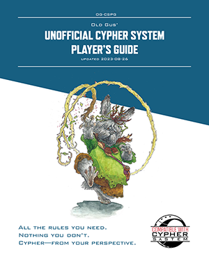
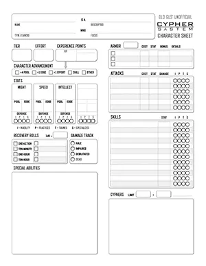

OG-CSPG Le guide du Joueur Non-Officiel de Old Gus' pour le Cypher System
version 1.21i (2024-07-09)
Table des Matières
Bienvenue
Cypher System Open License
Le Cypher System est un jeux de rôle sur table indépendant du cadre de campagne conçu par Monte Cook Games.
Ce produit est une production indépendante et n'est pas affiliée avec Monte Cook Games, LLC. Il est publié sous Cypher System Open License, qui peut être trouvée ci-après http://csol.montecookgames.com.
CYPHER SYSTEM and its logo are trademarks of Monte Cook Games, LLC in the U.S.A. and other countries. All Monte Cook Games characters and character names, and the distinctive likenesses thereof, are trademarks of Monte Cook Games, LLC.
Avant-propos
Ceci n'est pas "les règles"
Cela va sans dire, mais le Old Gus' Unofficial Cypher System Player's Guide (OG-CSPG) ne contient pas les règles officielles du Cypher System. ces règles ont été ré-arrangées, ré-écrites et condensées de manière à ce que vous puissiez apprendre à y jouer rapidement et facilement. Cela va aussi vous guider à travers la création et la pesonnalisation de votre personnage avant de démarrer, ou en continuant à jouer avec la Meneuse.(Note de la traduction FR: j'utiliserai le féminin, avec le mot "Meneuse" pour désigner le joueur ou la joueuse qui dirige les parties, et le masculin pour désigner les personnages-joueurs)
Cette édition des règles vous permet de le faire en tournant un minimum de pages, à part en faisant référence à la Table des Matières.
Si vous êtes une Meneuse, il est préférable que vous vous familiarisiez avec les règles officiels du jeu dans le Cypher System Rulebook ou Old Gus' Cypher System Reference Document (OG-CSRD). Les Meneuses peuvent trouver une perspective unique dans—ou par l'utilisation de—cette version des règles, par exemple comme un outil d'apprentissage pour les joueurs.
Les joueurs ou Meneuses peuvent compléter les feuilles de personnage en imprimant des extraits—descripteurs, capacités et foci, et préférences flavors sont en grande partie non-modifiés, avec l'intégralité du test pour les capacités spéciales inclues en ligne. La présentation des types a été légèrement modifiée pour plus de clarté pendant la création du personnage.
Merci pour la lecture! J'espère que ce document est utile pour vous, et vous apporte de nombreuses et heureuses aventures avec le Cypher System.
—Old Gus
Références aux Produits Officiels
Dans les indications pour les options des personnage et les capacités spéciales, les références aux pages des produits officiels sont indiquées comme suit:
- Cypher System Rulebook (2019), page 1: (1)
- Claim the Sky (2021), page 1: (CTS, 1)
- Godforsaken (2020), page 1: (GF, 1)
- It's Only Magic (2024): (It's Only Magic, page 1)(IOM, 1)
- Rust and Redemption (2024): (RR, 1)
- The Stars are Fire (2019), page 1: (SF, 1)
PDFs Imprimables
 Télécharger le OG-CSCS en PDF:
Additionally, Old Gus' Cypher System Quick-Reference (OG-CSQR) provides the basic rules and vocabulary players need to know in a two-page handout.
Règles du Jeu
Chapitre 1 Les Règles du Cypher System
- Comment Jouer (206)
- Difficulté des Tâches (208)
- Lancer le Dé (209)
- Equipement et Monnaie (201)
- Rencontres, Rounds, Initiative, et Contrôle du Temps (214)
- Faire une Action (215)
- Se Déplacer (223)
- Portée et Distance (213)
- Attaquer (215)
- Infliger des Dommages et Armes (203)(216)
- Se Défendre (225)
- Subir des Dommages et Récupérer (218)
- Armure (202)(217)
- Coopérer (226)
- Cyphers et Artifacts (377)
- Points d'Experience (XP) (237)
- Avancement du Personnage (240)
- Suivants (233)
Comment Jouer
- Vous dites à la Meneuse quelle action yvous voulez faire, et comment vous comptez vous y prendre. Vous pouvez y inclure tout dialogue que vous souhaitez communiquer pendant que vous accomplissez votre action.
- La plupart du temps vos actions sont de la routine—comme se déplacer de quelques pas, parler à un autre personnage, ou tourner une poignée de porte—vous accomplissez simplement l'action et réussissez automatiquement. Si il y a une chance que vous échouiez, la Meneuse vous assigne une tâche, et vous indique laquelle de vos stats devra être évaluée—votre Puissance, Célérité, ou Intellect—et détermine la difficulté sur une échelle de 1 (simple) à 10 (impossible).
- Vous et la Meneuse déterminez si quelque chose de votre PJ pourrait modifier la difficulté d'un ou plusieurs crans. Être entraîné dans une compétence adéquate, avoir des atouts utiles, et utiliser de l'Effort permettent de faciliter une tâche, en diminuant la difficultéa. Avoir une inaptitude ou des contraintes supplémentaires vous entrave dans la tâche, ce qui augmente la difficulté.
- Si vous facilitez la difficulté jusqu'à to 0 (routine), vous réussissez automatiquement. Si la tâche n'est toujours pas de la routinen la Meneuse utilise la difficulté modifiée pour déterminer un nombre seuil. La Meneuse n'est pas obligée de vous donner ce nombre seuil, mais peut vous donner une indication.
- Vous lancez le dé—un d20. Si le résultat est égal ou supérieur au nombre seuil, vous réussissez la tâche.
C'est tout. Voilà comment tout faire—identifier un appareil inconnu, calmer un ivrogne en colère, grimper une falaise, ou combattere un demi-dieu.
Concepts Clés
Personnage: Toute créature dans le jeu, que ce soit un Personnage-joueur (PJ) ou un personnage-non-joueur (PNJ) inerprété par la Meneuse.
Session: Une simple expérience de jeu. Cela dure habituellement quelques heures.
Adventure: Une histoire avec un début et une fin, qui consiste en une ou plusieurs sessions.
Campagne: Une série d'aventures liées ensemble par une histoire principale (ou des histoires connectées) avec des PJs récurrents.
Dés: Outils utilisés pour déterminer des nombres aléatoirement. La plupart du temps, un dé à vingt faces (d20) est utilisé, mais il y a des usages pour un dé à six faces (d6) et un dé à dix faces (d10).
C'est TOUJOURS le Joueur qui lance le dé
La Meneuse vous assigne des actions et des tâches, même si vous ne faites pas d'action, ou si ce n'est pas votre tour.
- Si vous attaquez un adversaire, vous lancez le dé pour savoir si vous le touchez.
- Si un adversaire vous attaque, vous lancez le dé pour savoir si vous évitez le coup.
- Si vous sautez d'un véhicule en marche, vous lancez le dé pour savoir si vous atterrissez sur vos pieds.
- Si une pierre vous tombre dessus, vous lancez le dé pour l'éviter.
La plupart du temps, les actions qui vous sont attribuées quand ce n'est pas votre tour seront pour vous défendre vous-même.
La Roue de la Difficulté
La Roue de la Difficulté représente les difficultés de 0 (routine)–10 (impossible). A l'intérieur de l'anneau est indiqué le nombre seuil, et le pourcentage de chance que le d20 puisse atteindre ou dépasser ce nombre seuil quand vous lancez le dé.
Faciliter: Imaginez que faciliter est comme de tourner "la roue de la difficulté" dans le sens inverse des aiguilles d'une horloge—"faire descendre" la difficulté et augmenter vos chances de succès.
Entraver: De la même manière, imaginez qu'entraver est comme de tourner dans le sens desaiguilles d'une horloge—"faire grimper" la difficulté, et diminuer vos chances de succès.
Au-delà de 20: Les tâches de difficulté 7 ou plus sont impossible sans faciliter la difficulté. Pour les accomplir, vous devez faciliter la difficulté en utilisant des compétences, atouts, et de l'Effort!
Des exemples d'actions
Personnage: Un roublard avec les caractéristiques suivantes
- Réserves Puissance=10,Célérité=15,Intellect=10
- Avantage Puissance=1, Célérité=1
- Entraîné en furtivité et en lame légère
Exemple 1: action de furtivité: Un PJ un peu roublard essaie de traverser la nuit un jardin de manière furtive sans se faire repérer par les gardes. La Meneuse, considére que c'est une tâche de Célérité de difficulté 4. Le PJ est entraîné dans la compétence de furtivité, ce qui lui facilite la tâche d'un cran (la difficulté devient égale à 3). La Meneuse considère que la nuit donne un atout au PJ, ce qui facilite la tâche d'un cran supplémentaire (la difficulté devient égale à 2).
Le joueur doit maintenant lancer le d20 et faire au moins 6 (2x3) pour réussir.
| Type de Modificateurs | Modificateurs | Difficulté |
|---|---|---|
| Difficulté initiale | 0 | 4 |
| Entraîné en furtivité | -1 | 3 |
| Atout: nuit | -1 | 2 |
| Difficulté au final | 2 | |
| Nombre seuil | 2x3 = 6 |
Exemple 2: action de furtivité avec de l'Effort: Même situation que dans l'exemple. Mais cette fois, comme c'est une action importante au cours du jeu, le joueur indique qu'il va mettre un niveau d'Effort en dépensant 3 points de Célérité pour faciliter encore la tâche (la difficulté devient égale à 1). Le joueur ayant 1 en Avantage de Célérité, cela ne lui "coûte" que 2 points de Réserve de Célérité (3 pts de coût d'un niveau d'Effort, moins 1 pour l'Avantage de Célérité)
Au final le joueur doit faire au moins 3 au jet de dé et son personnage perd 2 points de sa Réserve de Célérité.
| Type de Modificateurs | Modificateurs | Difficulté |
|---|---|---|
| Difficulté initiale | 0 | 4 |
| Entraîné en furtivité | -1 | 3 |
| Atout: nuit | -1 | 2 |
| 1 niveau d'Effort | -1 | 1 |
| Difficulté au final | 1 | |
| Nombre seuil | 1x3 = 3 |
Difficulté des Tâches
| Difficulté des Tâches | Nombre Seuil | Ratio de Succès | Description | Détails |
|---|---|---|---|---|
| 0 | (0) | 100% | Routine | N'importe qui peut le faire à chaque fois. |
| 1 | (3) | 90% | Simple | La plupart des gens arrivent à le faire la plupart du temps. |
| 2 | (6) | 75% | Standard | Tâche typique qui demande de l'attention, mais la plupart des gens y arrivent habituellement. |
| 3 | (9) | 60% | Exigeante | Demande une bonne concentration; la plupart des gens ont une chance sur deux de réussir. |
| 4 | (12) | 45% | Difficile | Les personnes entraînées ont 50% de chance de réussir. |
| 5 | (15) | 30% | Challenging | Même les personnes entraînés échouent souvent. |
| 6 | (18) | 15% | Intimidant | Des personnes normales ne réussissent quasiment jamais. |
| 7 | (21) | — | Formidable | Impossible sans de bonnes compétences ou beaucoup d'effort. |
| 8 | (24) | −15% | Heroïque | Une tâche digne d'être racontée durant des années après. |
| 9 | (27) | −30% | Immortel | Une tâche digne de légendes qui durent quelques générations. |
| 10 | (30) | −45% | Impossible | Une tâche que des humains normaux n'envisageraient pas (mais qui respecte les lois de la physique). |
Modifier la Difficulté
Tout a un niveau. Le niveau d'une créature détermine à quel point elle est difficile à toucher, à éviter, ou à persuader. Le niveau de difficulté d'une porte indique à quel point il est difficile de la fracturer. La difficulté d'une serrure est la difficulté de la crocheter. Diminuer la difficulté est faciliter, l'augmenter est l'entraver.
Les compétences peuvent faciliter une tâche de deux crans maximum. Il y a quatre niveaux de compétence. Vous avez de la pratique dans une compétence sauf indication contraire.
- Inaptitude: Entravée d'un cran.
- Practique: Aucun changement dans la difficulté de la tâche.
- Entraîné: Facilitée d'un cran.
- Specialisé: Facilitée de deux crans.
Les atouts peuvent faciliter une tâche de deux crans. Tout ce qui peut aider pour accomplir une tâche est un atout. Un pied de biche est un atout pour forcer une porte, ainsi que la coopération d'un autre PJ ou d'un suivant qui en est capable.
L'Effort peut faciliter une tâche de six crans maximum. Vous pouvez faciliter une tâche d'un cran pour chaque niveau d'Effort que vous utilisez, dépenser des points de la Réserve de la stat que la Meneuse assigne à la tâche—3 points pour le premier niveau, plus 2 points pour chaque niveau supplémentaire, jusqu'à un nombre de niveaux égal à votre score d'Effort.
Lancer le Dé
Le nombre seuil est le nombre que vous devez atteindre au minimum avec un d20 pour réussir. Un nombre seuil est égal à trois fois la difficulté de la tâche—après que vous ayez terminé de la modifier.
Jets de dé spéciaux
Quand vous lancez le dé, certains résultat avec le d20 peuvent déclencher certains effets spéciaux comme augmenter des dommages. Vous pouvez suggérer votre propre effet mineur ou majeur à la Meneuse.
| d20 | Effets |
|---|---|
| 1 | Intrusion de la Meneuse, pas d'XP en récompense |
| 17 | En combat, inflige +1 de dommage |
| 18 | En combat, inflige +2 de dommages |
| 19 | Effet Mineur (ou inflige +3 de dommages) |
| 20 | Effet Majeur (ou inflige +4 dommages), les points de Réserve dépensés pour l'actions sont récupérés |
Rencontres, Rounds, Initiative, et Contrôle du Temps
Une rencontre peut être un grand nombre d'évènements—un combat avec un adversaire, le franchissement d'une rivière en crue, ou une négociation stressante avec un notable important. Unerencontre peut se dérouler sur un ou plusieurs rounds.
Initiative: Quand plusieurs personnages—incluant des PNJs—veulent faire une action en même temps, la Meneuse demande un jet d'initiative pour déterminer qui commence. Un je d'initiative est une tâche de Célérité.
Round: Un round dure entre 5 et 10 secondes. La durée est variable—un round peut être d'une durée plus longue qu'un autre round. En moyenne, il y a environ 10 rounds dans une minute. Chaque round, vous—et chacun des autres pesonnages—disposez d'un tour.
Action: Pendant votre tour, vous devez choisir quelle action vous souhaitez faire. Les actions utilisent habituellement une tâche, mais quelques-unes peuvent en utiliser plusieurs.
Comme c'est le joueur qui lance le dé, vous effectuez des actions et des tâches en réponse aux actions d'autres personnages. Se Défendre contre l'attaque d'un ennemi est une action, c'est en une que vous ne choisissez pas, car ce n'est pas dans votre tour.
Tâche: Un test d'une de vos stats–Puissance, Célérité, ou Intellect—la difficulté est déterminée par la Meneuse.
Durée
Dans une rencontre, une durée de une minute persiste en général jusqu'à la fin de la rencontre. De la même manière une capacité qui dure dix minutes peut être sans problème considérée comme la longueur d'une conversation intense, le temps que cela prend d'explorer rapidement une petite zone, ou le temps qu'il faut prendre pour se reposer après une activité éprouvante.
Equipement et Monnaie
En-dehors des armes, armures, et des cyphers et artifacts, l'équipement ne joue qu'un petit rôle dans le jeu. Il est plus important de se concentrer sur ce que vous pouvez faire plutôt que sur ce que vous avez, mais le bon équipement peut vous fournir un atout pour une tâche.
La Meneuse détermine quel équipement, biens et services sont disponibles, leurs propriétés et comment les prix et catégories de prix sont utilisés et comptabiliés.
Catégories de prix
Dollars, livres, euros, crédits, pièces d'or, billes de solval Martiennes, lunes et étoiles Corso, capsules de bières—des monnaies différentes apparraissent dans différents cadres de campagne, mais il y a en général six catégories de prix. Imaginez que ces catégories sont des puissances de 10, utilisant ces exemples contenporains.
Pas cher: Quelque chose que tout à chacun peut acheter—un repas, une boisson ou un livre.
Prix Moyen: Quelque chose que la plupart des gens peuvent acheter, mais pas très souvent et pas en grande quantité—Un petit meuble. Un divertissement important. Un repas cher. Une nouvelle tenue.
Cher: Quelque chose qui aurait un impact important sur les finances d'une personne du commun—une location, une tenue très jolie, le coût d'un voyage sur une longue distance.
Très cher: Quelque chose hors de portée de la plupart des gens—des bijoux, une voiture ou un voyage de luxe
Exorbitant: Quelque chose que seuls les très riches peuvent se permettre—une très belle maison, un bateau, un bijou particulièrement cher ou des objets d'art.
Hors de prix: Quelque chose que seule une très riche multinationale ou un état peut acquérir ou construire.
| Equipement | Catégories de prix |
|---|---|
| Munition | Pas cher |
| Arme légère | Prix moyen |
| Arme moyenne | Cher |
| Arme lourde | Très cher |
| Armure légère | Prix moyen |
| Armure moyenne | Cher |
| Armure Lourde | Très cher |
Faire une Action
Tout ce que vous faites de significatif—attaquer un adversaire, résister à l'hypnose, sauter par-dessus un torrent, aider un allié, ou activer une capacité spéciale ou un cypher—est une action.
Actions supplémentaires
En plus des actions décrites en détail ans ce chapitre, les actions communes incluent:
- Artisanat, Construction et Réparation
- Interargir avec des Créatures
- Regarder ou Ecouter
- Déplacer un objet lourd
- Activer ou désactiver un appareil ou un véhicule
- Chevaucher ou Piloter
- S'infiltrer
- Nager
- Comprendre, Identifier ou Se Souvenir
Attendre
Vous pouvez attendre pour réagir à l'action d'un autre personnage. Vous décidez quelle action va éclencher votre action, et si le déclenchement de l'action survient, vous pouvez accomplir votre action en premier (à moins qu'agir en premier n'a pas de sens, comme attaquer un adversaire avant qu'il arrive en vue).
Attendre est une bonne façon de s'occuper d'un attaquant à distance qui se lève de derrière un abris, tire et se cache à nouveau. Vous pourriez dire "J'atends de le voir apparaître de derrière son abris et je lui tire dessus."
Coût initial
Utiliser des capacités spéciales ou de l'Effort signifie dépenser des points de Réserve de stat. La Meneuse peut aussi assigner un coût initial à une tâche particulièrement exigeante, juste pour essayer de l'accomplir. Faites le total des coûts de tous les points de Réserve, et soustrayez ensuite votre Avantage.
Se Déplacer
En combat vous êtes habituellement à distance immédiate de la plupart des autres combattants, à moins que la Meneuse en décide autrement.
Se déplacer sur une Distance Immediate: Vous pouvez modifier votre position et faire une action—reculer de quelques pas pour utiliser une capacité, se glisser pour aider un ami, ou passer à travers une porte que vous venez de défoncer. Vous pouvez vous déplacer avant ou après avoir accompli votre action.
Se déplacer sur une Courte Distance: Vous pouvez vous déplacer sur une courte distance en tant qu'action de routine.
Si vous réussissez sur une tâche de Célérité de difficulté 4, vous pouvez faire un déplacement court et réaliser un autre action physique (relativement simple), comme d'attaquer.
Se déplacer sur une Longue Distance: Vous pouvez utiliser une action pour vous éplaer sur une longue distance en tant que tâche de Célérité de difficulté 4.
Modificateurs de Mouvement: Les compétences de mouvement —telles qu'escalade, sauter, manoeuvre en faible gravité—facilitent les tâches de mouvement associées. Les obstacles, terrain difficile, ainsi que les courants forts d'eau ou de vent, peuvent les entraver.
Portée et Distance
| Distance | Portée |
|---|---|
| Distance immédiate/th> | Jusqu'à 3m (10 pieds) |
| Courte distance | Jusqu'à 15 m (50 pieds)) |
| Longue distance | Jusqu'à 30 m (100 pieds) |
| Très longue distance | UJusqu'à 150 m (500 pieds) |
Pied Léger (1+ points de Célérité): Vous pouvez vous déplacer sur une courte distance dans le cadre d'une autre action. Vous pouvez vous déplacer sur une longue distance pendant toute votre action pendant un tour. Si vous appliquez un niveau d'Effort à cette capacité, vous pouvez vous déplacer sur une longue distance et effectuer une attaque pendant toute votre action pendant un tour, mais l'attaque est entravée. Facilitateur.(141)
Attaquer
Une attaque est tout ce que vous faites à un personnage qu'il ne veut pas que vous lui fassiez—des actions comme le frapper avec une arme, lui tirer dessus avec un artifact de foudre, l'envelopper avec du métal contrôllé par magnétisme, ou tenter d'influencer son esprit sont toutes des attaques. Attaquer requiert une tâche pour déterminer si vous touchez ou affectez la cible.
Portée: Les portées pour les attaques sont identiques à celles pour sedéplacer. Les attaques de mélée requiert que vous soyez à une distance immédiate de votre cible.
Capacités Spéciales: Quand vous activez une capacité spéciale en tant qu'attaque, la tâche utilise habituellement la même stat que le coût de la capacité, mais si vous devez toucher la cible, c'est une attaque de mélée à la place.
Modificateurs d'Attaque: Les conditions qui facilitent ou entravent une attaque incluent la couverture, la position, la surprise, la portée, la luminosité, l'eau, et les cibles se déplaçant. Vous pouvez faciliter une attaque avec une Compétences, et en utilisant de l'Effort.
Tâches d'Attaque
| Attaque | Stat pour la tâche |
|---|---|
| Mélée | Puissance ou Célérité—à vous de choisir |
| A distance | Célérité—les distances importent |
| Explosive | Célérité—lancer à courte distance, ou utiliser un lanceur pour une distance plus longue, créée une attaque de zone |
| Capacité speciale | la stat utilisée pour le coût de la capacité—sauf si spécifié dans les détails de la capacité ou par la Meneuse |
| Cypher | Intellect—sauf si spécifié dans les détails du cypher ou par la Meneuse |
Télépathie mécanique (3 points d'Intelligence): En touchant une machine pensante, vous accédez à ses « pensées » superficielles. Action.Mechanical Telepathy (161)
Infliger des Dommages et Armes
Sur une attaque réussie, le montant des dommages que vous infligez est déterminé par l'arme ou la capacité spéciale que vous utilisez. Un jet de dé spécial et l'Effort peuvent augmenter les dommages infligés par l'attaque.
Armes
| Arme | Dommages | Notes |
|---|---|---|
| Légère | 2 points | facilitée d'un cran |
| Moyenne | 4 points | — |
| Lourde | 6 points | les deux mains sont nécessaires pour attaquer |
Dommages pour les Jets de dé spéciaux
| d20 | Effets |
|---|---|
| 17 | +1 aux dommages |
| 18 | +2 aux dommages |
| 19 | +3 aux dommages ou un effet mineur—ignore l'armure, frappe une partie spécifique du corps, repousse, permet de dépasser, distrait |
| 20 | +4 aux dommages ou un effet majeur—met à terre, désarme, assomme, handicape—les points de Réserve dépensés pour l'action sont récupérés |
Dommages par application d'Effort
| Effort Utilisé | Coût de point de Réserve | Dommages à l'Attaque | Dommages en Attaque par Zone |
|---|---|---|---|
| 1 niveau | 3 | +3 | +2 |
| 2 niveaux | 5 | +6 | +4 |
| 3 niveaux | 7 | +9 | +6 |
| 4 niveaux | 9 | +12 | +8 |
| 5 niveaux | 11 | +15 | +10 |
| 6 niveaux | 13 | +18 | +12 |
Lumière brûlante (3 points d'Intelligence): Vous envoyez un faisceau de lumière sur une créature à longue portée, puis resserrez le faisceau jusqu'à ce qu'il brûle, lui infligeant 5 points de dégâts. Action.Burning Light (116)
Prouesses au combat: vous ajoutez +1 dégâts à un type d'attaque avec une arme de votre choix: attaques avec une arme de mêlée ou attaques avec une arme à distance. Facilitateur.Combat Prowess (120)
Se Défendre
Quand vous êtes attaqué, la Meneuse vous assigne une tâche de défense. Bien que ce ne soit pas une action que vous décidiez d'accomplir, c'est toujours une action, donc cela ne vous empèche pas d'utiliser de l'Effort pour la faciliter, pas plus quecela ne vous empèche de prendre votre action à votre tour.
La plupart du temps quand vous échouez à un jet de défense, vous subissez des dommages et vous devez enlever des points d'une Réserve destat —habituellement votre Réserve de Puissance.
Si vous portez une Armure, ou si vous avez d'autres défenses spéciales contre l'attaque ou ses dommages, vou spouvez réduire le total des dommages subis.
Tâches de Défense
Défense de Puissance: Résister aux poisons, aux maladies, et à être écraser par des éléments très lourds
Défense de Célérité: Eviter les attaques et échapper au danger—la tâche de défense la plus commune
Défense d'Intellect: Repousser les attaques mentales, ou tout ce qui peut affecter ou influencer l'esprit
Contre-mesures (4 points d'Intelligence): Vous mettez immédiatement fin à un effet en cours (comme un effet créé par une capacité de personnage) à portée immédiate. Alternativement, vous pouvez l'utiliser comme une action de défense pour annuler toute capacité entrante qui vous cible, ou vous pouvez annuler n'importe quel appareil ou l'effet de n'importe quel appareil pendant 1d6 rounds. Vous devez toucher l'effet ou l'appareil pour l'annuler. Action.Countermeasures (122)
Combattant de Robot: Lorsque vous combattez un robot ou une machine intelligente, vous êtes formé aux attaques et à la défense. Facilitateur.Robot Fighter (178)
Subir des Dommages et Récupérer
Vos points de Réserve sont temporairement réduits par les dommages subis, l'activation de capacités spéciales, et l'utilisation d'Effort.
Si la Réserve tombe à 0, tout dommage restant—et à venir—est appliqué à une autre Réserve de stat dans l'ordre suivant: Puissance, Célérité, puis Intellect. Le montant de dommage que vous subissez ne change pas—votre Armure et vos capacités spéciales qui vous protègent comptent toujours.
Jets de Récupération
Vous récupérez les points de Réserve perdus en faisant des jets de récupération—lancez un d6 et ajoutez votre rang, et divisez ensuite le résultat entre vos Réserve comme vous le souhaitez. Vous pouvez faire quatre jets de récupération chaque jour:
Premier jet de récupération: Une action
Second jet de récupération: Dix minutes
Troisième jet de récupération: Une heure
Quatrième jet de récupération: Dix heures
Le suivi des dommages
Pleine forme: Votre état normal, de bonne santé.
Afaibli: Si une de vos Réserve de stat atteint 0, vous êtes affaibli. Le coût pour utiliser chaque niveau d'Effort est augmenté de 1. Vous ignorez les effets mineurs et majeurs quand vous lancez le dé, vous infligez seulement +1 aux dommages sur un jet spécial de 17–20.
Neutralisé: Si deux de vos Réserves de stat atteint 0, vous êtes neutralisé. Vous ne pouvez faire aucune action autre que bouger—probablement en rampant—sur une distance immediate. Si votre Réserve de Célérité est à 0, vous ne pouvez plus bouger.
Mort: Si les trois Réserves de stat tombent à 0, vous mourrez. Vraiment mort.
Armure
A chaque fois que vous subissez des dommages, vous sousrayez votre caractéristique Armure des dommages avant de réduire votre Réserve de stat . Si vous êtes touché par un coup de feu qui inflige 4 points de dommages et que vous avez 2 en Armure, vous ne subissez que 2 points de dommages à votre Réserve de Puissance. Si vous êtes griffé par un gros cat qui inflige 2 points de dommages, votre Arumre de 2 vous évite tout dommage.
L'armre physique, les capacités spéciales, les cyphers, et les artifacts peuvent contribuer à votre Armure de manière cumulative—si vous avez une Armure de 2 en portant une armure moyenne et que vous avez la capacité Protection, vous avez un total de 3 en Armure. Certaines attaques ignorent certains types d'Armure. Veuillez à bien noter chacune des natures de votre Armure de manière individuelle—certaines attaques ignorant certains types.
Protection: Vous disposez à tout moment d'un bouclier d'énergie autour de vous qui vous aide à dévier les attaques. Vous gagnez +1 en Armure. Facilitateur. Ward (196)
Boucliers
Un bouclier—ou tout ce qui peut être utilisé comme tel—est un atout pour des tâches de defense de Célérité. En utiliser un nécessite une main libre.
Porter une Armure
N'importe quie peut porter une armure, le coût d'utiliser un niveau d'Effort pour une tâche de Célérité est augmenté. Certaines capacités spéciales réduisent le coût de l'Effort de Célérité si vous portez une armure—si vous en avez, utilisez la colonne correspondante dans la table Coût de l'Effort de Célérité ci-dessous. Autrementn utilisez la colonne Aucune Expérience.
You can also reduce Célérité Effort cost through l'avancement de personnage. Special abilities can also improve your defenses without armor.
Pratique des armures: Vous pouvez porter une armure pendant de longues périodes sans vous fatiguer et compenser les réactions ralenties liées au port d'une armure. Vous réduisez le coût en Vitesse du port d'une armure de 1. Vous démarrez le jeu avec un type d'armure de votre choix. Facilitateur.Practiced in Armor (171)
Expérimenté en armure : la réduction du coût de votre capacité Pratiqué en armure s'améliore. Vous réduisez désormais le coût en Célérité de 2. Enabler.Experienced in Armor (136)
Maîtrise en Armure : la réduction du coût de votre capacité Pratique des armures s'améliore. Vous réduisez désormais le coût de l'Effort de Célérité pour porter une armure à 0.Mastery in Armor (161)
Entraîné sans armure : vous êtes entraîné aux tâches de défense de Célérité lorsque vous ne portez pas d'armure. Facilitateur.Trained Without Armor (193)
Entraîné sans armure : vous êtes entraîné aux tâches de défense de Célérité lorsque vous ne portez pas d'armure. Facilitateur.Trained Without Armor (193)
Coût de l'Effort de Célérité par niveau d'Effort utilisé
Cette table donne la liste des types d'armure—légère, moyenne, et lourde, leurs bonus à votre caractéristique d'Armure, et le coût additionel pour votre Réserve que vous devez payer pour chaque niveau d'Effort utilisé pour des tâches de Célérité quand vous la portez.
| Armure Physique | Bonus d'Armure | Aucune Expérience | A de la Practique | A de l'Experience | A de la Maîtrise |
|---|---|---|---|---|---|
| Armure légère | +1 Armure | +2 | +1 | — | — |
| Armure moyenne | +2 Armure | +3 | +2 | +1 | — |
| Armure lourde | +3 Armure | +4 | +3 | +2 | — |
Coopérer
Il y a plusieurs façon pour vous de travailler avec d'autres PJs. Ces options ne peuvent pas être utilisées en même temps par les mêmes personnages.
Aide: Si vous utilisez votre action pour aider quelqu'un, vous founissez un atout pour la tâche. Si vous être entraîné ou spécialisé dans la tâche, vous fournissez deux atouts. Vous ne pouvez pas aider si vous avez une inaptitude dans la tâche associée.
Soin: Vous pouvez soigner une créature une fois par jour. Ce soin permet de récupérer les points d'une Réserve d'une stat de votre choix. Tout d'abord, décidez combien de points de Réserve vous voulez soigner, ensuite, utilisez une action d'Intellect dont la difficulté est ce nombre de points.
Distraction: Si vous arrivez à distraire un adversaire, ses attaques seront entravées pour un round. Vous pouvez décrire votre action comme de crier un défi, tirer un coup de semonce, ou une activité similaire qui ne blesse pas l'adversaire.
Protège: Si vous êtes en situation de protéger ou de garder, vous ne pouvez pas faire d'attaque, mais vos tâches de defense sont facilitées. Si un PNJ essaie de passer votre garde ou effectue une action contre ce que vous gardez, vous pouvez tenter une action de Célérité facilitée. Un succès signifie que le PNJ est empèché d'accomplir son action.
Attirer l'attaque: Quand un PNJ attaque un personnage, vous pouvez vous présenter de manière évidente, crier des provocations, et bouger pour faire en sorte que l'adversaire vous attaque à la place. Dans la plupart des cas, cette action réussit sans avoir besoin de lancer un dé. Dans d'autres cas, comme pour les les adversaires intelligents ou déterminés, vous devez réussir une action d'Intellect pour attirer l'attaque. Si l'action d'Intellect est réussit, l'adversaire vous attaque et vos défenses sont entravées de deux crans. Deux personnages qui tentent d'attirer l'attaque en même temps s'annulent l'un l'autre.
Subir l'attaque: Vous pouvez utiliser vvotre action pour vous jeter devant une attaque réussie d'un adversaire pour sauver un allié. L'attaque réussit automatiquement, et inflige 1 point de dommages supplémentaires. Vous ne pouvez pas volontairement subir plus d'une attaque par round.
Cyphers et Artifacts
Les cyphers sont des capacités à usage unique que vous gagnez au cours du jeu. Ils ont des pouvoirs cool qui peuvent soigner, faire des attaques, faciliter la difficulté de tâches, ou produire des effets comme annuler la gravité ou rendre quelque chose invisible. Il y a deux grands types de cypers: subtile, and manifeste.
Cyphers Subtils
Les cyphes subtiles n'ont pas de forme physique, il peuvent donc représenter de la bonne fortune, des concepts extra-terrestres, des transmissions mysstérieuses, ou des sorts.
Désarmer
Niveau: 1d6 + 1
-
Effet: Un PNJ à distance immédiate dont le niveau est moins élévé que le niveau du cypher laisse tomber ce qu'il tenait. (387)
Cyphers Manifestes
Les cyphers manifestes ont une forme physique. Ils peuvent être trouvé sur un adversaire vaincu, une chambre secrète ou parmi les décombres s'un vaisseau spatial. Ils peuvent être donnés en tant que cadeaux, mais aussi échangés ou achetés.
Cyphers Fantastiques
Les effets de cyphers fantastiques sont utilisés dans les campagnes où la magie, la technologie, ou d'autres facteurs étendent la définition d'"impossible." Les cyphers fantastiques peuvnet être manifestes ou subtiles.
Champs de Point Zéro
Niveau: 1d6 + 3
-
Effet: Place un objet inanimé en-dehors de tout effet de la plupart des énergies pendant une minute. Cela signifie que l'objet ne peut pas être abîmé, déplacé, ou manipulé d'une quelconque façon. Il reste à sa place (même sans son support, comme flottant dans l'air).(400)
Utiliser des Cyphers
La plupart des cyphers nécessitent une action pour être activé, et toute tâche déclenchée par le cypher sont basées sur l'Intellect, sauf si c'est indiqué autrement ou si la Meneuse l'autorise—par exemple, lancer un explosif physique peut être une tâche de Célérité. Tenter d'affecter une autre créature de manière non-désirée est une attaque.
Niveaux de Cypher et Effets
Tous les cyphers ont un niveau et un effet. Le niveau est habituellement obtenu en lançant un dé, quelque fois avec un modificateur, par exemple, "1d6" ou "1d6 + 4". La Meneuse fait le jet de dé pour le niveau du cypher, ou vous autorise à faire le jet de dé quan vous le recevez.
Un cypher avec un niveau inférieur à un cible ne veut pas dire qu'il est inefficace. A cypher with a level lower than a target's doesn't mean it is ineffective. Enchevêtrer un troll de niveau 5 et des petits loups de niveau 3 en utilisant un cypher de détonation (toile) de niveau 4 revient à réussir n jet d'attaque contre le nombre seuil du troll. Si l'attaque est réussie, le troll doit utiliser au moins un action sur son tour pour se libérer de la toile.
Détonation (Toile)
Niveau: 1d6 + 2
Effet: Projette un petit explosif sur une courte distance qui explose dans un rayon immédiat et créé des filins collants. Les PJs pris dans cette zone doit utiliser un action basée sur la Puissance pour sortir, avec la difficulté déterminée par le niveau du cypher. les PNJs se libèrent si leur niveau est supérieur au niveau du cypher.(387)
Durée de Cypher
Les durées de cypher peuvent être temporaire ou permanent. Dans cet exemple, les loups seront probablement emprisonnés pendant quelques temps—à moins que le troll les libère dans les trois prochains rounds—peut-être plus tôt, si ils sont suffisement malins pour travailler ensemble. Dans tous les cas, l'utilisation judicieuse de vos cyphers peut quelque fois résoudre une rencontre rapidement.
Toujours bricoler: si vous disposez d'outils et de matériel et que vous transportez moins de cyphers que votre limite, vous pouvez créer un cypher manifeste si vous avez une heure à consacrer. Le nouveau cypher est aléatoire et toujours 2 niveaux inférieurs à la normale (minimum 1). C'est aussi capricieux et fragile. C'est ce qu'on appelle des cyphers capricieux. Si vous en donnez un à quelqu'un d'autre, il s'effondre immédiatement, inutile. Action à initier; une heure pour terminer. (CTS, 48)
Booster un Cypher Manifeste (2 points d'Intellect): Le cypher manifeste que vous activez avec votre prochaine action fonctionne comme s'il était 2 niveaux plus élevés. Action. (CTS, 51)
Booster la fonction de cypher manifeste (4 points d'Intellect): ajoutez 3 au niveau de fonctionnement d'un cypher manifeste que vous activez lors de votre prochaine action, ou modifiez un aspect de ses paramètres (portée, durée, zone, etc.) jusqu'à doubler ou jusqu'à un dixième. Action. (CTS, 51)
Maîtrise des Cyphers: Tous les cyphers manifestes que vous utilisez fonctionnent à un niveau supérieur à la normale. Si vous disposez d'une semaine et des bons outils, produits chimiques et pièces, vous pouvez bricoler l'un de vos cyphers manifestes, le transformant en un autre cypher du même type que celui que vous aviez dans le passé. Le MJ et le joueur doivent collaborer pour s'assurer que la transformation est logique—par exemple, vous ne pourrez probablement pas transformer une pilule en casque. Facilitateur. (124)
Modifier les Cyphers: vous pouvez prendre deux cyphers manifestes et truquer rapidement un nouveau cypher manifeste du même niveau que le cypher de niveau le plus bas. Vous déterminez la fonction du nouveau cypher, mais il doit être celui d'un cypher que vous avez utilisé auparavant (mais pas nécessairement celui que vous avez déjà construit). Le nouveau cypher est un cypher capricieux, comme ceux créés avec Always Tinkering. Les deux cyphers originaux sont consommés au cours de ce processus. Cette capacité ne fonctionne pas si un ou plusieurs des cyphers originaux sont des cyphers capricieux. Action. (CTS, 54)
Limites de Cypher
Vous avez un maximum de cyphers que vous pouvez porter à n'improte quel moment, déterminé par votre type ou vos capacités spéciales. La plupart des PJs de rang 1 peuvent porter deux cyphers en meme temps. Les adeptes gagnent la capacité Utilisation experte des cyphers au rang 1, et peuvent donc en porter trois.
Utilisez vos Cyphers: La Meneuse vous fournira des nouveaux cyphers régulièrement, donc le meilleur moment pour en utiliser un est la première opportunité à laquelle vous pouvez penser pour en faire un bon usage!
Dépasser les Limites: La Meneuse peut vous autoriser à dépasser la limite des cyphers contre un certain coût, par exemple en augmentant votre ratio d'intrusion de Meneuse: au lieu de se déclencher en obtenant un 1 au dé, il se déclenchera en obtenant 1 ou 2.
Perdre des Cyphers: Vous pouvez utiliser une action pour perdre un cypher. Les cyphers subtiles sont perdus pour toujours, et les cyphers manifestes peuvent être trouvés ou utilisés par d'autres.
Utilisation experte des cyphers: Vous pouvez porter trois cyphers à la fois. Facilitateur. (137)
Utilisation adroite des cyphers: Vous pouvez porter quatre cyphers à la fois. Facilitateur. (108)
Maîtrise dans l' Utilisation des Cyphers: Vous pouvez porter cinq cyphers à la fois. Facilitateur. (160)
Usurpation de Cypher: choisissez un cypher que vous portez. Le cypher doit avoir un effet qui n'est pas instantané. Vous détruisez le cypher et obtenez son pouvoir, qui fonctionne pour vous en permanence. Vous pouvez choisir un cypher lorsque vous obtenez cette capacité, ou vous pouvez attendre et faire votre choix plus tard. Cependant, une fois que vous avez usurpé le pouvoir d'un cypher, vous ne pouvez plus passer à un autre cypher : la capacité d'usurpation ne fonctionne qu'une seule fois. Action à initier. (195)
Artifacts
Les artifacts sont des pièces d'équipement puissantes qui ne peuvent pas être simplement achetées. Quand vous activer un artifacts, lancer le dé d'usure indiqué (1d6, 1d10, 1d20, or 1d100). Si le dé indique le nombre d'usure, l'artifact fonctionne mais il s'épuise ensuite. Une indication d'usure "—" signifie que l'artifact ne s'usera jamais, l'indication d'usure "Automatique" signifie que l'artifact ne peut être utilisé qu'une seule fois—un peu comme un cypher.
Recharger les Cyphers et les Artifacts
Avec les capacités spéciales, l'artisanat, la dépense d'XP, ou l'accomplissement d'objetifs déterminés par la Meneuse, un artifact épuisé ou un cypher manifeste peuvent être rechargés.
Utilisation supplémentaire (3 points d'Intellect): Vous tentez d'obtenir une utilisation supplémentaire d'un artefact sans déclencher de jet d'épuisement. La difficulté de la tâche est égale au niveau de l'artefact. Si vous avez fabriqué l'artefact, vous gagnez un atout pour la tâche. En cas d'échec, le jet d'épuisement se déroule normalement. Vous pouvez également essayer d'utiliser un cypher manifeste sans l'épuiser, mais la tâche est entravée. Une tentative infructueuse d'obtenir une utilisation supplémentaire d'un cypher manifeste le détruit avant qu'il ne puisse produire l'effet souhaité. Action. (138)
Mind Imager
(Cypher System Rulebook, page 275)
Niveau: 1d6 + 2
Form: Handheld device with a plastic panel screen and wires that must be affixed to the head of a creature
Effet: This device shows a visual image of what a creature is thinking. The affected creature need not be conscious.
Depletion: 1 in 1d20
Serum X
(Cypher System Rulebook, page 94)
Niveau: 1d6 + 2
Form: Vial or syringe of red fluid
Effet: Strips someone of all superpowers (including abilities granted by magic, psionics, mutation, or science) for twenty-four hours. The target retains only skills and abilities that are mundane, as agreed by the GM and player.
Depletion: Automatic
Points d'Experience (XP)
Les points d'expérience (XP) sont le carburant du Cypher System. La Meneuse vous accorde des XP, et vous le dépenser pour des bénéfices. Vous pouvez gagner des XP des manières suivantes:
Découvertes: Découvrir peut inclure de trouver un nouvel endroit, telle une pièce secrète, nue nouvelle planètre, un artifact, un territoire perdu, une forteresse secrète, ou une dimension inexplorée. Découvrir peut aussi signifier d'apprendre quelque chose à propos d'un nouvel aspect du cadre de campagne, comme une organisation secrète, une nouvelle religion, ou un ait pertinent dans une enquète.
Récompenses de la Meneuse: Sauver une famille d'une ferme isolée qui était attaquée par des fanatiques peut valoir 1 XP pour chaque PJ. Bien sur, sauver une famille ne veut pas toujours dire qu'il faut tuer tous les méchants; cela peut aussi signifier de les reloger, parlementer avec les fanatiques, ou faire fuir les assaillants.
Arcs de personnage: Les arcs de personnage sont une source important d'XP, et sont détaillés dans le Chapitre 6.
Intrusion de la Meneuse
A n'importe quel moment, la Meneuse peut introduire une complication inattendue pour un PJ. Le faisant, la Meneuse vous donne 1 XP. Si vous acceptez, vous gagnez le point d'XP et vous choisissez aussi un autre PJ qui va aussi gagner un XP—vous devrez justifier du don ou impliquer le PJ dans la rencontre à laquelle vous participez. Vous pouvez refuser l'intrusion de la Meneuse en dépensant 1 XP.
Jets de dé spéciaux: Si vous obtenez un 1 sur un d20 pendant une action, La Meneuse obtient une intrusion gratuire, et aucun XP n'est obtenu.
Intrusion du Joueur
Une intrusion du joueur est un type spécial de bénéfice immédiat—l'inverse d'une intrusion de Meneuse: au lieu que ce soit la Meneuse qui vous donne de l'XP en introduisnt une complication inattendue, vous dépensez 1 XP et vous présentez une solution à un problème ou une complication. Les intrusions du joueur peuvent présenter un changement du monde ou des circonstances plutôt que d'être une action que vous accomplissez vous-même. Utiliser une intrusion du joueur ne nécessite pas que ce soit votre tour, et ne prend pas d'action pour être utilisée—elle survient tout simplement.
Votre type vous donne des suggestions d'intrusions du joueur possibles, mais vous pouvez aussi en suggérer de votre invention. La Meneuse est l'arbitre au final pour savoir si votre intrusion est acceptable par rapport à la situation. Si la Meneuse refusen vous ne dépensez pas 1 XP, et l'intrusion ne se produit pas.
Les intrusion de joueur sont un outil narratif très puissant, donc ne vous attendez pas à les utiliser plus d'une fois par session.
Découvrir des Cyphers Subtils
Vous pouvez obtenir un nouveau cypher subtil en dépensant XP avec l'une des intrusions de joueur suivantes:
Cypher Générique: Vous pouvez demander à la Meneuse un cypher subtil, comme de la guérison, un mouvement, de la défense, ou quelque chose de spécifique, comme de voler. La Meneuse vous donne un cypher qui correspond à votre description et définit aléatoirement son niveau. Si cela vous amène à dépasser votre limite de cypher, vous pouvez sélectionner un de vos cyphers actuels pour vous en séparer.
Cypher Spécifique: Vous pouvez demander à la Meneuse un cypher subtil (comme "Curatif" ou "Stimulant") d'un niveau spécifique. Faites un jet d'Intellect avec une difficulté égale à celui du cyper plus 1. Si vous avez déjà eu ce cypher auparavant, la tâche est facilitée. Si vous réussissez, la Meneuse vous donne le cypher. Si cela vous amène à dépasser votre limite de cypher, vous pouvez sélectionner un de vos cyphers actuels pour vous en séparer. Même si si vous échouez au jet d'Intellect, vous dépensez 1 XP.
Bénéfices Immédiats
Vous pouvez dépenser 1 XP pour relancer tout jet de dé—même un que vous n'avez pas encore fait, et vous choisissez le meilleur résultat. Vous pouvez le refaire autant de fois que vous voulez, mais ce n'est pas probablement une bonne idée de relancer pour une seule et même action trops de fois.
Bénéfices de Courts et Moyens Termes
Vous pouvez dépénser 2 XP pour obtenir un entrainement dans une compétence qui donne un bénéfice à court terme. Par exemple, vous pourriez avoir beaucoup d'expérience dans l'utilisation d'un type particulier de terminal qui est juste devant vous, ce qui vous facilite les tâches pour l'utiliser.
Des bénéfices de moyen terme peuvent être utiles si vous prévoyez de rester ou de revenir où vous êtes. Si vous dépensez 2 XP et annoncez que vous avez grandi dans les montagnes comme celles dans lesquelles vous êtes actuellement, et vous êtes entraîné en escalade dans ces montagnes. Cela vous aide maintenant, et à chaque fois que vous retournerez dans ces montagnes, (ou dans votre foyer) mais vous n'êtes pas entraîné à grimper ailleurs.
Dans de rares occasions, la Meneuse peut même vous autoriser de gagner temporairement une capacité spéciale en tant que bénéfice à court ou moyen terme.
Bénéfices à Long Terme
Vous pouvez dépenser 3 XP pour obtenir un bénéfie à long terme qui vous donne un contrôle narratif sur l'histoire. Les bénéfices à long terme peuvent être d'une des catégories ci-dessous.
Contact: Vous obtenez un contact PNJ important à long terme—quelqu'un qui pourra vous aider avec des informations, de l'équipement, ou des tâches physiques. La Meneuse et vous devrez travailler sur les détails de cette relation.
Foyer: Vous obtenez une résidence à long terme—un appartement dans la ville, une cabane ans la forêt, ou une base dans un ancien complexe. C'est un endroit sûr où vous pouvez lancer vos possessions et dormir tranquillement. Les PJs peuvent même achetez ensemble une maison ou une base d'opération.
Titre ou emploi: Vous obtenez une positon importante—qui vient avec de l'autorité, des responsabillités ou du prestige.
Richesse: Vous faites l'expérience d'une aubaine, d'un héritage, ou d'un don, et—au moins pour le moment—vous n'aurez plus besoin de vous pré-occuper du coût d'un simple équipement, du logement, de la nourriture, etc...
Avancement du Personnage
Vous commencez le jeu au rang 1. Par l'acquisition de quatre avancements de personnage, vous atteignez le rang suivant, jusqu'au rang 6. Chaque avancement coûte 4 XP. Vous pouvez les acquérir ans l'ordre de votre choix, mais ne pouvez acquérir qu'un seul avancement par rang. Les avancements standards sont:
Augmentation des Possibilités: Vous gagnez 4 points à ajouter aux Réserves de stat. Vous pouvez les répartir parmi vos réserves comme vous l'entendez.
Se Déplacer vers la Perfection: Vous ajoutez 1 à votre Avantage de Puissance , votre Avantage de Célérité, ou votre Avantage d'Intellect(à vous de choisir).
Extra Effort: Votre score d'Effort augmente de 1.
Compétences: Choisissez une compétence—autre que d'attaque ou de défense—vous devenez entraîné dans cette compétence.
Si vous choisissez une compétence dans laquelle vous êtes déjà entraîné, vous en devenez spécialisé. Vous pouvez aussi utiliser cette option pour élémnier une inaptitude, en ayant de la pratique dans cette compétence.
Une alternative est que vous pouvez choisir de devenir entraîné dans une capacité spéciale, ce qui facilite les tâches pour l'utiliser—quand vous choisissez cette option, vous pouvez sélectionner une capacité qui est une attaque.
D'autres Options d'Avancement
Une fois pour chaque rang, vous pouvez échanger une avancement standard contre une des options suivantes:
- Réduire de 1 le coût d'Effort de Célérité par le port d'une armure.
- Ajouter +2 à vos jets de récupération.
- Sélectioner une autre capacité spéciale de votre type, de votre rang ou d'un rang inférieur.
Atteindre un Nouveau Rang
Quand vous atteignez un nouveau rang, vous gagnez une nouvelle capacité spéciale de votre focus. Vous gagnez aussi un nombrede capacité à choisir de votre type, qui peuvent être de votre rang ou d'un rang inéférieur. De plus, vous pouvez échanger une capacité de type que vous aviez sélectionnée à un rang précédent avec une autre capacité d'un rang égal ou inférieur.
Suivants
Most followers are gained and increased in level through capacités spéciales. Suivants don't need to be paid, fed, or housed, though you can certainly make such arrangements if you wish.
When you gain an ability that grants you a follower, the GM might require that you actually look for a suitable follower.
Modifications: Suivants are trained in certain tasks, which grant you an atout when they help you with them. A follower has a number of modifications equal to their level. If you gain a level 2 follower and want them to be a spy, you could choose stealth and deception as their two modifications. A follower can't help with tasks unrelated to their modifications.
Follower Level Progression: Each time you advance two tiers after gaining a follower, they increase their level by 1, and you choose a new modification for them.
Follower Assets to Combat and Defense: If your follower is at least level 3, the modification you choose can be for combat—allowing them to grant you an asset to attaques or defense in combat. A few capacités spéciales grant an exception to this rule.
Serv-0 Defenseur: Votre Serv-0 vous aide au combat en bloquant les attaques. Il gagne une modification en Défense Célérité. Facilitateur.(181)
Animal de companie: Un animal de companie typique ne donne pas de modification, mais fournit un atout pour certaines tâches comme de gagner en sérénité, trouver du réconfort, et résister à la solitude.
Suivant de base: vous gagnez un suivant de niveau 2. L'une de leurs modifications doit être la persuasion. Vous pouvez utiliser cette capacité plusieurs fois, gagnant à chaque fois un autre adepte de niveau 2. Facilitateur. (Lorsque vous utilisez Suivant de base, la Meneuse peut exiger que vous recherchiez un suivant approprié.)(112)
Une Bête comme Compagnon: Une créature de niveau 2 de votre taille ou moins vous accompagne et suit vos instructions. Vous et la Meneuse devez définir les détails de votre créature, et vous ferez probablement des jets pour elle en combat ou lorsqu'elle entreprend des actions. Le compagnon bête agit à votre tour. En tant que créature de niveau 2, elle a un nombre cible de 6 et 6 points de vie et elle inflige 2 points de dégâts. Son mouvement est basé sur son type de créature (aviaire, nageur, etc.). Si votre compagnon bête meurt, vous pouvez chasser dans la nature pendant 1d6 jours pour en trouver un nouveau. Facilitateur. (Le niveau d'une créature détermine son nombre cible, sa santé et dommages, sauf indication contraire. Ainsi un compagnon bête de niveau 2 a un nombre cible de 6 et une santé de 6, et il inflige 2 points de dégâts. Un compagnon bête de niveau 4 a un nombre cible de 12 et une santé de 12, et il inflige 4 points de dégâts. Et ainsi de suite.)(112)
Serv-0: Vous construisez un petit assistant robot. Il est de niveau 1 et ne peut pas entreprendre d'actions indépendantes ni quitter votre zone immédiate. En vérité, c'est plus une extension de vous qu'un être séparé. Il gagne une modification dans l'utilisation des machines et autres dispositifs technologiques. Facilitateur.(181)
Compagnon Arbre (5+ points d'Intellect): Vous animez un arbre d'environ votre taille ou moins, créant une créature de niveau 3 avec 1 armure. L'arbre suit vos commandes verbales pendant une heure, après quoi il redevient un arbre normal (et s'enracine là où il se trouve). À moins que l'arbre ne soit tué par des dégâts, vous pouvez l'animer à nouveau lorsque la durée de la capacité expire, mais tous les dégâts qu'il subit sont reportés dans son nouvel état animé. En plus des options normales d'utilisation de l'Effort, vous pouvez choisir d'utiliser l'Effort pour affecter plus d'arbres ; chaque niveau d'Effort utilisé affecte un arbre supplémentaire. Action.Tree Companion (GF, 33)
Chapitre 2 Personnages Joueurs
Ce chapitre explique les éléments d'un personnage joueur dans le Cypher System que vous devrez comprendre mais aussi suivre sur votre feuille de personnage pendant le jeu.
- Stats: Puissance, Célérité, et Intellect (14)
- Réserve et Avantage (15)
- Effort (15)
- Compétences (19)
- Capacités Spéciales (18)
- La Phrase du Personnage (18)
Stats: Puissance, Célérité et Intellect
Votre personnage a trois caractéristiques appelées "stats"—Puissance, Célérité, et Intellect. A chaque fois que vous voudriez faire une action et que la Meneuse vous assigne une tâche, cette tâche est basée sur l'une de ces trois stats.
Puissance
La puissance gouverne à quel point vous êtes fort, quel niveau de chocs physiques vous pouvez supporter, et à quel point vous pouvez supporter des conditions extrèmes, du poison, des toxines ou du venin. Les personnages physiques, endurants ou plutôt orientés dans le combat devraient se concentrer sur la Puissance.
La Puissance est: Durabilité, Endurance, Constitution, Résistance, et Force.
Défense de Puissance: Résister aux poisons et aux maladies, ou être écrasé par de lourdes charges sont évalués en testant votre Puissance.
Dommages de Puissance: Quand vous subissez des dommages physiques, ils sont soustrais de vos points de Puissance en premier.
Célérité
La Célérité décrit à quel point votre personnage est rapide, bien coordonné, capable d'éviter les attaques et sa précision aux tirs. Elle vous aide aussi à vous déplacer plus loin pendant votre tour. Les personnages agiles, rapides, ou les as de la dissimulation, tout comme ceux qui souhaitent exceller en tir à distance, devraient avoir une bonne Célérité.
La Célérité est: Précision, Agilité, Dexterité, Mouvement, Reflexes, et Rapidité.
Défense de Célérité: Eviter les attaques et échapper au danger sont des tâche de défense de Célérité, et ce sont les tâches de défense les plus communes.
Dommages de Célérité: Quand vous subissez des dommages de venin de serpent, d'un étrange champs de force, ou en étant la cible d'énergies nécrotiques, ils sont soustrais de vos points de Célérité en premier.
Intellect
L'Intellect gouverne tous les domaines du mental—résoudre les énigmes, se souvenir, utiliser l'intuition, dire des mensonges convaincants, utiliser vos sens, et utiliser des pouvoirs mentaux sont tous basés sur l'Intellect. Les personnages interressés pour communiquer avec efficacité, pour devenir des savants, ou pour contrôler des pouvoirs surnaturels devraient se focaliser sur l'Intellect.
L'Intellect est: Charisme, Charme, Education, Empathie, Instinct, Connaissance, Personalité, Resolution, Raisonnement, Volonté, Sagesse, et l'esprit.
Défense d'Intellect: Repousser des attaques mentales, ou tout ce qui affecte ou influence sont des tâches de défense d'Intellect.
Dommages d'Intellect: Quand vous subissez des dommages d'une attaque mentale, ils sont soustrais de vos points dIntellect en premier.
Réserve et Avantage
Chacune de vos trois stats—Puissance, Célérité, et Intellect—a deux valeurs—Réserve et Avantage. A chaque rang, vous pouvez utiliser l'avancement de personnage pour augmenter vos Réserves et Avantage de stat. Votre descripteur et certaines capacités spéciales augmentent aussi vos Réserves ou Avantages.
Réserve
Une Réserve de stat est un puit de potentiel duquel vous pouvez puiser pour une stat donnée. Elle est mesurée en "points". Les points de Réserve sont temporairement réduits en subissant des dommages, et en dépensant des points de la Réserve pour activer des capacités spéciales ou utiliser de l'Effort. Si les points de la Réserve d'une stat tombent à 0, vous descendez d'un cran dans le suivi des dommages. Vous récupérez les points de Réserve perdus en faisant des jets de récupération.
Au rang 1, votre descripteur et votre type (et peut-être votre type) determinent vos valeurs de Réserve au démarrage. En général, les PJs commencent le jeu avec environ 9–20 points dans chaque stat.
Avantage
Whenever you spend points from your Réserve by using capacités spéciales or Effort, your Avantage for that stat is subtracted from the total number of points you spend on the action.
At tier 1, you have an Avantage of 1 in one stat, also determined by your type.
Subtracting Avantage from Costs
If you have 1 Puissance Avantage, that pays for the cost of using Bash—you can use the ability for free.
Bash (1 Puissance point): This is a pummeling melee attack. Your attack inflicts 1 less point de dégat than normal, but dazes your target for one round, during which time all tasks it performs are hindered. Action. (112)
Effort
Votre score d'Effort représente à quel point vous pouvez vous pousser pour réussir, et jusqu'à combien vous pouvez puiser dans vos Réserves de stat pour y arriver.
Au rang 1, vous avez un score d'Effort de 1, ce qui vous permet d'utiliser 1 niveau d'Effort. Utiliser un niveau d'Effort facilite la difficulté d'une tâche d'un cran, et coûte 3 points de la Réserve de stat assignée à la tâche par la Meneuse.
Effort et Dommages
Au lieu d'appliquer un niveau d'Effort pour faciliter une attaque, yvous pouvez l'appliquer pour infliger 3 points de dommages/a> supplémentaires—si le jet d'attaque est un succès. Cela fonctionne pour n'importe quel type d'attaque—une épée, une arbalète, ou une attaque mentale.
Quand vous utilisez de l'Effort pour augmenter les dommages pour une attaque de zone, vous infligez seulement 2 points de dommages supplémentaires aux créatures qui sont touchées par l'attaque.
Concussion (7 points d'Intellect): Vous faites exploser une impulsion de force de concussion à partir d'un point que vous choisissez à longue portée. L'impulsion s'étend jusqu'à une courte portée dans toutes les directions, infligeant 5 points de dégâts à tout ce qui se trouve dans la zone. Même si vous échouez au jet d'attaque, les cibles dans la zone subissent 1 point de dégâts. Action.Concussion (121)
Extra Effort
A chaque rang, vous pouvez augmenter votre score d'Effort à travers l'avancement de personnage, vous autorisant d'utiliser des niveaux d'Effort supplémentaires. Chaque niveau d'Effort après le premier coûte seulement 2 points au lieu de 3.
L'Effort peut faciliter une tâche de six crans maximum.
Utiliser plusieurs fois l'Effort
Quand votre score d'Effort est d'au moins de 2, vous pouvez utiliser l'Effort pour différents aspects de la même action. Par exemple, si vous faites une attaque, vous pouvez utiliser un niveau d'Effort pour faciliter le jet d'attaque, et un niveau d'Effort pour augmenter les dommages infligés si vous réussissez.
Certaines capacités spéciales détaillent des options spécifiques sur comment l'Effort peut être utilisé.
Niveaux gratuits d'Effort
Quelques Capacités vous donne un niveau gratuit d'Effort—qui d'habitude vous demande d'utiliser au moins un niveau d'Effort pour la tâche. Un niveau d'Effort gratuit vous autorise à dépasser votre niveau d'Effort, mais pas à dépasser la limite de l'utilisation de l'Effort.
Coup écrasant (2 points de Puissance): lorsque vous utilisez une arme de contusion ou une arme blanche à deux mains et que vous appliquez un effort sur l'attaque, vous obtenez un niveau d'effort gratuit sur les dégâts. (Si vous combattez à mains nues, cette attaque est effectuée avec les deux poings ou les deux pieds joints.) Action.Crushing Blow (123)
Frappe nocturne : lorsque vous attaquez un ennemi dans une faible lumière ou dans l'obscurité, vous obtenez un niveau d'effort gratuit lors de l'attaque. Facilitateur.Nightstrike (166)
Payer le Coût
Dans la Résolution de la Tâche:
Faites le total de tous les coûts de points de Réserve—incluant l'Effort utilisé, les capacités spéciales activées, le coût d'Effort de Célérité pour porter une armure, et tout coût initial déterminé par la Meneuse. A plupart du temps, tous les coûts sont payés à partir de la même Réserve que la stat de la tâche, et se terminent par un seul jet de dé.
Soustrayez l'Avantage de stat du total du coût des points de Réserve. Payez les coûts restants.
La table ci-dessous décrit les niveaux d'Effort, leur changement effectif de la difficulté, et le nombre de points de Réserve dépensés en fonction du niveau d'Effort, corrigé avec l'Avantage. La plupart du temps, vous pouvez consulter la table, puis ajouter les coûts des capacités spéciales ou le coût initial imposé à la tâche, pour avoir le total.
Coûts de Réserve pour l'Effort et l'Avantage
| Faiblesse | Avantage | ||||||||||
|---|---|---|---|---|---|---|---|---|---|---|---|
| Effort Utilisé | Mod. Difficulté | Mod. Nombre Seuil | Taux de succès de la tâche | 1 | 0 | 1 | 2 | 3 | 4 | 5 | 6 |
| aucun | — | — | — | 0–1* | — | — | — | — | — | — | — |
| 1 niveau | (−1) | (−3) | +15% | 4 | 3 | 2 | 1 | — | — | — | — |
| 2 niveaux | (−2) | (−6) | +30% | 6 | 5 | 4 | 3 | 2 | 1 | — | — |
| 3 niveaux | (−3) | (−9) | +45% | 8 | 7 | 6 | 5 | 4 | 3 | 2 | 1 |
| 4 niveaux | (−4) | (−12) | +60% | 10 | 9 | 8 | 7 | 6 | 5 | 4 | 3 |
| 5 niveaux | (−5) | (−5) | +75% | 12 | 11 | 10 | 9 | 8 | 7 | 6 | 5 |
| 6 niveaux | (−6) | (−18) | +90% | 14 | 13 | 12 | 11 | 10 | 9 | 8 | 7 |
- * La Faiblesse est comme un Avantage négatif. Si le PJ paie des points de Réserve pour accomplir une tâche basée sur une stat poura laquelle il a une faiblesse, alors le coût est augmenté de 1, même si aucun Effort n'est utilisé.
Compétences
L'entrainement dans des compéences diminue la difficulté des tâches associées. Vous acquérez de l'entrainement au travers de votre descripteur, de votre type, ou de votre focus. Vous pouvez aussi améliorer votre entrainement dans vos compétences, ou ajouter de nouvelles à votre répertoire par l'avancement de personnage.
Il n'y a pas de liste bien déterminée de compétences, mais voici une liste de compétences possibles pour démarrer. Dans la plupart des campagnes, parler couremment une langue est une compétence.
- Acrobatie
- Astronomie
- Biologie
- Botanie
- Chevaucher
- Conduire
- Crochetage
- Déguisement
- Ecraser
- Escalader
- Furtivité
- Geographie
- Geologie
- Histoire
- Identifier
- Initiative
- Intimidation
- Machinerie
- Menuiserie
- Nager
- Ordinateurs
- Perception
- Persuasion
- Philosophie
- Pickpocket
- Piloter
- Porter
- Reparer
- S'échapper
- S'infiltrer
- Sauter
- Sciences Physiques
- Soigner
- Travail du cuir
- Travail du métal
- Tromper
Charisme naturel : Vous êtes entraîné à toutes les interactions sociales, qu'elles impliquent le charme, l'apprentissage des secrets d'une personne ou l'intimidation des autres. Facilitateur.Natural Charisma (165)
Pisteur : Vous êtes entraîné au suivi et à l'identification des traces. Facilitateur.Tracker (193)
Niveaux d'Entrainement dans les Compétences
Inaptitude: L'opposé d'être entraîné—la difficulté de la tâche associée est entravée d'un cran. Si vous souhaitez être entraîné dans une tâche pour laquelle vous avez une inaptitude, vous en aurez la pratique.
Pratique: La capacité normale et non-modifiée d'utiliser une compétence—pas entraîné, spécialisé ou avoir une inaptitude. C'est le niveau par défaut pour toute compétence.
Entraîné: Avoir un niveau raisonable decompétence dans une tâche. Les tâches associées sont facilitées d'un cran.
Spécialisé: Si vous gagnez une compétence pour laquelle vous êtes déjà entraîné, vous en devenez spécialisé, facilitant les tâches associées de deux crans. C'est le maximum qu'un entrainement dans une compétence peut fournir pour modifier la diffculté d'une tâche.
Compétence en Attaque et en Défense: Votre type détermine quelles sont vos compétences en arme pour attaquer, certains descripteurs donnent un entrainement avec des tâches de defense. Davantage d'entrainement est en général obtenu au travers des capacités spéciales. Vous pouvez aussi devenir entraîné avec vos capacités spéciales—incluant les attaques—au travers de l'avancement de personnage.
Arme de défense : lorsque vous utilisez votre arme enchantée, vous êtes entraîné aux tâches de défense de Célérité. Facilitateur.Defending Weapon (126)
Style de combat à mains nues : Vous êtes entraîné aux attaques à mains nues. Facilitateur.Unarmed Fighting Style (194)
Entraiment en Compétence et Difficulté des Tâches
| Niveau de Compétence | Difficulté des Tâches | Mod. du Nombre seuil | Mod. du Taux de Réussite |
|---|---|---|---|
| Inaptitude | entravée d'un cran | (+3) | −15% |
| Pratique | — | — | — |
| Entraîné | facilitée d'un cran | (−3) | +15% |
| Spécialisé | facilitée de deux crans | (−6) | +30% |
Capacités Spéciales
Vous gagnez des capacités spéciales avec votre type et votre focus au rang 1, et à chaque nouveau rang que vous atteignez au travers de l'avancement du personnage. Les capacités vous fournissent un entrainement à des compétences, et vous permettent d'interagir avec le monde, et vous donnent des protections. Certaines reseemblent à de la magie ou des superpouvoirs.
Coûts et Effort des Capacités: Activer certaines capacités requiert que vous payez un coût en points de Réserve de stat—fourni après le nom de la capacité. Si le coût a un "+" après le nombre, vous pouvez dépenser plus de points de Réserve ou utiliser des niveau d'Effort pour améliorer un peu plus la capacité.
Action: UTiliser ces capacités est une action. Certaines Capacités demande une action pour être initiées, et un peu plus longtemps pour se terminer, ou ont un durée spécifique après activation. Certaines capacités exigent de vous que vous utilisiez votre action pendant votre tour pour maintenir les effets.
Facilitateur: Ces capacités fonctionnent de manière constante, ou sont activées de manière simultanée en tant que composant d'une autre action—souvent un type de tâche spécifique ou une capacité spéciale.
Durée: Les dureés indiquées sont pour la plupart un round, une minute, dix minutes, une heure, dix heures, ou une journée. Vous pouvez arrêter vos capacités à n'importe quel moment (pas d'action requise). Beaucoup de capacités crééent des effets permanents—si vous ouvrez en deux un bus de la ville avec un pouvoir électromagnétique, vous ne pouvez pas simplement "termner" cet effet.
Attaquer avec des Capacités
Si une capacité spéciale affecte un autre personnage d'une manière qui n'est pas souhaitée, c'est une attaque—même une capacité comme Main Guérissseuse est une attaque si la cible ne veut pas être touchée ou soignée.
Si une capacité nécessite de toucher la cible, c'est une attaque de mélée. Si vous ratez, la capacité n'est pas perdue. Vous pouvez continuer à attaquer avec jusqu'à ce que vous touchiez, utilisiez une autre capacité spéciale, ou effectuiez une action différente qui nécessite que vous utilisiez vos mains.
Augmentation Cypher (2+ points d'Intellect): Lorsque vous activez un cypher, ajoutez +1 à son niveau. En plus des options normales d'utilisation de l'Effort, vous pouvez choisir d'utiliser l'Effort pour augmenter le niveau du cypher d'un +1 supplémentaire (par niveau d'Effort appliqué). Vous ne pouvez pas augmenter le niveau du cypher au-dessus de 10. Enabler.Augment Cypher (111)
Visée mortelle (3 points de Célérité): Pendant la minute suivante, toutes les attaques à distance que vous effectuez infligent 2 points de dégâts supplémentaires. Action à initier.Deadly Aim (125)
Toucher Glacial (1 point d'Intellect): Vos mains deviennent si froides que la prochaine fois que vous touchez une créature, vous infligez 3 points de dégâts. Alternativement, vous pouvez utiliser cette capacité sur une arme, et pendant dix minutes, elle inflige 1 point de dégâts supplémentaire du froid. Action pour le toucher ; facilitateur pour arme.Frost Touch (144)
Main Guérisseuse (1 point d'Intellect): avec un contact, vous restaurez 1d6 points à un pool de statistiques de n'importe quelle créature. Cette capacité est une tâche de difficulté Intellect 2. Chaque fois que vous tentez de soigner la même créature, la tâche est entravée par une étape supplémentaire. La difficulté revient à 2 après que cette créature se repose pendant dix heures. Action.Healing Touch (149)
Réserves cachées : lorsque vous utilisez une action pour effectuer un jet de récupération, vous gagnez également +1 à votre Avantage de Puissance et à votre Avantage de Célérité pendant dix minutes par la suite. Facilitateur.Hidden Reserves (149)
Lancement de flammes (2 points d'Intellect): Pendant que votre Manteau de flammes est actif, vous pouvez atteindre votre halo et lancer une poignée de feu sur une cible. Il s'agit d'une attaque à distance à courte portée qui inflige 4 points de dégâts de feu. Action.Hurl Flame (149)
Puissance des Capacités par Rang
| Niveau de Puissance | Rang |
|---|---|
| Rang inférieur | 1–2 |
| Rang intermédiaire | 3–4 |
| Rang supérieur | 5–6 |
Phrase de personnage: Descripteur, Type, et Focus
Pour créer votre personnage, vous faites un simple proposition qui le décrit. La phrase de personnage prend cette forme:
"Je suis un(e) [noun] [adjectif] qui [verbs]."
"Je suis un(e) [type] [descripteur] qui [focus]."
"Je suis un(e) [Descriptor] [Type] [Préférence] qui [Focus]."
"[Arc de Personnage]."
Descripteur
L'adjectif est votre descripteur. Un descripteur définie comment vous êtes, avec des forces et des faiblesses. Dans certains cadre de campagne, il peut aussi décrire votr espèce ou d'autres choses uniques à propos de votre histoire personnelle. La Meneuse peut limiter quels descripteurs sont appropriés pour le cadre du jeu. Il y a beaucoup de descripteurs, il est donc peu probable que deux PJs dans le groupe aient besoin d'utiliser le même..
Des douzaines de descripteurs sont détaillés dans le Chapitre 3.
Type
Le nom est le type de votre personnage—Adepte, Explorateur, Emissaire, ou Guerrier. votre type de personnageY définit votre rôle ans le monde, et propose un large choix de capacités spéciales que vous pourriez vouloir pour votre personnage.
Les types sont très génériques, il est donc parfaitement acceptable que deux personnages aient le même type—aucun des deux ne sera pareil.
Les types sont détaillés dans le Chapitre 4.
Focus
Le verbe est votre focus. Le focus est ce que le personnage fait de mieux, il vous confère des nouvelles capacités spéciales à chaque rang. Votre focus vous aide à comprendre comment vous interagissez avec les autres personnages joueurs dans votre groupe. La liste des foci disponibles dépendent probablement du cadre de jeu et du genre de votre jeu.
Les foci sont uniques. Deux PJs dans le groupe n'auront pas le même focus.
Un peu plus d'une centaine de foci sont détaillés dans le Chapitre 5.
Arc de personnage
Comme dans un livre ou une série télé, les personnages progressent au travers de leur propre histoire personnelle, en changeant au fil du temps. Un arc de personnage est un bon moyen de dire à la Meneuse quel genre d'histoire vous voulez suivre.
Les arcs de personnage sont une source importante d'XP.
Des douzaines d'arc sont décrits dans le Chapitre 6.
Faire et Nommer vos Choix
Votre descripteur et votre focus sont moins flexibles que votre type, alors essayez de limiter ces options en premier. Déterminez ensuite quel type comblerait les écarts pour le concept de votre personnage.
Cela peut aider de donner une touche personelle à votre personnage sur la feuille de personnage en renommant vos choix. Par exemple, dans un cadre de campagne sur le contes de fées, le concept de votre personnage pourrait particulièrement étrange—un écureuil de dessin animé, inventeur avec un penchant pour rendre vivant les phonographes, par exemple. Vous pourriez finir par choisir par incarner un "Adepte Rapide qui Construit des Robots", mais vous présentez la phrase de votre personne comme un "Ecureuil Horlogé qui Réveille les Objets". Faire ainsi vous induit à une touche plus personnelle à vos actions et vos capacités, et aide à faire en sorte que même un focus apparemment anachronique semble tout àa fait naturel dans le cadre de la campagne.
Plus de Personnalisation
Plus de personnalisation et les préférences sont détaillées dans le Chapitre 7. Ces règles optionelles nécessitent toutes l'implication de la Meneuse, alors discutez-en avec la Meneuse si elles vous intéressent.
Options de Personnage
Chapitre 3 Descripteur
Choisir un Descripteur
Votre descripteur définit votre personnage—Il fournit une sorte de "boite à outil de roleplay"—en plaçant votre pesonnage par rapport aux autres PJs, et en fournissant à votre PJ un mode de fonctionnement et une motivation. En terme de mécanique de jeu, les descripteurs modifient vos Réserves de stat, donnent un entrainement dans des compétences, et quelques-uns ajoutent des capacités spéciales. Toutes les modifications de personnage des descripteurs ne sont pas positives—vous êtes défini autant par ce pourquoi vous n'êtes pas bon que par ce pourquoi vous l'êtes.
Vous pouvez prendre le descripteur que vous voulez, ou la Meneuse vous donnera une liste pour vous aider à choisir.
Descripteurs pour les Espèces
Certains cadrede campagne peuvent utiliser un descripteur pour des espèces, ou peuvent rester plus simple—une espèce reseemblant à un lévrier pourrait être bien représentés par les descripteur Rapide.
Descripteurs
- Attirant (38)
- Au Regard-perçant (55)
- Bienfaisant (39)
- Borné (56)
- Calme (40)
- Casse-cou (54)
- Chanceux (51)
- Chaotique (40)
- Charmant (41)
- Créatif (42)
- Cruel (43)
- Curieux (49)
- Doué pour la mécanique (52)
- Dur-à-Cuire (57)
- Empathique (44)
- Endurant (47)
- Erudit (51)
- Etrange (58)
- Exilé (45)
- Fort (56)
- Fou (51)
- Furtif (56)
- Gentil (50)
- Grâcieux (46)
- Hideux (48)
- Honorable (48)
- Impétieux (39)
- Impulsif (48)
- Intelligent (49)
- Intuitif (49)
- Jovial (50)
- Lâche ()
- Malin (41)
- Maladroit (41)
- Maudit (44)
- Mutique (57)
- Mystérieux ()
- Mystique (53)
- Naif (53)
- Pas très brillant (46)
- Perspicace (54)
- Prompt (45)
- Rapide (57)
- Résistant (54)
- Rugueux (55)
- Sans Honneur (44)
- Sceptique (55)
- Suspicieux (47)
- Vertueux (58)
- Vicieux (58)
Fairy Tale Descriptors
- Bewitched (WAAMH, 169)
- Changeling (WAAMH, 170)
- Fragmented (WAAMH, 171)
- Frumious (WAAMH, 171)
- Haunted (WAAMH, 172)
- Lost (WAAMH, 172)
Descripteurs d'Espèces de Fantasy
- Peuple Félin (GF, 86)
- Draconnien (GF, 87)
- Nain (258)
- Elfe (258)
- Gnome (GF, 89)
- Demi-Géant (259)
- Halfling (GF, 89)
- Enfer-Né (259)
- Homme-Lézard (GF, 89)
Descripteurs pour la Magie Moderne
- Chimère (IOM, 37)
- Dragon (IOM, 38)
- Fantôme (IOM, 39)
- Chasseur (IOM, 40)
- Rien (IOM, 41)
- Sylve (IOM, 42)
- Non-Magique (IOM, 43)
Descripteurs Post-Apocalyptique
- Amer (RR, 113)
- Canidé (RR, 113)
- Felidé (RR, 114)
- Insectoïde (RR, 115)
- Plein d'espoir (RR, 116)
- Morlock (300)
- Mutant (RR, 116)
- Cafard (301)
- Rouillé (RR, 117)
- Brillant (RR, 118)
Descripteurs d'Espèces de Science Fiction
- Intelligent Artificiellement (279)
- Quintar (279)
Descripteurs de Superhéros
- Amazing (CTS, 42)
- Incroyable (CTS, 42)
- Puissant (CTS, 43)
- Sensationel (CTS, 44)
- Etonnant (CTS, 44)
Descripteurs
Attirant
Vous êtes attirant aux yeux des autres, mais peut-être plus important encore, vous êtes sympathique et charismatique. Vous avez ce « quelque chose de spécial » qui attire les autres vers vous. Vous savez souvent ce qu'il faut dire pour faire rire quelqu'un, le mettre à l'aise ou l'inciter à agir. Les gens comme vous veulent vous aider et veulent être votre ami.
Vous ajoutez les caractéristiques suivantes:
-
Charismatique: +2 à votre Réserve d'Intellect.
-
Compétence: Vous êtes entraîné dans les relations sociales agréables.
-
Resistant aux Charmes: Vous êtes conscient de la façon dont les autres peuvent manipuler et charmer les gens, et vous remarquez lorsque ces tactiques sont utilisées contre vous. Grâce à cette prise de conscience, vous êtes entraîné à résister à toute forme de persuasion ou de séduction si vous le souhaitez.
-
Lien initial à la Première Aventure:
- Vous avez rencontré un parfait inconnu (l'un des autres PJ) et vous l'avez tellement charmé qu'il vous a invité.
- Les PJ cherchaient quelqu'un d'autre, mais vous les avez convaincus que vous étiez parfait.
- Un pur hasard --- parce que vous suivez le flux des choses et que tout se passe généralement bien.
- Votre charisme a permis à l'un des PJ de se sortir d'une situation difficile il y a longtemps, et il vous demande toujours de le rejoindre dans de nouvelles aventures.
Au Regard-perçant
Vous êtes perspicace et bien conscient de votre environnement. Vous remarquez les petits détails et vous vous en souvenez. Vous pouvez être difficile à surprendre.
Vous ajoutez les caractéristiques suivantes:
-
Compétence: Vous êtes entraîné aux actions d'Initiative.
-
Compétence: Vous êtes entraîné aux actions de perception.
-
Trouve la faille: Si un adversaire a une faiblesse évidente (subit des dégâts supplémentaires dus au feu, ne peut pas voir de son oeil gauche, etc.), le MJ vous dira de quoi il s'agit.
-
Lien initial à la Première Aventure:
- Vous avez entendu parler de ce qui se passait, avez remarqué une faille dans le plan des autres PJ et vous vous êtes joint à eux pour les aider.
- Vous avez remarqué que les PJ ont un ennemi (ou au moins une queue) dont ils n'avaient pas conscience.
- Vous avez vu que les autres PJ préparaient quelque chose d'intéressant et vous vous êtes impliqués.
- Vous avez remarqué des choses étranges, et tout cela semble lié.
Bienfaisant
Aider les autres est votre vocation. C'est pour ça que vous êtes là. Les autres se réjouissent de votre nature extravertie et charitable, et vous vous réjouissez de leur bonheur. Vous faites de votre mieux lorsque vous aidez les gens, soit en leur expliquant comment ils peuvent surmonter au mieux un défi, *soit en leur démontrant comment le faire par eux-même (translation to be confirmed)*.
Vous ajoutez les caractéristiques suivantes:
Généreux: Les alliés qui ont passé la dernière journée avec vous ajoute +1 à leur jet de Récupération.
Altruiste: Si vous vous tenez à côté d'une créature qui subit des dégâts, vous pouvez intercéder et subir vous-même 1 point de ces dégâts (réduisant les dégâts infligés à la créature de 1 point). Si vous possédez une Armure, cela ne vous apporte aucun avantage lorsque vous utilisez cette capacité.
Compétence: Vous êtes entraîné à toutes les tâches liées aux intéractions sociales agréables, pour mettre les autres à l'aise et gagner leur confiance.
Serviable: Chaque fois que vous aidez un autre personnage, ce personnage en bénéficie comme si vous aviez été entraîné, même si vous n'êtes pas entraîné ou spécialisé dans la tâche tentée.
Inaptitude: Quand vous êtes seul, toutes les tâches d'Intellect et de Célérité sont entravées.
Lien initial à la Première Aventure:
- Même si vous ne connaissiez pas auparavant la plupart des autres PJ, vous vous êtes invité à leur quête.
- Vous avez vu les PJ lutter pour surmonter un problème et vous les avez rejoints de manière désintéressée pour vous aider.
- Vous êtes presque certain que les PJs échoueront sans vous.
- Le choix était entre votre vie en lambeaux et aider les autres. Depuis, vous n'avez pas regardé en arrière.
Borné
Vous êtes un peu borné, volontaire et indépendant. Personne ne peut vous convaincre ou changer d'avis si vous ne souhaitez pas que cela change. Cette qualité ne vous rend pas nécessairement intelligent, mais elle fait de vous un bastion de volonté et de détermination. Vous vous habillez et agissez probablement avec style unique et tendance, sans vous soucier de ce que pensent les autres.
Vous ajoutez les caractéristiques suivantes:
Volontaire: +4 à votre Réserve d'Intellect.
Compétence: Vous êtes entraîné à résister aux effets mentaux.
Compétence: Vous êtes entraîné dans des tâches nécessitant une concentration ou une concentration incroyable.
Inaptitude: Volontaire ne veut pas dire brillant. Toute tâche qui implique de résoudre des énigmes ou des problèmes, de mémoriser des choses ou d'utiliser des connaissances est entravée.
Lien initial à la Première Aventure:
- Contre votre bon jugement, vous avez rejoint les autres PJ parce que vous avez vu qu'ils étaient en danger.
- L'un des autres PJ vous a convaincu que rejoindre le groupe serait dans votre intérêt.
- Vous avez peur de ce qui pourrait arriver si les autres PC tombaient en panne.
- Il y a une récompense en jeu et vous avez besoin d'argent.
Calme
Vous avez passé la majeure partie de votre vie à des activités sédentaires (livres, films, passe-temps, etc.) plutôt qu'à des activités actives. Vous connaissez bien toutes sortes de domaines universitaires ou autres activités intellectuelles, mais rien de physique. Vous n'êtes pas nécessairement faible ou affaibli (bien que ce soit un bon descripteur pour les personnages âgés), mais vous n'avez aucune expérience dans les activités plus physiques.
Vous ajoutez les caractéristiques suivantes:
Adore les Livres: +2 à votre Réserve d'Intellect.
Compétences: Vous êtes entraîné à quatre compétences non-physiques de votre choix.
Anecdote: Vous pouvez trouver un fait aléatoire pertinent à la situation actuelle lorsque vous le souhaitez. Il s'agit toujours d'un fait, et non d'une conjecture ou d'une supposition, et doit être quelque chose que vous auriez pu logiquement lire ou voir dans le passé. Vous pouvez le faire une seule fois, bien que la capacité soit renouvelée à chaque fois que vous effectuez un jet de récupération.
Inaptitude: Non seulement vous n'êtes pas un Guerrier, mais toutes les attaques physiques sont désavantagées.
Inaptitude: Vous n'êtes pas vraiment quelqu'un à l'aise dans la nature. Toutes les tâches pour grimper, courir, sauter et nager sont désavantagées.
Lien initial à la Première Aventure:
- Vous avez lu quelque part la situation actuelle et avez décidé de la vérifier par vous-même.
- Vous étiez au bon (mauvais ?) endroit au bon (mauvais ?) moment.
- Tout en évitant une situation totalement différente, vous êtes entré dans votre situation actuelle.
- L'un des autres PJ vous a entraîné dans cette aventure.
Casse-cou
Cela fait partie de votre nature de remettre en question ce que les autres pensent ne pas pouvoir ou ne devrait pas être fait. Vous n'êtes pas fou, bien sûr – vous n'essaieriez pas de franchir un gouffre d'un kilomètre de large simplement parce que vous avez le courage de le faire. Il y a l'impossible et puis il y a le tout juste possible. Vous aimez pousser ces derniers plus loin que les autres, car cela vous procure un élan de satisfaction et de plaisir lorsque vous réussissez. Plus vous réussissez, plus vous vous retrouvez à la recherche du prochain défi risqué contre lequel vous essayer.
Vous ajoutez les caractéristiques suivantes:
Agile: +4 à votre Réserve de Célérité.
Compétence: Vous savez exploiter le risque et vous êtes entraîné à des tâches qui impliquent un élément de hasard, comme jouer à des jeux ou choisir entre deux ou trois options apparemment égales.
Tenter la Chance: Vous pouvez choisir de réussir automatiquement une tâche sans lancer de dés, à condition que la difficulté de la tâche ne dépasse pas 6. Cependant, lorsque vous le faites, vous déclenchez également une intrusion de MJ comme si vous aviez obtenu un 1. L'intrusion n'invalide pas la réussite, mais cela la modifie probablement d'une manière ou d'une autre. Vous pouvez le faire une seule fois, bien que cette capacité se renouvelle à chaque fois que vous effectuez un jet de récupération de dix heures.
Inaptitude: Vous êtes peut-être agile, mais vous n'êtes pas sournois. Les tâches liées à la furtivité et au silence sont entravées.
Lien initial à la Première Aventure:
- Il semblait y avoir des chances égales que les autres PJ ne réussissent pas, ce qui vous semblait bien.
- Vous pensez que les tâches qui vous attendent vous présenteront des défis uniques et enrichissants.
- L'un de vos plus grands risques n'a pas été réalisé et vous avez besoin d'argent pour vous aider à payer cette dette.
- Vous vous êtes vanté de n'avoir jamais vu de risque que vous n'aimiez pas, c'est ainsi que vous êtes arrivé à votre point actuel.
Chanceux
Vous comptez sur le hasard et la chance opportune pour vous sortir de nombreuses situations. Quand les gens disent que quelqu'un est né sous une bonne étoile, ils parlent de vous. Lorsque vous vous essayez à quelque chose de nouveau, aussi peu familier que soit la tâche, vous trouvez le plus souvent une mesure de succès. Même lorsqu'une catastrophe survient, elle est rarement aussi grave qu'elle pourrait l'être. Le plus souvent, les petites choses semblent se dérouler comme vous le souhaitez, vous gagnez des concours et vous êtes souvent au bon endroit au bon moment.
Vous ajoutez les caractéristiques suivantes:
Réserve de Chance: Vous disposez d'une Réserve supplémentaire appelé Chance qui commence par 3 points et a une valeur maximale de 3 points. Lorsque vous dépensez des points d'une autre Réserve, vous pouvez d'abord prendre un, quelques-uns ou tous les points de votre Réserve de chance. Lorsque vous effectuez un jet de récupération pour récupérer des points dans n'importe quelle autre Réserve, votre Réserve de chance est également rafraîchie du même nombre de points. Lorsque votre Réserve de chance est à 0 point, elle ne compte pas dans votre jauge de dégâts. Facilitateur.
Avantage: Quand vous utilisez 1 XP pour relancer un d20 pour n'importe quel jet dont l'effet n'affecte que vous, ajoutez 3 au résultat au nouveau jet de dé.
Lien initial à la Première Aventure:
- Sachant que les gens chanceux remarquent et profitent activement des opportunités, vous vous êtes impliqué dans votre première aventure par choix.
- Vous êtes vraiment rentré dans quelqu'un d'autre au cours de cette aventure par pure chance.
- Vous avez trouvé une mallette au bord de la route. Il était en mauvais état, mais à l'intérieur vous avez trouvé de nombreux documents étranges qui vous ont conduit jusqu'ici.
- Votre chance vous a sauvé lorsque vous avez évité un véhicule roulant à grande vitesse par une chute fortuite à travers une ouverture dans le sol (un trou d'égout, si dans un cadre moderne). Sous terre, vous avez trouvé quelque chose que vous ne pouviez ignorer.
Chaotique
Le danger ne signifie pas grand-chose pour vous, principalement parce que vous ne pensez pas beaucoup aux répercussions. En fait, vous aimez créer des surprises, rien que pour voir ce qui va se passer. Plus le résultat est inattendu, plus vous êtes heureux. Parfois, vous êtes particulièrement maniaque et, pour le bien de vos compagnons, vous vous empêchez de prendre des mesures dont vous savez qu'elles mèneront au désastre.
Vous ajoutez les caractéristiques suivantes:
Tumultueux: +4 à votre Réserve de Célérité.
Compétence: Vous êtes entraîné aux actions de Défense d'Intellect.
Chaotique: Une fois après chaque jet de récupération de dix heures, si le premier résultat ne vous plaît pas, vous pouvez relancer un jet de dé de votre choix. Si vous le faites, et quel que soit le résultat, le MJ vous présente une intrusion du MJ.
Inaptitude: Votre corps est un peu usé par les excès occasionnels. Les tâches de défense de Puissance sont désavantagées.
Lien initial à la Première Aventure:
- Un autre PJ vous a recruté alors que vous aviez un bon comportement, avant de réaliser à quel point vous étiez chaotique.
- Vous avez des raisons de croire qu'être avec les autres PJ vous aidera à prendre le contrôle de votre comportement erratique.
- Un autre PJ vous a libéré de captivité, et pour le remercier, vous vous êtes porté volontaire pour l'aider.
- Vous n'avez aucune idée de la façon dont vous avez rejoint les PJ. Vous continuez simplement avec cela pour le moment jusqu'à ce que les réponses se présentent.
Charmant
Vous êtes un beau parleur et un charmeur. Que ce soit par des moyens apparemment surnaturels ou simplement par des mots, vous pouvez convaincre les autres de faire ce que vous souhaitez. Très probablement, vous êtes physiquement attirant ou du moins très charismatique, et les autres aiment écouter votre voix. Vous faites probablement attention à votre apparence et restez bien soigné. Vous vous faites facilement des amis. *Vous jouez sur la facette de la personnalité de votre statistique Intellect ; l'intelligence n'est pas votre point fort (translation to be confirmed)*. Vous êtes sympathique, mais pas nécessairement studieux ou volontaire.
Vous ajoutez les caractéristiques suivantes:
Personable: +2 à votre Réserve d'Intellect.
Compétence: Vous êtes entraîné dans toutes les tâches d'intéractions sociales positives ou plaisantes.
Compétence: Vous êtes entraîné quand vous uitliser une capacité spéciale qui influence l'esprit des autres.
Contact: Vous avez un contact important qui occupe une position influente, comme un noble mineur, le capitaine de la garde/police de la ville ou le chef d'une grande bande de voleurs. Vous et le MJ devriez régler les détails ensemble.
Inaptitude: Vous n'avez jamais été doué pour étudier ou retenir les faits. Toute tâche impliquant des connaissances, des connaissances ou une compréhension est désavantagée.
Inaptitude: Votre volonté n'est pas votre point fort. Les actions de défense pour résister à des attaques mentales sont désavantagées.
Equipement Supplémentaire: Vous avez réussi à obtenir des réductions et des bonus décents ces dernières semaines. En conséquence, vous disposez de suffisamment d'argent en poche pour acheter un article à prix modéré.
Lien initial à la Première Aventure:
- Vous avez convaincu l'un des autres PJ de vous dire ce qu'il faisait.
- Vous avez tout organisé et convaincu les autres de vous rejoindre.
- L'un des autres PJ vous a rendu service, et maintenant vous remboursez cette obligation en l'aidant dans la tâche à accomplir.
- Il y a une récompense en jeu et vous avez besoin d'argent.
Créatif
Peut-être avez-vous un cahier dans lequel vous notez vos idées afin de pouvoir les développer plus tard. Peut-être vous envoyez-vous par courrier électronique des idées qui vous frappent à l'improviste afin de pouvoir les trier dans un document électronique. Ou peut-être que vous vous asseyez simplement, regardez votre écran et, par une force de volonté incroyable, produisez quelque chose à partir de rien. Quelle que soit la manière dont votre don fonctionne, vous êtes créatif : vous codez, écrivez, composez, sculptez, concevez, dirigez ou créez de toute autre manière des récits qui captivent les autres avec votre vision.
Vous ajoutez les caractéristiques suivantes:
Inventive: +2 à votre Réserve d'Intellect.
Original: Vous proposez toujours quelque chose de nouveau. Vous êtes entraîné dans toute tâche liée à la création d'un récit (comme une histoire, une pièce de théâtre ou un scénario). Cela inclut la tromperie, si la tromperie implique un récit que vous êtes capable de raconter.
Compétence: Vous êtes naturellement inventif. Vous êtes entraîné à une compétence créative spécifique de votre choix : écriture, codage informatique, composition musicale, peinture, dessin, etc.
Compétence: Vous aimez résoudre des énigmes, etc. Vous êtes entraîné aux tâches de résolution d'énigmes.
Compétence: Pour être créatif, il faut toujours apprendre. Vous êtes entraîné à toute tâche qui implique la découverte de quelque chose de nouveau, par exemple lorsque vous fouillez dans une bibliothèque, une banque de données, des archives d'actualités ou une collection de connaissances similaire.
Inaptitude: Vous êtes inventif mais pas charmant. Toutes les tâches liées à une interaction sociale agréable sont désavantagées.
Lien initial à la Première Aventure:
- Vous faisiez des recherches pour un projet et avez convaincu les PJ de vous accompagner.
- Vous recherchez de nouveaux marchés pour les résultats de votre production créative.
- Vous êtes tombé sur la mauvaise clientèle, mais elle a grandi en vous.
- Une vie créative est souvent confrontée à des obstacles financiers. Vous avez rejoint les PJ parce que vous espériez que cela serait rentable.
Cruel
Le malheur et la souffrance ne vous touchent pas. Lorsqu'une autre personne endure des difficultés, vous avez du mal à vous en soucier, et vous pouvez même apprécier la douleur et les difficultés que cette personne éprouve si elle vous a fait du mal dans le passé. Votre côté cruel peut provenir de l'amertume provoquée par vos propres luttes et déceptions. Vous pourriez être un pragmatique acharné, faisant ce que vous estimez devoir faire même si les autres sont pires à cause de cela. Ou vous pourriez être un sadique, se réjouissant de la douleur que vous infligez.Être cruel ne fait pas nécessairement de vous un méchant. Votre cruauté peut être réservée à ceux qui vous contrarient ou à d'autres personnes qui vous sont utiles. Vous êtes peut-être devenu cruel à la suite d'une expérience extrêmement horrible. Les abus et la torture, par exemple, peuvent priver la personne de toute compassion pour les autres êtres vivants.De plus, vous n'avez pas besoin d'être cruel dans toutes les situations. En fait, les autres pourraient vous considérer comme aimable, amical et même serviable. Mais lorsque vous êtes en colère ou frustré, votre double nature se révèle, et ceux qui ont mérité votre mépris risquent d'en souffrir.
Vous ajoutez les caractéristiques suivantes:
Calculateur: +2 à votre Réserve d'Intellect.
Cruauté: Lorsque vous utilisez la force, vous pouvez choisir de mutiler ou de lui infliger des blessures douloureuses pour prolonger la souffrance de votre ennemi. Chaque fois que vous infligez des dégâts, vous pouvez choisir d'infliger 2 points de dégâts de moins pour faciliter votre prochaine attaque contre cet ennemi.
Compétence: Vous êtes entraîné dans les tâches en relation avec in tasks lié à la tromperie, à l'intimidation et à la persuasion lorsque vous interagissez avec des personnages éprouvant une douleur physique ou émotionnelle.
Inaptitude: Vous avez du mal à vous connecter avec les autres, à comprendre leurs Focus ou à partager leurs sentiments. Toute tâche visant à déterminer les Focus, les sentiments ou les dispositions d'un autre personnage est désavantagée.
Equipement Supplémentaire: Vous possédez un souvenir précieux de la dernière personne que vous avez détruite. Le prix du souvenir est modéré et vous pouvez le vendre ou l'échanger contre un objet de valeur égale ou moindre.
Lien initial à la Première Aventure:
- Vous pensez que vous pourriez obtenir un avantage à long terme en aidant les autres PJ et que vous pourrez peut-être utiliser cet avantage contre vos ennemis.
- En rejoignant les PJ, vous voyez une opportunité d'accroître votre pouvoir et votre statut personnels aux dépens des autres.
- Vous espérez rendre la vie d'un autre PJ plus difficile en rejoignant le groupe.
- Rejoindre les PJ vous donne l'opportunité d'échapper à la justice pour un crime que vous avez commis.
Curieux
Le monde est vaste et mystérieux, avec des merveilles et des secrets qui vous surprendront pendant plusieurs vies. Vous ressentez un tiraillement dans votre cœur, un appel à explorer les ruines des civilisations passées, à découvrir de nouveaux peuples, de nouveaux lieux et toutes les merveilles bizarres que vous pourriez trouver en cours de route. Cependant, même si vous ressentez le besoin de parcourir le monde, vous savez qu'il existe de nombreux dangers et vous prenez des précautions pour vous assurer que vous êtes prêt à toute éventualité. La recherche, la préparation et la préparation vous aideront à vivre assez longtemps pour voir tout ce que vous voulez voir et faire tout ce que vous voulez faire.Vous avez probablement à tout moment sur vous une douzaine de livres et de récits de voyage sur le monde. Lorsque vous ne prenez pas la route et ne regardez pas autour de vous, vous passez votre temps le nez dans un livre, apprenant tout ce que vous pouvez sur l'endroit où vous allez afin de savoir à quoi vous attendre une fois sur place.
Vous ajoutez les caractéristiques suivantes:
Intelligent: +4 à votre Réserve d'Intellect.
Compétence: Vous avez envie d'apprendre. Vous êtes entraîné à toute tâche qui implique d'apprendre quelque chose de nouveau, que vous parliez à un local pour obtenir des informations ou que vous fouilliez dans de vieux livres pour découvrir des traditions.
Compétence: Vous avez fait une étude du monde. Vous êtes entraîné à toute tâche impliquant la géographie ou l'histoire.
Inaptitude: Vous avez tendance à vous concentrer sur les détails, ce qui vous rend quelque peu inconscient de ce qui se passe autour de vous. Toute tâche visant à entendre ou à remarquer les dangers autour de vous est entravée.
Inaptitude: Lorsque vous voyez quelque chose d'intéressant, vous hésitez en prenant en compte tous les détails. Les actions d'initiative (pour déterminer qui commence le combat en premier) sont désavantagées.
Equipement Supplémentaire: Vous disposez de trois livres sur les sujets que vous choisissez.
Lien initial à la Première Aventure:
- L'un des PJ vous a approché pour obtenir des informations relatives à la mission, après avoir entendu dire que vous étiez un expert.
- Vous avez toujours voulu voir l'endroit où vont les autres PJ.
- Vous étiez intéressé par ce que faisaient les autres PJ et avez décidé de les suivre.
- L'un des PJ vous fascine, peut-être en raison d'une capacité spéciale ou étrange dont il dispose.
Doué pour la mécanique
Vous avez un talent particulier avec les machines de toutes sortes, et vous savez les comprendre et, le cas échéant, les réparer. Peut-être êtes-vous un peu un inventeur, créant de nouvelles machines de temps en temps. Vous êtes appelé "technophile", "tech", "mech", "gear-head", "motor-head" ou l'un des nombreux autres surnoms. Les mécaniciens portent généralement des vêtements de travail pratiques et transportent de nombreux outils.
Vous ajoutez les caractéristiques suivantes:
Intelligent: +2 à votre Réserve d'Intellect.
Compétence: Vous êtes entraîné dans toutes les actions impliquant l'identification ou la compréhension des machines.
Compétence: Vous êtes entraîné dans toutes les actions impliquant l'utilisation, la réparation ou la fabrication de machines.
Equipement Supplémentaire: Vous commencez avec une variété de machines-outils.
Lien initial à la Première Aventure:
- Alors que vous répariez une machine à proximité, vous avez entendu les autres PJ parler.
- Vous avez besoin d'argent pour acheter des outils et des pièces.
- Il était clair que la mission ne pourrait pas réussir sans vos compétences et connaissances.
- Un autre PJ vous a demandé de les rejoindre.
Dur-à-Cuire
Vous êtes costaud et vous pouvez subir pas mal de chocs physiques. Vous avez des épaules larges et une machoire carrée. Les durs-à-cuir ont souvent des cicatrices visibles.
Vous ajoutez les caractéristiques suivantes:
Resilient: +1 à l'Armure.
Bonne santé: Ajoutre 1 à vos jets de récupération.
Compétence: Vous êtes entraîné dans les actions de défense de Puissance.
Equipement Supplémentaire: Vous avez une arme légère supplémentaire.
Lien initial à la Première Aventure:
- Vous agissez comme garde du corps pour l'un des autres PJ.
- L'un des PJ est votre frère et sœur, et vous êtes venu pour veiller sur eux.
- Vous avez besoin d'argent parce que votre famille est endettée.
- Vous êtes intervenu pour défendre l'un des PJ lorsque ce personnage a été menacé. En discutant avec eux par la suite, vous avez entendu parler de la tâche du groupe.
Empathique
Les autres sont des livres ouverts pour vous. Vous avez peut-être le don de lire les récits d'une personne, ces mouvements subtils qui traduisent l'humeur et la disposition d'un individu. Ou alors, vous pouvez recevoir des informations de manière plus directe, en ressentant les émotions d'une personne comme s'il s'agissait de choses tangibles, des sensations qui effleurent légèrement votre esprit. Votre don pour l'empathie vous aide à naviguer dans les situations sociales et à les contrôler pour éviter les malentendus et empêcher que des conflits inutiles n'éclatent.Le bombardement constant d'émotions de la part de votre entourage a probablement des conséquences néfastes. Vous pourriez évoluer selon l'humeur du moment, passant d'un bonheur vertigineux à un chagrin amer sans aucun avertissement. Ou vous pourriez vous fermer et rester impénétrable aux yeux des autres par sentiment d'auto-préservation ou par peur inconsciente que tout le monde puisse apprendre ce que vous ressentez vraiment.
Vous ajoutez les caractéristiques suivantes:
Overt d'esprit: +4 à votre Réserve d'Intellect.
Compétence: Vous êtes entraîné dans les tâches impliquant de ressentir d'autres émotions, de discerner des dispositions ou d'avoir une idée des gens qui vous entourent.
Compétence: Vous êtes entraîné dans toutes les tâches impliquant une interaction sociale, agréable ou non.
Inaptitude: Être si réceptif aux pensées et aux humeurs des autres vous rend vulnérable à tout ce qui attaque votre esprit. Les jets de défense intellectuelle sont désavantagés.
Lien initial à la Première Aventure:
- Vous avez senti l'engagement des autres PJ dans la tâche et vous vous êtes senti poussé à les aider.
- Vous avez établi un lien étroit avec un autre PJ et vous ne supportez pas de vous en séparer.
- Vous avez senti quelque chose d'étrange chez l'un des PJ et avez décidé de rejoindre le groupe pour voir si vous pouvez le ressentir à nouveau et découvrir la vérité.
- Vous avez rejoint les PJ pour échapper à une relation désagréable ou à un environnement négatif.
Endurant
Votre corps a été construit pour supporter les abus. Que vous buviez des boissons fortes tout en tenant le bar dans votre troquet préféré ou que vous échangez des coups avec un voyou dans une ruelle, vous continuez, ignorant les blessures et les blessures qui pourraient ralentir ou neutraliser une personne inférieure. Ni la faim ni la soif, ni la chair coupée ni les os brisés ne peuvent vous arrêter. Vous continuez simplement à surmonter la douleur et à continuer.Aussi en forme et en bonne santé que vous soyez, les signes d'usure se manifestent dans la myriade de cicatrices qui sillonnent votre corps, votre nez trois fois cassé, vos oreilles en chou-fleur et de nombreuses autres défigurations que vous portez avec fierté.
Vous ajoutez les caractéristiques suivantes:
Puissant: +4 à votre Réserve de Puissance.
Guérit rapidement: Vous divisez par deux le temps nécessaire pour effectuer un jet de récupération (minimum une action).
Quasiment Inarrêtable: Tant que vous êtes diminué sur le suivi des dégâts, vous fonctionnez comme si vous étiez en bonne santé. Pendant que vous êtes handicapé, vous fonctionnez comme si vous étiez diminué. En d'autres termes, vous ne subissez pas les effets d'une déficience jusqu'à ce que vous deveniez handicapé, et vous ne subissez jamais les effets d'une déficience. Vous mourrez quand même si tous vos Réserves de statistiques sont à 0.
Compétence: Vous êtes entraîné auc actions de défense de Puissance.
Inaptitude: Vous êtes grand, fort, et lent à réagir. Toute tâche impliquant de l'initiative est désavantagée.
Lourd: Lorsque vous appliquez un Effort lors d'un jet de Célérité, vous devez dépenser 1 point supplémentaire de votre réserve de Célérité.
Lien initial à la Première Aventure:
- Les PJ vous ont recruté après avoir pris connaissance de votre réputation de survivant.
- Vous avez rejoint les PJ parce que vous voulez ou avez besoin d'argent.
- Les PJ vous ont proposé un défi égal à votre puissance physique.
- Vous pensez que la seule façon pour les PJ de réussir est que vous soyez là pour les protéger.
Erudit
Vous avez étudié seul ou avec un moniteur. Vous connaissez beaucoup de choses et êtes expert sur quelques sujets, comme l'histoire, la biologie, la géographie, la mythologie, la nature ou tout autre domaine d'étude. Les personnages érudits transportent généralement quelques livres avec eux et passent leur temps libre à lire.
Vous ajoutez les caractéristiques suivantes:
Intelligent: +2 à votre Réserve d'Intellect.
Compétence: Vous êtes entraîné dans trois domaines de connaissances de votre choix.
Inaptitude: Vous avez peu d'aptitudes sociales. Toute tâche impliquant du charme, de la persuasion ou de l'étiquette est désavantagée.
Equipement Supplémentaire: Vous disposez de deux livres supplémentaires sur des sujets de votre choix.
Lien initial à la Première Aventure:
- Un des autres PJ vous a demandé de venir grâce à vos connaissances.
- Vous avez besoin d'argent pour financer vos études.
- Vous pensiez que cette tâche pourrait mener à des découvertes importantes et intéressantes.
- Un collègue vous a demandé de participer à la mission en guise de faveur.
Etrange
Vous n'êtes pas comme les autres, et ça vous va. Les gens ne semblent pas vous comprendre – ils semblent même découragés par vous – mais peu importe ? Vous comprenez le monde mieux qu'eux parce que vous êtes bizarre, tout comme le monde dans lequel vous vivez. Le concept de « bizarre » vous est bien connu. Des appareils étranges, des lieux anciens, des créatures bizarres, des tempêtes qui peuvent vous transformer, des champs d'énergie vivants, des conspirations, des extraterrestres et des choses que la plupart des gens ne peuvent même pas nommer peuplent le monde, et vous prospérez grâce à eux. Vous avez un attachement particulier à tout cela, et plus vous en découvrez sur l'étrangeté du monde, plus vous pourriez en découvrir sur vous-même.Les personnages étranges peuvent être des mutants ou des personnes nées avec des qualités étranges, mais parfois ils ont commencé « normaux » et ont adopté l'étrange par choix.
Vous ajoutez les caractéristiques suivantes:
Lumière Intérieure: +2 à votre Réserve d'Intellect.
Bizarrerie Physique: Vous avez un aspect physique unique qui est bizarre. Selon le paramètre, cela peut varier considérablement. Vous pourriez avoir des cheveux violets ou des pointes métalliques sur la tête. Peut-être que vos mains ne se connectent pas à vos bras, même si elles bougent comme si c'était le cas. Peut-être qu'un troisième œil regarde du côté de votre tête, ou que des vrilles superflues poussent dans votre dos. Quoi qu'il en soit, votre bizarrerie peut être une mutation, un trait surnaturel (une bénédiction ou une malédiction), une caractéristique sans explication, ou simplement un tatouage vraiment sauvage qui attire beaucoup d'attention.
Un sens pour l'étrange: Parfois, à la discrétion du MJ, des choses étranges liées au surnaturel ou à ses effets sur le monde semblent vous interpeller. Vous pouvez les sentir de loin, et si vous vous approchez à distance d'une telle chose, vous pouvez sentir si elle est ouvertement dangereuse ou non.
Compétence: Vous êtes entraîné dans les connaissances surnaturelles.
Inaptitude: Les gens vous trouvent énervant. Toutes les tâches liées à une interaction sociale agréable sont entravées.
Lien initial à la Première Aventure:
- Cela semblait bizarre, alors pourquoi pas ?
- Que les autres PJ s'en rendent compte ou non, leur mission est liée à quelque chose d'étrange que vous connaissez, alors vous vous êtes impliqué.
- En tant qu'expert en matière d'étrangeté, vous avez été spécifiquement recruté par les autres PJ.
- Vous vous êtes senti attiré par l'idée de rejoindre les autres PJ, mais vous ne savez pas pourquoi.
Exilé
Vous avez parcouru un chemin long et solitaire, laissant votre maison et votre vie derrière vous. Vous avez peut-être commis un crime odieux, quelque chose de si horrible que votre peuple vous a forcé à partir, et si vous osez revenir, vous risquez la mort. Vous avez peut-être été accusé d'un crime que vous n'avez pas commis et vous devez maintenant payer le prix du mauvais acte de quelqu'un d'autre. Votre exil peut être le résultat d'une gaffe sociale : peut-être avez-vous fait honte à votre famille ou à un ami, ou vous êtes-vous embarrassé devant vos pairs, une autorité ou quelqu'un que vous respectez. Quelle que soit la raison, vous avez laissé votre ancienne vie derrière vous et vous efforcez maintenant d'en refaire une nouvelle.
Vous ajoutez les caractéristiques suivantes:
Autonome: +2 à votre Réserve de Puissance.
Solitaire: Vous ne gagnez aucun avantage lorsque vous recevez de l'aide pour une tâche d'un autre personnage entraîné ou spécialisé dans cette tâche.
Compétence: Vous êtes entraîné dans toutes les tâches impliquant de se faufiler.
Compétence: Vous êtes entraîné dans toutes les tâches impliquant la recherche de nourriture, la chasse et la recherche d'endroits sûrs pour se reposer ou se cacher.
Inaptitude: Vivre seul aussi longtemps que vous avez pu le faire vous rend lent à faire confiance aux autres et vous rend maladroit dans les situations sociales. Toute tâche impliquant une interaction sociale est entravée.
Equipement Supplémentaire: Vous avez un souvenir de votre passé : une vieille photo, un médaillon avec quelques mèches de cheveux à l'intérieur ou un briquet que vous a offert une personne importante. Vous gardez l'objet à portée de main et vous le retirez pour vous aider à vous souvenir de meilleurs moments.
Lien initial à la Première Aventure:
- Les autres PJ ont gagné votre confiance en vous aidant lorsque vous en aviez besoin. Vous les accompagnez pour les rembourser.
- En explorant par vous-même, vous avez découvert quelque chose d'étrange. Lorsque vous vous êtes rendu dans un lieu particulier, les PJ étaient les seuls à vous croire, et ils vous ont accompagné pour vous aider à résoudre le problème.
- L'un des autres PJ vous rappelle quelqu'un que vous avez connu.
- Vous êtes fatigué de votre isolement. Rejoindre les autres PJ vous donne une chance d'appartenir.
Fort
Vous êtes extrêmement fort et physiquement puissant, et vous utilisez bien ces qualités, que ce soit par la violence ou par des prouesses. Vous avez probablement une carrure musclée et des muscles impressionnants.
Vous ajoutez les caractéristiques suivantes:
Très Puissant: +4 à votre Réserve de Puissance.
Compétence: Vous êtes entraîné dans toutes les actions impliquant la destruction d'objets inanimés.
Compétence: Vous êtes entraîné dans toutes les actions de saut.
Equipement Supplémentaire: Vous disposez d'une arme moyenne ou lourde supplémentaire.
Lien initial à la Première Aventure:
- Contre votre bon jugement, vous avez rejoint les autres PJ parce que vous avez vu qu'ils étaient en danger.
- L'un des autres PJ vous a convaincu que rejoindre le groupe serait dans votre intérêt.
- Vous avez peur de ce qui pourrait arriver si les autres PC tombaient en panne.
- Il y a une récompense en jeu et vous avez besoin d'argent.
Fou
Vous avez approfondi des sujets que les gens n'étaient pas censés connaître. Vous possédez des connaissances dans des domaines qui dépassent la portée de la plupart des gens, mais ces connaissances ont un prix terrible. Vous êtes probablement dans une forme physique douteuse et souffrez occasionnellement de tics nerveux. Vous marmonnez parfois sans vous en rendre compte.
Vous ajoutez les caractéristiques suivantes:
Bien informé: +4 à votre Réserve d'Intellect.
Eclairs de Génie: Chaque fois qu'une telle connaissance est appropriée, le MJ vous fournit des informations bien qu'il n'y ait aucune explication claire sur la manière dont vous pourriez savoir une telle chose. Ceci est à la discrétion du MJ, mais cela devrait se produire aussi souvent qu'une fois par session.
Comportement ératique: Vous avez tendance à agir de manière erratique ou irrationnelle. Lorsque vous êtes en présence d'une découverte majeure ou soumis à un stress important (comme une menace physique sérieuse), le MJ peut introduire une intrusion du MJ qui oriente votre prochaine action sans vous attribuer d'XP. Vous pouvez toujours payer 1 XP pour refuser l'intrusion. L'influence du MJ est la manifestation de votre folie et c'est donc toujours quelque chose que vous ne feriez probablement pas autrement, mais elle ne vous est pas directement et évidemment nuisible, sauf circonstances atténuantes. (Par exemple, si un ennemi surgit soudainement de l'obscurité, vous pourriez passer le premier tour à babiller de manière incohérente ou à crier le nom de votre premier véritable amour.)
Compétence: Vous êtes entraîné à un domaine de connaissance (probablement quelque chose de bizarre ou d'ésotérique).
Inaptitude: Votre esprit est assez fragile. Les tâches visant à résister aux attaques mentales sont désavantagées.
Lien initial à la Première Aventure:
- Des voix dans votre tête vous ont dit de partir.
- Vous avez tout déclenché et convaincu les autres de vous rejoindre.
- L'un des autres PJ a obtenu un livre de connaissances pour vous, et maintenant vous lui rendez cette faveur en l'aidant dans la tâche à accomplir.
- Vous vous sentez contraint par une intuition inexplicable.
Furtif
Vous êtes sournois, glissant et rapide. Ces talents vous aident à vous cacher, à vous déplacer tranquillement et à réaliser des tours qui nécessitent un tour de passe-passe. Très probablement, vous êtes nerveux et petit. Cependant, vous n'êtes pas vraiment un sprinter --- vous êtes plus adroit que rapide.
Vous ajoutez les caractéristiques suivantes:
Rapide: +2 à votre Réserve de Célérité.
Compétence: Vous êtes entraîné dans toutes les tâches furtives.
Compétence: Vous êtes entraîné dans toutes les interactions impliquant des mensonges ou des supercheries.
Compétence: Vous êtes entraîné dans toutes les capacités spéciales impliquant des illusions ou des supercheries.
Inaptitude: Vous êtes sournois mais pas rapide. Toutes les tâches liées au mouvement sont entravées.
Lien initial à la Première Aventure:
- Vous avez tenté de voler l'un des autres PC. Ce personnage vous a attrapé et vous a forcé à les accompagner.
- Vous suiviez l'un des autres PJ pour des raisons qui vous sont propres, ce qui vous a amené à l'action.
- Un employeur de PNJ vous a secrètement payé pour vous impliquer.
- Vous avez entendu les autres PJ parler d'un sujet qui vous intéressait, vous avez donc décidé d'approcher le groupe.
Gentil
Il a toujours été facile pour vous de voir les choses du point de vue des autres. Cette capacité vous a rendu sensible à ce qu'ils veulent ou ont réellement besoin. De votre point de vue, vous appliquez simplement le vieux proverbe selon lequel « il est plus facile d'attraper des mouches avec du miel qu'avec du vinaigre », mais d'autres voient simplement votre comportement comme de la gentillesse. Bien sûr, être gentil prend du temps, et le vôtre est limité. Vous avez appris qu'une petite fraction des gens ne mérite pas votre temps ou votre gentillesse : les vrais sadiques, narcissiques et autres personnes similaires ne feront que gaspiller votre énergie. Vous les traitez donc rapidement, réservant votre gentillesse à ceux qui la méritent et peuvent bénéficier de votre attention.
Vous ajoutez les caractéristiques suivantes:
Emotionellement Intuitif: +2 à votre Réserve d'Intellect.
Compétence: Vous savez ce que c'est de se mettre à la place de quelqu'un d'autre. Vous êtes entraîné dans toutes les tâches liées à une interaction sociale agréable et au discernement des dispositions des autres.
Karma: Parfois, des inconnus vous aident simplement. Pour obtenir l'aide d'un étranger, vous devez dépenser un jet de récupération d'une action, de dix minutes ou d'une heure (sans bénéficier de son bénéfice de guérison), en échange de quoi le MJ détermine la nature de l'aide que vous obtenez. Habituellement, un acte de gentillesse ne suffit pas à renverser complètement une mauvaise situation, mais il peut atténuer une mauvaise situation et ouvrir de nouvelles opportunités. Par exemple, si vous êtes capturé, un garde desserre légèrement vos liens, vous apporte de l'eau ou vous délivre un message.
Inaptitude: Être gentil comporte quelques risques. Toutes les tâches liées à la détection des mensonges sont désavantagées.
Lien initial à la Première Aventure:
- Un PJ avait besoin de votre aide et vous avez accepté de l'accompagner par gentillesse.
- Vous avez donné à la mauvaise personne accès à votre argent et vous devez maintenant en récupérer une partie.
- Vous êtes prêt à mettre votre bienveillance en route et à aider plus de personnes que vous ne le pourriez si vous ne rejoigniez pas les PJ.
- Votre travail, qui semblait personnellement gratifiant, en est l'exact opposé. Vous rejoignez les PJ pour échapper à la corvée.
Grâcieux
Vous avez un parfait sens de l'équilibre, vous bougez et parlez avec grâce et beauté. Vous êtes rapide, souple, flexible et adroit. Votre corps est parfaitement adapté à la danse et vous utilisez cet avantage au combat pour esquiver les coups. Vous pouvez porter des vêtements qui améliorent votre agilité de mouvement et votre sens du style.
Vous ajoutez les caractéristiques suivantes:
Agile: +2 à votre Réserve de Célérité.
Compétence: Vous êtes entraîné dans toutes les tâches impliquant un équilibre et des mouvements prudents.
Compétence: Vous êtes entraîné dans toutes les tâches impliquant les arts du spectacle physique.
Compétence: Vous êtes entraîné dans toutes les tâches de défense de Célérité.
Lien initial à la Première Aventure:
- Contre votre bon sens, vous avez rejoint les autres PJ parce que vous avez vu qu'ils étaient en danger.
- L'un des autres PJ vous a convaincu que rejoindre le groupe serait dans votre intérêt.
- Vous avez peur de ce qui pourrait arriver si les autres PC tombaient en panne.
- Il y a une récompense en jeu et vous avez besoin d'argent.
Hideux
Vous êtes physiquement répugnant selon presque toutes les normes humaines. Vous avez peut-être eu un accident grave, une mutation nuisible ou simplement une mauvaise chance génétique, mais vous êtes incontestablement laid.Cependant, vous avez plus que compensé votre apparence par d'autres moyens. Parce que vous devez cacher votre apparence, vous excellez à vous faufiler inaperçu ou à vous déguiser. Mais peut-être le plus important, étant ostracisé pendant que les autres socialisaient, vous avez pris le temps de grandir pour vous développer comme bon vous semble --- vous êtes devenu fort ou rapide, ou vous avez affiné votre esprit.
Vous ajoutez les caractéristiques suivantes:
Versatile: Vous obtenez 4 points supplémentaires à répartir entre vos Réserves de statistiques.
Compétence: Vous êtes entraîné à l'intimidation et toute autre interaction basée sur la peur, si vous montrez votre vrai visage.
Compétence: Vous êtes entraîné aux tâches de déguisement et de furtivité.
Inaptitude: Toutes les tâches liées à une interaction sociale agréable sont désavantagées.
Lien initial à la Première Aventure:
- L'un des autres PJ s'est approché de vous alors que vous étiez déguisé, vous recrutant en croyant que vous étiez quelqu'un d'autre.
- En rôdant aux alentours, vous avez entendu les plans des autres PJs et réalisé que vous souhaitiez participer.
- Un des autres PJ vous a invité, mais vous vous demandez si c'était par pitié.
- Vous avez fait preuve d'intimidation et de fanfaronnades pour vous frayer un chemin.
Honorable
Vous êtes digne de confiance, juste et franc. Vous essayez de faire ce qui est juste, d'aider les autres et de bien les traiter. Mentir et tricher ne sont pas des moyens d'avancer : ces choses sont réservées aux faibles, aux paresseux ou aux méprisables. Vous passez probablement beaucoup de temps à réfléchir à votre honneur personnel, à la meilleure façon de le préserver et de le défendre en cas de défi. Au combat, vous êtes franc et offrez du quart à n'importe quel ennemi.Ce sentiment d'honneur vous a probablement été inculqué par un parent ou un mentor. Parfois, la distinction entre ce qui est honorable et ce qui ne l'est pas varie selon les écoles de pensée, mais dans l'ensemble, les personnes honorables peuvent s'entendre sur la plupart des aspects de ce que signifie l'honneur.
Vous ajoutez les caractéristiques suivantes:
Vigoureux: +2 à votre Réserve de Puissance.
Compétence: Vous êtes entraîné aux intéractions plaisantes.
Compétence: Vous êtes entraîné à discerner les véritables Focus des gens ou voir à travers les mensonges.
Lien initial à la Première Aventure:
- Les objectifs des PJ semblent honorables et louables.
- Vous voyez que ce que les autres PJ sont sur le point de faire est dangereux et vous aimeriez aider à les protéger.
- Un des autres PJ vous a invité, ayant entendu parler de votre fiabilité.
- Vous avez demandé poliment si vous pouviez rejoindre les autres PJ dans leur mission.
Impétieux
Vous êtes du genre affirmé, confiant en vos capacités, énergique et peut-être un peu irrévérencieux envers les idées avec lesquelles vous n'êtes pas d'accord. Certaines personnes vous qualifient d'audacieux et de courageux, mais ceux que vous avez mis à leur place pourraient vous qualifier d'enflé et d'arrogant. Peu importe. Ce n'est pas dans votre nature de vous soucier de ce que les autres pensent de vous, à moins que ces personnes ne soient vos amis ou votre famille. Même quelqu'un d'aussi impétueux que vous sait que les amis doivent parfois passer en premier.
Vous ajoutez les caractéristiques suivantes:
Energetique: +2 à votre Réserve de Célérité.
Compétence: Vous êtes entraîné à l'initiative.
Audacieux: Vous êtes entraîné à toutes les actions qui impliquent de dépasser ou d'ignorer les effets de la peur ou de l'intimidation.
Lien initial à la Première Aventure:
- Vous avez remarqué quelque chose de bizarre et, sans trop réfléchir, vous avez sauté à pieds joints.
- Vous êtes arrivé là où vous êtes à cause d'un défi parce que, hé, vous ne reculez pas devant les défis.
- Quelqu'un vous a appelé, mais au lieu de vous lancer dans une bagarre, vous vous êtes retrouvé dans votre situation actuelle.
- Vous avez dit à votre ami que rien ne pouvait vous effrayer et que rien de ce que vous verriez ne vous ferait changer d'avis. Ils vous ont amené à votre point actuel.
Impulsif
Vous avez du mal à contenir votre enthousiasme. Pourquoi attendre quand vous pouvez simplement le faire (quoi que ce soit) et le faire ? Vous traitez les problèmes lorsqu'ils surviennent plutôt que de planifier à l'avance. Éteindre les petits incendies évite désormais qu'ils ne se transforment en un grand incendie plus tard. Vous êtes le premier à prendre des risques, à vous lancer et à donner un coup de main, à vous engager dans des passages sombres et à trouver le danger.Votre impulsivité vous cause probablement des ennuis. Alors que d'autres peuvent prendre le temps d'étudier les objets qu'ils découvrent, vous utilisez ces objets sans hésitation. Après tout, la meilleure façon d'apprendre ce qu'une chose peut faire est de l'utiliser. Lorsqu'un explorateur prudent peut regarder autour de lui et vérifier s'il y a un danger à proximité, vous devez vous empêcher physiquement d'avancer. Pourquoi tourner auour du pot alors que des événements passionnants sont à notre porté ?
Vous ajoutez les caractéristiques suivantes:
Casse-cou: +2 à votre Réserve de Célérité.
Compétence: Vous êtes entraîné dans les actions d'initiative (pour déterminer qui commence le combat en premier).
Compétence: Vous êtes entraîné dans les actions de défense de Célérité.
Inaptitude: Vous essayez n'importe quoi une fois, mais vous vous ennuyez rapidement par la suite. Toute tâche qui implique de la patience, de la volonté ou de la discipline est désavantagée.
Lien initial à la Première Aventure:
- Vous avez entendu ce que faisaient les autres PJ et avez soudainement décidé de les rejoindre.
- Vous avez rassemblé tout le monde après avoir entendu des rumeurs concernant quelque chose d'intéressant que vous vouliez voir ou faire.
- Vous avez dépensé tout votre argent et vous vous retrouvez maintenant à court d'argent.
- Vous avez des ennuis pour avoir agi de manière imprudente. Vous rejoignez les autres PC car ils offrent une issue à votre problème.
Intelligent
Vous êtes plutôt intelligent. Votre mémoire est vive et vous comprenez facilement les concepts avec lesquels d'autres pourraient avoir du mal. Cette aptitude ne signifie pas nécessairement que vous avez suivi des années d'éducation formelle, mais que vous avez beaucoup appris dans votre vie, principalement parce que vous maîtrisez rapidement les choses et que vous retenez beaucoup de choses.
Vous ajoutez les caractéristiques suivantes:
Intelligent: +2 à votre Réserve d'Intellect.
Compétence: Vous êtes entraîné dans un domaine de connaissance de votre choix.
Compétence: Vous êtes entraîné dans toutes les actions qui impliquent de se souvenir ou de mémoriser des choses que vous vivez directement. Par exemple, au lieu de bien vous souvenir des détails géographiques que vous avez lus dans un livre, vous pouvez vous souvenir d'un chemin à travers un ensemble de tunnels que vous avez déjà explorés.
Lien initial à la Première Aventure:
- L'un des autres PJ vous a demandé votre avis sur la mission, sachant que si vous pensiez que c'était une bonne idée, c'était probablement le cas.
- Vous avez vu la valeur de ce que faisaient les autres PJ.
- Vous pensiez que cette tâche pourrait mener à des découvertes importantes et intéressantes.
- Un collègue vous a demandé de participer à la mission en guise de faveur.
Intuitif
Vous êtes souvent chatouillé par le sentiment de savoir ce que quelqu'un va dire, comment il va réagir ou comment les événements pourraient se dérouler. Peut-être avez-vous un sens mutant, peut-être pouvez-vous voir quelques instants à venir dans le temps, ou peut-être êtes-vous simplement doué pour lire les gens et extrapoler une situation. Quoi qu'il en soit, beaucoup de ceux qui vous regardent dans les yeux détournent immédiatement le regard, comme s'ils avaient peur de ce que vous pourriez voir dans leur expression.
Vous ajoutez les caractéristiques suivantes:
Inné: +2 à votre Réserve d'Intellect.
Compétence: Vous êtes entraîné aux tâches de perception.
Sais quoi faire: Vous pouvez agir immédiatement, même si ce n'est pas votre tour. Ensuite, lors de votre prochain tour normal, toute action que vous entreprenez est désavantagée. Vous pouvez le faire une seule fois, bien que la capacité soit renouvelée à chaque fois que vous effectuez un jet de récupération.
Lien initial à la Première Aventure:
- Vous saviez simplement que vous deviez venir.
- Vous avez convaincu l'un des autres PJ que votre intuition est inestimable.
- Vous pensiez que quelque chose de terrible allait se produire si vous n'y alliez pas.
- Vous êtes convaincu que la raison pour laquelle vous en êtes arrivé à ce point deviendra bientôt claire.
Jovial
Vous êtes joyeux, sympathique et extraverti. Vous mettez les autres à l'aise avec un grand sourire et une blague, éventuellement à vos frais, même si taquiner légèrement vos compagnons qui peuvent le supporter est aussi l'un de vos passe-temps favoris. Parfois, les gens disent qu'on ne prend jamais rien au sérieux. Ce n'est pas vrai, bien sûr, mais vous avez appris que s'attarder trop longtemps sur le mal prive rapidement le monde de sa joie. Vous avez toujours une nouvelle blague dans votre poche parce que vous les collectionnez comme certaines personnes collectionnent les bouteilles de vin.
Vous ajoutez les caractéristiques suivantes:
Spirituel: +2 à votre Réserve d'Intellect.
Compétence: Vous êtes convivial et mettez la plupart des gens à l'aise avec votre attitude. Vous êtes entraîné à toutes les tâches liées à une interaction sociale agréable.
Compétence: Vous avez un avantage pour comprendre les punchlines des blagues que vous n'avez jamais entendues auparavant. Vous êtes entraîné à toutes les tâches liées à la résolution d'énigmes et d'énigmes.
Lien initial à la Première Aventure:
- Vous avez résolu une énigme avant de réaliser que répondre vous lancerait dans l'aventure.
- Les autres PJ pensaient que vous apporteriez une légèreté bien nécessaire à l'équipe.
- Vous avez décidé que se divertir sans travailler n'était pas le meilleur moyen de vivre la vie, alors vous avez rejoint les PJ.
- Il s'agissait soit d'aller avec les PJ, soit d'affronter une situation qui n'était tout sauf joviale.
Lâche
Le courage vous fait défaut à chaque instant. Vous manquez de volonté et de détermination pour tenir bon face au danger. La peur vous ronge le cœur, ronge votre esprit, vous conduit à la distraction jusqu'à ce que vous ne puissiez plus la supporter. La plupart du temps, vous reculez devant les confrontations. Vous fuyez les menaces et hésitez face à des décisions difficiles.Pourtant, malgré toute la peur qui vous hante et peut-être vous fait honte, votre nature lâche se révèle être un allié utile de temps en temps. Écouter vos peurs vous a aidé à échapper au danger et à éviter de prendre des risques inutiles. D'autres ont peut-être souffert à votre place, et vous êtes peut-être le premier à l'admettre, mais secrètement, vous ressentez un intense soulagement d'avoir évité un destin impensable et terrible.
Vous ajoutez les caractéristiques suivantes:
Furtive: +2 à votre Réserve de Célérité.
Compétence: Vous êtes entraîné dans les tâches de furtivité.
Compétence: Vous êtes entraîné dans les actions pour courir.
Compétence: Vous êtes entraîné pour toutes les actions prises pour échapper au danger, fuir devant une situation dangeureuse ou se sortir du pétrin.
Inaptitude: Vous n'entrez pas volontairement dans des situations dangereuses. Toute action d'initiative (pour déterminer qui commence le combat en premier) est désavantagée.
Inaptitude: Vous vous décomposez lorsque vous devez entreprendre seul une tâche potentiellement dangereuse. Toute tâche de ce type (comme attaquer une créature par vous-même) est désavantagée.
Equipement Supplémentaire: Vous disposez d'un porte-bonheur ou d'un dispositif de protection pour vous protéger du danger.
Lien initial à la Première Aventure:
- Vous pensez être pourchassé et vous avez engagé l'un des autres PJ comme votre protecteur.
- Vous cherchez à échapper à votre honte et à vous rapprocher de personnes compétentes dans l'espoir de réparer votre réputation.
- L'un des autres PJ vous a intimidé pour que vous veniez.
- Le groupe a répondu à vos appels à l'aide lorsque vous étiez en difficulté.
Malin
Vous avez l'esprit vif et vous réfléchissez bien. Vous comprenez les gens, vous pouvez donc les tromper, mais vous êtes rarement dupe. Parce que vous voyez facilement les choses telles qu'elles sont, vous obtenez rapidement un aperçu du terrain, évaluez les menaces et les alliés et évaluez les situations avec précision. Peut-être êtes-vous physiquement attirant ou utilisez-vous votre esprit pour surmonter vos imperfections physiques ou mentales.
Vous ajoutez les caractéristiques suivantes:
Malin: +2 à votre Réserve d'Intellect.
Compétence: Vous êtes entraîné dans toutes les interactions impliquant des mensonges et de la tricherie.
Compétence: Vous êtes entraîné dans les jets de défense pour résister aux attaques mentales.
Compétence: Vous êtes entraîné dans toutes les tâches pour identifier ou évaluer un danger, des mensonges, ou la qualité, l'importance ou la fonction de quelque chose.
Inaptitude: YVous n'avez jamais été doué pour étudier ou retenir des connaissances triviales. Toute tâche impliquant des connaissances, des connaissances ou une compréhension est désavantagée.
Equipement Supplémentaire: Vous voyez à travers les plans des autres et les convainquez parfois de vous croire, même si, peut-être, ils ne devraient pas le faire. Grâce à votre comportement intelligent, vous disposez d'un article coûteux supplémentaire.
Lien initial à la Première Aventure:
- Vous avez convaincu l'un des autres PJ de vous dire ce qu'il faisait.
- De loin, tu as observé qu'il se passait quelque chose d'intéressant.
- Vous avez parlé de cette situation parce que vous pensiez que cela pourrait rapporter de l'argent.
- Vous soupçonnez que les autres PJ ne réussiront pas sans vous.
Maladroit
Sans grâce et maladroit, on vous a dit que vous en sortiriez, mais vous ne l'avez jamais fait. Vous faites souvent tomber des objets, trébuchez sur vos propres pieds ou renversez des objets (ou des personnes). Certaines personnes sont frustrées par cette qualité, mais la plupart la trouvent drôle et même un peu charmante.
Vous ajoutez les caractéristiques suivantes:
Empôté: −2 à votre Réserve de Célérité.
Musclé: +2 à votre Réserve de Puissance.
Inélegant: Vous avez un certain charme adorable. Vous êtes entraîné à toutes les interactions sociales agréables lorsque vous vous exprimez une manière légère et avec autodérision.
Chance Bête: Le MJ peut introduire une intrusion du MJ sur vous, en fonction de votre maladresse, sans vous attribuer d'XP (comme si vous aviez obtenu un 1 sur un jet de d20). Cependant, si cela se produit, 50 % du temps, votre maladresse joue à votre avantage. Plutôt que de vous faire (beaucoup) du mal, cela vous aide, ou cela fait du mal à vos ennemis. Vous glissez, mais c'est juste à temps pour esquiver une attaque. Vous tombez, mais vous faites trébucher vos ennemis lorsque vous vous écrasez dans leurs jambes. Vous vous retournez trop rapidement, mais vous finissez par faire tomber l'arme des mains de votre ennemi. Vous et le MJ devez travailler ensemble pour déterminer les détails. Si le MJ le souhaite, il peut normalement utiliser les intrusions du MJ en fonction de votre maladresse (en attribuant de l'XP).
Compétence: Vous êtes un gars costaud. Vous êtes entraîné aux tâches impliquant de casser des objets.
Inaptitude: Toute tâche qui implique l'équilibre, la grâce ou la coordination main-oeil est désavantagée.
Lien initial à la Première Aventure:
- Vous étiez au bon endroit au bon moment.
- Vous disposiez d'une information dont les autres PJ avaient besoin pour élaborer leurs plans.
- Un frère ou une sœur vous a recommandé aux autres PC.
- Vous êtes tombé sur les PJ alors qu'ils discutaient de leur mission, et ils se sont pris d'affection pour vous.
Maudit
Vous êtes bien certain que votre destin vous mène, inextricablement, vers une fin terrible. Ce destin pourrait être le vôtre seul, ou vous pourriez entraîner les personnes les plus proches de vous.
Vous ajoutez les caractéristiques suivantes:
Jumpy: +2 à votre Réserve de Célérité.
Compétence: Toujours à l'affût du danger, vous êtes entraîné aux tâches liées à la perception.
Compétence: Vous avez l'esprit défensif, vous êtes donc entraîné aux tâches de défense de Célérité.
Compétence: Vous êtes cynique et vous attendez au pire. Ainsi, vous résistez aux chocs mentaux. Vous êtes entraîné à des tâches de défense d'Intellect liées à la perte de votre santé mentale ou de votre équanimité.
Maudit: Une fois sur deux, le MJ utilise l'intrusion du MJ sur votre personnage, vous ne pouvez pas le refuser et ne recevez pas d'XP pour cela (vous obtenez toujours un XP à attribuer à un autre joueur). C'est parce que vous êtes condamné. L'univers est un endroit froid et indifférent, et vos efforts sont pour le moins vains.
Lien initial à la Première Aventure:
- Vous avez tenté de l'éviter, mais les événements semblent conspirer pour vous attirer là où vous êtes.
- Pourquoi pas ? Cela n'a pas d'importance. Vous êtes maudit, quoi que vous fassiez.
- L'un des autres PJ vous a sauvé la vie, et maintenant vous remboursez cette obligation en l'aidant dans la tâche à accomplir.
- Vous pensez que votre seul espoir d'éviter votre sort réside peut-être sur cette voie.
Mutique
Vous n'avez jamais été très bavard. Lorsque vous êtes obligé d'interagir avec les autres, vous ne pensez jamais à la bonne chose à dire : les mots vous manquent complètement, ou ils sont complètement faux. Vous finissez souvent par dire précisément la mauvaise chose et par insulter quelqu'un sans le vouloir. La plupart du temps, vous restez silencieux. Cela fait de vous un auditeur --- un observateur attentif. Cela signifie également que vous êtes plus doué pour faire les choses que pour en parler. Vous êtes prompt à agir.
Vous ajoutez les caractéristiques suivantes:
Des actions, pas des mots: +2 à votre Réserve de Puissance, et +2 à votre Réserve de Célérité.
Compétence: Vous êtes entraîné à la compétence perception.
Compétence: Vous êtes entraîné à l'initiative( sauf s'il s'agit d'une situation sociale).
Inaptitude: Toutes les tâches liées aux interactions sociales sont désavantagées.
Inaptitude: Toutes les tâches impliquant une communication verbale ou un relais d'information sont désavantagées.
Lien initial à la Première Aventure:
- Vous venez de suivre et personne ne vous a dit de partir.
- Vous avez vu quelque chose d'important que les autres PJ n'ont pas vu et (avec quelques efforts) avez réussi à le leur faire comprendre.
- Vous êtes intervenu pour sauver l'un des autres PJ alors qu'il était en danger.
- L'un des autres PJ vous a recruté pour vos talents.
Mystérieux
La silhouette sombre qui se cache silencieusement dans un coin ? C'est vous. Personne ne sait vraiment d'où vous venez ni quelles sont vos Focus : vous cachez bien votre jeu. A plupart des gens sont perplexes, mais cela ne fait pas de vous un mauvais ami ou un mauvais allié. Vous êtes simplement doué pour garder les choses pour vous, vous déplacer sans être vu et dissimuler votre présence et votre identité.
Vous ajoutez les caractéristiques suivantes:
Compétence: Vous êtes entraîné aux tâches de furtivité.
Compétence: Vous êtes entraîné à résister à un interrogatoire ou à des astuces pour vous faire parler.
Touche-à-tout: Vous tirez des talents et des capacités apparemment de nulle part. Vous pouvez tenter une tâche pour laquelle vous n'avez aucune formation comme si vous étiez entraîné, tenter une tâche pour laquelle vous êtes entraîné comme si vous étiez spécialisé ou gagner un niveau d'effort gratuit avec une tâche pour laquelle vous êtes spécialisé. Cette capacité est actualisée à chaque fois. vous faites un jet de récupération, mais les utilisations ne s'accumulent jamais.
Inaptitude: Les gens ne savent jamais où ils en sont avec vous. Toute tâche consistant à amener les gens à vous croire ou à vous faire confiance est désavantagée.
Lien initial à la Première Aventure:
- Vous vous présentez soudainement un jour.
- Vous avez convaincu l'un des autres PJ que vous aviez des compétences inestimables.
- Un personnage tout aussi mystérieux vous a indiqué où être et quand (mais pas pourquoi) rejoindre le groupe.
- Quelque chose --- un sentiment, un rêve --- vous a dit où être et quand rejoindre le groupe.
Mystique
Vous vous considérez comme mystique, en harmonie avec le mystérieux et le paranormal. Vos vrais talents résident dans le surnaturel. Vous avez probablement de l'expérience avec les traditions anciennes et vous pouvez ressentir et manier le surnaturel --- même si cela signifie « magie », « phénomènes psychiques » ou autre chose, cela dépend de vous (et probablement aussi de ceux qui vous entourent). . Les personnages mystiques portent souvent des bijoux, comme une bague ou une amulette, ou ont des tatouages ou d'autres marques qui montrent leurs intérêts.
Vous ajoutez les caractéristiques suivantes:
Intelligent: +2 à votre Réserve d'Intellect.
Compétence: Vous êtes entraîné dans toutes les actions impliquant l'identification ou la compréhension du surnaturel.
Sentir la Magie: Vous pouvez sentir si le surnaturel est actif dans des situations où sa présence n'est pas évidente. Vous devez étudier attentivement un objet ou un lieu pendant une minute pour savoir si une touche mystique est à l'œuvre.
Sort: Vous pouvez exécuter la capacité Magie Prosaïque comme un sort lorsque vous avez une main libre et que vous pouvez payer le coût en points d'Intellect.
Inaptitude: Vous avez des manières ou une aura que les autres trouvent un peu déconcertantes. Toute tâche impliquant le charme, la persuasion ou la tromperie est désavantagée.
Lien initial à la Première Aventure:
- Un rêve vous a guidé jusqu'à ce point.
- Vous avez besoin d'argent pour financer vos études.
- Vous pensiez que la mission serait un excellent moyen d'en apprendre davantage sur le surnaturel.
- Divers signes et présages vous ont conduit ici.
Naif
Vous avez vécu une vie protégée. Votre enfance a été sûre et sécurisée, vous n'avez donc pas eu l'occasion d'en apprendre beaucoup sur le monde --- et encore moins d'en faire l'expérience. Que vous vous entraîniez pour quelque chose, que vous ayez le nez plongé dans un livre ou que vous soyez simplement séquestré dans un endroit isolé, vous n'avez pas fait grand-chose, rencontré beaucoup de gens ou vu beaucoup de choses intéressantes jusqu'à présent. Cela va probablement changer bientôt, mais à mesure que vous avancez dans un monde plus vaste, vous le faites sans une partie de la compréhension que les autres possèdent sur la façon dont tout cela fonctionne.
Vous ajoutez les caractéristiques suivantes:
Frais et Dispo: Vous ajoutez +1 à vos vos jets de Récupération.
Incorruptible: Vous êtes entraîné à aux tâches de défense d'Intellect et toutes tâches impliquant de résister à la tentation.
Compétence: You're wide-eyed. Vous êtes entraîné aux tâches de perception.
Inaptitude: Toute tâche qui implique de démystifier des tromperies ou de déterminer les Focus secrètes de quelqu'un est désavantagée.
Lien initial à la Première Aventure:
- Quelqu'un vous a dit que vous devriez vous impliquer.
- Vous aviez besoin d'argent, et cela vous semblait être un bon moyen d'en gagner.
- Vous pensiez que vous pourriez apprendre beaucoup en rejoignant les autres PJ.
- Cela avait l'air amusant.
Pas très brillant
Tout le monde ne peut pas être brillant. Oh, vous ne vous considérez pas comme stupide, et vous ne l'êtes pas. C'est juste que d'autres pourraient avoir un peu plus de...sagesse. Vous préférez avancer tête première dans la vie et laisser les autres s'inquiéter des choses. S'inquiéter ne vous a jamais aidé, alors pourquoi s'embêter ? Vous prenez les choses au pied de la lettre et ne vous inquiétez pas de ce que demain pourrait vous apporter.Les gens vous traitent d'« idiot » ou de « crétin », mais cela ne vous dérange pas beaucoup.
Vous ajoutez les caractéristiques suivantes:
Imprudent: –4 à votre Réserve d'Intellect.
Insouciant: Vous réussissez plus par chance qu'autre chose. Chaque fois que vous lancez un dé pour une tâche, lancez deux fois et obtenez le résultat le plus élevé.
Faiblesse intellectuelle : Chaque fois que vous dépensez des points de votre réserve d'Intellect, cela vous coûte 1 point de plus que d'habitude.
Inaptitude: Toute tâche de défense intellectuelle est désavantagée.
Inaptitude: Toute tâche qui implique de voir à travers une tromperie, une illusion ou un piège est désavantagée.
Lien initial à la Première Aventure:
- Qui sait ? Sur le moment cela semblait être une bonne idée.
- Quelqu'un vous a demandé de rejoindre les autres PJ. Ils vous ont dit de ne pas poser trop de questions, et cela vous a semblé bien.
- Votre parent (ou une figure parentale/mentor) vous a impliqué pour vous donner quelque chose à faire et peut-être « vous apprendre un peu de bon sens ».
- Les autres PJ avaient besoin de muscles pour ne pas trop réfléchir.
Perspicace
Peu vous échappe. Vous repérez les petits détails du monde qui vous entoure et êtes habile à faire des déductions à partir des informations que vous trouvez. Vos talents font de vous un détective exceptionnel, un scientifique redoutable ou un éclaireur talentueux.Même si vous êtes habile à trouver des indices, vous n'avez aucune compétence pour détecter les signaux sociaux. Vous négligez une infraction causée par vos déductions ou à quel point votre examen minutieux peut rendre les gens autour de vous inconfortables. Vous avez tendance à considérer les autres comme des nains intellectuels par rapport à vous, ce qui ne vous sert pas à grand-chose lorsque vous avez besoin d'une faveur.
Vous ajoutez les caractéristiques suivantes:
Malin: +2 à votre Réserve d'Intellect.
Compétence: Vous avez le sens du détail. Vous êtes entraîné à toute tâche qui implique de trouver ou de remarquer de petits détails.
Compétence: Vous savez un peu tout. Vous êtes entraîné à toute tâche qui implique d'identifier des objets ou de rappeler un détail mineur ou une anecdote.
Compétence: Votre capacité à faire des déductions peut être imposante. Vous êtes entraîné à toute tâche qui implique d'intimider une autre créature.
Inaptitude: Votre confiance en vous apparaît comme de l'arrogance aux yeux des personnes qui ne vous connaissent pas. Toute tâche impliquant des interactions sociales positives est désavantagée.
Equipement Supplémentaire: Vous disposez d'un sac d'outils légers.
Lien initial à la Première Aventure:
- Vous avez entendu les autres PJ discuter de leur mission et avez proposé vos services.
- L'un des PJ vous a demandé de venir, pensant que vos talents seraient inestimables pour la mission.
- Vous pensez que la mission des PJ est liée d'une manière ou d'une autre à l'une de vos enquêtes.
- Un tiers vous a recruté pour suivre les PJ et voir ce qu'ils faisaient.
Prompt
Vous vous déplacez rapidement, êtes capable de sprinter par courtes rafales et de travailler avec vos mains avec dextérité. Vous êtes doué pour franchir des distances rapidement, mais pas toujours en douceur. Vous êtes probablement mince et musclé.
Vous ajoutez les caractéristiques suivantes:
Rapide: +4 à votre Réserve de Célérité.
Compétence: Vous êtes entraîné dans les actions d'initiative (pour déterminer qui commence le combat en premier).
Compétence: Vous êtes entraîné dans les actions en course.
Inaptitude: Vous êtes rapide mais pas nécessairement gracieux. Toute tâche impliquant l'équilibre est désavantagé.
Lien initial à la Première Aventure:
- Contre votre bon jugement, vous avez rejoint les autres PJ parce que vous avez vu qu'ils étaient en danger.
- L'un des autres PJ vous a convaincu que rejoindre le groupe serait dans votre intérêt.
- Vous avez peur de ce qui pourrait arriver si les autres PC tombaient en panne.
- Il y a une récompense en jeu et vous avez besoin d'argent.
Rapide
Vous êtes vif. Parce que vous êtes rapide, vous pouvez accomplir des tâches plus rapidement que les autres. Cependant, vous n'êtes pas seulement rapide avec vos pieds : vous êtes rapide avec vos mains, et vous réfléchissez et réagissez rapidement. Vous parlez même vite.
Vous ajoutez les caractéristiques suivantes:
Energetique: +2 à votre Réserve de Célérité.
Compétence: Vous êtes entraîné à courir.
Rapide: Vous pouvez vous déplacer sur une courte distance tout en effectuant une autre action au cours du même tour, ou vous pouvez vous déplacer sur une longue distance au cours de votre action sans avoir besoin d'effectuer un quelconque jet de dés.
Inaptitude: Vous êtes un sprinter, pas un coureur de fond. Vous n'avez pas beaucoup d'endurance. Les jets de défense pourraient être désavantagés.
Lien initial à la Première Aventure:
- Vous êtes intervenu pour sauver l'un des autres PJ qui en avait cruellement besoin.
- L'un des autres PJ vous a recruté pour vos talents uniques.
- Vous êtes impulsif et cela semblait être une bonne idée à l'époque.
- Cette mission est liée à un objectif personnel qui vous est propre.
Résistant
Vous pouvez subir de nombreuses épreuves, tant physiques que mentales, tout en en redemandant. Il en faut beaucoup pour vous rabaisser. Ni les chocs ni les dommages physiques ou mentaux n'ont d'effet durable. Vous êtes difficile à dissuader. Imperturbable. Inarrêtable.
Vous ajoutez les caractéristiques suivantes:
Résistant: +2 à votre Réserve de Puissance, et +2 à votre Réserve d'Intellect.
Récupération: Vous pouvez effectuer un jet de récupération supplémentaire chaque jour. Ce jet n'est qu'une action. Vous pouvez donc faire deux jets de récupération qui demandent chacun une action, un jet qui prend dix minutes, un quatrième lancer qui prend une heure et un cinquième lancer qui nécessite dix heures de repos.
Compétence: Vous êtes entraîné aux tâches de défense de Puissance.
Compétence: Vous êtes entraîné aux tâches de défense d'Intellect.
Inaptitude: Vous êtes robuste mais pas nécessairement fort. Toute tâche impliquant de déplacer, plier ou casser des objets est désavantagée.
Inaptitude: Vous avez beaucoup de volonté et de force mentale, mais vous n'êtes pas nécessairement intelligent. Toute tâche impliquant des connaissances ou la résolution de problèmes ou d'énigmes est désavantagée.
Lien initial à la Première Aventure:
- Vous avez vu que les PJ ont clairement besoin de quelqu'un comme vous pour les aider.
- Quelqu'un vous a demandé de surveiller un des PJ en particulier, et vous avez accepté.
- Vous vous ennuyez et avez désespérément besoin de relever un défi.
- Vous avez perdu un pari – injustement, pensez-vous – et avez dû prendre la place de quelqu'un dans cette mission.
Rugueux
Vous êtes un amoureux de la nature, habitué à vivre dans la dure et à affronter les éléments. Très probablement, vous êtes un chasseur, un cueilleur ou un naturaliste expérimenté. Des années de vie dans la nature ont laissé des traces avec un visage usé, des cheveux sauvages ou des cicatrices. Vos vêtements sont probablement beaucoup moins raffinés que ceux portés par les citadins.
Vous ajoutez les caractéristiques suivantes:
Compétence: Vous êtes entraîné dans toutes les tâches impliquant l'escalade, le saut, la course et la natation.
Compétence: Vous êtes entraîné dans toutes les tâches impliquant le dressage, l'équitation ou l'apaisement d'animaux naturels.
Compétence: Vous êtes entraîné dans toutes les tâches impliquant l'identification ou l'utilisation de plantes naturelles.
Inaptitude: Vous n'avez aucune grâce sociale et préférez les animaux aux humains. Toute tâche impliquant le charme, la persuasion, l'étiquette ou la tromperie est entravée.
Equipement Supplémentaire: Vous transportez un sac d'explorateur avec une corde, des rations pour deux jours, un sac de couchage et d'autres outils nécessaires à la survie en plein air.
Lien initial à la Première Aventure:
- Contre votre bon jugement, vous avez rejoint les autres PJ parce que vous avez vu qu'ils étaient en danger.
- L'un des autres PJ vous a convaincu que rejoindre le groupe serait dans votre intérêt.
- Vous avez peur de ce qui pourrait arriver si les autres PC tombaient en panne.
- Il y a une récompense en jeu et vous avez besoin d'argent.
Sans Honneur
Il n'y a pas d'honneur parmi les voleurs, ni les traîtres, les traîtres, les menteurs ou les tricheurs. Vous êtes toutes ces choses, et soit vous n'en perdez pas le sommeil, soit vous niez la vérité aux autres ou à vous-même. Quoi qu'il en soit, vous êtes prêt à faire tout ce qu'il faut pour parvenir à vos fins. L'honneur, l'éthique et les principes ne sont que des mots. À votre avis, ils n'ont pas leur place dans le monde réel.
Vous ajoutez les caractéristiques suivantes:
Sneaky: +4 à votre Réserve de Célérité.
Bien mérité: Lorsque le MJ donne à un autre joueur un point d'expérience à attribuer à quelqu'un pour une intrusion du MJ, ce joueur ne peut pas vous le donner.
Compétence: Vous êtes entraîné à la tromperie.
Compétence: Vous êtes entraîné à la furtivité.
Compétence: Vous êtes entraîné à l'intimidation.
Inaptitude: Les gens ne vous aiment pas ou ne vous font pas confiance. Les interactions sociales agréables sont désavantagées.
Lien initial à la Première Aventure:
- Vous êtes intéressé par ce que font les PJ, alors vous leur avez menti pour entrer dans leur groupe.
- En vous rôdant, vous avez entendu les plans des PJ et réalisé que vous souhaitiez entrer.
- L'un des autres PJ vous a invité, n'ayant aucune idée de ce que vous êtes vraiment.
- Vous avez fait preuve d'intimidation et de fanfaronnades pour vous frayer un chemin.
Sceptique
Vous possédez une attitude interrogative face à des affirmations qui sont souvent tenues pour acquises par les autres. Vous n'êtes pas nécessairement un « Thomas qui doute » (un sceptique qui refuse de croire quoi que ce soit sans expérience personnelle directe), mais vous avez souvent tiré profit de la remise en question des déclarations, des opinions et des connaissances reçues qui vous ont été présentées par d'autres.
Vous ajoutez les caractéristiques suivantes:
Insightful: +2 à votre Réserve d'Intellect.
Compétence: Vous êtes entraîné dans l'identification.
Compétence: Vous êtes entraîné dans toutes les actions qui consistent à décrypter une ruse, une illusion, une ruse rhétorique destinée à éluder le problème, ou un mensonge. Par exemple, vous êtes plus doué pour garder un oeil sur la tasse contenant la balle cachée, ressentir une illusion ou réaliser si quelqu'un vous ment (mais seulement si vous vous concentrez spécifiquement et utilisez cette compétence).
Lien initial à la Première Aventure:
- Vous avez entendu d'autres PJ s'exprimer sur un sujet avec une opinion sur laquelle vous étiez plutôt sceptique, vous avez donc décidé d'approcher le groupe et de demander des preuves.
- Vous suiviez l'un des autres PJ parce que vous vous méfiiez de lui, ce qui vous a amené à l'action.
- Votre théorie sur la non-existence du surnaturel ne peut être invalidée que par vos propres sens, alors vous êtes arrivés.
- Vous avez besoin d'argent pour financer vos recherches.
Suspicieux
Vous cachez votre vraie nature derrière un masque et répugnez à laisser quiconque voir qui vous êtes vraiment. Vous protéger, physiquement et émotionnellement, est ce qui vous tient le plus à coeur et vous préférez garder tout le monde à une distance de sécurité. Vous vous méfiez peut-être de tous ceux que vous rencontrez, vous attendant au pire de la part des gens pour ne pas être surpris lorsqu'ils vous donnent raison. Ou vous pourriez simplement être un peu réservé, en faisant attention à ne pas laisser les gens montrer votre extérieur bourru à la personne que vous êtes vraiment.Personne ne peut être aussi réservé que vous et se faire de nombreux amis. Très probablement, vous avez une personnalité abrasive et avez tendance à être pessimiste dans vos perspectives. Vous soignez probablement une vieille blessure et découvrez que la seule façon de la gérer est de la garder, ainsi que votre personnalité, verrouillées.
Vous ajoutez les caractéristiques suivantes:
Suspicieux: +2 à votre Réserve d'Intellect.
Compétence: Vous êtes entraîné aux tâches de défense d'Intellect.
Compétence: Vous êtes entraîné à toutes les tâches impliquant de discerner la vérité, de percer les déguisements et de reconnaître les mensonges et autres tromperies.
Inaptitude: Votre nature méfiante vous rend désagréable. Toute tâche impliquant la tromperie ou la persuasion est désavantagée.
Lien initial à la Première Aventure:
- L'un des PJ a réussi à surmonter vos défenses et à se lier d'amitié avec vous.
- Vous voulez voir ce que font les PJ, alors vous les accompagnez pour les surprendre en train de commettre des actes répréhensibles.
- Vous vous êtes fait quelques ennemis et vous vous associez aux PJ pour vous protéger.
- Les PJ sont les seuls à vous supporter.
Vertueux
Faire ce qu'il faut est un mode de vie. Vous vivez selon un code, et ce code est quelque chose auquel vous êtes attentif chaque jour. A chaque fois que vous glissez, vous vous reprochez votre faiblesse et vous vous remettez aussitôt sur les rails. Votre code inclut probablement la modération, le respect des autres, la propreté et d'autres caractéristiques que la plupart des gens considéreraient comme des vertus, tandis que vous évitez leurs contraires : la paresse, l'avidité, la gourmandise, etc.
Vous ajoutez les caractéristiques suivantes:
Intrépide: +2 à votre Réserve de Puissance.
Compétence: Vous êtes entraîné à discerner les véritables Focus des gens ou voir à travers les mensonges.
Compétence: Votre adhésion à un code moral strict a endurci votre esprit contre la peur, le doute et les influences extérieures. Vous êtes entraîné à des tâches de défense intellectuelle.
Lien initial à la Première Aventure:
- Les PJ font quelque chose de vertueux, et vous êtes tout à fait dans ce sens.
- Les PJ sont sur le chemin de la perdition, et vous considérez que votre tâche est de les mettre sur la bonne voie morale.
- Un des autres PJ vous a invité, ayant entendu parler de vos voies vertueuses.
- Vous faites passer la vertu avant le sens et défendez l'honneur de quelqu'un face à une organisation ou un pouvoir bien plus grand que vous. Vous avez rejoint les PJ parce qu'ils vous offraient aide et amitié alors que, par peur des représailles, personne d'autre ne le faisait.
Vicieux
Vous essayez de cacher ce qu'il y a à l'intérieur, de le replier sur vous-même quand tout en vous crie de lâcher prise, de les faire payer, de les faire souffrir et de les faire saigner. Parfois, vous réussissez pour vos amis : souriez comme ils sourient, riez quand ils rient et parfois même ressentez vos propres émotions. Mais il est toujours là, ce sentiment de joie frénétique mêlé de haine qui jaillit parfois de vous lorsque vous affrontez un ennemi. La violence que vos amis peuvent tolérer, mais vous craignez parfois qu'ils apprennent également que vous êtes cruel.
Vous ajoutez les caractéristiques suivantes:
Compétence: Vous êtes entraîné à traquer les créatures. Si une créature vous a fait du tort, la tâche de suivi est facilitée.
Sanguinaire: Une fois que vous commencez à vous battre, vous ne voyez que du rouge. Vous infligez 2 points de dégâts supplémentaires à chaque attaque.
Berserk: Une fois que vous commencez à vous battre, il est difficile pour vous de vous arrêter. En fait, c'est une tâche de difficulté 2 en Intellect de le faire, même si votre ennemi se rend ou si vous n'avez plus d'ennemis. Si ce dernier cas se produit et que vous ne parvenez pas à vous arrêter, vous attaquez l'allié le plus proche à courte portée.
Equipement Supplémentaire: Vous disposez d'un carnet que vous utilisez pour répertorier ceux qui vous ont fait du tort.
Lien initial à la Première Aventure:
- Un autre PJ vous a vu abattre un méchant ivrogne dans une taverne, sans se rendre compte que c'était vous qui aviez commencé le combat.
- Vous vouliez vous éloigner d'une mauvaise situation, alors vous êtes allé avec les autres PJ.
- Vous voulez changer et vous espérez qu'être avec les autres PJ vous aidera à vous calmer.
- L'un des autres PJ vous a demandé de venir, pensant que votre méchanceté pourrait être exploitée au profit de la mission.
Fairy Tale Descriptors
These descriptors combine the idea of magic and mental health.
Bewitched
You're not sure that your thoughts are always your own. You often hear a voice or voices, guiding you and attempting to force your hand. Sometimes these voices are helpful and kind. Other times, not so much. Where do they come from, and are you cursed or blessed by them?
You gain the following characteristics:
Enchanted: +4 to your Intellect Pool.
Skill: You are trained in all tasks involving listening and hearing.
Insight: The voices have many things to tell you and some of them are beneficial. Once after each ten-hour recovery roll, you can use a player intrusion without spending an XP.
Inability: The voices in your head are sometimes so loud it's hard to make sense of the real world. You have an inability in navigation, tracking, and identifying plants and animals.
Initial Link to the Starting Adventure: From the following list of options, choose how you became involved in the first adventure.
- You listened to one of your voices, which suggested that this would be a good thing to embark upon.
- One of the other PCs sounds an awful lot like one of your voices, and you'd like to spend time with them to find out if there's a connection.
- You have reason to believe that being with the other PCs could help you gain a better understanding of the thoughts and voices you hear.
- You find that you can hear the voices more clearly when you're doing something active, and this seemed like a good fit.
Changeling
Early on you discovered—or perhaps you knew all along—that you weren't really who everyone thought you were. Perhaps when you were still very young, the child whose name you have now was stolen, and you were put in their place. Or perhaps you are the same person you've always been, but you've never felt like yourself, and you know that the real you is nothing like the one that everyone else knows. More than once in your life, you've been abandoned, distrusted, and rejected by those you loved most, which means that sometimes you fall into deep funks. However, you are just as adept at pulling yourself out of them when the situation demands it. If nothing else, you're supremely adaptable.
You gain the following characteristics:
Innovator: +4 to your Intellect Pool.
Face-taker: When you spend 1 XP, you can change your appearance over the course of one minute to look like someone else of about your size who you've had direct contact with or from whom you have a piece of hair or flesh, or an object they handled often. You cannot return to your previous appearance unless you have the same components at hand for that appearance to initiate the change. Action to initiate, one minute to complete.
Changeable (2 Intellect points): When you fail at a task and try again using a different method, you roll twice on the second attempt and use the higher result. For example, if guards catch you in the queen's chamber after dark and you fail to convince them that you're there on legitimate business, you can instead decide to flee, rolling twice on your roll to get away and taking the higher result. Enabler.
Skill: People never know what to think about you. You are trained in deception.
Inability: Your fluid nature leaves you less resistant to physical threats. Your Might defense tasks are hindered.
Fragile: When you fail a Might defense roll to avoid damage, you take 1 extra point of damage.
Additional Equipment: You have an amulet with a strange symbol on it, a link to your truest, deepest self.
Initial Link to the Starting Adventure: From the following list of options, choose how you became involved in the first adventure.
- The PCs discovered you weren't who they thought you were, but it doesn't matter—they're still your friends.
- You want to discover your true self, and the PCs offered to help you find it.
- Everything was fine until you were attacked by a group of “faerie hunters.” The PCs helped you fight back or flee.
- You helped the PCs deal with a situation, and that led you to discovering more about yourself and your background. You hope to do more of that.
Fragmented
Sometimes you feel like you are a single being, and other times you think you might be more. You feel torn into pieces, unsure which elements are you and which belong to someone else. Or perhaps they're all you, and you want to find a way to embrace all of your selves.
You gain the following characteristics:
Two Minds: +2 to your Intellect Pool.
Skill: You're trained in defense rolls to resist mental effects.
Skill: You're trained in all interactions involving lies or trickery.
Adaptable: At the beginning of a conversation, choose a specific type of interaction skill, such as persuasion, lying, or intimidation. While the conversation lasts, you have an asset in that skill. You cannot choose the same type of interaction skill again until after you make a ten-hour recovery roll. Enabler.
Inability: Your memory of events and experiences is spotty. You have an inability in memory-related tasks, such as recalling information, memorizing names, and so on.
Inability: Staying centered on a single task is difficult for you. You have an inability in tasks requiring focus or concentration.
Additional Equipment: You have a journal that you use to keep notes of your experiences and selves.
Initial Link to the Starting Adventure: From the following list of options, choose how you became involved in the first adventure.
- While avoiding an entirely different concern, you walked into your current situation.
- You have reason to believe that being with the other PCs will help you better understand your fractured mind.
- You have no idea how you joined the PCs. You're just going along with it for now until answers present themselves.
- You felt drawn to join the other PCs, but you don't know why.
Frumious
A furious, fuming anger waits, always, just beneath your surface, swirling under your skin like a caged beast. You might do your best to hide it or control it, or perhaps you have given up trying to tame it and you let it run wild. Either way, it seems to cause you—and those around you—grief more often than not.
You gain the following characteristics:
Manxome: +2 to your Might Pool and +2 to your Speed Pool.
Skill: You are quick to respond to being provoked (or even to the perception that you are being provoked). You are trained in initiative actions (to determine who goes first in combat).
Bandersnatch: You extend the reach of your attack, allowing immediate-range character abilities to reach foes a short distance away, and short-range character abilities to reach foes a long distance away.
Inability: You find it hard to hold your anger back—it seeps through your skin even when you don't mean it to, causing others to shy away from it. All tasks relating to positive social interactions are hindered.
Inability: Sometimes your anger overrides your good senses, causing you to act before you've properly assessed the situation. All tasks relating to perception are hindered.
Initial Link to the Starting Adventure: From the following list of options, choose how you became involved in the first adventure.
- You are trying to get a handle on your anger, and you're hoping that being with the other PCs will help you do so.
- You let your anger get the best of you recently, and now you're running from the fallout of that experience.
- You believe that this adventure will provide you with a way to channel your ire, allowing you to use it for good.
- One of the other PCs invited you to join, after they watched you fight.
Haunted
The world seems more dangerous than it should. You are troubled by fearful and anxious thoughts, and can't always discern what is a true threat and what isn't. You might see shadows following you, be plagued by nightmares, or be filled with a general sense of unease. This constant feeling of being haunted drives you to try to make things feel safer for yourself and those around you.
You gain the following characteristics:
Fleeting: +4 to your Speed Pool.
Skill: You are trained in initiative actions.
Skill: You are trained in sensing danger.
Prescient: You always see danger coming, whether it's there or not. Once after each ten-hour recovery roll, you can refuse a GM intrusion without spending XP. Alternatively, you can spend 1 XP and work with the GM to turn the intrusion into something positive for your character.
Inability: Anxious thoughts are heavy, and carrying them leaves you feeling emotionally weaker than you'd like. Intellect defense tasks are hindered.
Initial Link to the Starting Adventure: From the following list of options, choose how you became involved in the first adventure.
- Being around one or more of the other PCs helps you better handle your thoughts and emotions.
- You feel that one of the other PCs is in danger in some way, and you'd like to help out or keep an eye on them.
- One or more of the PCs helped you out when you were having a difficult time.
- You are trying to learn more about your thoughts and emotions, and you think that trying out your skills on an adventure is a great way to do so.
Lost
You can't remember exactly when it happened or why, but you have lost your way. The path through life, or even through your own mind, no longer seems to exist. Once you had a reason and a goal, but now you find yourself wandering aimlessly, without clear purpose or drive.
You gain the following characteristics:
Skill: You're trained in three areas of knowledge of your choice.
Skill: Being lost has taught you to pay attention to your surroundings. You are trained in perception tasks.
Curiouser: You're rarely surprised by strange circumstances and are able to go with the flow more than most. You can choose to automatically succeed on an initiative task without rolling. You can do this one time, although the ability renews each time you make a ten-hour recovery roll.
And Curiouser: For being so lost yourself, you are able to help others find things in the world. Anytime you help someone who is searching for a lost object or person, you are able to point them in the right general direction.
Inability: Figuring out how to move through the world is not one of your strongpoints. All tasks involving navigation, map reading, geography, and so on are hindered.
Inability: Sometimes being directionless makes it hard to get moving. You have an inability in noncombat Speed-related tasks, such as climbing, jumping, and running.
Additional Equipment: You carry a broken compass with you. It was a gift from someone you cared about deeply.
Initial Link to the Starting Adventure: From the following list of options, choose how you became involved in the first adventure.
- The PCs came upon you while you were wandering and lost, and invited you to join them.
- You happened to be in the right place at the right time.
- You wish to find your path again, and you hope that the PCs will help you do that.
- The PCs are heading somewhere specific, and it feels good to be surrounded by people who know where they're going.
Descripteurs d'Espèces pour la Fantasy
Certaines Meneuses peuvent souhaiter que les nains et les elfes soient mécaniquement différents des humains.
Peuple Félin
Vous êtes indubitablement félin. Votre peuple a de la fourrure; des grandes oerilles pointues; des dents aiguisées et des griffes; et même une queue. Vous êtes agile, gracieux, et rapide. En tant que membre d'une culture ancienne et sophistiquée, votre peuple a ses propres langages, ses coutumes, et ses traditions développées dans un isolement relatif au cours des siècles. Ni conquérants, ni conquis, le succès de votre société est venu du fait que vous avez laissé la plupart des autres de côté. En tant que peuple, vous ne vous impliquez presque jamais dans des guerres ou des affaires similaires, ce qui a donné aux autres cultures l'idée que vous êtes distant, inaccessible ou mystérieux. Tant qu'ils vous laissent tranquille, ce qu'ils pensent vous convient.
Vous ajoutez les caractéristiques suivantes:
Agile: +4 à votre Réserve de Célérité.
Compétence: Vous êtes entraîné dans les tâches d'escalade et d'acrobatie.
Griffes: Même sans arme, vos griffes sont des armes légères qui infligent 4 points of damage.
Lien initial à la Première Aventure:
- Vous êtes curieux de ce que les autres PJs faisaient.
- Vous aviez besoin de partir de la ville, et les PJs allaient dans la même direction que vous.
- Vous étiez intéressé à faire des affaires, et les autres PJs semblaient avoir une piste pour cela.
- Cela semblait un peu dangereux et donc amusant.
Draconnien
Vous avez des écailles, des crocs, des griffes et de la magie—dons des dragons. Vous pourriez être né de parents draconnien, avoir été transformé volontairement lors d'une cérémonie magique, ou bien choisi par un dragon pour être son héritier ou son champion. Vous avez une grande destiné qui vous attend, mais c'est à vous de décider si vous la faites votre ou si vous vous opposez à la volonté de ceux qui ont fait de vous ce que vous êtes. Certaines personnes se défient ou ont peur de vous, tandis que d'autres vous considèrent comme un prophète ou souhaitent exploiter votre pouvoir pour leurs propres desseins.
Vous ajoutez les caractéristiques suivantes:
Robuste: +2 à votre Réserve de Puissance.
Compétence: Vous êtes entraîné dans intimidation.
Souffle du Dragon (3 points de Puissance): Vous expulsez un souffle d'énergie dans la zone immédiate. Choisissez un type d'énergie (arcane, froid, feu, épines, ...); le souffle inflige 2 points de dégats de ce type d'énergie (ignorez l'Armure) à toutes les créatures ou objets dans la zone. Comme c'est une attaque de zone, ajouter de l'Effort pour augmenter les dommages fonctionne différement d'une attaque sur une seule cible. Si vous appliquez un niveau d'Effort pour augmenter les dégats, ajoutez 2 points de dommages poru chaque cible, et même si vous ratez votre jet d'attaque, toutes les cibles dans la zone subiront A point de dégat. Action.
Résistance Draconique: Vous avez +2 àl'Armure contre le type d'énergie que vous créez avec votre souffle du dragon.
Ecailles: +1 à votre Armure.
Inaptitude: Vous avez des difficultés pour vous lier avec des non-dragons. Les tâches pour persuader des non-dragons sont entravées.
Lien initial à la Première Aventure:
- Vous croyez que les autres PJs peuvent vous aider à résoudre un mystère à propos de votre héritage.
- Vous aviez besoin de partir de la ville, les les PJS allaient dans la même direction que vous.
- Votre créateur, maître, ou mentor vous a demandé d'aider les PJs.
- Vous voulez vous faire un nom par vous-même, et les autres PJs semblent compétents et pourraient vous y aider.
Nain
Vous êtes trapu, large d'épaules, barbus et vous venez des montagnes ou des collines. Vous avez la tête aussi dure que la pierre dans laquelle les nains creusent leurs deeures sous les montagnes. La tradition, l'honneur, la fierté dans l'artisanat et l'art de la guerre, ainsi qu'une bonne appréciation des richesses cachées sous les racines du monde font parti de votre héritage. Ceux qui vous veulent du mal devraient se méfier de votre colère. Quand on fait du mal aux nains, ils n'oublient jamais.
Vous ajoutez les caractéristiques suivantes:
Vigoureux: +2 à votre Réserve de Puissance.
Compétence: Vous êtes entraîné dans les jets de défense de Puissance.
Compétence: Vous êtes entraîné dans les tâches relatives à la pierre, ce qui inclut de sentir les pièges construits en pierre, et connaître la distance sous la surface.
Compétence: Vous avez la pratique dans l'utilisation des haches.
Compétence: Vous êtes entraîné dans l'utilisation des outils nécessaires pour tailler ou miner la pierre.
Vulnerabilité: Quand vous ratez un jet de défense d'Intellect pour éviter des dommages, vous subissez un point de dégat supplémentaire.
Equipement supplémentaire: Vous avez une hache.
Lien initial à la Première Aventure:
- Vous avez trouvé les PJs en train d'errer dans un labyrinthe de tunnels et vous les avez guidé vers la surface.
- Les PJs vous ont recruté pour creuser une entrée d'une ruine ancienne enterrée.
- Vous traquiez les voleurs de la tombe de l'un de vos ancètres et vous vous êtes apperçu que c'était les PJs. Au lieu de les tuer, vous vous êtes join à eux.
- Avant que les nains s'installent quelque part, ils ont besoin de voir le monde.
Elfe
Vous hantez les forêts et les royaumes cachés dans la nature, comme votre peuple depuis des millers d'années. Vous êtes la flèche dans la nuit, l'ombre dans la clairière, et le rire dans le vent. En tant qu'elfe, vous êtes mince, rapide, gracieux, et avez une grande espérance de vie. Vous vous arrangez avec les tristesses de vivre bien plus longtemps que d'autres mortels avec des chansons, du vin, et la contemplation de la beauté de voir grandir les choses, particulièrement les arbres, qui peuvent vivre bien plus longtemps que vous.
Vous ajoutez les caractéristiques suivantes:
Agile: +2 à votre Réserve de Célérité.
Grande espérance de vie: Votre espérance de vie naturelle est de plusieurs milliers d'années (sauf si elle est écourtée tragiquement).
Compétence: Vous êtes spécialisé dans les tâches liées à la perception.
Compétence: Vous avez la pratique dans l'utilisation d'un type d'arc de votre choix.
Compétence: Vous êtes entraîné dans les tâches de furtivité. Dans les zones de forêts naturelles, vous êtes spécialisé dans les tâches de furtivité.
Fragile: Quand vous ratez un jet de défensede Puissance pour éviter des dommages, vous subissez 1 point de dégat supplémentaire.
Equipement supplémentaire: Vous avez un arc avec un carquois de flèches.
Lien initial à la Première Aventure:
- Avant de tirer une flèche sur les envahisseurs de la forêt, vous les avez décidé de leur parler et avez rencontré les PJS, qui étaient impliqué dans une quête importante.
- Votre coeur se languissait de rivages lointains, et les PJs vous ont proposé de venir avec eux vers des nouveaux pays.
- Votre maison a été brûlée par des étrangers venant d'ailleurs, et vous avez rencontré les PJs sur le chemin de la piste des assaillants.
- Une aventure se profilait et vous ne vouliez pas être laissé derrière.
Gnome
Vous êtes curieux et aimez découvrir des façons de transformer des objets trouvés en œuvres d'art, outils ou armes. Vous êtes peut-être sculpteur, forgeron, artiste, chef, conteur ou inventeur. L'alchimie, la magie et l'ingénierie vous fascinent. D'autres personnes peuvent vous voir comme un étrange mélange d'elfe amoureux de la nature et de nain obsédé par l'artisanat, mais vous et les vôtres êtes des personnes uniques passionnées par la vie, l'exploration et la création.
Vous ajoutez les caractéristiques suivantes:
Genius: +2 à votre Réserve d'Intellect.
Compétence: Vous êtes entraîné dans deux compétences qui vont avec votre nature créative, telle l'achimie, la forge, la poésie, la cuisine, la menuiserie ou la poterie.
Compétence: Vous avez la pratique dans l'utilisation des marteaux.
Capacité Naturelle: Vous ajoutez l'une des capacités suivantes: Communication, Yeux ajustés, ou Illusion mineure.
Communication (2 points d'Intellect): Vous pouvez transmettre un concept de base à une créature qui ne peut normalement pas parler ou comprendre la parole. La créature peut également vous donner une réponse très basique à une question simple. Action.Communication (121)
Yeux ajustés: vous pouvez voir dans une lumière extrêmement faible comme s'il s'agissait d'une lumière vive. Vous pouvez voir dans l'obscurité totale comme s'il s'agissait d'une lumière extrêmement faible. Facilitateur.Eyes Adjusted (138)
Illusion mineure (1 point d'Intellect): vous créez une image unique d'une créature ou d'un objet à portée immédiate. L'image doit tenir dans un rayon de 10 pieds (3 m)cube. L'image peut bouger (par exemple, vous pouvez donner l'illusion d'une personne marchant ou attaquant), mais elle ne peut pas quitter la zone définie par le cube. L'illusion inclut le son mais pas l'odeur. Cela dure dix minutes, mais si vous souhaitez modifier l'illusion d'origine de manière significative, par exemple en donnant l'impression qu'une créature est blessée, vous devez vous concentrer à nouveau dessus (même si cela ne coûte pas de points d'Intellect supplémentaires). Si vous vous déplacez au-delà de la portée immédiate du cube, l'illusion disparaît. Action de créer ; action à modifier.Minor Illusion (162)
Inaptitude: Votre peite taille rend des tâches physiques difficiles. Les tâches de Puissance sont entravées.
Equipement supplémentaire: Vous avez un sac d'outils légers ou un sac d'outils lourds.
Lien initial à la Première Aventure:
- Vous pensez qu'un objet ou un matériau que vous recherchez peut être trouvé là où se rendent les autres PJs.
- Vous avez été recruté en raison de vos connaissances sur un sujet particulier.
- Vous vous ennuyiez et il semblait que les PJs allaient faire quelque chose d'intéressant.
- Vous devez une faveur à l'un des PJs pour un cadeau qui a été utile dans le passé.
Demi-Géant
Vous mesurez au moins 4 m de haut et dominez tout le monde autour de vous. Que vous soyez un vrai géant ou que vous ayez seulement hérité de trait de gigantisme d'ancestères très très grands, vous êtes gigantesque. Toujours trop grand pour votre âge, c'est devenu un problème seulement quand vous avez commencé la puberté et atteint 2m en taille, et que vous continuiez à grandir
Vous ajoutez les caractéristiques suivantes:
Costaud: +4 à votre Réserve de Puissance.
Masse et Force: Vous infligez +1 point de dégat avec vos attaques de mélée et les attaques avec les armes de lancer.
Casseur: Les tâches associées à casser des trucs en tapant dessus sont facilitées.
Inaptitude: Vous êtes trop grand pour accomplir des choses normales. Les tâches liées à l'initiative, la furtivité, et la manipulation fine de toute sorte (comme crochetage ou des tâches de réparation) sont entravées.
Equipement supplémentaire: Vous avez une arme lourde de votre choix.
Lien initial à la Première Aventure:
- Vous avez sorti les PJs d'un grand trou dans lequel ils sont tombés lors d'une exploration.
- Vous étiez le guide des PJs dans la terre des géants et vous êtes restés avec eux depuis.
- Les PJs vous ont aidé à vous échapper d'un royaume du nant où les autres géants étaient emprisonnés par les dieux.
- Vous avez empèché les PJs d'être découvert en les cachant derrière votre masse alors qu'ils étaient en fuite.
Hobbit
Trois pieds de haut et fier, vous adorez le comfort de votre maison mais une petite aventure parci par là vous fait envie. Petit et rapide, vous avez une façon bien à vous de vous entendre avec tout le monde. Vous pourriez avoir grandi dans un villagede hobbits, une communauté mixte où les humains et le petit peuple travaillent et mangent côte à côte comme des amis, ou un environnement moins accueillant où votre peuple survit par la tromperie et les activités criminelles. Vous et les humains ont beaucoup en commun—vous êtes plus compact et efficace qu'eux.
Vous ajoutez les caractéristiques suivantes:
Agile: +2 à votre Réserve de Célérité.
Compétence: Vous êtes entraîné dans les intéractions sociales plaisantes.
Compétence: Vous êtes entraîné dans la furtivité.
Compétence: Vous êtes entraîné dans la défense d'Intellect.
Advantage: Quand vous utilisez 1 XP pour relancer un jet de d20 pour n'importe lancer de dé qui n'affecte que vous, vous ajoutez 3 au résultat.
Inaptitude: Votre petite taille vous rend des tâches physiques difficiles. LEs tâches basées sur la Puissance sont entravées.
Lien initial à la Première Aventure:
- Vous étiez en train de fuir quelqu'un et vous êtes rentré dans les autres PJs.
- Vous étiez invité (ou vous vous êtes invité) comme un charme de bonne—fortune.
- Vous avez été piégé pour aller avec les autres PJs ou vous avez emmené malgré vos très raisonables objections.
- Vous êtes très protecteur d'un autre PJ et vous voulez être sûr qu'il surmontera les prochains défis.
Enfer-Né
Les démons d'outre-monde s'échappent quelque fois. Quand ils le font, ils peuvent contaminer les lignées humaines. Des êtres comme vous sont le résultat de telles unions contre-nature. En partie humain et en partie autre chose, vous êtes un orphelin d'une liaison surnaturelle. En raison de votre apparence troublante, vous avez probablement été contraint de tracer votre propre chemin dans un monde qui vous craint et vous méprise souvent. Certains de vos semblables ont de grandes cornes, des queues et des dents pointues. D'autres présentent des différences plus subtiles ou plus évidentes—une ombre tranchante sur leur visage et un toucher qui fait dépérir les plantes ordinaires, un peu trop de feu dans leurs yeux et une odeur de cendre dans l'air, une langue fourchue, des jambes de chèvre, ou l'incapacité de projeter une ombre. Travaillez avec la Meneuse pour définir votre apparence particulière d'enfer-né.
Vous ajoutez les caractéristiques suivantes:
Intelligent: +2 à votre Réserve d'Intellect.
Compétence: Vous êtes entraîné dans les tâches liées à la connaissance de la magie et de l'outre-monde.
Résistant au Feu: +2 à l'Armure contre les domamges de feu seulement.
Magie des Enfers-Nés: Vous êtes naturellement un être magique. Choisissez une capacité de rang inférieur du Chapitre 9: Abilities. Si la Meneuse pense que c'est approprié, vous gagnez cette capacité comme faisant parti de votre héritage d'Enfer-Né, et vous pouvez l'utiliser comme n'importe quelle autre capacité de type ou de focus.
Mal Intérieur: Vous perdez le contrôle de temps en temps et vous risquez de blesser vos alliés. Quand vous obtenez un 1 au jet de dé, la Meneuse peut utiliser une intrusion en indicant que vous perdez le contrôle. Une fois que vous avez perdu le contrôle, vous attaquez quiconque et toute créature vivante à une courte distance. Vous ne pouvez pas dépenser de points d'Intellect pour toute autre raison que d'essayer de regagner le contrôle (un tâche de difficulté 2). Après avoir regagner le contrôle, vous soufrez d'une pénalité de −1 à tous vos jets de dé pendant une heure.
Inaptitude: La plupart des gens se méfient de vous. Les tâches pour persuader ou tromper sont entravées.
Lien initial à la Première Aventure:
- Vous avez été quasiment battu à mort par des gens qui n'aimaient pas votre allure, mais les PJs vous ont trouvé et soigné.
- Les PJs vous ont recruté pour votre connaissance de la magie.
- De temps en temps, vous avez des visions de personnes prisonnières de l'outre-monde. Vous étiez sur leur piste quand vous avez trouvé les PJs, qui n'avaient jamais visité l'outre-monde. Jusqu'ici.
- Votre situation à la maison devenait invivable à cause du nombre de personnes qui réagissaient à votre allure. Vous avez rejoint les PJs pour vous en échapper.
Homme-Lézard
Vous descendez d'une longue lignée de redoutables prédateurs reptiliens. Vous arborez fièrement vos crocs et vos écailles. Votre peuple survit et prospère dans les zones humides, protégeant ses œufs, élevant ses nouveau-nés et défendant son territoire. Les bâtisseurs de cités vous qualifieront peut-être de sauvage et diront que votre culture est primitive, mais il y a de la grâce dans votre chasse, de l'art dans votre artisanat, de la joie dans vos chants, et de la vénération dans votre culte.
Vous ajoutez les caractéristiques suivantes:
Agile: +2 à votre Réserve de Célérité.
Compétence: Vous êtes entraîné dans acrobatie, sauter, et nager.
Compétence: Vous êtes entraîné dans chasser et pister.
Compétence: Vous avez la pratique des javelots et lances.
Ecailles: +1 to Armure.
Inaptitude: Vos mains avec des griffes rendent les travaux minutieux difficiles. Vous avez une inaptitude en crochetage, pick-pocket, et d'autres activités de dextérité (mais pas l'artisanat).
Equipement supplémentaire: Vous avez une lance et une paire de javelots.
Lien initial à la Première Aventure:
- Les autres PJ s'étaient perdus sur votre territoire, et vous avez été envoyé pour les escorter hors de celui-ci.
- Quelque chose a attaqué votre communauté, et vous voulez le trouver et le détruire.
- Vous avez été exilé de votre communauté et devez prouver votre valeur avant de pouvoir y retourner.
- Vous ou votre prêtre avez eu une vision de vous voyageant avec les autres PJs.
Modern Magic Species Descriptors
Most of these descriptors are for characters who are or become significantly nonhuman.
Chimera
You have a blend of animal attributes; you may be a well-known mythological creature, like a satyr or minotaur, or you may have a unique combination of features. Bison horns, boar tusks, bear paws, a wolf's tail, a lion's mane: take your pick. Your thickened skin offers protection from attacks and the elements. Depending on your dexterity—and whether you have opposable thumbs—you may use adaptive weapons and tools, like a dagger modified to be held in a paw instead of a hand. You're eager to protect the ones closest to you, and usually more likely to run toward conflict than away from it.
Vous ajoutez les caractéristiques suivantes:
Fur and Hide: +1 to Armure.
Animal Strength: +1 à votre Réserve de Puissance.
Charging Ahead: You're trained in initiative.
For the Gang: You stick up for your friends. When you draw the attack, your defense is only hindered by one step.
Ham-fisted: Tasks requiring fine motor skills are hindered.
Lien initial à la Première Aventure:
- A herd, a pride, a pack, a flock: whatever the collective noun for chimeras is, you're looking to build (or join) one.
- You need supplies to adapt a legendary weapon perfectly to your physique.
- The other PCs were in the wrong place at the wrong time, and you protected them from harm.
- You were held hostage by someone running a chimera fighting ring, and the other PCs freed you.
Chimera Advancement
With the GM's approval, you can choose from these abilities instead of your type abilities.
Athlete: Vous êtes entraîné dans carrying, climbing, jumping, and smashing. Enabler. (111)
Dual Light Wield: You can use two light weapons at the same time, making two separate attacks on your turn as a single action. You remain limited by the amount of Effort you can apply on one action, but because you make separate attacks, your opponent's Armure applies to both. Anything that modifies your attack or damage applies to both attacks, unless it's specifically tied to one of the weapons. Enabler. (132)
Enhanced Puissance: You gain 3 points à votre Réserve de Puissance. Enabler. (135)
Enhanced Célérité: You gain 3 points à votre Réserve de Célérité. Enabler. (135)
Poings de fureur : Vous infligez 2 points de dégâts supplémentaires avec des attaques à mains nues. Facilitateur.Fists of Fury (140)
Frenzy (1 Intellect point): When you wish, while in combat, you can enter a state of frenzy. While in this state, you can't use points d'Intellect, but you gain +1 to your Puissance Avantage and your Célérité Avantage. This effect lasts as long as you wish, but it ends if no combat is taking place within range of your senses. Enabler. (143)
Dragon
You can shift at will between a dragon and humanoid form; you may choose to spend more time in one form or the other. In your dragon form you're about 10 feet (3.5 m) long with four legs, leathery wings, and a serpentlike tail. You're drawn to treasure and shiny things, but you're willing to share your hoard with those you trust. Though you can speak human languages, you can't ignore the fact that you're a wild part of your local ecosystem—at least some of the time. You're an apex predator, driven to fly and to hunt, and you brumate in cold temperatures like other reptiles.
Vous ajoutez les caractéristiques suivantes:
Dragon Form: You have both a humanoid form and a dragon form, and you can switch forms up to four times in a 24-hour period. In dragon form, your Célérité defense tasks are hindered due to your size. Enabler.
Tough: +2 à votre Réserve de Puissance.
Fireproof: +2 Armure against damage inflicted by fire or heat.
Wings (1 Puissance point): When you have wings, you can fly a long distance as your action, or a short distance as part of another action, for up to ten minutes total. Enabler.
Teeth: You are skilled in making unarmed bite attacks, which are a medium weapon in your dragon form and a light weapon in your humanoid form. Enabler.
Spitting Flames (1+ Puissance point): You can breathe a ball of fire at a target within short range, inflicting 3 points of fire damage. In addition to the normal options for using Effort, you can use Effort to affect more targets; each level of Effort affects one additional target. Action.
Inaptitude: Cold weather makes you want to burrow somewhere cozy and go dormant. Célérité tasks are hindered when the temperature falls below 50° F (10° C).
Lien initial à la Première Aventure:
- The other PCs were hired as dragon hunters, but once they met you they realized their mission was misguided.
- You're hoping to find a specific discontinued currency to add to your hoard.
- You got stuck in your dragon form while molting, and the other PCs helped remove your shed skin.
- You're gathering ingredients for a difficult spell that will increase the range and intensity of your fire-breathing attacks.
Dragon Advancement
With the GM's approval, you can choose any of these abilities instead a type ability.
Danger Sense (1 Célérité point): Your initiative task is eased. You pay the cost each time the ability is used. Enabler. (124)
Defensive Field: Thanks to subdermal implants, a permanent spell, alien modifications, or something similar, you now have a force field that radiates 1 inch (2.5 cm) from your body and provides you with +2 Armure. Enabler. (127)
Enhanced Puissance: You gain 3 points à votre Réserve de Puissance. Enabler. (135)
Enhanced Puissance Avantage: You gain +1 to your Puissance Avantage. Enabler. (135)
Enlarge (1+ Puissance point): You trigger an enzymatic reaction that draws additional mass from another dimension, and you (and your clothing or suit) grow larger. You achieve a height of 9 feet (3 m) and stay that way for about a minute. During that time, you add 4 points à votre Réserve de Puissance, add +1 to Armure, and add +2 to your Puissance Avantage. While you are larger than normal, your les jets de défense de Célérité are hindered, and you are practiced in using your fists as heavy weapons.
When the effects of Enlarge end, your Armure and Puissance Avantage return to normal, and you subtract a number of points from your Puissance Réserve equal to the number you gained (if this brings the Réserve to 0, subtract the overflow first from your Célérité Réserve and then, if necessary, from your Intellect Réserve). Each additional time you use Enlarge before your next ten-hour recovery roll, you must apply an additional level of Effort. Thus, the second time you use Enlarge, you must apply one level of Effort; the third time you use Enlarge, two levels of Effort; and so on.
Action to initiate. (135)
- Training in Spitting Flames
Ghost
Unfortunately, you're dead. But hey, it's not all bad! Your spirit has remained in the mortal world. You can still walk among the living, but you no longer need pesky things like food or sleep. It's up to you how long you've been dead, whether you remember your death, and why you've stuck around: seeking revenge, settling a debt, protecting your descendants, perfecting your great-grandma's pecan pie recipe, or something else entirely.
Vous ajoutez les caractéristiques suivantes:
Ghostly Wisdom: +2 à votre Réserve d'Intellect.
Sneaky: You're trained in stealth and intimidation.
Incorporeal: You're trained in Célérité defense.
Calling the Dead: You're trained in communicating with other ghosts, wraiths, undead, and so on. You can also serve as a catalyst for communication with the dead, providing an asset to a living character attempting such a task (such as a séance or summoning).
Insubstantial: All physical attacks are hindered.
Dead: Positive social interaction tasks with living creatures are hindered.
Uniform: You're permanently wearing the clothes you had on when you died. This can hinder social interactions if you're inappropriately dressed for the setting (wearing a bathrobe and slippers to a formal party, for example).
Lien initial à la Première Aventure:
- You're on a journey to make amends with someone you wronged in life.
- You're looking for the resting place of your physical body so you can be resurrected.
- One of the other PCs is a distant relative, and you need to keep them alive so your bloodline continues.
- You're studying the secrets of reincarnation and suspect that one of the other PCs has vital information.
Ghost Advancement
With the GM's approval, you can choose any of these abilities instead a type ability.
Duplicate (2 points de Puissance): You cause a duplicate of yourself to appear at any point you can see within short range. The duplicate has no clothing or possessions when it appears. The duplicate is a level 2 NPC with 6 health. The duplicate obeys your commands and does as you direct it. The duplicate remains until you dismiss it using an action or until it is killed. When the duplicate disappears, it leaves behind anything it was wearing or carrying. If the duplicate disappears because it was killed, you take 4 points of damage that ignore Armure, and you lose your next action. Action to initiate. (132)
Question the Spirits (2 points d'Intellect): You can call a spirit to you and petition it to answer a few questions (usually no more than three before the spirit fades).
First, you must summon a spirit. If it is a spirit of the dead, you must have personally known the creature, have an object that was owned by the creature, or touch the physical remains of the creature. For other spirits, you must know the spirit's full name or have a great deal of an element (such as fire or earth) that the spirit is associated with.
If the spirit responds, it can manifest as an insubstantial shade that answers for itself, it can inhabit an object or any remains you provide, or it can manifest as an invisible presence that you speak for.
The spirit may not wish to answer your questions, in which case you must persuade it to help. You can attempt to psychically wrestle the spirit into submission (an Intellect task), or you can try diplomacy, deception, or blackmail ("Answer me, or I'll tell your children that you were a philanderer" or "I'll destroy this relic that belonged to you").
The GM determines what the spirit might know, based on the knowledge it possessed in life. Action to initiate. (172)
See the Unseen: You can automatically perceive creatures and objects that are normally invisible, out of phase, or only partially in this universe. When looking for things more conventionally hidden, the task is eased. Enabler. (180)
Speaker for the Dead (2+ points d'Intellect): You can ask a question of a dead being whose corpse you are touching. Because the answer comes through the filter of the being's understanding and personality, it can't answer questions that it wouldn't have understood in life, and it can't provide answers that it wouldn't have known in life. In fact, the being is not compelled to answer at all, so you might need to interact with it in a way that would have convinced it to answer while it was alive. For each additional Intellect point you spend when you activate the ability, you can ask the being an additional question. Action. (184)
Surprise Attack: If attacking from a hidden vantage, with surprise, or before your opponent has acted, you get an asset on the attack. On a successful hit, you inflict 2 additional points of damage. Enabler. (188)
Walk Through Walls (2 points d'Intellect): You can slowly pass through physical barriers at a rate of 1 inch (2.5 cm) per round (minimum of one round to pass through any barrier). You can't act (other than moving) or perceive anything until you pass entirely through the barrier. You can't pass through energy barriers. Action. (196)
Hunter
You once rode with the Wild Hunt: an immortal cavalry who traversed the skies in secret each night, gathering the souls of those who died in battle and carrying them to the beyond. These days, the Wild Hunt has downsized and your nights are your own. You're mortal again, too, but it's impossible to forget the terrifying freedom and power you once held. Maybe you've let nostalgia make you bitter, or maybe you don't miss the Hunt at all, instead living in fear of being conscripted once more.
Vous ajoutez les caractéristiques suivantes:
Agile: +2 à votre Réserve de Célérité.
Equestrian: You're trained in handling and riding horses.
Sword Hand: You're proficient with two-handed swords and can use them without penalty.
Hearing the Dead: You're skilled in all social interactions with ghosts.
The Call of the Hunt: You're often distracted by sounds that remind you of the Wild Hunt, such as horns and baying hounds. Tasks requiring concentration are hindered.
Lost Years: In the years you belonged to the Wild Hunt, you lost touch with advancing technology. Tasks involving computers, pop culture, and recent history are hindered.
Lien initial à la Première Aventure:
- You ferried the soul of a PC's relative to the afterlife. When you left the Wild Hunt, you found the PC to tell them of their relative's brave deeds.
- The living only see the Wild Hunt cross the sky if they're destined for disaster. A PC saw the Wild Hunt years ago, and you've taken it upon yourself to protect them.
- You're afraid that the leader of the Wild Hunt will summon you, and you need help concealing yourself.
- You're searching for the horse you remember riding—a massive undead stallion with flaming hooves.
Nix
You're a shapeshifting water spirit. You can walk on two legs and breathe air, but when you're submerged, you gain a tail, fins, and gills. You probably live near flowing water, with no preference for salinity or temperature; you also have a general affinity for nature and a knack for identifying useful plants. Your playful and upbeat disposition doesn't mean you're passive or helpless. Though you may prefer to talk your way out of tough situations, you're quick to react to threats—especially in water, where you maneuver with deadly accuracy.
Vous ajoutez les caractéristiques suivantes:
Transformation: When submerged in water, you transform into a fish/human hybrid with gills, fins, sharp teeth, and a tail. This transformation is automatic. Enabler.
Unchillable: +2 Armure against damage caused by cold or ice.
Sharp Teeth: You are skilled in making an unarmed bite attack, which is a medium weapon in your aquatic form and a light weapon in your humanoid form. Enabler.
Quick Swimming: You can swim a long distance as your action, or a short distance as part of another action.
Close to Nature: You're skilled in identifying plants and animals.
Siren Song: You're extremely charismatic. You're skilled in persuasion and deception.
Distractible: You have a hard time focusing. You're hindered in tasks involving knowledge or lore, as well as resisting mental attacks.
Inaptitude: When you're in water, attacks using weapons are hindered.
Lien initial à la Première Aventure:
- The other PCs were stranded in a shipwreck, and you saved them.
- A factory is polluting your local body of water, and you're looking for revenge.
- You played a prank on the other PCs while they were swimming; after a good laugh, they invited you to join them.
- You've been sent to search for a rare plant, believed by many to be extinct.
Nix Advancement
With the GM's approval, you can choose any of these abilities instead a type ability.
Calm Stranger (2+ points d'Intellect): You can cause one intelligent creature to remain calm as you speak. The creature doesn't need to speak your language, but it must be able to see you. It remains calm as long as you focus all your attention on it and it is not attacked or otherwise threatened. In addition to the normal options for using Effort, you can choose to use Effort to calm additional creatures allied with your initial target, one additional creature per level of Effort applied. Action. (118)
Enhanced Célérité: You gain 3 points à votre Réserve de Célérité. Enabler. (135)
Restful Presence: Creatures who make a recovery roll within short range of you add +1 to their roll. Enabler. (177)
Ruin Lore: Vous êtes entraîné dans scavenging, which means you're more likely to find useful things, and junk that can potentially be turned into useful things in the ruins of what came before. Enabler. (179)
Soothe the Savage (2 points d'Intellect): You calm a nonhuman beast within 30 feet (9 m). You must speak to it (although it doesn't need to understand your words), and it must see you. It remains calm for one minute or for as long as you focus all your attention on it. The GM has final say over what counts as a nonhuman beast, but unless some kind of deception is at work, you should know whether you can affect a creature before you attempt to use this ability on it. Aliens, extradimensional entities, very intelligent creatures, and robots never count. Action. (184)
Wilderness Life: Vous êtes entraîné dans two of the following: climbing, swimming, navigation, or identifying plants and creatures. Enabler. (199)
Sylph
You're an air spirit, with the gift of wingless flight and hawklike eyes. You're happiest when you have an aerial view; you lean more toward strategy than action, calling the shots from an unmatched vantage point. Your sensitivity to air currents and atmospheric pressure means you're able to predict weather patterns, which you incorporate into your machinations.
Vous ajoutez les caractéristiques suivantes:
Master Plans: +2 to your Intellect or Célérité Réserve.
Sylph Flight (2 Intellect or Speed points): You can fly a long distance as your action, or a short distance as part of another action, for up to ten minutes total. Enabler.
Top-Down Strategy: You're skilled in logistics and planning.
Sharp Vision: You're trained in visual perception.
Oncoming Storm (1 Intellect point): You can predict weather patterns (approaching storm systems, cloud cover, wind direction) for the next twelve hours. Action.
Fragile: Puissance defense tasks are hindered.
Lien initial à la Première Aventure:
- You saw the other PCs headed toward danger and called out a warning before the situation turned sour.
- You got in trouble for flying in restricted airspace, and the other PCs helped cover for you.
- You need help with a spell that will enable you to communicate with birds of prey.
- You helped the other PCs recover a kite that became tangled in tree branches and power lines.
Sylph Advancement
With the GM's approval, you can choose any of these abilities instead a type ability.
Enhanced Intellect: You gain 3 points à votre Réserve d'Intellect. Enabler. (135)
Enhanced Célérité: You gain 3 points à votre Réserve de Célérité. Enabler. (135)
Yeux ajustés: vous pouvez voir dans une lumière extrêmement faible comme s'il s'agissait d'une lumière vive. Vous pouvez voir dans l'obscurité totale comme s'il s'agissait d'une lumière extrêmement faible. Facilitateur.Eyes Adjusted (138)
Influence Swarm (1 Intellect point): You master one type of small creature (such as insects, rats, bats, or even birds) and they respond to you in number. Your creatures within short range will not harm you or those you designate as allies for one hour. Action to initiate. (153)
Precision: You deal 2 additional points of damage with attacks using weapons that you throw. Enabler. (171)
Shock (1 Intellect point): Your hands crackle with electricity, and the next time you touch a creature, you inflict 3 points of damage. Alternatively, if you wield a weapon, for ten minutes it crackles with electricity and inflicts 1 additional point de dégat per attack. Action for touch; enabler for weapon. (183)
Unmagical
You're not good at using magic. In fact, it's clear that you're inherently unmagical—magic is as confusing, difficult, and awkward for you as learning lava spells would be for a frost giant. It's not that you don't believe in magic (though maybe you don't) or that you don't like magic (though maybe you don't). It's just that you and magic are incompatible. You've learned to compensate for this problem and even turn it into an advantage in some cases.
Vous ajoutez les caractéristiques suivantes:
Make Do With the Mundane: +1 to each of your Réserves.
Resistant to Magic: Vous êtes entraîné dans all defense rolls against magic, spells, and magical effects.
Inaptitude: All actions using magic (including casting spells and using magic objects) are hindered.
Magical Failure: Your unmagical nature means magic goes awry more often. For any task relating to or interacting with magic, you trigger a intrusion de Meneuse on a d20 roll of 1 or 2.
Lien initial à la Première Aventure:
- One of the other PCs initially diagnosed you as unmagical, which made a lot of your life suddenly make sense.
- You think this group of PCs might be on track to figuring out why some people are unmagical and perhaps "fixing" them.
- You and the other PCs have the same rival or foe—someone who once tried using magic on you and failed spectacularly.
- You volunteered because you knew your inherent resistance to magic would be useful to the group.
Post-Apocalyptic Species Descriptors
In addition to descriptors for human survivors, GMs may want to offer species affected by the disaster.
Bitter
Someone you cared for wronged you. They may have done so directly by betraying a trust, stealing your supplies, or giving you up to raiders to save their own life. Maybe they did it indirectly by going missing or dying on you. Or maybe it was an organization or institution that let you down. Whatever it was, you've spent a lot of time pulled into yourself, paranoid and mistrustful of others. But something's happened lately that has at least opened you to the possibility of trusting others again. Maybe you have to work with someone else or die. Alternatively, perhaps you've decided to try one more time, despite your disillusionment. It's either that or fully give in to bitterness.
Vous ajoutez les caractéristiques suivantes:
Skeptical: +4 à votre Réserve d'Intellect.
Compétence: You're always wondering who's going to wrong you next. Vous êtes entraîné dans detecting deception.
Compétence: Vous êtes entraîné dans tracking creatures. If a creature has wronged you, the tracking task is eased.
Inaptitude: You have a hard time not letting bitterness stain everything you do. Interaction tasks are hindered.
Equipement supplémentaire: You have a keepsake from whoever wronged you. It could be an object they once possessed, a picture of them, or something else you associate with what makes you so bitter.
Lien initial à la Première Aventure:
- You found the other PCs in a situation they couldn't survive. Uncharacteristically, you helped them.
- You were facing certain death, but the PCs saved you, for no reason other than they saw your need.
- You want to change your ways, and the PCs seem to offer a chance for you to explore that possibility.
- You have no idea how you joined the PCs. You're just going along with it for now until answers present themselves.
Canien
You're an evolved, intelligent dog with the ability to speak and use tools. Some caniens stand upright and have hands, and others are quadrupeds who can use a combination of their front paws and mouth as adroitly as a handed canien; you decide which kind of canien you are. Most canien clothing and equipment accommodates walking on either two feet or four, so that's normally not an issue. Either way, you've got fur, a tail, and a noble dog visage true to your particular line of descent. And like most caniens, you're loyal to your pack and friends. But you may find strangers a little suspicious, in which case you aren't shy about letting them know. However, you're usually willing to entertain the idea that a newcomer may be a friend you just don't know yet.
Vous ajoutez les caractéristiques suivantes:
Dogged: +2 à votre Réserve de Puissance.
Compétence: You are naturally vigilant. Vous êtes entraîné dans perception tasks.
Compétence: You are playful. Vous êtes entraîné dans tasks involving playing physical games.
Loyal: If an ally within immediate range descends one or more steps on le suivi des dommages, you can take an action immediately but in a restricted fashion. You can use this action either to move the willing ally up to an immediate distance or to attempt a healing task on your ally.
Bite: You are practiced in making unarmed bite attacks (light weapon). Enabler.
Chewer: You are something of an oral fidgeter, like most caniens. After each ten-hour recovery roll, make a difficulty 2 Intellect defense roll. If you fail, you discover you've unconsciously been chewing on a piece of your equipment; it's ruined, at least until it is repaired.
Inaptitude: You have a hard time seeing disloyalty in others. Tasks that involve detecting falsehoods are hindered.
Lien initial à la Première Aventure:
- One of the other PCs needed help, and you obliged without a second's hesitation.
- The other PCs were going somewhere, and you came along even though they didn't ask you to.
- Aggression got the better of you, and now you're running from the fallout of that experience.
- You feel that one of the other PCs is in danger in some way, and you'd like to help out or keep an eye on them.
Felis
You're an evolved, intelligent cat with the ability to speak and use tools. Felis are equally comfortable running on all fours or standing around in a clowder of other felis gossiping over catswort tea. Your fur is your protection from the elements, but you sometimes wear a harness for your equipment and may adopt boots for rough terrain and hats for fashion or function. Your visage is like that of before-times cats, including piercing, reflective eyes. Like other felis, you are crafty and cautious, unless you feel comfortable with others, in which case you can laze away hours in the sun or a warm spot. But if need be, you are quick to act and are not afraid to use your claws to defend yourself.
Vous ajoutez les caractéristiques suivantes:
Crafty: +2 à votre Réserve d'Intellect.
Compétence: You're innately curious. Vous êtes entraîné dans tasks involving knowledge, figuring out problems, or solving puzzles.
Compétence: You are agile. Vous êtes entraîné dans tasks involving balancing and movement.
Darksight: You can see in dim light as though it were bright light and see in darkness as though it were dim light. Enabler.
Claws: You are practiced in making unarmed claw attacks (light weapon). Enabler.
Light on Your Paws: You ignore the first 4 points of damage you would otherwise suffer from a fall. Enabler.
Jumpy: Like most felis, you are a bit high-strung. Anytime another creature acts with surprise against you, make a difficulty 2 Intellect defense roll. If you fail, the first action you take on your turn is to flee using your full movement away from whoever surprised you.
Inaptitude: You often come across as aloof. Tasks that involve positive social interaction are hindered.
Inaptitude: You sometimes get lost in new locations you haven't visited before. You have an inability in navigation.
Lien initial à la Première Aventure:
- Everything was fine until you were attacked by a raiding band of "cat-skinners." The PCs helped you fight back or flee.
- You saw the PCs up to something, and your curiosity got the better of you, so you followed them.
- One of the other PCs invited you to join after they saw you scheme, plot, or solve a difficult problem.
- You got lost. The PCs found you and invited you to join their group.
Flutter
You emerged from the chrysalis with your mind awash in skills instilled while you matured, as well as knowledge handed down from your ancestors. If the stories are true, some of your knowledge comes from even further back, ceded by godlike "humans" who raised flutters into the light of self-knowledge. That was before humans were lost, leaving the world in ruins. Ruins that are now yours to refurbish and rebuild or, as many prefer, to ignore while you instead go your own way. Humans may have created you, but they're gone, and you can decide what you think you owe them, if anything.
As a flutter, you are kin to the much smaller natural moths that still flit by night. But you have an internal skeleton and lungs, and are far larger. For all that, you also have wings, a proboscis, and much thinner limbs than the average animal still roaming the world.
Vous ajoutez les caractéristiques suivantes:
Quick: +2 à votre Réserve de Célérité.
Compétence: You are adept at using your body's natural patterns of camouflage. Vous êtes entraîné dans hiding.
Darksight: You can see in dim light as though it were bright light and can see in darkness as though it were dim light. Enabler.
Fragile: When you fail a Puissance defense roll to avoid damage, you take 1 extra point de dégat.
Inaptitude: You are confused by bright light. Perception tasks are hindered in bright light.
Erratic Flyer: You can select Hover as if it were on your type's list of tier 1 abilities. Your ability to move as described in Hover is due to your wings. In addition to the base ability described for Hover, if you succeed on a difficulty 2 Intellect roll, you can keep your position in the air instead of drifting with the wind or allowing momentum to move you.
On a failure, you fly erratically as your action, possibly into the ground, a wall, or the midst of enemies you were trying to avoid. Enabler.
Lien initial à la Première Aventure:
- Some piece of knowledge gleaned from your time in the chrysalis made you seek out and join the PCs.
- The ruins are where knowledge of humans exists, and you heard the PCs were headed there.
- You overheard the PCs talking about a grand adventure, and you wanted to be part of it.
- You zigged when you should have zagged and ran headlong into the PCs. They patched you up and you stayed with them.
Hopeful
Despite civilization's fall, you're optimistic about what the future could bring, confident that it will be bright. In fact, now that all the old institutions and cares of the world are gone, you hope something better can be rebuilt in its place. It's possible that you're bubbly and full of cheer. But you might instead be quietly confident, your hope revealed by the way you always try again if at first you fail. Being hopeful doesn't mean you're blind to others' faults, but you can hope they will do better next time, which might lead you to be more forgiving than other survivors. After all, when you screw up, you hope others will allow you the same luxury of learning from your mistakes.
Vous ajoutez les caractéristiques suivantes:
Spirited: +4 à votre Réserve d'Intellect.
Compétence: Mental malaise doesn't affect you like it does others. Vous êtes entraîné dans Intellect defense tasks.
Shrug Off Disappointment: When you fail at a noncombat task and try that task again the very next round, you can apply a free level of Effort toward the success of that task. This benefit effectively alleviates the requirement to apply a level of Effort when retrying failed tasks, at least the first time you retry. Enabler.
Inaptitude: You have a lightness of being, but you really feel it when you're physically challenged. Puissance defense tasks are hindered.
Inaptitude: You're spirited but not fast. All movement-related tasks are hindered.
Lien initial à la Première Aventure:
- The PCs were in a bad spot, and one of the other PCs asked you along to add some perspective.
- You had a spot of bad luck, but you jumped back in to try something new, hopeful it would work out.
- To make good on a promise to help, you came with the other PCs.
- You answered a cry for help when another PC got in over their head.
Mutant
Savage forces strong enough to destroy a world left you transformed. Either through latent mutations passed down from ancestors that survived the apocalypse, or because something about you reacts when you're exposed to radiation or some other mutagenic source, you are prone to mutation. You might look relatively similar to others of your species, or you might have one or more obvious physical differences that make it hard to disguise your nature. Not that you necessarily want to hide what you are; you might wish to proudly display what makes you different and, to your mind, better.
Vous ajoutez les caractéristiques suivantes:
Significant Mutations: Choose which option from the following list you'd like for your mutations. Whichever you choose, it is rolled for randomly; you don't select it.
- Two beneficial mutations rolled randomly.
- Three beneficial mutations plus one harmful mutation, all rolled randomly
- One powerful mutation and one harmful mutation, both rolled randomly.
- One beneficial mutation, one distinctive mutation, and one harmful mutation, all rolled randomly.
Distinctive Mutations: You can choose if you want to have distinctive mutations or not. If you do, choose the number, up to four distinctive mutations, which are rolled for randomly. (If the GM is using the transitory mutations optional rule, you can only choose to have up to three distinctive mutations.)
Cosmetic Mutations: You can choose if you want to have cosmetic mutations or not. If you do, choose whether you want one or two cosmetic mutations, which are rolled for randomly. Once all your mutations have been rolled for, work together with the GM to ensure that what's been rolled is a character you want to play.
Lien initial à la Première Aventure:
- The other PCs found you in some weird "mutant" chrysalis and pulled you out; you were grateful and joined them.
- The other PCs were "hunting mutants" but when they found you, they realized they had been misguided.
- You wanted to get away from a bad situation, so you went with the PCs.
- The PCs asked you to come along, believing that your particular mutations could be harnessed for the benefit of the mission.
Beneficial Mutations
The following mutations do not require any visible changes or distinctions in the character. In other words, people who have these mutations are not obviously recognized as mutants. Using beneficial mutations never costs stat Réserve points and never requires an action to "activate."
| d100 | Beneficial Mutation |
|---|---|
| 01–05 | Strengthened bones: You gain +5 à votre Réserve de Puissance. |
| 06–10 | Improved circulation: You gain +5 à votre Réserve de Puissance. |
| 11–15 | Improved musculature: You gain +5 à votre Réserve de Puissance. |
| 16–20 | Improved nervous system: You gain +5 à votre Réserve de Célérité. |
| 21–25 | Improved neural processes: You gain +5 à votre Réserve d'Intellect. |
| 26–30 | Thick hide: You gain +1 to Armure. |
| 31–33 | Increased lung capacity: You can hold your breath for five minutes. |
| 34–36 | Adhesion pads: Your hands and feet have naturally adhesive pads and thus are assets in tasks involving climbing, keeping your footing, or retaining your grip. |
| 37–39 | Slippery skin: You secrete a slippery oil, giving you an asset in any task involving slipping from another's grip, slipping from bonds, squeezing through a small opening, and so on. |
| 40–45 | Telekinetic shield: You reflexively use telekinesis to ward away attacks, giving you an asset in Célérité defense tasks. |
| 46–50 | Suggestive voice: Your voice is so perfectly modulated that it is an asset in all interaction tasks. |
| 51–53 | Processor dreams: When you sleep, you process information so that after you wake, you have an asset in any Intellect actions held over from the previous day. For example, if you have to determine whether an unknown plant is poisonous, you could "sleep on it" and make the determination the next day with an asset on the action. |
| 54–60 | Poison immunity: You are immune to all poisons. |
| 61–65 | Disease immunity: You are immune to all diseases. |
| 66–70 | Fire resistance: You have +3 to Armure against damage from fire. |
| 71–75 | Cold resistance: You have +4 to Armure against damage from cold. |
| 76–80 | Psychic resistance: You have +3 to Armure against Intellect damage. |
| 81–85 | Acid resistance: You have +5 to Armure against damage from acid. |
| 86–88 | Puncture resistance: You have +2 to Armure against damage from puncturing attacks. |
| 89–91 | Slicing resistance: You have +2 to Armure against damage from slicing attacks. |
| 92–94 | Bludgeoning resistance: You have +2 to Armure against damage from crushing attacks. |
| 95–96 | No scent: You cannot be tracked or located by scent, and you never have offensive odors. |
| 97–99 | Scent: You can sense creatures, objects, and terrain by scent as well as a normal human can by sight. You can detect scents with that degree of accuracy only in short range, but you can sense strong odors from much farther away (far better than a normal human can). Like a hound, you can track creatures by their scent. |
| 00 | Sense material: You can sense the presence of any single substance within short range, although you don't learn details or the precise location. You and the GM should work together to determine the substance: water, iron, plastic, granite, wood, flesh, salt, and so on. You do not need to concentrate to sense the material. |
Harmful Mutations
Unless noted otherwise, the following mutations are visible and obvious. They offer no benefits, only drawbacks.
| d100 | Harmful Mutation |
|---|---|
| 01–10 | Deformed leg: All movement tasks are hindered. |
| 11–20 | Deformed face/appearance: All pleasant interaction tasks are hindered. |
| 21–30 | Deformed arm/hand: All tasks involving the arm or hand are hindered. |
| 31–40 | Malformed brain: All memory- or cognitive-related tasks are hindered. |
| 41–45 | Mentally vulnerable: All Intellect defense tasks are hindered. |
| 46–50 | Slow and lumbering: All Célérité defense tasks are hindered. |
| 51–60 | Sickly: All Puissance defense tasks are hindered. |
| 61–63 | Horrible growth: A large goiter, immobile tendril, or useless extra eye hangs from your face, hindering all pleasant interactions (with most creatures, particularly humans). |
| 64–66 | Useless limb: One of your limbs is unusable or missing. |
| 67–71 | Useless eye: One of your eyes is unusable or missing. Tasks specifically involving eyesight (spotting, searching, and so on) are hindered. |
| 72–76 | Useless ear: One of your ears is unusable or missing. Tasks specifically involving hearing are hindered. |
| 77–84 | Weakness in Puissance: Any time you spend points from your Puissance Réserve, the cost is increased by 1 point. |
| 85–92 | Weakness in Célérité: Any time you spend points from your Célérité Réserve, the cost is increased by 1 point. |
| 93–00 | Weakness in Intellect: Any time you spend points from your Intellect Réserve, the cost is increased by 1 point. |
Powerful Mutations
The following mutations do not require any visible changes in the character until used. People who have these mutations are not obviously recognized as mutants if they don't use their powers. Using some of these mutations costs stat Réserve points. Some are actions.
| d100 | Powerful Mutation |
|---|---|
| 01–05 |
|
| 06–10 |
|
| 11–15 |
|
| 16–20 |
|
| 21–24 |
|
| 25–26 |
|
| 27–30 |
|
| 31–35 |
|
| 36–40 |
|
| 41–44 |
|
| 45–47 |
|
| 48–50 |
|
| 51–53 |
|
| 54–59 |
|
| 60–62 |
|
| 63–65 |
|
| 66–68 |
|
| 69–70 |
|
| 71–73 |
|
| 74–80 |
|
| 81–85 |
|
| 86–90 |
|
| 91–92 |
|
| 93–94 |
|
| 95–96 |
|
| 97–99 |
|
| 00 |
|
Distinctive Mutations
The following mutations involve dramatic physical changes to the character's appearance. People who have these mutations are always recognized as mutants. Using some of these mutations costs stat Réserve points. Some are actions.
| d100 | Distinctive Mutation |
|---|---|
| 01–02 |
|
| 03–04 |
|
| 05–06 |
|
| 07–09 |
|
| 10–12 |
|
| 13–15 |
|
| 16–18 |
|
| 19–21 |
|
| 22–24 |
|
| 25–26 |
|
| 27–29 |
|
| 30–32 |
|
| 33–35 |
|
| 36–38 |
|
| 39–41 |
|
| 42–44 |
|
| 45–47 |
|
| 48–50 |
|
| 51–53 |
|
| 54–56 |
|
| 57–59 |
|
| 60–62 |
|
| 63–65 |
|
| 66–68 |
|
| 69–71 |
|
| 72–74 |
|
| 75–77 |
|
| 78–80 |
|
| 81–83 |
|
| 84–86 |
|
| 87–89 |
|
| 90–93 |
|
| 94–96 |
|
| 97–98 |
|
| 99–00 |
|
Cosmetic Mutations
Cosmetic mutations affect nothing but the appearance of a character. None are so pronounced as to make a character decidedly more or less attractive. They are simply distinguishing alterations.
| d100 | Cosmetic Mutation |
|---|---|
| 01–02 | Purple skin |
| 03–04 | Green skin |
| 05–06 | Red skin |
| 07–08 | Yellow skin |
| 09–10 | White skin |
| 11–12 | Black skin |
| 13–14 | Blue skin |
| 15 | Purple hair |
| 16 | Green hair |
| 17 | Red hair |
| 18 | Yellow hair |
| 19 | White hair |
| 20 | Blue hair |
| 21 | Striped hair |
| 22 | Horns |
| 23 | Antlers |
| 24 | Extremely hirsute |
| 25 | Entirely hairless |
| 26 | Scaly skin |
| 27 | Leathery skin |
| 28 | Transparent skin |
| 29 | Skin turns transparent in sunlight |
| 30 | Skin changes color in sunlight |
| 31 | Very tall |
| 32 | Very large |
| 33 | Very short |
| 34 | Very thin |
| 35 | Very long neck |
| 36 | Hunched back |
| 37 | Long, thin tail |
| 38 | Short, broad tail |
| 39 | Long arms |
| 40 | Short arms |
| 41 | Long legs |
| 42 | Short legs |
| 43 | Bony ridge on face |
| 44 | Bony ridge on back |
| 45 | Bony ridge on arms |
| 46 | Purple eye(s) |
| 47 | Red eye(s) |
| 48 | Yellow eye(s) |
| 49 | White eye(s) |
| 50 | Black eye(s) |
| 51 | Large eyes |
| 52 | Bulbous eyes |
| 53 | Two pupils in one eye |
| 54 | Large ears |
| 55–56 | Pointed ears |
| 57–58 | Webbed fingers |
| 59–60 | Webbed toes |
| 61–62 | Four fingers on each hand |
| 63–64 | Six fingers on each hand |
| 65 | Long fingers |
| 66 | Purple nails |
| 67 | Green nails |
| 68 | Yellow nails |
| 69 | White nails |
| 70 | Black nails |
| 71 | Blue nails |
| 72 | Odd lumps on flesh |
| 73 | Useless antennae (like an insect) |
| 74 | Extra useless limb |
| 75 | Extra useless eye |
| 76 | Fleshy frills or useless flagella (small) |
| 77 | Useless tendrils (large) |
| 78 | Mandibles |
| 79–80 | Pointed teeth |
| 81 | Tusks |
| 82 | Black teeth |
| 83 | Red teeth |
| 84 | Purple teeth |
| 85 | Green teeth |
| 86 | Purple lips |
| 87 | Green lips |
| 88 | Yellow lips |
| 89 | White lips |
| 90 | Black lips |
| 91 | Blue lips |
| 92 | Purple spittle |
| 93 | Red spittle |
| 94 | Yellow spittle |
| 95 | White spittle |
| 96 | Black spittle |
| 97–98 | Distinctive odor |
| 99 | Feathers |
| 00 | Head crest |
Morlock
You have lived your life deep underground in artificial bunkers, hidden from the world's destruction and the brutal scavengers that live above. As a morlock, you have a keen mind for the technology salvaged from the before-time. In fact, every morlock comes of age by fitting a piece of morlock technology to its body to provide enhancement and extend its life. This means that you are part flesh and part machine. Your skin is as pale as milk, except where it's been replaced with strips of metal and glowing circuits.
Vous ajoutez les caractéristiques suivantes:
Enhanced Intelligence: +2 à votre Réserve d'Intellect.
Cyborg Body: +2 à votre Réserve de Puissance and your Célérité Réserve.
Partially Metallic: +1 to Armure.
Repair and Maintenance: As an entity of living flesh and humming machinery, you must first succeed on a difficulty 2 repair task before making a jet de récupération. On a failure, the recovery roll is not used; however, the normal rules for retrying apply, and you must use Effort on a new roll if you wish to try again. In addition to the normal options for using Effort, you can choose to use Effort to heal additional points to your Réserves (each level of Effort healing an additional 2 points to your Réserves if you succeed).
Morlock Prejudice: While among non-morlocks, all positive interaction tasks are hindered.
Lien initial à la Première Aventure:
- The PCs found you in a collapsed subterranean tunnel.
- The other PCs encountered you exploring underground, and you convinced them to allow you to accompany them.
- You were exiled from the morlock communities and needed help on the surface.
- The only way to save the morlock community you hail from is to venture to the surface and find a mechanical part needed to repair a failing ancient system.
Roach
You are born of a species of evolved insects once called "cockroach," but that is far in the past. Radiation and forced evolution have radically increased your size, shape, and ability to think. Your exoskeleton mimics the shape of a human being, though not perfectly. When you move about human society, shadows and cloaks are your ally if you wish to pass unnoticed. When those of your kind are discovered, it usually goes poorly for someone. You, however, have a wandering spirit and seek to explore the fallen world and find a new way forward.
Vous ajoutez les caractéristiques suivantes:
Scuttler: Your Célérité Avantage increases by 1.
Sense by Scent: You can sense your environment even in total darkness.
Cling: You can move an immediate distance each round on walls or clinging to the ceiling.
Carapace: +1 to Armure.
Glide: You can extend small wings from your carapace that grant an asset in jumping tasks and allow you to fall up to a short distance without taking damage.
Compétence: Vous êtes entraîné dans disguise tasks.
Inaptitude: You are susceptible to disease and poison. Defense rolls against disease or poison are hindered.
Inaptitude: You mimic a human, but you are not as fierce. Tasks involving combat— including attack and defense rolls—are hindered.
Insect Prejudice: While among non-roaches, all positive interaction tasks are hindered.
Lien initial à la Première Aventure:
- The PCs didn't realize what you were when they asked for your help.
- You've managed to hide your roach ancestry so well that everyone thinks you are like them.
- You are the last of your kind.
- You have a secret agenda, and the PCs were gullible enough to let you come along.
Rusted
Life has dealt you some hard knocks. You lost an eye, an arm, or a leg several years ago, possibly during the apocalypse itself, or perhaps afterward. But you didn't give up. You adjusted, learning to do everything again, despite what first seemed like a limitation. If you lost a limb, you use a prosthetic; if an eye, you sometimes quip that binocular vision is overrated. Sure, there are times when you struggle with discomfort, pain, and possibly even self-consciousness. However, overcoming all that only makes you stronger and more determined to succeed. Ultimately, your scars, your prosthetic (if any), and your story represent who you are: a survivor who overcomes whatever is thrown your way.
Vous ajoutez les caractéristiques suivantes:
Resilient: +2 à votre Réserve de Puissance or +2 à votre Réserve d'Intellect or +1 to all three Réserves.
Compétence: Hard knocks have toughened you; Vous êtes entraîné dans either Puissance defense tasks or Intellect defense tasks (choose one).
Compétence: You had to fake it until you made it; Vous êtes entraîné dans one creative skill such as singing, writing, acting, composing, public speaking, painting, sculpture, dancing, or something similar.
Inaptitude: You've learned to do everything again and, in truth, better than most people ever could. But your injury is real; it's why you sometimes joke that you're "rusted." If you've lost an eye, your perception tasks involving sight are hindered. If you rely on a prosthetic leg, tasks requiring movement are hindered. If you rely on a prosthetic arm, tasks involving using both hands are hindered.
Equipement supplémentaire: You have a prosthetic for one arm or one leg, or you have an eyepatch (and prosthetic eye) for a missing eye.
Lien initial à la Première Aventure:
- You bragged that there's nothing someone else could do that you couldn't do twice as well, which is how you got involved in your current situation.
- You're afraid of what might happen if the other PCs fail.
- You were tailing one of the other PCs for reasons of your own, which brought you into the action.
- You stepped in to defend one of the PCs when that character was threatened. While talking to them afterward, you heard about the group's task.
Shiny
You're brash and bright, and you exult in situations, people, and objects that seem to you as if they have a similar sheen. Literally shiny objects qualify, as well as objects that are not rusted or degraded by time's passage or the effects of the apocalypse. You also tend to fall into the orbit of people who are strong, unbeaten, and possessed of an inner brightness. You believe that they, like you, reflect the light of some greater spiritual purpose in the world. When you believe you are acting in that glow, you are emboldened and may take risks others fear. You don't seek death, but you're confident that death in the pursuit of something shiny is the definition of a life well-lived.
Vous ajoutez les caractéristiques suivantes:
Lithe: +2 à votre Réserve de Célérité.
Compétence: You've had practice driving a before-times vehicle. Choose a motorcycle, car or truck, or long-haul truck; you're trained in driving that kind of vehicle.
Compétence: You know how to get out of the way. Vous êtes entraîné dans Célérité defense tasks.
Shiny Maneuver: You know how to push yourself harder, at the risk of a more dramatic failure. When you attempt a shiny maneuver, you ease a task, attack roll, or defense roll, but in doing so you increase the intrusion range by two for that roll, to a 1–3 on a d20. If you fail and decide to retry the task (requiring that you spend a level of Effort, as normal), it has the same increased intrusion range. Once you attempt a shiny maneuver, you can't attempt another until you make a recovery roll. Enabler.
Inaptitude: You may be lithe and shiny, but you're not sneaky. Tasks related to sneaking and staying quiet are hindered.
Inaptitude: You are irrepressible, but that makes it hard to dissemble. Deception and disguise tasks are hindered.
Equipement supplémentaire: You have a treasured object that is literally shiny in bright light, such as a polished stainless-steel sphere, a silver coin, a pocket watch from the before-times, or something else small and easily carried.
Lien initial à la Première Aventure:
- It seemed like there were equal odds that the other PCs wouldn't succeed, which sounded good to you.
- The first word that popped into your head upon seeing the PCs was "shiny."
- You think the tasks ahead will present you with unique and fulfilling challenges.
- Someone you trust and respect above all others suggested you join the PCs to help them complete their task.
Science Fiction Species Descriptors
GMs may want to offer alien species or androids who are mechanically different from humans.
Artificially Intelligent
You are a machine—not just a sentient machine, but a sapient one. Your awareness might make you an exception, or there may be many like you, depending on the setting.
Artificially intelligent characters have machine minds of one type or another. This can involve an advanced computer brain, but it could also be a liquid computer, a quantum computer, or a network of smart dust particles creating an ambient intelligence. You might even have been an organic creature whose mind was uploaded into a machine.
Your body, of course, is also a machine. Most people refer to you as a robot or an android, although you know neither term describes you very well, as you are as free-willed and free-thinking as they are.
Vous ajoutez les caractéristiques suivantes:
Superintelligent: +4 à votre Réserve d'Intellect.
Artificial Body: +3 à votre Réserve de Puissance and your Célérité Réserve.
Shell: +1 to Armure.
Limited Recovery: Resting restores points only à votre Réserve d'Intellect, not à votre Réserve de Puissance or your Célérité Réserve.
Mechanics, Not Medicines: Conventional healing methods, including the vast majority of restorative devices and medicines, do not restore points to any of your Réserves. You can recover points à votre Réserve d'Intellect only by resting, and you can recover points to your Célérité and Puissance Réserves only through repair. The difficulty of the repair task is equal to the number of points of damage sustained, to a maximum of 10. Repairing your Puissance and Célérité Réserves are always two different tasks.
Machine Vulnerabilities and Invulnerabilities: Damaging effects and other threats that rely on an organic system—poison, disease, cell disruption, and so on—have no effect on you. Neither do beneficial drugs or other effects. Conversely, things that normally affect only inorganic or inanimate objects can affect you, as can effects that disrupt machines.
Uncanny Valley: You have a hard time relating to organic beings, and they don't react well to you. All positive interaction tasks with such beings are hindered by two steps.
Quintar
You are a quintar from the planet Quint. You are basically humanoid but taller, thinner, and blue skinned. Your hands end in three very long fingers. Quintar have five genders, but all quintar prefer to be addressed as female when communicating with more binary species. Human emotions and sexuality fascinate them, but not because they don't have such concepts—quintar emotions and sexuality are just very different from those of humans. In general, quintar are more cerebral than other species, valuing knowledge over all else.
Quint is relatively Earthlike, with slightly less gravity but a slightly denser atmosphere.
Vous ajoutez les caractéristiques suivantes:
Cerebral: +4 à votre Réserve d'Intellect.
Compétence: Vous êtes entraîné dans one type of knowledge task of your choice.
Compétence: Quintar fascination with human behavior eases all interaction rolls (pleasant or not) with humans.
Difficult Rest: Quintar subtract 2 from all recovery rolls (minimum 1).
Superhero Descriptors
Amazing
You have a knack for surprising people—performing impossible athletic feats, sneaking up on someone who's alert, or instantly reacting to an ambush. You like to make use of these talents to enhance (or rehabilitate) your reputation as a hero prone to spectacular rescues, defeating foes way above your league, and arriving just in time to save the day. Ironically, in your normal daily life, you're a little awkward and overlooked.
Vous ajoutez les caractéristiques suivantes:
Exceptional: +2 à votre Réserve de Célérité, and 2 additional points to divide among your stat Réserves.
Compétence: You're trained in initiative and stealth tasks.
Self-Hype: When you apply a level of Effort to a task, you get a free level of Effort. You can do this one time, although the ability is renewed each time you make a one-hour or ten-hour recovery roll.
Inaptitude: Your sudden appearances are startling to regular people. Positive social reactions are hindered (villains and other superheroes aren't affected by this).
Lien initial à la Première Aventure:
- You got in a bit over your head, but another PC's coincidental arrival gave you just the distraction you needed.
- You were tailing someone the other PCs were following and decided to drop in.
- You saw that the other PCs were in a fight and chose to help them out.
- You had a hunch that something big was about to go down.
Incredible
You're misunderstood, and you might not even think of yourself as a hero, but somehow you keep ending up in situations where your abilities are just what's needed to prevent disaster. Maybe good luck cancels out just enough of being cursed to count as a win. You've saved innocent lives, defeated some really bad people, and perhaps even cheated death a couple of times. Half the time you don't even know how you did it, but you succeeded at the impossible … often with a lot of collateral damage. When you hear police sirens, it's time to leave, but you know that trouble will find you eventually—and you'll be ready to smash it.
Vous ajoutez les caractéristiques suivantes:
Strong: +2 à votre Réserve de Puissance, and 2 additional points to divide among your stat Réserves.
Compétence: You're trained in breaking things. Compétence: You're trained in all jumping tasks. Inaptitude: Your destructive reputation or some other reluctance to communicate makes people distrust you. Any task involving social interaction is hindered.
Incredible Action: You can choose to automatically succeed on one task without rolling, as long as the task's difficulty is no higher than 6. When you do so, however, you also trigger a GM intrusion as if you had rolled a 1. The intrusion doesn't invalidate the success, but it probably qualifies it in some fashion. You can do this one time, although the ability renews each time you make a ten-hour recovery roll.
Lien initial à la Première Aventure:
- One of the other PCs sensed your decent heart and decided to befriend you.
- You literally crashed through a wall and ended up in the middle of the other PCs.
- One of the other PCs reminds you of someone from your past.
- You were feeling lonely and took a risk talking to someone, and so far it's paying off
Puissancey
You have a very impressive physique. Your strength, power, and very importance are superior. Whether you're truly the mightiest may be up for debate (and you may have a friendly rivalry about this with other superheroes), but there is no question that you are exceptional. These things make you confident, but you know that you have these physical gifts in order to perform heroic deeds, and unseemly conduct is beneath you.
Vous ajoutez les caractéristiques suivantes:
Very Powerful: +4 à votre Réserve de Puissance.
Compétence: You're trained in all actions involving lifting and throwing things.
Compétence: You're trained in Puissance defense tasks.
Healthy: Add 1 to the points you regain when you make a recovery roll.
Lien initial à la Première Aventure:
- You joined the other PCs because they would fail without your strength.
- You believe this endeavor will earn you a lot of valor.
- Another PC asked—rightly—for your help.
- An authority figure told you to do this to show you the value of humility.
Sensational
The public and the press like you. Maybe you're photogenic, or you're inherently nice, or you have really good luck with journalists. Whatever the cause of it, you're the darling of the media, and whenever you're seen in public, you generate a lot of positive interest and excitement. (If you don't have a secret identity, this attention probably also carries over to your day job, which is a mixed blessing.) People know that you're a hero and that they can count on you to do the right thing—fighting crime, battling injustice, punching evil robots, that kind of stuff. Sometimes being in the public eye so much can be wearying or even a burden, but you know how to use your reputation to set a good example and make the world a better place.
Vous ajoutez les caractéristiques suivantes:
Versatile: You get 4 additional points to divide among your stat Réserves.
Compétence: You're trained in positive social interactions.
Compétence: You're trained in one skill relating to your current or past career, such as computers, journalism, law, machinery, or medicine.
Popular: The GM can introduce a GM intrusion on you, based on your fame and the public's perception of you, without awarding you any XP (as if you had rolled a 1 on a d20 roll). However, if this happens, 50 percent of the time, your reputation works to your advantage. Rather than hurting you (much), it helps you, or it hurts your enemies. You get spotted by a guard, but they're dumbstruck for a moment because you're even more impressive in person than you are on TV. You attract a crowd of fans, but they slow down the fleeing villain you're trying to catch. A photographer pesters you for a photo and a quote, but their camera catches something interesting in the background. You and the GM should work together to determine the details. If the GM wishes, they can use GM intrusions based on your fame normally (awarding XP).
Lien initial à la Première Aventure:
- You're related to one of the other superhero PCs, and decided to help out because of family.
- The other PCs relied on your positive reputation to untangle them from a public relations problem, and they invited you along out of gratitude.
- The media specifically called you out to fix this problem.
- A supervillain chose to make a scene in the hopes of drawing you out.
Uncanny
There's something unusual about you, and it makes other people a little uncomfortable. You know you're exceptional—gifted, even—and being a bit odd doesn't make you any less of a person. This uncanny element is a part of you, in your blood, in your DNA. You can't help it, but you won't apologize for it. You feel comfortable around other people with similar strangeness, people who've experienced the same prejudice that you have; these shared experiences mean they're your family, perhaps the only family you've got.
Vous ajoutez les caractéristiques suivantes:
Exceptional: +2 à votre Réserve de Puissance and +2 à votre Réserve de Célérité.
Distinctive Physical Quirk: You have an unusual physical aspect. Depending on the setting, this can vary greatly; it might be something external and obvious, such as an odd smell or blue hair, or internal and hidden, like having blood type "omega." Whatever it is, your quirk draws a lot of attention when it's discovered.
A Sense for the Weird: Sometimes—at the GM's discretion—an event or person that seems related to your uncanny nature attracts your attention. You can sense it from afar, and if you get within long range of it, you can sense whether it is overtly dangerous or not.
Compétence: You're trained in either perception tasks or stealth tasks.
Compétence: You're trained in one kind of knowledge related to your quirk, such as olfactory science, mutations, or hematology.
Inaptitude: People find you unnerving. All tasks relating to pleasant social interaction are hindered. (Other people who are unusual like you aren't affected by this.)
Lien initial à la Première Aventure:
- You felt the objective was someone like you, so you got involved.
- Whether the other PCs realize it or not, their mission has to do with your field of knowledge, so you got involved.
- As an expert in an unusual kind of knowledge, you were specifically recruited by the other PCs.
- You believe one of the other PCs may be uncanny or is related to someone who is.
Chapitre 4 Type
Choisir votre Type
Votre type vous aide à déterminer sa place dans le monde et les relations avec les autres dans le cadre de la campagne.
Il y a quatre type de personnage: Adepte, Explorateur, Emissaire, et Guerrier.
Les noms des types sont intentionnellement génériques. Un "Guerrier" peut être un "chevalier" en armure étincellante, un "flic" dans les rues, "baroudeur cybernétique" vétéran de milliers de guerres futuristes. Chaque type offre plusieurs noms possibles qui peuvent plus corrects ou évocateurs pour les différents genres.
Types au Rang 1
Stats: Votre type détermine vos Réserves de stat de départ, avec 6 points supplémentaires à diviser parmi elles comme vous le souhaitez. Il détermine aussi votre Avantage de départ pour chaque stat. Tous les types commencent avec unh an score d'Effort de 1.
Utilisation de Cyphers: Tous les types commencent le jeu avec la capacité de porter deux cyphers, à part l'Adepte, qui peut en porter trois.
Armes: Votre type détermine votre compétence dans les différentes catégories d'armes.
Equipement de Départ: Votre type vous offre une liste d'éléments pour votre equipment par catégorie de prix. Discutez avec la Meneuse à propos de quel type d'équipement est disponible dans le cadre de la campagne.
Intrusions du Joueur: Chaque type suggère quelques intrusions de joueur possibles que vous pouvez utiliser en dépensantde l'XP.
Relation avec l'histoire personnelle du Type
Votre histoire personnelle suggère des connections que vous pourriez avoir avec le monde et les gens qiu le composent. Discutez avec la Meneuse à propos des personnages que votre histoire personnelle feraient apparaître dans l'histoire. Votre relation pourrait avoir une influence sur votre décision sur quel type d'arc de pesonnage vous souhaiteriez suivre.
Capacités de Type
Au rang 1, et à chaque nouveau rang rang atteint au travers de l'avancement de personnage, votre type vous offre un nombre de choix parmi une liste de capacités spéciales. A chaque fois que vous atteignez un nouveau rang, vous gagnez un nombre de capacités à choisir à partir de votre type, qui peuvent être de votre rang actuel ou de n'importe quel rang inférieur. De plus, vous pouvez échanger un capacité de type pour une autre de rang égal ou inférieur.
Type Adepte
- Adepte (24)
- Création d'un Adepte
- Relation avec l'histoire personnelle d'un Adepte
- Rang 1 Capacités pour un Adepte
- Rang 2 Capacités pour un Adepte
- Rang 3 Capacités pour un Adepte
- Rang 4 Capacités pour un Adepte
- Rang 5 Capacités pour un Adepte
- Rang 6 Capacités pour un Adepte
Type Explorateur
- Explorateur (24)
- Création d'un Explorateur
- Relation avec l'histoire personnelle d'un Explorateur
- Rang 1 Capacités pour un Explorateur
- Rang 2 Capacités pour un Explorateur
- Rang 3 Capacités pour un Explorateur
- Rang 4 Capacités pour un Explorateur
- Rang 5 Capacités pour un Explorateur
- Rang 6 Capacités pour un Explorateur
Type Emissaire
- Emissaire (24)
- Création d'un Emissaire
- Relation avec l'histoire personnelle d'un Emissaire
- Rang 1 Capacités pour un Emissaire
- Rang 2 Capacités pour un Emissaire
- Rang 3 Capacités pour un Emissaire
- Rang 4 Capacités pour un Emissaire
- Rang 5 Capacités pour un Emissaire
- Rang 6 Capacités pour un Emissaire
Type Guerrier
Adepte
Vous maîtrisez des pouvoirs ou des capacités qui sont au-delà de l'expérience, la compréhension et quelque fois les croyances de la plupart des gens. Ces pouvoirs peuvent être magiques, psychiques, venant de mutation, ou juste d'une grande variété d'objets intriguants, en fonction du cadre de campagne.
-
Rôle Individuel: Les Adeptes sont en général des personnes assez intelligentes. ils prennent souvent le temps de réfléchir avant d'agir et dépendent beaucoup de leurs capacités surnaturelles.
-
Rôle en Groupe: Les Adeptes ne sont pas très puissants dans un affrontement direct, bien qu'ils possèdent souvent des capacités qui fournissent un excellent soutient dans un combat, que ce soit de manière offensive ou défensive. ils possèdent quelque fois des capacités qui permettent de surmonter les défis. Par exemple, si le groupe doit passer par une porte verrouillée, un Adepte pourrait être capable de détruire la porte ou de téléporter tout le monde de l'autre côté.
-
Rôle en société: Dans une campagne où le surnaturel est rare, étrange, ou craint, les Adeptes sont aussi plutôt rares et craints. ils restent cachés, telles des ombres. Quand ce n'est pas le cas, les Adeptes sont plus probablement assez communs et accessibles. ils pourraient même prendre des rôles de dirigeant.
-
Adeptes Avancés: Même à un rang inférieur, les pouvoirs des adeptes sont impressionants. Les Adeptes de rang supérieur peuvent accomplir des exploits incroyables qui remodèle la matière et l'environement autour d'eux.
Autres noms pour les Adeptes
Fantasy/Contes: sorcier, mage, prêtre, druide, voyant, demonologiste, béni des fées
Moderne/Horreur/Romance: psychic, occultiste, sorcier, medium, scientifique étrange
Science fiction: psion, psionicist, telepathe, seeker, maître, scanner, ESPer, abomination
Superhéro/Post-Apocalyptique: mage, sorcier, porteur de pouvoir, maître, psion, telepathe
Création d'un Adepte
| Stat | Puissance | Célérité | Intellect |
|---|---|---|---|
| Réserve | 7 | 9 | 12 |
| Avantage | 0 | 0 | 1 |
Stats: Vous avez 6 points supplémentaires à répartir parmi vos Réserves de stat comme vous le souhaitez. Votre score d'Effort est 1.
Utilisation de Cyphers: Vous gagnez la capacité Utilisation experte des cyphers.
Utilisation experte des cyphers: Vous pouvez porter trois cyphers à la fois. Facilitateur.(137)
Armes: Vous avez la pratique des armes légères. Vous avez une inaptitude pour les armes moyennes et lourdes
Equipement de Départ:
- des vêtements appropriés
- deux objets très chers
- deux objets moyennement cher
- jusqu'à quatre objets peu chers
Intrusions de Joueur pour Adeptes
Vous pouvez dépenser 1 XP utiliser une des intrusions de joueur suivantes, du moment que la situation s'y prête que la Meneuse soit d'accord.
Disfonctionnement Avantageux Un objet utilisé contre vous disfonctionne. Cela peut blesser son utilisateur ou l'un de ses alliés pour un round, ou cela déclenche un effet secondaire dramatique et distrayant pour quelques rounds.
Une Bonne Idée Un élair de génie vous donne une réponse claire, ou vous suggère une piste en rapport avec une question urgente, un problème ou un obstacle auquel vous faites face.
Il n'est pas cassé cet objet en fait Un objet inactif, à l'abandon, ou présumé détruit, s'active temporairement et remet en route une fonction utile à la situation actuelle. C'est juste assez pour vous donner du temps pour trouver une meilleure solution, diminuer une complication qui interférait avec vos capacités, ou qui qui vous permet d'utiliser un cypher ou un artifact hors d'usage.
Relation avec l'histoire personnelle d'un Adepte
Votre type vous aide à déterminer la relation que vous avez avec le cadre de campagne. Lancez un d20 ou choisissez dans la liste ci-après pour déterminer un fait bien particulier à propos de votre histoire personnel qui fourni une relation avec le reste du monde. Vous pouvez aussi créer votre propre relation.
| d20 | Histoire personnelle |
|---|---|
| 1 | Vous avez servi d'apprenti à un/e Adepte respecté/e et craint/e par beaucoup. Vous portez sa marque. |
| 2 | Vous avez étudié dans une école à la mauvaise réputation à cause de ses sombres et trribles enseignants ainsi qu'à cause des anciens étudiants. |
| 3 | Vous avez acquis vos capacités dans le temps d'un dieu obscur. Ses prêtres et croyants, bien que peu nombreux, respectent et adminrent vos talents et votre potentiel. |
| 4 | Alors que vous voyagiez seul, vous avez sauvé la vie d'une personne de pouvoir. Elle a une dette envers vous. |
| 5 | YVotre mère était une Adepte puissante tant qu'elle vivait, toujours prête à aider les autres autour d'elle. Ces derniers ont une bonne image de vous mais ils attendent aussi beaucoup de vous. |
| 6 | Vous devez de l'argent à de nombreuses personnes mais vous n'avez pas les moyens de payer vos dettes. |
| 7 | Vous avez échoué lamentablement dans vos premières études avec votre maître et vous avez décidé de vous passer d'enseignant à partir de maintenant. |
| 8 | Vous avez appris beaucoup plus vite que ce à quoi s'attendaient vos professeurs. Les pouvoirs en place l'ont noté et vous portent leur attention. |
| 9 | Vous avez tué en état de légitime défense un criminel bien connu, gagnant ainsi le respect de beaucoup mais aussi l'innimité de certains individus dangereux. |
| 10 | Vous avez été formé en tant que Guerrier, mais vos prédilections d'Adepte ont fini par vous conduire sur une autre voie. Vos anciens compagnons ne vous comprennent pas même si ils vous respectent. |
| 11 | Pendant que vous étudiez pour devenir un Adepte vous travailliez pour une banque, vous faisant des amis parmi le propriétaire et la clientèle. |
| 12 | Votre famille possède un grand vignoble pas loin, connu de tous pour ses vins fins et ses bonnes affaires. |
| 13 | Vous vous êtres entrainé pendant un temps avec un groupe d'Adeptes influents, et ils vous accordent toujours leur bienveillance. |
| 14 | Vous avez travaillé dans les jardins du palace d'un noble influent ou une personne très riche. ils ne se souviennent pas de vous mais vous avez sympathisé avec leur plus jeune fille. |
| 15 | Une expérimentation que vous avez mené dans le passé s'est mal passé et tout est allé de travers. Les voisins se souviennent de vous comme un individu dangeureux et téméraire. |
| 16 | Vous venez d'une terre lointaine où vous étiez connu et respecté, mais les gens d'ici vous traite avec suspicion. |
| 17 | Les personnes que vous rencontrez semblent intrigués par l'étrange arque de naissane que vous avez sur le visage. |
| 18 | Votre meilleur ami est aussi un Adepte. Vous et votre ami avez volontier partagé des découvertes et des secrets. |
| 19 | Vous connaissez très bien un marchand du coin. Depuis le temps que vous faites des affaires avec lui, vous avez obtenu des réductions et certains avantages. |
| 20 | Vous appartenez à une communauté secrète qui se réuni tous les mois pour boire et discuter. |
Capacités de Rang 1 pour un Adepte
Choisissez en quatre:
Assaut Magique (1 point d'Intellect): Vous attaquez un ennemi en utilisant des énergies qui attaquent soit sa forme physique, soit son esprit. Dans les deux cas, vous devez pouvoir voir votre cible. Si l'attaque est physique, vous émettez un rayon de force à courte portée qui inflige 4 points de dégâts. Si l'attaque est mentale, vous concentrez votre énergie mentale pour détruire les processus de pensée d'une autre créature à courte portée. Cette tranche mentale inflige 2 points de dégâts d'Intellect (ignore l'Armure). Certaines créatures sans esprit (comme les robots) peuvent être immunisées contre votre tranche mentale. Action.Onslaught (167)
Briser (2+ points d'Intellect): Vous interrompez la force fondamentale qui maintient la matière normale ensemble pendant un moment, provoquant la détonation d'un objet que vous choisissez à longue portée. L'objet doit être un petit objet banal composé de matière homogène (comme une coupe d'argile, un lingot de fer, une pierre, etc.). L'objet explose dans un rayon immédiat, infligeant 1 point de dégâts à toutes les créatures et objets dans la zone. Si vous appliquez Effort pour augmenter les dégâts, vous infligez 2 points de dégâts supplémentaires par niveau d'Effort (au lieu de 3 points) ; les cibles dans la zone subissent 1 point de dégâts même si vous échouez au jet d'attaque. Action.Shatter (182)
Champ de résonance (1 point d'Intellect): des lignes pâles d'une couleur que vous choisissez forment un entrelacs sur tout votre corps et émettent une faible lumière. L'effet dure une minute. Chaque fois qu'une créature à portée immédiate effectue une attaque contre vous, le motif se dynamise pour bloquer l'attaque. Vous pouvez effectuer un jet de défense Intellect à la place du jet de défense que vous feriez normalement. Si vous le faites et que vous obtenez un effet mineur, la créature qui vous attaque subit 1 point de dégâts. Si vous obtenez un effet majeur, la créature qui vous attaque subit 4 points de dégâts. Action à initier.Resonance Field (176)
Coup écrasant (2 points de Puissance): lorsque vous utilisez une arme de contusion ou une arme blanche à deux mains et que vous appliquez un effort sur l'attaque, vous obtenez un niveau d'effort gratuit sur les dégâts. (Si vous combattez à mains nues, cette attaque est effectuée avec les deux poings ou les deux pieds joints.) Action.Crushing Blow (123)
Distorsion (2 points d'Intellect): Vous modifiez la façon dont une créature volontaire à courte portée réfléchit la lumière pendant une minute. La cible passe rapidement de son apparence normale à une tache sombre. La cible dispose d'un atout aux jets de défense Célérité jusqu'à ce que l'effet disparaisse. Action à initier.Distortion (130)
Effacer les souvenirs (3 points d'Intellect): Vous entrez dans l'esprit d'une créature à portée immédiate et effectuez un jet d'Intellect. En cas de réussite, vous effacez jusqu'aux cinq dernières minutes de sa mémoire. Action.Erase Memories (136)
Formation magique : Vous êtes entraîné aux bases de la magie (y compris le fonctionnement des artefacts magiques et des cyphers) et pouvez tenter de comprendre et d'identifier ses propriétés. Facilitateur.Magic Training (159)
Grand Pas (2 points d'Intellect): Vous sautez dans les airs et atterrissez à une certaine distance. Vous pouvez sauter vers le haut, vers le bas ou vers n'importe quel endroit de votre choix à longue portée si vous disposez d'un chemin clair et dégagé vers cet endroit. Vous atterrissez en toute sécurité. Action.Far Step (138)
Magie Prosaïque (1 point d'Intellect): Vous pouvez réaliser de petites astuces : changer temporairement la couleur ou l'apparence de base d'un petit objet, faire flotter de petits objets dans les airs, nettoyer une petite zone, réparer un objet cassé, préparer (mais pas créer ) la nourriture, etc. Vous ne pouvez pas utiliser Magie Prosaïque pour blesser une autre créature ou un autre objet. Action.Hedge Magic (149)
Poussée (2 points d'Intellect): Vous poussez par télékinésie une créature ou un objet à une distance immédiate dans n'importe quelle direction de votre choix. Vous devez être capable de voir la cible, qui doit être de votre taille ou plus petite, ne doit être fixée à rien et doit être à courte portée. La poussée est rapide et la force est trop grossière pour être manipulée. Par exemple, vous ne pouvez pas utiliser cette capacité pour tirer un levier ou fermer une porte. Action.Push (173)
Protection : Vous disposez à tout moment d'un bouclier d'énergie autour de vous qui vous aide à dévier les attaques. Vous gagnez +1 en Armure. Facilitateur.Ward (196)
Capacités de Rang 2 pour un Adepte
Choisissez en une:
Adaptation : Grâce à une mutation latente, un appareil implanté dans votre colonne vertébrale, un rituel réalisé avec du sang de dragon ou un autre don, vous restez désormais à une température confortable ; vous n'aurez jamais à vous soucier des radiations dangereuses, des maladies ou des gaz ; et peut toujours respirer dans n'importe quel environnement (même dans le vide de l'espace). Facilitateur.Adaptation (108)
Lecture mentale (2 points d'Intellect): Vous pouvez lire les pensées superficielles d'une créature à courte portée, même si la cible ne le souhaite pas. Vous devez être capable de voir votre cible. Une fois le contact établi, vous pouvez lire les pensées de la cible pendant une minute maximum. Si vous disposez également de la capacité spéciale Lecture mentale provenant d'une autre source, vous pouvez utiliser cette capacité à longue portée et vous n'avez pas besoin de pouvoir voir la cible (mais vous devez savoir que la cible est à portée). Action à initier.Mind Reading (162)
Lumière coupante (2 points d'Intellect): Vous émettez un mince faisceau de lumière énergique depuis votre main. Cela inflige 5 points de dégâts à un seul ennemi à portée immédiate. Le faisceau est encore plus efficace contre les cibles immobiles et non vivantes, coupant jusqu'à 30 cm de tout matériau de niveau 6 ou inférieur. Le matériau peut atteindre 1 pied d'épaisseur. Action.Cutting Light (123)
Récupérer des souvenirs (3 points d'Intellect): Vous touchez les restes d'une créature récemment tuée et effectuez un jet basé sur l'Intellect pour redonner vie à son esprit suffisamment longtemps pour en tirer des informations. Le MJ définit la difficulté en fonction du temps écoulé depuis la mort de la créature. Une créature morte depuis seulement quelques minutes est une tâche de difficulté 2, celle qui est morte depuis une heure est une tâche de difficulté 4 et celle qui est morte depuis quelques jours est une tâche de difficulté 9. Si vous réussissez, vous réveillez le cadavre, ce qui fait que sa tête s'anime et perçoit les choses comme si elle était vivante. Cela permet de communiquer pendant environ une minute, soit le temps qu'il faut à la créature pour se rendre compte qu'elle est morte. La créature est limitée à ce qu'elle a connu dans la vie, même si elle ne peut pas se souvenir de souvenirs mineurs, mais uniquement de grands événements importants pour elle. Lorsque l'effet prend fin, ou si vous échouez au jet, le cerveau de la créature se dissout en bouillie et ne peut plus être réveillé. Action.Retrieve Memories (177)
Révèle (2+ points d'Intellect): vous ajustez la vue d'une créature afin qu'elle puisse voir normalement dans les zones de faible lumière et d'obscurité. Vous pouvez affecter une créature volontaire à portée immédiate pendant une heure. En plus des options normales d'utilisation de l'Effort, vous pouvez choisir d'utiliser l'Effort pour affecter plus de cibles ; chaque niveau d'effort appliqué affecte deux cibles supplémentaires. Vous devez toucher des cibles supplémentaires pour les affecter. Action à initier.Reveal (178)
Stase (3 points d'Intellect): Vous entourez un ennemi de votre taille ou plus petit d'une énergie scintillante, l'empêchant de bouger ou d'agir pendant une minute, comme s'il était gelé. Vous devez être capable de voir la cible et elle doit être à courte portée. En stase, la cible est insensible aux dégâts, ne peut pas être déplacée et est immunisée contre tous les effets. Action.Stasis (186)
Survol (2 points d'Intellect): Vous flottez lentement dans les airs. Si vous vous concentrez, vous pouvez contrôler votre mouvement pour rester immobile dans les airs ou flotter sur une courte distance au fur et à mesure de votre action ; sinon, vous dérivez avec le vent ou avec l'élan que vous avez acquis. Cet effet dure jusqu'à dix minutes. Action à initier.Hover (149)
Capacités de Rang 3 pour un Adepte
Choisissez en deux:
Barrière de champ de force (3+ points d'Intellect): Vous créez une barrière opaque et stationnaire d'énergie solide (un champ de force) à portée immédiate. La barrière mesure 10 pieds sur 10 pieds (3 m sur 3 m) et a une épaisseur négligeable. C'est une barrière de niveau 2 et dure dix minutes. Il peut être placé n'importe où, que ce soit contre un objet solide (y compris le sol) ou flottant dans les airs. Chaque niveau d'effort que vous appliquez renforce la barrière d'un niveau. Par exemple, appliquer deux niveaux d'Effort crée une barrière de niveau 4. Action.Force Field Barrier (143)
Capteur (4 points d'Intellect): Vous créez un capteur immobile et invisible à portée immédiate qui dure 24 heures. À tout moment pendant cette durée, vous pouvez vous concentrer pour voir, entendre et sentir à travers le capteur, quelle que soit la distance à laquelle vous vous éloignez. Le capteur ne vous accorde pas de capacités sensorielles au-delà de la norme. Si vous disposez également de cette capacité provenant d'une autre source, elle dure deux fois plus longtemps. Action de créer ; action à vérifier.Sensor (181)
Contre-mesures (4 points d'Intellect): Vous mettez immédiatement fin à un effet en cours (comme un effet créé par une capacité de personnage) à portée immédiate. Alternativement, vous pouvez l'utiliser comme une action de défense pour annuler toute capacité entrante qui vous cible, ou vous pouvez annuler n'importe quel appareil ou l'effet de n'importe quel appareil pendant 1d6 rounds. Vous devez toucher l'effet ou l'appareil pour l'annuler. Action.Countermeasures (122)
Feu et Glace (4 points d'Intellect): Vous faites en sorte qu'une cible à courte portée devienne soit très chaude, soit très froide (votre choix). La cible subit 3 points de dégâts ambiants (ignore l'armure) à chaque tour pendant trois tours maximum, bien qu'un nouveau jet soit nécessaire à chaque tour pour continuer à affecter la cible. Action à initier.Fire and Ice (140)
Oeil pour Cibler : vous êtes entraîné à toute attaque physique à distance qui est une capacité de personnage ou provient d'un appareil. Par exemple, vous êtes entraîné à utiliser une explosion de force Assaut Magique car il s'agit d'une attaque physique, mais pas à utiliser une tranche mentale Assaut Magique car il s'agit d'une attaque mentale. Facilitateur.Targeting Eye (189)
Protection énergétique (3+ points d'Intellect): Choisissez un type d'énergie discret avec lequel vous avez de l'expérience (comme la chaleur, le son, l'électricité, etc.). Vous gagnez +10 en Armure contre les dégâts de ce type d'énergie pendant dix minutes. Alternativement, vous gagnez +1 en Armure contre les dégâts causés par cette énergie pendant 24 heures. Vous devez être familier avec le type d'énergie ; par exemple, si vous n'avez aucune expérience avec un certain type d'énergie extradimensionnelle, vous ne pouvez pas vous en protéger. En plus des options normales d'utilisation de l'Effort, vous pouvez choisir d'utiliser l'Effort pour protéger plus de cibles ; chaque niveau d'Effort utilisé de cette manière affecte jusqu'à deux cibles supplémentaires. Vous devez toucher des cibles supplémentaires pour les protéger. Action à initier.Energy Protection (134)
Utilisation adroite des cyphers : Vous pouvez utiliser quatre cyphers à la fois. Facilitateur.Utilisation adroite des cyphers (108)
Capacités de Rang 4 pour un Adepte
Choisissez en une:
Contrôle mental (6+ points d'Intellect): Vous contrôlez les actions d'une autre créature que vous touchez. Cet effet dure une minute. La cible doit être de niveau 2 ou inférieur. Une fois que vous avez établi le contrôle, vous maintenez un contact mental avec la cible et ressentez ce qu'elle ressent. Vous pouvez lui permettre d'agir librement ou annuler son contrôle au cas par cas. En plus des options normales d'utilisation de l'Effort, vous pouvez choisir d'utiliser l'Effort pour augmenter le niveau maximum de la cible ou augmenter la durée d'une minute. Ainsi, pour contrôler l'esprit d'une cible de niveau 5 (trois niveaux au-dessus de la limite normale) ou contrôler une cible pendant quatre minutes (trois minutes au-dessus de la durée normale), vous devez appliquer trois niveaux d'Effort. Lorsque la durée se termine, la créature ne se souvient pas d'avoir été contrôlée ou de quoi que ce soit qu'elle ait fait pendant qu'elle était sous votre commandement. Action à initier.Mind Control (162)
Exil (5 points d'Intellect): Vous envoyez une cible que vous touchez se précipiter dans une autre dimension ou un autre univers aléatoire, où elle reste pendant dix minutes. Vous n'avez aucune idée de ce qui arrive à la cible pendant son départ, mais au bout de dix minutes, elle revient à l'endroit précis qu'elle a quitté. Action.Exile (136)
Invisibilité (4 points d'Intellect): Vous devenez invisible pendant dix minutes. Bien qu'invisible, vous êtes spécialisé dans les tâches de furtivité et de défense de Célérité. Cet effet prend fin si vous faites quelque chose pour révéler votre présence ou votre position : attaquer, utiliser une capacité, déplacer un objet volumineux, etc. Si cela se produit, vous pouvez retrouver l'effet d'invisibilité restant en effectuant une action pour masquer votre position. Si vous disposez d'une autre capacité qui confère également l'invisibilité, utiliser l'une ou l'autre vous permet de rester invisible deux fois plus longtemps que la durée spécifiée. Action à initier ou à relancer.Invisibility (155)
Nuage de matière (5 points d'Intellect): Les cailloux, la terre, le sable et les débris s'élèvent dans l'air autour de vous pour former un nuage tourbillonnant. Le nuage s'étend à portée immédiate, se déplace avec vous et dure une minute. À la fin, tous les matériaux tombent au sol autour de vous. Le nuage rend plus difficile aux autres créatures de vous attaquer, ce qui vous donne un atout lors des jets de défense de Célérité. De plus, tant que le nuage est autour de vous, vous pouvez utiliser une action pour fouetter le matériau afin qu'il abrase tout ce qui se trouve à portée immédiate, infligeant 1 point de dégâts à chaque créature et objet dans la zone. Action à initier.Matter Cloud (161)
Projection (4 points d'Intellect): Vous projetez une image de vous-même vers n'importe quel endroit que vous avez vu ou visité précédemment. La distance n'a pas d'importance tant que l'emplacement se trouve dans le même monde que vous. La projection copie votre apparence, vos mouvements et tous les sons que vous émettez pendant les dix minutes suivantes. Toute personne présente sur place peut vous voir et vous entendre comme si vous y étiez. Cependant, vous ne percevez pas à travers votre projection. Action à initier.Projection (172)
Remodeler (5 points d'Intellect): Vous remodelez la matière à courte portée dans une zone ne dépassant pas un cube de 1,5 m (5 pieds). Si vous n'utilisez qu'une seule action sur cette capacité, les modifications que vous apportez sont au mieux grossières. Si vous passez au moins dix minutes et réussissez une tâche de fabrication appropriée et entravée, vous pouvez apporter des modifications complexes au matériau. On ne peut pas changer la nature du matériau, seulement sa forme. Ainsi, vous pouvez faire un trou dans un mur ou un sol, ou vous pouvez en sceller un. Vous pouvez fabriquer une épée rudimentaire à partir d'un gros morceau de fer. Vous pouvez casser ou réparer une chaîne. Avec de multiples utilisations de cette capacité, vous pourriez provoquer de grands changements, en créant un pont, un mur ou une structure similaire. Action.Reshape (176)
Régénérer : votre capacité à guérir (que ce soit à partir d'un sort puissant, d'une mutation unique ou d'une greffe cybernétique) continue de fonctionner même si vous mourez de violence, tant que votre corps est en grande partie intact. Une minute après votre mort, cette capacité s'active et vous ramène à la vie ; cependant, vous revenez avec une déduction permanente de 2 points de votre réserve d'intelligence. Facilitateur. (Un personnage pourrait découvrir que Régénérer est à la fois une bénédiction et une malédiction, car trop s'y fier conduit à une sorte de malaise que la vitalité seule ne peut pas résoudre.)Regenerate (175)
Toucher Mortel (6 points d'Intellect): Vous rassemblez de l'énergie perturbatrice au bout de votre doigt et touchez une créature. Si la cible est un PNJ ou une créature de niveau 3 ou inférieur, elle meurt. Si la cible est un PJ de n'importe quel niveau, il descend d'un cran dans le curseur de dégats. Action.Death Touch (125)
Traitement rapide (6 points d'Intellect): vous ou une cible que vous touchez expérimentez un niveau de temps de réaction mentale et physique plus élevé pendant environ une minute. Pendant cette période, toutes les tâches de Célérité (y compris les jets de défense de Célérité) sont facilitées. De plus, la cible peut effectuer une action supplémentaire à tout moment avant l'expiration de la durée de la capacité. Action.Rapid Processing (174)
Trou de ver (6 points d'Intellect): Vous créez une porte à travers le temps et l'espace. Le raccourci se manifeste par un trou en réalité suffisamment grand pour accueillir vous et des créatures de votre taille ou plus petites. Un côté de la porte apparaît n'importe où à portée immédiate, et l'autre côté s'ouvre à un endroit que vous choisissez n'importe où à longue portée. Tout personnage ou objet se déplaçant d'un côté sort de l'autre. La porte reste ouverte pendant une minute ou jusqu'à ce que vous utilisiez une action pour la fermer. Action à initier.Wormhole (200)
Capacités de Rang 5 pour un Adepte
Choisissez en deux:
Absorber l'énergie (7 points d'Intellect): Vous touchez un objet et absorbez son énergie. Si vous touchez un cypher manifeste, vous le rendez inutile. Si vous touchez un artefact, lancez un jet pour son épuisement. Si vous touchez un autre type de machine ou d'appareil alimenté, le MJ détermine si son énergie est complètement épuisée. Dans tous les cas, vous absorbez l'énergie de l'objet touché et récupérez 1d10 points d'Intellect. Si cela vous donne plus d'Intellect que le maximum de votre Pool, les points supplémentaires sont perdus et vous devez effectuer un jet de défense de Puissance. La difficulté du lancer est égale au nombre de points sur votre maximum que vous avez absorbés. Si vous échouez au jet, vous subissez 5 points de dégâts et êtes incapable d'agir pendant un round. Vous pouvez utiliser cette capacité comme action de défense lorsque vous êtes la cible d'une capacité entrante. Cela annule la capacité entrante et vous absorbez l'énergie comme s'il s'agissait d'un appareil. Action.Absorb Energy (108)
Concussion (7 points d'Intellect): Vous faites exploser une impulsion de force de concussion à partir d'un point que vous choisissez à longue portée. L'impulsion s'étend jusqu'à une courte portée dans toutes les directions, infligeant 5 points de dégâts à tout ce qui se trouve dans la zone. Même si vous échouez au jet d'attaque, les cibles dans la zone subissent 1 point de dégâts. Action.Concussion (121)
Conjuration (7 points d'Intellect): Vous produisez, comme si elle sortait de nulle part, une créature de niveau 5 d'un type que vous avez déjà rencontré. La créature reste une minute puis rentre chez elle. Lorsqu'elle est présente, la créature agit selon vos instructions, mais cela ne nécessite aucune action de votre part. Action.Conjuration (121)
Connaître l'inconnu (6 points d'Intellect): En accédant aux ressources appropriées à votre personnage, vous pouvez poser une question au MJ et obtenir une réponse générale. Le MJ attribue un niveau à la question, donc plus la réponse est obscure, plus la tâche est difficile. Généralement, les connaissances que vous pourriez trouver en cherchant ailleurs que votre emplacement actuel sont de niveau 1, et les connaissances obscures du passé sont de niveau 7. Acquérir des connaissances sur le futur est impossible. Action.Knowing the Unknown (156)
Créer (7 points d'Intellect): Vous créez quelque chose à partir de rien. Vous pouvez créer n'importe quel objet de votre choix qui aurait normalement une difficulté de 5 ou moins (en utilisant les règles de fabrication). Une fois créé, l'objet dure un nombre d'heures égal à 6 moins la difficulté de sa création. Ainsi, si vous créez un ensemble de menottes solides (difficulté 5), cela durera une heure. Action.Create (122)
Poussière Retourne à la Poussière (7 points d'Intellect): Vous désintégrez un objet plus petit que vous et dont le niveau est inférieur ou égal à votre niveau. Vous devez toucher l'objet pour l'affecter. Si le MJ le juge approprié selon les circonstances, vous pouvez désintégrer une partie d'un objet (dont le volume total est plus petit que vous) plutôt que la totalité. Action.Dust to Dust (133)
Téléportation (6+ points d'Intellect): vous vous transmettez instantanément à n'importe quel endroit que vous avez vu ou visité, quelle que soit la distance, tant qu'il se trouve sur Terre (ou dans le monde dans lequel vous vous trouvez actuellement). En plus des options normales d'utilisation d'Effort, vous pouvez choisir d'utiliser Effort pour amener d'autres personnes avec vous ; chaque niveau d'Effort utilisé de cette manière affecte jusqu'à trois cibles supplémentaires. Vous devez toucher toutes les cibles supplémentaires. Action.Teleportation (190)
Véritables sens : vous pouvez voir dans l'obscurité totale jusqu'à 15 m, comme s'il s'agissait d'une faible lumière. Vous reconnaissez les hologrammes, les déguisements, les illusions d'optique, le mimétisme sonore et autres astuces similaires (pour tous les sens) pour ce qu'ils sont. Facilitateur. ## Capacités---YTrue Senses (194)
Capacités de Rang 6 pour un Adepte
Choisissez en une:
Contrôle de la météo (10 points d'Intellect): Vous modifiez la météo dans votre région générale. Si cela est effectué à l'intérieur, cela crée des effets mineurs, tels que de la brume, de légers changements de température, etc. Si vous l'effectuez à l'extérieur, vous pouvez créer de la pluie, du brouillard, de la neige, du vent ou tout autre type de temps normal (pas trop violent). Le changement dure un temps naturel, de sorte qu'une tempête peut durer une heure, du brouillard deux ou trois heures et de la neige quelques heures (ou dix minutes si ce n'est pas la saison). Pendant les dix premières minutes suivant l'activation de cette capacité, vous pouvez créer des effets plus dramatiques et spécifiques, tels que des éclairs, des grêlons géants, des tornades, des vents de force ouragan, etc. Ces effets doivent se produire dans un rayon de 1 000 pieds (300 m) de votre emplacement. Vous devez passer votre tour à vous concentrer pour créer un effet ou le maintenir lors d'un nouveau tour. Ces effets infligent 6 points de dégâts à chaque tour. Si vous possédez cette capacité provenant d'une autre source, le coût de la capacité est de 7 points d'Intellect au lieu de 10. Si vous possédez déjà la capacité Graine de Tempête, vous pouvez immédiatement la remplacer par une nouvelle capacité du même niveau. Action à initier.Control Weather (122)
Déplacer des montagnes (9 points d'Intellect): Vous exercez une énorme quantité de force physique à moins de 250 pieds (75 m) de vous. Vous pouvez pousser jusqu'à 10 tonnes (9 t) de matériau jusqu'à 50 pieds (15 m). Cette force peut effondrer des bâtiments, rediriger de petites rivières ou produire d'autres effets dramatiques. Action.Move Mountains (164)
Traversez les mondes (8+ points d'Intellect): Vous vous transmettez instantanément à une autre planète, dimension, plan ou niveau de réalité. Il faut savoir que la destination existe ; le MJ décidera si vous disposez de suffisamment d'informations pour confirmer son existence et le niveau de difficulté pour atteindre la destination. En plus des options normales d'utilisation d'Effort, vous pouvez choisir d'utiliser Effort pour amener d'autres personnes avec vous ; chaque niveau d'Effort utilisé de cette manière affecte jusqu'à trois cibles supplémentaires. Vous devez toucher toutes les cibles supplémentaires. Action.Traverse the Worlds (194)
Tremblement de terre (7 points de Puissance) :Vous dirigez votre résonance destructrice dans le sol et déclenchez un tremblement de terre centré sur un endroit que vous pouvez voir à très longue portée. Le sol à proximité de cet endroit se soulève et tremble pendant cinq minutes, causant des dommages aux structures et au terrain de la zone. Les bâtiments et les caractéristiques du terrain libèrent des débris et des décombres. À chaque tour, les créatures dans la zone subissent soit 3 points de dégâts en raison du tremblement général, soit 6 points de dégâts si elles se trouvent dans ou à proximité d'une structure ou d'un élément de terrain qui laisse tomber des débris. Action à initier.Earthquake (133)
Usurpation de Cypher: choisissez un cypher que vous portez. Le cypher doit avoir un effet qui n'est pas instantané. Vous détruisez le cypher et obtenez son pouvoir, qui fonctionne pour vous en permanence. Vous pouvez choisir un cypher lorsque vous obtenez cette capacité, ou vous pouvez attendre et faire votre choix plus tard. Cependant, une fois que vous avez usurpé le pouvoir d'un cypher, vous ne pouvez plus passer à un autre cypher : la capacité d'usurpation ne fonctionne qu'une seule fois. Action à initier.Usurpation de Cypher (195)
Explorateur
Vous êtes une personne portée sur l'action et les capacités physiques, faisant face bravement à l'inconnu. Vous avez voyagé dans des endroits exotiques et dangereux et découvert de nouvelles choses. Cela signifie que vous êtes physique mais ayant aussi accumulé des connaissances.
Rôle Individuel: Bien que les Explorateurs peuvent être érudits ou on fait des études, ils sont principalement interressé par l'action. ils affrontent des graves dangers et des tobstacles terribles comme faisant parti de la vie.
Rôle en Groupe: Les Explorateurs travaillent quelque fois seuls mais ils opérent souvent en équipe avec d'autres personnages. L'Explorateur montre souvent la voie, en suivant la piste. Toutefois, il s'arrêtent pour analyser n'importe quoi d'intriguant sur lequel ils ont trébuché.
Rôle en société: Tous les explorateurs ne sont pas en train de se promener dans la nature ou de fouiller dans une vieille ruine. Parfois, un explorateur est un enseignant, un scientifique, un détective ou un journaliste d'investigation. Quoi qu'il en soit, un explorateur relève courageusement de nouveaux défis et rassemble des connaissances à partager avec les autres.
Explorateur Avancé: Quand ils progressent, les explorateurs Explorers gagnent plus de compétences, quelques capacités de combat, et un certain nombre de capacités qui leur permet de faire face au danger. En résumé, ils deviennent de plus en plus polyvalents et capables de faire face à n'importe quel défi.
Autres noms pour les Explorateurs
Fantasy/Contes: Explorateur, aventurier, fouilleur, chercheur de mystère
Moderne/Horreur/Romance: athlète, explorateur, aventurier, détective, érudit, spéléologue, pionnier, reporter d'investigation
Science fiction: explorateur, aventurier, spécialiste planétaire, xénobiologiste, pilote
Superhéro/Post-Apocalyptique: aventurier, justicier
Créer un Explorateur
| Stat | Puissance | Célérité | Intellect |
|---|---|---|---|
| Réserve | 10 | 9 | 9 |
| Avantage | 1 | 0 | 0 |
Stats: Vous avez 6 points supplémentaires à répartir parmi vos Réserves de stat comme vous le souhaitez. Votre score d'Effort est 1.
Utilisation de Cypher: Vous pouvez utiliser au maximum deux cyphers.
Armes: Vous avez la pratique des armes légères et moyennes. Vous avez une inaptitude avec les armes lourdes.
Equipement de Départ:
- des vêtements appropriés
- l'arme de votre choix
- deux objets chers
- deux objets modérement chers
- jusqu'à quatre objets peu chers
Intrusions de Joueur d'Explorateurs
Vous pouvez dépenser 1 XP pour utiliser une des intrusions de joueur suivantes, à condition que la situation est appropriée et que la Meneuse soit d'accord.
Dysfonctionnement Opportun: Un piège ou un objet dangereux dysfonctionne avant qu'il puisse vous affecter.
Point d'Intérêt Idéal: JJuste au moment où il semble que la piste est perdue (ou que vous l'êtes), une marque de sentier, un point d'intérêt, ou simplement la façon qu'a le terrain ou le corridor de se courber, monte ou descend, vous suggère quel est le meilleur chemin à poursuivre, au moins à partir de ce point.
Faible Souche: Le poison ou la maladie s'avère pas aussi affaiblissante ou mortelle qu'elle semblait à première vue, et n'inflige que la moitié des dommages qu'ils auraient causé sinon.
Relation avec l'histoire personnel d'un explorateur
Votre type vous aide à déterminer la relation que vous avez avec le cadre de campagne. Lancez un d20 ou choisissez dans la liste ci-après pour déterminer un fait bien particulier à propos de votre histoire personnel qui fourni une relation avec le reste du monde. Vous pouvez aussi créer votre propre relation.
| d20 | Histoire personnelle |
|---|---|
| 1 | Vous étiez un athlète vedette du lycée. Vous êtes toujours en pleine forme, mais c'était les jours de gloire, mec. |
| 2 | Votre frère est le chanteur d'un groupe très populaire. |
| 3 | Vous avez fait un certain nombre de découvertes au cours de vos explorations, mais toutes les opportunités de les exploiter ne se sont pas encore concrétisées. |
| 4 | Vous étiez flic, mais vous avez abandonné après avoir été confronté à la corruption au sein de la police. |
| 5 | Vos parents étaient missionnaires, vous avez donc passé une grande partie de votre jeune vie à voyager dans des endroits exotiques. |
| 6 | Vous avez servi dans l'armée avec honneur. |
| 7 | Vous avez reçu l'aide d'une organisation secrète qui a financé vos études. Maintenant, ils semblent vouloir beaucoup plus de votre part. |
| 8 | Vous avez fréquenté une université prestigieuse grâce à une bourse d'études sportives, mais vous avez excellé en classe ainsi que sur le terrain. |
| 9 | Votre meilleur ami de jeunesse est désormais un membre influent du gouvernement. |
| 10 | Vous étiez enseignant. Vos élèves se souviennent de vous avec tendresse. |
| 11 | Vous avez travaillé comme petit agent criminel jusqu'à ce que vous soyez arrêté et que vous passiez un certain temps en prison, après quoi vous avez essayé d'aller droit au but. |
| 12 | Votre plus grande découverte à ce jour a été volée par votre principal rival. |
| 13 | Vous appartenez à une organisation exclusive d'explorateurs dont l'existence est peu connue. |
| 14 | Vous avez été kidnappé alors que vous étiez un petit enfant dans des circonstances mystérieuses, même si vous avez été retrouvé sain et sauf. L'affaire a encore une certaine notoriété. |
| 15 | Quand vous étiez jeune, vous étiez accro aux stupéfiants, et maintenant vous êtes un toxicomane en convalescence. |
| 16 | En explorant un endroit éloigné, vous avez vu quelque chose d'étrange que vous n'avez jamais pu expliquer. |
| 17 | Vous possédez un petit bar ou un restaurant. |
| 18 | Vous avez publié un livre sur certains de vos exploits et découvertes, et il a reçu un certain succès. |
| 19 | Votre sœur possède un magasin et vous offre une remise importante. |
| 20 | Votre père est un officier militaire de haut rang avec de nombreuses relations. |
Capacités de Rang 1 pour un Explorateur
Choisissez en quatre:
Avantage de Stat Amélioré : choisissez un de vos Avantage de statistique qui est de 0. Il passe à 1. Enabler.Improved Edge (151)
Bloquer (3 points de Célérité): Vous bloquez automatiquement la prochaine attaque de mêlée lancée contre vous dans la minute suivante. Action à initier.Block (115)
Compétences en Connaissances : Vous êtes entraîné à deux compétences pour lesquelles vous n'êtes pas déjà entraîné. Choisissez deux domaines de connaissances tels que l'histoire, la géographie, l'archéologie, etc. Vous pouvez sélectionner cette capacité plusieurs fois. Chaque fois que vous le sélectionnez, vous devez choisir deux compétences différentes. Facilitateur.Knowledge Skills (157)
Compétences physiques : Vous êtes entraîné à deux compétences pour lesquelles vous n'êtes pas déjà entraîné. Choisissez deux des activités suivantes : acrobatie, grimper, sauter, courir ou nager. Vous pouvez sélectionner cette capacité plusieurs fois. Chaque fois que vous le sélectionnez, vous devez choisir deux compétences différentes. Facilitateur.Physical Skills (170)
Déchiffrer (1 point d'Intellect): Si vous passez une minute à examiner un écrit ou un code dans une langue que vous ne comprenez pas, vous pouvez faire un jet d'Intellect de difficulté 3 (ou plus, en fonction de la complexité de la langue ou du code) pour comprendre l'essentiel du message. Action à initier.Decipher (126)
Endurance : toute durée relative aux actions physiques est soit doublée, soit réduite de moitié, selon ce qui vous convient le mieux. Par exemple, si une personne typique peut retenir sa respiration pendant trente secondes, vous pouvez maintenir la votre pendant une minute. Si une personne typique peut marcher pendant quatre heures sans s'arrêter, vous pouvez le faire pendant huit heures. En termes d'effets nocifs, si un poison paralyse ses victimes pendant une minute, vous êtes paralysé pendant trente secondes. La durée minimale est toujours d'un tour. Facilitateur.Endurance (134)
Entraîné sans armure : vous êtes entraîné aux tâches de défense de Célérité lorsque vous ne portez pas d'armure. Facilitateur.Trained Without Armor (193)
Muscles de fer (2 points de Puissance): Pendant les dix prochaines minutes, toutes les actions basées sur la Puissance autres que les jets d'attaque que vous tentez sont facilitées. Si vous possédez déjà cette capacité provenant d'une autre source, l'effet de cette capacité dure une heure au lieu de dix minutes. Facilitateur.Muscles of Iron (165)
Pas besoin d'armes : lorsque vous effectuez une attaque à mains nues (comme un coup de poing ou un coup de pied), cela compte comme une arme moyenne au lieu d'une arme légère. Facilitateur.No Need for Weapons (166)
Pied Léger (1+ points de Célérité): Vous pouvez vous déplacer sur une courte distance dans le cadre d'une autre action. Vous pouvez vous déplacer sur une longue distance pendant toute votre action pendant un tour. Si vous appliquez un niveau d'Effort à cette capacité, vous pouvez vous déplacer sur une longue distance et effectuer une attaque pendant toute votre action pendant un tour, mais l'attaque est entravée. Facilitateur.Fleet of Foot (141)
Pratique de toutes les armes : Vous vous entraînez avec des armes légères, moyennes et lourdes et ne subissez aucune pénalité lorsque vous utilisez n'importe quel type d'arme. Facilitateur.Practiced With All Weapons (171)
Pratique des armures : Vous pouvez porter une armure pendant de longues périodes sans vous fatiguer et compenser les réactions ralenties liées au port d'une armure. Vous réduisez le coût en Célérité du port d'une armure de 1. Vous démarrez le jeu avec un type d'armure de votre choix. Facilitateur.Practiced in Armor (171)
Sens du Danger (1 point de Célérité): Votre tâche d'initiative est facilitée. Vous payez le coût à chaque fois que la capacité est utilisée. Facilitateur.Danger Sense (124)
Sursaut de confiance (1 point de Puissance): lorsque vous utilisez une action pour effectuer votre premier jet de récupération de la journée, vous gagnez immédiatement une autre action. Facilitateur.Surging Confidence (188)
Trouver le chemin : lorsque vous appliquez un effort à une tâche de navigation parce que vous ne connaissez pas le chemin, que vous êtes perdu, que vous essayez de tracer un nouvel itinéraire, que vous devez choisir entre deux ou plusieurs chemins par ailleurs similaires à emprunter, ou quelque chose de très similaire, vous pouvez appliquer un niveau d'Effort gratuit. Facilitateur.Find the Way (140)
Capacités de Rang 2 pour un Explorateur
Choisissez en quatre:
Activer les autres : vous pouvez utiliser les règles de coopération de type "aide" pour offrir un avantage à un autre personnage tentant une tâche physique. Contrairement aux règles d'aide normales, cela ne vous oblige pas à utiliser votre action pour aider l'autre personnage dans la tâche. Cela ne nécessite aucune action de votre part. Facilitateur.Enable Others (133)
Augmentation de la portée : les portées augmentent d'un cran. L'immédiat devient court, le court devient long, le long devient très long et le très long devient 1 000 pieds (300 m). Facilitateur.Range Increase (174)
Compétence en défense : choisissez un type de tâche de défense pour laquelle vous n'êtes pas déjà entraîné: Puissance, Célérité ou intelligence. Vous êtes entraîné à des tâches de défense de ce type. Facilitateur.Skill With Defense (183)
Compétences d'enquête : Vous êtes entraîné à deux compétences pour lesquelles vous n'êtes pas déjà entraîné. Choisissez deux des éléments suivants : perception, identification, crochetage, évaluation du danger ou bricolage d'appareils. Vous pouvez sélectionner cette capacité plusieurs fois. Chaque fois que vous le sélectionnez, vous devez choisir deux compétences différentes. Facilitateur.Investigative Skills (155)
Compétences de voyage : Vous êtes entraîné à deux compétences pour lesquelles vous n'êtes pas déjà entraîné. Choisissez deux des éléments suivants : navigation, conduite, course, pilotage ou conduite de véhicule. Vous pouvez sélectionner cette capacité plusieurs fois. Chaque fois que vous le sélectionnez, vous devez choisir deux compétences différentes. Facilitateur.Travel Skills (193)
Coordination Main-Oeil (2 points de Célérité): Cette capacité constitue un atout pour toutes les tâches impliquant de la dextérité manuelle, telles que le vol à la tire, le crochetage, les jeux d'agilité, etc. Chaque utilisation dure jusqu'à une minute ; une nouvelle utilisation (pour changer de tâche) remplace l'utilisation précédente. Action à initier.Hand to Eye (148)
Curieux : Vous êtes toujours curieux de connaître votre environnement, même à un niveau subconscient. Chaque fois que vous utilisez Effort pour tenter des tâches de navigation, de perception ou d'initiative dans une zone que vous n'avez que rarement ou jamais visitée auparavant, vous pouvez appliquer un niveau d'Effort gratuit supplémentaire. Facilitateur.Curious (123)
Déjouer le Danger (2 points d'Intellect): Vous annulez une source de danger potentiel liée à une créature ou un objet dont vous avez conscience à distance immédiate pendant un round. Il peut s'agir d'une arme ou d'un appareil tenu par quelqu'un, d'un piège déclenché par une plaque de pression ou de la capacité naturelle d'une créature (quelque chose de spécial, inné et dangereux, comme le souffle enflammé d'un dragon ou le venin d'un cobra géant). Vous pouvez également essayer de déjouer une action banale d'un ennemi (comme une attaque avec une arme ou une griffe), afin que l'action n'ait pas lieu ce tour-ci. Faites votre jet en fonction du niveau de l'attaque, du danger ou de la créature. Action.Foil Danger (142)
Evasion (2 points de Célérité): vous glissez vos attaches, vous faufilez à travers les barreaux, brisez l'emprise d'une créature qui vous tient, vous libérez des sables mouvants aspirés ou vous vous détachez de tout ce qui vous maintient en place. Action.Escape (136)
Instinct de Danger (3 points de Célérité): Si vous êtes attaqué par surprise, que ce soit par une créature, un engin ou simplement un danger environnemental (un arbre tombant sur vous), vous pouvez vous déplacer sur une distance immédiate avant que l'attaque ne se produise. Si le mouvement empêche l'attaque, vous êtes en sécurité. Si l'attaque peut encore potentiellement vous affecter (si la créature attaquante peut se déplacer pour suivre le rythme, si l'attaque remplit une zone trop grande pour s'échapper, etc.), la capacité n'offre aucun avantage. Facilitateur.Danger Instinct (124)
Oeil pour les détails (2 points d'Intellect): Lorsque vous passez environ cinq minutes à explorer en profondeur une zone ne dépassant pas une courte distance de diamètre, vous pouvez poser une question au MJ sur la zone. Le MJ doit vous répondre honnêtement. Vous ne pouvez pas l'utiliser plus d'une fois par zone et par 24 heures. Action à lancer, cinq minutes à terminer.Eye for Detail (138)
Rester en Alerte (2 points d'Intellect): Lorsque vous êtes debout (en restant généralement en place pendant une période prolongée), vous restez infailliblement éveillé et alerte pendant jusqu'à huit heures. Pendant ce temps, vous êtes entraîné aux tâches de perception ainsi qu'aux tâches furtives pour vous cacher de ceux qui pourraient s'approcher. Action à initier.Stand Watch (186)
Récupération rapide : votre deuxième jet de récupération (nécessitant généralement dix minutes) ne consiste qu'en une seule action. Facilitateur.Rapid Recovery (174)
Capacités de Rang 3 pour un Explorateur
Choisissez en trois:
Briseur de Pierre : Vos attaques contre des objets infligent 4 points de dégâts supplémentaires lorsque vous utilisez une arme de mêlée que vous maniez à deux mains. Facilitateur.Stone Breaker (186)
Chute contrôlée : lorsque vous tombez alors que vous êtes capable d'effectuer des actions et à portée d'une surface verticale, vous pouvez tenter de ralentir votre chute. Effectuez un jet de Célérité avec une difficulté de 1 tous les 20 pieds (6 m) de chute. En cas de réussite, vous subissez la moitié des dégâts de la chute. Si vous réduisez la difficulté à 0, vous ne subissez aucun dégât. Facilitateur.Controlled Fall (122)
Compétence avec les attaques : Choisissez un type d'attaque dans lequel vous n'êtes pas déjà entraîné : frappe légère, lame légère, distance légère, frappe moyenne, lame moyenne, portée moyenne, frappe lourde, lame lourde ou distance lourde. Vous êtes entraîné aux attaques utilisant ce type d'arme. Vous pouvez sélectionner cette capacité plusieurs fois. Chaque fois que vous le sélectionnez, vous devez choisir un type d'attaque différent. Facilitateur.Skill With Attacks (183)
Courir et combattre (4 points de Puissance): Vous pouvez vous déplacer sur une courte distance et effectuer une attaque au corps à corps qui inflige 2 points de dégâts supplémentaires. Action.Run and Fight (179)
Course d'obstacles (3 points de Célérité): pendant la minute suivante, vous pouvez ignorer les obstacles qui ralentissent votre mouvement, vous permettant de voyager à Célérité normale à travers des zones avec des décombres, des clôtures, des tables et des objets similaires sur lesquels vous devrez grimper ou déplacer. autour. Ce mouvement peut inclure glisser sur une balustrade, courir brièvement le long d'un mur ou même marcher sur une créature pour vous améliorer sur quelque chose. Si un obstacle nécessite normalement une tâche de Puissance ou de Célérité pour être surmonté, comme se balancer sur une corde, rester en équilibre sur une corde ou sauter par-dessus un trou, vous êtes entraîné à cette tâche. Facilitateur.Obstacle Running (167)
Expérimenté en armure : la réduction du coût de votre capacité Pratiqué en armure s'améliore. Vous réduisez désormais le coût en Célérité de 2. Enabler.Experienced in Armor (136)
Extraire du hasard : Si vous obtenez un 1 naturel sur un d20, vous pouvez relancer le dé. Si vous relancez, vous évitez une intrusion du MJ (à moins que vous n'obteniez un deuxième 1) et vous pourriez réussir votre tâche. Une fois que vous utilisez cette capacité, elle n'est à nouveau disponible qu'après avoir effectué un jet de récupération de dix heures. Facilitateur. ## Capacités---FWrest From Chance (200)
Ignorez la Douleur : vous ignorez l'état Handicapé et traitez l'état Handicapé comme Diminué. Facilitateur.Ignore the Pain (150)
Pensez à votre sortie : lorsque vous le souhaitez, vous pouvez utiliser les points de votre réserve d'intelligence plutôt que de votre réserve de Puissance ou de votre Réserve de Célérité pour toute action hors combat. Facilitateur.Think Your Way Out (191)
Résilience : Vous disposez de 1 point d'Armure contre tout type de dégâts physiques, même les dégâts physiques qui ignorent normalement l'Armure. Facilitateur.Resilience (176)
Saisissez l'instant (4+ points de Célérité): Si vous réussissez un jet de défense de Célérité pour résister à une attaque, vous gagnez une action. Vous pouvez utiliser l'action immédiatement même si vous avez déjà joué un tour dans le tour. Vous n'effectuez aucune action lors du tour suivant, sauf si vous appliquez un niveau d'Effort lorsque vous utilisez Saisissez l'instant. Facilitateur.Seize the Moment (181)
Trouver les Pièges (3+ points d'Intellect): vous trouvez des pièges (comme un sol qui céderait sous vous) ou des déclencheurs mécaniques d'un piège ou d'un système de défense qui pourraient constituer une menace. Vous pouvez le faire sans les déclencher et au lieu de lancer un jet pour les trouver. Cette capacité peut trouver des pièges de niveau 4 ou inférieur. En plus des options normales d'utilisation de l'Effort, vous pouvez choisir d'utiliser l'Effort pour augmenter de 2 le niveau des pièges pouvant être trouvés, de sorte qu'en utilisant deux niveaux d'Effort, vous puissiez trouver tous les pièges de niveau 8 ou inférieur. Action.Trapfinder (193)
Utilisation experte des cyphers : Vous pouvez utiliser trois cyphers à la fois. Facilitateur.Utilisation experte des cyphers (137)
Capacités de Rang 4 pour un Explorateur
Choisissez en trois:
Compétence d'expert : au lieu de lancer un d20, vous pouvez choisir de réussir automatiquement une tâche pour laquelle vous êtes entraîné. La tâche doit être de difficulté 4 ou inférieure, et il ne peut pas s'agir d'un jet d'attaque ou d'un jet de défense. Facilitateur. (Un personnage ne peut pas appliquer d'effort ou d'autres capacités à une tâche qu'il accomplit en utilisant la compétence Expert.)Expert Skill (137)
Coureur : votre mouvement standard passe de court à long. Facilitateur.Runner (179)
Dur comme du Bois : lorsque vous êtes affaibli ou neutralisé dans le curseur de dégats, les tâches basées sur la Puissance et les jets de défense que vous tentez sont facilités. Si vous avez également Ignorer la douleur, effectuez un jet de défense de Puissance de difficulté 1 lorsque vous atteignez 0 point dans vos trois Réserves pour regagner immédiatement 1 point de Puissance et éviter de mourir. Chaque fois que vous tentez de vous sauver avec cette capacité avant votre prochain jet de récupération de dix heures, la tâche est entravée. Facilitateur. (Un personnage ne peut pas appliquer d'effort ou d'autres capacités à une tâche accomplie avec Dur comme du Bois.)Tough As Nails (192)
Effets accrus : vous traitez les jets de 19 naturel comme les jets de 20 naturel pour les actions de Puissance ou les actions de Célérité (votre choix lorsque vous gagnez cette capacité). Cela vous permet d'obtenir un effet majeur sur un 19 ou un 20 naturel.Increased Effects (153)
Guerrier Capable : Vos attaques infligent 1 point de dégâts supplémentaire. Facilitateur.Capable Warrior (118)
Lire les signes (4 points d'Intellect): Vous examinez une zone et apprenez des détails précis et utiles sur le passé (le cas échéant). Vous pouvez poser au MJ jusqu'à quatre questions sur la zone immédiate ; chacun nécessite son propre jet. Action.Read the Signs (174)
Pas subtiles : lorsque vous ne bougez pas sur une courte distance, vous pouvez vous déplacer sans émettre de bruit, quelle que soit la surface sur laquelle vous vous déplacez. Facilitateur.Subtle Steps (187)
Capacités de Rang 5 pour un Explorateur
Choisissez en trois:
Amitié de groupe (4 points d'Intellect): Vous convainquez une créature sensible de vous considérer (et jusqu'à dix créatures que vous désignez à distance immédiate de vous) de manière positive, comme elle le ferait pour un ami potentiel. Action.Group Friendship (147)
Attaque sautée (5+ points de Puissance): vous tentez un jet de Puissance de difficulté 4 pour sauter haut dans les airs dans le cadre de votre action d'attaque au corps à corps. Si vous réussissez le saut et que votre attaque touche, vous infligez 3 points de dégâts supplémentaires et mettez l'ennemi à terre. Si vous échouez au saut, vous effectuez toujours votre jet d'attaque normal, mais vous n'infligez pas de dégâts supplémentaires ni ne renversez l'adversaire si vous frappez. En plus des options normales d'utilisation de l'Effort, vous pouvez choisir d'utiliser l'Effort pour améliorer votre saut ; chaque niveau d'Effort utilisé de cette manière ajoute +2 pieds à la hauteur et +1 dégâts à l'attaque. Action.Jump Attack (156)
Difficile à tuer : vous pouvez choisir de relancer n'importe quelle tâche de défense que vous effectuez, mais jamais plus d'une fois par round. Facilitateur.Hard to Kill (148)
Libre de se déplacer : vous ignorez toutes les pénalités de mouvement et les ajustements dus au terrain ou à d'autres obstacles. Vous pouvez passer dans n'importe quel espace suffisamment grand pour s'adapter à votre tête. Les tâches impliquant de se libérer des liens, de l'emprise d'une créature ou de tout obstacle similaire bénéficient de trois niveaux d'effort gratuits. Facilitateur.Free to Move (143)
Maîtrise de la défense : choisissez un type de tâche de défense dans laquelle vous êtes entraîné: Puissance, Célérité ou intelligence. Vous êtes spécialisé dans les tâches de défense de ce type. Vous pouvez sélectionner cette capacité jusqu'à trois fois. Chaque fois que vous le sélectionnez, vous devez choisir un type de tâche de défense différent. Facilitateur.Mastery with Defense (161)
Parade (5 points de Célérité): Vous pouvez dévier rapidement les attaques entrantes. Lorsque vous activez cette capacité, pendant les dix tours suivants, vous ralentissez tous les jets de défense de Célérité. Facilitateur.Parry (168)
Physiquement doué : chaque fois que vous dépensez des points de votre réserve de Puissance ou de votre Réserve de Célérité pour une action pour quelque raison que ce soit, si vous obtenez un 1 sur le dé associé, vous relancez, en prenant toujours le deuxième résultat (même si c'est un autre 1). Facilitateur.Physically Gifted (170)
Prendre le commandement (3 points d'Intellect): vous donnez un ordre spécifique à un autre personnage. Si ce personnage choisit d'écouter, toute attaque qu'il tentera lors de son prochain tour sera atténuée et un coup infligera 3 points de dégâts supplémentaires. Si votre commandement consiste à effectuer une tâche autre qu'une attaque, la tâche est allégée comme si elle bénéficiait d'un niveau d'Effort gratuit. Action.Take Command (188)
Utilisation adroite des cyphers : Vous pouvez utiliser quatre cyphers à la fois. Facilitateur.Utilisation adroite des cyphers (108)
Vigilant (5 points de Puissance): Lorsque vous êtes affecté par une attaque ou un effet qui pourrait vous étourdir ou vous étourdir, vous n'êtes ni étourdi ni étourdi. Facilitateur.Vigilant (196)
Capacités de Rang 6 pour un Explorateur
Choisissez en trois:
Annuler le danger (7 points d'Intellect): Vous annulez définitivement une source de danger potentiel liée à une créature ou à un objet à distance immédiate. Il peut s'agir d'une arme ou d'un appareil tenu par quelqu'un, de la capacité naturelle d'une créature ou d'un piège déclenché par une plaque de pression. Action.Negate Danger (165)
Attaque Tournoyante (5+ points de Célérité): vous restez immobile et effectuez des attaques contre jusqu'à cinq ennemis, le tout dans le cadre de la même action en un seul tour. Toutes les attaques doivent être du même type (mêlée ou à distance). Effectuez un jet d'attaque séparé pour chaque ennemi. Vous restez limité par la quantité d'Effort que vous pouvez appliquer sur une action. Tout ce qui modifie votre attaque ou vos dégâts s'applique à toutes ces attaques. En plus des options normales d'utilisation de l'Effort, vous pouvez choisir d'utiliser l'Effort pour augmenter le nombre d'ennemis que vous pouvez attaquer avec cette capacité (un ennemi supplémentaire par niveau d'Effort utilisé de cette manière). Action.Spin Attack (185)
Encore et encore (8 points de Célérité): Vous pouvez effectuer une action supplémentaire dans un round au cours duquel vous avez déjà agi. Facilitateur.Again and Again (109)
Inspire des actions coordonnées (9 points d'Intellect): Si vos alliés peuvent vous voir et vous comprendre facilement, vous pouvez demander à chacun d'eux d'effectuer une action spécifique (la même action pour tous). Si l'un d'entre eux choisit d'entreprendre cette action précise, il peut le faire immédiatement comme action supplémentaire. Cela ne les empêche pas d'effectuer leurs actions normales à leur tour. Action.Inspire Coordinated Actions (154)
Maîtrise des attaques : choisissez un type d'attaque dans lequel vous êtes entraîné : dénigrement léger, lame légère, à distance légère, dénigrement moyen, lame moyenne, portée moyenne, dénigrement lourd, lame lourde ou à distance lourde. Vous êtes spécialisé dans les attaques utilisant ce type d'arme. Facilitateur. (Si vous n'êtes pas entraîné à une attaque, sélectionnez Compétence avec attaques pour vous entraîner à cette attaque.)Mastery with Attacks (161)
Maîtrise en Armure : la réduction du coût de votre capacité Pratique des armures s'améliore. Vous réduisez désormais le coût de l'Effort de Célérité pour porter une armure à 0.Mastery in Armor (161)
Partager la défense : si votre entraînement à une tâche de défense est supérieur à celui d'un allié à courte portée, vos conseils et votre perspicacité leur permettent de remplacer votre entraînement pour cette tâche de défense. Facilitateur.Share Defense (181)
Vitalité sauvage (4 points d'Intellect): Vous vous connectez à la force vitale d'une créature naturelle (de votre taille ou plus) à longue portée que vous pouvez voir. Il s'agit d'une tâche Intellect de niveau 2. Si vous réussissez, la créature n'est pas blessée, mais grâce à la résonance avec sa vitalité sauvage, vous bénéficiez de plusieurs avantages pendant une minute maximum : un atout pour toutes vos tâches basées sur la Puissance (y compris les attaques et les défenses), +2 pour votre Avantage de Puissance. et Avantage de Célérité, et 2 points de dégâts supplémentaires sur toutes les attaques de mêlée réussies. Action à initier.Wild Vitality (198)
Emissaire
Vous êtes doué avec les mots et bon avec les gens. Vous parlez pour vous sortir du pétrin ou surmonter des obstacles, et vous incitez les gens à faire ce que vous voulez.
Rôle Individuel: Les émissaires sont intelligents et charismatiques. Ils aiment les gens et, plus important encore, ils les comprennent. Cela aide les émissaires à amener les autres à faire ce qui doit être fait.
Rôle en Groupe: L'émissaire est souvent le visage du groupe, celui qui parle au nom de tous et négocie avec les autres. Le combat et l'action ne sont pas les points forts d'un Émissaire, c'est pourquoi d'autres personnages doivent parfois défendre l'Émissaire en cas de danger.
Rôle en société: Les émissaires sont souvent des dirigeants politiques ou religieux. Mais il s'agit tout aussi souvent d'escrocs ou de criminels.
Émissaires Avancés: Quand ils progressent, les émissaires utilisent leurs capacités pour contrôler et manipuler les gens ainsi que pour aider et nourrir leurs amis. Ils peuvent parler pour se sortir du danger et même utiliser leurs mots comme des armes.
Autres noms pour les émissaires
Fantasy/Contes: barde, emissaire, skald, prêtre, avocate
Moderne/Horreur/Romance: diplomate, charmeur, espion, spin doctor, manipulateur, ministre, mediateur, avocat
Science fiction: diplomate, empath, glam, consule, legat
Superhéro/Post-Apocalyptique: charmeur, mesmeriste, puppet master
Creating a Speaker
| Stat | Puissance | Célérité | Intellect |
|---|---|---|---|
| Réserve | 8 | 9 | 11 |
| Avantage | 0 | 0 | 1 |
Stats: Vous avez 6 points supplémentaires à répartir parmi vos Réserves de stat comme vous le souhaitez. Votre score d'Effort est 1.
Utilisation de Cypher: Vous pouvez utiliser au maximum deux cyphers.
Armes: Vous avez la pratique des armes légères. Vous avez une inaptitude avec les armes moyennes et lourdes.
Equipement de Départ:
- des êtements appropriés
- une arme légère de votre choix
- deux objets très cher
- deux objets moyennement cher
- au plus quatre objets peu chers
Intrusions de Joueur pour les Émissaires
Vous pouvez dépenser 1 XP pour utiliser une des intrusions de joueur suivantes, à condition que la situation est appropriée et que la Meneuse soit d'accord.
PNJ Amical: Un PNJ que vous ne connaissez pas, quelqu'un que vous ne connaissez pas très bien, ou quelqu'un que vous connaissez mais qui n'a pas été particulièrement amical dans le passé, choisit de vous aider, sans nécessairement expliquer pourquoi. Peut-être qu'ils vous demanderont une faveur en retour par la suite, en fonction des ennuis qu'ils se donnent.
Suggestion Parfaite: Un suivant ou un autre PNJ déjà amical suggère un plan d'action concernant une question urgente, un problème ou un obstacle auquel vous êtes confronté.
Don Inatendu: Un PNJ vous remet un cadeau physique auquel vous ne vous attendiez pas, qui aide à apaiser la situation si les choses semblent tendues, ou vous fournit un nouvel aperçu pour comprendre le contexte de la situation s'il y a quelque chose que vous ne parvenez pas à comprendre ou à saisir.
Relation avec l'histoire personelle d'un Emissaire
Votre type vous aide à déterminer la relation que vous avez avec le cadre de campagne. Lancez un d20 ou choisissez dans la liste ci-après pour déterminer un fait bien particulier à propos de votre histoire personnel qui fourni une relation avec le reste du monde. Vous pouvez aussi créer votre propre relation.
| d20 | Histoire personnelle |
|---|---|
| 1 | L'un de vos parents était un artiste célèbre dans ses premières années et espérait que vous excelleriez dans le même milieu. |
| 2 | Lorsque vous étiez adolescent, un de vos frères et sœurs a disparu et est présumé mort. Le choc a déchiré votre famille, et c'est quelque chose dont vous ne vous êtes jamais remis. |
| 3 | Vous avez été intronisé dans une société secrète qui prétend détenir et protéger des connaissances ésotériques opposées aux forces du mal. |
| 4 | Vous avez perdu un de vos parents à cause de l'alcoolisme. Ils sont peut-être encore en vie, mais vous auriez du mal à trouver le pardon. |
| 5 | Vous n'avez aucun souvenir de ce qui vous est arrivé avant l'âge de 18 ans. |
| 6 | Vos grands-parents vous ont élevé dans une ferme loin des centres urbains animés. Vous aimez penser que les instructions qu'ils vous ont données vous ont préparé à tout. |
| 7 | Orphelin, vous avez eu une enfance difficile et votre entrée dans la vie adulte a été éprouvante. |
| 8 | Vous avez grandi dans une extrême pauvreté, parmi des criminels. Vous avez encore quelques liens avec le vieux quartier. |
| 9 | Vous avez servi d'envoyé pour une personne puissante et influente dans le passé, et elle vous considère toujours avec faveur. |
| 10 | Vous avez un rival ennuyeux qui semble toujours vous gêner ou déjouer vos plans. |
| 11 | Vous avez accédé au poste de porte-parole d'une organisation ou d'une entreprise d'une certaine importance. |
| 12 | Vos voisins ont été assassinés et le mystère reste entier. |
| 13 | Vous avez beaucoup voyagé et, pendant ce temps, vous avez accumulé toute une collection de souvenirs étranges.. |
| 14 | Votre amour d'enfance s'est retrouvé avec votre meilleur ami (maintenant votre ex-meilleur ami). |
| 15 | Vous faites partie d'une minorité décriée, mais vous travaillez pour attirer l'attention du public sur l'injustice de votre statut. |
| 16 | Vous êtes copropriétaire d'un bar local, où vous êtes un expert dans la création de cocktails spéciaux. |
| 17 | Vous avez déjà organisé une arnaque qui a escroqué de l'argent à des personnes importantes, et elles veulent se venger. |
| 18 | Vous jouiez dans un théâtre ambulant et ils se souviennent de vous avec tendresse (tout comme les gens des endroits que vous avez visités). |
| 19 | Vous entretenez une relation amoureuse étroite avec un membre de la politique locale. |
| 20 | Quelqu'un essaie de se faire passer pour vous, en utilisant votre identité, souvent à des fins néfastes. Vous n'avez jamais rencontré le coupable, mais vous aimeriez certainement le rencontrer. |
Capacités de Rang 1 pour un Emissaire
Choisissez en quatre:
Anecdote (2 points d'Intellect): Vous pouvez remonter le moral d'un groupe de créatures et les aider à se lier en les divertissant avec une anecdote édifiante ou pointue. Pendant l'heure suivante, ceux qui prêtent attention à votre histoire sont entraînés à une tâche que vous choisissez et qui est liée à l'anecdote, à condition qu'il ne s'agisse pas d'une tâche d'attaque ou de défense. Action à lancer, une minute à terminer.Anecdote (109)
Attitude de commandement (2 points d'intelligence): Vous projetez confiance, connaissances et charisme à tous ceux qui vous voient pendant l'heure suivante. Votre comportement est tel que ceux qui vous voient comprennent automatiquement que vous êtes quelqu'un d'important, accompli et doté d'autorité. Lorsque vous parlez, des étrangers qui n'attaquent pas déjà vous donnent au moins un round pour avoir votre mot à dire. Si vous parlez à un groupe qui peut vous comprendre, vous pouvez essayer de lui demander de présenter son chef ou de lui demander de vous emmener vers son chef. Vous gagnez un niveau d'Effort gratuit qui peut être appliqué à une tâche de persuasion que vous tentez pendant cette période. Action à initier.Demeanor of Command (127)
Babel : Après avoir entendu parler une langue pendant quelques minutes, on peut la parler et se faire comprendre. Si vous continuez à utiliser la langue pour interagir avec des locuteurs natifs, vos compétences s'améliorent rapidement, au point où vous pourriez être pris pour un locuteur natif après seulement quelques heures passées à parler la nouvelle langue. Facilitateur.Babel (112)
Changement d'Identité (2+ points d'Intellect): Vous convainquez toutes les créatures intelligentes qui peuvent vous voir, vous entendre et vous comprendre que vous êtes quelqu'un ou quelque chose d'autre que ce que vous êtes réellement. Vous ne vous faites pas passer pour une personne spécifique connue de la victime. Au lieu de cela, vous convainquez la victime que vous êtes quelqu'un qu'elle ne connaît pas et qui appartient à une certaine catégorie de personnes. "Nous sommes du gouvernement." "Je ne suis qu'un simple agriculteur de la ville voisine." "Votre commandant m'a envoyé." Un déguisement n'est pas nécessaire, mais un bon déguisement sera presque certainement un atout pour le rôle impliqué. Si vous tentez de convaincre plusieurs créatures, le coût en Intellect augmente de 1 point par victime supplémentaire. Les créatures trompées le restent jusqu'à une heure, à moins que vos actions ou d'autres circonstances ne révèlent votre véritable identité plus tôt. Action.Spin Identity (185)
Compréhension (1 point d'Intellect): Vous observez ou étudiez une créature ou un objet. Votre prochaine interaction avec cette créature ou cet objet gagne un atout. Action.Understanding (194)
Compétences d'interaction : vous êtes entraîné à deux compétences pour lesquelles vous n'êtes pas déjà entraîné. Choisissez deux des éléments suivants : tromper, persuader, parler en public, voir au-delà de la tromperie ou de l'intimidation. Vous pouvez sélectionner cette capacité plusieurs fois. Chaque fois que vous le sélectionnez, vous devez choisir deux compétences différentes. Facilitateur.Interaction Skills (155)
Effacer les souvenirs (3 points d'Intellect): Vous entrez dans l'esprit d'une créature à portée immédiate et effectuez un jet d'Intellect. En cas de réussite, vous effacez jusqu'aux cinq dernières minutes de sa mémoire. Action.Erase Memories (136)
Embrouiller (1 point d'Intellect): lorsque vous parlez avec une créature intelligente qui peut vous comprendre et qui n'est pas hostile, vous convainquez cette créature d'entreprendre une action raisonnable au tour suivant. Une action raisonnable doit être convenue par le MJ ; cela ne doit pas mettre la créature ou ses alliés en danger évident ou être totalement hors de son caractère. Action.Fast Talk (138)
Encouragement (1 point d'Intellect): pendant que vous maintenez cette capacité grâce à un discours inspirant continu, vos alliés à courte portée facilitent l'un des types de tâches suivants (votre choix) : tâches de défense, tâches d'attaque ou tâches liées à toute compétence que vous êtes entraînée. ou spécialisé. Action.Encouragement (134)
Envoûtement (1 point d'Intellect): pendant que vous parlez, vous captez et maintenez l'attention d'une autre créature, même si celle-ci ne peut pas vous comprendre. Tant que vous ne faites que parler (vous ne pouvez même pas bouger), l'autre créature n'entreprend aucune action autre que se défendre, même sur plusieurs rounds. Si la créature est attaquée, l'effet prend fin. Action.Enthrall (136)
Inspire l'Agression (2 points d'Intellect): Vos mots déforment l'esprit d'un personnage à courte portée qui est capable de vous comprendre, débloquant ainsi ses instincts les plus primitifs. En conséquence, ils gagnent un atout sur leurs jets d'attaque basés sur la Puissance pendant une minute. Action à initier.Inspire Aggression (154)
Pratique des armes moyennes : Vous pouvez utiliser des armes légères et moyennes sans pénalité. Si vous utilisez une arme lourde, les attaques avec celle-ci sont entravées. Facilitateur.Practiced With Medium Weapons (171)
Présence terrifiante (2+ points d'Intellect): Vous convainquez une cible intelligente de niveau 3 ou inférieur que vous êtes son pire cauchemar. La cible doit être à courte portée et être capable de vous comprendre. Tant que vous ne faites que parler (vous ne pouvez même pas bouger), la cible est paralysée par la peur, s'enfuit ou prend toute autre mesure appropriée aux circonstances. En plus des options normales d'utilisation de l'Effort, vous pouvez choisir d'utiliser l'Effort pour augmenter le niveau maximum de la cible. Ainsi, pour terroriser une cible de niveau 5 (deux niveaux au-dessus de la limite normale), vous devez appliquer deux niveaux d'Effort. Action.Terrifying Presence (190)
Capacités de Rang 2 pour un Emissaire
Choisissez en une:
Compétence en défense : choisissez un type de tâche de défense pour laquelle vous n'êtes pas déjà entraîné: Puissance, Célérité ou intelligence. Vous êtes entraîné à des tâches de défense de ce type. Facilitateur.Skill With Defense (183)
Compétences d'interaction : vous êtes entraîné à deux compétences pour lesquelles vous n'êtes pas déjà entraîné. Choisissez deux des éléments suivants : tromper, persuader, parler en public, voir au-delà de la tromperie ou de l'intimidation. Vous pouvez sélectionner cette capacité plusieurs fois. Chaque fois que vous le sélectionnez, vous devez choisir deux compétences différentes. Facilitateur.Interaction Skills (155)
Démotiver (1 point d'Intellect): Vous gênez toutes les actions tentées par un nombre quelconque de cibles à courte portée qui peuvent vous comprendre. Vous choisissez quelles cibles sont affectées. Les actions des cibles affectées sont entravées pendant un round. Facilitateur.Disincentivize (129)
Facilité Inspirante : à travers des histoires, des chansons, de l'art ou d'autres formes de divertissement, vous inspirez vos amis. Après avoir passé 24 heures avec vous, une fois par jour chacun de vos amis peut vous faciliter une tâche. Cet avantage se poursuit pendant que vous restez en compagnie de l'ami. Cela se termine si vous partez, mais cela reprend si vous revenez en compagnie de l'ami dans les 24 heures. Si vous quittez l'entreprise de votre ami pendant plus de 24 heures, vous devez passer encore 24 heures ensemble pour réactiver l'avantage. Facilitateur.Inspiring Ease (154)
Pratique des armures : Vous pouvez porter une armure pendant de longues périodes sans vous fatiguer et compenser les réactions ralenties liées au port d'une armure. Vous réduisez le coût en Célérité du port d'une armure de 1. Vous démarrez le jeu avec un type d'armure de votre choix. Facilitateur.Practiced in Armor (171)
Recueillir des renseignements (2 points d'Intellect): Lorsque vous êtes dans un groupe de personnes (une caravane, un palais, un village, une ville, etc.), vous pouvez poser des questions sur n'importe quel sujet de votre choix et repartir avec des informations utiles. Vous pouvez poser une question spécifique ou simplement obtenir des faits généraux. Vous aurez également une bonne idée de la disposition générale du lieu concerné, noterez la présence de tous les sites majeurs et remarquerez peut-être même des détails obscurs. Par exemple, non seulement vous découvrez si quelqu'un dans le palais a vu le garçon disparu, mais vous obtenez également une connaissance pratique de l'agencement du palais lui-même, notez toutes les entrées et celles qui sont utilisées plus souvent que d'autres, et prenez remarquez que tout le monde semble éviter le puits dans la cour est pour une raison quelconque. Action à initier, environ une heure à réaliser.Gather Intelligence (144)
Récupération Rapide d'un autre (3 points d'Intellect): Vos paroles améliorent la capacité de régénération normale d'un personnage à courte portée qui est capable de vous comprendre. Lorsqu'ils effectuent un jet de récupération, ils ne doivent y consacrer que la moitié du temps normal (minimum une action). Action.Speedy Recovery (185)
Suivant de base : vous gagnez un suivant de niveau 2. L'une de leurs modifications doit être la persuasion. Vous pouvez utiliser cette capacité plusieurs fois, gagnant à chaque fois un autre adepte de niveau 2. Facilitateur. (Lorsque vous utilisez Suivant de base, le MJ peut exiger que vous recherchiez un suivant approprié.)Basic Follower (112)
Trahison inattendue : quelques rounds après avoir utilisé avec succès Envoûtement, Embrouiller ou une capacité similaire sur une cible à courte portée, la première attaque que vous effectuez sur cette cible est facilitée de deux étapes. Une fois que vous utilisez Trahison inattendue sur une cible, l'utilisation de vos capacités ou une simple tentative de persuasion sur cette cible est définitivement entravée par deux étapes. Facilitateur.Unexpected Betrayal (195)
Transmettre un idéal (3 points d'Intellect): Après avoir interagi pendant au moins une minute avec une créature qui peut vous entendre et vous comprendre, vous pouvez tenter de lui transmettre temporairement un idéal que vous ne pourriez pas autrement la convaincre d'adopter. Un idéal est différent d'une suggestion ou d'un commandement spécifique ; un idéal est une valeur primordiale telle que « Toute vie est sacrée », « Mon parti politique est le meilleur », « Les enfants doivent être vus, pas entendus », etc. Un idéal influence le comportement d'une créature mais ne le contrôle pas. L'idéal transmis dure aussi longtemps que la situation le permet, mais généralement au moins quelques heures. L'idéal est compromis si quelqu'un d'ami envers la créature passe une minute ou plus à la ramener à la raison. Action.Impart Ideal (151)
Calmer un Etranger (2+ points d'Intellect): Vous pouvez faire en sorte qu'une créature intelligente reste calme pendant que vous parlez. La créature n'a pas besoin de parler votre langue, mais elle doit pouvoir vous voir. Il reste calme tant que vous concentrez toute votre attention sur lui et qu'il n'est pas attaqué ou menacé. En plus des options normales d'utilisation de l'Effort, vous pouvez choisir d'utiliser l'Effort pour calmer des créatures supplémentaires alliées à votre cible initiale, une créature supplémentaire par niveau d'Effort appliqué. Action.Calm Stranger (118)
Capacités de Rang 3 pour un Emissaire
Choisissez en deux:
Accélérer : si vous ne faites que bouger pendant trois actions consécutives, vous accélérez considérablement et pouvez vous déplacer jusqu'à 200 mph (environ 2000 pieds à chaque round) pendant dix minutes maximum (environ 35 miles), après quoi vous devez vous arrêter. et effectuez un jet de récupération. (Déplacez-vous jusqu'à 322 km/h [environ 600 m à chaque round] pendant dix minutes maximum [environ 56 km].) Facilitateur.Up to Speed (195)
Dire les Choses (2 points d'Intellect): Cette capacité fournit un atout pour toute tâche visant à tenter de tromper, persuader ou intimider. Chaque utilisation dure jusqu'à une minute ; une nouvelle utilisation (pour changer de tâche) remplace l'utilisation précédente. Action à initier.Telling (190)
Disciple expert : Vous gagnez un suivant de niveau 3. Ils ne sont pas limités sur leurs modifications. Vous pouvez utiliser cette capacité plusieurs fois, gagnant à chaque fois un autre adepte de niveau 3. Alternativement, vous pouvez choisir de faire progresser un adepte de niveau 2 que vous possédez déjà au niveau 3, puis de gagner un nouveau adepte de niveau 2. Facilitateur.Expert Follower (137)
Esprit perspicace : vous disposez d'une armure de +3 contre les attaques et les effets dommageables qui ciblent votre esprit et votre intellect. Les jets de défense que vous effectuez contre les attaques qui tentent de vous confondre, de vous persuader, de vous effrayer ou de vous influencer sont facilités. Facilitateur.Discerning Mind (129)
Grande Déception (3 points d'Intellect): Vous convainquez une créature intelligente qui peut vous comprendre et qui n'est pas hostile à quelque chose qui est extrêmement et manifestement faux. Action.Grand Deception (146)
Lecture mentale (2 points d'Intellect): Vous pouvez lire les pensées superficielles d'une créature à courte portée, même si la cible ne le souhaite pas. Vous devez être capable de voir votre cible. Une fois le contact établi, vous pouvez lire les pensées de la cible pendant une minute maximum. Si vous disposez également de la capacité spéciale Lecture mentale provenant d'une autre source, vous pouvez utiliser cette capacité à longue portée et vous n'avez pas besoin de pouvoir voir la cible (mais vous devez savoir que la cible est à portée). Action à initier.Mind Reading (162)
Mené par l'enquête : vous gardez vos alliés en alerte avec des questions occasionnelles, des blagues et même des simulations d'exercices pour ceux qui souhaitent y participer. Après avoir passé 24 heures avec vous, vos alliés sont traités comme s'ils étaient entraînés à des tâches liées à la perception. Cet avantage perdure tant que vous restez en compagnie de vos alliés. Cela se termine si vous partez, mais cela reprend si vous revenez en compagnie des alliés dans les 24 heures. Si vous quittez la compagnie des alliés pendant plus de 24 heures, vous devez passer encore 24 heures ensemble pour réactiver l'avantage. Facilitateur.Lead by Inquiry (157)
Parfait Inconnu (3 points d'Intellect): Vous modpoints de ifiez votre posture et votre façon de parler et apportez une petite mais réelle modification à une tenue (comme mettre ou enlever un chapeau, retourner une cape, etc.). Pendant l'heure suivante (ou aussi longtemps que vous poursuivez l'altération), même les créatures qui vous connaissent bien ne vous reconnaissent pas. Toutes les tâches liées à la dissimulation de votre véritable identité pendant cette période bénéficient d'un niveau d'effort gratuit. Action à initier.Perfect Stranger (169)
Se fondre dans le décor (4 points d'Intellect): Lorsque vous vous fondez avec le décor, les créatures vous voient toujours, mais elles n'attachent aucune importance à votre présence pendant environ une minute. Tout en vous intégrant, vous êtes spécialisé dans les tâches de furtivité et de défense de Célérité. Cet effet prend fin si vous faites quelque chose pour révéler votre présence ou votre position : attaquer, utiliser une capacité, déplacer un objet volumineux, etc. Si cela se produit, vous pouvez retrouver la période d'effet restante en prenant des mesures pour vous concentrer sur l'apparence inoffensive et comme si vous en faisiez partie. Action à initier ou à relancer.Blend In (113)
Talent Oratoire (4 points d'Intellect): lorsque vous parlez avec un groupe de créatures intelligentes qui peuvent vous comprendre et ne sont pas hostiles, vous les convainquez d'entreprendre une action raisonnable au tour suivant. Une action raisonnable ne doit pas mettre les créatures ou leurs alliés en danger évident ou être totalement hors de leur caractère. Action.Oratory (167)
Utilisation experte des cyphers : Vous pouvez utiliser trois cyphers à la fois. Facilitateur.Utilisation experte des cyphers (137)
Vif d'esprit : lorsque vous effectuez une tâche qui nécessiterait normalement de dépenser des points de votre réserve d'intelligence, vous pouvez dépenser des points de votre Réserve de Célérité à la place. Facilitateur.Quick Wits (174)
Capacités de Rang 4 pour un Emissaire
Choisissez en une:
Anticipation de l'attaque (4 points d'Intellect): Vous pouvez sentir quand et comment les créatures qui vous attaquent effectueront leurs attaques. Les jets de défense contre la Célérité sont allégés pendant une minute. Action.Anticipate Attack (110)
Compétences accrues : vous êtes entraîné à deux tâches de votre choix (autres que les attaques ou la défense). Si vous choisissez une tâche pour laquelle vous êtes déjà entraîné, vous vous spécialisez plutôt dans cette tâche. Vous ne pouvez pas choisir une tâche dans laquelle vous êtes déjà spécialisé.Heightened Skills (149)
Elaborer une stratégie (6 points d'Intellect): Avoir un plan d'action en place avant de relever un défi améliore les chances de succès, même si ce plan est finalement modifié ou abandonné une fois mis en œuvre. Si vous et vos alliés passez au moins dix minutes à étudier un plan d'action, vous gagnez tous un niveau d'effort gratuit qui peut être appliqué à une tâche que vous tentez pendant l'exécution de ce plan dans les prochaines 24 heures. Le plan d'action doit être quelque chose de concret et exécutable pour obtenir cet avantage. Action à initier, dix minutes à réaliser.Strategize (187)
Feinte (2 points de Célérité): Si vous utilisez une action créant une mauvaise direction ou une diversion, au tour suivant, vous pourrez profiter des défenses réduites de votre adversaire. Effectuez un jet d'attaque au corps à corps contre cet adversaire. Vous gagnez un atout sur cette attaque. Si votre attaque réussit, elle inflige 4 points de dégâts supplémentaires. Action.Feint (139)
Lire les signes (4 points d'Intellect): Vous examinez une zone et apprenez des détails précis et utiles sur le passé (le cas échéant). Vous pouvez poser au MJ jusqu'à quatre questions sur la zone immédiate ; chacun nécessite son propre jet. Action.Read the Signs (174)
Moqueries confondantes (4 points d'Intellect): Vous crachez un flot d'absurdités pour distraire un ennemi à portée immédiate. En cas de réussite d'un jet d'Intellect, votre jet de défense contre la prochaine attaque de la créature avant la fin du tour suivant est facilité. Action.Confounding Banter (121)
Psychose (4 points d'Intellect): vos paroles infligent une psychose destructrice dans l'esprit d'une cible à longue portée qui peut vous comprendre, infligeant 6 points de dégâts d'Intellect (ignore l'armure) par tour. La psychose peut être dispersée si une cible utilise une action qui ne fait que se calmer et se recentrer. Action à initier.Psychosis (172)
Stimuler l'effort (5 points d'Intellect): vous sélectionnez un allié à portée immédiate. Si ce personnage applique un effort à une tâche lors de son prochain tour, il peut appliquer un niveau d'effort gratuit sur cette tâche. Facilitateur.Spur Effort (186)
Suggestion (5+ points d'Intellect): Vous suggérez une action à une créature à portée immédiate. Si l'action est quelque chose que la cible pourrait normalement faire de toute façon, elle suit votre suggestion. Si la suggestion est quelque chose qui ne correspond pas à la nature ou au devoir exprès de la cible (comme demander à un garde de laisser passer un intrus), la suggestion échoue. La créature doit être de niveau 2 ou inférieur. L'effet de votre suggestion dure jusqu'à une minute. En plus des options normales d'utilisation de l'Effort, vous pouvez choisir d'utiliser l'Effort pour augmenter de 1 le niveau maximum de la cible que vous pouvez affecter. Ainsi, pour affecter une cible de niveau 5 (trois niveaux au-dessus de la limite normale), vous devez appliquer trois niveaux d'effort. Lorsque les effets de la capacité prennent fin, la créature se souvient avoir suivi la suggestion, mais peut être persuadée de croire qu'elle a choisi de le faire volontairement. Action à initier.Suggestion (188)
Capacités de Rang 5 pour un Emissaire
Choisissez en deux:
Aura fétide (5+ points d'Intellect): Vos mots, vos gestes et votre toucher investissent un objet pas plus grand que vous d'une aura de malheur, de peur et de doute pendant une journée. Les créatures capables de vous entendre et de vous comprendre ressentent le besoin de s'éloigner d'au moins une courte distance de l'objet. Si une créature ne s'éloigne pas, toutes les tâches, attaques et défenses qu'elle tente lorsqu'elle se trouve dans l'aura sont entravées. La durée de l'aura est prolongée d'un jour par niveau d'Effort appliqué. L'aura est temporairement bloquée pendant que l'objet est couvert ou confiné. Action à initier.Foul Aura (143)
Compétence avec les attaques : Choisissez un type d'attaque dans lequel vous n'êtes pas déjà entraîné : frappe légère, lame légère, distance légère, frappe moyenne, lame moyenne, portée moyenne, frappe lourde, lame lourde ou distance lourde. Vous êtes entraîné aux attaques utilisant ce type d'arme. Vous pouvez sélectionner cette capacité plusieurs fois. Chaque fois que vous le sélectionnez, vous devez choisir un type d'attaque différent. Facilitateur.Skill With Attacks (183)
Connaître l'inconnu (6 points d'Intellect): En accédant aux ressources appropriées à votre personnage, vous pouvez poser une question au MJ et obtenir une réponse générale. Le MJ attribue un niveau à la question, donc plus la réponse est obscure, plus la tâche est difficile. Généralement, les connaissances que vous pourriez trouver en cherchant ailleurs que votre emplacement actuel sont de niveau 1, et les connaissances obscures du passé sont de niveau 7. Acquérir des connaissances sur le futur est impossible. Action.Knowing the Unknown (156)
Discipline de vigilance (7 points d'Intellect): vous gardez vos alliés sur leurs gardes avec des questions occasionnelles, des blagues et même des simulations d'exercices pour ceux qui souhaitent y participer. Après avoir passé 24 heures avec vous, vos alliés peuvent appliquer un niveau d'effort gratuit. à toutes les tâches d'initiative qu'ils tentent. Cet avantage perdure tant que vous restez en compagnie des alliés. Il se termine si vous partez, mais il reprend si vous revenez en compagnie des alliés dans les 24 heures. Si vous quittez la compagnie des alliés pendant plus de 24 heures, vous devez passer encore 24 heures ensemble pour réactiver l'avantage. Vous devez dépenser le coût en points d'Intellect toutes les 24 heures pendant lesquelles vous souhaitez conserver l'avantage actif. Facilitateur.Discipline of Watchfulness (129)
Expérimenté en armure : la réduction du coût de votre capacité Pratiqué en armure s'améliore. Vous réduisez désormais le coût en Célérité de 2. Enabler.Experienced in Armor (136)
Fuir (6 points d'Intellect): Tous les non-alliés à courte distance qui peuvent entendre vos paroles terribles et intimidantes fuient vous à toute Célérité pendant une minute. Action.Flee (141)
Régénérer : votre capacité à guérir (que ce soit à partir d'un sort puissant, d'une mutation unique ou d'une greffe cybernétique) continue de fonctionner même si vous mourez de violence, tant que votre corps est en grande partie intact. Une minute après votre mort, cette capacité s'active et vous ramène à la vie ; cependant, vous revenez avec une déduction permanente de 2 points de votre réserve d'intelligence. Facilitateur. (Un personnage pourrait découvrir que Régénérer est à la fois une bénédiction et une malédiction, car trop s'y fier conduit à une sorte de malaise que la vitalité seule ne peut pas résoudre.)Regenerate (175)
Stimuler (6 points d'Intellect): Vos propos encouragent une cible que vous touchez et qui peut vous comprendre. La prochaine action à entreprendre est facilitée par trois étapes. Action.Stimulate (186)
Utilisation adroite des cyphers : Vous pouvez utiliser quatre cyphers à la fois. Facilitateur.Utilisation adroite des cyphers (108)
Capacités de Rang 6 pour un Emissaire
Choisissez en une:
Assumer le contrôle (6+ points d'Intellect): vous contrôlez les actions d'une autre créature avec laquelle vous avez interagi ou étudié pendant au moins un tour. Cet effet dure dix minutes. La cible doit être de niveau 2 ou inférieur. Une fois que vous avez pris le contrôle, la cible agit comme si elle voulait réaliser votre désir au mieux de ses capacités, en utilisant librement son propre jugement, à moins que vous n'utilisiez une action pour lui donner une instruction spécifique, problème par problème. En plus des options normales d'utilisation de l'Effort, vous pouvez choisir d'utiliser l'Effort pour augmenter le niveau maximum de la cible. Ainsi, pour tenter de commander une cible de niveau 5 (trois niveaux au-dessus de la limite normale), vous devez appliquer trois niveaux d'Effort. Lorsque l'effet prend fin, la cible se souvient de tout ce qui s'est passé et réagit en fonction de sa nature et de votre relation avec elle ; supposer que le contrôle aurait pu détériorer cette relation si elle était auparavant positive. Action à initier.Assume Control (111)
Brise Esprit (7+ points d'Intellect): Vos mots résonnent de manière destructrice dans le cerveau d'une cible intelligente de niveau 1 à courte portée qui peut vous entendre et vous comprendre. Ils détruisent les tissus, les souvenirs et la personnalité, déclenchant un état végétatif. En plus des options normales d'utilisation de l'Effort, vous pouvez choisir d'utiliser l'Effort pour augmenter le niveau maximum de la cible. Ainsi, pour briser l'esprit d'une cible de niveau 5 (quatre niveaux au-dessus de la limite normale), vous devez appliquer quatre niveaux d'Effort. Action.Shatter Mind (182)
Contrôle des foules (6+ points d'Intellect): Vous contrôlez les actions d'un maximum de cinq créatures à courte portée. Cet effet dure une minute. Toutes les cibles doivent être de niveau 2 ou inférieur. Votre contrôle se limite à de simples commandes verbales telles que « Stop », « Fuyez », « Suivez ce garde », « Regardez là-bas » ou « Ecartez-vous de mon chemin ». Toutes les créatures affectées répondent à l'ordre, sauf si vous leur demandez spécifiquement le contraire. En plus des options normales d'utilisation de l'Effort, vous pouvez choisir d'utiliser l'Effort pour augmenter le niveau maximum des cibles ou affecter cinq personnes supplémentaires. Ainsi, pour contrôler un groupe qui a une cible de niveau 4 (deux niveaux au-dessus de la limite normale) ou un groupe de quinze personnes, vous devez appliquer deux niveaux d'Effort. Lorsque la capacité de contrôle des foules prend fin, les créatures se souviennent de vos ordres mais ne se souviennent pas d'avoir été contrôlées : vos ordres semblaient raisonnables à ce moment-là. Action à initier.Crowd Control (123)
Gestion de bataille (4 points d'Intellect): Tant que vous utilisez votre action à chaque tour pour donner des ordres ou des conseils, les actions d'attaque et de défense entreprises par vos alliés à courte portée sont facilitées. Action.Battle Management (112)
Mot de commandement (6 points d'Intellect + cypher de niveau 6): Vous prononcez un mot si puissant que pour l'investir pleinement, vous devez sacrifier un cypher en votre possession de niveau 6 ou supérieur. Vous envoyez le mot à une créature à longue portée que vous pouvez voir. La cible affectée doit obéir à l'ordre pendant plusieurs heures avant d'être libre d'agir comme elle le souhaite. Les cibles attaquées alors qu'elles sont sous l'effet du commandement peuvent se défendre. Les commandes typiques incluent « retraite », « calme », « viens » et « reste ». Le MJ décide comment la cible agit une fois qu'un ordre est donné. Action.Word of Command (199)
Recruter un adjoint : vous gagnez un suivant de niveau 4. Ils ne sont pas limités sur leurs modifications. Alternativement, vous pouvez choisir de faire progresser un adepte de niveau 3 que vous possédez déjà au niveau 4, puis de gagner un nouveau adepte de niveau 3. Facilitateur.Recruit Deputy (175)
Succès inspirant (6 points d'Intellect): Lorsque vous réussissez un jet pour effectuer une tâche liée à la statistique que vous avez choisie lors de la sélection de cette capacité, et que vous avez appliqué au moins un niveau d'effort, vous pouvez choisir un autre personnage à courte portée. Ce personnage a un atout pour la prochaine tâche qu'il tentera en utilisant cette statistique lors de son prochain tour. Facilitateur.Inspiring Success (154)
Véritables sens : vous pouvez voir dans l'obscurité totale jusqu'à 15 m, comme s'il s'agissait d'une faible lumière. Vous reconnaissez les hologrammes, les déguisements, les illusions d'optique, le mimétisme sonore et autres astuces similaires (pour tous les sens) pour ce qu'ils sont. Facilitateur. ## Capacités---YTrue Senses (194)
Guerrier
Vous êtes un bon allié à avoir dans un combat. Vous savez comment utiliser des armes et vous défendre.En fonction du genre et de la campagne, cela pourrait signifier de porter une épée et un bouclier dans une arêne de gladiateurs, un AK-47 et des grenades en bandoulière dans la jungle, ou un fusil blaster et une armure mécanique dans l'exploration d'une planète lointaine.
Rôle Individuel: Les Guerriers sont orienté sur le physique et l'action. ils auront plus l'habitude de surmonter un péril en utilisant la force que d'autre moyen, et ils prennent souvent le chemin le plus court vers leur objectif.
Rôle en Groupe: Les guerriers subissent et infligent généralement le plus de dégâts dans une situation dangereuse. Il leur incombe souvent de protéger les autres membres du groupe contre les menaces. Cela signifie parfois que les guerriers assument également des rôles de commandement, du moins au combat et dans d'autres moments de danger.
Rôle en société: Les Guerriers ne sont pas toujours des soldats ou des mercenaires. N'importe qui est est toujours prêt pour la violence, ou même la violence potentielle, peut être un Guerrier dans un sens génstat_details = models.ForeignKey("I18NCharField50", on_delete=models.SET_NULLnull=True)éral. Cela inclut les gardes, les gardiens, les officiers de police, les marins, ou les personnes dans d'autres rôle ou profession qui savent comment se défendre avec talent.
Guerier Expérimentés: Alors que les guerriers progressent, leur compétence en combat—que ce soit en se défendant ou en infligeant des dommages—augmente à un rang impressionant. A un rang supérieur, ils peuvent souvent se prendre un groupe d'aversaires tout seul ou affronter sur son terrain n'importe qui.
Autres noms pour les Guerriers
Fantasy/Contes: guerrier, combattant, escrimeur, chevalier, barbare, soldat, myrmidon, valkyrie
Moderne/Horreur/Romance: officier de police, soldat, gardien, détective, vigile, athlète
Science fiction: officier de sécurité, guerrier, homme de troupe, soldat, mercenaire
Superhéro/Post-Apocalyptique: héro, brique, cogneur
Création d'un Guerrier
| Stat | Puissance | Célérité | Intellect |
|---|---|---|---|
| Réserve | 10 | 10 | 8 |
| Avantage | 1 (or 0) | 0 (or 1) | 0 |
Stats: Vous avez 6 points supplémentaires à répartir parmi vos Réserves de stat comme vous le souhaitez. Choisissez un Avantage de Puissance ou de Célérité de 1. L'autre stat aura un Avantage de 0, Votre score d'Effort est de 1.
Utilisation de Cyphers: Vous pouvez porter deux cyphers aen même temps.
Armes: Vous avez la pratique des armes légères, moyennes et lourdes et n'avez aucune pénalité quand vous utilisez une arme quelconque.
Equipement de Départ:
- des vêtements appropriés
- deux armes de votre choix
- un objet cher
- deux objets modérement chers
- jusqu'à quatre objets peu chers
Intrusions de Joueur pour un Guerrier
Vous pouvez dépenser 1 XP pour utiliser une des intrusions de joueur suivantes, à condition que la situation est appropriée et que la Meneuse soit d'accord.
Position Parfaite: Vous combattez au moins trois adversaires et chacun d'eux se trouve exactement à la bonne position pour vous pour faire un mouvement pour lequel vous vous êtes entrainé il y a longtemps, vous permettant de les attaquer tous les trois en une seule action. Faites un jet d'attaque pour chaque adversaire. Vous restez limité par la quantité d'Effort que vous pouvez allouer en une seule action.
Vieil Ami: Un ancien companion d'arme se présente de manière spontanée et vous fourni de l'aide dans ce que vous êtes en train de faire. Il doit accomplir sa propre mission et ne peut pas rester plus longtemps que pour vous aider, parler un peu après et peut-être partager un repas rapide.
Arme cassée: L'arme de votre adversaire a un point faible. Pendant le combat, l'arme est endommagée et descend de deux rangs sur le suivi des dommages des objets.
Relation avec l'histoire personnelle d'un Geurrier
Votre type vous aide à déterminer la relation que vous avez avec le cadre de campagne. Lancez un d20 ou choisissez dans la liste ci-après pour déterminer un fait bien particulier à propos de votre histoire personnel qui fourni une relation avec le reste du monde. Vous pouvez aussi créer votre propre relation.
| d20 | Histoire personnelle |
|---|---|
| 1 | Vous étiez dans l'armée et vous y avez toujours des amis. Votre ancien commandant se souvient bien de vous. |
| 2 | Vous étiez le garde du corps d'unefemme riche qui vous a accusé de vol. Vous avez quitté son service en disgrâce. |
| 3 | Vous étiez le videur d'un bar du coin pendant un temps, et les habitués se souviennent de vous. |
| 4 | Vous vous êtes entrainé avec un maître reconnu. Il vous respecte mais il a beaucoup d'ennemis. |
| 5 | Vous vous êtes entrainé dans un monastère isolé. Les moines sont toujours vos frêres mais vous êtes un étranger pourtout les autres. |
| 6 | Vous n'avez pas été vraiment entrainé. Vos compétences viennent naturellement (ou de manière surnatuelle). |
| 7 | Vous avez passé du temps dans les rues et avez été en prison pendant un moment. |
| 8 | Vous avez été réquisitionné dans une armée, mais vous avez déserté rapidement. |
| 9 | Vous avez servi de garde du coprs à un puissant criminel qui vous doit sa vie. |
| 10 | Vous avez travaillé comme officier de police ou comme une sorte de gendarme. Tout le monde vous connait, mais les opinions qu'il ont de vous peuvent varier. |
| 11 | Votre grand frêre ou grande soeur est un personnage tristement célèbre qui a été disgracié. |
| 12 | Vous avez servi comme garde pour quelqu'un qui a beaucoup voyagé. Vous connaissez beaucoup de monde un peu partout. |
| 13 | Votre meilleur ami est un enseignant ou un savant. C'est une bonne source d'information. |
| 14 | Vous et un ami fumez tout les deux la même sorte de tabac rare et cher. Vous vous réunissez au moins une fois par semaine pour parler un peu et fumer. |
| 15 | Votre oncle dirige un théatre en ville. Vous connaissez tous les acteurs et pouvez regarder les spectacles gratuitement. |
| 16 | Votre ami artisan peut quelque fois vous demander de l'aide. Toutefois il vous paie correctement. |
| 17 | Votre maître a écrit un livre sur les arts martiaux. De temps en temps, des personnes vous cherche pour vous demander des éclaircissement sur certains passages un peu étranges. |
| 18 | Une personne avec qui vous avez combattu dans l'armée est maintenant le maire d'une ville voisine. |
| 19 | Vous avez sauvé la vie d'une famille alors que leur maison était en flamme. Elle a une dette envers vous et les voisins voient en vous un héro. |
| 20 | Votre ancien entraineur attend toujours de vous que vous revenniez nettoyer après les cours;quand vous le faites, il partage avec vous de temps en temps des rumeurs interressantes. |
| Stat | Puissance | Célérité | Intellect |
|---|---|---|---|
| Réserve | 10 | 10 | 8 |
| Avantage | 1 | 1 | 0 |
-
Stats: Vous avez 6 points supplémentaires à répartir parmi vos Réserves de stat comme vous le souhaitez. Votre score d'Effort est 1.
-
Utilisation de Cypher: Vous pouvez utiliser au maximum deux cyphers.
Capacités de Rang 1 pour un Guerrier
Choisissez en quatre:
Avantage de Stat Amélioré : choisissez un de vos Avantage de statistique qui est de 0. Il passe à 1. Enabler.Improved Edge (151)
Choc (1 point de Puissance): Il s'agit d'une attaque de mêlée percutante. Votre attaque inflige 1 point de dégâts de moins que la normale, mais étourdit votre cible pendant un round, durant lequel toutes les tâches qu'elle effectue sont entravées. Action.Bash (112)
Claque (1 point de Célérité): Il s'agit d'une attaque de mêlée rapide et agile. Votre attaque inflige 1 point de dégâts de moins que la normale mais étourdit votre cible pendant un round, durant lequel toutes les tâches qu'elle effectue sont entravées. Action.Swipe (188)
-
Compétences physiques : Vous êtes entraîné à deux compétences pour lesquelles vous n'êtes pas déjà entraîné. Choisissez deux des activités suivantes : acrobatie, grimper, sauter, courir ou nager. Vous pouvez sélectionner cette capacité plusieurs fois. Chaque fois que vous le sélectionnez, vous devez choisir deux compétences différentes. Facilitateur.Physical Skills (170)
-
Contrôler le terrain (1 point de Puissance): Cette attaque de mêlée inflige 1 point de dégâts de moins que la normale, et que vous touchiez ou non la cible, vous la manœuvrez dans une position que vous désirez à portée immédiate. Action.Control the Field (121)
-
Entraîné sans armure : vous êtes entraîné aux tâches de défense de Célérité lorsque vous ne portez pas d'armure. Facilitateur.Trained Without Armor (193)
Lancer rapide (2 points de Célérité): Après avoir utilisé une arme légère de lancer, vous dégainez une autre arme légère et effectuez une autre attaque lancée contre la même cible ou une autre. Action.Quick Throw (174)
Pas besoin d'armes : lorsque vous effectuez une attaque à mains nues (comme un coup de poing ou un coup de pied), cela compte comme une arme moyenne au lieu d'une arme légère. Facilitateur.No Need for Weapons (166)
Pratique des armures : Vous pouvez porter une armure pendant de longues périodes sans vous fatiguer et compenser les réactions ralenties liées au port d'une armure. Vous réduisez le coût en Célérité du port d'une armure de 1. Vous démarrez le jeu avec un type d'armure de votre choix. Facilitateur.Practiced in Armor (171)
Prouesses au combat : vous ajoutez +1 dégâts à un type d'attaque avec une arme de votre choix: attaques avec une arme de mêlée ou attaques avec une arme à distance. Facilitateur.Combat Prowess (120)
Tir d'Opportunité (1 point d'Intellect): vous utilisez une arme à distance pour cibler une zone limitée (comme une porte, un couloir ou le côté est de la clairière) et effectuez une attaque contre la prochaine cible viable qui entre dans cette zone. Cela fonctionne comme une action d'attente, mais vous annulez également tout avantage que la cible aurait en matière de couverture, de position, de surprise, de portée, d'éclairage ou de visibilité. De plus, vous infligez 1 point de dégâts supplémentaire avec l'attaque. Vous pouvez rester sous surveillance aussi longtemps que vous le souhaitez, dans des limites raisonnables. Action.Overwatch (168)
Capacités de Rang 2 pour un Guerrier
Choisissez en une:
Attaque successive (2 points de Célérité): Si vous éliminez un ennemi, vous pouvez immédiatement effectuer une autre attaque au cours du même tour contre un nouvel ennemi à votre portée. La deuxième attaque fait partie de la même action. Vous pouvez utiliser cette capacité avec des attaques de mêlée et des attaques à distance. Facilitateur.Successive Attack (187)
Compétence avec les attaques : Choisissez un type d'attaque dans lequel vous n'êtes pas déjà entraîné : frappe légère, lame légère, distance légère, frappe moyenne, lame moyenne, portée moyenne, frappe lourde, lame lourde ou distance lourde. Vous êtes entraîné aux attaques utilisant ce type d'arme. Vous pouvez sélectionner cette capacité plusieurs fois. Chaque fois que vous le sélectionnez, vous devez choisir un type d'attaque différent. Facilitateur.Skill With Attacks (183)
Compétence en défense : choisissez un type de tâche de défense pour laquelle vous n'êtes pas déjà entraîné: Puissance, Célérité ou intelligence. Vous êtes entraîné à des tâches de défense de ce type. Facilitateur.Skill With Defense (183)
Coup écrasant (2 points de Puissance): lorsque vous utilisez une arme de contusion ou une arme blanche à deux mains et que vous appliquez un effort sur l'attaque, vous obtenez un niveau d'effort gratuit sur les dégâts. (Si vous combattez à mains nues, cette attaque est effectuée avec les deux poings ou les deux pieds joints.) Action.Crushing Blow (123)
Hémorragie (2+ points de Puissance): Vous effectuez une frappe puissante et précise qui inflige des dégâts supplémentaires plus tard. Lors de votre prochain tour, la cible de cette attaque subit 3 points de dégâts supplémentaires (ignore l'armure). La cible peut éviter ces dégâts supplémentaires en effectuant un jet de récupération, en utilisant n'importe quelle capacité qui la soigne ou en utilisant son action pour soigner la blessure. En plus des options normales d'utilisation de l'Effort, vous pouvez choisir d'utiliser l'Effort pour augmenter cette durée d'un tour. Action. ## Capacités---IHemorrhage (149)
Recharger (1 point de Célérité): Lorsque vous utilisez une arme qui nécessite normalement une action pour recharger, comme une arbalète lourde, vous pouvez recharger et tirer (ou tirer et recharger) dans la même action. Facilitateur.Reload (176)
Capacités de Rang 3 pour un Guerrier
Choisissez en deux:
Découpe (2 points de Célérité): Il s'agit d'une attaque rapide avec une arme blanche ou pointue contre laquelle il est difficile de se défendre. Vous êtes entraîné à cette tâche. Si l'attaque réussit, elle inflige 1 point de dégâts de moins que la normale. Action.Slice (183)
Expérimenté en armure : la réduction du coût de votre capacité Pratiqué en armure s'améliore. Vous réduisez désormais le coût en Célérité de 2. Enabler.Experienced in Armor (136)
Fureur (3 points de Puissance): Pendant la minute suivante, toutes les attaques de mêlée que vous effectuez infligent 2 points de dégâts supplémentaires. Action à initier.Fury (144)
Pulvérisation (2 points de Célérité): Si une arme a la capacité de tirer des coups rapides sans recharger (généralement appelée arme à tir rapide, comme une arbalète à manivelle ou une mitraillette), vous pouvez pulvériser plusieurs tirs autour de votre cible pour augmenter les chances. de frapper. Cette capacité utilise 1d6 + 1 cartouches de munitions (ou toutes les munitions de l'arme, si elle en contient moins que le nombre obtenu). Vous êtes entraîné à réaliser cette attaque. Si l'attaque réussit, elle inflige 1 point de dégâts de moins que la normale. Vous pouvez également utiliser cette capacité sur plusieurs armes de lancer (pierres, shuriken, poignards, etc.) si vous les portez sur vous ou si elles sont toutes à portée de main. Action.Spray (185)
Réaction : Si une créature que vous avez attaquée lors de votre dernier tour avec une attaque au corps à corps utilise son action pour se déplacer hors de portée immédiate, vous gagnez une action pour attaquer la créature comme un coup final, même si vous avez déjà joué un tour dans le tour. Facilitateur.Reaction (174)
Résistance énergétique : choisissez un type d'énergie discret avec lequel vous avez de l'expérience (comme la chaleur, le son, l'électricité, etc.). Vous gagnez +5 en armure contre les dégâts de ce type d'énergie. Vous devez être familier avec le type d'énergie ; par exemple, si vous n'avez aucune expérience avec un certain type d'énergie extradimensionnelle, vous ne pouvez pas vous en protéger. Vous pouvez sélectionner cette capacité plusieurs fois. Chaque fois que vous la sélectionnez, vous devez choisir un type d'énergie différent. Facilitateur.Energy Resistance (134)
Saisissez l'instant (4+ points de Célérité): Si vous réussissez un jet de défense de Célérité pour résister à une attaque, vous gagnez une action. Vous pouvez utiliser l'action immédiatement même si vous avez déjà joué un tour dans le tour. Vous n'effectuez aucune action lors du tour suivant, sauf si vous appliquez un niveau d'Effort lorsque vous utilisez Saisissez l'instant. Facilitateur.Seize the Moment (181)
Se Fendre (2 points de Puissance): Cette capacité vous oblige à vous fendre en avant pour un coup d'estoc ou de taille. Se fendre atténue le jet d'attaque. Si votre attaque réussit, elle inflige 4 points de dégâts supplémentaires. Action.Lunge (159)
Tir Double (2 points de Célérité): Dans le cadre de la même action, vous effectuez une attaque à distance contre deux cibles se trouvant à portée immédiate l'une de l'autre. Effectuez un jet d'attaque séparé contre chaque cible. Les jets d'attaque sont entravés. Action.Trick Shot (194)
Utilisation experte des cyphers : Vous pouvez utiliser trois cyphers à la fois. Facilitateur.Utilisation experte des cyphers (137)
Vigilance (2 points d'Intellect): Vous adoptez une approche prudente du combat, en vous concentrant davantage sur votre protection que sur le fait de blesser vos adversaires. Tant que cette capacité est active, vous gagnez un atout aux jets de défense Célérité contre les attaques de mêlée et à distance, et vos attaques de mêlée et à distance sont entravées. Cet effet dure aussi longtemps que vous le souhaitez, mais il prend fin si aucun combat n'a lieu à portée de vos sens. Action à initier.Vigilance (196)
Visée mortelle (3 points de Célérité): Pendant la minute suivante, toutes les attaques à distance que vous effectuez infligent 2 points de dégâts supplémentaires. Action à initier.Deadly Aim (125)
Capacités de Rang 4 pour un Guerrier
Choisissez en une:
Dur comme du Bois : lorsque vous êtes affaibli ou neutralisé dans le curseur de dégats, les tâches basées sur la Puissance et les jets de défense que vous tentez sont facilités. Si vous avez également Ignorer la douleur, effectuez un jet de défense de Puissance de difficulté 1 lorsque vous atteignez 0 point dans vos trois Réserves pour regagner immédiatement 1 point de Puissance et éviter de mourir. Chaque fois que vous tentez de vous sauver avec cette capacité avant votre prochain jet de récupération de dix heures, la tâche est entravée. Facilitateur. (Un personnage ne peut pas appliquer d'effort ou d'autres capacités à une tâche accomplie avec Dur comme du Bois.)Tough As Nails (192)
Défenseur expérimenté : lorsque vous portez une armure, vous gagnez +1 en armure. Facilitateur.Experienced Defender (136)
Effets accrus : vous traitez les jets de 19 naturel comme les jets de 20 naturel pour les actions de Puissance ou les actions de Célérité (votre choix lorsque vous gagnez cette capacité). Cela vous permet d'obtenir un effet majeur sur un 19 ou un 20 naturel.Increased Effects (153)
Effort incroyable : lorsque vous appliquez au moins un niveau d'effort à une tâche hors combat, vous obtenez un niveau d'effort gratuit sur cette tâche. Lorsque vous choisissez cette capacité, décidez si elle s'applique à l'Effort de Puissance ou à l'Effort de Célérité. Facilitateur.Amazing Effort (109)
Feinte (2 points de Célérité): Si vous utilisez une action créant une mauvaise direction ou une diversion, au tour suivant, vous pourrez profiter des défenses réduites de votre adversaire. Effectuez un jet d'attaque au corps à corps contre cet adversaire. Vous gagnez un atout sur cette attaque. Si votre attaque réussit, elle inflige 4 points de dégâts supplémentaires. Action.Feint (139)
Guerrier Capable : Vos attaques infligent 1 point de dégâts supplémentaire. Facilitateur.Capable Warrior (118)
Momentum : Si vous utilisez une action pour vous déplacer, votre prochaine attaque effectuée avec une arme de mêlée avant la fin du tour suivant inflige 2 points de dégâts supplémentaires. Facilitateur.Momentum (164)
Percer les Défenses (4 points d'Intellect): Vous déchirez les défenses d'une créature à longue portée. Toutes les défenses basées sur l'énergie dont il dispose (comme un champ de force ou une capacité de protection) sont annulées pendant 1d6 + 1 rounds. Si la créature n'a aucune défense énergétique, son armure est réduite de 2 pendant une minute. S'il n'a pas de défenses énergétiques ou d'armure, les attaques contre lui sont atténuées pendant une minute. Action.Pry Open (172)
Tir Précis (2 points de Célérité): Si vous passez une action à viser, au tour suivant, vous pouvez effectuer une attaque à distance précise. Vous avez un atout sur cette attaque. Si votre attaque réussit, elle inflige 4 points de dégâts supplémentaires. Action.Snipe (183)
Capacités de Rang 5 pour un Guerrier
Choisissez en deux:
Attaque sautée (5+ points de Puissance): vous tentez un jet de Puissance de difficulté 4 pour sauter haut dans les airs dans le cadre de votre action d'attaque au corps à corps. Si vous réussissez le saut et que votre attaque touche, vous infligez 3 points de dégâts supplémentaires et mettez l'ennemi à terre. Si vous échouez au saut, vous effectuez toujours votre jet d'attaque normal, mais vous n'infligez pas de dégâts supplémentaires ni ne renversez l'adversaire si vous frappez. En plus des options normales d'utilisation de l'Effort, vous pouvez choisir d'utiliser l'Effort pour améliorer votre saut ; chaque niveau d'Effort utilisé de cette manière ajoute +2 pieds à la hauteur et +1 dégâts à l'attaque. Action.Jump Attack (156)
Maîtrise de la défense : choisissez un type de tâche de défense dans laquelle vous êtes entraîné: Puissance, Célérité ou intelligence. Vous êtes spécialisé dans les tâches de défense de ce type. Vous pouvez sélectionner cette capacité jusqu'à trois fois. Chaque fois que vous le sélectionnez, vous devez choisir un type de tâche de défense différent. Facilitateur.Mastery with Defense (161)
Maîtrise des attaques : choisissez un type d'attaque dans lequel vous êtes entraîné : dénigrement léger, lame légère, à distance légère, dénigrement moyen, lame moyenne, portée moyenne, dénigrement lourd, lame lourde ou à distance lourde. Vous êtes spécialisé dans les attaques utilisant ce type d'arme. Facilitateur. (Si vous n'êtes pas entraîné à une attaque, sélectionnez Compétence avec attaques pour vous entraîner à cette attaque.)Mastery with Attacks (161)
Maîtrise en Armure : la réduction du coût de votre capacité Pratique des armures s'améliore. Vous réduisez désormais le coût de l'Effort de Célérité pour porter une armure à 0.Mastery in Armor (161)
Parade (5 points de Célérité): Vous pouvez dévier rapidement les attaques entrantes. Lorsque vous activez cette capacité, pendant les dix tours suivants, vous ralentissez tous les jets de défense de Célérité. Facilitateur.Parry (168)
Succès amélioré : lorsque vous obtenez un 17 ou plus lors d'un jet d'attaque qui inflige des dégâts, vous infligez 1 point de dégâts supplémentaire. Par exemple, si vous obtenez un 18 naturel, qui inflige normalement 2 points de dégâts supplémentaires, vous infligez à la place 3 points supplémentaires. Si vous obtenez un 20 naturel et choisissez d'infliger des dégâts au lieu d'obtenir un effet majeur spécial, vous infligez 5 points de dégâts supplémentaires. Facilitateur.Improved Success (152)
Tirs en éventail (3 points de Célérité): Si une arme a la capacité de tirer des coups rapides sans recharger (généralement appelée arme à tir rapide, comme une arbalète à manivelle), vous pouvez tirer avec votre arme sur jusqu'à trois cibles (toutes à côté de les uns les autres) en même temps. Effectuez un jet d'attaque séparé contre chaque cible. Chaque attaque est entravée. Action.Arc Spray (110)
Utilisation adroite des cyphers : Vous pouvez utiliser quatre cyphers à la fois. Facilitateur.Utilisation adroite des cyphers (108)
Capacités de Rang 6 pour un Guerrier
Choisissez en une:
Arme et corps (5 points de Célérité): Après avoir effectué une attaque avec une arme de mêlée ou une arme à distance, vous enchaînez avec un coup de poing ou un coup de pied comme attaque supplémentaire, le tout dans le cadre de la même action en un seul round. Les deux attaques peuvent être dirigées vers des ennemis différents. Effectuez un jet d'attaque distinct pour chaque attaque. Vous restez limité par la quantité d'Effort que vous pouvez appliquer sur une action. Tout ce qui modifie votre attaque ou vos dégâts s'applique aux deux attaques, sauf si cela est spécifiquement lié à votre arme. Action.Weapon and Body (196)
Attaque Tournoyante (5+ points de Célérité): vous restez immobile et effectuez des attaques contre jusqu'à cinq ennemis, le tout dans le cadre de la même action en un seul tour. Toutes les attaques doivent être du même type (mêlée ou à distance). Effectuez un jet d'attaque séparé pour chaque ennemi. Vous restez limité par la quantité d'Effort que vous pouvez appliquer sur une action. Tout ce qui modifie votre attaque ou vos dégâts s'applique à toutes ces attaques. En plus des options normales d'utilisation de l'Effort, vous pouvez choisir d'utiliser l'Effort pour augmenter le nombre d'ennemis que vous pouvez attaquer avec cette capacité (un ennemi supplémentaire par niveau d'Effort utilisé de cette manière). Action.Spin Attack (185)
Coup final (5 points de Puissance): Si votre ennemi est à terre, étourdi ou, d'une manière ou d'une autre, impuissant ou incapable d'agir lorsque vous frappez, vous infligez 7 points de dégâts supplémentaires en cas de coup réussi. Facilitateur.Finishing Blow (140)
Encore et encore (8 points de Célérité): Vous pouvez effectuer une action supplémentaire dans un round au cours duquel vous avez déjà agi. Facilitateur.Again and Again (109)
Meurtrier (8+ points de Célérité): Avec une attaque rapide et soudaine, vous frappez un ennemi à un endroit vital. Si la cible est de niveau 4 ou inférieur, elle est carrément tuée. Pour chaque niveau d'Effort supplémentaire que vous appliquez, vous pouvez augmenter le niveau de la cible de 1. Action.Murderer (165)
Moment magnifique : si vous effectuez une attaque ou tentez une tâche avec l'action immédiate que vous obtenez en utilisant Saisissez l'instant, l'attaque ou la tâche est facilitée. Facilitateur.Magnificent Moment (159)
Chapitre 5 Focus
Choisissez votre Focus
Le Focus est ce qui rend un personnage unique. Il n'y a pas deux PJs dans un groupe qui devraient avoir le même focus.
Tous les Foci ne conviennent pas à tous les genres. La Meneuse décide quels foci sont disponibles—ou pas—dans son cadre de campagne. Avoir des foci adaptés au cadre est important, car un focus comme Commande aux pouvoirs Mentaux implique clairement ques les pouvoirs psywhiques existent dans le cadre de campagne. Hurle à la Lune implique l'existence de transformations bestiales, et Pilote un Vaisseau Spatial nécessite des vaisseaux spaciaux—ou leur équivalent—pour piloter.
Au rang 1, votre focus vous donne au moins une capacité spéciale—qui peut être une attaque particulière, l'amélioration de vos possibilité de vous déplacer ou de vous defendre, un entraienement dans des compétences spéciales—tout ce qui fait parti du concept de base du focus. quelques un fournissent un équipément important pour le focus.
Choisir une Connection pour le Focus
Choisir une connection pour le focus aide à construire votre histoire, d'habitude en impliquant l'un des autres PJs—il peut refléter une partie de votre histoire collective, établir une dynamique interressante que vous emporterez avec vous dans le jeu, ou qui créera des intéractions uniques entre vous et les mécaniques du jeu.
Option d'échange de type
Quelques Foci fournissent une « Option d'échange de type » qui permet à un joueur d'échanger une des capacités spéciales que vous pouvez choisir dans votre type contre celle qui est indiquée.
Acquérir de nouvelles capacités de Focus
A chaque fois que vous atteignez un nouveau rang à travers l'avancement de personnage, votre focus vous donne au moins une nouvelle capacité. Les capacités de Focus sont cumulatives, et quelque fois, votre nouvelle capacité de focus va améliorer ou étendre une capacité que vous avez déjà gagné par votre focus.
Choix de Capacité
A certains rangs, votre focus vous donne le chois d'une capacité parmi deux proposées. La Meneuse peut vous permettre d'acheter une capacité que vous n'avez pas choisie en dépensant 4 XP en tant qu'avancement de personnage.
Foci
- A des Ascendants Nobles (64)
- A le Droit de Porter une Arme à Feu (64)
- A été Choisi(e) (64)
- A Joué à Trop de Jeux (64)
- A Navigué sous Pavillon Pirate (64)
- A un Millier de Visages (64)
- Absorbe l'Energie (64)
- Accompli des Prouesses de Force (64)
- Aide ses Amis (64)
- Aime le Vide (64)
- Apprend Rapidement (64)
- Assassine (64)
- Befriends the Black Dog (WAAMH, 174)
- Bouge comme un Chat (64)
- Brandit un Bouclier Exotique (64)
- Calcule l'Incalculable (64)
- Canalise les Bénédictions Divines (64)
- Chasse (64)
- Cherche les Ennuis (64)
- Combat avec Panache (64)
- Combat les Robots (64)
- Commande aux pouvoirs Mentaux (64)
- Concentre l'Esprit sur la Matière (64)
- Conduit comme un Dingue (64)
- Construit des Robots (64)
- Contourne le Système (64)
- Contrôle la Gravité (64)
- Contrôle le Magnétisme (64)
- Contrôle les Bêtes Sauvages (64)
- Contrôle une Force Invisible (64)
- Construit et Répare (64)
- Copie des Superpouvoirs (64)
- Curses the World (WAAMH, 174)
- Déchire les Murs du Monde (64)
- Défend les Faibles (64)
- Demeure dans la pierre (64)
- Dirige (64)
- Dispose d'un Allié Magique (64)
- Divertit (64)
- Est Idolatré par Millions (64)
- Est Recherché par la Loi (64)
- Est sorti de l'Obélisque (64)
- Est un Récupérateur (64)
- Existe en Deux Endroits en Même Temps (64)
- Existe Partiellement Hors de Phase (64)
- Explore des Endroits Sombres (64)
- Façonne des Illusions (64)
- Façonne des Objets Uniques (64)
- Façonne la Foudre (64)
- Fait des Miracles (64)
- Fait Résonner le Tonnerre (64)
- Feigns No Fear (WAAMH, 175)
- Fusionne l'Esprit et la Machine (64)
- Fusionne la Chair et l'Acier (64)
- Garde le Passage (64)
- Grandit Jusqu'au Ciel (64)
- Guide la Communauté (64)
- Guide les Esprits (64)
- Hurle à la Lune (64)
- Ignore les Distances Physiques (64)
- Illumine avec Eclat (64)
- Interprète la Loi (64)
- Invoque la Tempète (64)
- Lance avec une Précision Mortelle (64)
- Lived Among the Fey (WAAMH, 175)
- Made a Deal With Death (WAAMH, 175)
- Maîtrise l'Armement (64)
- Maîtrise l'Essaim (64)
- Maîtrise la Défense (64)
- Maîtrise les Sortilèges (64)
- Manipule la Matière Noire (64)
- Marche dans Les Forêts Primaires (64)
- N'a pas Besoin d'Arme (64)
- Ne Fait pas Grand Chose (64)
- Ne S'Avoue Jamais Vaincu (64)
- Opère sous Couverture (64)
- Parle au Nom de la Terre (64)
- Parle aux Machines (64)
- Peut Séparer son Esprit de son Corps (64)
- Pilote un Vaisseau Spatial (64)
- Porte un Eclat de Glace (64)
- Porte une Arme Enchantée (64)
- Porte une Armure Mécanique (64)
- Poursuit des Sciences Etranges (64)
- Préfèrerait Lire (64)
- Prend une Forme Animale (64)
- Rend la Justice (64)
- Résout des Mystères (64)
- Réveille les rêves (64)
- Résiste Comme une Citadelle (64)
- Rôde dans les Bas Quartiers (64)
- S'Associe avec les Morts (64)
- S'enfuit (64)
- S'Envole Grâce à ses Ailes (64)
- S'Etire (64)
- Sculpte la Lumière Solide (64)
- Se Bat avec Deux Armes à la fois (64)
- Se Bat Sans Respecter de Règle (64)
- Se Cache dans les Ombres (64)
- Se Met en Rage (64)
- Se Réduit à une Taille Infime (64)
- Se Revêt d'un Halo de Feu (64)
- Sheds Their Skin (WAAMH, 176)
- Siphonne les Pouvoirs (64)
- Tue les Monstres (64)
- Va Comme le Vent (64)
- Vit dans la Nature Sauvage (64)
- Voit Au-Delà (64)
- Vole Plus Vite qu'une Balle (64)
- Voyage à Travers le Temps (64)
- Utilise la Magie Sauvage (64)
Connexions de Focus
Lancez un d100 ou choisissez une connexion qui va bien avec votre focus. Votre choix affectera vos relations avec l'un des autres PJs
| d100 | Connexion de Focus |
|---|---|
| 1–2 | Choisissez un autre PJ. Pour des raisons que vous ne connaissez pas, ce personnage est totalement immunisé contre vos capacités de Focus, que vous les utilisiez pour vous aider ou pour vous nuire. |
| 3–4 | Choisissez un autre PJ. Vous connaissiez ce personnage il y a des années, mais vous ne pensez pas qu'il vous connaissait. |
| 5–6 | Choisissez un autre PJ. Vous essayez toujours de l'impressionner, mais vous ne savez pas pourquoi. |
| 6–8 | Choisissez un autre PJ. Ce personnage a une habitude qui vous agace, mais vous êtes par ailleurs assez impressionné par ses capacités. |
| 9–10 | Choisissez un autre PJ. Ce personnage montre du potentiel pour apprécier votre paradigme particulier, votre style de combat ou tout autre attribut fourni par le Focus. Vous aimeriez le former, mais vous n'êtes pas forcément qualifié pour enseigner (c'est à vous de décider), et il pourrait ne pas être intéressé (c'est à lui de décider). |
| 11–12 | Choisissez un autre PJ. S'il est à portée immédiate lorsque vous êtes en combat, il constitue parfois un atout, et parfois il gêne accidentellement vos jets d'attaque (50% de chances dans tous les cas, déterminés par combat). |
| 13–14 | Choisissez un autre PJ. Vous lui avez déjà sauvé la vie et il se sente clairement redevable envers vous. Vous souhaiteriez qu'il ne le fasse pas; cela fait juste partie du travail. |
| 15–16 | Choisissez un autre PJ. Ce personnage s'est récemment moqué de vous d'une manière qui vous a vraiment blessé. La façon dont vous gérez cela (le cas échéant) dépend de vous. |
| 16–18 | Choisissez un autre PJ. Ce personnage sait que vous avez souffert aux mains d'entités robotiques dans le passé. C'est à vous de décider si vous détestez les robots maintenant, ce qui peut affecter votre relation avec le personnage s'il est amical avec les robots ou s'il possède des pièces robotiques. |
| 19–20 | Choisissez un autre PJ. Ce personnage vient du même endroit que vous et vous vous connaissez étant enfants. |
| 21–22 | Choisissez un autre PJ. Dans le passé, il vous enseignait quelques astuces à utiliser lors d'un combat. |
| 23–24 | Choisissez un autre PJ. Ce personnage ne semble pas approuver vos méthodes. |
| 25–26 | Choisissez un autre PJ. Il y a bien longtemps, vous étiez tous les deux dans des camps opposés dans un combat. Vous avez gagné, même si vous avez « triché » à ses yeux (mais de votre point de vue, tout est juste dans un combat). Il est peut-être prêt pour une revanche, mais cela dépend de lui. |
| 26–28 | Choisissez un autre PJ. Vous essayez toujours d'impressionner ce personnage avec vos compétences, votre esprit, votre apparence ou votre bravade. Peut-être qu'il est un rival, peut-être que vous avez besoin de son respect, ou peut-être que vous êtes intéressé de manière romantique par lui. |
| 29–30 | Choisissez un autre PJ. Vous craignez que ce personnage soit jaloux de vos capacités et craignez que cela puisse entraîner des problèmes. |
| 31–32 | Choisissez un autre PJ. Vous l'avez accidentellement attrapé dans un piège que vous aviez tendu et il a dû se libérer tout seul. |
| 33–34 | Choisissez un autre PJ. Vous avez déjà été embauché pour retrouver quelqu'un qui était proche de ce personnage. |
| 35–36 | Choisissez deux PJ (de préférence ceux qui sont susceptibles de gêner vos attaques). Lorsque vous ratez une attaque et que les règles de la MJ vous imposent de frapper quelqu'un d'autre que votre cible, vous touchez l'un de ces deux personnages. |
| 36–38 | Choisissez un autre PJ. Vous ne savez pas comment ni d'où, mais ce personnage a un plan pour les bouteilles d'alcool rare et peut vous les procurer à moitié prix. |
| 39–40 | Choisissez un autre PJ. Vous avez récemment perdu un bien et vous êtes convaincu qu'il l'a pris. Qu'il l'ait fait ou non, cela dépend de lui. |
| 41–42 | Choisissez un autre PJ. Il semble toujours savoir où vous êtes, ou du moins dans quelle direction vous vous situez par rapport à lui. |
| 43–44 | Choisissez un autre PJ. Vous voir utiliser vos capacités de concentration semble déclencher un souvenir désagréable chez ce personnage. Cette mémoire appartient à l'autre PJ, même s'il ne peut pas être en mesure de s'en souvenir consciemment. |
| 45–46 | Choisissez un autre PJ. Quelque chose chez lui interfère avec vos capacités. Lorsqu'il se trouve à côté de vous, vos capacités de concentration coûtent 1 point supplémentaire. |
| 46–48 | Choisissez un autre PJ. Quelque chose en eux complète vos capacités. Lorsqu'il se tient à côté de vous, la première capacité de concentration que vous utilisez sur une période de 24 heures coûte 2 points de moins. |
| 49–50 | Choisissez un autre PJ. Vous connaissez ce personnage depuis un certain temps et il vous a aidé à prendre le contrôle de vos capacités de concentration. |
| 51–52 | Choisissez un autre PJ. Dans le passé de ce personnage, il a vécu une expérience dévastatrice en tentant quelque chose que vous faites naturellement grâce à votre concentration. C'est à lui de décider s'il choisit de vous en parler. |
| 53–54 | Choisissez un autre PJ. Sa maladresse occasionnelle et son comportement bruyant vous irritent. |
| 55–56 | Choisissez un autre PJ. Dans un passé récent, alors que vous vous entraîniez, vous l'avez accidentellement frappé lors d'une attaque, le blessant grièvement. C'est à lui de décider s'il vous en veu ou s'il vous pardonne. |
| 56–58 | Choisissez un autre PJ. Il vous doit une somme d'argent importante. |
| 59–60 | Dans un passé récent, alors que vous échappiez à une menace, vous avez accidentellement laissé ce personnage se débrouiller tout seul. Il a survécu, mais de justesse. C'est au joueur de ce personnage de décider s'il vous en veut ou s'il a décidé de vous pardonner. |
| 61–62 | Choisissez un autre PJ. Récemment, il vous a mis accidentellement (ou peut-être intentionnellement) dans une position de danger. Vous allez bien maintenant, mais vous vous méfiez de lui. |
| 63–64 | Choisissez un autre PJ. De votre point de vue, il semble nerveux face à une idée, une personne ou une situation spécifique. Vous aimeriez lui apprendre à être plus à l'aise avec ses peurs (s'il vous le permette). |
| 65–66 | Choisissez un autre PJ. Il vous a traité de lâche une fois. |
| 66–68 | Choisissez un autre PJ. Ce personnage vous reconnaît toujours, vous ou ce que vous produisez, que vous soyez déguisé ou disparu depuis longtemps lorsqu'il arrive sur les lieux. |
| 69–70 | Choisissez un autre PJ. Vous avez provoqué par inadvertance un accident qui l'a plongés dans un sommeil si profond qu'il ne se sont pas réveillé pendant trois jours. Qu'il vous pardonne ou non, c'est à lui de décider. |
| 71–72 | Choisissez un autre PJ. Vous êtes presque sûr d'avoir un lien de parenté d'une manière ou d'une autre. |
| 73–74 | Choisissez un autre PJ. Vous avez accidentellement appris quelque chose qu'il essayait de garder secret. |
| 75–76 | Choisissez un autre PJ. Il est particulièrement sensible à l'utilisation de vos capacités de Focus plus flashy et deviennent parfois éblouis pendant quelques rounds, ce qui gêne leurs actions.. |
| 76–78 | Choisissez un autre PJ. Il semble posséder un objet précieux qui vous appartenait autrefois, mais que vous avez perdu à un jeu de hasard il y a des années. |
| 79–80 | Choisissez un autre PJ. Sans vous, ce personnage aurait échoué à un test de réussite mentale. |
| 81–82 | Choisissez un autre PJ. Sur la base de quelques commentaires que vous avez entendus, vous soupçonnez qu'il n'accorde pas la plus haute estime à votre domaine de formation ou à votre passe-temps favori. |
| 83–84 | Choisissez un autre PJ dont l'intérêt se confond avec le vôtre. Cette étrange connexion l'affecte d'une manière ou d'une autre. Par exemple, si le personnage utilise une arme, votre capacité de concentration améliore parfois son attaque d'une manière ou d'une autre. |
| 85–86 | Choisissez un autre PJ. Il souffre d'un vertige terrible. Vous aimeriez lui apprendre à être plus à l'aise en hauteur. Il doit décider d'accepter ou non votre offre. |
| 86–88 | Choisissez un autre PJ. Il est sceptique quant à vos affirmations sur quelque chose d'important qui s'est produit dans votre passé. Il pourrait même tenter de vous discréditer ou de découvrir le « secret » de votre histoire, mais cela dépend de lui. |
| 89–90 | Choisissez un autre PJ. Il a le don de reconnaître les points faibles de vos plans ou de vos projets. |
| 91–92 | Choisissez un autre PJ. Le visage de ce personnage vous intrigue tellement d'une manière que vous ne comprenez pas que vous vous retrouvez parfois à dessiner son image dans la terre ou sur un autre support auquel vous avez accès. |
| 93–94 | Choisissez un autre PJ. Ce personnage possède un élément supplémentaire de l'équipement régulier que vous lui avez donné, soit quelque chose que vous avez fabriqué, soit un objet que vous vouliez simplement lui donner. (Il choisit l'article.) |
| 95–96 | Choisissez un autre PJ. Il vous a chargé de faire un travail pour lui. Vous avez déjà été payé mais n'avez pas encore terminé le travail. |
| 96–98 | Choisissez un autre PJ. Vous avez travaillé ensemble dans le passé et le travail s'est mal terminé. |
| 99–00 | Choisissez un autre PJ. Pendant qu'il se tient à côté de vous et utilise leur action pour se concentrer sur votre aide, la portée de l'une de vos capacités de concentration est doublée. |
A des Ascendants Nobles
(Descends From Nobility)
Descendant de la richesse et du pouvoir, vous portez un titre noble et les capacités conférées par une éducation privilégiée.
Option d'échange de type
Suite de Servants : Quatre adeptes de niveau 2 vous rejoignent (et votre premier adepte, si vous en avez un). L'une de leurs modifications doit concerner les tâches liées au fait de servir d'assistants personnels. En plus des autres tâches qu'ils peuvent accomplir individuellement en votre nom, ils peuvent également travailler ensemble pour interférer si vous essayez d'éviter quelqu'un, vous cacher de l'attention des autres, vous aider à vous frayer un chemin à travers une foule, etc. Si une situation devient physiquement violente, ils constituent un atout pour vos tâches de défense de Célérité et, si vous le commandez, essayez de retenir l'attention d'un ennemi pendant que vous vous échappez. Facilitateur.Retinue (177)
Rang 1
-
Noblesse privilégiée: Vous êtes habile à réclamer les récompenses qu'un passé noble peut générer. Une fois reconnu, vous pouvez vous asseoir dans n'importe quel établissement de restauration, aussi complet soit-il, obtenir une chambre dans une auberge même si cela signifie que d'autres sont expulsés, être admis dans n'importe quel tribunal ou autre structure où sont décidées les lois ou les règles de la noblesse, être invité à n'importe quel gala et obtenez une place à une réception privée de quelque nature que ce soit. De plus, vous êtes entraîné à la persuasion. Facilitateur.Privileged Nobility (172)
Rang 2
-
Interlocuteur qualifié: Grâce à l'esprit, au charme, à l'humour et à la grâce (ou parfois à l'impolitesse, à une posture menaçante et à l'obscénité), vous êtes mieux à même de convaincre les autres de ce que vous voulez. Vous êtes entraîné à toutes les interactions. Facilitateur.Trained Interlocutor (193)
Rang 3: Choix de Capacité
Choisissez en une:
-
Commandement avancé (7 points d'Intellect): Une cible à courte portée obéit à n'importe quel ordre que vous donnez tant qu'elle peut vous entendre et vous comprendre. De plus, tant que vous continuez à ne rien faire d'autre qu'émettre des commandes (ne prendre aucune autre action), vous pouvez donner une nouvelle commande à cette même cible. Cet effet prend fin lorsque vous arrêtez d'émettre des commandes ou qu'elles sont hors de portée. Action à initier.Advanced Command (108)
-
Courage du noble (3+ points d'Intellect): Votre noble lignée enseigne que le courage est nécessaire pour accomplir des choses difficiles, fastidieuses ou dangereuses. Lorsque votre esprit serait affecté négativement par un effet allant jusqu'au niveau 4, qu'il soit quelque chose d'aussi manifeste qu'un ordre psychique ou une maladie ou quelque chose d'aussi subtil que la peur ou même l'ennui, votre courage neutralise l'effet pendant une minute ou, si vous sont activement attaqués, jusqu'à la prochaine attaque. Pour chaque niveau d'Effort appliqué, vous pouvez augmenter le niveau de l'effet que vous pouvez neutraliser de 1. Facilitateur.Noble's Courage (166)
Rang 4
-
Disciple expert: Vous gagnez un suivant de niveau 3. Ils ne sont pas limités sur leurs modifications. Vous pouvez utiliser cette capacité plusieurs fois, gagnant à chaque fois un autre adepte de niveau 3. Alternativement, vous pouvez choisir de faire progresser un adepte de niveau 2 que vous possédez déjà au niveau 3, puis de gagner un nouveau adepte de niveau 2. Facilitateur.Expert Follower (137)
Rang 5
-
Affirmer votre privilège (3 points d'Intellect): Agissant comme seule une personne privilégiée peut le faire, vous haranguez verbalement un ennemi qui peut vous entendre et vous comprendre avec une telle force qu'il est incapable d'entreprendre la moindre action, y compris d'attaquer, pendant un round. Que vous réussissiez ou échouiez, la prochaine action entreprise par la cible est entravée. Action.Asserting Your Privilege (110)
Rang 6: Choix de Capacité
Choisissez en une:
-
Assistance compétente: lorsque vous aidez quelqu'un dans une tâche et qu'il applique un niveau d'effort, il obtient un niveau d'effort gratuit sur cette tâche. Facilitateur.Able Assistance (108)
-
Esprit de leader (6 points d'Intellect): Lorsque vous élaborez un plan d'action pour faire face à une situation future, vous pouvez poser au MJ une question très générale sur ce qui est susceptible de se produire si vous exécutez le plan, et vous obtiendrez une réponse simple et brève. Action.Mind of a Leader (162)
A le Droit de Porter une Arme à Feu
(Is Licensed to Carry)
Vous portez une arme à feu et vous savez comment l'utiliser lors d'un combat.
Rang 1
-
Pratique des armes à feu: Vous êtes entraîné avec des armes à feu et ne subissez aucune pénalité lorsque vous en utilisez une. Facilitateur.Practiced With Guns (171)
-
Tireur: Vous infligez 1 point de dégâts supplémentaire avec les armes à feu. Facilitateur.Gunner (147)
Rang 2
-
Tir prudent: vous pouvez dépenser des points de votre Réserve de Célérité ou de votre réserve d'intelligence pour appliquer des niveaux d'effort afin d'augmenter les dégâts de votre arme. Chaque niveau d'Effort ajoute 3 points de dégâts à une attaque réussie, et si vous passez un tour à aligner votre tir, chaque niveau d'Effort ajoute à la place 5 points de dégâts à une attaque réussie. Facilitateur.Careful Shot (118)
Rang 3: Choix de Capacité
Choisissez en une:
-
Augmente les dommages: Vous infligez 3 points de dégâts supplémentaires avec l'arme de votre choix. Facilitateur.Damage Dealer (124)
-
Tireur entraîné: vous pouvez choisir entre deux avantages. Soit vous êtes entraîné au maniement des armes à feu, soit vous possédez la capacité Pulvérisation (qui coûte 2 points de Célérité) : Si une arme a la capacité de tirer des coups rapides sans rechargement (généralement appelée arme à tir rapide, comme un pistolet automatique), vous pouvez pulvériser plusieurs tirs autour de votre cible pour augmenter les chances de toucher. Ce mouvement utilise 1d6 + 1 cartouches de munitions (ou toutes les munitions de l'arme, si elle en contient moins que le nombre obtenu). Le jet d'attaque est allégé. Si l'attaque réussit, elle inflige 1 point de dégâts de moins que la normale. Facilitateur (être entraîné à l'utilisation des armes à feu) ou action (Pulvérisation).Trained Gunner (193)
Rang 4
-
Tir Rapide: Vous pouvez effectuer deux attaques au pistolet en une seule action, mais la deuxième attaque est entravée par deux étapes. Facilitateur.Snap Shot (183)
Rang 5
-
Tirs en éventail (3 points de Célérité): Si une arme a la capacité de tirer des coups rapides sans recharger (généralement appelée arme à tir rapide, comme une arbalète à manivelle), vous pouvez tirer avec votre arme sur jusqu'à trois cibles (toutes à côté de les uns les autres) en même temps. Effectuez un jet d'attaque séparé contre chaque cible. Chaque attaque est entravée. Action.Arc Spray (110)
Rang 6: Choix de Capacité
Choisissez en une:
-
Dégâts mortels: choisissez l'une de vos attaques existantes qui inflige des points de dégâts (en fonction de votre type et de votre concentration, cela peut être une arme spécifique, une capacité spéciale telle qu'une explosion de feu ou vos attaques à mains nues). Lorsque vous frappez avec cette attaque, vous infligez 5 points de dégâts supplémentaires. Facilitateur.Lethal Damage (158)
-
Tir Spécial: Lorsque vous touchez une cible avec une attaque au pistolet, vous pouvez choisir de réduire les dégâts de 1 point mais toucher la cible à un endroit précis. Certains des effets possibles incluent (sans toutefois s'y limiter) les suivants :- Vous pouvez tirer un objet hors de la main de quelqu'un. - Vous pouvez tirer sur la jambe, l'aile ou tout autre membre qu'il utilise pour se déplacer, réduisant ainsi sa Célérité de déplacement maximale à immédiate pendant quelques jours ou jusqu'à ce qu'il reçoive des soins médicaux spécialisés. - Vous pouvez tirer sur une sangle retenant un sac à dos, une armure ou un objet similaire attaché afin qu'il tombe. Facilitateur.Special Shot (184)
A été Choisi(e)
(Was Foretold)
Vous êtes « l'élu » et la prophétie, la prédiction, le pronostic ou toute autre méthode de détermination attend de vous de grandes choses un jour.
Rang 1
-
Compétences d'interaction: vous êtes entraîné à deux compétences pour lesquelles vous n'êtes pas déjà entraîné. Choisissez deux des éléments suivants : tromper, persuader, parler en public, voir au-delà de la tromperie ou de l'intimidation. Vous pouvez sélectionner cette capacité plusieurs fois. Chaque fois que vous le sélectionnez, vous devez choisir deux compétences différentes. Facilitateur.Interaction Skills (155)
-
Connaître: Vous êtes entraîné dans un domaine de connaissances de votre choix. Facilitateur.Knowing (156)
Rang 2
-
Destiné à la grandeur: Vous profitez d'une chance surnaturelle comme si quelque chose veillait sur vous et vous protégeait du mal. Lorsque vous descendriez autrement d'un échelon sur la piste des dégâts, effectuez un jet de défense d'Intellect en fonction de la difficulté définie par le niveau de l'ennemi ou de l'effet. Si vous réussissez, vous ne descendez pas cette marche. Si le pas est dû au fait que vous êtes tombé à 0 point dans une réserve, vous êtes toujours à 0 point ; vous ne subissez tout simplement pas les effets négatifs d'un affaiblissement ou d'une neutralisation. Si autrement vous descendiez la dernière étape du suivi des dégâts jusqu'à la mort, un jet de défense réussi vous maintient à 1 point dans une réserve et vous restez affaibli.Facilitateur.Destined for Greatness (127)
Rang 3: Choix de Capacité
Choisissez en une:
-
Résilience durement gagnée: Au cours de vos explorations de lieux sombres, vous avez été exposé à toutes sortes de choses terribles et développez une résistance générale. Vous gagnez +1 en Armure et êtes entraîné aux tâches de Défense de Puissance. Facilitateur.Hard-Won Resilience (148)
-
Surmontez tous les obstacles (3+ points d'Intellect): Ceux qui s'opposent à vous le font à leurs risques et périls et finissent par reculer en votre présence. Lorsque vous vous concentrez sur un ennemi particulier à longue portée, la cible subit 2 points de dégâts d'Intellect (ignore l'armure) à chaque tour pendant une minute ou jusqu'à ce que la cible puisse annuler l'effet. Cette capacité ne peut être active que sur une seule cible à la fois. Vous pouvez appliquer l'Effort pour augmenter les dégâts au cours du premier tour, ainsi que pour tout tour au cours duquel vous appliquez l'Effort et utilisez une autre action. Action à initier.Overcome All Obstacles (168)
Rang 4
-
Centre d'attention (5 points d'intelligence): Un faisceau littéral (ou métaphorique, selon le genre) de pur rayonnement descend d'en haut et vous met en lumière. Toutes les créatures que vous choisissez à portée immédiate tombent à genoux et perdent leur prochaine action. Les cibles affectées ne peuvent pas se défendre et sont traitées comme impuissantes. Action.Center of Attention (119)
Rang 5
-
Montrez-leur le chemin (6+ points d'Intellect): Votre présence submerge une créature que vous touchez et demandez de vous aider. Essentiellement, si la créature ne parvient pas à se défendre contre votre présence, vous contrôlez ses actions pendant dix minutes maximum. La cible doit être de niveau 3 ou inférieur. Une fois que vous avez établi le contrôle, vous le maintenez grâce à des instructions verbales. Vous pouvez permettre à la cible d'agir librement ou outrepasser le contrôle au cas par cas. En plus des options normales d'utilisation de l'Effort, vous pouvez choisir d'utiliser l'Effort pour augmenter le niveau maximum de la cible. Ainsi, pour affecter une cible de niveau 5 (deux niveaux au-dessus de la limite normale), vous devez appliquer deux niveaux d'Effort. Lorsque l'effet prend fin, la créature se souvient vaguement d'avoir fait votre volonté, mais c'est aussi flou qu'un rêve. Action à initier.Show Them the Way (183)
Rang 6: Choix de Capacité
Choisissez en une:
-
Comme le prédit la prophétie: vous accomplissez quelque chose qui prouve que vous êtes véritablement l'élu. La prochaine tâche que vous tenterez est facilitée par trois étapes. Vous ne pouvez plus utiliser cette capacité avant d'avoir effectué une action de récupération d'une heure ou de dix heures. Action.As Foretold in Prophecy (110)
-
Potentiel amélioré plus important: vous gagnez 6 points à répartir entre vos pools de statistiques comme vous le souhaitez. Facilitateur.Greater Enhanced Potential (146)
A Joué à Trop de Jeux
(Plays Too Many Games)
Les leçons, les réflexes et les stratégies que vous avez appris en jouant à trop de jeux ont des applications dans le monde réel, où les gens qui ne jouent pas assez travaillent dur et vivent leur vie morne.
Rang 1
-
Joueur: choisissez n'importe quel style de jeu, comme les jeux de stratégie en temps réel, les jeux de hasard dans le style du poker, les jeux de rôle, etc. Vous pouvez appliquer un atout à une tâche liée au jeu de ce style de jeu une fois entre chaque jet de récupération. Facilitateur.Gamer (144)
-
Leçons de jeu: Vous avez joué à tellement de jeux que vous avez acquis de réelles connaissances. Choisissez deux compétences non liées au combat. Vous êtes entraîné à ces compétences. Facilitateur.Game Lessons (144)
Rang 2
-
Résoudre des Enigmes: vous êtes entraîne à résoudre des énigmes et à reconnaître les astuces au fil des années de jeu. Facilitateur.Resist Tricks (176)
-
Voir dans le Noir: Les yeux de certaines personnes sont dégradés par le fait de jouer constamment à des jeux. Et peut-être que cela vous arrivera, mais pas encore. Vous êtes encore jeune et au lieu de vous dégrader, votre vision est en réalité meilleure grâce à toute votre pratique. Vous pouvez voir dans une lumière très faible comme s'il s'agissait d'une lumière vive. Vous pouvez voir dans l'obscurité totale comme s'il s'agissait d'une lumière très faible. Facilitateur.Zero Dark Eyes (200)
Rang 3: Choix de Capacité
Choisissez en une:
-
Avantage de Célérité Amélioré: Vous gagnez +1 à votre Avantage de Célérité. Facilitateur.Enhanced Speed Edge (135)
-
Objectif du tireur d'élite: à force de vous entraîner presque constamment à jouer à des jeux simulant des attaques à distance, votre coordination œil-main est hors du commun. Vous disposez d'un atout sur toutes les attaques à distance. Facilitateur.Sniper's Aim (184)
Rang 4
-
Intellect amélioré: vous gagnez 3 points dans votre réserve d'Intellect. Facilitateur.Enhanced Intellect (135)
-
Jeux d'esprit (3 points d'Intellect): Vous utilisez des mensonges, des ruses, des moqueries et peut-être même un langage haineux et obscène contre un ennemi qui peut vous comprendre. En cas de succès, l'ennemi est étourdi pendant un round et ne peut pas agir, et il est étourdi le round suivant, période pendant laquelle ses tâches sont entravées. Action.Mind Games (162)
Rang 5
-
Endurance du joueur: S'asseoir et jouer à un jeu pendant douze heures d'affilée n'est pas quelque chose que la plupart des gens peuvent faire, mais vous y arrivez. Une fois après chaque jet de récupération de dix heures, vous pouvez transférer jusqu'à 5 points entre vos pools dans n'importe quelle combinaison, à raison de 1 point par tour. Par exemple, vous pourriez transférer 3 points de Puissance en Célérité et 2 points d'Intellect en Célérité, ce qui prendrait un total de cinq tours. Action.Gamer's Fortitude (144)
Rang 6: Choix de Capacité
Choisissez en une:
-
Dieu du jeu: chaque fois que vous utilisez l'Effort sur une action Intellect, ajoutez l'une des améliorations suivantes à l'action (votre choix) :- Niveau d'effort gratuit - Effet mineur automatique Facilitateur.Gaming God (144)
-
Sursaut mental: en plus de vos jets de récupération normaux chaque jour, vous pouvez, à tout moment entre dix heures de repos, récupérer 1d6 + 6 points dans votre réserve d'intelligence. Action.Mind Surge (162)
A Navigué sous Pavillon Pirate
(Sailed Beneath the Jolly Roger)
Vous avez navigué avec un équipage de redoutables pirates, mais vous avez décidé de mettre fin à vos jours de pirate et de rejoindre une autre cause. La question est : votre passé vous laissera-t-il partir si facilement ?
Rang 1
-
Ignorez la Douleur: vous ignorez l'état Handicapé et traitez l'état Handicapé comme Diminué. Facilitateur.Ignore the Pain (150)
-
Marin: Vous êtes entraîné aux tâches liées à la voile et entraîné à la géographie des îles et des littoraux. Facilitateur.Sailor (179)
Rang 2
-
Prendre l'avantage: lorsque votre ennemi est affaibli, étourdi, étourdi, déplacé sur la piste des dégâts ou désavantagé d'une autre manière, vos attaques contre cet ennemi sont facilitées au-delà de toute autre modification en raison du désavantage. Facilitateur.Taking Advantage (188)
-
Réputation redoutable (3 points d'Intellect): Vous et ceux avec qui vous voyagez avez acquis une réputation redoutable dans certaines régions. Si vos ennemis ont entendu parler de vous, les cibles affectées à portée de voix deviennent effrayées et toutes les attaques qu'elles lancent contre vous sont entravées jusqu'à ce qu'une ou plusieurs d'entre elles réussissent à infliger des dégâts à vous ou à l'un de vos alliés, moment auquel leur peur diminue. Action.Fearsome Reputation (139)
Rang 3: Choix de Capacité
Choisissez en une:
-
Compétence avec les attaques: Choisissez un type d'attaque dans lequel vous n'êtes pas déjà entraîné : frappe légère, lame légère, distance légère, frappe moyenne, lame moyenne, portée moyenne, frappe lourde, lame lourde ou distance lourde. Vous êtes entraîné aux attaques utilisant ce type d'arme. Vous pouvez sélectionner cette capacité plusieurs fois. Chaque fois que vous le sélectionnez, vous devez choisir un type d'attaque différent. Facilitateur.Skill With Attacks (183)
-
Compétence en Défense Supérieure: choisissez un type de tâche de défense, même celle pour laquelle vous êtes déjà entraîné : Puissance, Célérité ou Intellect. Vous êtes entraîné à des tâches de défense de ce type, ou spécialisé si vous êtes déjà entraîné. Vous pouvez sélectionner cette capacité jusqu'à trois fois. Chaque fois que vous le sélectionnez, vous devez choisir un type de tâche de défense différent. Facilitateur.Greater Skill With Defense (147)
Rang 4
-
Habiletés motrices: Vous êtes entraîné à l'escalade et au saut. Facilitateur.Movement Skills (164)
-
Le pied marin: Vous vous êtes habitué à une mer agitée et à des vagues inattendues. Vous êtes entraîné rester en équilibre. Toute tâche de mouvement qui serait entravée par un pont de lancement, un déplacement dans un gréement, etc. est une tâche de routine pour vous. Facilitateur.Sea Legs (180)
Rang 5
-
Perdu dans le chaos: face à plusieurs ennemis à la fois, vous avez développé des tactiques pour utiliser leur nombre contre eux. Lorsque deux ennemis ou plus vous attaquent en même temps au corps à corps, vous affrontez l'un contre l'autre. Les jets de défense de Célérité ou les jets d'attaque (au choix) contre eux sont facilités. Facilitateur.Lost in the Chaos (159)
Rang 6: Choix de Capacité
Choisissez en une:
-
Attaque successive (2 points de Célérité): Si vous éliminez un ennemi, vous pouvez immédiatement effectuer une autre attaque au cours du même tour contre un nouvel ennemi à votre portée. La deuxième attaque fait partie de la même action. Vous pouvez utiliser cette capacité avec des attaques de mêlée et des attaques à distance. Facilitateur.Successive Attack (187)
-
Duel à mort (5 points de Célérité): Choisissez une cible (une seule créature individuelle que vous pouvez voir). Vous êtes entraîné à toutes les tâches impliquant le combat contre cette créature. Lorsque vous attaquez avec succès cette cible, vous infligez +5 dégâts, ou +7 dégâts si la créature engage quelqu'un d'autre à votre place. Vous ne pouvez affronter qu'une seule créature à la fois. Un duel dure jusqu'à une minute, ou jusqu'à ce que vous l'interrompiez. Action à initier.Duel to the Death (132)
A un Millier de Visages
(Has A Thousand Faces)
Vous pouvez changer votre apparence pour ressembler à n'importe qui d'autre.
Rang 1
-
Changement de Visage (2+ points d'Intellect): Vous modifiez vos traits et votre coloration pendant une heure, cachant votre identité ou vous faisant passer pour quelqu'un. Cela n'affecte que votre visage, pas le reste de votre corps. Vous ne pouvez pas reproduire parfaitement le visage de quelqu'un d'autre, mais vous pouvez être suffisamment précis pour tromper quelqu'un qui connaît un peu cette personne. Vous disposez d'un atout dans toutes les tâches impliquant un déguisement. Vous devez appliquer un niveau d'effort pour pouvoir usurper l'identité d'une espèce différente (comme un humain se transformant en extraterrestre humanoïde). Action.Face Morph (138)
-
Compétences d'interaction: vous êtes entraîné à deux compétences pour lesquelles vous n'êtes pas déjà entraîné. Choisissez deux des éléments suivants : tromper, persuader, parler en public, voir au-delà de la tromperie ou de l'intimidation. Vous pouvez sélectionner cette capacité plusieurs fois. Chaque fois que vous le sélectionnez, vous devez choisir deux compétences différentes. Facilitateur.Interaction Skills (155)
Rang 2
-
Altération corporelle (3+ points d'Intellect): Vous modifiez les traits et la coloration de votre visage et de votre corps pendant une heure, cachant votre identité ou vous faisant passer pour quelqu'un. Si vous appliquez un niveau d'effort, vous pouvez imiter une personne spécifique avec suffisamment de précision pour tromper quelqu'un qui la connaît bien ou l'a observée de près (y compris ses empreintes digitales et ses empreintes vocales, mais pas son empreinte rétinienne ou son ADN). Vous disposez d'un atout dans toutes les tâches impliquant un déguisement (ceci s'ajoute à l'atout de Changement de Visage). Vous devez appliquer un niveau d'effort distinct pour pouvoir usurper l'identité d'une espèce différente (comme un humain se transformant en extraterrestre humanoïde). Action.Body Morph (115)
-
Chair de guerre: vous pouvez instantanément transformer vos mains et vos pieds en griffes et vos dents humaines en crocs, ou retrouver votre apparence humaine normale. Lorsque vous effectuez des attaques avec vos griffes ou vos crocs, elles comptent comme des armes moyennes au lieu d'armes légères. Facilitateur.War Flesh (196)
Rang 3: Choix de Capacité
Choisissez en une:
-
Déguiser un autre (4+ points d'Intellect): Vous appliquez votre capacité de changement de forme à une autre créature de votre taille ou plus petite, en lui donnant une forme que vous êtes capable d'assumer. Cela dure une dizaine de minutes.En plus des options normales d'utilisation de l'Effort, vous pouvez choisir d'utiliser l'Effort pour augmenter la durée ; un niveau d'effort l'augmente à une heure, deux l'augmente à une journée. Une créature peut reprendre sa forme normale par le biais d'une action, mais elle ne peut pas ensuite reprendre sa forme modifiée. Action. Vous ne pouvez probablement pas utiliser Déguisement Other pour déguiser une sorte de créature très différente de vous, comme un humain déguisant un robot, un animal ou un extraterrestre cristallin.Disguise Other (129)
-
Résilience: Vous disposez de 1 point d'Armure contre tout type de dégâts physiques, même les dégâts physiques qui ignorent normalement l'Armure. Facilitateur.Resilience (176)
Rang 4
-
Pensez à votre sortie: lorsque vous le souhaitez, vous pouvez utiliser les points de votre réserve d'intelligence plutôt que de votre réserve de Puissance ou de votre Réserve de Célérité pour toute action hors combat. Facilitateur.Think Your Way Out (191)
-
Sans âge: votre corps et votre esprit ne vieillissent pas. À moins que vous ne soyez tué par la violence (ou par une force extérieure telle qu'un poison ou une infection), vous ne mourrez jamais. Facilitateur.Ageless (109)
Rang 5
-
La mémoire devient une action (4+ points d'Intellect): Vous pouvez dupliquer une capacité de personnage à une action, en l'exécutant comme si cela était naturel pour vous. Vous devez avoir vu la capacité utilisée au cours de la semaine dernière, elle doit être de troisième niveau ou inférieur, et il doit s'agir d'une capacité avec un coût en points. En plus du coût en points de La mémoire devient action, vous devez payer le coût en Puissance, Célérité ou Intellect de la capacité que vous copiez. Par exemple, si vous souhaitez copier l'attaque de fente d'un ami (qui coûte normalement 2 points de Puissance), vous paierez 4 points d'intelligence pour activer la mémoire devient action et 2 points de Puissance pour utiliser la fente. En plus des options normales d'utilisation de l'Effort, vous pouvez choisir d'utiliser l'Effort pour copier une capacité que vous avez vue il y a plus d'une semaine ; chaque niveau d'Effort utilisé de cette manière prolonge la période d'une semaine. Facilitateur.Memory Becomes Action (161)
Rang 6: Choix de Capacité
Choisissez en une:
-
Divisez votre esprit (7 points d'intelligence): Vous divisez votre conscience en deux parties. Pendant une minute, vous pouvez effectuer deux actions à chacun de vos tours, mais une seule d'entre elles peut consister à utiliser une capacité spéciale. Action.Divide Your Mind (130)
-
Déduire des pensées (4 points d'Intellect): Si vous interagissez avec ou étudiez une cible pendant au moins un round, vous pouvez tenter de lire ses pensées superficielles, même si le sujet ne le souhaite pas. Vous devez être capable de voir la cible. Une fois que vous avez acquis une idée de ce qu'elle pense (à travers son langage corporel, son discours et ce qu'elle fait et ne dit pas), vous pouvez continuer à déduire les pensées superficielles de la cible pendant une minute maximum tant que vous pouvez toujours voir. et entendre la cible. Action à préparer ; action à initier.Infer Thoughts (153)
Absorbe l'Energie
(Absorbs Energy)
Vous pouvez exploiter l'énergie cinétique et la transformer en d'autres types d'énergie.
Rang 1
-
Absorber l'énergie cinétique: Vous absorbez une partie de l'énergie d'une attaque physique ou d'un impact. Vous annulez 1 point de dommage que vous auriez subi et stockez ce point sous forme d'énergie. Une fois que vous avez absorbé 1 point d'énergie, vous continuez à annuler 1 point de dégâts de tout coup ou impact entrant, mais l'énergie résiduelle s'évapore avec une lueur de lumière inoffensive (vous ne pouvez pas stocker plus de 1 point à la fois). Facilitateur.Absorb Kinetic Energy (108)
-
Libération d'énergie: vous libérez 1 point d'énergie que vous avez absorbé avec votre capacité Absorber l'énergie cinétique, en l'agrandissant et en la concentrant en une explosion d'énergie qui frappe un seul ennemi à longue portée pour lui infliger 4 points de dégâts. (Si aucune énergie cinétique n'est absorbée, vous pouvez toujours utiliser cette capacité, mais elle nécessite que vous transformiez une fraction de vous-même en explosion, ce qui coûte 1 point de Puissance.) Action.Release Energy (175)
Rang 2
-
Dynamiser un objet: en concentrant votre capacité Absorber l'énergie cinétique sur un objet (comme une arme), vous lui infusez votre pouvoir. L'objet retient l'énergie jusqu'à ce qu'il soit touché par quelqu'un d'autre que vous, donc le mettre dans votre arme de mêlée ou dans les munitions d'une arme à distance permet à l'arme de déclencher l'énergie au combat. L'énergie inflige 3 points de dégâts à la créature touchée en plus des dégâts que l'arme elle-même pourrait faire. Vous ne pouvez pas avoir plus d'un objet sous tension sur vous à la fois. Action à initier.Energize Object (134)
Rang 3: Choix de Capacité
Choisissez en une:
-
Absorber l'énergie pure: lorsque vous utilisez Absorber l'énergie cinétique, vous pouvez également absorber et stocker l'énergie provenant d'attaques effectuées avec de l'énergie pure (lumière focalisée, rayonnement, transdimensionnel, psychique, etc.) ou de conduits qui dirigent l'énergie, si vous pouvez établir un contact direct. . Cette capacité ne change pas le nombre de points d'énergie que vous pouvez stocker. Si vous disposez également d'une absorption améliorée de l'énergie cinétique, vous pouvez également absorber 2 points de dégâts provenant d'autres sources d'énergie. Facilitateur.Absorb Pure Energy (108)
-
Absorption d'énergie cinétique améliorée: lorsque vous utilisez Absorb Kinetic Energy, au lieu de pouvoir absorber 1 point de dégâts d'une attaque physique ou d'un impact, vous pouvez absorber 2 points. Vous pouvez également stocker jusqu'à 2 points d'énergie provenant de n'importe quelle source. Cependant, vous ne pouvez toujours libérer de l'énergie qu'un seul point à la fois. Facilitateur.Improved Absorb Kinetic Energy (151)
Rang 4
-
Surcharge d'énergie: lorsque vous utilisez Libération d'énergie, elle inflige 2 points de dégâts supplémentaires. Facilitateur.Overcharge Energy (168)
Rang 5
-
Energiser la créature (6+ points de Puissance): vous étendez votre capacité d'absorption de l'énergie cinétique à une créature à portée immédiate afin qu'elle puisse également absorber l'énergie des attaques physiques et des impacts pendant une heure. Cette créature, cependant, ne peut pas libérer un excès d'énergie sous forme d'explosion. Pour chaque niveau d'Effort que vous appliquez, vous pouvez augmenter d'une le nombre de cibles que vous affectez. Si vous disposez d'Absorption d'énergie pure ou d'Absorption d'énergie cinétique améliorée, ces capacités sont également dupliquées dans votre cible lorsque vous utilisez Energiser la créature. Action à initier.Energize Creature (134)
Rang 6: Choix de Capacité
Choisissez en une:
-
Energiser la foule (9 points de Puissance): vous étendez votre capacité Absorb Kinetic Energy à un maximum de trente créatures à courte portée afin qu'elles puissent également absorber l'énergie des attaques physiques et des impacts pendant une heure. Si vous avez Absorber l'énergie pure ou Absorption d'énergie cinétique améliorée, ces créatures peuvent également utiliser ces capacités. Les créatures, cependant, ne peuvent pas libérer un excès d'énergie sous forme d'explosion. Action à initier.Energize Crowd (134)
-
Surcharge d'Appareil: vous infusez 1 point d'énergie gagné en utilisant Absorber l'énergie ou une capacité associée dans un appareil, tel qu'un artefact, augmentant ainsi son niveau effectif de trois lors de sa prochaine utilisation (jusqu'à un maximum de 10). Action.Overcharge Device (168)
Accompli des Prouesses de Force
(Performs Feats of Strength)
Prodige en musculature, vous pouvez transporter un poids incroyable, projeter votre corps dans les airs et percer des portes.
Rang 1
-
Athlète: Vous êtes entraîné à porter, grimper, sauter et écraser. Facilitateur.Athlete (111)
-
Avantage de Puissance Amélioré: vous gagnez +1 à votre Avantage de Puissance. Facilitateur.Enhanced Might Edge (135)
Rang 2
-
Tour de force (1 point de Puissance): toute tâche qui dépend de la force brute est facilitée. Les exemples incluent défoncer une porte grillagée, ouvrir un conteneur verrouillé, soulever ou déplacer un objet lourd ou frapper quelqu'un avec une arme de mêlée. Facilitateur.Feat of Strength (139)
Rang 3: Choix de Capacité
Choisissez en une:
-
Lancer (2 points de Puissance): lorsque vous utilisez Agrandissement et infligez des dégâts à une créature de votre taille ou moins avec une attaque à mains nues, vous pouvez choisir de lancer cette créature jusqu'à 1d20 pieds de vous. La créature atterrit à plat ventre. Facilitateur.Throw (191)
-
Poing de Fer: Vos attaques à mains nues infligent 4 points de dégâts. Facilitateur.Iron Fist (155)
Rang 4
-
Puissance améliorée supérieure: vous gagnez 6 points dans votre réserve de Puissance. Facilitateur.Greater Enhanced Might (146)
Rang 5
-
Coup brutal (4 points de Puissance): vous infligez 4 points de dégâts supplémentaires avec toutes les attaques de mêlée jusqu'à la fin du tour suivant. Facilitateur.Brute Strike (116)
Rang 6: Choix de Capacité
Choisissez en une:
-
Attaque sautée (5+ points de Puissance): vous tentez un jet de Puissance de difficulté 4 pour sauter haut dans les airs dans le cadre de votre action d'attaque au corps à corps. Si vous réussissez le saut et que votre attaque touche, vous infligez 3 points de dégâts supplémentaires et mettez l'ennemi à terre. Si vous échouez au saut, vous effectuez toujours votre jet d'attaque normal, mais vous n'infligez pas de dégâts supplémentaires ni ne renversez l'adversaire si vous frappez. En plus des options normales d'utilisation de l'Effort, vous pouvez choisir d'utiliser l'Effort pour améliorer votre saut ; chaque niveau d'Effort utilisé de cette manière ajoute +2 pieds à la hauteur et +1 dégâts à l'attaque. Action.Jump Attack (156)
-
Puissance améliorée supérieure: vous gagnez 6 points dans votre réserve de Puissance. Facilitateur.Greater Enhanced Might (146)
Aide ses Amis
(Helps Their Friends)
Vous aimez vos amis et les aidez à sortir de toute difficulté, quoi qu'il arrive.
Option d'échange de type
Conseils d'un ami (1 point d'intelligence): Vous connaissez les forces et les faiblesses de votre ami et comment le motiver à réussir. Lorsque vous donnez à un allié une suggestion concernant sa prochaine action, le personnage est entraîné à cette action pendant un round. Action.Advice from a Friend (109)
Rang 1
-
Aide amicale: si votre ami tente une tâche et échoue, il peut réessayer sans dépenser d'effort si vous l'aidez. Vous offrez cet avantage à votre ami même si vous n'êtes pas entraîné à la tâche qu'il réessaye. Facilitateur.Friendly Help (143)
-
Courageux: Vous êtes entraîné aux tâches de défense intellectuelle et aux tâches d'initiative. Facilitateur.Courageous (122)
Rang 2
-
Faites face aux vicissitudes: Aider vos amis, c'est être capable de résister à tout ce que le monde vous réserve. Vous avez +1 en Armure. De plus, vous résistez à la chaleur, au froid et à des extrêmes similaires et disposez d'un +1 supplémentaire à l'armure contre les dégâts ambiants ou d'autres dégâts qui ignoreraient normalement l'armure. Facilitateur.Weather the Vicissitudes (197)
Rang 3: Choix de Capacité
Choisissez en une:
-
Compétence avec les attaques: Choisissez un type d'attaque dans lequel vous n'êtes pas déjà entraîné : frappe légère, lame légère, distance légère, frappe moyenne, lame moyenne, portée moyenne, frappe lourde, lame lourde ou distance lourde. Vous êtes entraîné aux attaques utilisant ce type d'arme. Vous pouvez sélectionner cette capacité plusieurs fois. Chaque fois que vous le sélectionnez, vous devez choisir un type d'attaque différent. Facilitateur.Skill With Attacks (183)
-
Copain (3 points d'Intellect): Choisissez un personnage à côté de vous. Ce personnage devient votre copain pendant dix minutes. Vous êtes entraîné à toutes les tâches impliquant la recherche, la guérison, l'interaction avec et la protection de votre copain. De plus, lorsque vous vous tenez à côté de votre copain, vous disposez tous les deux d'un atout dans les tâches de défense de Célérité. Vous ne pouvez avoir qu'un seul copain à la fois. Action à initier.Buddy System (116)
Rang 4
-
En Danger (3 points d'Intellect): Lorsque vous faites passer vos amis avant vous dans votre action, vous facilitez toutes les tâches de défense de tous les personnages que vous choisissez et qui sont adjacents à vous. Cela dure jusqu'à la fin de votre prochain tour. Si l'un de vos amis devait subir des dégâts, vous pouvez choisir de subir jusqu'à la moitié du nombre de points de dégâts qu'il subirait autrement, mais seulement si vous n'êtes pas déjà affaibli ou affaibli. Facilitateur.In Harm's Way (152)
-
Physique amélioré: vous gagnez 3 points à répartir entre vos réserves de Puissance et de Célérité comme vous le souhaitez. Facilitateur.Enhanced Physique (135)
Rang 5
-
Inspirer l'action (4 points d'Intellect): Si un allié peut vous voir et vous comprendre facilement, vous pouvez lui demander d'agir. Si l'allié choisit d'effectuer exactement cette action, il peut le faire immédiatement comme une action supplémentaire. Cela n'empêche pas l'allié d'effectuer une action normale à son tour. Action.Inspire Action (154)
Rang 6: Choix de Capacité
Choisissez en une:
-
Compétence en défense: choisissez un type de tâche de défense pour laquelle vous n'êtes pas déjà entraîné: Puissance, Célérité ou intelligence. Vous êtes entraîné à des tâches de défense de ce type. Facilitateur.Skill With Defense (183)
-
Considération approfondie (6 points d'Intellect): lorsque vous élaborez un plan qui implique que vous et vos amis travailliez ensemble pour atteindre un objectif, vous pouvez poser au MJ une question très générale sur ce qui est susceptible de se produire si vous exécutez le plan, et vous obtiendra une réponse simple et brève. De plus, vous gagnez tous un atout pour un jet lié à la mise en œuvre du plan que vous avez élaboré ensemble, à condition que vous mettiez le plan en action dans les quelques jours suivant sa création. Action.Deep Consideration (126)
Aime le Vide
(Loves the Void)
Lorsqu'il n'y a que vous, votre combinaison spatiale et le panorama d'étoiles qui défilent pour toujours et à jamais, vous êtes en paix.
Option d'échange de type
Ayez une Combinaison Spatiale, Vous Voyagerez : D'une manière ou d'une autre, vous êtes devenu le propriétaire légal d'une combinaison spatiale entièrement fonctionnelle et avancée. La combinaison spatiale fournit +1 d'armure et, plus important encore, vous permet de survivre dans le vide de l'espace en utilisant les réserves de la combinaison jusqu'à douze heures à la fois avec suffisamment de masse de réaction pour vous déplacer en apesanteur sur des jets de gaz ionisé pendant la même période. . Après chaque utilisation, la combinaison doit être rechargée, soit avec des cartouches d'air et de masse réactionnelle déjà chargées, soit en laissant la combinaison reposer inutilisée dans une zone à atmosphère respirable pendant au moins deux heures, période pendant laquelle elle rechargera à la fois l'air et masse de réaction utilisant des mécanismes à semi-conducteurs intégrés. L'alimentation électrique de la combinaison est un générateur thermoélectrique à radio-isotopes, ce qui signifie qu'elle fonctionnera pendant quelques décennies avant de devoir être remplacée. Facilitateur. ## Capacités---BHave Spacesuit, Will Travel (148)
Rang 1
-
Adepte de la microgravité: Vous ignorez tous les effets néfastes de la faible gravité et de l'absence de gravité sur le mouvement ; vous êtes entraîné aux manœuvres en basse gravité et en apesanteur. (Vous pourriez toujours être soumis aux effets biologiques négatifs d'une exposition à long terme, le cas échéant.) Facilitateur.Microgravity Adept (162)
-
Compétences sous Vide Spatial: vous êtes entraîné à deux des compétences suivantes : soudage sous vide, culture d'algues, conception d'écosystèmes, conception de circuits, maintenance et réparation d'engins spatiaux, ou une compétence similaire liée au voyage et à la colonisation de planètes, de lunes et de stations situées dans le système solaire. Facilitateur.Vacuum Skilled (196)
Rang 2
-
Avantage de Célérité Amélioré: Vous gagnez +1 à votre Avantage de Célérité. Facilitateur.Enhanced Speed Edge (135)
-
Physique amélioré: vous gagnez 3 points à répartir entre vos réserves de Puissance et de Célérité comme vous le souhaitez. Facilitateur.Enhanced Physique (135)
Rang 3: Choix de Capacité
Choisissez en une:
-
Armure Corporelle: Une procédure vous donne des implants biométalliques dans des parties importantes de votre corps, vous développez une peau dure comme du métal, ou les bénédictions d'un ange vous protègent ou quelque chose de similaire se produit. Ces changements vous donnent +1 en armure même lorsque vous ne portez pas d'armure physique. Facilitateur.Fusion Armor (144)
-
Combat spatial: en profitant des conditions de microgravité, vous pouvez utiliser l'inertie et la masse à votre avantage. Si vous passez un tour à préparer une attaque de mêlée (ou une attaque à partir d'un objet lancé ou lancé) en apesanteur ou en apesanteur, l'attaque inflige 6 points de dégâts supplémentaires. Facilitateur.Space Fighting (184)
Rang 4
-
Sauter en Microgravité (3 points de Célérité): vous pouvez effectuer des sauts précis point à point en microgravité, ce qui signifie que vous pouvez vous déplacer sur une longue distance et lancer une attaque au corps à corps ou tenter d'attraper un ennemi de votre taille ou plus petit. . Si vous réussissez à attraper votre ennemi, vous déplacez votre ennemi sur une courte distance de sa position d'origine. Alternativement, pendant que vous vous arrêtez (ou que vous vous éloignez d'une distance immédiate par round dans la direction de votre choix), vous pouvez lancer votre ennemi dans une direction choisie à travers l'espace à raison d'une courte distance par round. Action.Push Off and Throw (173)
-
Silencieux comme l'espace: en profitant des conditions de microgravité, vous obtenez un atout pour les tâches de furtivité et d'initiative en apesanteur ou en apesanteur. Facilitateur.Silent as Space (183)
Rang 5
-
Evitement par microgravité: en profitant des conditions de microgravité, vous obtenez un atout pour accélérer les tâches de défense en apesanteur ouconditions de faible gravité. Facilitateur.Microgravity Avoidance (162)
Rang 6: Choix de Capacité
Choisissez en une:
-
Champ réactif: Grâce à une amélioration remarquable de la science, de la magie, des psioniques ou de quelque chose d'encore plus étrange, vous disposez désormais d'un champ de force qui rayonne à 1 pouce (2,5 cm) de votre corps et vous fournit +2 à l'armure. De plus, s'il est touché par une attaque au corps à corps, le champ crée un contrecoup qui inflige 4 points de dégâts électriques à l'attaquant. Facilitateur.Reactive Field (174)
-
Tir en apesanteur: Vous avez un sixième sens lorsqu'il s'agit d'aligner des trajectoires et de vous déplacer dans des environnements en apesanteur et en apesanteur, ce qui se traduit également par des attaques à distance. Lorsque vous touchez une cible avec une attaque à distance en microgravité, vous pouvez choisir de réduire les dégâts de 2 points mais de toucher la cible à un endroit précis. Certains des effets possibles incluent (sans toutefois s'y limiter) les suivants : - Vous percez un trou dans la combinaison de la cible, de sorte qu'elle commence à laisser échapper de l'air dans le vide lentement, ou d'un seul coup (votre choix). - Vous touchez la masse de réaction du pack de manœuvre de la cible, ce qui signifie que la cible ne peut plus changer de trajectoire, ou qu'elle part en rotation dans une direction aléatoire (votre choix). - Vous pouvez tirer sur un vaisseau spatial et dégrader le système d'un vaisseau d'une étape (les systèmes incluent les moteurs, les armes et l'atmosphère). Facilitateur.Weightless Shot (197)
Apprend Rapidement
(Learns Quickly)
Vous faites face aux mauvaises situations au fur et à mesure qu'elles surviennent, apprenant à chaque fois de nouvelles leçons.
Rang 1
-
Intellect amélioré: vous gagnez 3 points dans votre réserve d'Intellect. Facilitateur.Enhanced Intellect (135)
-
Voilà votre problème: vous êtes entraîné à des tâches liées à la résolution de problèmes avec plusieurs solutions (comme la meilleure façon de préparer un camion, de calmer un client enragé, de donner une injection d'insuline à un chat ou de trouver un itinéraire à travers la ville). pour une Célérité maximale). Facilitateur.There's Your Problem (190)
Rang 2
-
Etude rapide: vous apprenez des actions répétitives. Vous gagnez un bonus de +1 aux jets pour des tâches similaires après la première fois (comme utiliser le même appareil ou effectuer des attaques contre le même ennemi). Une fois que vous passez à une nouvelle tâche, la familiarité avec l'ancienne tâche s'estompe, à moins que vous ne recommenciez à la refaire. Facilitateur.Quick Study (174)
Rang 3: Choix de Capacité
Choisissez en une:
-
Difficile à distraire: vous êtes entraîné aux tâches de défense intellectuelle. Facilitateur.Hard to Distract (148)
-
Avantage d'Intellect Amélioré: Vous gagnez +1 à votre Avantage d'Intellect. Facilitateur.Enhanced Intellect Edge (135)
-
Compétences en Gage: Au début de chaque journée, choisissez une tâche (autre que les attaques ou la défense) sur laquelle vous vous concentrerez. Pour le reste de la journée, vous êtes entraîné à cette tâche. Vous ne pouvez pas utiliser cette capacité avec une compétence dans laquelle vous êtes déjà entraîné pour vous spécialiser. Facilitateur.Flex Skill (141)
Rang 4
-
Passer l'information au suivant (3 points d'intelligence): vous pouvez transmettre ce que vous avez appris. Lorsque vous donnez à un autre personnage une suggestion impliquant sa prochaine action qui n'est pas une attaque, son action est facilitée pendant une minute. Action.Pay It Forward (168)
Rang 5
-
Appris des trucs: Vous êtes entraîné dans deux domaines de connaissances de votre choix, ou spécialisé dans un domaine de connaissances de votre choix. Facilitateur.Learned a Few Things (157)
-
Intellect amélioré: vous gagnez 3 points dans votre réserve d'Intellect. Facilitateur.Enhanced Intellect (135)
Rang 6: Choix de Capacité
Choisissez en une:
-
Compétence en Défense Supérieure: choisissez un type de tâche de défense, même celle pour laquelle vous êtes déjà entraîné : Puissance, Célérité ou Intellect. Vous êtes entraîné à des tâches de défense de ce type, ou spécialisé si vous êtes déjà entraîné. Vous pouvez sélectionner cette capacité jusqu'à trois fois. Chaque fois que vous le sélectionnez, vous devez choisir un type de tâche de défense différent. Facilitateur.Greater Skill With Defense (147)
-
Deux choses à la fois (6 points d'Intellect): Le test ultime : vous divisez votre attention et effectuez deux actions distinctes ce tour-ci. Facilitateur.Two Things at Once (194)
Assassine
(Murders)
Vous êtes un assassin, que ce soit par métier, par inclination, ou parce que vous vouliez vous faire tuer. (Quelqu'un qui Assassine peut disposer d'un équipement supplémentaire, notamment trois doses d'un poison de lame de niveau 2 qui inflige 5 points de dégâts.)
Rang 1
-
Attaque surprise: si vous attaquez depuis un point de vue caché, avec surprise ou avant que votre adversaire n'agisse, vous obtenez un atout pour l'attaque. En cas de réussite, vous infligez 2 points de dégâts supplémentaires. Facilitateur.Surprise Attack (188)
-
Compétences d'assassin: Vous êtes entraîné aux tâches de furtivité et de déguisement. Facilitateur.Assassin Skills (110)
Rang 2
-
Infiltrateur: Vous êtes entraîné aux interactions impliquant des mensonges ou des supercheries. Facilitateur.Infiltrator (153)
-
Mort rapide (2 points de Célérité): Vous savez tuer rapidement. Lorsque vous frappez avec une attaque au corps à corps ou à distance, vous infligez 4 points de dégâts supplémentaires. Vous ne pouvez pas effectuer cette attaque en deux tours consécutifs. Action.Quick Death (173)
Rang 3: Choix de Capacité
Choisissez en une:
-
Artisan de Poisons: Vous êtes entraîné à la fabrication, à la détection, à l'identification et à la résistance aux poisons. Votre fabrication de poison vous a conféré une certaine immunité contre les poisons ; vous avez +5 d'armure qui s'applique spécifiquement aux dégâts de poison. Facilitateur.Poison Crafter (170)
-
Conscience (3 points d'Intellect): Vous devenez hyper-conscient de votre environnement afin de mieux localiser votre cible. Pendant dix minutes, vous êtes conscient de tous les êtres vivants à longue portée (y compris leur position générale), et en vous concentrant (une autre action), vous pouvez tenter de connaître la santé générale et le niveau de Puissance de chacun d'entre eux. Action.Awareness (111)
Rang 4
-
Attaque Surprise Améliorée: si vous attaquez depuis un point de vue caché, avec surprise ou avant qu'un adversaire n'ait agi, vous obtenez un atout lors de l'attaque (si vous avez une attaque surprise, cela s'ajoute à l'atout de cette capacité). En cas de réussite de cette attaque surprise, vous infligez 2 points de dégâts supplémentaires (pour un total de 4 points de dégâts supplémentaires si vous avez Attaque Surprise). Facilitateur.Better Surprise Attack (113)
Rang 5
-
Augmente les dommages: Vous infligez 3 points de dégâts supplémentaires avec l'arme de votre choix. Facilitateur.Damage Dealer (124)
Rang 6: Choix de Capacité
Choisissez en une:
-
Meurtrier (8+ points de Célérité): Avec une attaque rapide et soudaine, vous frappez un ennemi à un endroit vital. Si la cible est de niveau 4 ou inférieur, elle est carrément tuée. Pour chaque niveau d'Effort supplémentaire que vous appliquez, vous pouvez augmenter le niveau de la cible de 1. Action.Murderer (165)
-
Plan d'évasion: lorsque vous tuez un ennemi, vous pouvez tenter une tâche furtive pour vous cacher immédiatement de quiconque se trouve à proximité, en supposant qu'une cachette appropriée se trouve à proximité. Facilitateur.Escape Plan (136)
Bouge comme un Chat
(Moves Like a Cat)
Souple, flexible et gracieux, vous vous déplacez rapidement et en douceur, et ne semblez jamais être là où se trouve le danger.
Rang 1
-
Célérité améliorée supérieure: vous gagnez 6 points dans votre Réserve de Célérité. Facilitateur.Greater Enhanced Speed (146)
-
Equilibre: Vous êtes entraîné à l'équilibre. Facilitateur.Balance (112)
Rang 2
-
Chute en toute sécurité: Vous réduisez les dégâts d'une chute de 5 points. Facilitateur.Safe Fall (179)
-
Habiletés motrices: Vous êtes entraîné à l'escalade et au saut. Facilitateur.Movement Skills (164)
Rang 3: Choix de Capacité
Choisissez en une:
-
Difficile à toucher: vous êtes entraîné aux tâches de défense de Célérité. Facilitateur.Hard to Hit (148)
-
Avantage de Célérité Amélioré: Vous gagnez +1 à votre Avantage de Célérité. Facilitateur.Enhanced Speed Edge (135)
-
Célérité améliorée supérieure: vous gagnez 6 points dans votre Réserve de Célérité. Facilitateur.Greater Enhanced Speed (146)
Rang 4
-
Frappe rapide (4 points de Célérité): Vous effectuez une attaque au corps à corps avec une telle Célérité qu'il est difficile pour votre ennemi de se défendre, et cela le déséquilibre. Votre attaque est facilitée de deux pas et l'ennemi, s'il est touché, subit des dégâts normaux mais est étourdi, de sorte que ses tâches sont entravées pour le tour suivant. Action.Quick Strike (174)
Rang 5
-
Glissant: Vous êtes entraîné pour échapper à tout type de lien ou d'emprise. Facilitateur.Slippery (183)
Rang 6: Choix de Capacité
Choisissez en une:
-
Célérité améliorée supérieure: vous gagnez 6 points dans votre Réserve de Célérité. Facilitateur.Greater Enhanced Speed (146)
-
Sursaut de Célérité Parfait (6 points de Célérité): vous pouvez effectuer deux actions distinctes ce tour-ci. Facilitateur.Perfect Speed Burst (169)
Brandit un Bouclier Exotique
(Brandishes an Exotic Shield)
Vous déployez un incroyable bouclier de force pure qui offre une protection et des options offensives.
Rang 1
-
Bouclier de Champ de Force: vous manifestez un petit plan de force pure, qui prend la forme d'un bouclier avec le moindre scintillement d'une pensée. Vous pouvez le rejeter tout aussi facilement. Pour utiliser le bouclier de force, vous devez le tenir dans une de vos mains. Vous êtes habitué à utiliser votre bouclier exotique dans une main comme arme légère de mêlée ; cependant, si vous attaquez à la fois avec votre bouclier et une arme tenue dans l'autre main, les deux attaques sont entravées. Lorsque vous êtes inconscient ou endormi, le champ de force se dissipe. Facilitateur. (Un bouclier, y compris un bouclier produit par un champ de force, constitue un atout pour la tâche de défense de Célérité d'un personnage lorsqu'il est tenu dans une main.)Force Field Shield (143)
-
Frappe de Force (1 point de Puissance): Il s'agit d'une attaque de mêlée percutante que vous effectuez avec votre Champ de force Shield. Votre attaque inflige 1 point de dégâts de moins que la normale mais étourdit votre cible pendant un round, durant lequel toutes les tâches qu'elle effectue sont entravées. Facilitateur.Force Bash (142)
Rang 2
-
Bouclier enveloppant: votre capacité Champ de force Shield produit une enveloppe de force qui vous enveloppe pendant que vous tenez le bouclier, vous accordant +1 en armure. Facilitateur.Enveloping Shield (136)
Rang 3: Choix de Capacité
Choisissez en une:
-
Lancer un bouclier de force: vous pouvez lancer votre bouclier de champ de force à courte portée comme une arme légère à distance. Que le bouclier touche ou rate, il se dissipe immédiatement puis se reforme à votre portée. Facilitateur.Throw Force Shield (191)
-
Pulsation de Guérison (3 points d'Intellect): Vous et toutes les cibles que vous choisissez à portée immédiate bénéficiez des avantages immédiats de l'utilisation de l'un de leurs jets de récupération (tant qu'il ne s'agit pas de leur jet de récupération de dix heures) sans avoir à dépenser une action, ou laisser passer dix minutes ou une heure. Les cibles récupèrent immédiatement des points dans leurs Réserves, mais marquent cette utilisation de récupération. Les PJ qui ont déjà utilisé leurs jets de récupération d'une action, de dix minutes et d'une heure pour la journée ne bénéficient d'aucun bénéfice de cette capacité. Les PNJ ciblés par cette capacité récupèrent un nombre de points de vie égal à leur niveau. Action.Healing Pulse (148)
Rang 4
-
Bouclier énergisé: votre bouclier de force issu de votre capacité Champ de force Shield émet désormais une énergie dangereuse chaque fois que vous la manifestez. Chaque fois que vous utilisez votre bouclier comme arme de mêlée ou à distance, il inflige 3 points de dégâts supplémentaires. Facilitateur.Energized Shield (134)
Rang 5
-
Mur de Force (5 points d'Intellect): Vous pouvez déclencher l'énergie de votre Bouclier de Champ de Force pour qu'elle s'étende vers l'extérieur dans toutes les directions pour créer un plan immobile de force solide jusqu'à 20 pieds sur 20 pieds (6 m sur 6 m) pendant un maximum d'un heure ou jusqu'à ce que vous récupériez votre bouclier. (Le bouclier de force devient le mur de force.) Le plan du mur de force s'adapte à l'espace disponible. Tant que le mur de force reste en place, vous ne pouvez utiliser aucune de vos autres capacités nécessitant un Champ de force Shield. Action à initier.Force Wall (143)
Rang 6: Choix de Capacité
Choisissez en une:
-
Bouclier Explosif: Lorsque vous effectuez une attaque au corps à corps ou à distance et que vous frappez avec votre Champ de force Shield, celui-ci libère une explosion d'énergie, infligeant 2 points de dégâts supplémentaires à la cible et à tout ce qui se trouve à portée immédiate de la cible. Si vous avez appliqué Effort pour infliger des dégâts supplémentaires dans le cadre de l'attaque, chaque niveau d'Effort n'inflige que 2 points supplémentaires à toutes les cibles au lieu de 3 points. Si vous utilisez Bouclier Explosif avec une attaque de mêlée, vous et les créatures derrière vous n'êtes pas affectés par cette explosion. Si vous utilisez Bouclier Explosif avec une attaque à distance, le bouclier se dissipe après l'attaque puis se reforme entre vos mains. Facilitateur.Shield Burst (182)
-
Bouclier rebondissant: lorsque vous utilisez Lancer Force Shield, au lieu de se dissiper après une attaque (qu'elle touche ou rate), il attaquera jusqu'à deux cibles supplémentaires à courte portée. L'effort ou d'autres modificateurs appliqués à la première attaque affectent également toutes les autres cibles. Que vous touchiez toutes, certaines ou aucune de vos cibles, le bouclier se dissipe puis se reforme à votre portée. (Si vous choisissez Bouclier rebondissant et que vous avez déjà utilisé la capacité Lancer Force Shield, vous avez la possibilité d'échanger cette capacité contre Healing Pulse.) Enabler.Bouncing Shield (115)
Calcule l'Incalculable
(Calculates the Incalculable)
Des capacités mathématiques impressionnantes vous permettent de modéliser le monde en temps réel, vous donnant ainsi un avantage sur tout le monde.
Rang 1
-
Equation prédictive (2 points d'Intellect): Vous observez ou étudiez une créature, un objet ou un lieu pendant au moins un round. La prochaine fois que vous interagissez avec elle (éventuellement au tour suivant), une tâche associée (comme persuader la créature, l'attaquer ou se défendre contre son attaque) est facilitée. Action.Predictive Equation (171)
-
Mathématiques supérieures: Vous êtes entraîné aux mathématiques standards et supérieures. Facilitateur.Higher Mathematics (149)
Rang 2
-
Modèle prédictif (2+ points d'Intellect): Si vous avez utilisé l'équation prédictive sur une créature, un objet ou un lieu au cours des derniers jours, vous pouvez apprendre un fait aléatoire sur le sujet qui est pertinent pour un sujet que vous désignez. Si vous possédez également la capacité de saveur magique Prémonition, une utilisation de l'une ou l'autre capacité vous accorde deux faits aléatoires mais liés sur le sujet. De plus, vous pouvez utiliser Modèle Prédictif sur le même sujet plusieurs fois (même si vous avez appris le niveau d'une créature), mais à chaque fois que vous le faites, vous devez appliquer un niveau d'Effort supplémentaire par rapport à votre utilisation précédente. Action.Predictive Model (171)
Rang 3: Choix de Capacité
Choisissez en une:
-
Défense subconsciente: votre subconscient exécute constamment des modèles prédictifs pour éviter le danger. Vous gagnez un atout sur vos tâches de défense de Célérité. Facilitateur.Subconscious Defense (187)
-
Intellect amélioré: vous gagnez 3 points dans votre réserve d'Intellect. Facilitateur.Enhanced Intellect (135)
Rang 4
-
Diagramme de combat: pendant le combat, votre cerveau passe dans une sorte de mode de combat où toutes les attaques potentielles que vous pourriez effectuer sont tracées sur des graphiques vectoriels dans votre esprit, ce qui constitue toujours la meilleure option. Vos attaques sont atténuées. Facilitateur.Cognizant Offense (119)
Rang 5
-
Intellect Amélioré Supérieur: vous gagnez 6 points dans votre réserve d'Intellect. Facilitateur.Greater Enhanced Intellect (146)
-
Mathématiques Complémentaires: Vous êtes spécialisé en mathématiques supérieures. Si vous êtes déjà spécialisé, choisissez un autre domaine de connaissances dans lequel vous entraîner.Further Mathematics (144)
Rang 6: Choix de Capacité
Choisissez en une:
-
Connaître l'inconnu (6 points d'Intellect): En accédant aux ressources appropriées à votre personnage, vous pouvez poser une question au MJ et obtenir une réponse générale. Le MJ attribue un niveau à la question, donc plus la réponse est obscure, plus la tâche est difficile. Généralement, les connaissances que vous pourriez trouver en cherchant ailleurs que votre emplacement actuel sont de niveau 1, et les connaissances obscures du passé sont de niveau 7. Acquérir des connaissances sur le futur est impossible. Action.Knowing the Unknown (156)
-
Intellect Amélioré Supérieur: vous gagnez 6 points dans votre réserve d'Intellect. Facilitateur.Greater Enhanced Intellect (146)
Canalise les Bénédictions Divines
(Channels Divine Blessings)
Fervent disciple d'un être divin, vous canalisez une partie du pouvoir de votre divinité pour réaliser des merveilles.
Rang 1
-
Bénédiction des Dieux: En tant que serviteur des dieux, vous pouvez invoquer des bénédictions en leur nom. Cette bénédiction dépend du comportement général du dieu et de sa zone d'influence. Choisissez deux des capacités décrites ci-dessous.
- Autorité/Loi/Paix (3 points d'Intellect). Vous empêchez un ennemi capable de vous entendre et de vous comprendre d'attaquer qui que ce soit ou quoi que ce soit pendant un round. Action.
- Bienveillance/Justice/Esprit (2+ points d'Intellect). Un démon, un esprit ou une créature similaire de niveau 1 à courte portée est détruit ou banni. En plus des options normales d'utilisation de l'Effort, vous pouvez choisir d'utiliser l'Effort pour augmenter le niveau maximum de la cible. Ainsi, pour détruire ou bannir une cible de niveau 5 (quatre niveaux au-dessus de la limite normale), vous devez appliquer quatre niveaux d'Effort. Action.
- Mort/Ténèbres (2 points d'Intellect). Une cible que vous choisissez à courte portée se flétrit et subit 3 points de dégâts. Action.
- Désir/Amour/Santé (3 points d'Intellect). D'un simple contact, vous restaurez 1d6 points à une réserve de statistiques de n'importe quelle créature, y compris vous-même. Cette capacité est une tâche de difficulté Intellect 2. Chaque fois que vous tentez de soigner la même créature, la tâche est entravée par une étape supplémentaire. La difficulté revient à 2 après que cette créature se repose pendant dix heures. Action.
- Terre/Pierre. Vous êtes entraîné à l'escalade, à la fabrication de pierres et à la spéléologie. Facilitateur.
- Connaissance/Sagesse (3 points d'Intellect). Choisissez jusqu'à trois créatures (y compris potentiellement vous-même). Pendant une minute, un type particulier de tâche (mais pas un jet d'attaque ou de défense) est facilité pour ces créatures, mais uniquement tant qu'elles restent à portée immédiate de vous. Action.
- Nature/Animaux/Plantes. Vous êtes entraîné à la botanique et à la manipulation des animaux naturels. Facilitateur.
- Protection/Silence (3 points d'Intellect). Vous créez une bulle de protection silencieuse autour de vous dans un rayon immédiat pendant une minute. La bulle bouge avec vous. Tous les jets de défense pour vous et pour toutes les créatures que vous désignez dans la bulle sont facilités, et aucun bruit, quelle que soit son origine, n'est plus fort qu'une voix normale. Action à initier.
- Ciel/Air (2 points d'Intellect). Une créature que vous touchez est immunisée contre les toxines ou les contaminants en suspension dans l'air pendant dix minutes. Action.
- Soleil/Lumière/Feu (2 points d'Intellect). Vous faites prendre feu à une créature ou à un objet à courte portée, infligeant 1 point de dégâts ambiants à chaque tour jusqu'à ce que le feu soit éteint (nécessitant une action). Action.
- Supercherie/Cupidité/Commerce. Vous êtes entraîné à détecter les tromperies d'autres créatures. Facilitateur.
- Guerre (1 point d'Intellect). Une cible que vous choisissez à courte portée (potentiellement vous-même) inflige 2 points de dégâts supplémentaires lors de sa prochaine attaque d'arme réussie. Action.
- Eau/Mer (2 points d'Intellect). Une cible que vous touchez peut respirer de l'eau pendant dix minutes. Action.Blessing of the Gods (114)
Rang 2
-
Intellect amélioré: vous gagnez 3 points dans votre réserve d'Intellect. Facilitateur.Enhanced Intellect (135)
Rang 3: Choix de Capacité
Choisissez en une:
-
Cube de flammes (4+ points d'Intellect): Le feu apparaît à longue portée, remplissant une zone de 10 pieds (3 m) de rayon et infligeant 3 points de dégâts à toutes les cibles affectées. L'effort appliqué à une attaque compte pour toutes les attaques contre les cibles dans la zone du bloom. Même en cas d'attaque ratée, une cible dans la zone subit toujours 1 point de dégâts. Les objets inflammables présents dans la zone peuvent prendre feu. Action.Fire Bloom (140)
-
Radiance divine (2 points d'Intellect): Votre prière appelle le rayonnement divin du ciel pour punir une cible indigne à longue portée, lui infligeant 4 points de dégâts. Si la cible est un démon, un esprit ou quelque chose de similaire, elle est également involontairement impressionnée par l'énergie divine qui la traverse et est incapable d'agir lors de son prochain tour. Une fois exposée à cette bénédiction, la cible ne peut plus être intimidée par cette attaque avant plusieurs heures. Action.Divine Radiance (130)
Rang 4
-
Explosion Divine (5 points d'Intellect): Une explosion de rayonnement divin venant du ciel éclaire une cible que vous sélectionnez à longue portée, la poussant à genoux (ou des appendices similaires, le cas échéant) et la rendant impuissante face à la lumière pendant un maximum de dix minutes. , ou jusqu'à ce qu'il se libère. La cible intimidée ne peut pas se défendre, lancer des attaques ou tenter autre chose que de se libérer de la crainte divine à chaque round. Si la cible est un démon, un esprit ou quelque chose de similaire, elle subit également 1 point de dégâts qui ignore l'armure à chaque round où elle reste affectée. Action à initier.Overawe (168)
Rang 5
-
Intervention divine (2 points d'Intellect, ou 2 points d'Intellect + 4 XP): Vous demandez au divin d'intervenir en votre nom, généralement contre une créature à longue portée, modifiant légèrement le cours de sa vie en introduisant sur elle un effet spécial majeur. L'effet spécial majeur est semblable à ce qui se produit lorsque vous obtenez un 20 naturel lors d'une attaque. Si vous souhaitez essayer un effet plus important, et si le MJ le permet, vous pouvez tenter une intervention divine avec un effet plus étendu, qui s'apparente davantage au genre d'intrusion du MJ initiée par le MJ sur ses joueurs. Dans ce cas, l'Intervention divine coûte également 4 XP, l'effet peut ne pas fonctionner exactement comme vous l'espérez et vous ne pouvez pas faire un autre appel à l'intervention divine avant une semaine. Action.Divine Intervention (130)
Rang 6: Choix de Capacité
Choisissez en une:
-
Invoquer un démon (7+ points d'Intellect): Un démon apparaît à portée immédiate. Si vous avez appliqué un niveau d'Effort dans le cadre de l'invocation, le démon se soumet à vos instructions ; sinon, il agit selon sa nature. Quoi qu'il en soit, le démon persiste jusqu'à une minute avant de disparaître – vous l'espérez. Action à initier.Summon Demon (188)
-
Symbole divin (5+ points d'Intellect): Vous invoquez le pouvoir divin en traçant un symbole lumineux dans l'air avec vos doigts. Des piliers tordus de rayonnement divin lancent jusqu'à cinq cibles à longue portée. Une attaque réussie sur une cible inflige 5 points de dégâts. Si vous appliquez Effort pour augmenter les dégâts, vous infligez 2 points de dégâts supplémentaires par niveau d'Effort (au lieu de 3 points) ; les cibles subissent 1 point de dégâts même si vous échouez au jet d'attaque. Action. ## Capacités---TDivine Symbol (131)
Demon 5 (15)
-
Santé: 25
-
Mouvement: Court; peut voler sur une distance immédiate en étant immatériel
-
Modifications: Furtivité au niveau 7 en étant immatériel; tromperie au niveau 6
-
Combat:
- Forme Immatérielle. Le démon peut passer à travers les objets solides (jusqu'au niveau 4). Les attaques normales n'ingligent que 1 point de dommage, mais la magie, l'énergie et les attaques psychiques infligent les dommages habituels.
- Toucher Immateriel. 5 points de dommages, et la cible doit réussir un jet de défense d'Intellect ou être possédé. Une fois en possission de l'hôte, le démon est immunisé contre la plupart des attaques, et ne peut que contrôler ou quitter son hôte.
- Possession. Après un round (et pour tous les rounds suivants), l'hôte doit faire un jet de défense d'Intellect. Sur un succès, l'hôte ne peut pas agir, sur un échec. Sur un échec, le démon contrôle les actions de l'hôte. Chaque jour, l'hôte peut faire un jet de défense d'intellect pour éjecter le démon. Après sept jours, ces tentatives sont entravées d'un cran par jour successifs.
- Rejeter. Chaque jour, l'hôte peut faire un jet de défense d'Intellect pour rejeter le démon. près sept jours, ces tentatives sont entravées d'un cran par jour successifs. Les exorcismes, rituels ou autres méthodes peuvent être utilisées pour rejeter le démon. Tuer l'hôte va aussi rejeter le démon. Les démons rejetés sont en général snas défense —pendant quelques temps.
Chasse
(Hunts)
Vous êtes un chasseur qui excelle à abattre la proie que vous avez choisie de traquer.
Rang 1
-
Attaque avec style: Avec votre attaque, vous ajoutez des mouvements élégants, des plaisanteries divertissantes ou quelque chose qui divertit ou impressionne les autres. Une créature que vous choisissez à courte portée et qui peut vous voir gagne un atout pour sa prochaine tâche si elle est prise dans un tour ou deux. Facilitateur.Attack Flourish (111)
-
Pisteur: Vous êtes entraîné au suivi et à l'identification des traces. Facilitateur.Tracker (193)
Rang 2
-
Furtif: vous êtes entraîné aux tâches de furtivité et d'initiative. Facilitateur.Sneak (183)
-
Proie (2 points d'Intellect): Choisissez une proie (une seule créature individuelle que vous pouvez voir). Vous êtes entraîné à toutes les tâches impliquant de suivre, comprendre, interagir avec ou combattre cette créature. Vous ne pouvez avoir qu'une seule carrière à la fois. Action à initier.Quarry (173)
Rang 3: Choix de Capacité
Choisissez en une:
-
Combats de Horde: lorsque deux ennemis ou plus vous attaquent simultanément au corps à corps, vous pouvez les utiliser les uns contre les autres. Vous gagnez un atout pour les jets de défense de Célérité ou les jets d'attaque (votre choix à chaque tour) contre eux. Facilitateur.Horde Fighting (149)
-
Court et Attrape (2 points de Célérité): Vous pouvez courir sur une courte distance et effectuer une attaque au corps à corps pour attraper un ennemi de votre taille ou plus petit. Une attaque réussie signifie que vous saisissez l'ennemi et l'arrêtez s'il bougeait (cela peut être traité comme un plaquage, le cas échéant). Action.Sprint and Grab (186)
Rang 4
-
Attaque surprise: si vous attaquez depuis un point de vue caché, avec surprise ou avant que votre adversaire n'agisse, vous obtenez un atout pour l'attaque. En cas de réussite, vous infligez 2 points de dégâts supplémentaires. Facilitateur.Surprise Attack (188)
Rang 5
-
Volonté du Chasseur (5 points d'Intellect): Par la force de la volonté, lorsque vous le souhaitez, vous vous accordez de plus grandes prouesses dans la chasse pendant dix minutes. Pendant ce temps, vous gagnez un atout pour toutes les tâches impliquant votre proie, y compris les attaques. Votre proie est la créature que vous avez sélectionnée avec votre capacité Proie. Facilitateur.Hunter's Drive (149)
Rang 6: Choix de Capacité
Choisissez en une:
-
Compétence en Attaque Supérieure: choisissez un type d'attaque, même celui dans lequel vous êtes déjà entraîné : frappe légère, lame légère, à distance légère, frappe moyen, lame moyenne, à distance moyenne, frappe lourde, lame lourde ou à distance lourde. Vous êtes entraîné aux attaques utilisant ce type d'arme. Si vous êtes déjà entraîné à ce type d'attaque, vous êtes alors spécialisé dans ce type d'attaque. Facilitateur.Greater Skill With Attacks (147)
-
Multiples Proies (6 points d'Intellect): Cette capacité fonctionne comme la capacité Proie sauf que vous pouvez sélectionner jusqu'à trois créatures comme proie. Vous devez être capable de voir les trois créatures lorsque vous lancez cette capacité. Si vous possédez Hunter's Drive, cela s'applique aux trois créatures. Action à initier.Multiple Quarry (163)
Cherche les Ennuis
(Looks for Trouble)
Vous êtes un bagarreur et aimez les bons combats.
Rang 1
-
Poings de fureur: Vous infligez 2 points de dégâts supplémentaires avec des attaques à mains nues. Facilitateur.Fists of Fury (140)
-
Premier Soins: Vous êtes entraîné à la guérison. Facilitateur.Wound Tender (200)
Rang 2
-
Protecteur: Vous désignez un seul personnage pour être votre responsable. Vous pouvez changer cela librement à chaque tour, mais vous ne pouvez avoir qu'une seule charge à la fois. Tant que cette charge est à portée immédiate, ils gagnent un atout pour les tâches de défense rapide car vous les soutenez. Facilitateur.Protector (172)
-
Simple et Direct: Vous êtes entraîné à l'une des tâches suivantes (au choix) : casser des objets, grimper, sauter ou courir. Facilitateur.Straightforward (187)
Rang 3: Choix de Capacité
Choisissez en une:
-
Compétence avec les attaques: Choisissez un type d'attaque dans lequel vous n'êtes pas déjà entraîné : frappe légère, lame légère, distance légère, frappe moyenne, lame moyenne, portée moyenne, frappe lourde, lame lourde ou distance lourde. Vous êtes entraîné aux attaques utilisant ce type d'arme. Vous pouvez sélectionner cette capacité plusieurs fois. Chaque fois que vous le sélectionnez, vous devez choisir un type d'attaque différent. Facilitateur.Skill With Attacks (183)
-
Potentiel amélioré plus important: vous gagnez 6 points à répartir entre vos pools de statistiques comme vous le souhaitez. Facilitateur.Greater Enhanced Potential (146)
Rang 4
-
Knock Out (5+ points de Puissance): Vous effectuez une attaque de mêlée qui n'inflige aucun dégât. Au lieu de cela, si l'attaque réussit, effectuez un deuxième jet basé sur la Puissance. En cas de succès, un ennemi de niveau 3 ou inférieur perd connaissance pendant une minute. Pour chaque niveau d'effort utilisé, vous pouvez affecter un niveau d'ennemi supérieur ou prolonger la durée d'une minute supplémentaire. Action. ## Capacités---LKnock Out (156)
Rang 5
-
Maîtrise des attaques: choisissez un type d'attaque dans lequel vous êtes entraîné : dénigrement léger, lame légère, à distance légère, dénigrement moyen, lame moyenne, portée moyenne, dénigrement lourd, lame lourde ou à distance lourde. Vous êtes spécialisé dans les attaques utilisant ce type d'arme. Facilitateur. (Si vous n'êtes pas entraîné à une attaque, sélectionnez Compétence avec attaques pour vous entraîner à cette attaque.)Mastery with Attacks (161)
Rang 6: Choix de Capacité
Choisissez en une:
-
Dégâts mortels: choisissez l'une de vos attaques existantes qui inflige des points de dégâts (en fonction de votre type et de votre concentration, cela peut être une arme spécifique, une capacité spéciale telle qu'une explosion de feu ou vos attaques à mains nues). Lorsque vous frappez avec cette attaque, vous infligez 5 points de dégâts supplémentaires. Facilitateur.Lethal Damage (158)
-
Puissance améliorée supérieure: vous gagnez 6 points dans votre réserve de Puissance. Facilitateur.Greater Enhanced Might (146)
Combat avec Panache
(Fights With Panache)
Vous êtes un casse-cou audacieux qui se bat avec un style flamboyant et amusant à regarder.
Rang 1
-
Attaque avec style: Avec votre attaque, vous ajoutez des mouvements élégants, des plaisanteries divertissantes ou quelque chose qui divertit ou impressionne les autres. Une créature que vous choisissez à courte portée et qui peut vous voir gagne un atout pour sa prochaine tâche si elle est prise dans un tour ou deux. Facilitateur.Attack Flourish (111)
Rang 2
-
Blocage rapide: si vous utilisez une arme légère ou moyenne, vous êtes entraîné aux tâches de défense de Célérité. Facilitateur.Quick Block (173)
Rang 3: Choix de Capacité
Choisissez en une:
-
Attaque acrobatique (1+ points de Célérité): vous vous lancez dans l'attaque, en vous tournant ou en vous retournant dans les airs. Si vous obtenez un 17 ou un 18 naturel, vous pouvez choisir d'avoir un effet mineur plutôt que d'infliger des dégâts supplémentaires. Si vous appliquez un effort à l'attaque, vous obtenez un niveau d'effort gratuit sur la tâche. Vous ne pouvez pas utiliser cette capacité si vos coûts d'effort de Célérité sont réduits par le port d'une armure. Facilitateur.Acrobatic Attack (108)
-
Vantardise flamboyante (1 point d'Intellect): Vous décrivez avec vantardise un acte que vous allez accomplir, puis, dans le cadre de la même action, vous le tentez. Si une personne moyenne trouve l'action difficile (voire impossible) et que vous la réussissez, les créatures qui en ont été témoins et qui ne sont pas vos alliés sont potentiellement étourdies lors de leur prochain tour, et toutes les tâches qu'elles tentent sont entravées. Le MJ vous aidera à déterminer si votre vantardise est quelque chose qui impressionnerait autant les spectateurs. Si vous tentez la tâche dont vous vous vantez mais que vous ne parvenez pas à l'accomplir, toutes vos tentatives pour affecter ou attaquer les spectateurs qui vous ont vu sont entravées pendant environ dix minutes. Facilitateur.Flamboyant Boast (140)
Rang 4
-
Bloquer pour un autre: si vous utilisez une arme légère ou moyenne, vous pouvez bloquer les attaques lancées contre un allié proche de vous. Choisissez une créature à portée immédiate. Vous fournissez un atout aux tâches de défense de Célérité de cette créature. Vous ne pouvez pas utiliser Quick Bloquer lorsque vous utilisez Bloquer for Another. Facilitateur.Block for Another (115)
-
Meurtre Rapide (2 points de Célérité): Vous savez tuer rapidement. Lorsque vous frappez avec une attaque au corps à corps ou à distance, vous infligez 4 points de dégâts supplémentaires. Vous ne pouvez pas effectuer cette attaque deux rounds consécutifs. Action.Fast Kill (138)
Rang 5
-
Utilisation de l'environnement (4 points d'Intellect): Vous trouvez un moyen d'utiliser l'environnement à votre avantage lors d'un combat. Pendant les dix minutes suivantes, les jets d'attaque et les jets de défense de Célérité sont facilités. Action à initier.Using the Environment (195)
Rang 6: Choix de Capacité
Choisissez en une:
-
Esprit Agile: lorsque vous tentez une tâche de Célérité, vous pouvez lancer (et dépenser des points) comme s'il s'agissait d'une action d'intelligence. Si vous appliquez un effort à cette tâche, vous pouvez dépenser des points de votre réserve d'intelligence au lieu de votre Réserve de Célérité (auquel cas vous utilisez également votre Avantage d'Intellect au lieu de votre Avantage de Célérité). Facilitateur.Agile Wit (109)
-
Retour à l'expéditeur (3 points de Célérité): Si vous réussissez une tâche de défense rapide contre une attaque de mêlée, vous pouvez lancer une attaque de mêlée immédiate contre votre ennemi. Vous ne pouvez utiliser cette capacité qu'une seule fois par tour. Facilitateur.Return to Sender (177)
Combat les Robots
(Battles Robots)
Vous excellez dans la lutte contre les robots, les automates et les entités machines.
Rang 1
-
Compétences techniques: vous êtes entraîné à deux compétences pour lesquelles vous n'êtes pas déjà entraîné. Choisissez deux des éléments suivants : artisanat, ordinateurs, identification, machines, pilotage, réparation ou conduite de véhicule. Vous pouvez sélectionner cette capacité plusieurs fois. Chaque fois que vous le sélectionnez, vous devez choisir deux compétences différentes. Facilitateur.Tech Skills (189)
-
Vulnérabilités des machines: Vous infligez 3 points de dégâts supplémentaires aux robots et animez des machines en tout genre. Facilitateur.Machine Vulnerabilities (159)
Rang 2
-
Chasse aux machines: vous êtes entraîné aux tâches associées au suivi, au repérage ou à la recherche de robots et de machines animées. Vous êtes également entraîné à toutes les tâches furtives. Facilitateur.Machine Hunting (159)
-
Défense contre les robots: Vous avez étudié votre ennemi et êtes entraîné à anticiper les actions qu'un robot ou une machine est susceptible d'entreprendre lors d'un combat. Les tâches de défense que vous tentez contre ces ennemis sont facilitées. Facilitateur.Defense Against Robots (126)
Rang 3: Choix de Capacité
Choisissez en une:
-
Attaque surprise: si vous attaquez depuis un point de vue caché, avec surprise ou avant que votre adversaire n'agisse, vous obtenez un atout pour l'attaque. En cas de réussite, vous infligez 2 points de dégâts supplémentaires. Facilitateur.Surprise Attack (188)
-
Mécanismes de désactivation (3 points de Célérité): Avec un œil vif et des mouvements rapides, vous perturbez certaines fonctions d'un robot ou d'une machine et lui infligez l'une des pénalités suivantes :- Toutes ses tâches sont entravées pendant une minute. - Sa Célérité est réduite de moitié. - Il ne peut entreprendre aucune action pendant un round. - Il inflige 2 points de dégâts en moins (minimum 1 point) pendant une minute. Vous devez toucher le robot ou la machine pour le perturber (si vous effectuez une attaque, cela n'inflige aucun dégât). Action.Disable Mechanisms (128)
Rang 4
-
Combattant de Robot: Lorsque vous combattez un robot ou une machine intelligente, vous êtes entraîné aux attaques et à la défense. Facilitateur.Robot Fighter (178)
Rang 5
-
Drain de Puissance (5 points de Célérité): Vous affectez la source d'énergie principale d'un robot ou d'une machine, lui infligeant simultanément les quatre conditions de désactivation des mécanismes. Pour cela, vous devez toucher le robot (si vous effectuez une attaque, cela n'inflige aucun dégât). Action.Drain Power/ (131)
Rang 6: Choix de Capacité
Choisissez en une:
-
Dégâts mortels: choisissez l'une de vos attaques existantes qui inflige des points de dégâts (en fonction de votre type et de votre concentration, cela peut être une arme spécifique, une capacité spéciale telle qu'une explosion de feu ou vos attaques à mains nues). Lorsque vous frappez avec cette attaque, vous infligez 5 points de dégâts supplémentaires. Facilitateur.Lethal Damage (158)
-
Désactiver les mécanismes (5+ points de Célérité): Vous effectuez une attaque au corps à corps qui n'inflige aucun dégât à une machine. Au lieu de cela, si l'attaque réussit, effectuez un deuxième jet basé sur la Célérité. En cas de succès, une machine de niveau 3 ou inférieur est désactivée pendant une minute. Pour chaque niveau d'effort supplémentaire appliqué, vous pouvez affecter un niveau de machine supérieur ou prolonger la durée d'une minute supplémentaire. Si vous possédez la capacité **Brouiller la machine** ou **Désactiver les mécanismes** (ou une capacité fonctionnant de manière similaire), lorsque vous appliquez un niveau d'effort à l'un d'entre eux, vous gagnez un niveau d'effort gratuit supplémentaire. Action.Deactivate Mechanisms (125)
Commande aux pouvoirs Mentaux
(Commands Mental Powers)
Vous avez perfectionné le pouvoir de votre esprit pour accomplir des actes psychiques incroyables.
Rang 1
-
Télépathique (1+ points d'Intellect): Vous pouvez parler par télépathie avec d'autres personnes qui se trouvent à courte portée. La communication est bidirectionnelle, mais l'autre partie doit être disposée et capable de communiquer. Vous n'êtes pas obligé de voir la cible, mais vous devez savoir qu'elle est à portée. Vous pouvez avoir plusieurs contacts actifs à la fois, mais vous devez établir un contact avec chaque cible individuellement. Chaque contact dure jusqu'à dix minutes. Si vous appliquez un niveau d'Effort pour augmenter la durée plutôt que de faciliter la tâche, le contact dure 24 heures. Action pour établir le contact.Telepathic (189)
Rang 2
-
Lecture mentale (2 points d'Intellect): Vous pouvez lire les pensées superficielles d'une créature à courte portée, même si la cible ne le souhaite pas. Vous devez être capable de voir votre cible. Une fois le contact établi, vous pouvez lire les pensées de la cible pendant une minute maximum. Si vous disposez également de la capacité spéciale Lecture mentale provenant d'une autre source, vous pouvez utiliser cette capacité à longue portée et vous n'avez pas besoin de pouvoir voir la cible (mais vous devez savoir que la cible est à portée). Action à initier.Mind Reading (162)
Rang 3: Choix de Capacité
Choisissez en une:
-
Projection Psychique (3+ points d'Intellect): Vous projetez des vagues de force mentale dans l'esprit d'un maximum de trois cibles à courte portée (effectuez un jet d'Intellect contre chaque cible). Cette rafale inflige 3 points de dégâts d'Intellect (ignore l'Armure). Pour chaque tranche de 2 points d'Intellect supplémentaires dépensés, vous pouvez effectuer un jet d'attaque d'Intellect contre une cible supplémentaire. Action.Psychic Burst (172)
-
Suggestion Psychique (4 points d'Intellect): Vous essayez de faire entreprendre à la cible l'action que vous indiquez lors de son prochain tour. Si l'action que vous souhaitez que la cible entreprenne causerait un préjudice direct à elle-même ou à ses alliés, votre attaque mentale est entravée. Action.Psychic Suggestion (172)
Rang 4
-
Utiliser les sens des autres (4 points d'intelligence): Vous pouvez voir, entendre, sentir, toucher et goûter à travers les sens de toute personne avec laquelle vous avez un contact télépathique en utilisant des capacités télépathiques ou similaires. Vous pouvez tenter d'utiliser cette capacité sur une cible volontaire ou non à longue portée ; une cible réticente peut tenter de résister. Vous n'avez pas besoin de voir la cible, mais vous devez savoir qu'elle est à portée. Vos sens partagés durent dix minutes. Action à établir. ## Capacités---VUse Senses of Others (195)
Rang 5
-
Précognition (6 points d'Intellect): Vous ressentez vaguement l'avenir pendant les dix prochaines minutes. Cela a les effets suivants jusqu'à l'expiration de la durée :- Vos tâches de défense gagnent un atout. - Vous pouvez prédire les actions de ceux qui vous entourent. Vous gagnez un atout pour déjouer les tromperies et les tentatives de vous trahir ainsi que pour éviter les pièges et les embuscades. - Vous savez ce que les gens pensent probablement et ce qu'ils diront avant de le dire, ce qui vous donne un avantage. Vous acquérez un atout pour toutes les compétences d'interaction. Facilitateur.Precognition (171)
Rang 6: Choix de Capacité
Choisissez en une:
-
Contrôle mental (6+ points d'Intellect): Vous contrôlez les actions d'une autre créature que vous touchez. Cet effet dure une minute. La cible doit être de niveau 2 ou inférieur. Une fois que vous avez établi le contrôle, vous maintenez un contact mental avec la cible et ressentez ce qu'elle ressent. Vous pouvez lui permettre d'agir librement ou annuler son contrôle au cas par cas. En plus des options normales d'utilisation de l'Effort, vous pouvez choisir d'utiliser l'Effort pour augmenter le niveau maximum de la cible ou augmenter la durée d'une minute. Ainsi, pour contrôler l'esprit d'une cible de niveau 5 (trois niveaux au-dessus de la limite normale) ou contrôler une cible pendant quatre minutes (trois minutes au-dessus de la durée normale), vous devez appliquer trois niveaux d'Effort. Lorsque la durée se termine, la créature ne se souvient pas d'avoir été contrôlée ou de quoi que ce soit qu'elle ait fait pendant qu'elle était sous votre commandement. Action à initier.Mind Control (162)
-
Réseau télépathique (0+ points d'Intellect): Lorsque vous le souhaitez, vous pouvez contacter jusqu'à dix créatures que vous connaissez, peu importe où elles se trouvent. Toutes les cibles doivent être disposées et capables de communiquer. Vous réussissez automatiquement à établir un réseau télépathique ; aucun rouleau n'est requis. Toutes les créatures du réseau sont liées et peuvent communiquer par télépathie entre elles. Ils peuvent également « entendre » tout ce qui se dit sur le réseau, s'ils le souhaitent. L'activation de cette capacité ne nécessite aucune action et ne coûte pas de points d'Intellect ; pour vous, c'est aussi simple que de parler à voix haute. Le réseau dure jusqu'à ce que vous choisissiez d'y mettre fin. Si vous dépensez 5 points d'Intellect, vous pouvez contacter vingt créatures à la fois, et pour chaque point d'Intellect dépensé au-dessus de ce nombre, vous pouvez ajouter dix créatures supplémentaires au réseau. Ces réseaux plus larges durent dix minutes. Créer un réseau de vingt créatures ou plus nécessite une action pour établir le contact. Facilitateur.Telepathic Network (190)
Concentre l'Esprit sur la Matière
(Focuses Mind Over Matter)
Vous pouvez déplacer des objets par télékinésie avec votre esprit sans les toucher physiquement.
Rang 1
-
Détourner les attaques (4 points de Célérité): pendant une minute, vous déviez ou esquivez automatiquement toutes les attaques de projectiles à distance. Cependant, lors de votre prochain tour après avoir été attaqué avec des projectiles à distance, toutes vos autres actions sont entravées. Action à initier.Divert Attacks (130)
Rang 2
-
Télékinésie (2 points d'Intellect): Vous pouvez exercer une force sur des objets à courte portée. Une fois activé, votre pouvoir a une réserve de Puissance effective de 10, un Avantage de Puissance de 1 et un effort de 2 (approximativement égal à la force d'un humain adulte en forme et capable), et vous pouvez l'utiliser pour déplacer des objets, pousser contre des objets. objets, etc. Par exemple, vous pouvez soulever et tirer un objet léger n'importe où à portée de vous ou déplacer un objet lourd (comme un meuble) d'environ 10 pieds (3 m). Ce pouvoir n'a pas le contrôle précis nécessaire pour manier une arme ou déplacer des objets avec beaucoup de Célérité, donc dans la plupart des situations, ce n'est pas un moyen d'attaque. Vous ne pouvez pas utiliser cette capacité sur votre propre corps. Le pouvoir dure une heure ou jusqu'à ce que sa réserve de Puissance soit épuisée, selon la première éventualité. Action. (Si vous utilisez la télékinésie pour déplacer un objet à travers la pièce et qu'un humain de forme moyenne pourrait le faire avec ses bras, vous pouvez le faire avec votre psychokinésie. Vous devez utiliser uniquement la réserve de Puissance, l'Avantage de Puissance et l'Effort du la capacité Télékinésie)Telekinesis (189)
Rang 3: Choix de Capacité
Choisissez en une:
-
Améliorer la force (3 points d'Intellect): Pendant les dix minutes suivantes, vous gagnez un atout sur les tâches qui dépendent de la force brute, comme déplacer un objet lourd, défoncer une porte ou frapper quelqu'un avec une arme de mêlée. Action à initier.Enhance Strength (134)
-
Manteau d'opportunité (5 points d'Intellect): vous faites tourbillonner de petits objets de l'environnement (rochers, objets cassés, mottes de terre, etc.) autour de vous pendant dix minutes maximum, ce qui vous confère +2 d'armure. Action à initier.Cloak of Opportunity (119)
Rang 4
-
Ramener (4 points d'Intellect): Vous amenez un objet physique à vous par vos pouvoirs magiques ou psychiques. Vous pouvez choisir n'importe quelle pièce d'équipement normal sur la liste d'équipement standard, ou (pas plus d'une fois par jour) vous pouvez permettre au MJ de déterminer l'objet au hasard. Si vous amenez un objet aléatoire, il a 10 pour cent de chances d'être un cypher ou un artefact manifeste, 50 pour cent de chances d'être une pièce d'équipement standard et 40 pour cent de chances d'être un objet sans valeur. Vous ne pouvez pas utiliser cette capacité pour prendre un objet détenu par une autre créature. Action.Apportation (110)
Rang 5
-
Attaque psychokinétique (5 points d'Intellect): vous pouvez utiliser cette attaque de deux manières. La première consiste à ramasser un objet lourd et à le lancer sur quelqu'un à courte portée. Cette attaque est une action d'Intellect, et si elle réussit, elle inflige 6 points de dégâts à la cible et à l'objet lancé (qui pourrait être un autre ennemi, bien que cela nécessiterait deux jets : un pour attraper le premier ennemi et un autre pour l'attraper). frapper le deuxième ennemi avec le premier). La deuxième façon consiste à déclencher une explosion de Puissance fracassante qui ne fonctionne que contre un objet inanimé ne dépassant pas la moitié de votre taille. Effectuez un jet d'Intellect pour détruire instantanément l'objet ; la tâche est facilitée par trois étapes par rapport à la rupture avec la force brute. Action.Psychokinetic Attack (172)
Rang 6: Choix de Capacité
Choisissez en une:
-
Ramener amélioré (6 points d'Intellect): Vous appelez une créature jusqu'au niveau 3, qui apparaît à côté de vous. Vous pouvez choisir une créature que vous avez déjà rencontrée ou (pas plus d'une fois par jour) vous pouvez permettre au MJ de déterminer la créature au hasard. Si vous appelez une créature aléatoire, elle a 10 pour cent de chances d'être une créature jusqu'au niveau 5. La créature n'a aucun souvenir de quoi que ce soit avant d'être appelée par vous, bien qu'elle puisse parler et ait les connaissances générales d'une créature de ce type. devrait posséder. La créature est réceptive à la communication et vous aide (sauf indication contraire). Action.Improved Apportation (151)
-
Remodeler (5 points d'Intellect): Vous remodelez la matière à courte portée dans une zone ne dépassant pas un cube de 1,5 m (5 pieds). Si vous n'utilisez qu'une seule action sur cette capacité, les modifications que vous apportez sont au mieux grossières. Si vous passez au moins dix minutes et réussissez une tâche de fabrication appropriée et entravée, vous pouvez apporter des modifications complexes au matériau. On ne peut pas changer la nature du matériau, seulement sa forme. Ainsi, vous pouvez faire un trou dans un mur ou un sol, ou vous pouvez en sceller un. Vous pouvez fabriquer une épée rudimentaire à partir d'un gros morceau de fer. Vous pouvez casser ou réparer une chaîne. Avec de multiples utilisations de cette capacité, vous pourriez provoquer de grands changements, en créant un pont, un mur ou une structure similaire. Action.Reshape (176)
Conduit comme un Dingue
(Drives Like A Maniac)
Qu'il s'agisse d'être en équilibre sur deux roues, de sauter un autre véhicule ou de conduire de front vers une voiture ennemie venant en sens inverse, vous ne pensez pas aux risques lorsque vous êtes au volant. (Quelqu'un qui Conduit comme un Dingue doit avoir accès à un véhicule.)
Rang 1
-
Chauffeur: Vous êtes entraîné à toutes les tâches liées à la conduite d'une voiture, d'un camion ou d'une moto, y compris les tâches de réparation mécanique. Facilitateur.Driver (132)
-
Conduite Dangereuse: vous pouvez lancer une attaque avec une arme à portée légère ou moyenne et tenter une tâche de conduite en une seule action. Facilitateur.Driving on the Edge (132)
Rang 2
-
Regarde les en Face: On ne joue pas à des jeux de poule mouillée avec d'autres conducteurs maniaques sans acquérir de force mentale. Vous êtes entraîné aux tâches de défense intellectuelle. Facilitateur.Stare Them Down (186)
-
Surfeur de voiture: Vous pouvez vous tenir debout ou vous déplacer sur un véhicule en mouvement (comme sur le capot, sur le toit, dans la porte ouverte, etc.) avec l'espoir raisonnable de ne pas tomber. À moins que le véhicule ne vire brusquement, ne s'arrête brusquement ou ne se livre à des manœuvres extrêmes, rester debout ou se déplacer sur un véhicule en mouvement est une tâche courante pour vous. Si le véhicule s'engage dans des manœuvres extrêmes comme celles décrites, les tâches de maintien à la surface du véhicule sont facilitées. Facilitateur.Car Surfer (118)
Rang 3: Choix de Capacité
Choisissez en une:
-
Avantage de Célérité Amélioré: Vous gagnez +1 à votre Avantage de Célérité. Facilitateur.Enhanced Speed Edge (135)
-
Chauffeur expert: Vous êtes spécialisé dans toutes les tâches liées à la conduite d'une voiture, d'un camion ou d'une moto, y compris les tâches de réparation mécanique. Facilitateur.Expert Driver (137)
Rang 4
-
Célérité améliorée: Vous gagnez 3 points dans votre Réserve de Célérité. Facilitateur.Enhanced Speed (135)
-
Oeil perçant: Parce que vous devez toujours garder un œil ouvert lorsque vous voyagez, vous êtes entraîné à toutes les tâches liées à la perception et à la navigation. Facilitateur.Sharp-Eyed (182)
Rang 5
-
Quelque chose sur la route: Lorsque vous utilisez un véhicule comme arme, vous infligez 5 points de dégâts supplémentaires. Facilitateur. ## Capacités---RSomething in the Road (184)
Rang 6: Choix de Capacité
Choisissez en une:
-
As du Volant: Lorsque vous conduisez une voiture, un camion ou une moto, vos Avantages de Puissance, Célérité et Intellect augmentent de 1. Lorsque vous effectuez un jet de récupération en conduisant, vous récupérez 5 points supplémentaires. Lorsque vous tentez une tâche de conduite ou une astuce extrême, comme sauter un ravin ou un autre véhicule, tourner dans les airs, atterrir en toute sécurité sur un autre véhicule, etc., la tâche est facilitée. Facilitateur.Trick Driver (194)
-
Dégâts mortels: choisissez l'une de vos attaques existantes qui inflige des points de dégâts (en fonction de votre type et de votre concentration, cela peut être une arme spécifique, une capacité spéciale telle qu'une explosion de feu ou vos attaques à mains nues). Lorsque vous frappez avec cette attaque, vous infligez 5 points de dégâts supplémentaires. Facilitateur.Lethal Damage (158)
Construit des Robots
(Builds Robots)
Vos créations robotiques font ce qu'on leur commande.
Rang 1
-
Assistant Robot: Un robot de niveau 2 de votre taille ou plus petit (construit par vos soins) vous accompagne et suit vos instructions. Vous et le MJ devez régler les détails de votre robot. Vous ferez probablement des jets pour lui lorsqu'il entreprendra des actions. Un assistant robot au combat ne réalise généralement pas d'attaques séparées mais vous aide dans les vôtres. Sur votre action, si l'assistant artificiel est à côté de vous, il vous sert d'atout pour une attaque que vous effectuez à votre tour. Si le robot est détruit, vous pouvez réparer l'original en quelques jours de bricolage, ou en construire un nouveau avec une semaine de travail à mi-temps. Facilitateur.Robot Assistant (178)
-
Constructeur de robots: vous êtes entraîné aux tâches liées à la construction et à la réparation de robots. À des fins de réparation, vous pouvez utiliser cette compétence pour soigner des robots utilisant une technologie similaire. Facilitateur.Robot Builder (178)
Rang 2
-
Contrôle du robot (2+ points d'intelligence): Vous utilisez votre connaissance du commandement et du contrôle des robots (et éventuellement des appareils qui transmettent sur la fréquence appropriée) pour affecter tout système mécanisé ou robot de niveau 2 ou inférieur à courte portée. Vous pouvez rendre plusieurs cibles inactives tant que vous concentrez toute votre attention sur elles. Si vous vous concentrez sur une seule cible, vous pouvez tenter d'en prendre le contrôle actif pendant une minute, en lui ordonnant d'effectuer des tâches simples en votre nom pendant que vous vous concentrez. En plus des options normales d'utilisation d'Effort, vous pouvez choisir d'utiliser Effort pour augmenter le niveau maximum du système mécanisé ou du robot. Ainsi, pour affecter une cible de niveau 4 (deux niveaux au-dessus de la limite normale), vous devez appliquer deux niveaux d'Effort. Action à initier.Robot Control (178)
Rang 3: Choix de Capacité
Choisissez en une:
-
Compétence en Défense Supérieure: choisissez un type de tâche de défense, même celle pour laquelle vous êtes déjà entraîné : Puissance, Célérité ou Intellect. Vous êtes entraîné à des tâches de défense de ce type, ou spécialisé si vous êtes déjà entraîné. Vous pouvez sélectionner cette capacité jusqu'à trois fois. Chaque fois que vous le sélectionnez, vous devez choisir un type de tâche de défense différent. Facilitateur.Greater Skill With Defense (147)
-
Disciple expert: Vous gagnez un suivant de niveau 3. Ils ne sont pas limités sur leurs modifications. Vous pouvez utiliser cette capacité plusieurs fois, gagnant à chaque fois un autre adepte de niveau 3. Alternativement, vous pouvez choisir de faire progresser un adepte de niveau 2 que vous possédez déjà au niveau 3, puis de gagner un nouveau adepte de niveau 2. Facilitateur.Expert Follower (137)
Rang 4
-
Mise à niveau du robot: vous modifiez votre assistant artificiel à partir de la capacité Assistant Robot avec une nouvelle capacité. Les options standard incluent les éléments suivants. Travaillez avec votre directeur général si vous préférez une capacité différente. - Pod de cypher. Le robot peut transporter un cypher manifeste supplémentaire pour vous. Facilitateur. - Vol. Le robot peut parcourir une longue distance à chaque tour. Il peut vous transporter, mais seulement pendant une heure maximum entre chacun de vos jets de récupération de dix heures. Facilitateur. - Bouclier de Force. Le robot peut ériger un champ de force opaque de niveau 5 autour de lui et de toute personne à moins de 3 m de lui pendant une minute (ou jusqu'à ce qu'il soit détruit). Il ne peut pas recommencer avant votre prochain jet de récupération. Action. - Configuration laser montée. Le robot peut se reconfigurer et devenir une arme laser immobile sur un support à cardan. Dans cette configuration, le robot est une arme lourde qui inflige 7 points de dégâts. Si le robot agit comme une tourelle autonome, traitez-le comme un niveau inférieur à son niveau normal. Cependant, si le laser est tiré par vous ou par quelqu'un d'autre ayant votre permission, les attaques laser sont atténuées. Action de reconfiguration ; action pour revenir à la configuration normale du robot.Robot Upgrade (179)
Rang 5
-
Flotte de robots: vous construisez jusqu'à quatre assistants robots de niveau 2, chacun pas plus grand que vous. (Ils s'ajoutent à l'assistant que vous avez créé au premier niveau avec Assistant Robot, qui a peut-être connu quelques mises à niveau depuis.) Vous et le MJ devez régler les détails de ces robots supplémentaires. Si un robot est détruit, vous pouvez en construire un nouveau (ou réparer l'ancien à partir de ses pièces) après une semaine de travail à mi-temps. Au lieu de cette capacité, vous pouvez sélectionner l'une des capacités suivantes : Disciple expert, Contrôle du robot ou Mise à niveau du robot. Facilitateur.Robot Fleet (179)
Rang 6: Choix de Capacité
Choisissez en une:
-
Evolution du robot: votre premier assistant artificiel de la capacité Assistant Robot passe au niveau 5, et chacun de vos robots de niveau 2 de la flotte de robots passe au niveau 3. Au lieu de choisir cette option, vous pouvez choisir une mise à niveau de la capacité Mise à niveau du robot. Facilitateur.Robot Evolution (178)
-
Mise à niveau du robot: vous modifiez votre assistant artificiel à partir de la capacité Assistant Robot avec une nouvelle capacité. Les options standard incluent les éléments suivants. Travaillez avec votre directeur général si vous préférez une capacité différente. - Pod de cypher. Le robot peut transporter un cypher manifeste supplémentaire pour vous. Facilitateur. - Vol. Le robot peut parcourir une longue distance à chaque tour. Il peut vous transporter, mais seulement pendant une heure maximum entre chacun de vos jets de récupération de dix heures. Facilitateur. - Bouclier de Force. Le robot peut ériger un champ de force opaque de niveau 5 autour de lui et de toute personne à moins de 3 m de lui pendant une minute (ou jusqu'à ce qu'il soit détruit). Il ne peut pas recommencer avant votre prochain jet de récupération. Action. - Configuration laser montée. Le robot peut se reconfigurer et devenir une arme laser immobile sur un support à cardan. Dans cette configuration, le robot est une arme lourde qui inflige 7 points de dégâts. Si le robot agit comme une tourelle autonome, traitez-le comme un niveau inférieur à son niveau normal. Cependant, si le laser est tiré par vous ou par quelqu'un d'autre ayant votre permission, les attaques laser sont atténuées. Action de reconfiguration ; action pour revenir à la configuration normale du robot.Robot Upgrade (179)
Contourne le Système
(Works the System)
Vous pouvez exploiter les failles des systèmes artificiels, y compris, mais sans s'y limiter, le code informatique.
Rang 1
-
Hackez l'impossible (3 points d'intelligence): Vous pouvez persuader les robots, les machines et les ordinateurs d'exécuter vos ordres. Vous pouvez découvrir un mot de passe crypté, briser la sécurité d'un site Web, éteindre brièvement une machine telle qu'une caméra de surveillance ou désactiver un robot en un instant. Action.Hack the Impossible (147)
-
Programmation informatique: Vous êtes entraîné à l'utilisation (et à l'exploitation) de logiciels informatiques, vous connaissez suffisamment bien un ou plusieurs langages informatiques pour écrire des programmes de base et vous maîtrisez le protocole Internet. Facilitateur.Computer Programming (121)
Rang 2
-
Connecté: Vous connaissez des gens qui font avancer les choses: pas seulement des personnes respectées en position d'autorité, mais aussi une variété de pirates informatiques en ligne et de criminels de rue ordinaires. Ces personnes ne sont pas nécessairement vos amis et ne sont peut-être pas dignes de confiance, mais elles vous doivent une faveur. Vous et le MJdevriez déterminer les détails de vos contacts. Facilitateur.Connected (121)
Rang 3: Choix de Capacité
Choisissez en une:
-
Artiste de la confiance: lorsque vous piratez un système informatique, organisez une escroquerie, faites les poches, trompez ou trompez un dupe, faufilez quelque chose à un garde, etc., vous gagnez un atout dans cette tâche. Facilitateur.Confidence Artist (121)
-
Compétence avec les attaques: Choisissez un type d'attaque dans lequel vous n'êtes pas déjà entraîné : frappe légère, lame légère, distance légère, frappe moyenne, lame moyenne, portée moyenne, frappe lourde, lame lourde ou distance lourde. Vous êtes entraîné aux attaques utilisant ce type d'arme. Vous pouvez sélectionner cette capacité plusieurs fois. Chaque fois que vous le sélectionnez, vous devez choisir un type d'attaque différent. Facilitateur.Skill With Attacks (183)
Rang 4
-
Confondre l'ennemi (4 points d'Intellect): Grâce à une mauvaise direction intelligente impliquant un mouvement de votre manteau, un esquive juste au bon moment, ou un stratagème similaire, vous pouvez tenter de rediriger une attaque physique de mêlée qui autrement vous frapperait. Lorsque vous faites cela, l'attaque mal dirigée touche une autre créature que vous choisissez à portée immédiate de vous et de l'ennemi attaquant. Cette capacité est une tâche de difficulté Intellect 2. Facilitateur.Confuse Enemy (121)
Rang 5
-
Entretenir l'amitié (4 points d'Intellect): Vous savez exactement quoi dire pour attirer un petit effort supplémentaire de la part d'un allié. Cela confère à une créature que vous choisissez à courte portée une action supplémentaire immédiate, qu'elle peut effectuer hors de son tour. La créature utilise l'action supplémentaire comme elle le souhaite. Action.Work the Friendship (200)
Rang 6: Choix de Capacité
Choisissez en une:
-
Demande d'une faveur (4 points d'Intellect): Un garde, un médecin, un technicien ou un voyou employé ou allié avec un ennemi est secrètement votre allié ou vous doit une faveur. Lorsque vous demandez la faveur, la cible fait ce qu'elle peut pour vous aider à sortir d'une situation spécifique (vous détache, vous glisse un couteau, laisse une porte de cellule ouverte) de manière à minimiser son risque de révéler sa loyauté partagée à son égard. employeur ou d'autres alliés. Cette capacité est une tâche de difficulté Intellect 3. Chaque fois que vous utilisez cette capacité, la tâche est entravée par une étape supplémentaire. La difficulté revient à 3 après dix heures de repos. Action.Call In Favor (117)
-
Potentiel amélioré plus important: vous gagnez 6 points à répartir entre vos pools de statistiques comme vous le souhaitez. Facilitateur.Greater Enhanced Potential (146)
Contrôle la Gravité
(Controls Gravity)
Vous pouvez influencer l'attraction de la gravité elle-même.
Option d'échange de type
Lourd (1 point d'Intellect): vous augmentez brièvement le poids d'une cible à courte portée suffisamment pour l'arrêter dans son élan, empêchant la cible de bouger et entravant toute tentative de tâche lors de son prochain tour. Action.Weighty (197)
Rang 1
-
Survol (2 points d'Intellect): Vous flottez lentement dans les airs. Si vous vous concentrez, vous pouvez contrôler votre mouvement pour rester immobile dans les airs ou flotter sur une courte distance au fur et à mesure de votre action ; sinon, vous dérivez avec le vent ou avec l'élan que vous avez acquis. Cet effet dure jusqu'à dix minutes. Action à initier.Hover (149)
Rang 2
-
Avantage de Célérité Amélioré: Vous gagnez +1 à votre Avantage de Célérité. Facilitateur.Enhanced Speed Edge (135)
Rang 3: Choix de Capacité
Choisissez en une:
-
Définir le bas (4 points d'Intellect): La gravité naturelle dans une zone à une courte distance de laquelle vous êtes à portée immédiate change de direction afin qu'elle s'écoule dans la direction que vous déterminez (vers le haut, vers le haut et vers le sud, l'ouest, etc. ) pendant quelques secondes, puis revient. Les cibles affectées pourraient être projetées jusqu'à 20 pieds (6 m) et subir quelques points de dégâts. Action.Define Down (127)
-
Gravité Coupante (3 points d'Intellect): Vous pouvez blesser une cible à courte portée en augmentant rapidement l'attraction gravitationnelle sur une partie de la cible et en la diminuant sur une autre, infligeant 6 points de dégâts. Action.Gravity Cleave (146)
Rang 4
-
Champ de gravité (4 points d'Intellect): Lorsque vous le souhaitez, un champ de gravité manipulé autour de vous attire les attaques de projectiles à distance vers le sol. Vous êtes immunisé contre de telles attaques jusqu'à votre tour au tour suivant. Vous devez être conscient d'une attaque pour la déjouer. Cette capacité ne fonctionne pas sur les attaques énergétiques. Facilitateur.Field of Gravity (139)
Rang 5
-
Vol (4+ points d'Intellect): Vous pouvez flotter et voler dans les airs pendant une heure. Pour chaque niveau d'Effort appliqué, vous pouvez affecter une créature supplémentaire de votre taille ou moins. Vous devez toucher la créature pour lui conférer le pouvoir de voler. Vous dirigez le mouvement de l'autre créature, et pendant qu'elle vole, elle doit rester en vue ou tomber. En termes de mouvement terrestre, une créature volante se déplace à environ 32 km par heure et n'est pas affectée par le terrain. Action à initier.Flight (141)
Rang 6: Choix de Capacité
Choisissez en une:
-
Gravité Coupante Améliorée (9 points d'Intellect): Vous pouvez nuire à un groupe de cibles à longue portée en augmentant rapidement l'attraction gravitationnelle sur une partie de chaque cible et en la diminuant sur une autre, infligeant 6 points de dégâts. Les cibles doivent être à portée immédiate les unes des autres. Action.Improved Gravity Cleave (151)
-
Poids du monde (6+ points d'Intellect): Vous pouvez augmenter considérablement le poids d'une cible. La cible est tirée au sol et ne peut pas bouger physiquement par ses propres moyens pendant une minute. La cible doit être à courte portée. En plus des options normales d'utilisation de l'Effort, vous pouvez choisir d'utiliser l'Effort pour affecter des créatures supplémentaires (une par niveau d'Effort). Action.Weight of the World (197)
Contrôle le Magnétisme
(Employs Magnetism)
Vous maîtrisez le métal et le pouvoir du magnétisme.
Rang 1
-
Déplacer le métal (1 point d'Intellect): Vous pouvez exercer une force sur des objets métalliques à courte portée pendant un round. Une fois activé, votre pouvoir a une réserve de Puissance effective de 10, un Avantage de Puissance de 1 et un effort de 2 (approximativement égal à la force d'un humain adulte en forme et capable), et vous pouvez l'utiliser pour déplacer des objets métalliques, pousser contre des objets métalliques, etc. Par exemple, au cours de votre ronde, vous pouvez soulever et tirer un objet métallique léger n'importe où à portée de vous ou déplacer un objet lourd (comme un meuble) d'environ 10 pieds (3 m). Ce pouvoir n'a pas le contrôle précis nécessaire pour manier une arme ou déplacer des objets avec beaucoup de Célérité, donc dans la plupart des situations, ce n'est pas un moyen d'attaque. Vous ne pouvez pas utiliser cette capacité sur votre propre corps. Le pouvoir dure une heure ou jusqu'à ce que sa réserve de Puissance soit épuisée, selon la première éventualité. Action.Move Metal (164)
Rang 2
-
Repousser le métal: en manipulant le magnétisme, vous êtes entraîné aux tâches de défense rapide contre toute attaque entrante utilisant du métal. Facilitateur.Repel Metal (176)
Rang 3: Choix de Capacité
Choisissez en une:
-
Détruire le métal (3 points d'Intellect): Vous déchirez, ou faites éclater instantanément un objet métallique qui est à portée de vue, à courte portée et ne dépassant pas la moitié de votre taille. Tentez une tâche Intellect pour détruire l'objet ; la tâche est facilitée par trois niveau par rapport à la rupture avec la force brute. Action.Destroy Metal (127)
-
Tir Guidé (4+ points d'Intellect): lorsque vous faites une attaque avec un carreau métallique ou une flèche à pointe métallique sur une cible à courte portée, vous pouvez améliorer la visée et la Célérité de l'attaque, ce qui confère un atout à l'attaque et inflige 2 points de dégâts supplémentaires. Si vous appliquez un niveau d'Effort, vous accordez les mêmes avantages à une attaque à distance effectuée par un allié à portée immédiate. Dans tous les cas, vous ne pouvez utiliser cette capacité qu'une seule fois par tour. Facilitateur.Guide Bolt (147)
Rang 4
-
Champ magnétique (4 points d'Intellect): Lorsque vous le souhaitez, un champ de magnétisme autour de vous attire les attaques de projectiles métalliques à distance (telles que des flèches, des balles, un couteau en métal lancé, etc.) vers le sol. Vous êtes immunisé contre de telles attaques pendant un round. Vous devez être conscient d'une attaque pour la déjouer. Facilitateur.Magnetic Field (159)
Rang 5
-
Commander le Métal (5 points d'Intellect): Vous remodelez un objet métallique à votre guise. L'objet doit être à portée de vue et à courte portée, et sa masse ne peut pas être supérieure à la vôtre. Vous pouvez affecter plusieurs éléments à la fois tant que leur masse combinée se situe dans ces limites. Vous pouvez fusionner plusieurs éléments ensemble. Vous pouvez utiliser ce pouvoir pour détruire un objet métallique (comme la capacité Détruire le métal), ou vous pouvez le façonner dans une autre forme souhaitée (en gros, à moins que vous n'ayez les compétences de fabrication appropriées). Vous pouvez ensuite déplacer le nouvel objet n'importe où à portée. Par exemple, vous pouvez prendre quelques boucliers métalliques, les fusionner et utiliser la forme obtenue pour bloquer une porte. Vous pouvez utiliser cette capacité pour lancer une attaque (contraindre l'armure d'un ennemi, transformer un objet métallique en éclats que vous lancez sur le champ de bataille, etc.) contre une cible à courte portée. Quelle que soit la forme de l'attaque, il s'agit d'une action Intellect qui inflige 7 points de dégâts. Action.Command Metal (120)
Rang 6: Choix de Capacité
Choisissez en une:
-
Diamagnétisme: vous magnétisez tout objet non métallique à courte portée afin qu'il puisse être affecté par vos autres pouvoirs magnétiques. Ainsi, avec Déplacer le métal, vous pouvez déplacer n'importe quel objet. Avec Repousser le métal, vous êtes entraîné à toutes les tâches de défense rapide, que l'attaque entrante utilise ou non du métal. Et ainsi de suite. Facilitateur.Diamagnetism (128)
-
Lancer Objet en Fer (5+ points d'Intellect): Vous ramassez magnétiquement un objet métallique lourd à courte portée et le lancez sur quelqu'un à courte portée, une action d'Intellect qui inflige 6 points de dégâts à la cible et à l'objet lancé. Pour chaque niveau d'effort supplémentaire appliqué, vous pouvez ramasser un objet légèrement plus grand, vous permettant d'affecter une cible supplémentaire à courte portée tant qu'elle se trouve à côté de la cible précédente. Action.Iron Punch (155)
Contrôle les Bêtes Sauvages
(Controls Beasts)
Votre capacité à communiquer et à diriger des bêtes est surnaturelle.
Rang 1
-
Une Bête comme Compagnon: Une créature de niveau 2 de votre taille ou moins vous accompagne et suit vos instructions. Vous et le MJ devez définir les détails de votre créature, et vous ferez probablement des jets pour elle en combat ou lorsqu'elle entreprend des actions. Le compagnon bête agit à votre tour. En tant que créature de niveau 2, elle a un nombre cible de 6 et 6 points de vie et elle inflige 2 points de dégâts. Son mouvement est basé sur son type de créature (aviaire, nageur, etc.). Si votre compagnon bête meurt, vous pouvez chasser dans la nature pendant 1d6 jours pour en trouver un nouveau. Facilitateur. (Le niveau d'une créature détermine son nombre cible, sa santé et dommages, sauf indication contraire. Ainsi un compagnon bête de niveau 2 a un nombre cible de 6 et une santé de 6, et il inflige 2 points de dégâts. Un compagnon bête de niveau 4 a un nombre cible de 12 et une santé de 12, et il inflige 4 points de dégâts. Et ainsi de suite.)Beast Companion (112)
Rang 2
-
Apaiser la Bête Sauvage (2 points d'Intellect): Vous calmez une bête non humaine à moins de 9 m. Vous devez lui parler (même s'il n'a pas besoin de comprendre vos mots) et il doit vous voir. Il reste calme pendant une minute ou aussi longtemps que vous concentrez toute votre attention sur lui. Le MJ a le dernier mot sur ce qui compte comme une bête non humaine, mais à moins qu'une sorte de tromperie ne soit à l'œuvre, vous devez savoir si vous pouvez affecter une créature avant d'essayer d'utiliser cette capacité sur elle. Les extraterrestres, les entités extradimensionnelles, les créatures très intelligentes et les robots ne comptent jamais. Action.Soothe the Savage (184)
-
Communication (2 points d'Intellect): Vous pouvez transmettre un concept de base à une créature qui ne peut normalement pas parler ou comprendre la parole. La créature peut également vous donner une réponse très basique à une question simple. Action.Communication (121)
Rang 3: Choix de Capacité
Choisissez en une:
-
Monture: Une créature de niveau 3 vous sert de monture et suit vos instructions. Tant que vous êtes monté dessus, la créature peut se déplacer et vous pouvez attaquer pendant votre tour, ce qui constitue un atout pour votre attaque. Vous et le MJ devez déterminer les détails de la créature, et vous ferez probablement des jets pour elle lorsqu'elle effectue des actions hors combat. La monture agit à votre tour. Si votre monture meurt, vous pouvez chasser dans la nature pendant 3d6 jours pour en trouver une nouvelle. Facilitateur.Mount (164)
-
Plus forts ensemble: lorsque vous et votre compagnon de la capacité Une Bête comme Compagnon êtes à distance immédiate l'un de l'autre, vous infligez 2 points de dégâts supplémentaires lorsque vous attaquez et vous gagnez tous les deux un atout pour les actions de défense. Facilitateur.Stronger Together (187)
Rang 4
-
Compagnon amélioré: votre compagnon (comme une bête contrôlée) ou votre suiveur passe au niveau 4. En tant que créature de niveau 4, il a un nombre cible de 12 et 12 points de vie, et il inflige 4 points de dégâts (bien que dans la plupart des cas, à la place d'attaquer, il apporte un atout à vos attaques). Vous pouvez acquérir cette capacité une fois par niveau. Chaque fois que vous le sélectionnez, il augmente le niveau de votre compagnon ou suiveur de 1. Enabler.Improved Companion (151)
-
Yeux de bête (3 points d'Intellect): En vous connectant à la créature grâce à votre capacité Compagnon de bête, vous pouvez percevoir par ses sens si elle se trouve à moins de 1,5 km de vous. Cet effet dure jusqu'à dix minutes. Action à établir.Beast Eyes (112)
Rang 5
-
Appel de Bête (5 points d'Intellect): Vous invoquez une horde de petits animaux ou une seule bête de niveau 4 pour vous aider temporairement. Ces créatures exécutent vos ordres aussi longtemps que vous concentrez votre attention, mais vous devez utiliser votre action à chaque tour pour les diriger. Les créatures sont originaires de la région et arrivent par leurs propres moyens, donc si vous vous trouvez dans un endroit inaccessible, cette capacité ne fonctionnera pas. Action.Beast Call (112)
Rang 6: Choix de Capacité
Choisissez en une:
-
Comme s'il n'y a qu'une seule créature: lorsque vous et votre bête (grâce à votre capacité Une Bête comme Compagnon) êtes à distance immédiate l'un de l'autre, vous pouvez partager les dégâts infligés à l'un ou l'autre de vous. Par exemple, si l'un de vous est touché par une arme et lui inflige 4 points de dégâts, répartissez les dégâts entre vous deux comme bon vous semble. Seules l'Armure et les résistances de la cible initialement endommagée entrent en jeu. Ainsi, si vous avez 2 armures et êtes frappé par une explosion de force pour 4 points de dégâts, votre bête peut subir les 2 points de dégâts que vous subiriez, mais son armure n'entre pas en jeu, ni son immunité aux explosions de force, si n'importe lequel. Facilitateur.As If One Creature (110)
-
Contrôler le sauvage (6 points d'Intellect): Vous pouvez contrôler une bête non humaine calme dans un rayon de 9 m. Vous le contrôlez aussi longtemps que vous concentrez toute votre attention dessus, en utilisant votre tour à chaque tour. Le MJ a le dernier mot sur ce qui compte comme une bête non humaine, mais à moins qu'une sorte de tromperie ne soit à l'œuvre, vous devez savoir si vous pouvez affecter une créature avant d'essayer d'utiliser cette capacité sur elle. Les extraterrestres, les entités extradimensionnelles, les créatures très intelligentes et les robots ne comptent jamais. Action.Control the Savage (122)
Contrôle une Force Invisible
(Wields Invisible Force)
Vous pliez la lumière et manipulez des faisceaux de force pour l'attaque et la défense.
Rang 1
-
Disparaître (2 points d'Intellect): Vous devenez invisible pendant une courte période. Bien qu'invisible, vous disposez d'un atout pour les tâches de furtivité et de défense rapide. L'invisibilité prend fin à la fin de votre prochain tour, ou si vous faites quelque chose pour révéler votre présence ou votre position : attaquer, utiliser une capacité, déplacer un gros objet, etc. Action.Vanish (196)
Rang 2
-
Force enchevêtrante (1+ point d'Intellect): Une cible à courte portée est soumise à un piège construit de lignes de force semi-tangibles pendant une minute. Le piège de force est une construction de niveau 2. Une cible prise dans le piège de force ne peut pas bouger de sa position, mais elle peut attaquer et se défendre normalement. La cible peut également utiliser son action pour tenter de se libérer. Vous pouvez augmenter le niveau du piège de force de 1 par niveau d'effort appliqué. Action à initier.Entangling Force (136)
-
Sens aiguisés: Vous êtes entraîné à toutes les tâches impliquant la perception. Facilitateur.Sharp Senses (182)
Rang 3: Choix de Capacité
Choisissez en une:
-
Barrière de champ de force (3+ points d'Intellect): Vous créez une barrière opaque et stationnaire d'énergie solide (un champ de force) à portée immédiate. La barrière mesure 10 pieds sur 10 pieds (3 m sur 3 m) et a une épaisseur négligeable. C'est une barrière de niveau 2 et dure dix minutes. Il peut être placé n'importe où, que ce soit contre un objet solide (y compris le sol) ou flottant dans les airs. Chaque niveau d'effort que vous appliquez renforce la barrière d'un niveau. Par exemple, appliquer deux niveaux d'Effort crée une barrière de niveau 4. Action.Force Field Barrier (143)
-
Invisibilité Multiple (4+ points d'Intellect): Vous rendez jusqu'à cinq créatures ou objets à taille humaine invisibles pendant une courte période de temps. Les cibles que vous choisissez doivent se trouver dans une zone immédiate et à courte portée de vous (si vous êtes dans la zone, vous pouvez vous rendre invisible et ne comptez pas dans la limite de cinq cibles invisibles). Tout ce qui est invisible a un atout pour les tâches de furtivité et de défense de Célérité. Les créatures affectées peuvent se voir de manière limitée et vous pouvez les voir clairement. L'invisibilité prend fin à la fin de votre prochain tour. Si l'une des créatures affectées fait quelque chose pour révéler sa présence ou sa position (attaquer, utiliser une capacité, déplacer un gros objet, etc.), l'invisibilité prend fin prématurément pour cette créature. En plus des options normales d'utilisation de l'Effort, vous pouvez choisir d'utiliser l'Effort pour augmenter la durée ; chaque niveau d'Effort utilisé de cette manière augmente la durée d'un tour (mais les créatures peuvent toujours y mettre fin plus tôt pour elles-mêmes). Action.Multi-Vanish (164)
Rang 4
-
Invisibilité (4 points d'Intellect): Vous devenez invisible pendant dix minutes. Bien qu'invisible, vous êtes spécialisé dans les tâches de furtivité et de défense de Célérité. Cet effet prend fin si vous faites quelque chose pour révéler votre présence ou votre position : attaquer, utiliser une capacité, déplacer un objet volumineux, etc. Si cela se produit, vous pouvez retrouver l'effet d'invisibilité restant en effectuant une action pour masquer votre position. Si vous disposez d'une autre capacité qui confère également l'invisibilité, utiliser l'une ou l'autre vous permet de rester invisible deux fois plus longtemps que la durée spécifiée. Action à initier ou à relancer.Invisibility (155)
Rang 5
-
Champ défensif: Grâce à des implants sous-cutanés, un sort permanent, des modifications extraterrestres ou quelque chose de similaire, vous disposez désormais d'un champ de force qui rayonne à 1 pouce (2,5 cm) de votre corps et vous fournit +2 d'armure. Facilitateur.Defensive Field (127)
Rang 6: Choix de Capacité
Choisissez en une:
-
Concussion (7 points d'Intellect): Vous faites exploser une impulsion de force de concussion à partir d'un point que vous choisissez à longue portée. L'impulsion s'étend jusqu'à une courte portée dans toutes les directions, infligeant 5 points de dégâts à tout ce qui se trouve dans la zone. Même si vous échouez au jet d'attaque, les cibles dans la zone subissent 1 point de dégâts. Action.Concussion (121)
-
Générer un champ de force (9+ points d'Intellect): Vous créez six plans de force solide (niveau 8), chacun de 30 pieds (9 m) de côté, qui persistent pendant une heure. Les plans doivent être contigus et ils conservent la position que vous choisissez lors du lancement de cette capacité. Par exemple, vous pouvez disposer les plans de manière linéaire, créant un mur de 55 m de long, ou vous pouvez créer un cube fermé. Les plans sont conformes à l'espace disponible. Chaque niveau d'effort supplémentaire que vous appliquez augmente le niveau de la barrière de un (jusqu'à un maximum de niveau 10) ou augmente le nombre d'heures pendant lesquelles elle reste d'un. Action à initier. ## Capacités---HGenerate Force Field (145)
Construit et Répare
(Works for a Living)
Vous tirez une grande satisfaction d'un travail bien fait, qu'il s'agisse de coder, de construire des maisons ou d'exploiter des astéroïdes.
Rang 1
-
Travaux Manuels: Vous travaillez pour gagner votre vie et êtes entraîné aux tâches liées à la menuiserie, à la plomberie et à la réparation électrique. Vos connaissances dans ces domaines vous donnent également un atout pour créer des objets entièrement nouveaux dans vos sphères de connaissances et dans les limites des possibilités du contexte. Facilitateur.Handy (148)
Rang 2
-
Muscles de fer (2 points de Puissance): Pendant les dix prochaines minutes, toutes les actions basées sur la Puissance autres que les jets d'attaque que vous tentez sont facilitées. Si vous possédez déjà cette capacité provenant d'une autre source, l'effet de cette capacité dure une heure au lieu de dix minutes. Facilitateur.Muscles of Iron (165)
Rang 3: Choix de Capacité
Choisissez en une:
-
Improviser (3 points d'Intellect): Lorsque vous effectuez une tâche pour laquelle vous n'êtes pas entraîné, vous pouvez improviser pour gagner un atout sur la tâche. L'atout peut être un outil que vous avez bricolé, une idée soudaine pour surmonter un problème ou un coup de chance. Facilitateur. (L'improvisation peut être utilisée sur une tâche pour laquelle un personnage est incapable, mais au lieu de gagner un atout, le personnage perd simplement la pénalité d'incapacité.)Improvise (152)
-
Oeil pour les détails (2 points d'Intellect): Lorsque vous passez environ cinq minutes à explorer en profondeur une zone ne dépassant pas une courte distance de diamètre, vous pouvez poser une question au MJ sur la zone. Le MJ doit vous répondre honnêtement. Vous ne pouvez pas l'utiliser plus d'une fois par zone et par 24 heures. Action à lancer, cinq minutes à terminer.Eye for Detail (138)
Rang 4
-
Puissance Améliorée: vous gagnez 3 points dans votre réserve de Puissance. Facilitateur.Enhanced Might (135)
-
Tenez bon: Travailler pour gagner sa vie vous a endurci au fil du temps. Vous avez +1 à l'Armure contre tout type de dégâts physiques, même les dégâts qui ignorent normalement l'Armure. Facilitateur.Tough It Out (193)
Rang 5
-
Compétence d'expert: au lieu de lancer un d20, vous pouvez choisir de réussir automatiquement une tâche pour laquelle vous êtes entraîné. La tâche doit être de difficulté 4 ou inférieure, et il ne peut pas s'agir d'un jet d'attaque ou d'un jet de défense. Facilitateur. (Un personnage ne peut pas appliquer d'effort ou d'autres capacités à une tâche qu'il accomplit en utilisant la compétence Expert.)Expert Skill (137)
Rang 6: Choix de Capacité
Choisissez en une:
-
Potentiel amélioré plus important: vous gagnez 6 points à répartir entre vos pools de statistiques comme vous le souhaitez. Facilitateur.Greater Enhanced Potential (146)
-
Résilience durement gagnée: Au cours de vos explorations de lieux sombres, vous avez été exposé à toutes sortes de choses terribles et développez une résistance générale. Vous gagnez +1 en Armure et êtes entraîné aux tâches de Défense de Puissance. Facilitateur.Hard-Won Resilience (148)
Copie des Superpouvoirs
(Copies Superpowers)
Vous pouvez copier les compétences, les capacités et les super pouvoirs des autres.
Rang 1
-
Compétences en Gage: Au début de chaque journée, choisissez une tâche (autre que les attaques ou la défense) sur laquelle vous vous concentrerez. Pour le reste de la journée, vous êtes entraîné à cette tâche. Vous ne pouvez pas utiliser cette capacité avec une compétence dans laquelle vous êtes déjà entraîné pour vous spécialiser. Facilitateur.Flex Skill (141)
Rang 2
-
Pouvoir de copie (2+ points d'Intellect): Vous pouvez copier le super pouvoir de quelqu'un d'autre pendant une heure, en l'exécutant comme si cela était naturel pour vous. Au cours de la dernière heure, vous devez avoir touché la créature dont vous souhaitez copier le pouvoir (un jet d'attaque) et devez avoir vu cette capacité utilisée par elle. Choisissez le pouvoir que vous souhaitez copier et le MJ choisit une capacité de bas niveau appropriée qui ressemble le plus à ce pouvoir. Par exemple, si vous combattez un super-vilain capable de créer des explosions de force, si vous copiez cette capacité, vous obtenez une capacité de niveau inférieur qui crée une explosion de force.En plus du coût en points de la Puissance de copie, vous devez payer le coût en Puissance, en Célérité ou en intelligence (le cas échéant) de la capacité équivalente choisie par le MJ. Par exemple, si vous souhaitez copier l'explosion de force d'un super-vilain, le MJ décidera probablement que cela équivaut à **Assaut**, vous paierez donc 2 points d'Intellect pour activer le pouvoir de copie et 1 point d'Intellect pour utiliser Assaut. Vous ne pouvez copier qu'un seul pouvoir à la fois ; en copier un autre met fin à tout autre pouvoir que vous copiez avec cette capacité. Le pouvoir de copie ne copie pas les effets d'un pouvoir qui ajoute de manière permanente des points à vos réserves, comme Corps amélioré. En plus des options normales d'utilisation de l'Effort, vous pouvez choisir d'utiliser l'Effort pour copier une capacité que vous avez vue il y a plus d'une heure ; chaque niveau d'Effort utilisé de cette manière prolonge la période d'une heure. Action.Copy Power (122)
Rang 3: Choix de Capacité
Choisissez en une:
-
Pouvoirs génériques: vous avez le don d'utiliser les pouvoirs copiés de manière inhabituelle. Chaque fois que vous essayez une cascade de Puissance et utilisez un niveau d'effort sur le jet spécial pour modifier la capacité, vous obtenez un niveau d'effort gratuit sur ce jet. Facilitateur.Wildcard Powers (198)
-
Voler le pouvoir: lorsque vous utilisez Pouvoir de copie pour copier une capacité, la créature à partir de laquelle vous l'avez copiée perd l'accès à cette capacité pendant environ une minute. Tant que vous possédez sa capacité, toute tentative de la créature d'utiliser sa capacité nécessite qu'elle réussisse une tâche (Puissance, Célérité ou Intellect, selon la capacité volée) opposée à votre tâche d'Intellect facilitée. S'ils réussissent, ils retrouvent l'usage de leur capacité et vous la perdez. Facilitateur. Si vous souhaitez rendre plus difficile la récupération du pouvoir volé par quelqu'un, devenez compétent dans la capacité Voler le pouvoir ou modifiez le pouvoir en conséquence.Steal Power (186)
Rang 4
-
Copie Améliorée: vous pouvez utiliser Pouvoir de copie pour copier des capacités plus puissantes. En plus des options normales d'utilisation de l'Effort avec Pouvoir de Copie, si vous appliquez un niveau d'Effort, le MJ choisit une capacité de niveau intermédiaire qui ressemble le plus à ce pouvoir (au lieu d'une capacité de niveau inférieur). Facilitateur. Lorsque vous utilisez la Copie Améliorée, une capacité copiée doit être de niveau faible, moyen ou élevé selon la façon dont elle est répertoriée dans les catégories de capacités. Peu importe si un type ou un objectif le rend disponible à un niveau inférieur ou supérieur.Improved Copying (151)
Rang 5
-
Mémoire de Pouvoir Copié: lorsque vous utilisez Pouvoir de copie, il vous suffit d'avoir vu la capacité utilisée au cours de la journée précédente (au lieu de l'heure précédente), et l'utilisation de l'effort prolonge la durée pendant laquelle votre copie peut atteindre un jour par niveau d'effort (au lieu de d'une heure par niveau). Facilitateur. ## Capacités---NPower Memory (CTS, 55))
Rang 6: Choix de Capacité
Choisissez en une:
-
Copie multiple: lorsque vous utilisez Pouvoir de copie, vous pouvez copier deux capacités de la créature en même temps. En plus des options normales d'utilisation de l'Effort avec Pouvoir de copie, vous pouvez appliquer des niveaux d'Effort pour copier des capacités supplémentaires, chaque niveau d'Effort copiant une capacité supplémentaire au-delà des deux initiaux (trois pour un niveau d'Effort, quatre pour deux niveaux et bientôt). Facilitateur.Multiple Copying (164)
-
Copie étonnante: vous pouvez utiliser Pouvoir de copie pour copier des capacités plus puissantes. En plus des options normales d'utilisation de l'Effort avec Pouvoir de Copie, si vous appliquez deux niveaux d'Effort, le MJ choisit une capacité de haut niveau qui ressemble le plus à ce pouvoir (au lieu d'une capacité de bas niveau). Facilitateur.Amazing Copying (109)
Déchire les Murs du Monde
(Shreds the Walls of the World)
La vitesse et le phasage vous donnent une capacité unique à échapper au danger et à infliger simultanément des dégâts.
Rang 1
-
Sprint de Phase (1+ points de Célérité): Vous pouvez courir sur une longue distance tant que vous n'effectuez aucune autre action. Durant votre action et jusqu'au début de votre prochain tour, vous êtes partiellement en phase, et certaines attaques vous traversent sans danger. En phase, vous gagnez un atout pour vos tâches de défense de Célérité, mais vous perdez tout avantage de l'armure que vous portez. Notez que certaines de vos autres capacités spéciales peuvent activer des actions spécifiques que vous pouvez entreprendre lors de l'utilisation de Sprint de Phase. Par exemple, lorsque vous utilisez Toucher perturbateur, vous pouvez effectuer une attaque tactile tout en vous déplaçant (bien que cela mette fin à votre mouvement). Action. (Vous n'êtes pas obligé de courir sur une longue ligne droite lorsque vous utilisez Sprint de Phase, mais vous pouvez à la place zigzaguer, courber ou même revenir à votre point de départ.) (D'autres capacités peuvent être utilisées avec Sprint de Phase pour débloquer des effets supplémentaires. , y compris Toucher perturbateur, Rayer l'Existence, Invisibilité de Phase et Détonation de phase. Ces capacités sont des outils additifs, obligeant l'utilisateur à dépenser des points pour les deux capacités, et parfois à partir de deux pools différents.)Phase Sprint (170)
-
Toucher perturbateur (1+ points de Puissance): vous pouvez transformer votre Sprint de Phase en une attaque de mêlée en effleurant délibérément une autre créature pendant que vous courez. Lorsque vous le faites, le contact libère une violente explosion d'énergie qui inflige 2 points de dégâts à la cible (ignore l'Armure). Que vous frappiez ou ratiez, votre mouvement (et votre tour) se termine immédiatement, ce qui vous place à distance immédiate de votre cible. Si vous appliquez Effort pour augmenter les dégâts plutôt que pour faciliter la tâche, vous infligez 2 points de dégâts supplémentaires par niveau d'Effort (au lieu de 3 points) ; la cible subit 1 point de dégâts même si vous échouez au jet d'attaque. Facilitateur.Disrupting Touch (129)
Rang 2
-
Rayer l'Existence (1+ points de Puissance): vous pouvez choisir de passer en phase de manière à « rayer » la matière normale sur une longue séquence pendant que vous exécutez en utilisant Sprint de Phase. Cela vous déchire un peu aussi, comme le reflète le coût de la Puissance. Lorsque vous utilisez Sprint de Phase, vous infligez 2 points de dégâts (ignore l'armure) à une cible que vous sélectionnez lorsque vous passez à portée immédiate, sans déclencher Toucher perturbateur. En plus des options normales d'utilisation de l'Effort, vous pouvez choisir d'utiliser l'Effort pour augmenter le nombre de cibles sur votre chemin que vous pouvez attaquer dans le cadre de la même action. Effectuez un jet d'attaque séparé pour chaque ennemi. Vous restez limité par la quantité d'Effort que vous pouvez appliquer sur une action. Tout ce qui modifie votre attaque ou vos dégâts s'applique à toutes ces attaques. Alternativement, si vous appliquez l'Effort pour augmenter les dégâts plutôt que de faciliter la tâche, vous infligez 2 points de dégâts supplémentaires par niveau d'Effort (au lieu de 3 points) ; la cible subit 1 point de dégâts même si vous échouez au jet d'attaque. Facilitateur.Scratch Existence (180)
Rang 3: Choix de Capacité
Choisissez en une:
-
Invisibilité de Phase (4 points de Puissance): Vous devenez invisible lors de l'utilisation de Sprint de Phase et lors du tour suivant. Bien qu'invisible, la furtivité est facilitée de deux étapes et la défense rapide est facilitée de deux étapes (cela remplace l'atout des tâches de défense de Célérité fournies par Sprint de Phase). La première attaque que vous effectuez en utilisant les capacités d'attaque Shreds the Walls of the World est également facilitée de deux étapes ; cependant, si vous attaquez une créature, la phase invisible se termine immédiatement au lieu de durer un tour supplémentaire. Si vous possédez la capacité Invisibilité, vous pouvez rester invisible pendant tout le tour, ce qui signifie que si vous utilisez Rayer l'Existence ou Déchirer L'Existence, l'attaque de chaque cible sur votre chemin est facilitée de deux étapes. Facilitateur.Invisible Phasing (155)
-
Traverser les murs (2 points d'Intellect): Vous pouvez franchir lentement les barrières physiques à raison de 1 pouce (2,5 cm) par tour (minimum d'un tour pour franchir n'importe quelle barrière). Vous ne pouvez pas agir (sauf bouger) ni percevoir quoi que ce soit avant d'avoir entièrement franchi la barrière. Vous ne pouvez pas franchir les barrières énergétiques. Action.Walk Through Walls (196)
Rang 4
-
Détonation de phase (2+ points de Puissance): lorsque vous utilisez Sprint de Phase ou Traverser les murs, vous pouvez choisir d'endommager considérablement la matière normale autour de vous avec une explosion d'énergie transdimensionnelle lorsque vous entrez ou sortez de phase pour la première fois (votre choix). Cette détonation inflige 4 points de dégâts qui ignorent l'armure à toutes les créatures et objets à portée immédiate. Si vous appliquez Effort pour augmenter les dégâts plutôt que de faciliter la tâche, vous infligez 2 points de dégâts supplémentaires par niveau d'Effort (au lieu de 3 points) ; les cibles dans la zone subissent 1 point de dégâts même si vous échouez au jet d'attaque. Facilitateur.Phase Détonation (169)
Rang 5
-
Très long sprint: lorsque vous utilisez Sprint de Phase, vous pouvez parcourir une très longue distance au lieu d'une longue distance. Facilitateur.Very Long Sprinting (196)
Rang 6: Choix de Capacité
Choisissez en une:
-
Déchirer L'Existence: lorsque vous utilisez Toucher perturbateur, Rayer l'Existence ou Détonation de phase, vous infligez 5 points de dégâts supplémentaires qui ignorent l'armure. Facilitateur.Shred Existence (183)
-
Intouchable en mouvement (4 points d'Intellect): Vous modifiez votre état de phase pour la minute suivante afin que vous ne puissiez pas affecter ou être affecté par la matière ou l'énergie normale, tant que vous vous déplacez au moins sur une distance immédiate à chaque tour pendant que vous êtes en phase. Si vous ne bougez pas pendant votre tour, l'effet prend fin. Pendant que vous êtes en phase, seules les attaques mentales et les énergies, appareils ou capacités transdimensionnelles spéciales peuvent vous affecter, mais de même, vous ne pouvez pas attaquer, toucher ou affecter quoi que ce soit. Action à initier.Untouchable While Moving (195)
Défend les Faibles
(Defends the Weak)
Vous défendez les impuissants, les faibles et ceux qui ne sont pas protégés.
Rang 1
-
Bouclier de protection: vous avez +1 à l'armure lorsque vous utilisez un bouclier. Facilitateur.Warding Shield (196)
-
Courageux: Vous êtes entraîné aux tâches de défense intellectuelle et aux tâches d'initiative. Facilitateur.Courageous (122)
Rang 2
-
Perspicacité: Vous êtes entraîné à des tâches permettant de discerner les focus des autres et de déterminer leur nature générale. Vous avez le don de détecter si quelqu'un est vraiment innocent ou non. Facilitateur.Insight (154)
-
Véritable défenseur (6 points de Puissance ou d'intelligence): cette capacité fonctionne comme la capacité de Défenseur dévoué, sauf que l'avantage s'applique à un maximum de trois personnages de votre choix. Si vous choisissez un seul personnage, vous devenez spécialisé dans les tâches décrites sous la capacité Défenseur dévoué. Action à initier.True Defender (194)
Rang 3: Choix de Capacité
Choisissez en une:
-
Double protection: vous pouvez avoir deux protections de Défenseur dévoué à la fois. Choisir une deuxième balise peut être une action en soi, ou vous pouvez choisir deux balises avec une seule action (et ne payer le coût qu'une seule fois pour cela). Les services doivent rester à distance immédiate les uns des autres. Les avantages fournis par Défenseur dévoué s'appliquent à vos deux protections. Si vos pupilles se séparent, vous choisissez laquelle conserve le bénéfice. S'ils se remettent ensemble, tous deux en retrouvent immédiatement le bénéfice. Facilitateur.Dual Wards (132)
-
Véritable Gardien (2 points de Puissance ou d'Intellect): Lorsque vous montez la garde lors de votre action, les alliés à portée immédiate de vous gagnent un atout pour leurs tâches de défense. Cela dure jusqu'à la fin de votre prochain tour. Facilitateur.True Guardian (194)
Rang 4
-
Défi de combat: toutes les tentatives de tâches qui attirent une attaque contre vous-même (et loin de quelqu'un d'autre) sont facilitées de deux niveaux. Facilitateur.Combat Challenge (120)
Rang 5
-
Sacrifice volontaire: lorsque vous effectuez une attaque destinée à un autre personnage, vous savez comment prendre l'attaque de manière à minimiser son effet. L'attaque vous frappe automatiquement, mais au lieu de subir 1 point de dégâts supplémentaire, vous subissez 1 point de dégâts en moins (jusqu'à un minimum de 1 point). De plus, vous pouvez effectuer plus d'une attaque au cours d'un round donné à condition que toutes les attaques soient initialement destinées à une seule cible. Facilitateur. (Deux personnages tentant de lancer une attaque en même temps s'annulent.)Willing Sacrifice (199)
Rang 6: Choix de Capacité
Choisissez en une:
-
Réanimer (6 points d'Intellect): vous pouvez réanimer un personnage qui se trouve jusqu'à deux niveaux plus bas sur la piste des dégâts lors de votre action. La cible monte d'un cran sur la piste des dégâts. Si un personnage a laissé tomber les trois marches de la piste de dégâts (mort) mais est par ailleurs en un seul morceau et moins d'une minute s'est écoulée depuis qu'il est descendu à la troisième marche, vous pouvez le ressusciter si vous réussissez une tâche de guérison de niveau 6. Si vous utilisez cette capacité sur un PNJ qui n'a aucune santé mais qui est mort depuis moins d'une minute et qui est par ailleurs en un seul morceau, le PNJ est ressuscité avec 1 santé. Action.Resuscitate (177)
-
Véritable défenseur (6 points de Puissance ou d'intelligence): cette capacité fonctionne comme la capacité de Défenseur dévoué, sauf que l'avantage s'applique à un maximum de trois personnages de votre choix. Si vous choisissez un seul personnage, vous devenez spécialisé dans les tâches décrites sous la capacité Défenseur dévoué. Action à initier.True Defender (194)
Demeure dans la pierre
(Abides in Stone)
Votre chair est constituée de minéraux durs, ce qui fait de vous un humanoïde imposant et difficile à blesser.
Rang 1
-
Corps de Golem: vous gagnez +1 en armure, +1 en Puissance et 5 points supplémentaires en Puissance. Vous n'avez pas besoin de manger, de boire ou de respirer (même si vous avez besoin de repos et de sommeil). Vous vous déplacez avec plus de rigidité qu'une créature de chair, ce qui signifie que vous ne pouvez jamais être entraîné ou spécialisé dans les jets de défense de Célérité. De plus, vous êtes habitué à utiliser vos poings de pierre comme arme moyenne. Facilitateur.Golem Body (145)
-
Guérison du Golem: votre forme de pierre issue de la capacité Corps du Golem est plus difficile à réparer que la chair, ce qui signifie que vous ne pouvez pas utiliser le premier jet de récupération à action unique de la journée auquel les autres PJ ont accès. Ainsi, votre premier jet de récupération un jour donné nécessite dix minutes de repos, le deuxième nécessite une heure de repos et le troisième nécessite dix heures. Facilitateur.Golem Healing (145)
Rang 2
-
Prise de Golem (3 points de Puissance): Votre attaque avec les poings de pierre de votre capacité Corps de Golem est facilitée. Si vous touchez, vous pouvez attraper la cible, l'empêchant de bouger lors de son prochain tour. Tant que vous tenez la cible, ses attaques ou ses tentatives de libération sont entravées. Si la cible tente de se libérer au lieu d'attaquer, vous devez effectuer un jet basé sur la Puissance pour maintenir votre emprise. Si la cible ne parvient pas à se libérer, vous pouvez continuer à la maintenir à chaque tour lors de vos actions suivantes, infligeant automatiquement 4 points de dégâts à chaque tour en la serrant. Facilitateur.Golem Grip (145)
Rang 3: Choix de Capacité
Choisissez en une:
-
Cogneur Entraîné: vous êtes entraîné à utiliser les poings de pierre de votre corps de Golem comme arme moyenne. Facilitateur.Trained Basher (193)
-
Armement: une arme de mêlée légère ou moyenne de votre choix est intégrée à votre corps et vous êtes entraîné à l'utiliser. L'arme est cachée jusqu'à ce que vous souhaitiez l'utiliser. Facilitateur.Weaponization (197)
-
Piétinement de Golem (4 points de Puissance): Vous piétinez le sol de toutes vos forces, créant une onde de choc qui attaque toutes les créatures à portée immédiate. Les créatures affectées subissent 3 points de dégâts et sont soit poussées hors de portée immédiate, soit tombent (votre choix). Action.Golem Stomp (145)
Rang 4
-
Réserves Partagées: lorsque les autres sont épuisés, vous pouvez passer au travers. Une fois par jour, vous pouvez transférer jusqu'à 5 points entre vos Réserves dans n'importe quelle combinaison, à raison de 1 point par tour. Par exemple, vous pourriez transférer 3 points de Puissance en Célérité et 2 points d'Intellect en Célérité, ce qui prendrait un total de cinq tours. Action.Deep Reserves (126)
Rang 5
-
Cogneur Spécialisé: Vous êtes spécialisé dans l'utilisation des poings de pierre de votre capacité Corps de Golem comme arme moyenne. Facilitateur.Specialized Basher (185)
-
Toujours comme une statue (5 points de Puissance): En vous appuyant sur la Puissance de votre Corps de Golem, vous vous figez sur place, enfouissant votre essence au plus profond de votre noyau de pierre. Pendant ce temps, vous perdez toute mobilité ainsi que la capacité d'entreprendre des actions physiques. Vous ne pouvez pas sentir ce qui se passe autour de vous et aucun temps ne semble s'écouler pour vous. Tant que vous êtes toujours en tant que statue, vous gagnez +10 en armure contre les dégâts de toutes sortes. Dans des circonstances normales, vous retrouvez automatiquement un état d'éveil et une mobilité normale un jour plus tard. Si un allié en qui vous avez confiance vous secoue assez fort (avec un coût minimum de 2 points de Puissance), vous vous réveillez plus tôt. Action à initier.Still As a Statue (186)
Rang 6: Choix de Capacité
Choisissez en une:
-
Sursaut mental: en plus de vos jets de récupération normaux chaque jour, vous pouvez, à tout moment entre dix heures de repos, récupérer 1d6 + 6 points dans votre réserve d'intelligence. Action.Mind Surge (162)
-
Ultra amélioration: vous gagnez +1 à l'armure et +5 à chacun de vos trois pools de statistiques. Facilitateur.Ultra Enhancement (194)
Dirige
(Leads)
Votre capacité naturelle de leadership vous permet de commander aux autres, y compris à un groupe de fidèles.
Rang 1
-
Bon conseil: n'importe qui peut aider un allié, en lui facilitant la tâche qu'il entreprend. Cependant, vous bénéficiez de clarté et de sagesse. Lorsque vous aidez un autre personnage, il gagne un atout supplémentaire. Facilitateur.Good Advice (145)
-
Charisme naturel: Vous êtes entraîné à toutes les interactions sociales, qu'elles impliquent le charme, l'apprentissage des secrets d'une personne ou l'intimidation des autres. Facilitateur.Natural Charisma (165)
Rang 2
-
Potentiel amélioré: vous gagnez 3 points à répartir entre vos pools de statistiques comme vous le souhaitez. Facilitateur.Enhanced Potential (135)
-
Suivant de base: vous gagnez un suivant de niveau 2. L'une de leurs modifications doit être la persuasion. Vous pouvez utiliser cette capacité plusieurs fois, gagnant à chaque fois un autre adepte de niveau 2. Facilitateur. (Lorsque vous utilisez Suivant de base, le MJ peut exiger que vous recherchiez un suivant approprié.)Basic Follower (112)
Rang 3: Choix de Capacité
Choisissez en une:
-
Commandement avancé (7 points d'Intellect): Une cible à courte portée obéit à n'importe quel ordre que vous donnez tant qu'elle peut vous entendre et vous comprendre. De plus, tant que vous continuez à ne rien faire d'autre qu'émettre des commandes (ne prendre aucune autre action), vous pouvez donner une nouvelle commande à cette même cible. Cet effet prend fin lorsque vous arrêtez d'émettre des commandes ou qu'elles sont hors de portée. Action à initier.Advanced Command (108)
-
Disciple expert: Vous gagnez un suivant de niveau 3. Ils ne sont pas limités sur leurs modifications. Vous pouvez utiliser cette capacité plusieurs fois, gagnant à chaque fois un autre adepte de niveau 3. Alternativement, vous pouvez choisir de faire progresser un adepte de niveau 2 que vous possédez déjà au niveau 3, puis de gagner un nouveau adepte de niveau 2. Facilitateur.Expert Follower (137)
Rang 4
-
Captiver ou Inspirer: vous pouvez utiliser cette capacité de deux manières. Soit vos paroles retiennent l'attention de tous les PNJ qui les entendent aussi longtemps que vous parlez, soit vos paroles incitent tous les PNJ qui les entendent à fonctionner comme s'ils étaient d'un niveau supérieur pendant l'heure suivante. Dans les deux cas, vous choisissez quels PNJ sont affectés. Si quelqu'un dans la foule est attaqué pendant que vous essayez de lui parler, vous perdez l'attention de la foule. Action à initier.Captivate or Inspire (118)
Rang 5
-
Potentiel amélioré plus important: vous gagnez 6 points à répartir entre vos pools de statistiques comme vous le souhaitez. Facilitateur.Greater Enhanced Potential (146)
Rang 6: Choix de Capacité
Choisissez en une:
-
Bande de suivants: vous gagnez quatre suiveurs de niveau 3. Ils ne sont pas limités sur leurs modifications. Facilitateur.Band of Followers (112)
-
Esprit de leader (6 points d'Intellect): Lorsque vous élaborez un plan d'action pour faire face à une situation future, vous pouvez poser au MJ une question très générale sur ce qui est susceptible de se produire si vous exécutez le plan, et vous obtiendrez une réponse simple et brève. Action.Mind of a Leader (162)
Dispose d'un Allié Magique
(Keeps a Magic Ally)
Une créature magique alliée liée à un objet (comme un djinn mineur dans une lampe, ou un fantôme dans une pipe) est votre ami, votre Protecteur et votre arme.
Rang 1
-
Créature magique liée: vous avez un allié magique de niveau 3 lié à un objet physique (peut-être un djinn mineur lié à une lampe, un démon mineur lié à une pièce de monnaie ou un esprit lié à un miroir). L'allié magique n'a pas encore toute la Puissance qu'un allié magique pourrait posséder à maturité. Normalement, l'allié reste au repos dans son objet lié. Lorsque vous utilisez une action pour la manifester, elle apparaît à côté de vous comme une créature pouvant converser avec vous. La créature a sa propre personnalité déterminée par le MJ et est d'un niveau supérieur à son niveau de base pour un domaine de connaissance (comme l'histoire locale). Le MJ détermine si l'allié magique a son propre objectif à long terme.Chaque fois que l'allié magique se manifeste physiquement, il le reste pendant une heure maximum. Durant cette période, il vous accompagne et suit vos instructions. L'allié magique doit rester à une distance immédiate de vous ; s'il s'éloigne plus, il est ramené dans son objet à la fin de votre tour suivant et ne peut revenir qu'après votre prochain jet de récupération de dix heures. Il n'attaque pas les créatures, mais il peut utiliser son action comme atout pour toute attaque que vous effectuez pendant votre tour. Sinon, il peut entreprendre des actions de lui-même (même si vous lancerez probablement un jet pour cela). Si la créature est réduite à 0 point de vie, elle se dissipe. Il se reforme dans son objet en 1d6 + 2 jours. Si vous perdez l'objet lié, vous conservez une idée de la direction dans laquelle il se trouve. Action pour manifester la créature magique.Bound Magic Creature (115)
Rang 2
-
Lien d'objet (3 points d'Intellect): Lorsque vous manifestez l'allié magique grâce à votre capacité de Créature magique liée, il peut se déplacer jusqu'à 300 pieds (90 m) de vous avant d'être renvoyé vers son objet lié. En outre, cela peut rester manifeste pendant une période prolongée, jusqu'à la fin de votre prochain jet de récupération de dix heures. Enfin, si vous donnez votre permission, l'allié magique peut sortir et pénétrer dans l'objet lié de sa propre initiative. Facilitateur.Object Bond (167)
-
Placard caché: l'allié magique de votre capacité Créature magique liée peut stocker des objets pour vous dans son objet lié, notamment des ensembles supplémentaires de vêtements, d'outils, de nourriture, etc. L'intérieur de l'objet est, en fait, une dimension de poche carrée de 3 mètres (10 pieds) à laquelle seul l'allié magique peut normalement accéder. Facilitateur.Hidden Closet (149)
Rang 3: Choix de Capacité
Choisissez en une:
-
Monture: Une créature de niveau 3 vous sert de monture et suit vos instructions. Tant que vous êtes monté dessus, la créature peut se déplacer et vous pouvez attaquer pendant votre tour, ce qui constitue un atout pour votre attaque. Vous et le MJ devez déterminer les détails de la créature, et vous ferez probablement des jets pour elle lorsqu'elle effectue des actions hors combat. La monture agit à votre tour. Si votre monture meurt, vous pouvez chasser dans la nature pendant 3d6 jours pour en trouver une nouvelle. Facilitateur.Mount (164)
-
Souhait mineur: à votre demande, l'allié magique de votre capacité Créature magique liée peut utiliser son action pour vous lancer un sort mineur. Ensuite, il doit se retirer vers son objet lié pour se reposer pendant une heure. Les effets qu'il peut produire sont les suivants. Action à initier.- Colère dorée. Une lumière dorée touche vos yeux. Durant les minutes suivantes, si vous attaquez une cible, vous lui infligez 2 points de dégâts supplémentaires. - Quartier d'Or. Vous gagnez +1 en armure pendant une heure grâce à un éclat translucide de lumière dorée. - Lumière de la Vérité. Chaque fois que vous essayez de discerner le mensonge au cours de l'heure qui suit, la tâche est facilitée de deux étapes. - Touche de Grâce. Avec le contact de l'allié magique, vous ajoutez 3 points à n'importe quel pool de statistiques. Si vous n'êtes pas endommagé, vous ajoutez les points au maximum de votre pool choisi. Ils restent jusqu'à ce que vous les dépensiez, que vous les perdiez à cause des dégâts ou qu'une heure s'écoule.Minor Wish (162)
Rang 4
-
Lien d'Objet Amélioré (5 points d'Intellect): lorsque vous manifestez l'allié grâce à votre capacité de créature magique liée, il s'agit désormais d'une créature de niveau 4. De plus, la créature gagne une attaque par impulsion qui rend inutilisables tous les artefacts, machines, cyphers manifestes et dispositifs magiques mineurs à courte portée pendant une minute. Après que la créature ait utilisé cette capacité, elle doit se retirer vers son objet pour se reposer pendant trois heures. Facilitateur.Improved Object Bond (152)
Rang 5
-
Souhait modéré: à votre demande, l'allié magique de votre capacité Créature magique liée peut dépenser son action pour vous lancer un sort modéré. Ensuite, il doit se retirer vers son objet lié pour se reposer pendant au moins une heure. Les effets qu'il peut produire sont les suivants. Action à initier. - Armure dorée. Vous gagnez +3 en armure pendant une heure grâce à un éclat translucide de lumière dorée. - Furie dorée. Une lumière dorée brille dans vos yeux. Durant les trois minutes suivantes, si vous attaquez une cible, vous lui infligez 5 points de dégâts supplémentaires. - Touche de grâce améliorée. Avec le contact de l'allié magique, vous ajoutez 6 points à n'importe quel pool de statistiques. Si vous n'êtes pas endommagé, vous ajoutez les points au maximum de votre pool choisi. Ils restent jusqu'à ce que vous les dépensiez, que vous les perdiez à cause des dégâts ou qu'une heure s'écoule. - Invisible. D'un simple contact, l'allié magique courbe la lumière qui tombe sur vous, de sorte que vous semblez disparaître. Vous êtes invisible pour les autres créatures pendant dix minutes. Bien qu'invisible, vous êtes spécialisé dans les tâches de furtivité et de défense de Célérité. Cet effet prend fin si vous faites quelque chose pour révéler votre présence ou votre position : attaquer, utiliser une capacité, déplacer un objet volumineux, etc. Si cela se produit, vous pouvez retrouver l'effet d'invisibilité restant en prenant une mesure pour vous concentrer sur la dissimulation de votre position. Action à initier.Moderate Wish (163)
Rang 6: Choix de Capacité
Choisissez en une:
-
Faites confiance à la chance (3 points d'intelligence): Parfois, il suffit de lancer les dés et d'espérer que les choses tournent en votre faveur. Lorsque vous utilisez Faites confiance à la chance, lancez un d6. Quel que soit le résultat, la tâche que vous tentez est facilitée par deux étapes. Sur un résultat de 1, la tâche est entravée. Facilitateur.Trust to Luck (194)
-
Maîtrise des liens d'objet (7 points d'Intellect): lorsque vous manifestez l'allié magique grâce à votre capacité Créature magique liée, il s'agit désormais d'une créature de niveau 7. Il ne peut rester manifeste que trois minutes, après quoi il doit retourner à son objet et se reposer pendant trois jours avant que vous puissiez le manifester à nouveau. L'allié magique peut effectuer ses propres attaques de contact magique (quand il le fait, vous lancez un jet pour lui). S'il utilise son attaque à impulsions de Lien d'objet amélioré, au lieu de désactiver des objets, il peut prendre le contrôle d'un objet à courte portée pendant une minute, le cas échéant. Enfin, l'allié magique peut se transformer en fumée et en flammes lors de son action, lui donnant +10 en Armure mais le rendant incapable d'attaquer les ennemis. Sous cette forme, il peut voler sur une longue distance à chaque tour, et la première fois chaque jour où il revient en chair (sous forme d'action), il regagne 25 points de vie. Facilitateur.Object Bond Mastery (167)
Divertit
(Entertains)
Vous vous donnez en spectacle principalement pour divertir les autres.
Rang 1
-
Légèreté: Grâce à votre esprit, votre charme, votre humour et votre grâce, vous êtes entraîné à toutes les interactions sociales autres que celles impliquant la coercition ou l'intimidation. Pendant les repos, vous mettez tellement vos amis et camarades à l'aise qu'ils gagnent +1 à leurs jets de récupération. Facilitateur. ## Capacités---MLevity (158)
Rang 2
-
Facilité Inspirante: à travers des histoires, des chansons, de l'art ou d'autres formes de divertissement, vous inspirez vos amis. Après avoir passé 24 heures avec vous, une fois par jour chacun de vos amis peut vous faciliter une tâche. Cet avantage se poursuit pendant que vous restez en compagnie de l'ami. Cela se termine si vous partez, mais cela reprend si vous revenez en compagnie de l'ami dans les 24 heures. Si vous quittez l'entreprise de votre ami pendant plus de 24 heures, vous devez passer encore 24 heures ensemble pour réactiver l'avantage. Facilitateur.Inspiring Ease (154)
Rang 3: Choix de Capacité
Choisissez en une:
-
Compétences en Connaissances: Vous êtes entraîné à deux compétences pour lesquelles vous n'êtes pas déjà entraîné. Choisissez deux domaines de connaissances tels que l'histoire, la géographie, l'archéologie, etc. Vous pouvez sélectionner cette capacité plusieurs fois. Chaque fois que vous le sélectionnez, vous devez choisir deux compétences différentes. Facilitateur.Knowledge Skills (157)
-
Potentiel amélioré plus important: vous gagnez 6 points à répartir entre vos pools de statistiques comme vous le souhaitez. Facilitateur.Greater Enhanced Potential (146)
Rang 4
-
Calme (3 points d'Intellect): Grâce à des blagues, des chansons ou d'autres arts, vous empêchez un ennemi vivant d'attaquer qui que ce soit ou quoi que ce soit pendant un round. Action.Calm (118)
Rang 5
-
Assistance compétente: lorsque vous aidez quelqu'un dans une tâche et qu'il applique un niveau d'effort, il obtient un niveau d'effort gratuit sur cette tâche. Facilitateur.Able Assistance (108)
Rang 6: Choix de Capacité
Choisissez en une:
-
Maître du spectacle: votre capacité Facilité Inspirante fonctionne plus efficacement, facilitant les tâches de vos amis de deux étapes plutôt que d'une seule. Facilitateur.Master Entertainer (160)
-
Performance vindicative (5 points d'intelligence): lorsque vous racontez une blague, interprétez une chanson ou un poème, faites un dessin, racontez une anecdote ou proposez un divertissement de toute autre manière, vous pouvez sélectionner une personne parmi le public qui est capable de vous comprendre. Lors de votre prestation, vous jetez une dérision indirecte mais mordante sur cette cible. Si vous réussissez, la cible ne se rend pas compte qu'elle est devenue la victime de votre performance jusqu'à ce que vous terminiez le divertissement au moment que vous choisissez d'une manière qui vous touche. La cible subit 6 points de dégâts d'Intellect (ignore l'Armure) et perd son prochain tour. Une ou plusieurs actions à initier.Vindictive Performance (196)
Est Idolatré par Millions
(Is Idolized by Millions)
Vous êtes une célébrité et la plupart des gens vous adorent.
Rang 1
-
Entourage: Vous gagnez un entourage de cinq jeunes de niveau 1 dans la vingtaine qui vous accompagnent partout où vous allez à moins que vous ne le dissolviez volontairement pour une sortie particulière. Vous pouvez leur demander de vous livrer des choses, de vous envoyer des messages, de récupérer votre pressing – à peu près tout ce que vous voulez, dans la limite du raisonnable. Ils peuvent également provoquer des interférences si vous essayez d'éviter quelqu'un, vous aider à vous cacher de l'attention des médias, vous aider à vous frayer un chemin à travers une foule, etc. En revanche, si une situation devient physiquement violente, ils se retirent en lieu sûr. Facilitateur.Entourage (136)
-
Talent de célébrité: vous êtes entraîné dans deux des domaines suivants: l'écriture, le journalisme, un style artistique particulier, un sport particulier, les échecs, la communication scientifique, le théâtre, la présentation de l'actualité ou toute autre compétence non liée au combat qui a conduit à votre célébrité. Facilitateur.Celebrity Talent (119)
Rang 2
-
Avantages de la célébrité: Vous êtes habile à réclamer les récompenses que la renommée peut générer. Lorsque vous êtes reconnu, vous pouvez vous asseoir dans n'importe quel restaurant, être admis dans n'importe quel bâtiment gouvernemental, être invité à n'importe quel spectacle ou événement sportif (même s'ils sont complets), obtenir une place à une réception privée de toute sorte, ou entrez dans n'importe quel club, aussi exclusif soit-il. Face à quelqu'un qui ne peut ou ne veut pas céder immédiatement à votre désir, vous gagnez un atout sur toutes les tâches liées à la persuasion si cette personne vous reconnaît ou est convaincue que vous êtes une célébrité même si elle ne vous reconnaît pas. toi. Facilitateur.Perks of Stardom (169)
Rang 3: Choix de Capacité
Choisissez en une:
-
Compétence avec les attaques: Choisissez un type d'attaque dans lequel vous n'êtes pas déjà entraîné : frappe légère, lame légère, distance légère, frappe moyenne, lame moyenne, portée moyenne, frappe lourde, lame lourde ou distance lourde. Vous êtes entraîné aux attaques utilisant ce type d'arme. Vous pouvez sélectionner cette capacité plusieurs fois. Chaque fois que vous le sélectionnez, vous devez choisir un type d'attaque différent. Facilitateur.Skill With Attacks (183)
-
Santé incroyable: grâce à un plongeon dans une piscine magique, à une injection d'anticorps artificiels et de nanobots de défense immunitaire dans votre sang, à une exposition à des radiations étranges ou à autre chose, vous êtes désormais immunisé contre les maladies, les virus et les mutations de toutes sortes. Facilitateur.Incredible Health (153)
Rang 4
-
Captiver avec Eclat: Tant que vous parlez, vous gardez l'attention de tous les PNJ de niveau 2 ou inférieur qui peuvent vous entendre. Si vous possédez également la capacité Envoûtement, vous pouvez de la même manière captiver tous les PNJ de niveau 3. Action à initier.Captivate With Starshine (118)
-
Disciple expert: Vous gagnez un suivant de niveau 3. Ils ne sont pas limités sur leurs modifications. Vous pouvez utiliser cette capacité plusieurs fois, gagnant à chaque fois un autre adepte de niveau 3. Alternativement, vous pouvez choisir de faire progresser un adepte de niveau 2 que vous possédez déjà au niveau 3, puis de gagner un nouveau adepte de niveau 2. Facilitateur.Expert Follower (137)
Rang 5
-
Est-ce que tu sais qui je suis? (3 points d'Intellect): agissant uniquement comme quelqu'un de célèbre et habitué aux privilèges, vous haranguez verbalement un ennemi vivant qui peut vous entendre et vous comprendre avec une telle force qu'il est incapable d'entreprendre la moindre action, y compris de lancer des attaques, pendant un round. Que vous réussissiez ou échouiez, la prochaine action entreprise par la cible après votre tentative est entravée. Action.Do You Know Who I Am? (131)
Rang 6: Choix de Capacité
Choisissez en une:
-
Compagnon amélioré: votre compagnon (comme une bête contrôlée) ou votre suiveur passe au niveau 4. En tant que créature de niveau 4, il a un nombre cible de 12 et 12 points de vie, et il inflige 4 points de dégâts (bien que dans la plupart des cas, à la place d'attaquer, il apporte un atout à vos attaques). Vous pouvez acquérir cette capacité une fois par niveau. Chaque fois que vous le sélectionnez, il augmente le niveau de votre compagnon ou suiveur de 1. Enabler.Improved Companion (151)
-
Transcendez le scénario (5 points d'intelligence): Qu'il s'agisse de lignes que vous avez écrites, jouées, sur lesquelles vous avez rapporté ou incorporées de toute autre manière dans votre talent, vous composez un oratoire à la volée qui est si merveilleux que même vous y croyez. Pour chaque allié qui l'entend (et vous aussi), une tâche tentée dans l'heure qui suit est facilitée de deux étapes. Action.Transcend the Script (193)
Est Recherché par la Loi
(Is Wanted by the Law)
Des affiches "WANTED, DEAD or ALIVE" (ou leur équivalent) sont apparues avec votre visage. C'est à vous de décider si c'est une erreur qui est devenue incontrôlable ou si vous tueriez quelqu'un juste pour un regard.
Rang 1
-
Célérité améliorée: Vous gagnez 3 points dans votre Réserve de Célérité. Facilitateur.Enhanced Speed (135)
-
Sens du Danger (1 point de Célérité): Votre tâche d'initiative est facilitée. Vous payez le coût à chaque fois que la capacité est utilisée. Facilitateur.Danger Sense (124)
Rang 2
-
Attaque surprise: si vous attaquez depuis un point de vue caché, avec surprise ou avant que votre adversaire n'agisse, vous obtenez un atout pour l'attaque. En cas de réussite, vous infligez 2 points de dégâts supplémentaires. Facilitateur.Surprise Attack (188)
Rang 3: Choix de Capacité
Choisissez en une:
-
Attaque successive (2 points de Célérité): Si vous éliminez un ennemi, vous pouvez immédiatement effectuer une autre attaque au cours du même tour contre un nouvel ennemi à votre portée. La deuxième attaque fait partie de la même action. Vous pouvez utiliser cette capacité avec des attaques de mêlée et des attaques à distance. Facilitateur.Successive Attack (187)
-
Réputation de hors-la-loi (3 points d'Intellect): Les gens connaissent vos exploits notoires, qui ont été racontés et répétés tellement de fois qu'ils ne ressemblent guère à la réalité. Mais les gens craignent votre nom lorsqu'ils vous reconnaissent (ou que vous vous déclarez). Ils deviennent si effrayés que toutes les attaques lancées contre vous par les cibles affectées à portée de voix sont entravées jusqu'à ce qu'une ou plusieurs d'entre elles réussissent à infliger des dégâts à vous ou à l'un de vos alliés, moment auquel leur peur diminue. Facilitateur.Outlaw Reputation (168)
Rang 4
-
Meurtre Rapide (2 points de Célérité): Vous savez tuer rapidement. Lorsque vous frappez avec une attaque au corps à corps ou à distance, vous infligez 4 points de dégâts supplémentaires. Vous ne pouvez pas effectuer cette attaque deux rounds consécutifs. Action.Fast Kill (138)
Rang 5
-
Bande de Desperados: Votre réputation attire une bande de six adeptes PNJ desperados de niveau 2 qui vous sont entièrement dévoués. Vous et le MJ devez régler les détails de ces adeptes. Si un adepte meurt, vous en gagnez un nouveau après au moins deux semaines et un recrutement approprié. Facilitateur.Band of Desperados (112)
Rang 6: Choix de Capacité
Choisissez en une:
-
Dégâts mortels: choisissez l'une de vos attaques existantes qui inflige des points de dégâts (en fonction de votre type et de votre concentration, cela peut être une arme spécifique, une capacité spéciale telle qu'une explosion de feu ou vos attaques à mains nues). Lorsque vous frappez avec cette attaque, vous infligez 5 points de dégâts supplémentaires. Facilitateur.Lethal Damage (158)
-
Pas encore mort: alors que vous seriez normalement mort, vous tombez inconscient pendant un round, puis vous vous réveillez. Vous gagnez immédiatement 1d6 + 6 points pour restaurer vos réserves de statistiques, et vous êtes traité comme affaibli jusqu'à ce que vous vous reposiez pendant dix heures. Si vous mourez à nouveau avant d'avoir effectué votre jet de récupération de dix heures, vous êtes vraiment mort. Si vous disposez également de cette capacité provenant d'une autre source, vos soins grâce à cette capacité augmentent à 1d6 + 12.Not Dead Yet (166)
Est sorti de l'Obélisque
(Emerged From the Obelisk)
Votre corps, dur comme du cristal, vous confère une suite de capacités uniques, acquises après une interaction avec un obélisque cristallin flottant.
Rang 1
-
Corps de Cristal: Vous êtes composé de cristal animé et translucide de couleur ambre. Travaillez avec votre MJ pour décider de votre forme exacte, même s'il s'agit probablement de la forme et de la taille d'un humanoïde. Votre corps de cristal vous accorde +2 à votre armure et +4 à votre réserve de Puissance. Cependant, vous n'êtes pas rapide et vos tâches de défense de Célérité sont entravées. Certaines conditions, comme les maladies banales et les poisons, ne vous affectent pas. Votre corps cristallin se répare plus lentement qu'un corps de chair vivante. Vous ne disposez que des jets de récupération d'un tour, d'une heure et de dix heures disponibles chaque jour ; vous ne disposez pas d'un jet de récupération de dix minutes. Toute capacité dont vous disposez qui nécessite un jet de récupération de dix minutes nécessite à la place un jet de récupération d'une heure. Facilitateur.Crystalline Body (123)
Rang 2
-
Survol (2 points d'Intellect): Vous flottez lentement dans les airs. Si vous vous concentrez, vous pouvez contrôler votre mouvement pour rester immobile dans les airs ou flotter sur une courte distance au fur et à mesure de votre action ; sinon, vous dérivez avec le vent ou avec l'élan que vous avez acquis. Cet effet dure jusqu'à dix minutes. Action à initier.Hover (149)
Rang 3: Choix de Capacité
Choisissez en une:
-
Habiter le cristal (4 points d'Intellect): Vous transférez votre corps et tout ce que vous transportez dans un cristal au moins de la taille de votre index. Lorsque vous êtes dans le cristal, vous êtes conscient de ce qui se passe autour de lui, voyant et entendant à travers le cristal. Vous pouvez même parler à travers le cristal et poursuivre des conversations. Vous ne pouvez pas entreprendre d'autres actions que quitter le cristal. Vous restez à l'intérieur aussi longtemps que vous le souhaitez, mais vous n'êtes pas en stase et devez sortir pour manger, boire, dormir, etc. normalement (la respiration n'est pas un problème). Si le cristal est détruit ou subit des dégâts importants alors que vous y êtes, vous sortez immédiatement, ne pouvez pas agir pendant trois tours et descendez de deux crans sur la piste des dégâts. Action d'entrer et de sortir. (Un personnage doit préciser où il place le cristal pour la capacité Habiter le cristal avant de l'utiliser, même s'il est juste sur le sol, à ses pieds.)Inhabit Crystal (154)
-
Immobile: vous gagnez +3 à votre Réserve de Puissance. Vous pouvez tenter une tâche de Puissance pour éviter d'être renversé, repoussé ou déplacé contre votre volonté, même si l'effet tentant de vous déplacer ne le permet pas. Si vous appliquez un effort à cette tâche, vous pouvez appliquer deux niveaux d'effort gratuits. Facilitateur.Immovable (150)
Rang 4
-
Lentille Cristalline: Vous pouvez concentrer l'énergie inhérente qui vous traverse grâce à la capacité de votre **Corps de Cristal**. Cela permet de tirer une explosion d'énergie qui inflige 5 points de dégâts à une cible à très longue portée. Action.Crystal Lens (123)
Rang 5
-
Fréquence de résonance: Vous pouvez faire entre en résonance un objet jusqu'au niveau 7 que vous pouvez tenir dans une main avec une vibration spéciale générée par votre cœur. L'objet fonctionne alors comme s'il était deux niveaux plus haut pendant une minute. À la fin de cette minute, la fréquence de résonance augmente de façon exponentielle jusqu'à ce que l'objet se brise finalement à cause de l'accumulation d'énergie. Tout ce qui se trouve à portée immédiate de la détonation subit 5 points de dégâts. Action à initier.Resonant Frequency (177)
Rang 6: Choix de Capacité
Choisissez en une:
-
Retour à l'Obélisque (7+ points d'Intellect): Vous transférez votre corps et vos biens personnels dans un cristal de n'importe quelle taille que vous pouvez toucher, et vous sortez d'un autre cristal de n'importe quelle taille, y compris tous les obélisques de cristal dont vous avez connaissance. Vous devez connaître le cristal que vous allez utiliser comme sortie avant d'entrer dans le premier cristal. Vous pouvez emporter une créature supplémentaire avec vous pour chaque niveau d'effort appliqué. Action.Return to the Obelisk (177)
-
Tremblement de résonance (7 points d'Intellect): Vous pouvez imprégner le sol sous vous d'une vibration spéciale générée par votre cœur. Cela crée un petit séisme dont vous pouvez sélectionner l'épicentre sur une très longue distance. Toute personne se trouvant à courte portée de l'épicentre est sujette à 8 points de dégâts (en tremblant et en étant frappée par des objets qui tombent, des murs qui s'effondrent, etc.). Cependant, vous restez vous-même hébété pendant un tour, pendant lequel toutes vos tâches sont entravées. Si vous disposez de la capacité Déplacer les montagnes, les deux capacités coûtent 3 points d'Intellect de moins à utiliser. Action.Resonant Quake (177)
Est un Récupérateur
(Scavenges)
Lorsque vous ne courez pas et ne vous cachez pas, vous fouillez les ruines de la civilisation à la recherche de vestiges utiles pour assurer votre survie.
Rang 1
-
Connaissance des ruines: vous êtes entraîné au nettoyage, ce qui signifie que vous êtes plus susceptible de trouver des objets utiles et des déchets qui peuvent potentiellement être transentraînés en objets utiles dans les ruines de ce qui a précédé. Facilitateur.Ruin Lore (179)
-
Survivant post-apocalyptique: vous êtes entraîné aux tâches de furtivité et de défense de Puissance. Facilitateur.Post-Apocalyptic Survivor (170)
Rang 2
-
De Déchet à Objet (2 points d'Intellect): Vous êtes entraîné à la fabrication de deux types d'objets à partir de déchets récupérés. Si vous avez récupéré (ou obtenu d'une autre manière) au moins deux déchets de catégories différentes (électronique, plastique, dangereux, métallique, verre ou textile), vous disposez des matériaux dont vous avez besoin pour fabriquer un nouvel objet dans l'un de vos domaines de compétence. formation (sauf si le directeur général en décide autrement). Facilitateur.Junkmonger (156)
Rang 3: Choix de Capacité
Choisissez en une:
-
Prendre l'avantage: lorsque votre ennemi est affaibli, étourdi, étourdi, déplacé sur la piste des dégâts ou désavantagé d'une autre manière, vos attaques contre cet ennemi sont facilitées au-delà de toute autre modification en raison du désavantage. Facilitateur.Taking Advantage (188)
-
Santé incroyable: grâce à un plongeon dans une piscine magique, à une injection d'anticorps artificiels et de nanobots de défense immunitaire dans votre sang, à une exposition à des radiations étranges ou à autre chose, vous êtes désormais immunisé contre les maladies, les virus et les mutations de toutes sortes. Facilitateur.Incredible Health (153)
Rang 4
-
Sachez où chercher: chaque fois que le MJ obtient un résultat pour vous sur le tableau des éléments utiles, vous obtenez deux résultats au lieu d'un. Si le MJ utilise une autre méthode pour générer des récompenses en trouvant des objets de valeur, vous devriez obtenir le double du résultat que vous obtiendriez autrement. Facilitateur.Know Where to Look (156)
Rang 5
-
Cyphers recyclés: tous les cyphers manifestes que vous utilisez fonctionnent à un niveau supérieur à la normale. De plus, si vous disposez d'une semaine et d'au moins dix éléments indésirables de la table Junk, vous pouvez bricoler l'un de vos cyphers manifestes, le transformant en un autre cypher du même type que celui que vous aviez dans le passé. Le MJ et le joueur doivent collaborer pour s'assurer que la transformation est logique – par exemple, vous ne pourrez probablement pas transformer une pilule en casque. Facilitateur. ## Capacités---DRecycled Cyphers (175)
Rang 6: Choix de Capacité
Choisissez en une:
-
Champ réactif: Grâce à une amélioration remarquable de la science, de la magie, des psioniques ou de quelque chose d'encore plus étrange, vous disposez désormais d'un champ de force qui rayonne à 1 pouce (2,5 cm) de votre corps et vous fournit +2 à l'armure. De plus, s'il est touché par une attaque au corps à corps, le champ crée un contrecoup qui inflige 4 points de dégâts électriques à l'attaquant. Facilitateur.Reactive Field (174)
-
Pilleur d'artifact (6 points d'Intellect + 2 XP): Vous avez développé un sixième sens pour rechercher les objets les plus précieux du désert. Si vous passez le temps nécessaire pour réussir deux tâches de récupération, vous pouvez échanger tous les résultats que vous obtiendriez autrement contre une chance d'obtenir un artefact choisi par le MJ si vous réussissez une tâche d'Intellect de difficulté 6. Vous pouvez utiliser cette capacité au maximum une fois par jour, et jamais dans la même zone générale. Action à initier, plusieurs heures à réaliser.Artifact Scavenger (110)
Existe en Deux Endroits en Même Temps
(Exists in Two Places at Once)
Vous existez en deux endroits en même Ttemps.
Rang 1
-
Duplicata (2 points de Puissance): Vous faites apparaître une copie de vous-même à tout moment que vous pouvez voir à courte portée. Le double n'a ni vêtements ni biens lorsqu'il apparaît. Le double est un PNJ de niveau 2 avec 6 points de vie. Le duplicata obéit à vos commandes et fait ce que vous lui demandez. Le doublon reste jusqu'à ce que vous le rejetiez à l'aide d'une action ou jusqu'à ce qu'il soit tué. Lorsque le double disparaît, il laisse derrière lui tout ce qu'il portait ou transportait. Si le doublon disparaît parce qu'il a été tué, vous subissez 4 points de dégâts qui ignorent l'Armure, et vous perdez votre prochaine action. Action à initier.Duplicate (132)
Rang 2
-
Partager les sens: tant que votre double créé par la capacité Dupliquer existe et se trouve à moins de 1,5 km, vous savez tout ce qu'il vit et pouvez communiquer avec lui par télépathie. Facilitateur.Share Senses (182)
Rang 3: Choix de Capacité
Choisissez en une:
-
Duplicata résilient: augmente la santé de tout doublon que vous créez (comme avec Duplicata) par 5. Enabler.Resilient Duplicate (176)
-
Duplication Supérieure (2 points de Puissance): Lorsque vous utilisez votre capacité Dupliquer, vous pouvez créer une copie supérieure au lieu d'une copie normale. Une copie supérieure est un PNJ de niveau 3 avec 15 points de vie. Facilitateur.Superior Duplicate (188)
Rang 4
-
Transfert de dégâts: lorsque vous ou votre double (issu de la capacité Dupliquer) subissez des dégâts, vous pouvez transférer 1 point de dégâts de l'un à l'autre à condition que vous et votre double soyez à moins de 1,5 km l'un de l'autre. Facilitateur.Damage Transference (124)
Rang 5
-
Effort coordonné (3 points d'Intellect): Lorsque vous et la copie de votre capacité **Duplication** attaquez la même créature, vous pouvez choisir de faire un jet d'attaque avec un atout. Si vous touchez, vous infligez des dégâts avec les deux attaques et traitez les attaques comme s'il s'agissait d'une seule attaque dans le but de soustraire l'armure des dégâts. Action.Coordinated Effort (122)
Rang 6: Choix de Capacité
Choisissez en une:
-
Duplicata résilient: augmente la santé de tout doublon que vous créez (comme avec Duplicata) par 5. Enabler.Resilient Duplicate (176)
-
Multiplicité (6 points de Puissance): Cette capacité fonctionne comme Duplicata, sauf que vous pouvez créer deux doublons. Action à initier.Multiplicity (165)
Existe Partiellement Hors de Phase
(Exists Partially Out of Phase)
Un peu translucide, vous êtes légèrement déphasé et pouvez vous déplacer à travers des objets solides.
Rang 1
-
Traverser les murs (2 points d'Intellect): Vous pouvez franchir lentement les barrières physiques à raison de 1 pouce (2,5 cm) par tour (minimum d'un tour pour franchir n'importe quelle barrière). Vous ne pouvez pas agir (sauf bouger) ni percevoir quoi que ce soit avant d'avoir entièrement franchi la barrière. Vous ne pouvez pas franchir les barrières énergétiques. Action.Walk Through Walls (196)
Rang 2
-
Phase défensive (2 points d'Intellect): Vous pouvez modifier votre phase pour que certaines attaques vous traversent sans danger. Pendant les dix minutes suivantes, vous gagnez un atout pour vos tâches de défense de Célérité, mais pendant ce temps, vous perdez tout bénéfice de l'armure que vous portez. Action à initier.Defensive Phasing (127)
Rang 3: Choix de Capacité
Choisissez en une:
-
Attaque de Phase (3 points d'Intellect): L'attaque que vous effectuez ce tour-ci ignore l'armure de votre ennemi. Cette capacité fonctionne quel que soit le type d'attaque que vous utilisez (mêlée, à distance, énergétique, etc.). Facilitateur.Phased Attack (170)
-
Porte de phase (4 points d'Intellect): Vous pouvez entrer en phase dans la surface d'un objet solide, puis sortir de tout autre objet solide à longue portée du premier, même si les deux objets ne sont pas connectés. Il ne doit y avoir aucune barrière intermédiaire entre les deux objets et vous devez être conscient ou capable de voir l'objet de destination. Action.Phase Door (170)
Rang 4
-
Fantôme (4 points d'Intellect): Pendant les dix prochaines minutes, vous gagnez un atout pour vous faufiler. Pendant ce temps, vous pouvez vous déplacer à travers des barrières solides (mais pas des barrières énergétiques) à raison de 30 cm par tour, et vous pouvez percevoir en étant en phase à l'intérieur d'une barrière ou d'un objet, ce qui vous permet de regarder à travers les murs. Action à initier.Ghost (145)
Rang 5
-
Intouchable (6 points d'Intellect): Vous modifiez votre état de phase pour la minute suivante afin de ne plus pouvoir affecter ou être affecté par la matière ou l'énergie normale. Seules les attaques mentales et les énergies, appareils ou capacités transdimensionnelles spéciales peuvent vous affecter, mais de même, vous ne pouvez pas attaquer, toucher ou affecter quoi que ce soit. Action à initier.Untouchable (195)
Rang 6: Choix de Capacité
Choisissez en une:
-
Attaque de Phase Améliorée (5 points d'Intellect): Cette capacité fonctionne comme la capacité Attaque de Phase, sauf que votre attaque perturbe également les éléments vitaux de l'ennemi, infligeant 5 points de dégâts supplémentaires. Facilitateur.Enhanced Phased Attack (135)
-
Mettre un Ennemi en Phase (6+ points d'Intellect): Vous rassemblez de l'énergie perturbatrice au bout de votre doigt et touchez une créature. Si la cible est un PNJ ou une créature de niveau 3 ou inférieur, elle passe en phase comme si elle avait utilisé la capacité Fantôme. Cependant, à moins qu'il ne parvienne à contrôler son mouvement tout en étant en phase, ce que la plupart des créatures n'ont aucune expérience, il commence à couler à travers la matière solide. S'il ne peut pas se contrôler ou mettre fin à l'effet, il pourrait disparaître pour de bon, car lorsqu'il redeviendra solide après dix minutes, il se trouvera probablement au plus profond de la terre. Pour chaque niveau d'Effort supplémentaire que vous appliquez, vous pouvez tenter d'affecter une cible d'un niveau supérieur. Action.Phase Foe (170)
Explore des Endroits Sombres
(Explores Dark Places)
Vous êtes l'archétype du chasseur de trésors, du charognard et du chercheur d'objets perdus.
Rang 1
-
Explorateur Confirmé: vous êtes entraîné aux tâches de recherche, d'écoute, d'escalade, d'équilibre et de saut. Facilitateur.Superb Explorer (188)
Rang 2
-
Infiltrateur Confirmé: vous êtes entraîné au crochetage de serrures et au bricolage d'appareils dans le but de les faire fonctionner, ou du moins de les faire fonctionner pour vous. Facilitateur.Superb Infiltrator (188)
-
Yeux ajustés: vous pouvez voir dans une lumière extrêmement faible comme s'il s'agissait d'une lumière vive. Vous pouvez voir dans l'obscurité totale comme s'il s'agissait d'une lumière extrêmement faible. Facilitateur.Eyes Adjusted (138)
Rang 3: Choix de Capacité
Choisissez en une:
-
Client Fuyant: lorsque vous appliquez un effort à des tâches impliquant d'échapper aux liens, de s'adapter à des espaces restreints et d'autres tâches contorsionnistes, vous obtenez un niveau d'effort gratuit sur la tâche. Grâce à votre expérience, vous êtes également entraîné aux tâches de défense de Célérité en portant une armure légère ou sans armure. Facilitateur.Slippery Customer (183)
-
Frappe nocturne: lorsque vous attaquez un ennemi dans une faible lumière ou dans l'obscurité, vous obtenez un niveau d'effort gratuit lors de l'attaque. Facilitateur.Nightstrike (166)
Rang 4
-
Résilience durement gagnée: Au cours de vos explorations de lieux sombres, vous avez été exposé à toutes sortes de choses terribles et développez une résistance générale. Vous gagnez +1 en Armure et êtes entraîné aux tâches de Défense de Puissance. Facilitateur.Hard-Won Resilience (148)
Rang 5
-
Explorateur des ténèbres: vous ignorez les pénalités pour toute action (y compris les combats) dans une lumière extrêmement faible ou dans des espaces exigus. Si vous disposez également de la capacité **Yeux ajustés**, vous pouvez agir sans pénalité même dans l'obscurité totale. Vous êtes entraîné à des tâches furtives dans une lumière faible ou inexistante. Facilitateur.Dark Explorer (124)
Rang 6: Choix de Capacité
Choisissez en une:
-
Attaque aveuglante (3 points de Célérité): Si vous disposez d'une source de lumière, vous pouvez l'utiliser pour effectuer une attaque au corps à corps contre une cible. En cas de réussite, l'attaque n'inflige aucun dégât, mais la cible est aveuglée pendant une minute. Action.Blinding Attack (115)
-
Fusionne avec les Ténèbres (6 points d'Intellect): Durant l'heure suivante, vous adoptez certaines caractéristiques d'une ombre grâce à une adaptation fondamentale de votre chair ou d'un appareil que vous avez gardé secret. Votre apparence est une silhouette sombre. Lorsque vous appliquez un niveau d'effort à des tâches de furtivité, vous obtenez un niveau d'effort gratuit sur la tâche. Pendant ce temps, vous pouvez vous déplacer dans les airs à une vitesse d'une courte distance par round, et vous pouvez traverser des barrières solides (même celles qui sont scellées pour empêcher le passage de la lumière ou de l'ombre), mais pas les barrières énergétiques, à un rythme réduit. taux de 1 pied (30 cm) par tour. Vous pouvez percevoir en passant à travers une barrière ou un objet, ce qui vous permet de regarder à travers les murs. En tant qu'ombre, vous ne pouvez pas affecter ou être affecté par la matière normale. De même, vous ne pouvez pas attaquer, toucher ou affecter quoi que ce soit. Cependant, les attaques et les effets qui dépendent de la lumière peuvent vous affecter, et des éclats de lumière soudains peuvent potentiellement vous faire perdre votre prochain tour. Action à initier.Embraced by Darkness (133)
Façonne des Illusions
(Crafts Illusions)
Vous façonnez des images à partir de la lumière qui sont si parfaites qu'elles semblent réelles.
Rang 1
-
Illusion mineure (1 point d'Intellect): vous créez une image unique d'une créature ou d'un objet à portée immédiate. L'image doit tenir dans un rayon de 10 pieds (3 m)cube. L'image peut bouger (par exemple, vous pouvez donner l'illusion d'une personne marchant ou attaquant), mais elle ne peut pas quitter la zone définie par le cube. L'illusion inclut le son mais pas l'odeur. Cela dure dix minutes, mais si vous souhaitez modifier l'illusion d'origine de manière significative, par exemple en donnant l'impression qu'une créature est blessée, vous devez vous concentrer à nouveau dessus (même si cela ne coûte pas de points d'Intellect supplémentaires). Si vous vous déplacez au-delà de la portée immédiate du cube, l'illusion disparaît. Action de créer ; action à modifier.Minor Illusion (162)
Rang 2
-
Déguisement illusoire (2+ points d'Intellect): Vous semblez être quelqu'un ou quelque chose d'autre, à peu près de votre taille et de votre forme, pendant une heure maximum. Une fois créé, le déguisement ne nécessite aucune concentration. Pour chaque point d'Intellect supplémentaire que vous dépensez, vous pouvez déguiser une autre créature. Toutes les créatures déguisées doivent rester à votre vue ou perdre leur déguisement. Action de créer.Illusory Disguise (150)
Rang 3: Choix de Capacité
Choisissez en une:
-
Illusion majeure (3 points d'Intellect): Vous créez une scène complexe d'images à portée immédiate. La scène entière doit s'inscrire dans un cube de 100 pieds (30 m). Les images peuvent bouger, mais elles ne peuvent pas quitter la zone définie par le cube. L'illusion inclut le son et l'odeur. Cela dure dix minutes et change selon vos directives (aucune concentration n'est nécessaire). Si vous vous déplacez au-delà de la portée immédiate du cube, l'illusion disparaît. Action de créer.Major Illusion (160)
-
Lancer Illusion: Vous pouvez augmenter la portée à laquelle vous créez et maintenez votre illusion à portée immédiate (telles que celles de Illusion mineure) vers n'importe quel endroit à courte portée que vous pouvez percevoir. Facilitateur.Cast Illusion (118)
Rang 4
-
Image Miroir (5 points d'Intellect): Lorsque vous êtes sur le point d'être touché par une attaque, vous vous téléportez à une distance immédiate, laissant derrière vous une copie illusoire de vous-même qui sera frappée par cette attaque à votre place. Cela détruit l'illusion mais vous laisse indemne par l'attaque. Si l'attaque affecte une zone et que la téléportation ne peut pas vous faire sortir de cette zone, l'attaque vous affecte quand même normalement. Facilitateur.Illusory Selves (150)
Rang 5
-
Image terrifiante (6 points d'Intellect): Vous utilisez un peu de télépathie subtile pour savoir quelles images sembleraient terrifiantes aux créatures que vous choisissez à longue portée. Ces images apparaissent dans cette zone et menacent les créatures appropriées. Faites un jet d'attaque d'Intellect contre chaque créature que vous souhaitez affecter. Le succès signifie que la créature s'enfuit terrorisée pendant une minute, poursuivie par ses cauchemars. L'échec signifie que la créature ignore les images, ce qui ne la gêne en rien. Action.Terrifying Image (190)
Rang 6: Choix de Capacité
Choisissez en une:
-
Illusion grandiose (8 points d'Intellect): Vous créez une scène incroyablement complexe d'images qui s'inscrivent dans un cube de 1,5 km dans lequel vous vous trouvez également. Vous devez pouvoir voir les images lorsque vous les créez. Les images peuvent se déplacer dans le cube et agir selon vos envies. Ils peuvent également agir de manière logique (par exemple réagir de manière appropriée aux tirs ou aux attaques) lorsque vous ne les observez pas directement. L'illusion inclut le son et l'odeur. Par exemple, les armées peuvent s'affronter au combat, avec le soutien aérien de machines ou de créatures volantes, sur et au-dessus du terrain de votre création. L'illusion dure une heure (ou plus si vous vous concentrez dessus après ce délai). Action.Grandiose Illusion (146)
-
Illusion permanente (9 points d'Intellect): une illusion (ou une partie d'une illusion) que vous créez à l'aide d'une illusion mineure ou d'une capacité associée qui s'insère dans un cube de 3 m (10 pieds) devient permanente. Vous pouvez mettre fin définitivement à l'illusion par une action. , mais d'autres doivent déployer une ingéniosité exceptionnelle pour empêcher l'illusion de se régénérer même si elle a apparemment été dispersée. Facilitateur.Permanent Illusion (169)
Façonne des Objets Uniques
(Crafts Unique Objects)
Vous êtes un inventeur d'objets étranges et utiles.
Rang 1
-
Artisan: Vous êtes entraîné à la fabrication de deux types d'objets. Facilitateur.Crafter (122)
-
Maîtrise de l'Identification des appareils: Vous êtes entraîné à identifier la fonction de tout type d'appareil. Facilitateur.Master Identifier (160)
Rang 2
-
Bricoleur d'artefacts: si vous passez au moins une journée à bricoler un artefact en votre possession, celui-ci fonctionne à un niveau supérieur à la normale. Cela s'applique à tous les artefacts en votre possession, mais ils ne conservent ce bonus que pour vous. Facilitateur.Artifact Tinkerer (110)
-
Travail rapide (3+ points d'Intellect): Une utilisation de n'importe quel artefact (ou une minute de sa fonction continue) est augmentée d'un niveau si vous l'utilisez dans la minute suivante. Si vous dépensez 4 points d'Intellect supplémentaires, l'utilisation est augmentée de deux niveaux si vous l'utilisez dans la minute suivante. Action.Quick Work (174)
Rang 3: Choix de Capacité
Choisissez en une:
-
Armes intégrées: des implants biomécaniques, un joyau magique fusionné sur votre front ou quelque chose d'aussi sauvage vous fournissent désormais des armes inhérentes. Cela vous permet de tirer une explosion d'énergie à longue portée qui inflige 5 points de dégâts. L'utilisation de cette capacité est gratuite. Action.Built-In Weaponry (116)
-
Maître artisan: Vous êtes entraîné à la fabrication de deux types d'objets, ou vous êtes spécialisé dans deux types d'objets pour lesquels vous êtes déjà entraîné.Master Crafter (160)
Rang 4
-
Maîtrise des Cyphers: Tous les cyphers manifestes que vous utilisez fonctionnent à un niveau supérieur à la normale. Si vous disposez d'une semaine et des bons outils, produits chimiques et pièces, vous pouvez bricoler l'un de vos cyphers manifestes, le transformant en un autre cypher du même type que celui que vous aviez dans le passé. Le MJ et le joueur doivent collaborer pour s'assurer que la transformation est logique – par exemple, vous ne pourrez probablement pas transformer une pilule en casque. Facilitateur.Maîtrise des Cyphers (124)
Rang 5
-
Innovateur: vous pouvez modifier n'importe quel artefact pour lui donner des capacités différentes ou meilleures, comme si cet artefact était d'un niveau inférieur à la normale, et la modification prend la moitié du temps normal. Facilitateur.Innovator (154)
Rang 6: Choix de Capacité
Choisissez en une:
-
Armure Corporelle: Une procédure vous donne des implants biométalliques dans des parties importantes de votre corps, vous développez une peau dure comme du métal, ou les bénédictions d'un ange vous protègent ou quelque chose de similaire se produit. Ces changements vous donnent +1 en armure même lorsque vous ne portez pas d'armure physique. Facilitateur.Fusion Armor (144)
-
Inventeur: vous pouvez créer de nouveaux artefacts en deux fois moins de temps, comme s'ils étaient deux niveaux plus bas, en dépensant la moitié de l'XP normale. Facilitateur.Inventor (155)
Façonne la Foudre
(Rides the Lightning)
Vous créez et déchargez de l'énergie électrique.
Rang 1
-
Charge (1+ points d'Intellect): Vous pouvez charger un artefact ou un autre appareil (à l'exception d'un cypher) afin qu'il puisse être utilisé une seule fois. Le coût est de 1 point d'Intellect plus 1 point par niveau de l'appareil. Action.Charge (119)
-
Choc Electrique (1 point d'Intellect): Vos mains crépitent d'électricité, et la prochaine fois que vous touchez une créature, vous infligez 3 points de dégâts. Alternativement, si vous maniez une arme, celle-ci crépite d'électricité pendant dix minutes et inflige 1 point de dégâts supplémentaire par attaque. Action pour le toucher ; facilitateur pour arme.Shock (183)
Rang 2
-
Comme l'éclair (4 points d'Intellect): Vous pouvez vous déplacer sur une longue distance d'un endroit à un autre presque instantanément, porté par un éclair. Vous devez être en mesure de voir le nouvel emplacement et il ne doit y avoir aucune barrière intermédiaire. Action.Bolt Rider (115)
Rang 3: Choix de Capacité
Choisissez en une:
-
Armure électrique (4 points d'Intellect): Lorsque vous le souhaitez, l'électricité crépite sur votre corps pendant dix minutes, vous accordant +1 d'armure. Lorsque vous êtes électrifié, vous disposez d'une armure supplémentaire de +2 contre les dégâts électriques spécifiquement, et vous infligez 2 points de dégâts à toute créature qui vous touche ou vous attaque avec une arme de mêlée conductrice d'électricité. Facilitateur.Electric Armor (133)
-
Charge Drainante: Vous pouvez drainer l'énergie d'un artefact ou d'un appareil, vous permettant de regagner 1 point d'Intellect par niveau drainé. Vous regagnez des points à raison de 1 point par tour et devez vous concentrer pleinement sur le processus à chaque tour. Le MJ détermine si l'appareil est complètement vidé (probablement vrai pour la plupart des appareils portables ou plus petits) ou s'il conserve une certaine énergie (probablement vrai pour les grandes machines). Action à initier ; agir à chaque tour pour égoutter.Drain Charge (131)
Rang 4
-
Eclairs de Puissance (5+ points d'Intellect): Vous faites exploser un éventail d'éclairs à courte portée dans un arc d'environ 50 pieds (15 m) de large à l'extrémité. Cette décharge inflige 4 points de dégâts. Si vous appliquez Effort pour augmenter les dégâts plutôt que pour faciliter la tâche, vous infligez 2 points de dégâts supplémentaires par niveau d'Effort (au lieu de 3 points) ; les cibles dans la zone subissent 1 point de dégâts même si vous échouez au jet d'attaque. Action.Bolts of Power (115)
Rang 5
-
Vol électrique (5 points d'Intellect): Vous dégagez une aura d'électricité crépitante qui vous permet de voler sur une longue distance à chaque tour pendant dix minutes. Vous ne pouvez pas transporter d'autres créatures avec vous. Action à activer.Electrical Flight (133)
Rang 6: Choix de Capacité
Choisissez en une:
-
Aussi Rapide que l'Eclair (6+ points d'Intellect): Vous pouvez vous déplacer presque instantanément vers un endroit ouvert de la planète que vous connaissez, en étant transentraîné en éclair. Si vous appliquez un certain niveau d'effort, vous pouvez tenter de pénétrer dans des endroits couverts dont vous avez connaissance tant qu'il existe un itinéraire depuis l'air libre jusqu'à la zone que vous souhaitez atteindre et que l'électricité peut facilement suivre. Action.Flash Across the Miles (141)
-
Mur de foudre (6 points d'Intellect): Vous créez une barrière d'électricité crépitante mesurant jusqu'à 2 500 pieds carrés (230 m²), façonnée comme vous le souhaitez. Le mur est une barrière de niveau 7. Toute personne se trouvant à proximité immédiate du mur subit automatiquement 10 points de dégâts. Le mur dure une heure. Action de créer.Wall of Lightning (196)
Fait des Miracles
(Works Miracles)
Vous pouvez guérir les autres d'un simple toucher, modifier le temps pour aider les autres et êtes généralement aimé de tous.
Rang 1
-
Main Guérisseuse (1 point d'Intellect): avec un contact, vous restaurez 1d6 points à un pool de statistiques de n'importe quelle créature. Cette capacité est une tâche de difficulté Intellect 2. Chaque fois que vous tentez de soigner la même créature, la tâche est entravée par tentative supplémentaire. La difficulté revient à 2 après que cette créature se repose pendant dix heures. Action.Healing Touch (149)
Rang 2
-
Soulager (3 points d'Intellect): Vous tentez d'annuler ou de guérir une maladie (comme une maladie ou un poison) chez une créature. Action.Alleviate (109)
Rang 3: Choix de Capacité
Choisissez en une:
-
Santé miraculeuse: lorsque vous descendez une marche sur la piste des dégâts, vous pouvez tenter une tâche de Puissance pour résister, avec une difficulté égale au niveau de l'ennemi ou de l'effet qui vous a blessé. En cas de réussite, vous ne descendez pas la marche et vous regagnez 1 point dans n'importe quelle Pool dépourvue de points. Vous ne pouvez plus utiliser cette capacité avant votre prochain repos de dix heures. Facilitateur.Miraculous Health (163)
-
Source de guérison: Avec votre approbation, d'autres créatures peuvent vous toucher et regagner 1d6 points soit dans leur réserve de Puissance, soit dans leur Réserve de Célérité. Ce soin leur coûte 2 points d'Intellect. Une seule créature ne peut bénéficier de cette capacité qu'une fois par jour. Facilitateur.Font of Healing (142)
Rang 4
-
Inspirer l'action (4 points d'Intellect): Si un allié peut vous voir et vous comprendre facilement, vous pouvez lui demander d'agir. Si l'allié choisit d'effectuer exactement cette action, il peut le faire immédiatement comme une action supplémentaire. Cela n'empêche pas l'allié d'effectuer une action normale à son tour. Action.Inspire Action (154)
Rang 5
-
Annuler (5 points d'Intellect): vous remontez le temps de quelques secondes, annulant ainsi l'action la plus récente d'une créature. Cette créature peut alors immédiatement répéter la même action ou essayer quelque chose de différent. Action.Undo (195)
Rang 6: Choix de Capacité
Choisissez en une:
-
Main Guérisseuse Supérieure (4 points d'Intellect): vous touchez une créature et restaurez sa Réserve de Puissance, sa Réserve de Célérité et sa Réserve d'Intellect à leurs valeurs maximales, comme si elle était complètement reposée. Une seule créature ne peut bénéficier de cette capacité qu'une fois par jour. Action.Greater Healing Touch (147)
-
Restaurer la vie (9+ points d'Intellect): Vous pouvez tenter de redonner la vie à une créature morte jusqu'au niveau 3, à condition que le cadavre n'ait pas plus d'un jour et soit en grande partie intact. Vous pouvez également tenter de redonner vie à un cadavre beaucoup plus ancien mais particulièrement bien conservé. La difficulté de la tâche Intellect est égale au niveau de la créature que vous essayez de redonner vie. Pour chaque niveau d'Effort supplémentaire appliqué, vous pouvez tenter de restaurer la vie d'une créature dont le niveau est supérieur de 1. Lorsqu'elle revient à la vie, une créature est étourdie pendant au moins une journée et toutes les tâches qu'elle entreprend sont entravées. Action; une minute pour démarrer.Restore Life (177)
Fait Résonner le Tonnerre
(Thunders)
Vous émettez un son destructeur et manipulez les paysages sonores.
Rang 1
-
Faisceau de Tonnerre (2 points de Puissance): Vous dirigez un faisceau de son concentré sur une cible à longue portée, lui infligeant 2 points de dégâts et induisant une onde destructrice résonnante dans son corps. Chaque round après cette attaque initiale, vous pouvez refaire un jet de vague destructrice pour infliger 1 point de dégâts supplémentaire à la cible. Si vous échouez à ce jet, la vague destructrice prend fin. Contrairement à l'attaque initiale, la vague destructrice ignore l'Armure. Alternativement, vous pouvez créer une résonance destructrice dans une arme physique de mêlée pendant une minute ou jusqu'à ce que vous la lâchez. Toutes les attaques effectuées avec l'arme ciblée infligent 1 point de dégâts supplémentaire. Action à initier.Thunder Beam (191)
Rang 2
-
Barrière de conversion sonore: les attaques qui vous frappent, en particulier les attaques énergétiques telles que la lumière focalisée, la chaleur, les radiations et l'énergie transdimensionnelle, sont partiellement converties en vagues de bruit inoffensif semblable au bruit d'une vague s'écrasant sur le rivage. Cette capacité vous accorde +1 d'armure contre toutes les attaques et +2 d'armure supplémentaire contre les attaques énergétiques. Facilitateur.Sound Conversion Barrier (184)
Rang 3: Choix de Capacité
Choisissez en une:
-
Annuler le son (3 points de Puissance): vous émettez des sons parfaitement mal alignés à courte portée pour créer une zone de calme absolu jusqu'à une distance immédiate pendant une minute. Tous les sons sont annulés dans la zone. Action à initier.Nullify Sound (166)
-
Echolocation: Vous êtes particulièrement sensible au son et aux vibrations, à tel point que vous pouvez ressentir votre environnement à courte distance, quelle que soit votre capacité à voir. Facilitateur.Echolocation (133)
Rang 4
-
Cri fracassant (5+ points de Puissance): Votre cri concentré crée une résonance destructrice chez une créature ou un objet à longue portée. Rien ne se passe pendant le round où vous frappez votre cible, à part un bourdonnement ou un bourdonnement inquiétant émis par la cible. Mais lors de votre prochain tour, la résonance brise des objets inanimés discrets, inflige des dégâts majeurs aux structures ou inflige 4 points de dégâts à une créature (ignore l'armure). Si vous brisez un objet, il se brise de manière explosive, infligeant 1 point de dégâts à toutes les créatures et objets à portée immédiate de lui. Si vous appliquez Effort pour augmenter les dégâts plutôt que de faciliter la tâche, vous infligez 2 points de dégâts supplémentaires par niveau d'Effort (au lieu de 3 points) ; les cibles dans la zone subissent 1 point de dégâts même si vous échouez au jet d'attaque. Action à initier.Shattering Shout (182)
Rang 5
-
Amplifier les sons (2 points de Puissance): Pendant une minute, vous pouvez amplifier les sons lointains ou petits afin de pouvoir les entendre clairement, même s'il s'agit d'une conversation ou du bruit d'un petit animal se déplaçant dans un terrier souterrain jusqu'à une très longue distance. loin. Vous pouvez tenter de percevoir le son même si des barrières intercédantes le bloquent ou si le son est très léger, bien que cela nécessite quelques cycles de concentration supplémentaires. Discriminer le son souhaité dans un environnement bruyant peut également nécessiter quelques cycles de concentration supplémentaires lorsque vous explorez de manière audible le paysage sonore environnant. Avec suffisamment de temps, vous pourriez identifier chaque conversation, chaque créature respirante et chaque appareil créant du bruit à portée. Action à initier, pouvant aller jusqu'à plusieurs tours à réaliser, selon la difficulté de la tâche.Amplify Sounds (109)
-
Grondement subsonique (2 points d'Intellect): Pendant une minute ou jusqu'à ce que vous utilisiez une autre capacité de manipulation sonore, vous émettez un grondement subsonique que la plupart des créatures vivantes ne peuvent pas entendre mais qui a tout de même un effet sur elles. L'effet dure une minute et affecte toutes les créatures que vous sélectionnez à courte portée. Toutes les tâches liées à la résistance à la persuasion, à l'intimidation et à la peur sont entravées par deux étapes pour les cibles affectées. Action à initier.Subsonic Rumble (187)
Rang 6: Choix de Capacité
Choisissez en une:
-
Tremblement de terre (7 points de Puissance): Vous dirigez votre résonance destructrice dans le sol et déclenchez un tremblement de terre centré sur un endroit que vous pouvez voir à très longue portée. Le sol à proximité de cet endroit se soulève et tremble pendant cinq minutes, causant des dommages aux structures et au terrain de la zone. Les bâtiments et les caractéristiques du terrain libèrent des débris et des décombres. À chaque tour, les créatures dans la zone subissent soit 3 points de dégâts en raison du tremblement général, soit 6 points de dégâts si elles se trouvent dans ou à proximité d'une structure ou d'un élément de terrain qui laisse tomber des débris. Action à initier.Earthquake (133)
-
Vibration mortelle (7 points de Puissance): Vous créez une vibration mortelle dans votre propre corps et la transmettez à une créature que vous touchez avec une attaque réussie. Si la cible est de niveau 2 ou inférieur, elle meurt et explose dans un coup de tonnerre. Si la cible est de niveau 3 ou supérieur, elle subit 6 points de dégâts et est étourdie lors de sa prochaine action. Si la cible est un PJ de n'importe quel niveau, il descend d'un cran sur la piste des dégâts. En plus des options normales d'utilisation de l'Effort, vous pouvez choisir d'utiliser l'Effort pour affecter une cible plus puissante (un niveau d'Effort signifie qu'une cible jusqu'au niveau 3 explose et qu'une cible de niveau 4 ou plus subit des dégâts et est étourdie, et ainsi de suite). Action.Lethal Vibration (158)
Fusionne l'Esprit et la Machine
(Fuses Mind and Machine)
Les aides électroniques implantées dans votre cerveau font de vous une surpuissance cérébrale.
Rang 1
-
Compétences en Connaissances: Vous êtes entraîné à deux compétences pour lesquelles vous n'êtes pas déjà entraîné. Choisissez deux domaines de connaissances tels que l'histoire, la géographie, l'archéologie, etc. Vous pouvez sélectionner cette capacité plusieurs fois. Chaque fois que vous le sélectionnez, vous devez choisir deux compétences différentes. Facilitateur.Knowledge Skills (157)
-
Intellect amélioré: vous gagnez 3 points dans votre réserve d'Intellect. Facilitateur.Enhanced Intellect (135)
Rang 2
-
Une information dans le réseau (4 points d'Intellect): Vous pouvez poser une question au MJ et obtenir une réponse très courte si vous réussissez un jet d'Intellect contre une difficulté assignée par le MJ. Plus la réponse est obscure, plus la tâche est difficile. En cas d'échec, un retour d'information ou peut-être une défense du réseau auquel vous accédez vous inflige 4 points de dégâts d'Intellect (ignore l'armure). Action. (En général, les connaissances que vous pourriez trouver en cherchant ailleurs que votre emplacement actuel sont de niveau 1, tandis que les connaissances obscures du passé sont de niveau 7. Acquérir des connaissances sur le futur est impossible.)Network Tap (165)
Rang 3: Choix de Capacité
Choisissez en une:
-
Processeur d'action (4 points d'intelligence): En vous appuyant sur les informations stockées et la capacité de traiter les données entrantes à une rapidité incroyable, vous êtes entraîné à une tâche physique de votre choix pendant dix minutes. Par exemple, vous pouvez choisir de courir, d'escalader, de nager, de défendre votre Célérité ou d'attaquer avec une arme spécifique. Action à initier.Action Processor (108)
-
Télépathie machine (3 points d'intelligence): Vous pouvez lire les pensées superficielles d'une machine à courte portée, même si la machine ne le souhaite pas. Vous devez pouvoir voir la machine. Une fois le contact établi, vous pouvez lire les pensées de la cible pendant une minute maximum. Si vous ou la cible vous déplacez hors de portée, la connexion est rompue. Si vous possédez la capacité de lecture mentale, lorsque vous appliquez l'effort à la télépathie machine, vous gagnez un niveau d'effort gratuit. Action à initier.Machine Telepathy (159)
Rang 4
-
Compétences en Connaissances: Vous êtes entraîné à deux compétences pour lesquelles vous n'êtes pas déjà entraîné. Choisissez deux domaines de connaissances tels que l'histoire, la géographie, l'archéologie, etc. Vous pouvez sélectionner cette capacité plusieurs fois. Chaque fois que vous le sélectionnez, vous devez choisir deux compétences différentes. Facilitateur.Knowledge Skills (157)
-
Intellect Amélioré Supérieur: vous gagnez 6 points dans votre réserve d'Intellect. Facilitateur.Greater Enhanced Intellect (146)
Rang 5
-
Voir l'avenir (6 points d'Intellect): Sur la base de toutes les variables que vous percevez, vous pouvez prédire les prochaines minutes. Cela a les effets suivants :- Pendant les dix minutes suivantes, vos jets de défense gagnent un atout. - Vous avez une sorte de sens du danger. Pendant les dix minutes suivantes, vous gagnez un atout en détectant les tromperies et les tentatives de vous trahir, ainsi qu'en évitant les pièges et les embuscades. - Vous savez ce que les gens pensent probablement et ce qu'ils diront avant de le dire. Pendant les dix minutes suivantes, vous gagnez un atout pour les tâches impliquant interaction et tromperie. Facilitateur.See the Future (180)
Rang 6: Choix de Capacité
Choisissez en une:
-
Amélioration de la machine: chaque fois que vous utilisez Effort sur une action Intellect, ajoutez l'une des améliorations suivantes à l'action (votre choix) :- Niveau d'effort gratuit - Effet mineur automatique Facilitateur.Machine Enhancement (159)
-
Sursaut mental: en plus de vos jets de récupération normaux chaque jour, vous pouvez, à tout moment entre dix heures de repos, récupérer 1d6 + 6 points dans votre réserve d'intelligence. Action.Mind Surge (162)
Fusionne la Chair et l'Acier
(Fuses Flesh and Steel)
Votre corps est en partie une machine.
Rang 1
-
Corps amélioré: les pièces de votre machine vous accordent +1 à l'Armure, +3 à votre réserve de Puissance et +3 à votre Réserve de Célérité. Les compétences, médicaments et techniques de guérison traditionnels ne fonctionnent qu'à moitié aussi bien pour vous. Chaque fois que vous démarrez en pleine santé, les 5 premiers points de dégâts que vous subissez ne pourront jamais être soignés de cette manière ou récupérés normalement. Au lieu de cela, vous devez utiliser des compétences et des capacités de réparation pour restaurer ces points. Par exemple, si vous commencez avec une réserve de Puissance complète de 10 et subissez 8 points de dégâts, vous pouvez utiliser des jets de récupération pour restaurer 3 points, mais les 5 points restants doivent être restaurés avec des tâches de réparation. Facilitateur.Enhanced Body (134)
Rang 2
-
Interface: En vous connectant directement à un appareil, vous pouvez l'identifier et apprendre à le faire fonctionner comme si la tâche était d'un niveau inférieur. Facilitateur.Interface (155)
Rang 3: Choix de Capacité
Choisissez en une:
-
Armement: une arme de mêlée légère ou moyenne de votre choix est intégrée à votre corps et vous êtes entraîné à l'utiliser. L'arme est cachée jusqu'à ce que vous souhaitiez l'utiliser. Facilitateur.Weaponization (197)
-
Ensemble de détection: vous pouvez voir dans la pénombre et dans l'obscurité comme s'il s'agissait d'une lumière vive, et vous pouvez voir jusqu'à une courte distance à travers le brouillard, la fumée et d'autres phénomènes obscurcissants. De plus, si vous appliquez un niveau d'effort à des tâches de perception ou de recherche, vous obtenez un niveau d'effort gratuit sur cette tâche. Facilitateur.Sensing Package (181)
Rang 4
-
Fusion: Vous pouvez fusionner vos cyphers et artefacts manifestes avec votre corps. Ces appareils fusionnés fonctionnent comme s'ils étaient d'un niveau supérieur. Facilitateur.Fusion (144)
Rang 5
-
Réserves Partagées: lorsque les autres sont épuisés, vous pouvez passer au travers. Une fois par jour, vous pouvez transférer jusqu'à 5 points entre vos Réserves dans n'importe quelle combinaison, à raison de 1 point par tour. Par exemple, vous pourriez transférer 3 points de Puissance en Célérité et 2 points d'Intellect en Célérité, ce qui prendrait un total de cinq tours. Action.Deep Reserves (126)
Rang 6: Choix de Capacité
Choisissez en une:
-
Sursaut mental: en plus de vos jets de récupération normaux chaque jour, vous pouvez, à tout moment entre dix heures de repos, récupérer 1d6 + 6 points dans votre réserve d'intelligence. Action.Mind Surge (162)
-
Ultra amélioration: vous gagnez +1 à l'armure et +5 à chacun de vos trois pools de statistiques. Facilitateur.Ultra Enhancement (194)
Garde le Passage
(Defends the Gate)
Tout le monde veut que vous soyez à ses côtés lorsqu'il s'agit d'un combat, car rien ne vous échappe.
Rang 1
-
Position fortifiée (2 points de Puissance): pendant la minute suivante, vous gagnez +1 en armure et un atout pour vos tâches de défense de Puissance, tant que vous ne vous êtes pas déplacé de plus d'une distance immédiate depuis votre dernier tour. Action à initier.Fortified Position (143)
-
Ralliez-vous à moi (2 points d'Intellect): Vous criez, sonnez dans un cor de combat ou signalez à tout le monde à très longue portée que vous avez besoin d'aide. Toutes les créatures alliées qui répondent en se déplaçant à une distance immédiate de vous au cours des prochains rounds gagnent un atout sur n'importe quelle tâche d'attaque ou de défense dans l'heure suivante que vous suggérez, comme « Tenir la porte », « Charger ce groupe de créatures ». orcs », ou quelque chose de similaire. Action à initier.Rally to Me (174)
Rang 2
-
Esprit de Puissance: lorsque vous effectuez une tâche qui nécessiterait normalement de dépenser des points de votre réserve d'intelligence, vous pouvez dépenser des points de votre réserve de Puissance à la place, et vice versa. Facilitateur.Mind for Might (162)
Rang 3: Choix de Capacité
Choisissez en une:
-
Constructeur de fortifications: chaque fois que vous tentez une tâche de fabrication (ou aidez à la tâche de fabrication) pour construire un mur ou une autre fortification, vous réduisez la difficulté de fabrication de deux étapes, jusqu'à un minimum de difficulté 1. Enabler.Fortification Builder (143)
-
Détourner les attaques (4 points de Célérité): pendant une minute, vous déviez ou esquivez automatiquement toutes les attaques de projectiles à distance. Cependant, lors de votre prochain tour après avoir été attaqué avec des projectiles à distance, toutes vos autres actions sont entravées. Action à initier.Divert Attacks (130)
Rang 4
-
Puissance améliorée supérieure: vous gagnez 6 points dans votre réserve de Puissance. Facilitateur.Greater Enhanced Might (146)
Rang 5
-
Champ de renforcement (6+ points d'Intellect): Vous pouvez renforcer n'importe quel objet ou structure en lui infusant un champ de force pendant une heure. Le champ de force augmente le niveau de l'objet ou de la structure de 2 pour les tâches liées à la durabilité et à la résistance aux dommages et à la destruction. Action à initier.Reinforcing Field (175)
Rang 6: Choix de Capacité
Choisissez en une:
-
Attaque Etourdissante (6 points de Célérité): vous tentez une tâche de difficulté de Célérité 5 pour étourdir une créature dans le cadre de votre attaque au corps à corps ou à distance. Si vous réussissez, votre attaque inflige ses dégâts normaux et étourdit la créature pendant un round, lui faisant perdre son prochain tour. Si vous échouez, vous effectuez toujours votre jet d'attaque normal, mais vous n'étourdissez pas l'adversaire si vous touchez. Si vous possédez également cette capacité provenant d'une autre source (par exemple en l'ayant comme capacité de type et comme capacité de concentration), son utilisation ne vous coûte que 3 points au lieu de 6 points. Action.Stun Attack (187)
-
Générer un champ de force (9+ points d'Intellect): Vous créez six plans de force solide (niveau 8), chacun de 30 pieds (9 m) de côté, qui persistent pendant une heure. Les plans doivent être contigus et ils conservent la position que vous choisissez lors du lancement de cette capacité. Par exemple, vous pouvez disposer les plans de manière linéaire, créant un mur de 55 m de long, ou vous pouvez créer un cube fermé. Les plans sont conformes à l'espace disponible. Chaque niveau d'effort supplémentaire que vous appliquez augmente le niveau de la barrière de un (jusqu'à un maximum de niveau 10) ou augmente le nombre d'heures pendant lesquelles elle reste d'un. Action à initier. ## Capacités---HGenerate Force Field (145)
Grandit Jusqu'au Ciel
(Grows to Towering Heights)
Pendant de brèves périodes, vous pouvez grandir et, avec suffisamment d'expérience, atteindre des hauteurs imposantes.
Rang 1
-
Agrandir (1+ point de Puissance): vous déclenchez une réaction enzymatique qui attire une masse supplémentaire d'une autre dimension, et vous (et vos vêtements ou votre costume) grandissez. Vous atteignez une hauteur de 9 pieds (3 m) et restez ainsi pendant environ une minute. Pendant ce temps, vous ajoutez 4 points à votre réserve de Puissance, ajoutez +1 à votre Armure et ajoutez +2 à votre Avantage de Puissance. Tant que vous êtes plus grand que la normale, vos jets de défense de Célérité sont entravés et vous êtes habitué à utiliser vos poings comme des armes lourdes.Lorsque les effets d'Agrandir prennent fin, votre armure et votre Avantage de Puissance reviennent à la normale et vous soustrayez de votre réserve de Puissance un nombre de points égal au nombre que vous avez gagné (si cela ramène la réserve à 0, soustrayez d'abord le débordement de votre Réserve de Célérité. puis, si nécessaire, depuis votre Réserve d'Intellect). Chaque fois que vous utilisez Agrandir avant votre prochain jet de récupération de dix heures, vous devez appliquer un niveau d'effort supplémentaire. Ainsi, la deuxième fois que vous utilisez Agrandir, vous devez appliquer un niveau d'Effort ; la troisième fois que vous utilisez Agrandir, deux niveaux d'effort ; et ainsi de suite. Action à initier.Enlarge (135)
-
Agrandissement Efrayant: Votre taille accrue intimide la plupart des gens. Pendant que vous profitez des effets d'Agrandissement, toutes les tâches d'intimidation que vous tentez sont facilitées. Facilitateur.Freakishly Large (143)
Rang 2
-
Avantages d'être grand: lorsque vous utilisez Agrandir, vous êtes si grand que vous pouvez déplacer des objets massifs plus facilement, escalader des bâtiments en utilisant des poignées et des pieds inaccessibles aux personnes de taille normale et sauter beaucoup plus loin. Pendant que vous profitez des effets d'Agrandir, toutes les tâches d'escalade, de levage et de saut sont facilitées. Facilitateur.Advantages of Being Big (109)
-
Plus grand: lorsque vous utilisez Agrandir, vous pouvez choisir de grandir jusqu'à 12 pieds (4 m) de hauteur et vous ajoutez 3 points temporaires supplémentaires à votre réserve de Puissance. Facilitateur.Bigger (113)
Rang 3: Choix de Capacité
Choisissez en une:
-
Enorme: lorsque vous utilisez Agrandir, vous pouvez choisir de grandir jusqu'à 16 pieds (5 m) de hauteur. Lorsque vous faites cela, vous ajoutez +1 à l'Armure (un total de +2 à l'Armure) et infligez 2 points de dégâts supplémentaires avec les attaques de mêlée. Facilitateur.Huge (149)
-
Lancer (2 points de Puissance): lorsque vous utilisez Agrandissement et infligez des dégâts à une créature de votre taille ou moins avec une attaque à mains nues, vous pouvez choisir de lancer cette créature jusqu'à 1d20 pieds de vous. La créature atterrit à plat ventre. Facilitateur.Throw (191)
Rang 4
-
Saisir: pendant que vous utilisez la capacité Agrandir, vous pouvez attaquer en essayant d'enrouler vos mains massives autour d'une cible de la taille d'un humain normal ou plus petite. Pendant que vous maintenez votre emprise lors de votre action, vous empêchez la cible de bouger ou d'entreprendre des actions physiques (autres que les tentatives de fuite). La tentative de fuite de la cible est entravée par deux étapes en raison de votre taille. Si vous le souhaitez, vous pouvez automatiquement infliger 3 points de dégâts à chaque round à la cible tant que vous la tenez, mais vous pouvez également la protéger (en subissant toutes les attaques autrement destinées à la cible). Action.Grab (146)
Rang 5
-
Gargantuesque: lorsque vous utilisez Agrandir, vous pouvez choisir de grandir jusqu'à 9 m de hauteur et vous ajoutez 3 points temporaires supplémentaires à votre réserve de Puissance (si vous disposez également de la capacité Plus grand les points temporaires de Gargantuesque sont dans en plus des points de Plus grand). Facilitateur.Gargantuan (144)
Rang 6: Choix de Capacité
Choisissez en une:
-
Colossal: Lorsque vous utilisez Agrandir, vous pouvez choisir de grandir jusqu'à une hauteur de base de 60 pieds (18 m). Lorsque vous le faites, vous ajoutez 5 points temporaires supplémentaires à votre réserve de Puissance (plus ceux de Gargantuesque et Plus grand), et vous infligez 2 points de dégâts supplémentaires avec des attaques de mêlée (plus ceux de votre capacité Enorme). Pour chaque niveau d'effort que vous appliquez pour augmenter davantage votre taille, votre taille totale augmente de 10 pieds 3 m) et vous ajoutez 1 point supplémentaire à votre réserve de Puissance. Ainsi, la première fois que vous utilisez Agrandir après un jet de récupération de dix heures, si vous appliquez deux niveaux d'Effort, votre hauteur de base est de 80 pieds (24 m) et vous ajoutez un total de 17 points temporaires à votre Réserve de Puissance. Facilitateur.Colossal (120)
-
Dégâts mortels: choisissez l'une de vos attaques existantes qui inflige des points de dégâts (en fonction de votre type et de votre concentration, cela peut être une arme spécifique, une capacité spéciale telle qu'une explosion de feu ou vos attaques à mains nues). Lorsque vous frappez avec cette attaque, vous infligez 5 points de dégâts supplémentaires. Facilitateur.Lethal Damage (158)
Guide la Communauté
(Shepherds the Community)
Vous gardez le lieu où vous vivez à l'abri de tout danger.
Rang 1
-
Activiste communautaire: lorsque vous parlez à d'autres membres d'une communauté avec laquelle vous avez un lien étroit, vous êtes entraîné aux tâches de persuasion et d'intimidation sur des sujets directement liés à la communauté. Facilitateur.Community Activist (121)
-
Connaissance de la communauté (2 points d'Intellect): Si vous vous êtes investi dans une communauté et y avez passé au moins quelques mois, vous pouvez en apprendre davantage à son sujet grâce à diverses méthodes. Parfois, des contacts vous glissent des informations. D'autres fois, vous pouvez tirer des conclusions simplement à partir de ce que vous pouvez voir et entendre. Lorsque vous utilisez cette capacité, vous pouvez poser une question au MJ sur la communauté et obtenir une réponse très courte. Action.Community Knowledge (121)
Rang 2
-
Compétence avec les attaques: Choisissez un type d'attaque dans lequel vous n'êtes pas déjà entraîné : frappe légère, lame légère, distance légère, frappe moyenne, lame moyenne, portée moyenne, frappe lourde, lame lourde ou distance lourde. Vous êtes entraîné aux attaques utilisant ce type d'arme. Vous pouvez sélectionner cette capacité plusieurs fois. Chaque fois que vous le sélectionnez, vous devez choisir un type d'attaque différent. Facilitateur.Skill With Attacks (183)
Rang 3: Choix de Capacité
Choisissez en une:
-
Compétence en Défense Supérieure: choisissez un type de tâche de défense, même celle pour laquelle vous êtes déjà entraîné : Puissance, Célérité ou Intellect. Vous êtes entraîné à des tâches de défense de ce type, ou spécialisé si vous êtes déjà entraîné. Vous pouvez sélectionner cette capacité jusqu'à trois fois. Chaque fois que vous le sélectionnez, vous devez choisir un type de tâche de défense différent. Facilitateur.Greater Skill With Defense (147)
-
Fureur du berger: vous infligez 3 points de dégâts supplémentaires lorsque vous engagez un combat directement lié à l'avancement des besoins d'une communauté à laquelle vous êtes associé. (Vous et le MJ pouvez décider si une situation particulière justifie des dégâts supplémentaires.) Facilitateur.Shepherd's Fury (182)
Rang 4
-
Potentiel amélioré plus important: vous gagnez 6 points à répartir entre vos pools de statistiques comme vous le souhaitez. Facilitateur.Greater Enhanced Potential (146)
Rang 5
-
Evasion (2 points de Célérité): vous glissez vos attaches, vous faufilez à travers les barreaux, brisez l'emprise d'une créature qui vous tient, vous libérez des sables mouvants aspirés ou vous vous détachez de tout ce qui vous maintient en place. Action.Escape (136)
Rang 6: Choix de Capacité
Choisissez en une:
-
Compétence en Attaque Supérieure: choisissez un type d'attaque, même celui dans lequel vous êtes déjà entraîné : frappe légère, lame légère, à distance légère, frappe moyen, lame moyenne, à distance moyenne, frappe lourde, lame lourde ou à distance lourde. Vous êtes entraîné aux attaques utilisant ce type d'arme. Si vous êtes déjà entraîné à ce type d'attaque, vous êtes alors spécialisé dans ce type d'attaque. Facilitateur.Greater Skill With Attacks (147)
-
Mur de protection (6+ points de Puissance): lorsque vous engagez un combat directement lié à la défense d'une communauté à laquelle vous êtes associé, vous pouvez attaquer jusqu'à cinq ennemis différents en une seule action, à condition qu'ils soient tous à portée immédiate. Si vous touchez un attaquant, il est repoussé immédiatement. Toutes les attaques doivent être du même type (mêlée ou à distance). Effectuez un jet d'attaque séparé pour chaque ennemi. Vous restez limité par la quantité d'Effort que vous pouvez appliquer sur une action. Tout ce qui modifie votre attaque ou vos dégâts s'applique à toutes ces attaques. En plus des options normales d'utilisation de l'Effort, vous pouvez choisir d'utiliser l'Effort pour augmenter le nombre d'ennemis que vous pouvez attaquer avec cette capacité, un ennemi supplémentaire par niveau d'Effort. Facilitateur.Protective Wall (172)
Guide les Esprits
(Shepherds Spirits)
Les âmes errantes, les esprits de la nature et les êtres élémentaires vous aident et vous soutiennent. (Dans certains contextes, le Focus Guide les Esprits s'applique à un seul type d'esprit, comme les esprits des défunts, les esprits de la nature, etc.)
Rang 1
-
Interrogez les esprits (2 points d'Intellect): Vous pouvez appeler un esprit et lui demander de répondre à quelques questions (généralement pas plus de trois avant que l'esprit ne disparaisse). Tout d'abord, vous devez invoquer un esprit. S'il s'agit d'un esprit des morts, vous devez avoir personnellement connu la créature, posséder un objet qui appartenait à la créature, ou toucher les restes physiques de la créature. Pour les autres esprits, vous devez connaître le nom complet de l'esprit ou posséder une grande partie d'un élément (comme le feu ou la terre) auquel l'esprit est associé. Si l'esprit répond, il peut se manifester sous la forme d'une ombre insubstantielle qui répond d'elle-même, il peut habiter un objet ou tout reste que vous lui fournissez, ou il peut se manifester sous la forme d'une présence invisible au nom de laquelle vous parlez. L'esprit peut ne pas vouloir répondre à vos questions, auquel cas vous devez le persuader de vous aider. Vous pouvez tenter de soumettre psychiquement l'esprit (une tâche intellectuelle), ou vous pouvez essayer la diplomatie, la tromperie ou le chantage (« Répondez-moi, ou je dirai à vos enfants que vous étiez un coureur de jupons » ou « Je détruirai l'esprit ». cette relique qui t'appartenait »). Le MJ détermine ce que l'esprit peut savoir, sur la base des connaissances qu'il possédait dans sa vie. Action à initier.Question the Spirits (173)
Rang 2
-
Esprit Complice: Un esprit de niveau 3 vous accompagne et suit vos instructions. L'esprit doit rester à portée immédiate : s'il s'éloigne, il disparaît à la fin de votre tour suivant et ne peut pas revenir avant un jour. Vous et le MJ devez déterminer les détails de votre complice spirituel, et vous ferez probablement des jets pour lui lorsqu'il entreprendra des actions. L'esprit complice agit pendant votre tour, peut se déplacer sur une courte distance à chaque tour et existe partiellement hors phase (ce qui lui permet de se déplacer à travers les murs, bien qu'il soit un mauvais porteur). L'esprit s'installe dans un objet que vous désignez et se manifeste soit par une présence invisible, soit par une ombre fantomatique. Votre complice spirituel est spécialisé dans une compétence de connaissance déterminée par le MJ. L'esprit est normalement insubstantiel, mais si vous utilisez une action et dépensez 3 points d'Intellect, il accumule suffisamment de substance pour affecter le monde qui l'entoure. En tant que créature de niveau 3 dotée de substance, elle a un nombre cible de 9 et une santé de 9. Elle n'attaque pas les créatures, mais bien que substantielle, elle peut utiliser son action pour servir d'atout pour toute attaque que vous effectuez sur votre tourner. Tant qu'il est corporel, l'esprit ne peut pas se déplacer à travers les objets ni voler. Un esprit reste corporel jusqu'à dix minutes à la fois, mais redevient insubstantiel s'il n'est pas activement engagé. Si votre esprit complice est détruit, il se reforme en 1d6 jours, ou vous pouvez attirer un nouvel esprit en 2d6 jours. Facilitateur. (Une créature insubstantielle ne peut affecter ou être affectée par quoi que ce soit, sauf indication contraire, par exemple lorsqu'une attaque est effectuée avec une arme spéciale. Une créature insubstantielle peut traverser la matière solide sans entrave, mais des barrières d'énergie solides, telles que des champs magiques de force, gardez-le à distance.)Spirit Accomplice (185)
Rang 3: Choix de Capacité
Choisissez en une:
-
Commander un Esprit (3 points d'Intellect): Vous pouvez commander un esprit ou une créature morte animée jusqu'au niveau 5 à courte portée. Si vous réussissez, la cible ne peut pas vous attaquer pendant une minute, pendant laquelle elle suit vos ordres verbaux si elle peut vous entendre et vous comprendre. Action à initier.Command Spirit (121)
-
Sens surnaturels: Tant que vous êtes conscient et capable d'utiliser une action, vous ne pouvez pas être surpris. De plus, vous êtes entraîné aux actions d'initiative. Facilitateur.Preternatural Senses (171)
Rang 4
-
Esprit Protecteur: à votre demande, l'esprit de votre capacité Esprit Complice s'enroule autour de vous pendant dix minutes maximum. L'esprit inflige automatiquement 4 points de dégâts à quiconque tente de vous toucher ou de vous frapper avec une attaque au corps à corps. Tant que la cape spectrale est active, toutes les tâches visant à échapper aux perceptions des autres sont facilitées. Facilitateur.Wraith Cloak (200)
Rang 5
-
Appeler l'esprit d'un mort (6 points d'Intellect): À votre contact, les restes d'une créature morte depuis moins de sept jours apparaissent comme un esprit manifeste (et apparemment physique), dont le niveau est le même que celui de son vivant. L'esprit ressuscité persiste jusqu'à un jour (ou moins, s'il accomplit quelque chose d'important pour lui avant cette date), après quoi il disparaît et ne peut plus revenir.L'esprit élevé se souvient de tout ce qu'il a connu dans la vie et possède la plupart de ses capacités antérieures (mais pas nécessairement son équipement). De plus, il acquiert la capacité de devenir insubstantiel en tant qu'action pendant une minute à la fois. L'esprit élevé ne vous est pas redevable et il n'a pas besoin de rester près de vous pour rester manifesté. Action à initier.Call dead spirit (117)
Rang 6: Choix de Capacité
Choisissez en une:
-
Absorber l'Esprit: lorsque vous tuez une créature ou détruisez un esprit avec une attaque, si vous le souhaitez, son esprit (s'il n'est pas protégé) vous infuse immédiatement et vous regagnez 1d6 points dans l'une de vos Réserves (votre choix). L'esprit est stocké en vous, ce qui signifie qu'il ne peut être questionné, ressuscité ou ramené à la vie par quelque moyen que ce soit, sauf si vous le permettez. Facilitateur.Infuse Spirit (153)
-
Appeler un esprit d'un autre monde (6 points d'Intellect): vous invoquez une créature spirituelle qui se manifeste pendant un jour maximum (ou moins, si elle accomplit quelque chose d'important pour elle avant cette date), après quoi elle disparaît et ne peut plus être invoquée. L'esprit est une créature de niveau 6 ou inférieur, et il peut être substantiel ou insubstantiel à sa guise (en utilisant une action pour changer). L'esprit ne vous est pas redevable et il n'a pas besoin de rester près de vous pour rester manifesté. Action à initier.Call Otherworldly Spirit (117)
Hurle à la Lune
(Howls at the Moon)
Pendant de brèves périodes, vous devenez une créature redoutable et puissante avec des problèmes de contrôle.
Rang 1
-
Forme animale (3+ points d'Intellect): Vous vous transformez en un animal aussi petit qu'un rat ou jusqu'à votre propre taille (comme un gros chien ou un petit ours) pendant dix minutes. Chaque fois que vous vous transformez, vous pouvez prendre une forme animale différente. Votre équipement devient partie intégrante de la transformation, le rendant inutilisable à moins qu'il n'ait un effet passif, comme une armure. Sous cette forme, vos statistiques restent les mêmes que votre forme normale, mais vous pouvez vous déplacer et attaquer en fonction de la forme de votre animal (les attaques de la plupart des animaux de cette taille sont des armes moyennes, que vous pouvez utiliser sans pénalité). Les tâches nécessitant des mains (comme utiliser des poignées de porte ou appuyer sur des boutons) sont entravées lorsqu'ils sont sous forme animale. Vous ne pouvez pas parler mais pouvez toujours utiliser des capacités qui ne dépendent pas de la parole humaine. Vous gagnez deux capacités mineures associées à la créature que vous devenez (voir le tableau des capacités mineures de la forme animale à la fin de la section Capacités du personnage de ce document). Par exemple, si vous vous transformez en chauve-souris, vous êtes entraîné à la perception et pouvez voler sur une longue distance à chaque tour. Si vous vous transformez en pieuvre, vous êtes entraîné à la furtivité et pouvez respirer sous l'eau. Si vous appliquez un niveau d'effort lorsque vous utilisez cette capacité, vous pouvez soit devenir un animal qui parle, soit prendre une forme hybride. La forme de l'animal qui parle ressemble exactement à celle d'un animal normal, mais vous pouvez toujours parler et utiliser toutes les capacités qui dépendent de la parole humaine. La forme hybride est comme votre forme normale mais avec des caractéristiques animales, même si cet animal est beaucoup plus petit que vous (comme une chauve-souris ou un rat). Dans cette forme hybride, vous pouvez parler, utiliser toutes vos capacités, effectuer des attaques comme un animal et effectuer des tâches en utilisant vos mains sans être entravé. Quiconque vous voit clairement sous cette forme hybride ne vous prendra jamais pour un simple animal. Action de modifier ou de revenir en arrière.« Similaire » est un terme large. Les lions ressemblent aux tigres et aux léopards, les faucons aux corbeaux et aux cygnes, les chiens aux loups et aux renards, etc. Même si la forme de votre animal a plusieurs types d'attaques (comme les griffes et les morsures), vous ne pouvez attaquer qu'une seule fois par tour, à moins que vous ne disposiez d'une autre capacité vous permettant d'effectuer des attaques supplémentaires pendant votre tour.Animal Shape (GF, 29)(CTS, 49)
Rang 2
-
Contrôle du Changement de Forme: vous pouvez essayer d'utiliser votre capacité **Forme de bête** pour prendre votre forme de bête n'importe quelle nuit vous le souhaitez (une tâche d'Intellect de difficulté 3). Toutes les transformations que vous effectuez en utilisant ce pouvoir s'ajoutent aux cinq nuits par mois que vous modifiez involontairement. Action pour changer.Controlled Change (122)
Rang 3: Choix de Capacité
Choisissez en une:
-
Forme de bête Supérieure: lorsque vous utilisez la Forme de bête, votre forme de bête gagne les bonus supplémentaires suivants : +1 à votre Avantage de Puissance, +2 à votre Réserve de Célérité et +1 à votre Avantage de Célérité. Facilitateur.Greater Beast Form (146)
-
Forme de bête plus grande: lorsque vous utilisez Forme de bête, votre forme de bête devient plus grande qu'auparavant, période pendant laquelle vous atteignez une hauteur de 12 pieds (4 m).Etant aussi grande, votre forme de bête bénéficie des bonus supplémentaires suivants: +1 à l'armure, +5 à votre réserve de Puissance, et vous êtes entraîné à utiliser vos poings comme des armes lourdes (si ce n'est pas déjà fait). Cependant, vos tâches de défense de Célérité sont entravées. Bien que plus grand, vous gagnez également un atout pour des tâches plus faciles à accomplir pour une créature plus grande, comme grimper, intimider, patauger dans des rivières, etc. Facilitateur.Bigger Beast Form (113)
Rang 4
-
Changement contrôlé Supérieur: il est plus facile d'entrer et de sortir de la forme accordée par votre capacité Beast Form. Se transformer dans un sens ou dans l'autre est désormais une tâche de difficulté intellectuelle 2. Facilitateur.Greater Controlled Change (146)
Rang 5
-
Forme de bête améliorée: lorsque vous utilisez Forme de bête, votre forme de bête gagne les bonus supplémentaires suivants : +3 à votre réserve de Puissance, +2 à votre Réserve de Célérité et +2 à l'armure. Facilitateur.Enhanced Beast Form (134)
Rang 6: Choix de Capacité
Choisissez en une:
-
Contrôle parfait: vous n'avez plus besoin de faire un jet pour utiliser la forme de bête ou reprendre votre forme normale. Vous pouvez changer d'avant en arrière au fur et à mesure de votre action. Lorsque vous revenez à votre forme normale, vous ne subissez plus de pénalité à vos jets. Facilitateur.Perfect Control (169)
-
Dégâts mortels: choisissez l'une de vos attaques existantes qui inflige des points de dégâts (en fonction de votre type et de votre concentration, cela peut être une arme spécifique, une capacité spéciale telle qu'une explosion de feu ou vos attaques à mains nues). Lorsque vous frappez avec cette attaque, vous infligez 5 points de dégâts supplémentaires. Facilitateur.Lethal Damage (158)
Ignore les Distances Physiques
(Ignores Physical Distance)
Vous pouvez vous téléporter d'un endroit à un autre en traversant brièvement une dimension parallèle.
Rang 1
-
Compression dimensionnelle (2+ points d'Intellect): Vous vous tassez dans une dimension de transition, vous permettant d'apparaître instantanément n'importe où vous le souhaitez à courte portée si vous avez un chemin clair et dégagé vers cet emplacement. Vous pouvez franchir une barrière intermédiaire si elle comporte un espace ouvert dans lequel vous pouvez facilement passer votre tête – environ 1 pied carré (30 cm sur 30 cm carrés). En plus des options normales d'utilisation de l'Effort, vous pouvez choisir d'utiliser l'Effort pour passer à travers une ouverture plus petite dans une barrière ; chaque niveau d'effort utilisé de cette manière réduit la taille minimale de l'ouverture d'un quart. Vous atterrissez en toute sécurité lorsque vous utilisez cette capacité. Action.Dimension de transition : une dimension dans laquelle les distances sont plus courtes que celles des autres dimensions, donc le voyage à travers elle est plus rapide que le mouvement normal.Dimensional Squeeze (128)
Rang 2
-
Opportuniste: Vous disposez d'un atout sur tout jet d'attaque que vous effectuez contre une créature qui a déjà été attaquée à un moment donné au cours du tour et qui est à portée immédiate. Facilitateur.Opportunist (167)
Rang 3: Choix de Capacité
Choisissez en une:
-
Clignotement défensif (4 points d'Intellect): Vous entrez dans un état réactif accru de sorte que lorsque vous êtes frappé suffisamment fort pour subir des dégâts, vous vous téléportez à une distance immédiate dans une direction aléatoire (ni vers le haut ni vers le bas) pour aider à échapper au plus gros de l'attaque. Vos jets de défense Célérité sont allégés pendant une minute. Action.Defensive Blinking (127)
-
Sauts de Téléportation (3 points d'Intellect): vous vous téléportez rapidement plusieurs fois dans une zone immédiate, déroutant vos adversaires et vous permettant de lancer une attaque de mêlée supplémentaire ce tour-ci. Vous pouvez utiliser cette capacité une fois par round. Facilitateur.Teleportation Burst (190)
Rang 4
-
Téléportation courte (4+ points d'Intellect): Vous vous téléportez instantanément vers n'importe quel endroit à une courte distance que vous pouvez voir. En plus des options normales d'utilisation de l'Effort, vous pouvez choisir d'utiliser l'Effort pour augmenter votre portée, vous téléporter vers un endroit que vous ne pouvez pas voir ou emmener d'autres personnes avec vous. Chaque courte distance supplémentaire coûte un niveau d'effort. Se téléporter vers une destination que vous ne pouvez pas voir coûte un niveau d'effort. Chaque cible supplémentaire apportée avec vous coûte un niveau d'Effort (vous devez toucher toute cible supplémentaire). Ces niveaux d'effort sont comptés séparément, donc se téléporter sur une courte distance supplémentaire vers un endroit que vous ne pouvez pas voir avec un seul passager coûte un total de trois niveaux d'effort. Action. Si vous disposez déjà de la téléportation courte lorsque vous sélectionnez Téléportation moyenne ou Téléportation, vous pouvez remplacer la téléportation courte par une autre capacité de type niveau 4.Short Teleportation (183)
Rang 5
-
Téléportation moyenne (5+ points d'Intellect): Vous vous téléportez instantanément vers n'importe quel endroit situé à une longue distance que vous pouvez voir. En plus des options normales d'utilisation de l'Effort, vous pouvez choisir d'utiliser l'Effort pour augmenter votre portée, vous téléporter vers un endroit que vous ne pouvez pas voir ou emmener d'autres personnes avec vous. Chaque longue distance supplémentaire coûte un niveau d'effort. Se téléporter vers une destination que vous ne pouvez pas voir coûte un niveau d'effort. Chaque ou deux cibles supplémentaires apportées avec vous coûtent un niveau d'effort (vous devez toucher toutes les cibles supplémentaires). Ces niveaux d'effort sont comptés séparément, donc se téléporter sur une longue distance supplémentaire vers un endroit que vous ne pouvez pas voir avec deux passagers coûte un total de trois niveaux d'effort. Action. ## Capacités---UMedium Teleportation (161)
Rang 6: Choix de Capacité
Choisissez en une:
-
Blessure de téléportation (7+ points d'Intellect): Vous touchez une créature et, si votre attaque réussit, vous vous téléportez (jusqu'à votre distance de téléportation maximale normale) avec une partie importante de son corps. Si la cible est de niveau 2 ou inférieur, elle meurt. Si la cible est de niveau 3 ou supérieur, elle subit 6 points de dégâts et est étourdie lors de sa prochaine action. Si la cible est un PJ de n'importe quel niveau, il descend d'un cran sur la piste des dégâts. En plus des options normales d'utilisation de l'Effort, vous pouvez choisir d'utiliser l'Effort pour affecter une cible plus puissante (un niveau d'Effort signifie qu'une cible jusqu'au niveau 3 meurt ou qu'une cible de niveau 4 ou plus subit des dégâts et est étourdie, et ainsi de suite). Action.Teleportive Wound (190)
-
Téléportation (6+ points d'Intellect): vous vous transmettez instantanément à n'importe quel endroit que vous avez vu ou visité, quelle que soit la distance, tant qu'il se trouve sur Terre (ou dans le monde dans lequel vous vous trouvez actuellement). En plus des options normales d'utilisation d'Effort, vous pouvez choisir d'utiliser Effort pour amener d'autres personnes avec vous ; chaque niveau d'Effort utilisé de cette manière affecte jusqu'à trois cibles supplémentaires. Vous devez toucher toutes les cibles supplémentaires. Action.Teleportation (190)
Illumine avec Eclat
(Blazes With Radiance)
Vous pouvez créer de la lumière, la sculpter, la détourner de vous ou la rassembler pour l'utiliser comme une arme.
Rang 1
-
Eclairé: Vous êtes entraîné à toute tâche de perception impliquant la vue. Facilitateur.Enlightened (136)
-
Toucher lumineux (1 point d'Intellect): Vous touchez un objet, et cet objet émet de la lumière pour tout éclairer à courte portée. La lumière reste jusqu'à ce que vous utilisiez une action pour toucher à nouveau l'objet, ou jusqu'à ce que vous ayez éclairé plus d'objets que vous n'avez de niveaux, auquel cas les objets les plus anciens que vous avez éclairés s'assombrissent en premier. Action.Illuminating Touch (150)
Rang 2
-
Couleurs Eblouissantes (2 points d'Intellect): Vous envoyez un barrage de couleurs éblouissantes sur une créature à courte portée et, en cas de réussite, vous infligez 2 points de dégâts à la cible. De plus, les attaques de la créature sont entravées lors de son prochain tour, sauf si la cible s'appuie principalement sur ses sens autres que la vue. Action.Dazzling Sunburst (125)
Rang 3: Choix de Capacité
Choisissez en une:
-
Compétence en Défense Supérieure: choisissez un type de tâche de défense, même celle pour laquelle vous êtes déjà entraîné : Puissance, Célérité ou Intellect. Vous êtes entraîné à des tâches de défense de ce type, ou spécialisé si vous êtes déjà entraîné. Vous pouvez sélectionner cette capacité jusqu'à trois fois. Chaque fois que vous le sélectionnez, vous devez choisir un type de tâche de défense différent. Facilitateur.Greater Skill With Defense (147)
-
Lumière brûlante (3 points d'Intellect): Vous envoyez un faisceau de lumière sur une créature à longue portée, puis resserrez le faisceau jusqu'à ce qu'il brûle, lui infligeant 5 points de dégâts. Action.Burning Light (116)
Rang 4
-
Lumière du soleil (3 points d'Intellect): Un grain de lumière se déplace de vous vers un endroit que vous choisissez à longue portée. Lorsque la particule atteint cet endroit, elle s'enflamme et projette une lumière vive dans un rayon de 200 pieds (60 m), et l'obscurité à moins de 1 000 pieds (300 m) de la particule devient une faible lumière. La lumière dure une heure ou jusqu'à ce que vous utilisiez une action pour la faire disparaître. Action.Sunlight (188)
Rang 5
-
Disparaître (2 points d'Intellect): Vous devenez invisible pendant une courte période. Bien qu'invisible, vous disposez d'un atout pour les tâches de furtivité et de défense rapide. L'invisibilité prend fin à la fin de votre prochain tour, ou si vous faites quelque chose pour révéler votre présence ou votre position : attaquer, utiliser une capacité, déplacer un gros objet, etc. Action.Vanish (196)
Rang 6: Choix de Capacité
Choisissez en une:
-
Champ défensif: Grâce à des implants sous-cutanés, un sort permanent, des modifications extraterrestres ou quelque chose de similaire, vous disposez désormais d'un champ de force qui rayonne à 1 pouce (2,5 cm) de votre corps et vous fournit +2 d'armure. Facilitateur.Defensive Field (127)
-
Lumière vivante (6+ points d'Intellect): Votre corps se dissout dans un nuage de photons qui se déplacent instantanément vers un endroit que vous choisissez puis se reforment. Vous pouvez choisir n'importe quel espace ouvert suffisamment grand pour vous contenir et que vous pouvez voir à très longue portée, ou n'importe quel endroit que vous avez éclairé par Toucher lumineux et qui brille encore. Vous disparaissez et réapparaissez presque instantanément dans l'espace que vous avez choisi. Il faut attendre la fin du tour pour que votre corps devienne complètement solide, donc jusqu'au début du tour suivant, vous subissez un maximum de 1 point de dégâts pour toute attaque ou source de dégâts donnée. Chaque niveau d'Effort que vous appliquez vous permet d'amener une personne supplémentaire en plus de vous, à condition qu'elle soit à portée immédiate lorsque vous partez. Action.Living Light (158)
Interprète la Loi
(Interprets the Law)
Vous excellez à convaincre les autres de partager vos opinions.
Rang 1
-
Connaissance de la loi: Vous êtes entraîné à la loi du pays. Si vous ne connaissez pas la réponse à une question de droit, vous savez où et comment la rechercher (la bibliothèque de droit d'une université est un bon point de départ, mais vous disposez également de sources en ligne). Facilitateur.Knowledge of the Law (157)
-
Persuasion et Tromperie: Vous êtes entraîné aux tâches liées à la persuasion, à la tromperie et à la détection des mensonges des autres. Facilitateur.Opening Statement (167)
Rang 2
-
Débat (3 points d'Intellect): lors de tout rassemblement de deux personnes ou plus essayant d'établir la vérité ou de prendre une décision, vous pouvez influencer le verdict grâce à une rhétorique magistrale. Si vous disposez d'une minute ou plus pour faire valoir votre point de vue, soit la décision vous sera favorable, soit, si quelqu'un d'autre fait valoir un point concurrent, toute tâche de persuasion ou de tromperie associée est facilitée de deux étapes. Action à initier ; une minute pour terminer.Debate (126)
Rang 3: Choix de Capacité
Choisissez en une:
-
Assistance compétente: lorsque vous aidez quelqu'un dans une tâche et qu'il applique un niveau d'effort, il obtient un niveau d'effort gratuit sur cette tâche. Facilitateur.Able Assistance (108)
-
Avantage d'Intellect Amélioré: Vous gagnez +1 à votre Avantage d'Intellect. Facilitateur.Enhanced Intellect Edge (135)
Rang 4
-
Fustiger (4 points d'Intellect): Vous intimidez tellement tout adversaire à longue portée qui comprend la parole (même si ce n'est pas votre langue) qu'il perd sa prochaine action et que toutes ses autres actions sont entravées pendant une minute. Chaque fois que vous tentez cette capacité contre la même cible, vous devez appliquer un niveau d'effort de plus que celui appliqué lors de la tentative précédente. Action. ## Capacités---GCastigate (118)
Rang 5
-
Personne ne sait mieux: Vous êtes entraîné à deux des compétences suivantes : persuasion, tromperie, intimidation, recherche, connaissances dans un domaine ou voir à travers la tromperie. Si vous choisissez une compétence dans laquelle vous êtes déjà entraîné, vous vous spécialisez dans cette compétence. Facilitateur.No One Knows Better (166)
Rang 6: Choix de Capacité
Choisissez en une:
-
Potentiel amélioré plus important: vous gagnez 6 points à répartir entre vos pools de statistiques comme vous le souhaitez. Facilitateur.Greater Enhanced Potential (146)
-
Stagiaire juridique: vous gagnez un adepte de niveau 4 qui est principalement intéressé à vous aider dans vos tâches liées au droit, mais qui pourrait également vous aider dans d'autres domaines. Facilitateur.Legal Intern (157)
Invoque la Tempète
(Touches The Sky)
Vous pouvez invoquer des tempêtes ou les briser.
Rang 1
-
Survol (2 points d'Intellect): Vous flottez lentement dans les airs. Si vous vous concentrez, vous pouvez contrôler votre mouvement pour rester immobile dans les airs ou flotter sur une courte distance au fur et à mesure de votre action ; sinon, vous dérivez avec le vent ou avec l'élan que vous avez acquis. Cet effet dure jusqu'à dix minutes. Action à initier.Hover (149)
Rang 2
-
Armure de vent (1 point d'Intellect): Lorsque vous le souhaitez, un cyclone de vent entoure votre corps pendant dix minutes, vous donnant +1 à l'Armure et un +2 supplémentaire à l'Armure contre les armes à projectiles physiques spécifiquement. Pendant que le cyclone est actif, vous ne ressentez aucune gêne due au vent et vous pouvez interagir normalement avec d'autres créatures et objets car le flux de vent se détourne automatiquement pour permettre une telle interaction. Facilitateur.Wind Armor (199)
Rang 3: Choix de Capacité
Choisissez en une:
-
Eclairs de Puissance (5+ points d'Intellect): Vous faites exploser un éventail d'éclairs à courte portée dans un arc d'environ 50 pieds (15 m) de large à l'extrémité. Cette décharge inflige 4 points de dégâts. Si vous appliquez Effort pour augmenter les dégâts plutôt que pour faciliter la tâche, vous infligez 2 points de dégâts supplémentaires par niveau d'Effort (au lieu de 3 points) ; les cibles dans la zone subissent 1 point de dégâts même si vous échouez au jet d'attaque. Action.Bolts of Power (115)
-
Graine de Tempête (3 points d'Intellect): Si vous êtes à l'extérieur ou dans un espace clos suffisamment grand, vous pouvez déclencher une tempête naturelle d'un type commun à la région. Cela nécessite au moins une heure de concentration pendant que vous utilisez votre connexion à l'air (que cela soit dû à des nanobots, des esprits élémentaires, de la magie ou une autre source) pour initier les conditions appropriées, bien que cela puisse prendre plus de temps si le MJ estime qu'il y en a. obstacles supplémentaires en jeu. Une fois que la tempête commence, elle dure environ dix minutes. Une fois au cours de cette période, vous pouvez créer un effet plus dramatique et spécifique adapté à ce type de tempête, comme un éclair, une rafale de grêlons géants, le bref atterrissage d'une tornade, une seule rafale de vent de force ouragan, et bientôt. Ces effets doivent se produire à grande distance de votre emplacement. Vous devez passer votre tour à vous concentrer pour créer l'effet, qui se produit un tour plus tard. L'effet inflige 6 points de dégâts, après quoi la tempête commence à se disperser. Action à initier, une heure ou plus à réaliser. (Graine de Tempête appelle généralement des orages, mais dans une zone où le temps est plus étrange, un Graine de Tempête pourrait appeler cela à la place. Par exemple, certains paramètres ont des types particuliers de temps magique.)Storm Seed (187)
Rang 4
-
Surfeur des Vents (4+ points d'Intellect): Vous invoquez des vents qui vous soulèvent et vous permettent de voler pendant une minute à une Célérité pouvant atteindre une longue distance à chaque tour. Pour chaque niveau d'Effort que vous appliquez, vous pouvez transporter avec vous un allié d'environ votre taille dans les airs ou augmenter la durée de l'effet d'une minute. Action à initier.Windrider (199)
Rang 5
-
Explosion de froid (5+ points d'Intellect): Vous émettez une explosion de froid dans toutes les directions, jusqu'à courte portée. Tous ceux qui se trouvent dans la rafale (sauf vous) subissent 5 points de dégâts. Si vous appliquez Effort pour augmenter les dégâts plutôt que pour faciliter la tâche, vous infligez 2 points de dégâts supplémentaires par niveau d'Effort (au lieu de 3 points) ; les cibles dans la zone subissent 1 point de dégâts même si vous échouez au jet d'attaque. Action.Cold Burst (119)
Rang 6: Choix de Capacité
Choisissez en une:
-
Chariot à vent (7+ points d'Intellect): Vous invoquez des vents qui vous soulèvent et vous permettent de voler sur une longue distance à chaque round en combat ou avec une Célérité terrestre allant jusqu'à 200 miles par heure (320 km/h) jusqu'à dix heures. Pour chaque niveau d'Effort que vous appliquez, vous pouvez amener avec vous un allié d'environ votre taille dans les airs ou augmenter la durée de l'effet d'une heure. Action à initier.Wind Chariot (199)
-
Contrôle de la météo (10 points d'Intellect): Vous modifiez la météo dans votre région générale. Si cela est effectué à l'intérieur, cela crée des effets mineurs, tels que de la brume, de légers changements de température, etc. Si vous l'effectuez à l'extérieur, vous pouvez créer de la pluie, du brouillard, de la neige, du vent ou tout autre type de temps normal (pas trop violent). Le changement dure un temps naturel, de sorte qu'une tempête peut durer une heure, du brouillard deux ou trois heures et de la neige quelques heures (ou dix minutes si ce n'est pas la saison). Pendant les dix premières minutes suivant l'activation de cette capacité, vous pouvez créer des effets plus dramatiques et spécifiques, tels que des éclairs, des grêlons géants, des tornades, des vents de force ouragan, etc. Ces effets doivent se produire dans un rayon de 1 000 pieds (300 m) de votre emplacement. Vous devez passer votre tour à vous concentrer pour créer un effet ou le maintenir lors d'un nouveau tour. Ces effets infligent 6 points de dégâts à chaque tour. Si vous possédez cette capacité provenant d'une autre source, le coût de la capacité est de 7 points d'Intellect au lieu de 10. Si vous possédez déjà la capacité Graine de Tempête, vous pouvez immédiatement la remplacer par une nouvelle capacité du même niveau. Action à initier.Control Weather (122)
Lance avec une Précision Mortelle
(Throws With Deadly Accuracy)
Tout ce qui quitte votre main va exactement là où vous souhaitez qu'il aille et à la portée et à la vitesse nécessaires pour produire l'impact parfait.
Rang 1
-
Précision: Vous infligez 2 points de dégâts supplémentaires avec les attaques utilisant les armes que vous lancez. Facilitateur.Precision (171)
Rang 2
-
Visée prudente: Vous êtes entraîné aux attaques avec toutes les armes que vous lancez. Facilitateur.Careful Aim (118)
Rang 3: Choix de Capacité
Choisissez en une:
-
Compétence en Défense Supérieure: choisissez un type de tâche de défense, même celle pour laquelle vous êtes déjà entraîné : Puissance, Célérité ou Intellect. Vous êtes entraîné à des tâches de défense de ce type, ou spécialisé si vous êtes déjà entraîné. Vous pouvez sélectionner cette capacité jusqu'à trois fois. Chaque fois que vous le sélectionnez, vous devez choisir un type de tâche de défense différent. Facilitateur.Greater Skill With Defense (147)
-
Lancer rapide (2 points de Célérité): Après avoir utilisé une arme légère de lancer, vous dégainez une autre arme légère et effectuez une autre attaque lancée contre la même cible ou une autre. Action.Quick Throw (174)
Rang 4
-
Lanceur spécialisé: Vous êtes spécialisé dans les attaques avec toutes les armes que vous lancez. Facilitateur.Specialized Throwing (185)
-
Tout est une arme: vous pouvez prendre n'importe quel petit objet (une pièce de monnaie, un stylo, une bouteille, une pierre, etc.) et le lancer avec une telle force et précision qu'il inflige des dégâts comme une arme légère. Facilitateur.Everything Is a Weapon (136)
Rang 5
-
Tourbillon de lancers (5 points de Célérité): Avec une grande poignée de petits objets (minuscules couteaux, shuriken, pierres, morceaux de métal déchiquetés, pièces de monnaie ou tout ce que vous avez sous la main), vous attaquez toutes les créatures dans une zone immédiate à courte portée. Vous devez effectuer des jets d'attaque contre chaque cible. Chaque attaque est entravée. Vous infligez 3 points de dégâts aux cibles que vous touchez. Action.Whirlwind of Throws (198)
Rang 6: Choix de Capacité
Choisissez en une:
-
Dégâts mortels: choisissez l'une de vos attaques existantes qui inflige des points de dégâts (en fonction de votre type et de votre concentration, cela peut être une arme spécifique, une capacité spéciale telle qu'une explosion de feu ou vos attaques à mains nues). Lorsque vous frappez avec cette attaque, vous infligez 5 points de dégâts supplémentaires. Facilitateur.Lethal Damage (158)
-
Maîtrise de la défense: choisissez un type de tâche de défense dans laquelle vous êtes entraîné: Puissance, Célérité ou intelligence. Vous êtes spécialisé dans les tâches de défense de ce type. Vous pouvez sélectionner cette capacité jusqu'à trois fois. Chaque fois que vous le sélectionnez, vous devez choisir un type de tâche de défense différent. Facilitateur.Mastery with Defense (161)
Maîtrise l'Armement
(Masters Weaponry)
Vous êtes un maître d'arme d'un type particulier d'arme, qu'il s'agisse d'une épée, d'un fouet, d'un poignard, d'un pistolet ou autre. (Quelqu'un qui Maîtrise l'Armement peut disposer d'un équipement supplémentaire, notamment une arme de haute qualité.)
Rang 1
-
Fabricant d'armes: vous êtes entraîné aux tâches de fabrication associées à l'arme que vous avez choisie. Par exemple, si votre arme est un arc, vous êtes entraîné aux tâches liées à la fabrication d'arcs et à l'empennage de flèches ; si votre arme est une épée, vous êtes entraîné aux tâches consistant à forger des épées et à affûter des lames ; et ainsi de suite. Facilitateur.Weapon Crafter (197)
-
Maître d'Arme: Vous infligez 1 point de dégâts supplémentaire avec l'arme de votre choix. Facilitateur.Weapon Master (197)
Rang 2
-
Défense avec Arme: tant que l'arme de votre choix est dans votre (vos) main(s), vous êtes entraîné aux jets de défense de Célérité. Facilitateur.Weapon Defense (197)
Rang 3: Choix de Capacité
Choisissez en une:
-
Attaque rapide (3 points de Célérité): Une fois par tour, vous pouvez effectuer une attaque supplémentaire avec l'arme de votre choix. Facilitateur.Rapid Attack (174)
-
Frappe désarmante (3 points de Célérité): Votre attaque inflige 1 point de dégâts en moins et désarme votre ennemi afin que son arme soit désormais à 10 pieds (3 m) au sol. (Si l'arme choisie est un fouet, vous pouvez à la place déposer l'arme désarmée entre vos mains ; si l'arme choisie est un arc ou une autre arme à distance qui tire des balles physiques, vous pouvez plutôt « clouer » l'arme désarmée sur un objet proche ou Choisir de faire l'une ou l'autre de ces choses entrave votre attaque.) Action.Disarming Strike (129)
Rang 4
-
Ne jamais échouer: si vous obtenez un 1 naturel lorsque vous attaquez avec l'arme de votre choix, vous pouvez ignorer ou annuler l'intrusion du MJ pour ce jet. Vous ne pourrez jamais être désarmé de l'arme que vous avez choisie et vous ne la laisserez jamais tomber accidentellement. Facilitateur.Never Fumble (165)
Rang 5
-
Maîtrise extrême (6 points de Puissance ou 6 points de Célérité): lorsque vous utilisez l'arme de votre choix, vous pouvez relancer n'importe quel jet d'attaque de votre choix et prendre le meilleur des deux résultats. Facilitateur.Extreme Mastery (138)
Rang 6: Choix de Capacité
Choisissez en une:
-
Frappe mortelle (5 points de Puissance): Si vous frappez un ennemi de niveau 3 ou inférieur avec une arme avec laquelle vous vous entraînez, vous tuez la cible instantanément. Action.Deadly Strike (125)
-
Meurtrier (8+ points de Célérité): Avec une attaque rapide et soudaine, vous frappez un ennemi à un endroit vital. Si la cible est de niveau 4 ou inférieur, elle est carrément tuée. Pour chaque niveau d'Effort supplémentaire que vous appliquez, vous pouvez augmenter le niveau de la cible de 1. Action.Murderer (165)
Maîtrise l'Essaim
(Masters the Swarm)
Insectes. Rats. Chauves-souris. Même les oiseaux. Vous maîtrisez un type de petite créature qui vous obéit.
Rang 1
-
Influence d'Essaim (1 point d'Intellect): Vous maîtrisez un type de petites créatures (comme des insectes, des rats, des chauves-souris ou même des oiseaux) et elles vous répondent en nombre. Vos créatures à courte portée ne vous feront pas de mal, ni à ceux que vous désignez comme alliés, pendant une heure. Action à initier.Influence Swarm (153)
Rang 2
-
Contrôle de l'Essaim (2 points d'Intellect): vos créatures essaim issues de votre capacité Essaim d'influence à courte portée font ce que vous commandez par télépathie pendant dix minutes. Même les insectes communs (niveau 0) en nombre suffisant peuvent envahir une seule créature et gêner ses tâches. Action à initierControl Swarm (122)
Rang 3: Choix de Capacité
Choisissez en une:
-
Armure vivante (4 points d'Intellect): Si vous vous trouvez dans un endroit où il est possible que vos créatures d'Contrôle d'Essaim viennent, vous appelez un essaim autour de vous pendant une heure. Ils rampent sur votre corps ou volent autour de vous dans un nuage. Pendant ce temps, vos tâches de défense de Célérité sont facilitées et vous gagnez +1 en armure. Action à initier.Living Armor (158)
-
Compétence avec les attaques: Choisissez un type d'attaque dans lequel vous n'êtes pas déjà entraîné : frappe légère, lame légère, distance légère, frappe moyenne, lame moyenne, portée moyenne, frappe lourde, lame lourde ou distance lourde. Vous êtes entraîné aux attaques utilisant ce type d'arme. Vous pouvez sélectionner cette capacité plusieurs fois. Chaque fois que vous le sélectionnez, vous devez choisir un type d'attaque différent. Facilitateur.Skill With Attacks (183)
Rang 4
-
Appeller un essaim (4 points d'Intellect): Si vous vous trouvez dans un endroit où il est possible que les créatures de votre capacité Contrôle d'Essaim arrivent, vous en appelez un essaim pendant une heure. Pendant cette heure, ils font ce que vous commandez par télépathie tant qu'ils sont à longue portée. Ils peuvent envahir et gêner n'importe quelle tâche de l'adversaire. Lorsque les créatures se trouvent à longue portée, vous pouvez leur parler par télépathie et percevoir à travers leurs sens. Action à initier.Call Swarm (118)
Rang 5
-
Gagner un compagnon inhabituel: vous gagnez un spécimen spécial en tant que compagnon permanent. Il est de niveau 4, probablement de la taille d'un petit chien, et suit vos ordres télépathiques. Vous et le MJ devez définir les détails de votre créature, et vous ferez probablement des jets pour elle en combat ou lorsqu'elle entreprend des actions. Le compagnon agit à votre tour. Si votre compagnon meurt, vous pouvez chasser dans la nature pendant 1d6 jours pour en trouver un nouveau. Facilitateur.Gain Unusual Companion (144)
Rang 6: Choix de Capacité
Choisissez en une:
-
Compétence en Défense Supérieure: choisissez un type de tâche de défense, même celle pour laquelle vous êtes déjà entraîné : Puissance, Célérité ou Intellect. Vous êtes entraîné à des tâches de défense de ce type, ou spécialisé si vous êtes déjà entraîné. Vous pouvez sélectionner cette capacité jusqu'à trois fois. Chaque fois que vous le sélectionnez, vous devez choisir un type de tâche de défense différent. Facilitateur.Greater Skill With Defense (147)
-
Essaim mortel (6 points d'Intellect): Si vous vous trouvez dans un endroit où il est possible que votre essaim de créatures provenant de votre capacité Contrôle d'Essaim vienne, vous en appelez un essaim pendant dix minutes. Pendant ce temps, ils font ce que vous commandez par télépathie tant qu'ils sont à longue portée. Ils peuvent envahir et gêner une ou toutes les tâches des adversaires, ou ils peuvent concentrer l'essaim et attaquer tous les adversaires à portée immédiate les uns des autres (tous à longue portée de vous). L'essaim attaquant inflige 4 points de dégâts. Lorsque les créatures se trouvent à longue portée, vous pouvez leur parler par télépathie et percevoir à travers leurs sens. Action à initier. (Les essaims n'ont généralement pas de statistiques de jeu, mais si nécessaire, un essaim typique est de niveau 2. Seules les attaques qui affectent une grande zone affectent l'essaim.)Deadly Swarm (125)
Maîtrise la Défense
(Masters Defense)
Vous utilisez un équipement de protection et des techniques pratiquées pour éviter de vous blesser lors d'un combat.
Rang 1
-
Maîtrise du Bouclier: Lorsque vous utilisez un bouclier, en plus de l'atout qu'il vous apporte (facilitant les tâches de défense de Célérité), vous pouvez agir comme si vous étiez entraîné aux tâches de défense de Célérité. Cependant, à chaque tour au cours duquel vous utilisez cet avantage, vos attaques sont entravées. Facilitateur.Shield Master (182)
Rang 2
-
Pratique des armures: Vous pouvez porter une armure pendant de longues périodes sans vous fatiguer et compenser les réactions ralenties liées au port d'une armure. Vous réduisez le coût en Célérité du port d'une armure de 1. Vous démarrez le jeu avec un type d'armure de votre choix. Facilitateur.Practiced in Armor (171)
-
Robuste: Vous êtes entraîné aux tâches de défense de Puissance. Facilitateur.Sturdy (187)
Rang 3: Choix de Capacité
Choisissez en une:
-
Esquive et résistance (3 points de Célérité): Vous pouvez relancer n'importe lequel de vos jets de défense de Puissance, de Célérité ou d'intelligence et prendre le meilleur des deux résultats. Facilitateur.Dodge and Resist (131)
-
Esquiver et répondre (3 points de Puissance): Si une attaque au corps à corps vous manque, vous pouvez immédiatement effectuer une attaque au corps à corps en retour, mais pas plus d'une fois par tour. Facilitateur.Dodge and Respond (131)
Rang 4
-
Expérimenté en armure: la réduction du coût de votre capacité Pratiqué en armure s'améliore. Vous réduisez désormais le coût en Célérité de 2. Enabler.Experienced in Armor (136)
-
Tour de Volonté: Vous êtes entraîné aux tâches de défense intellectuelle et gagnez +3 points à votre réserve d'intelligence. Facilitateur.Tower of Will (193)
Rang 5
-
Rien que Défendre: Si vous ne faites que défendre pendant votre tour, vous êtes spécialisé dans toutes les tâches de défense pendant un tour. Action.Nothing but Defend (166)
Rang 6: Choix de Capacité
Choisissez en une:
-
Maître de la défense: chaque fois que vous réussissez une tâche de défense de Célérité, vous pouvez lancer une attaque immédiate contre votre ennemi. (Si vous disposez d'Esquive et de Réponse, vous pouvez échanger cette capacité contre Esquive et Résistance.) Votre attaque doit être du même type (arme de mêlée, arme à distance ou à mains nues) que l'attaque contre laquelle vous vous défendez. Si vous ne disposez pas d'un type d'arme approprié, vous ne pouvez pas utiliser cette capacité. Facilitateur.Defense Master (127)
-
Portez-la bien: lorsque vous portez une armure de quelque nature que ce soit, vous gagnez +1 supplémentaire en armure. Facilitateur.Wear It Well (197)
Maîtrise les Sortilèges
(Masters Spells)
En vous spécialisant dans le lancement de sortilèges et en tenant un livre de sorts, vous pouvez rapidement lancer des sorts d'arc de foudre, de feu roulant, d'ombre rampante et d'invocation.
Rang 1
-
Tir Arcanique (1 point d'Intellect): Vous améliorez les dégâts d'un autre sort d'attaque avec une charge d'énergie supplémentaire afin qu'il inflige 1 point de dégâts supplémentaire. Alternativement, vous attaquez une cible à longue portée en projetant un tir de magie brute qui inflige 4 points de dégâts. Facilitateur d'amélioration ; action pour une attaque à longue portée.Arcane Flare (110)
Rang 2
-
Rayon de confusion (2 points d'Intellect): Vous projetez un rayon gris de confusion sur une créature à courte portée, lui infligeant 1 point de dégâts qui ignore l'armure. De plus, jusqu'à la fin du tour suivant, toutes les tâches, attaques et défenses tentées par la cible sont entravées. Action.Ray of Confusion (174)
Rang 3: Choix de Capacité
Choisissez en une:
-
Cube de flammes (4+ points d'Intellect): Le feu apparaît à longue portée, remplissant une zone de 10 pieds (3 m) de rayon et infligeant 3 points de dégâts à toutes les cibles affectées. L'effort appliqué à une attaque compte pour toutes les attaques contre les cibles dans la zone du bloom. Même en cas d'attaque ratée, une cible dans la zone subit toujours 1 point de dégâts. Les objets inflammables présents dans la zone peuvent prendre feu. Action.Fire Bloom (140)
-
Invoquer une araignée géante (4+ points d'Intellect): Une araignée géante apparaît à portée immédiate. Si vous avez appliqué un niveau d'Effort dans le cadre de l'invocation, l'araignée se soumet à vos instructions ; sinon, il agit selon sa nature. Quoi qu'il en soit, la créature persiste jusqu'à une minute avant de disparaître. Action à initier.Summon Giant Spider (188)
Rang 4
-
Interrogation de l'âme (5 points d'Intellect): Vous déterminez les faiblesses, les vulnérabilités, les qualités et les manières d'une seule créature à longue portée. Le MJ doit révéler le niveau de la créature, ses capacités de base et ses faiblesses évidentes (le cas échéant). Toutes les actions que vous tentez et qui affectent cette créature (attaque, défense, interaction, etc.) sont ensuite facilitées pendant quelques mois. Action.Soul Interrogation (184)
Rang 5
-
Mur de Granit (7+ points d'Intellect): Vous créez un mur de granit de niveau 6 à courte portée. Le mur a une épaisseur de 1 pied (30 cm) et une taille allant jusqu'à 20 pieds sur 20 pieds (6 m sur 6 m). Il semble reposer sur des bases solides et dure une dizaine d'heures. Si vous appliquez trois niveaux d'Effort, le mur est permanent jusqu'à sa destruction naturelle. Action à initier.Granite Wall (146)
Rang 6: Choix de Capacité
Choisissez en une:
-
Invoquer un démon (7+ points d'Intellect): Un démon apparaît à portée immédiate. Si vous avez appliqué un niveau d'Effort dans le cadre de l'invocation, le démon se soumet à vos instructions ; sinon, il agit selon sa nature. Quoi qu'il en soit, le démon persiste jusqu'à une minute avant de disparaître – vous l'espérez. Action à initier.Summon Demon (188)
-
Mot de mort (5+ points d'Intellect): Votre attaque est la prononciation d'un mot magique si terrible qu'il éteint la vie d'une cible vivante à courte portée. La cible doit être de niveau 1. En plus des options normales d'utilisation de l'Effort, vous pouvez choisir d'utiliser l'Effort pour augmenter le niveau maximum de la cible. Ainsi, pour tuer une cible de niveau 5 (quatre niveaux au-dessus de la limite normale), vous devez appliquer quatre niveaux d'Effort. Action.Word of Death (200)
Manipule la Matière Noire
(Dances With Dark Matter)
Vous pouvez manipuler l'ombre et la matière « noire ».
Rang 1
-
Rubans de matière noire (2 points d'Intellect): pendant la minute suivante, la matière noire se condense dans une zone à longue portée dont le diamètre ne dépasse pas une distance immédiate, se manifestant sous forme de rubans tourbillonnants. Toutes les tâches tentées par les créatures dans la zone sont entravées, et quitter la zone nécessite toute l'action d'une créature pour se déplacer. Vous pouvez rejeter la matière noire dès le début par une action. Action à initier.Ribbons of Dark Matter (178)
Rang 2
-
Ailes du Vide (3 points d'Intellect): Des rubans tourbillonnants de matière étrange vous saisissent et vous soulèvent, vous permettant de voler pendant un tour aussi vite que vous pouvez vous déplacer. Facilitateur.Void Wings (196)
Rang 3: Choix de Capacité
Choisissez en une:
-
Frappe de matière noire (4 points d'Intellect): Lorsque vous attaquez un ennemi à longue portée, la matière noire se condense autour de votre cible et enchevêtre ses membres, la maintenant en place et facilitant votre attaque de deux pas. Cette capacité fonctionne quel que soit le type d'attaque que vous utilisez (mêlée, à distance, énergétique, etc.). Facilitateur.Dark Matter Strike (124)
-
Manteau de matière noire (4 points d'Intellect): des rubans de matière noire se condensent et tourbillonnent autour de vous pendant une minute maximum. Ce manteau facilite vos tâches de défense de Célérité, inflige 2 points de dégâts à quiconque tente de vous toucher ou de vous frapper avec une attaque au corps à corps et vous donne +1 d'armure. Action à initier.Dark Matter Shroud (124)
Rang 4
-
Coquille de matière noire (5 points d'Intellect): Pendant la minute suivante, vous vous couvrez d'une coquille de matière noire. Votre apparence devient une silhouette sombre, et vous gagnez un atout pour les tâches de furtivité et gagnez +1 à votre armure. La coque de matière noire fonctionne parfaitement avec vos désirs, et si vous appliquez un niveau d'effort à n'importe quelle tâche physique pendant que la coque persiste, vous pouvez appliquer un niveau d'effort gratuit supplémentaire à cette même tâche. Action à initier.Dark Matter Shell (124)
Rang 5
-
Surfeur de Matière Noire (4+ points d'Intellect): Vous condensez une large portion de matière noire qui peut vous transporter dans les airs pendant une période pouvant aller jusqu'à une heure. Pour chaque niveau d'Effort appliqué, vous pouvez ajouter une heure à la durée ou transporter une créature supplémentaire de votre taille ou moins. Vous devez toucher les créatures supplémentaires pour qu'elles soient placées sous votre aile. Ils doivent rester relativement immobiles tant que l'aile dure, sinon ils tomberont. En termes de déplacements terrestres, vous volez à environ 32 km par heure et n'êtes pas affecté par le terrain. Action à initier.Windwracked Traveler (199)
Rang 6: Choix de Capacité
Choisissez en une:
-
Embrassez la nuit (7+ points d'Intellect): Vous façonnez une façade vraiment horrible d'une créature à partir de rubans tourbillonnants de matière noire et la lancez sur vos ennemis à longue portée. À chaque tour, vous pouvez attaquer une cible à longue portée en utilisant la création comme arme. Lorsque vous attaquez, la créature insère de fines vrilles d'ombre dans les yeux et le cerveau de la cible. La cible subit 3 points de dégâts d'Intellect (ignore l'Armure) et est étourdie pendant un round de sorte qu'elle perd son prochain tour. Alternativement, vous pouvez amener la créature à entreprendre d'autres actions, à condition que vous soyez capable de la voir et de la contrôler mentalement comme votre action. La créature se disperse après environ une minute. Action à initier.Embrace the Night (133)
-
Structure de matière noire (5 points d'Intellect): Vous pouvez former de la matière noire en une grande structure composée d'un maximum de dix cubes de 3 m (10 pieds). La structure peut être quelque peu complexe, même si tout a la même couleur noir mat d'où aucune lumière ne brille. Sinon, la structure peut posséder différentes densités, textures et capacités. Cela signifie qu'il peut inclure des fenêtres, des portes avec serrures, des meubles et même de la décoration, à condition qu'ils soient entièrement noirs comme de la poix. Par exemple, vous pourriez façonner la matière noire en une grande structure défendable ; un pont robuste de 100 pieds (30 m); ou quelque chose de similaire. La structure est une création de niveau 6 et dure 24 heures. Vous ne pouvez pas conserver plusieurs de ces structures solides à la fois. Action.Dark Matter Structure (124)
Marche dans Les Forêts Primaires
(Walks The Wild Woods)
Un adepte de la magie de la nature qui s'appuie sur le pouvoir et la force des arbres.
Rang 1
-
Récupération du patient: vous gagnez un jet de récupération supplémentaire de dix minutes chaque jour. Facilitateur.Patient Recovery (168)
-
Vie en pleine nature: vous êtes entraîné dans deux des domaines suivants : l'escalade, la natation, la navigation ou l'identification des plantes et des créatures. Facilitateur.Wilderness Life (199)
Rang 2
-
Corps en bois (1+ points de Puissance): Vous transformez votre corps en bois vivant pendant dix minutes, ce qui vous confère plusieurs avantages. Vous gagnez +1 en Armure et vous êtes entraîné à utiliser vos membres comme armes moyennes. Vous avez besoin d'environ un dixième de moins d'air qu'un humain. Se cacher parmi les arbres ou sur un arbre est facilité. Cependant, sous votre forme en bois, vous vous déplacez plus rigidement qu'une créature de chair, ce qui gêne vos jets de défense de Célérité. Action de modifier ou de revenir en arrière.Wooden Body (199)
Rang 3: Choix de Capacité
Choisissez en une:
-
Compagnon Arbre (5+ points d'Intellect): Vous animez un arbre d'environ votre taille ou moins, créant une créature de niveau 3 avec 1 armure. L'arbre suit vos commandes verbales pendant une heure, après quoi il redevient un arbre normal (et s'enracine là où il se trouve). À moins que l'arbre ne soit tué par des dégâts, vous pouvez l'animer à nouveau lorsque la durée de la capacité expire, mais tous les dégâts qu'il subit sont reportés dans son nouvel état animé. En plus des options normales d'utilisation de l'Effort, vous pouvez choisir d'utiliser l'Effort pour affecter plus d'arbres ; chaque niveau d'Effort utilisé affecte un arbre supplémentaire. Action.Tree Companion (194)
-
Sensibilisation à la nature sauvage (4 points intellectuels): Votre connexion avec le monde naturel s'étend à un degré que certains qualifieraient de surnaturel. Dans la nature, vous pouvez étendre vos sens jusqu'à un kilomètre et demi dans n'importe quelle direction et poser au MJ une question générale très simple sur cette zone, comme « Où est le camp des orcs ? ou "Mon ami Deithan est-il toujours en vie?" Si la réponse que vous cherchez ne se trouve pas dans la zone, vous ne recevez aucune information. Action.Wilderness Awareness (198)
Rang 4
-
Voyage dans les arbres (4+ points d'Intellect): Vous entrez dans un arbre et émergez instantanément et en toute sécurité d'un autre sur une longue distance. Vous n'avez pas besoin de préciser de quel arbre vous sortez (si vous savez qu'il y a des arbres dans cette direction, vous pouvez décider jusqu'où aller et vous sortirez d'un arbre dans cette zone). Si le tronc de l'arbre de départ n'est pas aussi grand que votre corps, vous devez appliquer un niveau d'effort pour y entrer. Vous pouvez choisir d'utiliser l'Effort pour augmenter la distance parcourue ; un niveau d'effort utilisé de cette manière augmente la portée à très longue, deux niveaux l'élèvent à un mile (1,5 km) et chaque niveau d'effort supplémentaire au-delà de cela l'augmente d'un mile supplémentaire. Action.Tree Travel (194)
Rang 5
-
Grand arbre: lorsque vous utilisez un Corps en bois,, vous pouvez atteindre jusqu'à 4 m de hauteur. Dans cette forme plus grande, vous ajoutez 7 points à votre Réserve de Puissance et +2 à votre Avantage de Puissance. Si vous choisissez de grandir, lorsque Corps en bois se termine, vous soustrayez 7 points de votre Réserve de Puissance (si cela ramène la réserve à 0, soustrayez d'abord le débordement de votre Réserve de Célérité puis, si nécessaire, de votre réserve d'intelligence). Lorsque vous utilisez Corps en bois que vous choisissiez ou non de grandir, au lieu de ressembler à une version en bois de vous-même normal, vous pouvez prendre l'apparence complète d'une créature humanoïde ou d'un arbre réel (y compris la croissance de branches supplémentaires, de feuillage supplémentaire , et ainsi de suite). Cela n'affecte aucune de vos capacités : sous forme d'arbre, vous pouvez utiliser des capacités de type, d'autres capacités de concentration, etc. En forme d'arbre, faire semblant d'être un arbre et se cacher parmi les arbres normaux est facilité par deux étapes. Facilitateur.Great Tree (146)
Rang 6: Choix de Capacité
Choisissez en une:
-
Floraison réparatrice (5 points de Puissance): Lorsque Corps en bois ou Grand arbre est actif, vous produisez une fleur, un gland, un fruit ou un objet comestible similaire à base de plante. Une créature qui mange cette nourriture est nourrie pendant une journée complète et restaure sa réserve de Puissance, sa Réserve de Célérité et sa réserve d'intelligence à leurs valeurs maximales, comme si elle était complètement reposée. Manger un deuxième aliment produit par cette capacité dans une journée n'a aucun effet. Si la nourriture n'est pas consommée dans les dix minutes, elle se gâte. Action de produire, action de manger.Restorative Bloom (177)
-
Forêt Terrifiante (6 points d'Intellect): Vous manipulez le vent, la brume et les ombres pour incarner la peur primordiale des bois mystérieux. Pendant la minute suivante, vous gagnez un atout sur les tâches d'intimidation. Les créatures à courte portée peuvent devenir effrayées ; effectuez un jet d'attaque d'Intellect séparé pour chaque créature (si vous êtes plus grand que la normale en utilisant le Grand Arbre ou une autre source, ces jets sont facilités). Le succès signifie qu'ils sont figés dans la peur, ne bougent pas et n'agissent pas pendant une minute ou jusqu'à ce qu'ils soient attaqués. Certaines créatures sans esprit pourraient être immunisées contre cette peur. Action.Dreadwood (GF, 31)
N'a pas Besoin d'Arme
(Needs No Weapon)
Des coups de poing, de pied, de coude, des genoux et des mouvements complets du corps sont toutes les armes dont vous avez besoin.
Rang 1
-
Chair de Pierre: Vous avez +1 à l'Armure si vous ne portez pas d'armure physique. Facilitateur.Flesh of Stone (141)
-
Poings de fureur: Vous infligez 2 points de dégâts supplémentaires avec des attaques à mains nues. Facilitateur.Fists of Fury (140)
Rang 2
-
Avantage par Désavantage (3 points de Célérité): Avec un certain nombre de mouvements rapides, vous lancez une attaque contre un ennemi armé, lui infligeant des dégâts et le désarmant de sorte que son arme soit maintenant entre vos mains ou à 10 pieds (3 m) au sol. - à vous de choisir. Cette attaque désarmante est entravée. Action.Advantage to Disadvantage (109)
-
Style de combat à mains nues: Vous êtes entraîné aux attaques à mains nues. Facilitateur.Unarmed Fighting Style (194)
Rang 3: Choix de Capacité
Choisissez en une:
-
Potentiel amélioré plus important: vous gagnez 6 points à répartir entre vos pools de statistiques comme vous le souhaitez. Facilitateur.Greater Enhanced Potential (146)
-
Se déplacer comme l'eau (3 points de Célérité): vous tournez sur cous-même et vous vous déplacez de manière à ce que votre défense et vos attaques soient facilitées par votre mouvement fluide. Pendant une minute, toutes vos attaques et tâches de défense de Célérité gagnent un atout. Facilitateur.Moving Like Water (164)
Rang 4
-
Détourner les attaques (4 points de Célérité): pendant une minute, vous déviez ou esquivez automatiquement toutes les attaques de projectiles à distance. Cependant, lors de votre prochain tour après avoir été attaqué avec des projectiles à distance, toutes vos autres actions sont entravées. Action à initier.Divert Attacks (130)
Rang 5
-
Attaque Etourdissante (6 points de Célérité): vous tentez une tâche de difficulté de Célérité 5 pour étourdir une créature dans le cadre de votre attaque au corps à corps ou à distance. Si vous réussissez, votre attaque inflige ses dégâts normaux et étourdit la créature pendant un round, lui faisant perdre son prochain tour. Si vous échouez, vous effectuez toujours votre jet d'attaque normal, mais vous n'étourdissez pas l'adversaire si vous touchez. Si vous possédez également cette capacité provenant d'une autre source (par exemple en l'ayant comme capacité de type et comme capacité de concentration), son utilisation ne vous coûte que 3 points au lieu de 6 points. Action.Stun Attack (187)
Rang 6: Choix de Capacité
Choisissez en une:
-
Dégâts mortels: choisissez l'une de vos attaques existantes qui inflige des points de dégâts (en fonction de votre type et de votre concentration, cela peut être une arme spécifique, une capacité spéciale telle qu'une explosion de feu ou vos attaques à mains nues). Lorsque vous frappez avec cette attaque, vous infligez 5 points de dégâts supplémentaires. Facilitateur.Lethal Damage (158)
-
Maître du style de combat à mains nues: Vous êtes spécialisé dans les attaques à mains nues. Si vous êtes déjà spécialisé dans les attaques à mains nues, vous infligez plutôt 2 points de dégâts supplémentaires avec les attaques à mains nues. Facilitateur.Master of Unarmed Fighting Style (160)
Ne Fait pas Grand Chose
(Doesn't Do Much)
Vous êtes un fainéant, mais vous en savez un peu sur beaucoup de choses.
Rang 1
-
Leçons de vie: choisissez deux compétences non liées au combat. Vous êtes entraîné à ces compétences. Facilitateur.Life Lessons (158)
Rang 2
-
Totalement Chill: Votre jet de récupération de dix minutes ne vous prend qu'un seul round. Facilitateur.Totally Chill (192)
Rang 3: Choix de Capacité
Choisissez en une:
-
Compétence avec les attaques: Choisissez un type d'attaque dans lequel vous n'êtes pas déjà entraîné : frappe légère, lame légère, distance légère, frappe moyenne, lame moyenne, portée moyenne, frappe lourde, lame lourde ou distance lourde. Vous êtes entraîné aux attaques utilisant ce type d'arme. Vous pouvez sélectionner cette capacité plusieurs fois. Chaque fois que vous le sélectionnez, vous devez choisir un type d'attaque différent. Facilitateur.Skill With Attacks (183)
-
Improviser (3 points d'Intellect): Lorsque vous effectuez une tâche pour laquelle vous n'êtes pas entraîné, vous pouvez improviser pour gagner un atout sur la tâche. L'atout peut être un outil que vous avez bricolé, une idée soudaine pour surmonter un problème ou un coup de chance. Facilitateur. (L'improvisation peut être utilisée sur une tâche pour laquelle un personnage est incapable, mais au lieu de gagner un atout, le personnage perd simplement la pénalité d'incapacité.)Improvise (152)
Rang 4
-
Compétence en Défense Supérieure: choisissez un type de tâche de défense, même celle pour laquelle vous êtes déjà entraîné : Puissance, Célérité ou Intellect. Vous êtes entraîné à des tâches de défense de ce type, ou spécialisé si vous êtes déjà entraîné. Vous pouvez sélectionner cette capacité jusqu'à trois fois. Chaque fois que vous le sélectionnez, vous devez choisir un type de tâche de défense différent. Facilitateur.Greater Skill With Defense (147)
-
Leçons de vie: choisissez deux compétences non liées au combat. Vous êtes entraîné à ces compétences. Facilitateur.Life Lessons (158)
Rang 5
-
Potentiel amélioré plus important: vous gagnez 6 points à répartir entre vos pools de statistiques comme vous le souhaitez. Facilitateur.Greater Enhanced Potential (146)
Rang 6: Choix de Capacité
Choisissez en une:
-
S'appuyer sur les expériences de la vie (6 points d'intelligence): Vous avez vu et fait beaucoup de choses, et cette expérience s'avère utile. Posez une question au directeur général et vous recevrez une réponse générale. Le MJ attribue un niveau à la question, donc plus la réponse est obscure, plus la tâche est difficile. Généralement, les connaissances que vous pourriez trouver en cherchant ailleurs que votre emplacement actuel sont de niveau 1, et les connaissances obscures du passé sont de niveau 7. Action.Drawing on Life's Experiences (131)
-
Vif d'esprit: lorsque vous effectuez une tâche qui nécessiterait normalement de dépenser des points de votre réserve d'intelligence, vous pouvez dépenser des points de votre Réserve de Célérité à la place. Facilitateur.Quick Wits (174)
Ne S'Avoue Jamais Vaincu
(Never Says Die)
Vous n'abandonnez jamais, vous pouvez ignorer les coups et revenir toujours pour vous battre.
Rang 1
-
Récupération améliorée: votre jet de récupération de dix minutes ne nécessite qu'une seule action, de sorte que vos deux premiers jets de récupération représentent une action, le troisième dure une heure et le quatrième dure dix heures. Facilitateur.Improved Recovery (152)
-
Passer à travers (2 points de Puissance): Vous ignorez les effets du terrain lorsque vous vous déplacez pendant une heure. Facilitateur.Push on Through (173)
Rang 2
-
Ignorez la Douleur: vous ignorez l'état Handicapé et traitez l'état Handicapé comme Diminué. Facilitateur.Ignore the Pain (150)
Rang 3: Choix de Capacité
Choisissez en une:
-
Fièvre sanguinolente: Lorsque vous n'avez aucun point dans une ou deux Pools, vous gagnez un atout aux jets d'attaque ou de défense (au choix). Facilitateur.Blood Fever (115)
-
Réserves cachées: lorsque vous utilisez une action pour effectuer un jet de récupération, vous gagnez également +1 à votre Avantage de Puissance et à votre Avantage de Célérité pendant dix minutes par la suite. Facilitateur.Hidden Reserves (149)
Rang 4: Choix de Capacité
Choisissez en une:
-
Détermination croissante: si vous échouez dans une tâche physique hors combat (pousser une porte ou escalader une falaise, par exemple) et que vous réessayez ensuite la tâche, la tâche est facilitée. Si vous échouez à nouveau, vous ne bénéficiez d'aucun avantage particulier. Facilitateur.Increasing Determination (153)
-
Survivre à l'ennemi: si vous avez combattu pendant cinq rounds complets, vous disposez d'un atout pour toutes les tâches pour le reste du combat et vous infligez 1 point de dégâts supplémentaire par attaque. Facilitateur.Outlast the Foe (167)
Rang 5
-
Pas encore mort: alors que vous seriez normalement mort, vous tombez inconscient pendant un round, puis vous vous réveillez. Vous gagnez immédiatement 1d6 + 6 points pour restaurer vos réserves de statistiques, et vous êtes traité comme affaibli jusqu'à ce que vous vous reposiez pendant dix heures. Si vous mourez à nouveau avant d'avoir effectué votre jet de récupération de dix heures, vous êtes vraiment mort. Si vous disposez également de cette capacité provenant d'une autre source, vos soins grâce à cette capacité augmentent à 1d6 + 12.Not Dead Yet (166)
Rang 6: Choix de Capacité
Choisissez en une:
-
Défi final: alors que vous seriez normalement mort, vous restez conscient et actif pendant un round supplémentaire, plus un round supplémentaire à chaque fois que vous réussissez une tâche de difficulté de Puissance de 5. Durant ces rounds, vous êtes affaibli. Si vous ne recevez pas de soins ou ne gagnez pas de points dans une réserve au cours de votre ou vos derniers tours d'activité, vous êtes soumis aux effets de Pas encore mort. Facilitateur.Final Defiance (139)
-
Ignorer l'Affliction (5 points de Puissance): si vous êtes affecté par une condition ou une affliction non désirée (comme une maladie, une paralysie, un contrôle mental, un membre cassé, etc., mais pas de dommage), vous pouvez l'ignorer et agir comme si c'était le cas. ne vous affecte pas pendant une heure. Si la condition dure normalement moins d'une heure, elle est entièrement annulée. Action.Ignore Affliction (150)
Opère sous Couverture
(Operates Undercover)
Sous l'apparence de quelqu'un d'autre, vous cherchez à trouver des réponses que les puissants ne veulent pas divulguer. (Quelqu'un qui Opère sous Couverture pourrait avoir un équipement supplémentaire comprenant un kit de déguisement.)
Rang 1
-
Enquêter: vous êtes entraîné à la perception, à la cryptographie, à la tromperie et à l'intrusion dans les ordinateurs. Facilitateur.Investigate (155)
Rang 2
-
Déguisement: Vous êtes entraîné au déguisement. Vous pouvez modifier votre posture, votre voix, vos manières et vos cheveux pour ressembler à quelqu'un d'autre aussi longtemps que vous conservez le déguisement. Cependant, il est extrêmement difficile d'adopter l'apparence d'un individu en particulier sans un kit de déguisement à votre disposition. Facilitateur.Disguise (129)
Rang 3: Choix de Capacité
Choisissez en une:
-
Agent Provocateur: Choisissez l'un des domaines suivants pour vous former : attaquer avec une arme de votre choix, démolitions, ou furtivité et crochetage (si vous choisissez cette dernière option, vous êtes entraîné aux deux). Facilitateur.Agent Provocateur (109)
-
Courir et combattre (4 points de Puissance): Vous pouvez vous déplacer sur une courte distance et effectuer une attaque au corps à corps qui inflige 2 points de dégâts supplémentaires. Action.Run and Fight (179)
Rang 4
-
Rapide Tromperie (3 points d'Intellect): lorsque vous dirigez une escroquerie, faites les poches, trompez ou trompez un dupe, faufilez quelque chose à un garde, etc., vous gagnez un atout pour la tâche. Facilitateur.Pull a Fast One (173)
Rang 5
-
Utiliser ce qui est disponible (4 points d'intelligence): Si vous avez le temps et la liberté de rechercher des matériaux quotidiens dans votre environnement, vous pouvez créer un Atout temporaire qui vous aidera une fois à accomplir une tâche spécifique. Par exemple, si vous devez escalader un mur, vous pouvez créer une sorte de dispositif d'aide à l'escalade ; si vous avez besoin de sortir d'une cellule, vous pouvez trouver quelque chose à utiliser comme crochet de verrouillage ; si vous avez besoin de créer une petite distraction, vous pouvez assembler quelque chose pour produire un bruit fort et un flash ; et ainsi de suite. L'Atout dure au maximum une minute ou jusqu'à ce qu'il soit utilisé aux fins prévues. Une minute pour assembler les matériaux ; action pour créer un Atout.Using What's Available (195)
Rang 6: Choix de Capacité
Choisissez en une:
-
Faites confiance à la chance (3 points d'intelligence): Parfois, il suffit de lancer les dés et d'espérer que les choses tournent en votre faveur. Lorsque vous utilisez Faites confiance à la chance, lancez un d6. Quel que soit le résultat, la tâche que vous tentez est facilitée par deux étapes. Sur un résultat de 1, la tâche est entravée. Facilitateur.Trust to Luck (194)
-
Frappe mortelle (5 points de Puissance): Si vous frappez un ennemi de niveau 3 ou inférieur avec une arme avec laquelle vous vous entraînez, vous tuez la cible instantanément. Action.Deadly Strike (125)
Parle au Nom de la Terre
(Speaks for the Land)
Votre connexion spirituelle avec la nature et l'environnement vous confère des capacités mystiques.
Rang 1
-
Connaissances en milieu sauvage: Vous êtes entraîné à la navigation en milieu sauvage et à l'identification des plantes et des créatures. Facilitateur.Wilderness Lore (199)
-
Graines de fureur (1 point d'Intellect): vous lancez une poignée de graines dans l'air qui s'enflamment et se précipitent vers une cible à longue portée, grattant l'air avec des traînées de fumée tordues. L'attaque inflige 3 points de dégâts et prend feu à la cible, ce qui inflige 1 point de dégâts supplémentaire par round pendant une minute maximum ou jusqu'à ce que la cible utilise une action pour éteindre les flammes. Action.Seeds of Fury (181)
Rang 2
-
Feuillage agrippant (3+ points d'Intellect): Les racines, les branches, l'herbe ou tout autre feuillage naturel de la zone accrochent et retiennent un ennemi que vous désignez à courte portée pendant une minute maximum. Un ennemi pris dans le feuillage avide ne peut pas bouger de sa position, et toutes les tâches physiques, attaques et défenses sont entravées, y compris les tentatives de libération. En plus des options normales d'utilisation de l'Effort, vous pouvez choisir d'utiliser l'Effort pour infliger des dégâts lors de l'attaque initiale. Chaque niveau appliqué inflige 2 points de dégâts supplémentaires lorsque Feuillage agrippant accroche et retient pour la première fois votre ennemi.Vous pouvez également utiliser cette capacité pour dégager une zone de végétation enchevêtrée dans le rayon immédiat, comme une zone d'herbes hautes, de broussailles épaisses, de vignes impénétrables, etc. Action.Grasping Foliage (146)
Rang 3: Choix de Capacité
Choisissez en une:
-
Apaiser la Bête Sauvage (2 points d'Intellect): Vous calmez une bête non humaine à moins de 9 m. Vous devez lui parler (même s'il n'a pas besoin de comprendre vos mots) et il doit vous voir. Il reste calme pendant une minute ou aussi longtemps que vous concentrez toute votre attention sur lui. Le MJ a le dernier mot sur ce qui compte comme une bête non humaine, mais à moins qu'une sorte de tromperie ne soit à l'œuvre, vous devez savoir si vous pouvez affecter une créature avant d'essayer d'utiliser cette capacité sur elle. Les extraterrestres, les entités extradimensionnelles, les créatures très intelligentes et les robots ne comptent jamais. Action.Soothe the Savage (184)
-
Communication (2 points d'Intellect): Vous pouvez transmettre un concept de base à une créature qui ne peut normalement pas parler ou comprendre la parole. La créature peut également vous donner une réponse très basique à une question simple. Action.Communication (121)
Rang 4
-
Carnivore sous la Lune (4+ points d'Intellect): Vous vous transformez en un animal carnivore, comme un loup, un ours ou une autre créature terrestre, pendant une heure maximum. Si vous essayez de changer pendant la journée lorsque vous n'êtes pas profondément sous terre (ou loin de la lumière du jour), vous devez appliquer un niveau d'effort. Dans votre nouvelle forme, vous ajoutez 8 points à votre Réserve de Puissance, gagnez +2 à votre Avantage de Puissance, ajoutez 2 points à votre Speed Pool et gagnez +2 à votre Speed Edge. Revenir à votre forme normale est une tâche de difficulté 2. Sous forme de bête, vous êtes sujet à des crises de rage (déclenchées par l'intrusion du MJ), au cours desquelles vous attaquez toutes les créatures vivantes à courte portée, et la seule façon de mettre fin à la rage est de revenir à votre forme normale. Quoi qu'il en soit, une fois revenu à votre forme normale, vous subissez une pénalité de -1 à tous les jets pendant une heure. Si vous n'avez pas tué et mangé au moins une créature substantielle alors que vous étiez sous forme de bête, la pénalité passe à -2 et affecte tous vos jets du jour suivant. Action pour changer ; action pour revenir en arrière.Moon Shape (164)
Rang 5
-
Eruption d'insectes (6 points d'Intellect): Vous appelez un essaim d'insectes dans un endroit où il est possible que des insectes apparaissent. Ils restent pendant une minute et pendant ce temps, ils font ce que vous commandez tant qu'ils sont à longue portée. Ils peuvent envahir et gêner les tâches de n'importe quelle créature, ou vous pouvez concentrer l'essaim et attaquer toutes les cibles à portée immédiate les unes des autres (toutes à longue portée de vous). L'essaim attaquant inflige 2 points de dégâts par round. Vous pouvez également ordonner à l'essaim de déplacer des objets lourds grâce à un effort collectif, de manger à travers des murs en bois et d'effectuer d'autres actions adaptées à un essaim surnaturel. Action à initier.Insect Eruption (154)
Rang 6: Choix de Capacité
Choisissez en une:
-
Appeler la tempête (7+ points d'Intellect): Si vous êtes à l'extérieur ou dans un endroit dont le plafond est à au moins 90 m au-dessus du sol, vous invoquez une couche bouillante de nuages grondants et éclairés par des éclairs jusqu'à 1 500 pieds. (460 m) de diamètre pendant dix minutes. Pendant la journée, l'éclairage naturel sous la tempête est réduit à une lumière tamisée. Pendant que la tempête fait rage, vous pouvez utiliser une action pour envoyer un éclair depuis le nuage pour attaquer une cible que vous pouvez voir directement, lui infligeant 4 points de dégâts (vous pouvez dépenser de l'Effort normalement sur chaque attaque d'éclair individuelle). Trois actions à initier ; action pour déclencher un coup de foudre.Call the Storm (117)
-
Tremblement de terre (7 points de Puissance): Vous dirigez votre résonance destructrice dans le sol et déclenchez un tremblement de terre centré sur un endroit que vous pouvez voir à très longue portée. Le sol à proximité de cet endroit se soulève et tremble pendant cinq minutes, causant des dommages aux structures et au terrain de la zone. Les bâtiments et les caractéristiques du terrain libèrent des débris et des décombres. À chaque tour, les créatures dans la zone subissent soit 3 points de dégâts en raison du tremblement général, soit 6 points de dégâts si elles se trouvent dans ou à proximité d'une structure ou d'un élément de terrain qui laisse tomber des débris. Action à initier.Earthquake (133)
Parle aux Machines
(Talks to Machines)
Vous utilisez votre cerveau organique comme un ordinateur, en interface « sans fil » avec n'importe quel appareil électronique. Vous pouvez les contrôler et les influencer d'une manière que d'autres ne peuvent pas.
Rang 1
-
Affinité machine: Vous êtes entraîné aux tâches impliquant des machines électriques. Facilitateur.Machine Affinity (159)
-
Interface distante (2 points d'Intellect): Vous pouvez activer, désactiver ou contrôler une machine à longue distance comme si vous étiez à côté d'elle, même si normalement vous deviez la toucher ou la faire fonctionner manuellement. Si vous n'avez jamais interagi avec une machine en particulier auparavant, la tâche est entravée par deux étapes. Pour utiliser cette capacité, vous devez comprendre la fonction de la machine, elle doit être de votre taille ou plus petite, et elle ne peut pas être connectée à une autre intelligence (ou être elle-même intelligente). Action.Distant Interface (130)
Rang 2
-
Charmer une Machine (2 points d'Intellect): Vous convainquez une machine inivntelligente de vous « aimer ». Une machine qui vous aime a 50 % moins de chances de fonctionner si cette fonction risque de vous nuire. Ainsi, si un ennemi tente de faire exploser près de vous une bombe contrôlée par un détonateur qui vous aime, il y a 50 % de chances qu'elle n'explose pas. Action à initier.Charm Machine (119)
-
Puissance d'attraction (2 points d'Intellect): Vous augmentez la Puissance ou la fonction d'une machine afin qu'elle fonctionne à un niveau supérieur à la normale pendant une heure. Action à initier.Coaxing Power (119)
Rang 3: Choix de Capacité
Choisissez en une:
-
Commander une Machine (4 points d'Intellect): Si vous avez charmé une machine non-intelligente ou si vous avez parlé par télépathie avec une machine intelligente, vous pouvez tenter de lui ordonner d'effectuer une action dans la limite de ses capacités lors de son prochain tour. (Si vous utilisez cette capacité pour commander une machine intelligente, elle vous deviendra probablement hostile par la suite.) Action.Command Machine (120)
-
Interface intelligente (3 points d'intelligence): Vous pouvez parler par télépathie avec n'importe quelle machine intelligente à longue portée. De plus, vous êtes entraîné à toutes les interactions avec les machines intelligentes. De telles machines et robots qui ne communiqueraient normalement jamais avec un humain pourraient vous parler. Facilitateur.Intelligent Interface (155)
Rang 4
-
Combattant de Robot: Lorsque vous combattez un robot ou une machine intelligente, vous êtes entraîné aux attaques et à la défense. Facilitateur.Robot Fighter (178)
-
Compagnon machine: vous créez une machine animée et intelligente de niveau 3 qui vous accompagne et agit selon vos directives. En tant que compagnon machine de niveau 3, il a un nombre cible de 9 et 9 points de vie, et il inflige 3 points de dégâts. S'il est détruit, il vous faut un mois pour en créer un nouveau. Facilitateur.Machine Companion (159)
Rang 5
-
Collecte d'informations (5 points d'Intellect): Vous parlez par télépathie avec une ou toutes les machines dans un rayon de 1,5 km. Vous pouvez poser une question de base sur eux-mêmes ou sur tout ce qui se passe à proximité et recevoir une réponse simple. Par exemple, lorsque vous vous trouvez dans une zone comportant de nombreuses machines, vous pouvez demander l'emplacement d'une créature ou d'un individu spécifique, et s'ils se trouvent à moins d'un kilomètre et demi de vous, une ou plusieurs machines vous fourniront probablement la réponse. Action.Information Gathering (153)
Rang 6: Choix de Capacité
Choisissez en une:
-
Compagnon Machine Amélioré: La machine issue de votre capacité Compagnon Machine s'améliore, devenant une créature de niveau 5 avec la capacité soit de voler sur une longue distance à chaque tour (et de vous transporter) pendant un maximum de dix minutes à la fois, soit de transporter un cypher supplémentaire pendant vous qui ne compte pas dans votre limite de cypher. Facilitateur.Improved Machine Companion (152)
-
Contrôle de Machine (6 points d'Intellect): Vous pouvez tenter de contrôler les fonctions de n'importe quelle machine, intelligente ou non, à courte portée pendant dix minutes. Action.Control Machine (121)
Peut Séparer son Esprit de son Corps
(Separates Mind From Body)
Vous pouvez projeter votre esprit hors de votre corps pour voir des endroits lointains et découvrir des secrets qui autrement resteraient cachés.
Rang 1
-
Troisième œil (1 point d'Intellect): vous visualisez un endroit à courte portée et projetez votre esprit vers cet endroit, créant un capteur immobile et invisible pendant une minute ou jusqu'à ce que vous choisissiez de mettre fin à cette capacité. Lorsque vous utilisez votre troisième œil, vous voyez à travers votre capteur au lieu de vos yeux en utilisant vos capacités visuelles normales. Vous pouvez percevoir la zone autour de votre corps en utilisant vos autres sens normalement. Action.Third Eye (191)
Rang 2
-
Esprit ouvert (3 points d'intelligence): Vous ouvrez votre esprit pour accroître votre conscience. Vous gagnez un atout pour toute tâche impliquant de la perception. Tant que vous possédez cet atout et que vous êtes conscient et capable d'agir, les autres personnages ne gagnent aucun avantage à vous surprendre. L'effet dure une heure. Action.Open Mind (167)
-
Sens aiguisés: Vous êtes entraîné à toutes les tâches impliquant la perception. Facilitateur.Sharp Senses (182)
Rang 3: Choix de Capacité
Choisissez en une:
-
Troisième œil itinérant (3 points d'intelligence): Lorsque vous utilisez votre capacité Troisième œil, vous pouvez placer le capteur n'importe où à longue portée. De plus, jusqu'à la fin de cette capacité, vous pouvez utiliser une action pour déplacer le capteur n'importe où à courte portée de sa position de départ. Facilitateur.Roaming Third Eye (178)
-
Trouver ce qui est caché (4+ points d'Intellect): Vous voyez les traces d'objets lorsqu'ils se déplacent dans l'espace et le temps. Vous pouvez sentir la distance et la direction de tout objet inanimé spécifique que vous avez touché une fois. Cela prend entre une action et des heures de concentration, selon ce que le MJ estime approprié en raison du temps, de la distance ou d'autres circonstances atténuantes. Cependant, vous ne savez pas à l'avance combien de temps cela prendra. Si vous utilisez au moins deux niveaux d'Effort, une fois que vous avez établi la distance et la direction, vous restez en contact avec l'objet pendant une heure par niveau d'Effort utilisé. Ainsi, s'il bouge, vous êtes conscient de sa nouvelle position. Action à initier ; action à chaque tour pour se concentrer.Find the Hidden (140)
Rang 4
-
Capteur (4 points d'Intellect): Vous créez un capteur immobile et invisible à portée immédiate qui dure 24 heures. À tout moment pendant cette durée, vous pouvez vous concentrer pour voir, entendre et sentir à travers le capteur, quelle que soit la distance à laquelle vous vous éloignez. Le capteur ne vous accorde pas de capacités sensorielles au-delà de la norme. Si vous disposez également de cette capacité provenant d'une autre source, elle dure deux fois plus longtemps. Action de créer ; action à vérifier.Sensor (181)
Rang 5
-
Passager psychique (6 points d'Intellect): vous placez votre esprit dans le corps d'une créature volontaire que vous choisissez à courte portée et restez dans ce corps pendant une heure maximum. Votre propre corps s'effondre et devient insensible jusqu'à ce que cette capacité prenne fin.Vous voyez, entendez, sentez, touchez et goûtez en utilisant les sens de la créature dont vous habitez le corps. Lorsque vous parlez, les mots viennent de votre corps sans défense, et la créature dans laquelle vous habitez entend ces mots dans son esprit. La créature que vous habitez peut utiliser votre Avantage d'Intellect à la place du sien. De plus, vous et la créature disposez d'un atout pour toute tâche impliquant la perception. Lorsque vous effectuez une action, vous utilisez le corps de la créature pour effectuer cette action si elle le permet. Action à initier. Un personnage qui utilise Passager psychique devrait envisager de cacher son corps réel quelque part à l'abri des regards indiscrets et des bêtes sauvages, sinon il pourrait retourner dans une situation malheureuse.Psychic Passenger (172)
Rang 6: Choix de Capacité
Choisissez en une:
-
Capteur amélioré (2 points d'intelligence): lorsque vous utilisez le capteur, vous pouvez placer le capteur n'importe où à longue portée. Facilitateur.Improved Sensor (152)
-
Projection mentale (6+ points d'Intellect): Votre esprit quitte complètement votre corps et se manifeste partout où vous choisissez à portée immédiate. Votre esprit projeté peut rester séparé de votre corps pendant 24 heures maximum. Cet effet se termine plus tôt si votre réserve d'intelligence est réduite à 0 ou si votre projection touche votre corps au repos. Votre esprit désincarné est une construction psychique qui vous ressemble, même si ses bords effilochés se prolongent dans le néant. Vous contrôlez ce corps comme s'il s'agissait de votre corps normal et pouvez agir et bouger comme vous le feriez normalement, à quelques exceptions près. Vous pouvez vous déplacer à travers des objets solides comme si vous étiez en phase et vous ignorez toute caractéristique du terrain qui gênerait votre mouvement. Vos attaques infligent 3 points de dégâts de moins (jusqu'à un minimum de 1) et vous subissez 3 points de dégâts de moins (jusqu'à un minimum de 1) des attaques physiques, à moins qu'elles ne puissent affecter des êtres transdimensionnels ou phasés, auquel cas vous subissez la totalité des dégâts. . Quelle que soit la source, vous subissez d'abord tous les dégâts sous forme de dégâts d'Intellect. Votre esprit peut parcourir jusqu'à 1,5 km de votre corps. Chaque niveau d'effort supplémentaire appliqué étend la distance que vous pouvez parcourir de 1,5 km. Votre corps physique est impuissant jusqu'à ce que cet effet prenne fin. Vous ne pouvez pas utiliser vos sens physiques pour percevoir quoi que ce soit. Par exemple, votre corps pourrait subir une blessure importante sans que vous le sachiez. Votre corps ne peut pas subir de dégâts d'Intellect, donc si votre corps subit suffisamment de dégâts pour réduire à la fois votre réserve de Puissance et votre Réserve de Célérité à 0, votre esprit revient à votre corps et vous restez étourdi jusqu'à la fin du tour suivant alors que vous essayez de réorientez-vous vers votre situation difficile. Action à initier. Les personnages qui se projettent mentalement peuvent attirer des entités psychiques et des prédateurs auxquels les PJ n'ont normalement pas à faire face, se heurter à des phénomènes psychiques météorologiques qui risquent de rompre leur connexion, et peut-être même se perdre sur un plan métaphysique différent.Mental Projection (161)
Pilote un Vaisseau Spatial
(Pilots Starcraft)
Vous êtes un excellent pilote de vaisseau.
Rang 1
-
Connaissances en Prêt: après chaque jet de récupération de dix heures lorsque vous avez accès à une bibliothèque de référence numérique de haute technologie (comme celle que l'on peut trouver dans un vaisseau spatial ou dans un centre d'apprentissage), choisissez un domaine de connaissances lié à une planète spécifique. ou un autre endroit. Le domaine peut concerner les habitations, les coutumes, les gouvernements, les caractéristiques des espèces principales, les personnages importants, etc. Vous êtes entraîné dans ce domaine jusqu'à ce que vous utilisiez à nouveau cette capacité. Vous pouvez utiliser cette capacité avec un domaine de connaissances dans lequel vous êtes déjà entraîné pour vous spécialiser. Facilitateur.Flex Lore (141)
-
Pilote: Vous êtes entraîné à toutes les tâches liées au pilotage d'un vaisseau spatial. De manière générale, les tâches de pilotage sont des tâches basées sur la Célérité, bien que l'utilisation de capteurs et d'instruments de communication soit des tâches basées sur l'intellect. Facilitateur.Pilot (170)
Rang 2
-
Mentalement résistant: Regarder le tissu nu de l'hyperespace, de l'espace déentraîné ou un effet similaire lié au voyage plus rapide que la lumière est difficile pour l'esprit, mais vous avez développé une résistance. Vous êtes entraîné aux tâches de défense intellectuelle. Facilitateur.Mentally Tough (162)
-
Récupération et confort (2 points d'Intellect): Vous êtes familier avec les espaces ouverts. Si vous passez une heure à utiliser les capteurs de votre vaisseau spatial et que vous effectuez un jet d'Intellect de difficulté 3, vous pouvez trouver des objets de récupération sous la forme d'un vaisseau spatial abandonné, de particules de matière à la dérive qui étaient autrefois habitées, ou d'un endroit où vous cacher des poursuites dans ce que la plupart des gens auraient autrement fait. supposons qu'il s'agit d'un espace vide (comme dans une nébuleuse, un champ d'astéroïdes ou l'ombre d'une lune). La récupération que vous obtenez comprend suffisamment de nourriture et d'eau pour vous et plusieurs autres, ainsi que la possibilité d'armes, de vêtements, d'artefacts technologiques, de survivants ou d'autres objets utilisables. Dans d'autres contextes, cette capacité compte comme un entraînement à des tâches liées à la perception. Action à initier, une heure à réaliser.Salvage and Comfort (179)
Rang 3: Choix de Capacité
Choisissez en une:
-
Pilote Expert: Vous êtes spécialisé dans toutes les tâches liées au pilotage d'un vaisseau spatial. Facilitateur.Expert Pilot (137)
-
A l'Aise à Bord (3 points de Célérité): Pendant dix minutes, toutes les tâches que vous effectuez sur un vaisseau spatial sont facilitées. Action à initier.Ship Footing (182)
-
Compagnon machine: vous créez une machine animée et intelligente de niveau 3 qui vous accompagne et agit selon vos directives. En tant que compagnon machine de niveau 3, il a un nombre cible de 9 et 9 points de vie, et il inflige 3 points de dégâts. S'il est détruit, il vous faut un mois pour en créer un nouveau. Facilitateur.Machine Companion (159)
Rang 4
-
Célérité améliorée: Vous gagnez 3 points dans votre Réserve de Célérité. Facilitateur.Enhanced Speed (135)
-
Réseau de capteurs (3 points d'intelligence): Vous êtes entraîné à l'utilisation des instruments sensoriels d'un vaisseau spatial. Ces instruments permettent aux utilisateurs de répondre à des questions générales sur un lieu, telles que « Combien de personnes y a-t-il dans la colonie minière ? » ou "Où l'autre vaisseau spatial s'est-il écrasé ?" Action.Sensor Array (181)
Rang 5
-
Comme le dos de votre main: toutes les tâches directement liées à un vaisseau spatial que vous possédez ou avec lequel vous avez un lien direct sont facilitées. Les tâches comprennent la réparation, le ravitaillement, la recherche d'une brèche dans la coque, la recherche d'un passager clandestin, etc. Il en va de même pour tous les jets d'attaque ou de défense que vous effectuez à bord du vaisseau contre les envahisseurs ennemis, ainsi que pour tous les jets d'attaque ou de défense que vous effectuez avec le vaisseau contre des navires ennemis. Facilitateur.Like the Back of Your Hand (158)
Rang 6: Choix de Capacité
Choisissez en une:
-
Pilote Incomparable: Lorsque vous êtes sur un vaisseau spatial que vous possédez ou avec lequel vous avez une connexion directe, votre Avantage de Puissance, Avantage de Célérité et Avantage d'Intellect augmentent de 1. Lorsque vous effectuez un jet de récupération sur un vaisseau spatial que vous connaissez, vous récupérez 5 points supplémentaires. Facilitateur.Incomparable Pilot (152)
-
Compétence avec les attaques: Choisissez un type d'attaque dans lequel vous n'êtes pas déjà entraîné : frappe légère, lame légère, distance légère, frappe moyenne, lame moyenne, portée moyenne, frappe lourde, lame lourde ou distance lourde. Vous êtes entraîné aux attaques utilisant ce type d'arme. Vous pouvez sélectionner cette capacité plusieurs fois. Chaque fois que vous le sélectionnez, vous devez choisir un type d'attaque différent. Facilitateur.Skill With Attacks (183)
-
Télécommande (5 points d'Intellect): Vous pouvez utiliser les réseaux de communication et de capteurs d'un vaisseau spatial pour lancer une attaque qui rend brièvement un vaisseau ennemi dans un rayon de 20 miles (32 km) inopérant pendant une minute maximum. Action. (Le contrôle à distance est une tentative magistrale de bloquer ou de pirater un vaisseau spatial ennemi, une tâche nécessitant normalement plusieurs lancers, et vous ne réussissez que si vous obtenez un total de trois succès avant d'obtenir un total de deux échecs. Cependant, toutes ces tâches sont entravées par au moins deux étapes en raison de la sécurité électronique renforcée du vaisseau spatial.)Remote Control (176)
Porte un Eclat de Glace
(Wears a Sheen of Ice)
Vous maîtrisez la puissance hivernale du froid et de la glace.
Rang 1
-
Armure de Glace (1 point d'Intellect): Lorsque vous le souhaitez, votre corps est recouvert d'un éclat de glace pendant dix minutes qui vous donne +1 en Armure. Tant que l'éclat est actif, vous ne ressentez aucune gêne due aux températures froides normales et bénéficiez d'un +2 supplémentaire en armure contre les dégâts du froid en particulier. Facilitateur.Ice Armor (150)
Rang 2
-
Toucher Glacial (1 point d'Intellect): Vos mains deviennent si froides que la prochaine fois que vous touchez une créature, vous infligez 3 points de dégâts. Alternativement, vous pouvez utiliser cette capacité sur une arme, et pendant dix minutes, elle inflige 1 point de dégâts supplémentaire du froid. Action pour le toucher ; facilitateur pour arme.Frost Touch (144)
Rang 3: Choix de Capacité
Choisissez en une:
-
Création de Glace (4+ points d'Intellect): Vous créez un objet solide de glace de votre taille ou moins. L'objet est brut et ne peut comporter aucune pièce mobile, vous pouvez donc fabriquer une épée, un bouclier, une échelle courte, etc. Vos objets de glace sont aussi résistants que le fer, mais si vous n'êtes pas en contact permanent avec eux, ils ne fonctionnent que pendant 1d6 + 6 rounds avant de se briser ou de fondre. Par exemple, vous pouvez fabriquer et manier une épée de glace, mais si vous la donnez à un autre PJ, l'épée ne durera pas aussi longtemps pour ce personnage. En plus des options normales d'utilisation d'Effort, vous pouvez choisir d'utiliser Effort pour créer des objets plus grands que vous. Pour chaque niveau d'Effort utilisé de cette manière, vous pouvez créer un objet jusqu'à deux fois plus grand que vous. Action.Ice Creation (150)
-
Toucher de Froid Paralysant (4 points d'Intellect): Vos mains deviennent si froides que votre contact gèle une cible vivante de votre taille ou plus petite, la rendant immobile pendant un round. Si vous disposez d'une autre capacité de froid activée par le toucher (comme Toucher Glacial), vous pouvez l'utiliser dans le cadre de l'attaque Toucher de Froid Paralysant. Action.Freezing Touch (143)
Rang 4
-
Armure de glace résiliente: L'éclat de glace que vous générez à l'aide de votre capacité Armure de glace vous donne un +1 supplémentaire à l'armure. Facilitateur.Resilient Ice Armor (176)
Rang 5
-
Explosion de froid (5+ points d'Intellect): Vous émettez une explosion de froid dans toutes les directions, jusqu'à courte portée. Tous ceux qui se trouvent dans la rafale (sauf vous) subissent 5 points de dégâts. Si vous appliquez Effort pour augmenter les dégâts plutôt que pour faciliter la tâche, vous infligez 2 points de dégâts supplémentaires par niveau d'Effort (au lieu de 3 points) ; les cibles dans la zone subissent 1 point de dégâts même si vous échouez au jet d'attaque. Action.Cold Burst (119)
Rang 6: Choix de Capacité
Choisissez en une:
-
Gantelets d'hiver: Lorsque vous utilisez Toucher Glacial, vous infligez 3 points de dégâts supplémentaires si vous touchez une créature, ou 2 points de dégâts supplémentaires si vous infusez une arme. De plus, les cibles endommagées sont figées sur place (si elles se trouvent sur une surface solide) et ne peuvent pas bouger de leur emplacement jusqu'à ce qu'elles utilisent une action pour se libérer. La cible peut toujours attaquer et se défendre. Action pour le toucher ; facilitateur pour arme.Winter Gauntlets (199)
-
Tempête de Glace: vous tentez une tâche Intellect supplémentaire dans le cadre de votre attaque Explosion de froid, et en cas de succès, vous aveuglez les ennemis pendant une minute maximum avec une couche de glace gelée. Toutes les tâches des créatures aveuglées sont entravées par deux étapes. Facilitateur.Ice Storm (150)
Porte une Arme Enchantée
(Wields An Enchanted Weapon)
Vous possédez une arme aux capacités étranges, et votre connaissance de ses pouvoirs vous a permis de créer avec elle un style de combat unique.
Rang 1
-
Arme Electrique (2+ points d'Intellect): Dans le cadre d'une attaque avec votre arme enchantée, vous la chargez de pouvoir magique, lui conférant 2 points de dégâts énergétiques supplémentaires. Si vous effectuez plus d'une attaque pendant votre tour, vous choisissez de dépenser ou non le coût de cette capacité avant d'effectuer chaque attaque. Facilitateur.Charge Weapon (119)
-
Arme enchantée (1 point d'Intellect): Vous vous harmonisez avec une arme physique, comme une épée, un marteau ou un arc. Vous savez exactement où il se trouve s'il se trouve à une courte distance de vous, et vous connaissez sa direction générale et sa distance s'il est plus éloigné. Toutes vos autres capacités de concentration nécessitent que vous teniez ou maniiez cette arme. Vous ne pouvez être harmonisé qu'à une seule arme à la fois ; vous harmoniser avec une deuxième arme perd l'harmonisation avec la première. Action à initier, dix minutes à réaliser. Facilitateur.Si vous vous harmonisez à une arme différente, inventez une histoire expliquant pourquoi vous êtes capable de le faire et pourquoi vous avez choisi cette nouvelle arme.Enchanted Weapon (GF, 31)(CTS, 52)
-
Pouvoir inné: choisissez votre pool de Puissance ou votre pool de Célérité. Lorsque vous dépensez des points pour activer vos capacités de concentration, vous pouvez dépenser des points de cette réserve au lieu de votre réserve d'intelligence (auquel cas vous utilisez votre Avantage de Puissance ou votre Avantage de Célérité au lieu de votre avantage d'intelligence, selon le cas). FacilitateurInnate Power (154)
Rang 2
-
Frappe Explosive (3 points d'Intellect): vous frappez votre arme enchantée contre le sol (ou une grande surface similaire), créant une explosion d'énergie qui affecte une zone à portée immédiate de ce point. (Si votre arme enchantée est une arme à distance, vous pouvez plutôt cibler un point à courte portée pour être le centre de l'explosion.) L'explosion inflige 2 points de dégâts à toutes les créatures ou objets dans la zone (sauf vous). Puisqu'il s'agit d'une attaque de zone, l'ajout d'Effort pour augmenter vos dégâts fonctionne différemment que pour les attaques à cible unique. Si vous appliquez un niveau d'Effort pour augmenter les dégâts, ajoutez 2 points de dégâts pour chaque cible, et même si vous échouez à votre jet d'attaque, toutes les cibles dans la zone subissent toujours 1 point de dégâts. Action.Power Crash (GF, 32)(CTS, 54)
Rang 3: Choix de Capacité
Choisissez en une:
-
Attaque rapide (3 points de Célérité): Une fois par tour, vous pouvez effectuer une attaque supplémentaire avec l'arme de votre choix. Facilitateur.Rapid Attack (174)
-
Lancer une arme enchantée: vous pouvez lancer votre arme enchantée à courte portée comme une arme à distance légère. Qu'il frappe ou rate, il revient immédiatement dans vos mains et vous pouvez automatiquement l'attraper ou le laisser atterrir à vos pieds. Facilitateur.Throw Enchanted Weapon (191)
Rang 4
-
Arme de défense: lorsque vous utilisez votre arme enchantée, vous êtes entraîné aux tâches de défense de Célérité. Facilitateur.Defending Weapon (126)
Rang 5
-
Mouvement enchanté (4+ points d'Intellect): Vous utilisez votre arme enchantée pour vous déplacer vers n'importe quel endroit situé à une longue distance que vous pouvez voir, à condition qu'il n'y ait aucun obstacle ou barrière sur votre chemin. La manière exacte dont cela se produit dépend de votre arme ; vous pouvez lancer votre marteau magique et être entraîné après lui, tirer une flèche avec votre arc qui vous tire vers l'avant comme une ligne de grappin, et ainsi de suite. En plus des options normales d'utilisation de l'Effort, vous pouvez choisir d'utiliser l'Effort pour augmenter la distance parcourue ; chaque niveau d'effort utilisé de cette manière augmente la portée de 100 pieds (30 m) supplémentaires. Si vous disposez d'une autre capacité (comme celle de votre type) qui vous permet de parcourir une longue distance, la portée de cette capacité et de celle-ci augmente jusqu'à très longue. Action.Enchanted Movement (GF, 31)(CTS, 52)
Rang 6: Choix de Capacité
Choisissez en une:
-
Attaque Tournoyante (5+ points de Célérité): vous restez immobile et effectuez des attaques contre jusqu'à cinq ennemis, le tout dans le cadre de la même action en un seul tour. Toutes les attaques doivent être du même type (mêlée ou à distance). Effectuez un jet d'attaque séparé pour chaque ennemi. Vous restez limité par la quantité d'Effort que vous pouvez appliquer sur une action. Tout ce qui modifie votre attaque ou vos dégâts s'applique à toutes ces attaques. En plus des options normales d'utilisation de l'Effort, vous pouvez choisir d'utiliser l'Effort pour augmenter le nombre d'ennemis que vous pouvez attaquer avec cette capacité (un ennemi supplémentaire par niveau d'Effort utilisé de cette manière). Action.Spin Attack (185)
-
Frappe mortelle (5 points de Puissance): Si vous frappez un ennemi de niveau 3 ou inférieur avec une arme avec laquelle vous vous entraînez, vous tuez la cible instantanément. Action.Deadly Strike (125)
Porte une Armure Mécanique
(Wears Power Armor)
Vous portez une armure fantastique.
Rang 1
-
Armure motorisée: Vous disposez d'une armure motorisée. Il s'agit en fait d'une armure moyenne (+2 à l'Armure) ; cependant, vous ne subissez aucune pénalité de Célérité pour le porter. En outre, votre combinaison offre d'autres avantages : elle fournit de l'air respirable jusqu'à huit heures et un environnement confortable même dans une chaleur âpre, un froid glacial, sous le vide ou sous l'eau jusqu'à une profondeur de 6 km ; et il vous permet de voir dans l'obscurité jusqu'à une courte distance. Enfiler la combinaison nécessite une action (et, bien sûr, l'accès à votre combinaison). Facilitateur.Powered Armor (171)
-
Puissance Améliorée: vous gagnez 3 points dans votre réserve de Puissance. Facilitateur.Enhanced Might (135)
Rang 2
-
Affichage Tête Haute (2+ points d'Intellect): Votre capacité Armure motorisée est livrée avec des systèmes qui vous aident à donner un sens, à analyser et à utiliser vos armes dans votre environnement. Lorsque vous déclenchez cette capacité, vous gagnez un atout sur un jet d'attaque car la combinaison décrit parfaitement les ennemis et stabilise votre visée, que vous effectuiez une attaque au corps à corps ou à distance. Vous pouvez également utiliser l'affichage tête haute pour agrandir votre vision, augmentant ainsi votre portée de vision à 8 km pendant deux tours. Si vous appliquez un niveau d'effort, vous pouvez également voir à travers des matériaux banals (tels que le bois, le béton, le plastique et la pierre) sur une courte distance dans des images en fausses couleurs. Si vous appliquez deux niveaux d'effort, vous pouvez voir à travers des matériaux spéciaux (tels que du plomb solide ou d'autres substances) à une distance immédiate dans des images en fausses couleurs ; cependant, le MJ peut vous demander de réussir d'abord une tâche basée sur l'Intellect, en fonction du matériau bloquant les capteurs de votre armure. Facilitateur.Heads-Up Display (148)
Rang 3: Choix de Capacité
Choisissez en une:
-
Armure Corporelle: Une procédure vous donne des implants biométalliques dans des parties importantes de votre corps, vous développez une peau dure comme du métal, ou les bénédictions d'un ange vous protègent ou quelque chose de similaire se produit. Ces changements vous donnent +1 en armure même lorsque vous ne portez pas d'armure physique. Facilitateur.Fusion Armor (144)
-
Santé incroyable: grâce à un plongeon dans une piscine magique, à une injection d'anticorps artificiels et de nanobots de défense immunitaire dans votre sang, à une exposition à des radiations étranges ou à autre chose, vous êtes désormais immunisé contre les maladies, les virus et les mutations de toutes sortes. Facilitateur.Incredible Health (153)
Rang 4
-
Explosion de Force: Vous découvrez comment projeter des explosions de force pure à partir des gantelets de l'armure assistée grâce à votre capacité Armure motorisée. Cela vous permet de tirer une explosion de force qui inflige 5 points de dégâts avec une portée de 200 pieds (60 m). Action.Force Blast (142)
Rang 5
-
Armure Renforcée par Champs de Force: vous gagnez +1 en armure lorsque vous portez l'armure assistée de votre capacité Armure motorisée. Facilitateur.Field-Reinforced Armor (139)
Rang 6
Poursuit des Sciences Etranges
(Conducts Weird Science)
Votre perspicacité et vos capacités surnaturelles font de vous un scientifique capable de prouesses incroyables.
Rang 1
-
Analyse en laboratoire (3 points d'intelligence): vous analysez la scène d'un crime, le site d'un incident mystérieux ou une série de phénomènes inexpliqués, et apprenez peut-être une quantité surprenante d'informations sur les auteurs, les participants ou les forces. ) responsable. Pour ce faire, vous devez prélever des échantillons sur les lieux. Les échantillons sont des restes de peinture ou de bois, de la saleté, des photographies de la zone, des cheveux, un cadavre entier, etc. Avec des échantillons en main, vous pouvez découvrir jusqu'à trois informations pertinentes sur la scène, éclaircissant éventuellement un moindre mystère et ouvrant la voie à la résolution d'un plus grand. Le MJ décidera de ce que vous apprendrez et du niveau de difficulté nécessaire pour l'apprendre. (A titre de comparaison, découvrir qu'une victime a été tuée non pas par une chute, comme cela semble immédiatement évident, mais plutôt par électrocution, est pour vous une tâche de difficulté 3.) La tâche est facilitée si vous prenez le temps de transporter les échantillons vers un lieu permanent. laboratoire (si vous y avez accès), au lieu d'effectuer l'analyse avec votre kit scientifique de terrain. Action à lancer, 2d20 minutes à réaliser.Lab Analysis (157)
-
Compétences en Connaissances: Vous êtes entraîné à deux compétences pour lesquelles vous n'êtes pas déjà entraîné. Choisissez deux domaines de connaissances tels que l'histoire, la géographie, l'archéologie, etc. Vous pouvez sélectionner cette capacité plusieurs fois. Chaque fois que vous le sélectionnez, vous devez choisir deux compétences différentes. Facilitateur.Knowledge Skills (157)
Rang 2
-
Modifier l'appareil (4 points d'intelligence): Vous truquez un équipement mécanique ou électrique pour le faire fonctionner au-dessus de ses spécifications nominales pendant une durée très limitée. Pour ce faire, vous devez utiliser des pièces de rechange équivalentes à un article coûteux, disposer d'un kit scientifique de terrain (ou d'un laboratoire permanent, si vous y avez accès) et réussir une tâche basée sur l'intellect de difficulté 3. Une fois terminée, l'utilisation de l'appareil facilite toutes les tâches effectuées conjointement avec l'appareil, jusqu'à ce que l'appareil tombe inévitablement en panne. Par exemple, vous pourriez overclocker un ordinateur pour faciliter les tâches de recherche qui l'utilisent, modifier une machine à expresso pour que chaque tasse de café préparée avec soit meilleure, modifier le moteur d'une voiture pour qu'elle aille plus vite (ou modifier sa direction pour qu'elle se comporte mieux). ), et ainsi de suite. Chaque utilisation de l'appareil modifié nécessite un jet d'épuisement de 1 à 5 sur un d20. Action à initier, une heure à réaliser.Modify Device (164)
Rang 3: Choix de Capacité
Choisissez en une:
-
Mieux vivre grâce à la chimie (4 points intellectuels): Vous avez développé des cocktails de médicaments spécialement conçus pour fonctionner avec votre propre biochimie. Selon celui que vous injectez, cela vous rend plus intelligent, plus rapide ou plus résistant, mais quand cela s'estompe, le crash est un désastre, vous ne l'utilisez donc que dans des situations désespérées. Vous gagnez 2 à votre Avantage de Puissance, Speed Edge ou Intellect Edge pendant une minute, après quoi vous ne pouvez plus bénéficier de cet avantage pendant une heure. Pendant cette heure de suivi, chaque fois que vous dépensez des points d'un Pool, augmentez le coût de 1. Action.Better Living Through Chemistry (113)
-
Santé incroyable: grâce à un plongeon dans une piscine magique, à une injection d'anticorps artificiels et de nanobots de défense immunitaire dans votre sang, à une exposition à des radiations étranges ou à autre chose, vous êtes désormais immunisé contre les maladies, les virus et les mutations de toutes sortes. Facilitateur.Incredible Health (153)
Rang 4
-
Compétences en Connaissances: Vous êtes entraîné à deux compétences pour lesquelles vous n'êtes pas déjà entraîné. Choisissez deux domaines de connaissances tels que l'histoire, la géographie, l'archéologie, etc. Vous pouvez sélectionner cette capacité plusieurs fois. Chaque fois que vous le sélectionnez, vous devez choisir deux compétences différentes. Facilitateur.Knowledge Skills (157)
-
Juste un peu fou: vous êtes entraîné aux tâches de défense intellectuelle. Facilitateur. ## Capacités---KJust a Bit Mad (156)
Rang 5
-
Percée scientifique étrange (5+ points d'Intellect): vos recherches mènent à une percée et vous confèrez à un objet une propriété vraiment étonnante, bien que vous ne puissiez utiliser l'objet qu'une seule fois. Pour ce faire, vous devez acheter des pièces de rechange équivalentes à un article coûteux, disposer d'un kit scientifique de terrain (ou d'un laboratoire permanent, si vous en avez accès) et réussir un jet basé sur l'Intellect de difficulté 4 pour créer un cypher manifeste aléatoire. jusqu'au niveau 2. Le MJ décide de la nature du cypher que vous créez. Tenter de créer un cypher spécifié entrave la tâche de deux étapes. La création d'un cypher ne vous permet pas de dépasser votre limite de cypher normale. En plus des options normales d'utilisation d'Effort, vous pouvez choisir d'utiliser Effort pour augmenter le niveau du cypher que vous créez ; chaque niveau d'effort augmente le niveau du cypher et la difficulté de la tâche Intellect pour le créer. Action à initier, une heure à réaliser.Weird Science Breakthrough (197)
Rang 6: Choix de Capacité
Choisissez en une:
-
Incroyable exploit scientifique (12 points d'Intellect): vous faites quelque chose d'incroyable dans le laboratoire. Cela nécessite des pièces et des matériaux équivalents à trois articles coûteux. Les exploits incroyables possibles incluent :- Réanimez et commandez un cadavre pendant une heure. - Créez un moteur qui fonctionne en mouvement perpétuel. - Créez une porte de téléportation qui reste ouverte pendant une minute. - Transmuer une substance en une autre substance. - Guérissez une personne atteinte d'une maladie ou d'un état incurable. - Créez une arme conçue pour blesser quelque chose qui ne pourrait pas l'être autrement. - Créez une défense conçue pour vous protéger contre quelque chose qui ne pourrait pas être arrêté autrement. - Action à initier ; une journée complète de travail à réaliser.Incredible Feat of Science (153)
-
Champ défensif: Grâce à des implants sous-cutanés, un sort permanent, des modifications extraterrestres ou quelque chose de similaire, vous disposez désormais d'un champ de force qui rayonne à 1 pouce (2,5 cm) de votre corps et vous fournit +2 d'armure. Facilitateur.Defensive Field (127)
-
Inventeur: vous pouvez créer de nouveaux artefacts en deux fois moins de temps, comme s'ils étaient deux niveaux plus bas, en dépensant la moitié de l'XP normale. Facilitateur.Inventor (155)
Préfèrerait Lire
(Would Rather Be Reading)
Les livres sont vos amis. Qu'y a-t-il de plus important que la connaissance ? Rien.
Rang 1
-
La connaissance, c'est le pouvoir: Choisissez deux compétences non liées au combat pour lesquelles vous n'êtes pas entraîné. Vous êtes entraîné à ces compétences. Facilitateur.Knowledge Is Power (156)
Rang 2
-
Intellect Amélioré Supérieur: vous gagnez 6 points dans votre réserve d'Intellect. Facilitateur.Greater Enhanced Intellect (146)
Rang 3: Choix de Capacité
Choisissez en une:
-
Appliquer vos connaissances: lorsque vous aidez un autre personnage à entreprendre une action pour laquelle vous n'êtes pas entraîné, vous êtes traité comme si vous y étiez entraîné. Action.Applying your Knowledge (110)
-
Compétences en Gage: Au début de chaque journée, choisissez une tâche (autre que les attaques ou la défense) sur laquelle vous vous concentrerez. Pour le reste de la journée, vous êtes entraîné à cette tâche. Vous ne pouvez pas utiliser cette capacité avec une compétence dans laquelle vous êtes déjà entraîné pour vous spécialiser. Facilitateur.Flex Skill (141)
Rang 4
-
Connaître l'inconnu (6 points d'Intellect): En accédant aux ressources appropriées à votre personnage, vous pouvez poser une question au MJ et obtenir une réponse générale. Le MJ attribue un niveau à la question, donc plus la réponse est obscure, plus la tâche est difficile. Généralement, les connaissances que vous pourriez trouver en cherchant ailleurs que votre emplacement actuel sont de niveau 1, et les connaissances obscures du passé sont de niveau 7. Acquérir des connaissances sur le futur est impossible. Action.Knowing the Unknown (156)
-
La connaissance, c'est le pouvoir: Choisissez deux compétences non liées au combat pour lesquelles vous n'êtes pas entraîné. Vous êtes entraîné à ces compétences. Facilitateur.Knowledge Is Power (156)
Rang 5
-
Intellect Amélioré Supérieur: vous gagnez 6 points dans votre réserve d'Intellect. Facilitateur.Greater Enhanced Intellect (146)
Rang 6: Choix de Capacité
Choisissez en une:
-
La connaissance, c'est le pouvoir: Choisissez deux compétences non liées au combat pour lesquelles vous n'êtes pas entraîné. Vous êtes entraîné à ces compétences. Facilitateur.Knowledge Is Power (156)
-
Lire les signes (4 points d'Intellect): Vous examinez une zone et apprenez des détails précis et utiles sur le passé (le cas échéant). Vous pouvez poser au MJ jusqu'à quatre questions sur la zone immédiate ; chacun nécessite son propre jet. Action.Read the Signs (174)
-
Tour de l'Intellect: Vous êtes entraîné aux tâches de défense d'Intellect. Si vous êtes déjà entraîné, vous êtes plutôt spécialisé dans ces tâches. Facilitateur.Tower of Intellect (193)
Prend une Forme Animale
(Takes Animal Shape)
Vous pouvez vous transformer en animal.
Rang 1
-
Forme animale (3+ points d'Intellect): Vous vous transformez en un animal aussi petit qu'un rat ou jusqu'à votre propre taille (comme un gros chien ou un petit ours) pendant dix minutes. Chaque fois que vous vous transformez, vous pouvez prendre une forme animale différente. Votre équipement devient partie intégrante de la transformation, le rendant inutilisable à moins qu'il n'ait un effet passif, comme une armure. Sous cette forme, vos statistiques restent les mêmes que votre forme normale, mais vous pouvez vous déplacer et attaquer en fonction de la forme de votre animal (les attaques de la plupart des animaux de cette taille sont des armes moyennes, que vous pouvez utiliser sans pénalité). Les tâches nécessitant des mains (comme utiliser des poignées de porte ou appuyer sur des boutons) sont entravées lorsqu'ils sont sous forme animale. Vous ne pouvez pas parler mais pouvez toujours utiliser des capacités qui ne dépendent pas de la parole humaine. Vous gagnez deux capacités mineures associées à la créature que vous devenez (voir le tableau des capacités mineures de la forme animale à la fin de la section Capacités du personnage de ce document). Par exemple, si vous vous transformez en chauve-souris, vous êtes entraîné à la perception et pouvez voler sur une longue distance à chaque tour. Si vous vous transformez en pieuvre, vous êtes entraîné à la furtivité et pouvez respirer sous l'eau. Si vous appliquez un niveau d'effort lorsque vous utilisez cette capacité, vous pouvez soit devenir un animal qui parle, soit prendre une forme hybride. La forme de l'animal qui parle ressemble exactement à celle d'un animal normal, mais vous pouvez toujours parler et utiliser toutes les capacités qui dépendent de la parole humaine. La forme hybride est comme votre forme normale mais avec des caractéristiques animales, même si cet animal est beaucoup plus petit que vous (comme une chauve-souris ou un rat). Dans cette forme hybride, vous pouvez parler, utiliser toutes vos capacités, effectuer des attaques comme un animal et effectuer des tâches en utilisant vos mains sans être entravé. Quiconque vous voit clairement sous cette forme hybride ne vous prendra jamais pour un simple animal. Action de modifier ou de revenir en arrière.« Similaire » est un terme large. Les lions ressemblent aux tigres et aux léopards, les faucons aux corbeaux et aux cygnes, les chiens aux loups et aux renards, etc. Même si la forme de votre animal a plusieurs types d'attaques (comme les griffes et les morsures), vous ne pouvez attaquer qu'une seule fois par tour, à moins que vous ne disposiez d'une autre capacité vous permettant d'effectuer des attaques supplémentaires pendant votre tour.Animal Shape (GF, 29)(CTS, 49)
Rang 2
-
Apaiser la Bête Sauvage (2 points d'Intellect): Vous calmez une bête non humaine à moins de 9 m. Vous devez lui parler (même s'il n'a pas besoin de comprendre vos mots) et il doit vous voir. Il reste calme pendant une minute ou aussi longtemps que vous concentrez toute votre attention sur lui. Le MJ a le dernier mot sur ce qui compte comme une bête non humaine, mais à moins qu'une sorte de tromperie ne soit à l'œuvre, vous devez savoir si vous pouvez affecter une créature avant d'essayer d'utiliser cette capacité sur elle. Les extraterrestres, les entités extradimensionnelles, les créatures très intelligentes et les robots ne comptent jamais. Action.Soothe the Savage (184)
-
Communication (2 points d'Intellect): Vous pouvez transmettre un concept de base à une créature qui ne peut normalement pas parler ou comprendre la parole. La créature peut également vous donner une réponse très basique à une question simple. Action.Communication (121)
Rang 3: Choix de Capacité
Choisissez en une:
-
Forme animale plus grande: lorsque vous utilisez Forme animale, la forme de votre animal atteint environ le double de sa taille normale. Etant si grande, votre forme animale bénéficie des bonus supplémentaires suivants: +1 à l'armure, +5 à votre réserve de Puissance, et vous êtes entraîné à utiliser les attaques naturelles de votre forme animale comme des armes lourdes (si ce n'est pas déjà fait). Cependant, vos tâches de défense de Célérité sont entravées. Bien que plus grand, vous gagnez également un atout pour des tâches plus faciles à accomplir pour une créature plus grande, comme grimper, intimider, patauger dans des rivières, etc. Facilitateur.Bigger Animal Shape (113)
-
Forme de bête Supérieure: lorsque vous utilisez la Forme de bête, votre forme de bête gagne les bonus supplémentaires suivants : +1 à votre Avantage de Puissance, +2 à votre Réserve de Célérité et +1 à votre Avantage de Célérité. Facilitateur.Greater Beast Form (146)
Rang 4
-
Analyse d'animal (4+ points d'Intellect): Si vous connaissez l'emplacement général d'un animal qui est amical envers vous et à moins de 1,5 km de votre emplacement, vous pouvez ressentir grâce à ses sens pendant dix minutes maximum. Si vous n'êtes pas sous forme animale ou si vous n'êtes pas sous une forme similaire à cet animal, vous devez appliquer un niveau d'Effort pour utiliser cette capacité. Action à établir.Animal Scrying (109)
Rang 5
-
Difficile à tuer: vous pouvez choisir de relancer n'importe quelle tâche de défense que vous effectuez, mais jamais plus d'une fois par round. Facilitateur.Hard to Kill (148)
Rang 6: Choix de Capacité
Choisissez en une:
-
Prêter une forme animale (6+ points d'Intellect): vous vous transformez en animal, et une créature volontaire à portée immédiate se transforme également en un animal de ce type (ours, tigre, loup, etc.) pendant dix minutes, comme si elle l'était. en utilisant votre capacité Forme animale. Pour chaque niveau d'Effort appliqué, vous pouvez affecter une créature supplémentaire. Toutes les créatures qui se transforment avec vous doivent être de votre taille ou moins. Une créature peut reprendre sa forme normale par une action, mais elle ne peut pas ensuite reprendre sa forme animale. Une créature (que ce soit vous ou quelqu'un d'autre) qui change de forme n'affecte aucune autre créature affectée par cette capacité. Action. Une créature qui prend une forme animale avec Lend Forme animale compte comme un animal pour l'utilisation de Analyse d'animal. Un personnage peut être capable de prendre la forme d'une créature similaire à un animal commun, comme une licorne au lieu d'un cheval ou un basilic au lieu d'un lézard, mais cela devrait nécessiter l'application d'au moins un niveau d'effort au changer, et le personnage ne gagnerait aucune des capacités magiques de la créature.Lend Animal Shape (GF, 32)(CTS, 53)
-
Vitesse floue (7 points de Célérité): Vous vous déplacez si rapidement que jusqu'à votre prochain tour, vous êtes flou pour le sautres. Pendant que vous êtes flou, si vous appliquez un effort à une tâche d'attaque au corps à corps ou à une tâche de défense de Célérité, vous obtenez un niveau d'effort gratuit sur cette tâche ; vous pouvez vous déplacer sur une courte distance dans le cadre d'une autre action ou sur une longue distance dans le cadre de l'ensemble de votre action. Facilitateur.Blurring Speed (115)
Rend la Justice
(Metes Out Justice)
Vous redressez les torts, protégez les innocents et punissez les coupables.
Rang 1
-
Désignation: Vous attribuez une étiquette innocente ou coupable à une créature à portée immédiate, en fonction de votre évaluation d'une situation donnée ou d'un sentiment prédominant. En d'autres termes, une personne qualifiée d'innocente peut l'être dans certaines circonstances, ou elle peut être généralement innocente de crimes terribles (comme un meurtre, un vol majeur, etc.). De même, vous pouvez déclarer qu'une créature est coupable d'un crime particulier ou d'actes terribles en général. L'exactitude de votre évaluation n'est pas importante tant que vous croyez qu'elle est vrai; le MJ peut vous demander de justifier votre décision. Désormais, vos tâches d'interaction sociale avec quelqu'un que vous désignez comme innocent gagnent un atout, et vos attaques contre ceux que vous désignez comme coupables gagnent un atout. Vous pouvez modifier votre évaluation, mais cela nécessite une autre action de désignation. Les avantages de la désignation durent jusqu'à ce que vous la modifiiez ou jusqu'à ce qu'on vous montre la preuve qu'elle est fausse. Action. (Les avantages fournis par la désignation s'appliquent au personnage utilisant cette capacité, à ses alliés et à toute personne qui entend ou est inentraînée de son jugement et croit en son évaluation.)Designation (127)
-
Porter un jugement: vous êtes entraîné à discerner la vérité d'une situation, à voir à travers les mensonges ou à surmonter la tromperie. Facilitateur.Make Judgment (160)
Rang 2
-
Défendre les innocents (2 points de Célérité): pendant les dix prochaines minutes, si quelqu'un que vous avez désigné comme innocent avec la capacité Désignation se tient à côté de vous, cette créature partage tous les avantages défensifs que vous pourriez avoir, autres que l'armure banale. Ces avantages incluent la défense de Célérité de votre bouclier, l'armure offerte par un champ de force, etc. De plus, les jets de défense de Célérité effectués par la créature innocente gagnent un atout. Vous ne pouvez protéger qu'une seule créature innocente à la fois. Action à initier.Defend the Innocent (126)
-
Désignation Améliorée: lorsque vous utilisez la Désignation, vous pouvez désigner une créature supplémentaire comme étant innocente ou coupable, ce qui signifie que jusqu'à deux créatures à la fois peuvent être innocentes, ou deux coupables, ou une innocente et une coupable. Facilitateur.Improved Designation (151)
Rang 3: Choix de Capacité
Choisissez en une:
-
Défendre tous les innocents: vous protégez tous ceux qui se trouvent à portée immédiate et que vous avez désignés comme innocents grâce à votre capacité de désignation. Les jets de défense de Célérité effectués par de telles créatures gagnent un atout. Facilitateur.Defend All the Innocent (126)
-
Punir le coupable (2 points de Puissance): Pendant les dix minutes suivantes, si vous attaquez quelqu'un que vous avez désigné comme coupable avec votre capacité Désignation, vous infligez 2 points de dégâts supplémentaires. Action à initier.Punish the Guilty (173)
Rang 4
-
Désignation supérieure: vous pouvez attribuer une étiquette innocente ou coupable à toutes les créatures à portée immédiate lorsque vous utilisez Désignation. La seule étiquette s'applique à toutes les créatures affectées. Cela dure jusqu'à ce que vous utilisiez à nouveau la Désignation Supérieure. Action.Greater Designation (146)
-
Trouver le coupable: si vous avez utilisé la désignation sur une cible, vous êtes entraîné à la suivre, à la repérer lorsqu'elle est cachée ou déguisée, ou à la trouver d'une autre manière. Facilitateur.Find the Guilty (139)
Rang 5
-
Punir tous les coupables (3 points de Célérité): vous pouvez attaquer jusqu'à cinq ennemis à portée immédiate que vous avez désignés comme coupables avec votre capacité de désignation, le tout dans le cadre de la même action en un seul tour. Effectuez des jets d'attaque séparés pour chaque ennemi, mais toutes les attaques comptent comme une seule action au cours d'un seul round. Vous restez limité par la quantité d'Effort que vous pouvez appliquer sur une action. Tout ce qui modifie votre attaque ou vos dégâts s'applique à toutes les attaques. Si vous disposez également de la capacité Attaque Tournoyante, vous infligez 1 point de dégâts supplémentaire lorsque vous utilisez Punir tous les coupables. Action. ## Capacités---QPunish All the Guilty (173)
Rang 6: Choix de Capacité
Choisissez en une:
-
Au diable les coupables (3 points d'intelligence): Vous prononcez des paroles de révélation et de jugement à tous ceux qui se trouvent à proximité. Ceux que vous avez désignés comme coupables grâce à votre capacité de Désignation subissent 3 points de dégâts supplémentaires pour toute attaque qu'ils reçoivent de la part de toute personne ayant entendu votre jugement. Ce jugement dure jusqu'à une minute ou jusqu'à ce qu'ils s'éloignent d'au moins une longue distance de vous. Action.Damn the Guilty (124)
-
Inspirez les innocents (3 points d'Intellect): Vous prononcez des mots d'encouragement et d'inspiration à tous ceux qui se trouvent à portée immédiate et que vous avez désignés comme innocents grâce à votre capacité de désignation. Ils bénéficient immédiatement d'un jet de récupération gratuit. Une personne que vous choisissez peut bénéficier d'une action gratuite immédiate au lieu d'un jet de récupération gratuit. Si vous possédez également la capacité Inspiration, la cible qui gagne une action gratuite gagne également un atout sur celle-ci. Action.Inspire the Innocent (154)
Résout des Mystères
(Solves Mysteries)
Vous maîtrisez la déduction et utilisez des faits et des indices pour trouver la réponse.
Rang 1
-
Détective: Trouver les indices est la première étape pour résoudre un mystère. Vous êtes entraîné à la perception. Facilitateur.Sleuth (183)
-
Enquêteur: Pour vraiment briller en tant qu'enquêteur, vous devez engager votre esprit et votre corps dans vos déductions. Vous pouvez dépenser des points de votre réserve de Puissance, de votre Réserve de Célérité ou de votre réserve d'intelligence pour appliquer des niveaux d'effort à n'importe quelle tâche basée sur l'intelligence. Facilitateur.Investigator (155)
Rang 2
-
Hors de danger: Même si il est prudent, un enquêteur se retrouve parfois dans une bagarre. Savoir comment survivre représente plus de la moitié de la bataille. Vous êtes entraîné aux tâches de défense de Célérité. Facilitateur.Out of Harm's Way (167)
Rang 3: Choix de Capacité
Choisissez en une:
-
Compétence avec les attaques: Choisissez un type d'attaque dans lequel vous n'êtes pas déjà entraîné : frappe légère, lame légère, distance légère, frappe moyenne, lame moyenne, portée moyenne, frappe lourde, lame lourde ou distance lourde. Vous êtes entraîné aux attaques utilisant ce type d'arme. Vous pouvez sélectionner cette capacité plusieurs fois. Chaque fois que vous le sélectionnez, vous devez choisir un type d'attaque différent. Facilitateur.Skill With Attacks (183)
-
Vous avez étudié: Pour pouvoir mettre deux et deux ensemble et parvenir à une déduction, vous devez connaître certaines choses. Vous êtes entraîné dans deux domaines de connaissances de votre choix (à condition qu'ils ne soient pas liés à des actions physiques ou au combat) ou spécialisé dans un domaine. Facilitateur.You Studied (0)
Rang 4
-
Tirer une conclusion (3 points d'Intellect): Après une observation et une enquête minutieuses (interroger un ou plusieurs PNJ sur un sujet, fouiller une zone ou un dossier, etc.) d'une durée de quelques minutes, vous pouvez apprendre un fait pertinent. Cette capacité est une tâche de difficulté Intellect 3. Chaque fois que vous utilisez cette capacité, la tâche est entravée par une étape supplémentaire. La difficulté revient à 3 après dix heures de repos. Action.Draw Conclusion (131)
Rang 5
-
Désamorcer la situation: Au cours d'une enquête, vos questions suscitent parfois une réponse colérique, voire violente. Par la dissimulation, la distraction verbale ou une évasion similaire, vous empêchez un ennemi vivant d'attaquer qui que ce soit ou quoi que ce soit pendant un round. Action.Defuse Situation (127)
Rang 6: Choix de Capacité
Choisissez en une:
-
Compétence en Défense Supérieure: choisissez un type de tâche de défense, même celle pour laquelle vous êtes déjà entraîné : Puissance, Célérité ou Intellect. Vous êtes entraîné à des tâches de défense de ce type, ou spécialisé si vous êtes déjà entraîné. Vous pouvez sélectionner cette capacité jusqu'à trois fois. Chaque fois que vous le sélectionnez, vous devez choisir un type de tâche de défense différent. Facilitateur.Greater Skill With Defense (147)
-
Prendre l'initiative (5 points d'Intellect): Dans la minute qui suit l'utilisation réussie de votre capacité Tirer la conclusion, vous pouvez effectuer une action supplémentaire immédiate, que vous pouvez effectuer hors de votre tour. Après avoir utilisé cette capacité, vous ne pouvez plus l'utiliser avant votre prochain jet de récupération de dix heures. Facilitateur.Seize the Initiative (181)
Réveille les rêves
(Awakens Dreams)
Vous pouvez extraire des images de rêves et leur donner vie dans le monde éveillé.
Rang 1
-
Artisanat des Rêves (1 point d'Intellect): vous extrayez une image d'un rêve dans le monde éveillé et la placez quelque part à longue portée. Le rêve dure jusqu'à une minute et peut être minuscule ou remplir une zone d'un diamètre immédiat. Même s'il paraît solide, le rêve est intangible. Le rêve (une scène, une créature ou un objet) est statique à moins que vous n'utilisiez votre action à chaque tour pour l'animer. Dans le cadre de cette animation, vous pouvez déplacer le rêve sur une courte distance à chaque tour, à condition qu'il reste à longue portée. Si vous animez le rêve, il peut émettre du son mais ne produit pas d'odeur. Une interaction physique directe ou une interaction soutenue avec le rêve le brise en une brume dispersante. Par exemple, attaquer le rêve le brise, tout comme la difficulté de préserver les apparences lorsqu'un PNJ se déplace dans une scène de rêve ou engage une conversation avec une créature de rêve pendant plus de deux rounds. Action à initier ; action à animer.Dreamcraft (132)
-
Science du Sommeil: Vous êtes entraîné aux tâches liées au sommeil et au mélange d'élixirs naturels pour aider les créatures à s'endormir. Facilitateur.Oneirochemy (167)
Rang 2
-
Voleur de rêves (2 points d'Intellect): Vous volez un rêve précédent à une créature vivante à courte portée. La créature perd 2 points d'Intellect (ignore l'Armure) et vous apprenez quelque chose que le MJ choisit de révéler sur la créature : sa nature, une partie de ses plans, un souvenir, etc. Action.Dream Thief (132)
Rang 3: Choix de Capacité
Choisissez en une:
-
Intellect amélioré: vous gagnez 3 points dans votre réserve d'Intellect. Facilitateur.Enhanced Intellect (135)
-
Le rêve devient réalité (4 points intellectuels): Vous créez un objet de rêve de n'importe quelle forme que vous pouvez imaginer, de votre taille ou plus petite, qui prend une substance et un poids apparents. L'objet est brut et ne peut comporter aucune pièce mobile, vous pouvez donc fabriquer une épée, un bouclier, une échelle courte, etc. L'objet du rêve a la masse approximative de l'objet réel, si vous le souhaitez. Les objets de vos rêves sont aussi résistants que le fer, mais si vous ne restez pas à leur portée, ils ne fonctionnent qu'une minute avant de disparaître. Action.Dream Becomes Reality (132)
Rang 4
-
Rêverie (4 points d'Intellect): Vous entraînez quelqu'un dans une rêverie, substituant un rêve de votre propre création à la réalité de la cible pendant une minute maximum. Vous pouvez affecter une cible à longue portée que vous pouvez voir, ou une cible à moins de 16 km (10 miles) sur laquelle vous avez des coupures de cheveux ou de peau. Selon toutes les apparences extérieures, une cible affectée reste (ou ment) immobile. Mais à l'intérieur, la réalité substituée (ou le rêve dans un rêve, si la cible dormait) est ce que la cible expérimente. Si la cible est sous contrainte, elle peut tenter un autre jet de défense Intellect à chaque round pour se libérer, même si la cible peut ne pas se rendre compte de son état. Soit le rêve se déroule selon un scénario que vous avez préparé lorsque vous avez utilisé cette capacité, soit si vous utilisez vos propres actions (vous forçant dans un état similaire à celui de la cible), vous pouvez diriger le rêve qui se déroule d'un tour à l'autre. Utiliser cette capacité sur une cible endormie facilite l'attaque initiale. Action à initier ; si vous dirigez le rêve, action à diriger par tour. ## Capacités---SDaydream (124)
Rang 5
-
Cauchemar (5 points d'Intellect): vous attirez une créature horrible de votre pire cauchemar dans le monde éveillé et la envoyez à vos ennemis. Le cauchemar (niveau 5) persiste à chaque round pendant que vous utilisez votre action en vous concentrant sur lui (ou jusqu'à ce que vous le dispersiez ou qu'il soit détruit). Il possède l'une des capacités suivantes, que vous choisissez lorsque vous l'appelez.- Confusion. Au lieu d'effectuer une attaque normale, l'attaque du cauchemar confond la cible pendant un round. Lors de sa prochaine action, la cible attaque un allié. - Horrifier. Au lieu de faire une attaque normale, l'attaque du cauchemar horrifie la cible, qui tombe à genoux (ou des appendices similaires). La cible subit 3 points de dégâts qui ignorent l'Armure et reste étourdie pendant un round, durant lequel toutes ses tâches sont entravées. - Eruption de pustules. Au lieu de lancer une attaque normale, l'attaque du cauchemar provoque l'apparition de pustules rances et douloureuses sur toute la peau de la cible pendant une minute. Si la cible effectue une action violente (comme attaquer une autre créature ou se déplacer au-delà d'une distance immédiate), les pustules éclatent, infligeant 5 points de dégâts qui ignorent l'armure. Action pour initier, action à chaque tour pour se concentrer.Nightmare (165)
Rang 6: Choix de Capacité
Choisissez en une:
-
Chambre des rêves (8 points d'Intellect): Vous et vos alliés pouvez entrer dans une chambre des rêves, décorée à votre guise, qui contient un certain nombre de portes. Les portes correspondent à d'autres endroits que vous avez visités ou que vous connaissez assez bien. Franchir l'une des portes vous amène à l'endroit souhaité. Il s'agit d'une tâche de difficulté 2 basée sur l'Intellect (qui pourrait être modifiée à la hausse par le MJ si l'emplacement est protégé). Action d'entrer dans la chambre des rêves ; action de franchir une porte dans la chambre.Chamber of Dreams (119)
-
Champ réactif: Grâce à une amélioration remarquable de la science, de la magie, des psioniques ou de quelque chose d'encore plus étrange, vous disposez désormais d'un champ de force qui rayonne à 1 pouce (2,5 cm) de votre corps et vous fournit +2 à l'armure. De plus, s'il est touché par une attaque au corps à corps, le champ crée un contrecoup qui inflige 4 points de dégâts électriques à l'attaquant. Facilitateur.Reactive Field (174)
Résiste Comme une Citadelle
(Stands Like a Bastion)
Votre armure, ainsi que votre taille, votre force, votre entraînement incroyable ou l'amélioration de votre machine, vous rendent difficile à déplacer ou à blesser.
Rang 1
-
Défenseur expérimenté: lorsque vous portez une armure, vous gagnez +1 en armure. Facilitateur.Experienced Defender (136)
-
Pratique des armures: Vous pouvez porter une armure pendant de longues périodes sans vous fatiguer et compenser les réactions ralenties liées au port d'une armure. Vous réduisez le coût en Célérité du port d'une armure de 1. Vous démarrez le jeu avec un type d'armure de votre choix. Facilitateur.Practiced in Armor (171)
Rang 2
-
Résistez aux éléments: Vous résistez à la chaleur, au froid et aux extrêmes similaires. Vous disposez d'un +2 spécial à l'armure contre les dégâts ambiants ou d'autres dégâts qui ignoreraient normalement l'armure. Facilitateur.Resist the Elements (176)
Rang 3: Choix de Capacité
Choisissez en une:
-
Inamovible (3 points de Puissance): Vous évitez d'être renversé, repoussé ou déplacé contre votre volonté tant que vous êtes droit et capable d'agir. Facilitateur.Unmovable (195)
-
Pratique de toutes les armes: Vous vous entraînez avec des armes légères, moyennes et lourdes et ne subissez aucune pénalité lorsque vous utilisez n'importe quel type d'arme. Facilitateur.Practiced With All Weapons (171)
-
Puissance améliorée supérieure: vous gagnez 6 points dans votre réserve de Puissance. Facilitateur.Greater Enhanced Might (146)
Rang 4
-
Mur vivant (3 points de Puissance): vous spécifiez une zone confinée, comme une porte ouverte, un couloir ou un espace entre deux arbres, où vous vous trouvez. Pendant les dix minutes suivantes, si quelqu'un tente d'entrer ou de traverser cette zone et que vous ne le souhaitez pas, vous lancez une attaque automatique contre lui. Si vous frappez, non seulement vous infligez des dégâts, mais ils doivent également arrêter leur mouvement. Facilitateur.Living Wall (158)
Rang 5
-
Maîtrise en Armure: la réduction du coût de votre capacité Pratique des armures s'améliore. Vous réduisez désormais le coût de l'Effort de Célérité pour porter une armure à 0.Mastery in Armor (161)
-
Robustesse: Vous êtes entraîné aux tâches de Défense de Puissance. Facilitateur.Hardiness (148)
Rang 6: Choix de Capacité
Choisissez en une:
-
Dégâts mortels: choisissez l'une de vos attaques existantes qui inflige des points de dégâts (en fonction de votre type et de votre concentration, cela peut être une arme spécifique, une capacité spéciale telle qu'une explosion de feu ou vos attaques à mains nues). Lorsque vous frappez avec cette attaque, vous infligez 5 points de dégâts supplémentaires. Facilitateur.Lethal Damage (158)
-
Entraînement au bouclier: si vous utilisez un bouclier, les tâches de défense de Célérité sont facilitées de deux étapes au lieu d'une. Facilitateur.Shield Training (182)
Rôde dans les Bas Quartiers
(Works the Back Alleys)
Vous avancez sans être vu, volant les riches pour parvenir à vos fins.
Rang 1
-
Compétences furtives: vous êtes entraîné dans deux des compétences suivantes: déguisement, tromperie, crochetage, vol à la tire, voir à travers la tromperie, tour de passe-passe ou furtivité. Vous pouvez choisir cette capacité plusieurs fois, mais vous devez sélectionner des compétences différentes à chaque fois. Facilitateur.Stealth Skills (186)
Rang 2
-
Contacts avec la pègre: Vous connaissez de nombreuses personnes appartenant à diverses communautés qui se livrent à des activités illégales. Ces personnes ne sont pas nécessairement vos amis et ne sont peut-être pas dignes de confiance, mais elles vous reconnaissent comme vos pairs. Vous et le MJ devriez régler les détails de vos contacts dans la pègre. Facilitateur.Underworld Contacts (195)
Rang 3: Choix de Capacité
Choisissez en une:
-
Entraînement de guilde: vos capacités de type dont la durée est deux fois plus longue. Vos capacités de type qui ont une courte portée atteignent plutôt une longue portée. Vos capacités de type qui infligent des dégâts infligent 1 point de dégâts supplémentaire. Facilitateur.Guild Training (147)
-
Rapide Tromperie (3 points d'Intellect): lorsque vous dirigez une escroquerie, faites les poches, trompez ou trompez un dupe, faufilez quelque chose à un garde, etc., vous gagnez un atout pour la tâche. Facilitateur.Pull a Fast One (173)
Rang 4
-
Maître voleur: vous êtes entraîné à grimper, à échapper aux liens, à vous faufiler dans des endroits étroits et à d'autres mouvements de contorsion. Facilitateur.Master Thief (160)
Rang 5
-
Combattant Hors-la-loi (2 points de Célérité): Vous distrayez, aveuglez, ennuyez, gênez ou interférez de toute autre manière avec un ennemi, entravant ses attaques et ses défenses pendant une minute. Action.Dirty Fighter (128)
Rang 6: Choix de Capacité
Choisissez en une:
-
Mettre le paquet (7 points d'Intellect): Vous y mettez tout. Vous ajoutez trois niveaux d'effort gratuits à la prochaine tâche que vous tentez. Vous ne pouvez plus utiliser cette capacité avant d'avoir pris une action de récupération de dix heures. Action.All-Out Con (109)
-
Rat des Allées (6 points d'Intellect): lorsque vous êtes dans une ville, vous trouvez ou créez un raccourci important, une entrée secrète ou une voie d'évacuation de secours là où il semblait qu'il n'en existait pas. Cela nécessite que vous réussissiez une action Intellect dont la difficulté est fixée par le MJ en fonction de la situation. Vous et le MJdevriez régler les détails. Action.Alley Rat (109)
S'Associe avec les Morts
(Consorts With the Dead)
Les morts répondent à vos questions, et leurs cadavres réanimés vous servent.
Rang 1
-
Orateur pour les morts (2+ points d'Intellect): Vous pouvez poser une question à un être mort dont vous touchez le cadavre. Parce que la réponse passe par le filtre de la compréhension et de la personnalité de l'être, il ne peut pas répondre à des questions qu'il n'aurait pas comprises dans la vie, ni fournir des réponses qu'il n'aurait pas connues dans la vie. En fait, l'être n'est pas du tout obligé de répondre, vous devrez donc peut-être interagir avec lui d'une manière qui l'aurait convaincu de répondre de son vivant. Pour chaque point d'Intellect supplémentaire que vous dépensez lorsque vous activez la capacité, vous pouvez poser une question supplémentaire à l'être. Action.Speaker for the Dead (184)
Rang 2
-
Nécromancie (3+ points d'Intellect): Vous animez le corps d'une créature morte d'environ votre taille ou moins, créant une créature de niveau 1. Il n'a ni l'intelligence, ni la mémoire, ni les capacités spéciales qu'il avait dans la vie. La créature suit vos ordres verbaux pendant une heure, après quoi elle devient un cadavre inerte. À moins que la créature ne soit tuée par des dégâts, vous pouvez la réanimer à nouveau lorsque son temps expire, mais tous les dégâts qu'elle a subis lorsqu'elle est devenue inerte s'appliquent à son état nouvellement réanimé. Si vous avez accès à plusieurs corps, vous pouvez créer une créature mort-vivante supplémentaire pour chaque point d'Intellect supplémentaire que vous dépensez lorsque vous activez la capacité. Action à animer.Necromancy (165)
Rang 3: Choix de Capacité
Choisissez en une:
-
Esprit parle moi d'ici (3 points d'Intellect): Vous acquérez des connaissances sur une zone en parlant avec des esprits morts ou en lisant les énergies résiduelles du passé. Vous pouvez poser au MJ une seule question concrète sur l'emplacement et obtenir une réponse si vous réussissez le jet d'Intellect. « Qu'est-ce qui a tué le bétail dans cette grange ? est un bon exemple de question simple. « Pourquoi ce bétail a-t-il été tué ? » n'est pas une question appropriée car elle a plus à voir avec l'état d'esprit du tueur que avec la grange. Les questions simples ont généralement une difficulté de 2, mais les questions extrêmement techniques ou celles qui impliquent des faits destinés à rester secrets peuvent avoir une difficulté beaucoup plus élevée. Action.Reading the Room (175)
-
Réparer la chair (3 points d'Intellect): Lorsque vous touchez un personnage affaibli ou affaibli, vous pouvez le faire monter d'un cran sur la piste des dégâts (par exemple, un PC affaibli devient affaibli et un autre affaibli devient sain). Alternativement, si vous utilisez cette capacité sur un PJ pendant un repos, vous lui accordez un bonus de +2 à son jet de récupération. Action.Repair Flesh (176)
Rang 4
-
Réparer la chair (3 points d'Intellect): Lorsque vous touchez un personnage affaibli ou affaibli, vous pouvez le faire monter d'un cran sur la piste des dégâts (par exemple, un PC affaibli devient affaibli et un autre affaibli devient sain). Alternativement, si vous utilisez cette capacité sur un PJ pendant un repos, vous lui accordez un bonus de +2 à son jet de récupération. Action.Repair Flesh (176)
Rang 5
-
Regard terrifiant (6 points d'Intellect): Vous projetez un regard glacial sur toutes les créatures vivantes à courte portée qui peuvent vous voir. Effectuez un jet d'attaque d'Intellect distinct pour chaque cible. Le succès signifie que la créature est figée dans la peur, sans bouger ni entreprendre d'action pendant une minute ou jusqu'à ce qu'elle soit attaquée. Certaines créatures sans esprit (comme les robots) peuvent être immunisées contre le regard terrifiant. Action.Terrifying Gaze (190)
Rang 6: Choix de Capacité
Choisissez en une:
-
Mot de mort (5+ points d'Intellect): Votre attaque est la prononciation d'un mot magique si terrible qu'il éteint la vie d'une cible vivante à courte portée. La cible doit être de niveau 1. En plus des options normales d'utilisation de l'Effort, vous pouvez choisir d'utiliser l'Effort pour augmenter le niveau maximum de la cible. Ainsi, pour tuer une cible de niveau 5 (quatre niveaux au-dessus de la limite normale), vous devez appliquer quatre niveaux d'Effort. Action.Word of Death (200)
-
Véritable Nécromancie (8+ points d'Intellect): Cette capacité fonctionne comme la capacité Nécromancie sauf qu'elle crée une créature de niveau 5. Action à animer.True Necromancy (194)
S'enfuit
(Runs Away)
Votre premier réflexe est de fuir le danger, et vous y êtes devenu très fort.
Rang 1
-
Devenez défensif (1 point d'Intellect): Quand vous le souhaitez, pendant le combat, vous pouvez entrer dans un état de conscience accrue de la menace. Dans cet état, vous ne pouvez pas utiliser les points de votre Réserve d'Intellect, mais vous gagnez +1 à votre Avantage de Vistesse et gagnez deux atouts pour les tâches de défense de Célérité. Cet effet dure aussi longtemps que vous le souhaitez ou jusqu'à ce que vous attaquiez un ennemi ou qu'aucun combat n'ait lieu à portée de vos sens. Une fois l'effet de cette capacité terminé, vous ne pouvez plus y accéder pendant une minute. Facilitateur.Go Defensive (145)
Rang 2
-
Célérité améliorée: Vous gagnez 3 points dans votre Réserve de Célérité. Facilitateur.Enhanced Speed (135)
-
Rapide à fuir: vous êtes entraîné aux tâches de furtivité et de mouvement. Facilitateur.Quick to Flee (174)
Rang 3: Choix de Capacité
Choisissez en une:
-
Célérité améliorée supérieure: vous gagnez 6 points dans votre Réserve de Célérité. Facilitateur.Greater Enhanced Speed (146)
-
Vitesse de course incroyable: vous vous déplacez beaucoup plus loin que la normale au cours d'un round. Cela signifie que dans le cadre d'une autre action, vous pouvez vous déplacer sur une longue distance. En tant qu'action, vous pouvez vous déplacer jusqu'à 200 pieds (60 m) ou jusqu'à 500 pieds (150 m) dans le cadre d'une tâche basée sur la Célérité avec une difficulté de 4. Enabler.Incredible Running Speed (153)
Rang 4
-
Détermination croissante: si vous échouez dans une tâche physique hors combat (pousser une porte ou escalader une falaise, par exemple) et que vous réessayez ensuite la tâche, la tâche est facilitée. Si vous échouez à nouveau, vous ne bénéficiez d'aucun avantage particulier. Facilitateur.Increasing Determination (153)
-
Vif d'esprit: lorsque vous effectuez une tâche qui nécessiterait normalement de dépenser des points de votre réserve d'intelligence, vous pouvez dépenser des points de votre Réserve de Célérité à la place. Facilitateur.Quick Wits (174)
Rang 5
-
Aller au sol (4 points de Célérité): vous vous déplacez sur une longue distance et tentez de vous cacher. Lorsque vous le faites, vous gagnez un atout dans la tâche furtive pour vous fondre, disparaître ou échapper aux sens de toutes les personnes auparavant conscientes de votre présence. Action.Go to Ground (145)
Rang 6: Choix de Capacité
Choisissez en une:
-
Bouquet d'évasion (5 points de Célérité): vous pouvez effectuer deux actions distinctes ce tour-ci, à condition que l'une d'elles consiste à vous cacher ou à vous déplacer dans une direction qui n'est pas vers un ennemi. Facilitateur.Burst of Escape (116)
-
Compétence en Défense Supérieure: choisissez un type de tâche de défense, même celle pour laquelle vous êtes déjà entraîné : Puissance, Célérité ou Intellect. Vous êtes entraîné à des tâches de défense de ce type, ou spécialisé si vous êtes déjà entraîné. Vous pouvez sélectionner cette capacité jusqu'à trois fois. Chaque fois que vous le sélectionnez, vous devez choisir un type de tâche de défense différent. Facilitateur.Greater Skill With Defense (147)
S'Envole Grâce à ses Ailes
(Soars On Amazing Wings)
De nombreux super-héros peuvent voler et certains ont même des ailes. Vous pouvez utiliser vos ailes pour vous déplacer, attaquer et vous défendre.
Rang 1
-
Survol (2 points d'Intellect): Vous flottez lentement dans les airs. Si vous vous concentrez, vous pouvez contrôler votre mouvement pour rester immobile dans les airs ou flotter sur une courte distance au fur et à mesure de votre action ; sinon, vous dérivez avec le vent ou avec l'élan que vous avez acquis. Cet effet dure jusqu'à dix minutes. Action à initier.Hover (149)
-
Vol Court (3 points de Puissance ou 3 points de Célérité): vous pouvez voler sur une courte distance lors de votre mouvement ce tour. Si tout ce que vous faites est de vous déplacer pendant votre tour, vous pouvez voler sur une longue distance. Facilitateur.Flight Exertion (141)
Rang 2
-
Ailes comme Arme: vous pouvez utiliser vos ailes pour effectuer des attaques au corps à corps (même en vol), en laissant vos mains et vos pieds libres. Vos ailes sont des armes de taille moyenne ou blanches (au choix). Vous êtes habitué à cette attaque. Facilitateur.Wing Weapons (199)
Rang 3: Choix de Capacité
Choisissez en une:
-
Attaque acrobatique (1+ points de Célérité): vous vous lancez dans l'attaque, en vous tournant ou en vous retournant dans les airs. Si vous obtenez un 17 ou un 18 naturel, vous pouvez choisir d'avoir un effet mineur plutôt que d'infliger des dégâts supplémentaires. Si vous appliquez un effort à l'attaque, vous obtenez un niveau d'effort gratuit sur la tâche. Vous ne pouvez pas utiliser cette capacité si vos coûts d'effort de Célérité sont réduits par le port d'une armure. Facilitateur.Acrobatic Attack (108)
-
Compagnon volant: vous gagnez une créature compagnon de niveau 3 qui peut voler à la même Célérité que vous ; selon d'autres aspects de votre personnage, il peut s'agir d'un oiseau dressé, d'un drone machine ou d'une créature étrange et utile comme un familier. Cette créature vous accompagne et agit selon vos directives. En tant que compagnon de niveau 3, il a un nombre cible de 9 et 9 points de vie, et il inflige 3 points de dégâts. S'il est tué ou détruit, il vous faut un mois pour trouver ou créer un remplaçant approprié. Facilitateur.Flying Companion (CTS, 53)
Rang 4
-
Difficile à toucher: vous êtes entraîné aux tâches de défense de Célérité. Facilitateur.Hard to Hit (148)
Rang 5
-
Accélérer: si vous ne faites que bouger pendant trois actions consécutives, vous accélérez considérablement et pouvez vous déplacer jusqu'à 200 mph (environ 2000 pieds à chaque round) pendant dix minutes maximum (environ 35 miles), après quoi vous devez vous arrêter. et effectuez un jet de récupération. (Déplacez-vous jusqu'à 322 km/h [environ 600 m à chaque round] pendant dix minutes maximum [environ 56 km].) Facilitateur.Up to Speed (195)
Rang 6: Choix de Capacité
Choisissez en une:
-
Cible difficile: si vous vous déplacez sur une courte distance ou plus loin pendant votre round, tous les jets de défense de Célérité sont facilités. Facilitateur.Hard Target (148)
-
Maître de la défense: chaque fois que vous réussissez une tâche de défense de Célérité, vous pouvez lancer une attaque immédiate contre votre ennemi. (Si vous disposez d'Esquive et de Réponse, vous pouvez échanger cette capacité contre Esquive et Résistance.) Votre attaque doit être du même type (arme de mêlée, arme à distance ou à mains nues) que l'attaque contre laquelle vous vous défendez. Si vous ne disposez pas d'un type d'arme approprié, vous ne pouvez pas utiliser cette capacité. Facilitateur.Defense Master (127)
S'Etire
(Stretches)
Votre corps est élastique et caoutchouteux, capable de s'étirer sur de grandes longueurs et de se comprimer lorsqu'il est frappé.
Rang 1
-
Contorsionniste (2 points de Célérité): Vous pouvez vous libérer des fixations ou vous faufiler dans un endroit restreint. Vous êtes entraîné à vous évader. Lorsque vous utilisez une action pour vous échapper ou vous déplacer dans une zone restreinte, vous pouvez immédiatement utiliser une autre action. Vous ne pouvez utiliser cette action que pour vous déplacer. Facilitateur.Contortionist (121)
-
Grand Pas (2 points d'Intellect): Vous sautez dans les airs et atterrissez à une certaine distance. Vous pouvez sauter vers le haut, vers le bas ou vers n'importe quel endroit de votre choix à longue portée si vous disposez d'un chemin clair et dégagé vers cet endroit. Vous atterrissez en toute sécurité. Action.Far Step (138)
Rang 2
-
Chute en toute sécurité: Vous réduisez les dégâts d'une chute de 5 points. Facilitateur.Safe Fall (179)
-
Poignée élastique (3 points de Puissance): Votre attaque avec vos membres ou votre corps extensibles est facilitée. Si vous touchez, vous pouvez attraper la cible, l'empêchant de bouger lors de son prochain tour. Tant que vous tenez la cible, ses attaques ou ses tentatives de libération sont entravées. Si la cible tente de se libérer au lieu d'attaquer, vous devez réussir une tâche basée sur la Puissance pour maintenir votre emprise. Si la cible ne parvient pas à se libérer, vous pouvez continuer à la maintenir à chaque tour lors de vos actions suivantes, infligeant automatiquement 4 points de dégâts à chaque tour en la serrant. Facilitateur.Elastic Grip (133)
Rang 3: Choix de Capacité
Choisissez en une:
-
Contourner la barrière (6+ points d'Intellect): Vous franchissez une porte, un champ de force ou une autre barrière jusqu'à 3 pieds (1 m) d'épaisseur qui bloque votre chemin. En fonction de la barrière, cela peut impliquer de trouver un point faible que vous pouvez franchir, d'appuyer sur le bouton droit par chance, de simplement franchir, ou même des explications plus étranges comme toucher un espace mince entre les dimensions ou une interaction inattendue avec votre équipement. La difficulté de la tâche réside dans le niveau de la barrière. Cette capacité vous permet de passer seul, pas à quelqu'un d'autre, et le passage se ferme à la fin de votre tour (ce qui peut signifier que vous êtes piégé de l'autre côté). Vous disposez d'un atout dans toute tentative de vous en sortir à nouveau. En plus des options normales d'utilisation d'Effort, vous pouvez choisir d'utiliser Effort pour augmenter l'épaisseur maximale de la barrière, chaque niveau ajoutant 3 pieds (1 m). Action.Bypass Barrier (116)
-
Détournement (3 points de Célérité): lorsqu'un adversaire vous attaque et vous manque, vous pouvez rediriger son attaque vers une autre cible (une créature ou un objet) de votre choix qui se trouve à portée immédiate de vous. Effectuez un jet d'attaque non modifié contre la nouvelle cible (n'utilisez aucun de vos modificateurs ou ceux de l'adversaire au jet d'attaque, mais vous pouvez appliquer l'Effort pour plus de précision). Si l'attaque réussit, la cible subit des dégâts de l'attaque de votre adversaire. Facilitateur.Misdirect (163)
Rang 4
-
Résilience: Vous disposez de 1 point d'Armure contre tout type de dégâts physiques, même les dégâts physiques qui ignorent normalement l'Armure. Facilitateur.Resilience (176)
Rang 5
-
Libre de se déplacer: vous ignorez toutes les pénalités de mouvement et les ajustements dus au terrain ou à d'autres obstacles. Vous pouvez passer dans n'importe quel espace suffisamment grand pour s'adapter à votre tête. Les tâches impliquant de se libérer des liens, de l'emprise d'une créature ou de tout obstacle similaire bénéficient de trois niveaux d'effort gratuits. Facilitateur.Free to Move (143)
Rang 6: Choix de Capacité
Choisissez en une:
-
Briser les rangs (6 points de Célérité): vous vous déplacez sur une courte distance et attaquez jusqu'à quatre ennemis différents en une seule action tant qu'ils se trouvent tout au long de votre chemin. Tous les modificateurs qui s'appliquent à une attaque s'appliquent à toutes les attaques que vous effectuez. Si vous disposez d'une autre capacité spéciale qui vous permet de vous déplacer et d'effectuer une action, lorsque vous utilisez Break the Ranks, vous gagnez un atout pour attaquer ces ennemis. Action.Break the ranks (116)
-
Pas encore mort: alors que vous seriez normalement mort, vous tombez inconscient pendant un round, puis vous vous réveillez. Vous gagnez immédiatement 1d6 + 6 points pour restaurer vos réserves de statistiques, et vous êtes traité comme affaibli jusqu'à ce que vous vous reposiez pendant dix heures. Si vous mourez à nouveau avant d'avoir effectué votre jet de récupération de dix heures, vous êtes vraiment mort. Si vous disposez également de cette capacité provenant d'une autre source, vos soins grâce à cette capacité augmentent à 1d6 + 12.Not Dead Yet (166)
Sculpte la Lumière Solide
(Sculpts Hard Light)
Vous créez des objets physiques à partir d'une lumière solide que vous pouvez utiliser à des fins offensives et défensives.
Rang 1
-
Lueur automatique: les objets à lumière dure que vous créez avec votre type et vos capacités de mise au point projettent de la lumière, illuminant tout à portée immédiate. Quand vous le souhaitez, votre corps (en totalité ou en partie) éclaire tout, éclairant tout à courte portée. Facilitateur.Automatic Glow (CTS, 49)
-
Lumière temporaire (2 points d'Intellect): Vous créez un objet de lumière solide dans n'importe quelle forme que vous pouvez imaginer, de votre taille ou plus petite, et il persiste pendant environ une minute (ou plus, si vous vous concentrez dessus après ce temps). L'objet apparaît dans une zone adjacente à vous, mais vous pouvez ensuite le déplacer sur une courte distance à chaque tour dans le cadre d'une autre action. Il est brut et ne peut comporter aucune pièce mobile, vous pouvez donc fabriquer une épée, un bouclier, une échelle courte, etc. L'objet a la masse approximative de l'objet réel et est de niveau 2. Action.Temporary Light (190)
Rang 2
-
Force enchevêtrante (1+ point d'Intellect): Une cible à courte portée est soumise à un piège construit de lignes de force semi-tangibles pendant une minute. Le piège de force est une construction de niveau 2. Une cible prise dans le piège de force ne peut pas bouger de sa position, mais elle peut attaquer et se défendre normalement. La cible peut également utiliser son action pour tenter de se libérer. Vous pouvez augmenter le niveau du piège de force de 1 par niveau d'effort appliqué. Action à initier.Entangling Force (136)
Rang 3: Choix de Capacité
Choisissez en une:
-
Lumière plus Forte: lorsque vous créez un objet avec une lumière forte, l'objet est d'un niveau plus haut que la normale. Facilitateur.Harder Light (148)
-
Sculpter la lumière (4 points d'Intellect): Vous créez un objet de lumière solide dans n'importe quelle forme que vous pouvez imaginer, de votre taille ou plus petite, et il persiste pendant environ une heure. L'objet apparaît dans une zone adjacente à vous. Il est brut et ne peut comporter aucune pièce mobile, vous pouvez donc fabriquer une épée, un bouclier, une échelle courte, etc. L'objet a la masse approximative de l'objet réel et est de niveau 4. Action.Sculpt Light (180)
Rang 4
-
Intellect Amélioré Supérieur: vous gagnez 6 points dans votre réserve d'Intellect. Facilitateur.Greater Enhanced Intellect (146)
Rang 5
-
Lumière sculptée améliorée (7+ points d'Intellect): Vous créez un objet de lumière solide dans n'importe quelle forme que vous pouvez imaginer dont la taille de base peut tenir dans un cube de 10 pieds (3 m). L'objet apparaît dans une zone adjacente à vous ou flotte librement dans l'espace jusqu'à une longue distance, et l'objet dure quelques jours. L'objet est brut et ne peut comporter aucune pièce mobile. Vous pouvez donc créer un segment de mur, un bloc, une boîte, des escaliers, etc. L'objet sculpté a la masse approximative de l'objet réel et est de niveau 6. Si vous appliquez Effort pour augmenter la taille de l'objet, chaque niveau appliqué augmente la taille d'un cube supplémentaire de 10 pieds (3 m). Action.Improved Sculpt Light (152)
Rang 6: Choix de Capacité
Choisissez en une:
-
Champ défensif: Grâce à des implants sous-cutanés, un sort permanent, des modifications extraterrestres ou quelque chose de similaire, vous disposez désormais d'un champ de force qui rayonne à 1 pouce (2,5 cm) de votre corps et vous fournit +2 d'armure. Facilitateur.Defensive Field (127)
-
Vol (4+ points d'Intellect): Vous pouvez flotter et voler dans les airs pendant une heure. Pour chaque niveau d'Effort appliqué, vous pouvez affecter une créature supplémentaire de votre taille ou moins. Vous devez toucher la créature pour lui conférer le pouvoir de voler. Vous dirigez le mouvement de l'autre créature, et pendant qu'elle vole, elle doit rester en vue ou tomber. En termes de mouvement terrestre, une créature volante se déplace à environ 32 km par heure et n'est pas affectée par le terrain. Action à initier.Flight (141)
Se Bat avec Deux Armes à la fois
(Wields Two Weapons at Once)
Vous portez de l'acier dans chaque main, prêt à affronter n'importe quel ennemi.
Rang 1
-
Deux Armes Légères: vous pouvez utiliser deux armes légères en même temps, effectuant deux attaques distinctes pendant votre tour en une seule action. Vous restez limité par la quantité d'effort que vous pouvez appliquer sur une action, mais comme vous effectuez des attaques séparées, l'armure de votre adversaire s'applique aux deux. Tout ce qui modifie votre attaque ou vos dégâts s'applique aux deux attaques, sauf si cela est spécifiquement lié à l'une des armes. Facilitateur.Dual Light Wield (132)
Rang 2
-
Double frappe (3 points de Puissance): lorsque vous utilisez deux armes, vous pouvez choisir d'effectuer un jet d'attaque contre un ennemi. Si vous touchez, vous infligez des dégâts avec les deux armes plus 2 points de dégâts supplémentaires, et comme vous avez effectué une seule attaque, l'Armure de la cible n'est soustraite qu'une seule fois. Action.Double Strike (131)
-
Infiltrateur: Vous êtes entraîné aux interactions impliquant des mensonges ou des supercheries. Facilitateur.Infiltrator (153)
Rang 3: Choix de Capacité
Choisissez en une:
-
Coupe Précise: Vous infligez 1 point de dégâts supplémentaire avec des armes légères. Facilitateur.Precise Cut (171)
-
Deux Armes Moyennes: vous pouvez utiliser deux armes légères ou des armes moyennes en même temps (ou une arme légère et une arme moyenne), en effectuant deux attaques distinctes pendant votre tour en une seule action. Cette capacité fonctionne par ailleurs comme la capacité Deux Armes Légères. Facilitateur.Dual Medium Wield (132)
Rang 4
-
Double défense: lorsque vous utilisez deux armes, vous êtes entraîné aux tâches de défense de Célérité. Facilitateur.Dual Defense (132)
Rang 5
-
Double Distraction (1+ points de Célérité): lorsque vous utilisez deux armes, la prochaine attaque de votre adversaire est entravée, et si vous appliquez l'effort lors de votre prochaine attaque contre ce même ennemi, vous obtenez un niveau d'effort gratuit sur la tâche. Facilitateur.Dual Distraction (132)
Rang 6: Choix de Capacité
Choisissez en une:
-
Attaque Tournoyante (5+ points de Célérité): vous restez immobile et effectuez des attaques contre jusqu'à cinq ennemis, le tout dans le cadre de la même action en un seul tour. Toutes les attaques doivent être du même type (mêlée ou à distance). Effectuez un jet d'attaque séparé pour chaque ennemi. Vous restez limité par la quantité d'Effort que vous pouvez appliquer sur une action. Tout ce qui modifie votre attaque ou vos dégâts s'applique à toutes ces attaques. En plus des options normales d'utilisation de l'Effort, vous pouvez choisir d'utiliser l'Effort pour augmenter le nombre d'ennemis que vous pouvez attaquer avec cette capacité (un ennemi supplémentaire par niveau d'Effort utilisé de cette manière). Action.Spin Attack (185)
-
Attaque de désarmement (5 points de Célérité): vous tentez une tâche de Célérité pour désarmer un ennemi dans le cadre de votre attaque de mêlée. Si vous réussissez, votre attaque inflige 3 points de dégâts supplémentaires et l'arme de la cible est arrachée de son emprise et atterrit jusqu'à 20 pieds (6 m) de distance. Si vous échouez, vous tentez toujours votre attaque normale, mais vous n'infligez pas de dégâts supplémentaires ni ne désarmez l'adversaire si vous frappez. Action.Disarming Attack (129)
Se Bat Sans Respecter de Règle
(Fights Dirty)
Vous ferez n'importe quoi pour gagner un combat : mordre, gratter, donner un coup de pied, tromper et pire encore.
Rang 1
-
Pisteur: Vous êtes entraîné au suivi et à l'identification des traces. Facilitateur.Tracker (193)
-
Traqueur: vous gagnez un atout pour tous les types de tâches de mouvement (y compris l'escalade, la natation, le saut et l'équilibre). Facilitateur.Stalker (186)
Rang 2
-
Furtif: vous êtes entraîné aux tâches de furtivité et d'initiative. Facilitateur.Sneak (183)
-
Proie (2 points d'Intellect): Choisissez une proie (une seule créature individuelle que vous pouvez voir). Vous êtes entraîné à toutes les tâches impliquant de suivre, comprendre, interagir avec ou combattre cette créature. Vous ne pouvez avoir qu'une seule carrière à la fois. Action à initier.Quarry (173)
Rang 3: Choix de Capacité
Choisissez en une:
-
Attaque surprise: si vous attaquez depuis un point de vue caché, avec surprise ou avant que votre adversaire n'agisse, vous obtenez un atout pour l'attaque. En cas de réussite, vous infligez 2 points de dégâts supplémentaires. Facilitateur.Surprise Attack (188)
-
Trahison: Chaque fois que vous convainquez un ennemi que vous n'êtes pas une menace et que vous l'attaquez soudainement (sans provocation), l'attaque inflige 4 points de dégâts supplémentaires. Facilitateur.Betrayal (113)
Rang 4
-
Guerrier Capable: Vos attaques infligent 1 point de dégâts supplémentaire. Facilitateur.Capable Warrior (118)
-
Jeux d'esprit (3 points d'Intellect): Vous utilisez des mensonges, des ruses, des moqueries et peut-être même un langage haineux et obscène contre un ennemi qui peut vous comprendre. En cas de succès, l'ennemi est étourdi pendant un round et ne peut pas agir, et il est étourdi le round suivant, période pendant laquelle ses tâches sont entravées. Action.Mind Games (162)
Rang 5
-
Utilisation de l'environnement (4 points d'Intellect): Vous trouvez un moyen d'utiliser l'environnement à votre avantage lors d'un combat. Pendant les dix minutes suivantes, les jets d'attaque et les jets de défense de Célérité sont facilités. Action à initier.Using the Environment (195)
Rang 6: Choix de Capacité
Choisissez en une:
-
Meurtrier (8+ points de Célérité): Avec une attaque rapide et soudaine, vous frappez un ennemi à un endroit vital. Si la cible est de niveau 4 ou inférieur, elle est carrément tuée. Pour chaque niveau d'Effort supplémentaire que vous appliquez, vous pouvez augmenter le niveau de la cible de 1. Action.Murderer (165)
-
Torsion du couteau (4 points de Célérité): Au cours d'un round après avoir réussi à frapper un ennemi avec une arme de mêlée, vous pouvez choisir d'infliger automatiquement des dégâts standard à l'ennemi avec cette même arme sans aucun modificateur (2 points pour une arme légère, 4 points pour une arme moyenne, ou 6 points pour une arme lourde). Action.Twisting the Knife (194)
Se Cache dans les Ombres
(Infiltrates)
La subtilité, la ruse et la furtivité vous permettent d'accéder là où les autres ne peuvent pas aller.
Rang 1
-
Compétences furtives: vous êtes entraîné dans deux des compétences suivantes: déguisement, tromperie, crochetage, vol à la tire, voir à travers la tromperie, tour de passe-passe ou furtivité. Vous pouvez choisir cette capacité plusieurs fois, mais vous devez sélectionner des compétences différentes à chaque fois. Facilitateur.Stealth Skills (186)
-
Sentir les Attitudes: Vous êtes entraîné à détecter les mensonges et à savoir si une personne est susceptible de croire (ou croit déjà) vos mensonges. Facilitateur.Sense Attitudes (181)
Rang 2
-
Evitement: si vous utilisez votre action uniquement pour vous déplacer, toutes les tâches de défense de Célérité sont facilitées. Facilitateur.Flight not Fight (141)
-
Usurper l'identité (2 points d'Intellect): pendant une heure, vous modifiez votre voix, votre posture et vos manières, créez un déguisement et obtenez un atout en tentant de vous faire passer pour quelqu'un d'autre, qu'il s'agisse d'un individu spécifique (Bob le flic) ou un rôle général (policier). Action à initier.Impersonate (151)
Rang 3: Choix de Capacité
Choisissez en une:
-
Compétence avec les attaques: Choisissez un type d'attaque dans lequel vous n'êtes pas déjà entraîné : frappe légère, lame légère, distance légère, frappe moyenne, lame moyenne, portée moyenne, frappe lourde, lame lourde ou distance lourde. Vous êtes entraîné aux attaques utilisant ce type d'arme. Vous pouvez sélectionner cette capacité plusieurs fois. Chaque fois que vous le sélectionnez, vous devez choisir un type d'attaque différent. Facilitateur.Skill With Attacks (183)
-
Conscience (3 points d'Intellect): Vous devenez hyper-conscient de votre environnement afin de mieux localiser votre cible. Pendant dix minutes, vous êtes conscient de tous les êtres vivants à longue portée (y compris leur position générale), et en vous concentrant (une autre action), vous pouvez tenter de connaître la santé générale et le niveau de Puissance de chacun d'entre eux. Action.Awareness (111)
Rang 4
-
Invisibilité (4 points d'Intellect): Vous devenez invisible pendant dix minutes. Bien qu'invisible, vous êtes spécialisé dans les tâches de furtivité et de défense de Célérité. Cet effet prend fin si vous faites quelque chose pour révéler votre présence ou votre position : attaquer, utiliser une capacité, déplacer un objet volumineux, etc. Si cela se produit, vous pouvez retrouver l'effet d'invisibilité restant en effectuant une action pour masquer votre position. Si vous disposez d'une autre capacité qui confère également l'invisibilité, utiliser l'une ou l'autre vous permet de rester invisible deux fois plus longtemps que la durée spécifiée. Action à initier ou à relancer.Invisibility (155)
Rang 5
-
Esquive: Vous êtes difficile à affecter lorsque vous ne voulez pas être affecté. Vous êtes entraîné à toutes les tâches de défense. Facilitateur.Evasion (136)
Rang 6: Choix de Capacité
Choisissez en une:
-
Lavage de cerveau (6+ points d'Intellect): Vous utilisez la ruse, des mensonges bien prononcés et des produits chimiques affectant l'esprit (ou d'autres moyens, comme la magie ou la haute technologie) pour obliger les autres à faire temporairement ce que vous voulez qu'ils fassent. Vous contrôlez les actions d'une autre créature que vous touchez. Cet effet dure une minute. La cible doit être de niveau 3 ou inférieur. Vous pouvez lui permettre d'agir librement ou outrepasser son contrôle au cas par cas, à condition que vous puissiez le voir. En plus des options normales d'utilisation de l'Effort, vous pouvez choisir d'utiliser l'Effort pour augmenter le niveau maximum de la cible ou augmenter la durée d'une minute. Ainsi, pour contrôler l'esprit d'une cible de niveau 6 (trois niveaux au-dessus de la limite normale) ou contrôler une cible pendant quatre minutes (trois minutes au-dessus de la durée normale), vous devez appliquer trois niveaux d'Effort. Lorsque la durée se termine, la créature ne se souvient pas d'avoir été contrôlée ou de quoi que ce soit qu'elle ait fait sous votre influence. Action à initier.Brainwashing (116)
-
Saut de Côté (5 points de Célérité): Chaque fois que vous réussissez un jet de défense de Célérité, vous pouvez immédiatement vous déplacer sur une courte distance. Vous ne pouvez pas utiliser cette capacité plus d'une fois au cours d'un round donné. Facilitateur.Spring Away (185=6)
Se Met en Rage
(Rages)
Quand vous devenez fou, tout le monde vous craint.
Rang 1
-
Frénésie (1 point d'Intellect): Quand vous le souhaitez, pendant un combat, vous pouvez entrer dans un état de frénésie. Dans cet état, vous ne pouvez pas utiliser de points d'Intellect, mais vous gagnez +1 à votre Avantage de Puissance et à votre Avantage de Célérité. Cet effet dure aussi longtemps que vous le souhaitez, mais il prend fin si aucun combat n'a lieu à portée de vos sens. Facilitateur.Frenzy (143)
Rang 2
-
Habiletés motrices: Vous êtes entraîné à l'escalade et au saut. Facilitateur.Movement Skills (164)
-
Puissance améliorée supérieure: vous gagnez 6 points dans votre réserve de Puissance. Facilitateur.Greater Enhanced Might (146)
Rang 3: Choix de Capacité
Choisissez en une:
-
Combattant sans armure: sans armure, vous êtes entraîné aux tâches de défense rapide. Facilitateur.Unarmored Fighter (194)
-
Frappe Renversante (3+ points de Puissance): Si vous réussissez à attaquer une cible, vous la mettez à terre en plus de lui infliger des dégâts. La cible doit être de votre taille ou plus petite. Vous pouvez renverser une cible plus grande que vous si vous appliquez un niveau d'Effort pour ce faire (plutôt que pour faciliter l'attaque). Facilitateur.Power Strike (171)
Rang 4
-
Frénésie supérieure (4 points d'Intellect): Quand vous le souhaitez, pendant un combat, vous pouvez entrer dans un état de frénésie. Dans cet état, vous ne pouvez pas utiliser de points d'Intellect, mais vous gagnez +2 à votre Avantage de Puissance et à votre Avantage de Vietsse. Cet effet dure aussi longtemps que vous le souhaitez, mais il prend fin si aucun combat n'a lieu à portée de vos sens. Si vous possédez la capacité Frénésie, vous pouvez l'utiliser ou cette capacité, mais vous ne pouvez pas utiliser les deux en même temps. Facilitateur.Greater Frenzy (146)
Rang 5
-
Attaquez et attaquez encore: Plutôt que d'accorder des dégâts supplémentaires ou un effet mineur ou majeur, un 17 naturel ou plus sur votre jet d'attaque vous permet de lancer immédiatement une autre attaque. Facilitateur.Attack and Attack Again (111)
Rang 6: Choix de Capacité
Choisissez en une:
-
Dégâts mortels: choisissez l'une de vos attaques existantes qui inflige des points de dégâts (en fonction de votre type et de votre concentration, cela peut être une arme spécifique, une capacité spéciale telle qu'une explosion de feu ou vos attaques à mains nues). Lorsque vous frappez avec cette attaque, vous infligez 5 points de dégâts supplémentaires. Facilitateur.Lethal Damage (158)
-
Potentiel amélioré plus important: vous gagnez 6 points à répartir entre vos pools de statistiques comme vous le souhaitez. Facilitateur.Greater Enhanced Potential (146)
Se Réduit à une Taille Infime
(Shrinks To Minute Size)
Vous pouvez réduire à la taille d'un bug et, avec suffisamment d'expérience, encore plus petit.
Rang 1
-
Rétrécir (1+ points de Puissance): vous (et vos vêtements ou votre costume) devenez beaucoup plus petit que votre taille normale. Vous mesurez 15 cm (6 pouces) et restez ainsi pendant environ une minute. Pendant ce temps, vous ajoutez 4 points à votre Speed Pool et ajoutez +2 à votre Speed Edge. Tant que vous êtes plus petit que la normale, vos jets de défense de Célérité sont allégés, votre Célérité de déplacement est d'un dixième de la normale et vos attaques infligent la moitié du montant normal de dégâts (divisez le total des dégâts par moitié après tous les bonus, efforts et autres modificateurs de dégâts. ). Vous pouvez reprendre votre taille normale dans le cadre d'une autre action. Lorsque les effets de Rétrécir prennent fin, votre Speed Edge, votre Célérité de déplacement et vos dégâts reviennent à la normale, et vous soustrayez un nombre de points de votre Speed Pool égal au nombre que vous avez gagné (si cela ramène la Pool à 0, soustrayez d'abord le débordement. depuis votre Réserve de Puissance puis, si nécessaire, depuis votre Réserve d'Intellect). Chaque fois que vous utilisez Rétrécir avant votre prochain jet de récupération de dix heures, vous devez appliquer un niveau d'Effort supplémentaire (un niveau d'Effort pour la deuxième utilisation, deux niveaux d'Effort pour la troisième utilisation, et ainsi de suite).Action à initier . L'augmentation du coût d'effort pour les utilisations répétées de Rétrécir entre des jets de récupération de dix heures s'applique uniquement aux nouvelles activations de Rétrécir, et non aux changements de taille multiples au cours d'une seule utilisation de Rétrécir activée par Changements Rapides.Shrink (183)
-
Sans être remarqué: Votre taille réduite rend difficile votre recherche. Pendant que Rétrécir est actif sur vous, toutes les tâches furtives que vous tentez sont facilitées. Facilitateur.Beneath Notice (CTS, 49)
Rang 2
-
Avantages d'être petit: Vous avez appris à exploiter votre force et votre précision proportionnellement à votre taille. Vos dégâts ne sont plus réduits de moitié lorsque vous utilisez Rétrécir, et les tâches d'escalade et de saut sont facilitées. Facilitateur.Advantages of Being Small (109)
-
Plus petit: lorsque vous utilisez Rétrécir, vous pouvez choisir de rétrécir jusqu'à environ un demi-pouce (1 cm) de hauteur et vous ajoutez 3 points temporaires supplémentaires à votre Réserve de Célérité. Facilitateur.Smaller (183)
Rang 3: Choix de Capacité
Choisissez en une:
-
Agrandir (1+ point de Puissance): vous déclenchez une réaction enzymatique qui attire une masse supplémentaire d'une autre dimension, et vous (et vos vêtements ou votre costume) grandissez. Vous atteignez une hauteur de 9 pieds (3 m) et restez ainsi pendant environ une minute. Pendant ce temps, vous ajoutez 4 points à votre réserve de Puissance, ajoutez +1 à votre Armure et ajoutez +2 à votre Avantage de Puissance. Tant que vous êtes plus grand que la normale, vos jets de défense de Célérité sont entravés et vous êtes habitué à utiliser vos poings comme des armes lourdes.Lorsque les effets d'Agrandir prennent fin, votre armure et votre Avantage de Puissance reviennent à la normale et vous soustrayez de votre réserve de Puissance un nombre de points égal au nombre que vous avez gagné (si cela ramène la réserve à 0, soustrayez d'abord le débordement de votre Réserve de Célérité. puis, si nécessaire, depuis votre Réserve d'Intellect). Chaque fois que vous utilisez Agrandir avant votre prochain jet de récupération de dix heures, vous devez appliquer un niveau d'effort supplémentaire. Ainsi, la deuxième fois que vous utilisez Agrandir, vous devez appliquer un niveau d'Effort ; la troisième fois que vous utilisez Agrandir, deux niveaux d'effort ; et ainsi de suite. Action à initier.Enlarge (135)
-
Changements Rapides: Vous pouvez activer Rétrécir dans le cadre d'une autre action (la capacité est désormais un Facilitateur pour vous au lieu d'une action). Pendant que la durée d'une minute de Rétrécissement est active, pendant votre tour, vous pouvez changer de taille une fois avant d'effectuer une action et une fois après avoir effectué une action. Par exemple, pendant votre tour, vous pouvez passer à une taille petite, effectuer une attaque, puis revenir à votre taille normale, ou vous pouvez revenir à votre taille normale, utiliser votre action pour vous déplacer sur une courte distance, puis revenir à une taille petite. Facilitateur.Quick Switch (174)
Rang 4
-
Petit vol (3+ points d'Intellect): Pendant l'heure suivante, lorsque vous utilisez Rétrécir, vous pouvez voler dans les airs. Vous pouvez accomplir ce vol en faisant pousser des ailes à partir de votre corps, en déployant les ailes de votre combinaison, en appelant une petite créature pour vous porter ou en « surfant » sur les courants aériens. Lorsque vous volez, vous pouvez vous déplacer sur une courte distance dans le cadre d'une autre action ou sur une longue distance si tout ce que vous faites à votre tour est de vous déplacer. Action à initier.Small Flight (183)
Rang 5
-
Rétrécir les autres: vous pouvez utiliser Rétrécir sur d'autres créatures consentantes à une distance immédiate. En plus des options normales d'utilisation de l'Effort, vous pouvez choisir d'utiliser l'Effort pour affecter plus de cibles ; chaque niveau d'Effort affecte une cible supplémentaire. À moins que ces créatures n'aient la capacité de changer de taille, elles restent petites jusqu'à ce que la durée d'une minute de Rétrécissement se termine pour elles. Facilitateur.Shrink Others (183)
Rang 6: Choix de Capacité
Choisissez en une:
-
Minuscule: lorsque vous utilisez Rétrécir, vous pouvez choisir de réduire la taille jusqu'à environ un seizième de pouce (0,2 cm). Lorsque vous le faites, vous ajoutez 5 points temporaires supplémentaires à votre Réserve de Célérité (plus ceux des plus petits), et comme vos attaques sont concentrées dans une très petite zone, vous infligez 2 points de dégâts supplémentaires. Pour chaque niveau d'Effort que vous appliquez pour rétrécir encore plus, vous devenez un dixième de votre taille (un centième pour deux niveaux d'Effort, un millième pour trois, et ainsi de suite) et vous ajoutez 1 point supplémentaire à votre Célérité. Piscine. Facilitateur. Dans les campagnes où les personnages peuvent voyager dans des dimensions parallèles, utiliser Minuscule pour réduire à un millième de votre taille normale peut être un moyen d'y parvenir.Tiny (192)
-
Plus grand: lorsque vous utilisez Agrandir, vous pouvez choisir de grandir jusqu'à 12 pieds (4 m) de hauteur et vous ajoutez 3 points temporaires supplémentaires à votre réserve de Puissance. Facilitateur.Bigger (113)
Se Revêt d'un Halo de Feu
(Bears a Halo of Fire)
Vous pouvez envelopper votre corps de flammes, ce qui vous protège et nuit à vos ennemis.
Rang 1
-
Manteau de flammes (1 point d'Intellect): sur votre commande, votre corps tout entier est enveloppé de flammes qui durent jusqu'à dix minutes. Le feu ne vous brûle pas, mais il inflige automatiquement 2 points de dégâts à quiconque tente de vous toucher ou de vous frapper avec une attaque au corps à corps. Les flammes provenant d'une autre source peuvent toujours vous blesser. Tant que le linceul est actif, vous gagnez +2 en armure contre les dégâts de feu provenant d'une autre source. Facilitateur.Shroud of Flame (183)
Rang 2
-
Lancement de flammes (2 points d'Intellect): Pendant que votre Manteau de flammes est actif, vous pouvez atteindre votre halo et lancer une poignée de feu sur une cible. Il s'agit d'une attaque à distance à courte portée qui inflige 4 points de dégâts de feu. Action.Hurl Flame (149)
Rang 3: Choix de Capacité
Choisissez en une:
-
Ailes de Feu (4 points d'Intellect): Lorsque votre Manteau de flammes est actif, vous pouvez déployer des ailes de feu et léviter, vous déplaçant à une Célérité allant jusqu'à 20 pieds (6 m) par tour dans n'importe quelle direction pendant une minute. Vous pouvez aussi en prendre un une autre action, hors mouvement, pendant votre tour. Action.Wings of Fire (199)
-
Main ardente du destin (3 points d'Intellect): Pendant que votre Manteau de flammes est actif, vous pouvez atteindre votre halo et produire une main faite de flammes animées qui fait deux fois la taille d'une main humaine. La main agit selon vos directives, flottant dans les airs. Diriger la main est une action. Sans commande, la main ne fait rien. Il peut se déplacer sur une longue distance en un tour, mais il ne s'éloigne jamais plus loin de vous qu'une longue distance. La main peut saisir, déplacer et transporter des objets, mais tout ce qu'elle touche subit 1 point de dégâts par round à cause de la chaleur. La main peut aussi attaquer. C'est une créature de niveau 3 et inflige 1 point de dégâts de feu supplémentaire lorsqu'elle attaque. Une fois créée, la main dure dix minutes. Action de créer ; action à diriger.Fiery Hand of Doom (139)
Rang 4
-
Lame de Feu (4 points d'Intellect): Lorsque vous le souhaitez, vous étendez votre Manteau de flammes pour couvrir une arme que vous brandissez en flammes pendant une heure. La flamme s'éteint si vous arrêtez de tenir ou de porter l'arme. Tant que dure la flamme, l'arme inflige 2 points de dégâts supplémentaires. Facilitateur.Flameblade (140)
Rang 5
-
Vrilles de feu (5 points d'Intellect): Lorsque vous le souhaitez, votre halo (issu de votre capacité Manteau de flammes) fait germer trois vrilles de flammes qui durent jusqu'à dix minutes. Par une action, vous pouvez utiliser les vrilles pour attaquer, en effectuant un jet d'attaque distinct pour chacune. Chaque vrille inflige 4 points de dégâts. Sinon, les attaques fonctionnent comme des attaques standards. Si vous n'utilisez pas les vrilles pour attaquer, elles restent mais ne font rien. Facilitateur.Fire Tendrils (140)
Rang 6: Choix de Capacité
Choisissez en une:
-
Piste Infernale (6 points d'Intellect): Pendant la minute suivante, vous laissez une traînée de flammes dans votre sillage. La piste correspond à votre chemin et dure jusqu'à une minute, créant un mur de flammes d'environ 6 pieds (2 m) de haut qui inflige 5 points de dégâts à toute créature qui la traverse, les prenant potentiellement en feu pour 1 point supplémentaire. de dégâts à chaque tour (s'ils sont inflammables) jusqu'à ce qu'ils passent un tour à éteindre le feu. Action.Inferno Trail (153)
-
Serviteur du Feu (6 points d'Intellect): Pendant que votre Manteau de flammes est actif, vous piochez votre halo et produisez un automate de feu qui correspond à votre forme et à votre taille générales. Il agit comme vous le dirigez chaque round. Diriger le serviteur est une action, et vous ne pouvez le commander que lorsque vous en êtes à longue portée. Sans ordre, le serviteur continue de suivre votre ordre précédent. Vous pouvez également lui confier une action programmée simple, telle que « Attendez ici et attaquez quiconque s'approche à courte portée jusqu'à ce qu'il soit mort. » Le serviteur dure dix minutes, est une créature de niveau 5 et inflige 1 point de dégâts de feu supplémentaire lorsqu'il attaque. Action de créer ; action à diriger.Fire Servant (140)
Siphonne les Pouvoirs
(Siphons Power)
Vous aspirez le pouvoir des machines et des créatures afin de vous donner du pouvoir.
Rang 1
-
Drain de Machine (3+ points d'Intellect): Vous pouvez drainer l'énergie d'un artefact ou d'un appareil alimenté que vous touchez. Si la cible est un robot, vous infligez 3 points de dégâts et restaurez 3 points à votre réserve de Puissance ou de Célérité. Si la cible est un objet, vous restaurez des points dans votre réserve de Puissance ou de Célérité égaux au niveau de la cible. Si la cible est un cypher manifeste, il est complètement vidé et inutile. Les artefacts et appareils similaires doivent immédiatement vérifier leur épuisement (les objets avec un épuisement de « - » sont soit immunisés contre cette capacité, soit ont un épuisement de 1 sur 1d10 lorsqu'ils sont attaqués avec cette capacité). Action.Drain Machine (131)
Rang 2
-
Drain de Créature (3+ points d'Intellect): Vous pouvez drainer l'énergie d'une créature vivante que vous touchez, infligeant 3 points de dégâts et restaurant 3 points à votre réserve de Puissance ou de Célérité. Action.Drain Creature (131)
Rang 3: Choix de Capacité
Choisissez en une:
-
Drain à distance: vos capacités Drain de Machine et Drain de Créature fonctionnent sur une cible à courte portée. Facilitateur.Drain at a Distance (131)
-
Draîner la vie: Vous pouvez drainer l'énergie d'une créature vivante en la touchant et en vous concentrant pendant une minute ou plus. Chaque minute que vous passez en contact avec la créature et en vous concentrant sur elle, lui inflige 1 point de dégâts (ignore l'armure) et restaure 1 point à votre réserve de Puissance ou de Célérité. En raison du contact prolongé requis pour cette capacité, vous ne pouvez normalement l'utiliser que sur une créature volontaire ou impuissante. Si la créature subit suffisamment de dégâts pour la faire perdre connaissance ou la tuer, elle s'effondre en cendres, en poussière ou en un autre matériau inerte. Action à initier.Unraveling Consumption (195)
Rang 4
-
Stocker l'énergie: lorsque vous drainez de l'énergie avec vos capacités de concentration, vous pouvez en stocker une partie pour plus tard dans un siphon. Vous pouvez dépenser les points de votre réserve de siphon comme s'ils provenaient de votre réserve de Puissance ou de Célérité, ou utiliser une action pour les dépenser afin de restaurer un nombre égal de points dans votre réserve de Puissance ou de Célérité. Votre réserve de siphon peut stocker en toute sécurité jusqu'à 3 points ; chaque point au-delà entrave toutes vos tâches. Facilitateur.Store Energy (186)
Rang 5
-
Partagez le pouvoir: lorsque vous utilisez Drain de Créature ou Drain de Machine pour drainer de l'énergie, vous pouvez la transférer à une autre créature, restaurant ainsi des points dans ses réserves de Puissance ou de Célérité (ou de santé pour un PNJ) au lieu de vous-même. Vous pouvez dépenser les points de votre réserve de siphon (de la capacité Stocker l'énergie) de la même manière. Vous devez toucher la créature que vous souhaitez soigner, à moins que vous n'ayez la capacité Drain à distance, auquel cas elle peut être jusqu'à une courte distance. Facilitateur.Share the Power (182)
Rang 6: Choix de Capacité
Choisissez en une:
-
Libération explosive (6 points d'Intellect): Vous pouvez amplifier l'énergie stockée dans votre Réserve de Siphon (à partir de votre capacité de Stocker l'énergie et la libérer dans une explosion massive qui affecte soit une cible à courte portée, soit tout ce qui se trouve à portée immédiate. Si vous choisissez une seule cible, elle subit 2 points de dégâts pour chaque point de votre Réserve de Siphon Si vous choisissez une zone, tout ce qui se trouve dans la zone (sauf vous) subit 1 point de dégâts par point dans votre Réserve de Siphon (ou la moitié si votre attaque échoue contre eux). Cela vide votre Réserve de Siphon à 0 point. Action.Explosive Release (138)
-
Siphon solaire: la limite de sécurité de votre réserve de siphon issue de la capacité Stocker l'énergie augmente de 3 points. Si vous passez une heure au soleil (ou une heure en contact avec une source d'énergie puissante appropriée), vous remplissez automatiquement votre Siphon Pool jusqu'à sa limite de sécurité. Vous ne pouvez pas remplir à nouveau votre siphon de cette façon avant votre prochain jet de récupération de dix heures. Facilitateur.Sun Siphon (188)
Tue les Monstres
(Slays Monsters)
Vous tuez des monstres.
Rang 1
-
Connaissance des monstres: vous êtes entraîné aux noms, aux habitudes, aux repaires suspectés et aux sujets connexes concernant les monstres de votre monde. Vous pouvez vous faire comprendre dans leur langue (s'ils en ont une). Facilitateur.Monster Lore (164)
-
Fléau des Monstres: Vous infligez 1 point de dégâts supplémentaire avec les armes. Lorsque vous infligez des dégâts à des créatures plus de deux fois plus grandes ou massives que vous, vous infligez 3 points de dégâts supplémentaires. Facilitateur.Monster Bane (164)
-
Pratique des épées: Vous êtes entraîné avec les épées et pouvez les utiliser sans pénalité. Facilitateur.Practiced With Swords (171)
Rang 2
-
Volonté de Légende: Vous êtes immunisé contre les attaques qui pourraient captiver, hypnotiser, charmer ou autrement influencer votre esprit. Facilitateur.Will of Legend (199)
Rang 3: Choix de Capacité
Choisissez en une:
-
Epéiste entraîné: vous êtes entraîné à l'utilisation des épées. Facilitateur.Trained Slayer (193)
-
Détournement (3 points de Célérité): lorsqu'un adversaire vous attaque et vous manque, vous pouvez rediriger son attaque vers une autre cible (une créature ou un objet) de votre choix qui se trouve à portée immédiate de vous. Effectuez un jet d'attaque non modifié contre la nouvelle cible (n'utilisez aucun de vos modificateurs ou ceux de l'adversaire au jet d'attaque, mais vous pouvez appliquer l'Effort pour plus de précision). Si l'attaque réussit, la cible subit des dégâts de l'attaque de votre adversaire. Facilitateur.Misdirect (163)
-
Fléau des Monstres Amélioré: lorsque vous infligez des dégâts à des créatures plus de deux fois plus grandes ou massives que vous, vous infligez 3 points de dégâts supplémentaires. Facilitateur.Improved Monster Bane (152)
Rang 4
-
Continuez le combat: vous ne subissez pas les pénalités normales en cas d'altération sur la piste des dégâts. Si vous êtes affaibli, au lieu de subir la pénalité normale d'être incapable d'entreprendre la plupart des actions, vous pouvez continuer à agir ; cependant, toutes les tâches sont entravées. Facilitateur.Fight On (139)
Rang 5
-
Compétence en Attaque Supérieure: choisissez un type d'attaque, même celui dans lequel vous êtes déjà entraîné : frappe légère, lame légère, à distance légère, frappe moyen, lame moyenne, à distance moyenne, frappe lourde, lame lourde ou à distance lourde. Vous êtes entraîné aux attaques utilisant ce type d'arme. Si vous êtes déjà entraîné à ce type d'attaque, vous êtes alors spécialisé dans ce type d'attaque. Facilitateur.Greater Skill With Attacks (147)
Rang 6: Choix de Capacité
Choisissez en une:
-
Fléau des Monstres Géants: lorsque vous infligez des dégâts à des créatures plus de deux fois plus grandes ou massives que vous, vous infligez 3 points de dégâts supplémentaires. Facilitateur.Heroic Monster Bane (149)
-
Meurtrier (8+ points de Célérité): Avec une attaque rapide et soudaine, vous frappez un ennemi à un endroit vital. Si la cible est de niveau 4 ou inférieur, elle est carrément tuée. Pour chaque niveau d'Effort supplémentaire que vous appliquez, vous pouvez augmenter le niveau de la cible de 1. Action.Murderer (165)
Va Comme le Vent
(Moves Like the Wind)
Vous pouvez vous déplacer si vite que vous devenez flou.
Rang 1
-
Célérité améliorée supérieure: vous gagnez 6 points dans votre Réserve de Célérité. Facilitateur.Greater Enhanced Speed (146)
-
Pied Léger (1+ points de Célérité): Vous pouvez vous déplacer sur une courte distance dans le cadre d'une autre action. Vous pouvez vous déplacer sur une longue distance pendant toute votre action pendant un tour. Si vous appliquez un niveau d'Effort à cette capacité, vous pouvez vous déplacer sur une longue distance et effectuer une attaque pendant toute votre action pendant un tour, mais l'attaque est entravée. Facilitateur.Fleet of Foot (141)
Rang 2
-
Difficile à toucher: vous êtes entraîné aux tâches de défense de Célérité. Facilitateur.Hard to Hit (148)
Rang 3: Choix de Capacité
Choisissez en une:
-
Célérité améliorée supérieure: vous gagnez 6 points dans votre Réserve de Célérité. Facilitateur.Greater Enhanced Speed (146)
-
Sursaut de Célérité (4 points de Célérité): vous pouvez effectuer deux actions distinctes au cours de ce tour. Au tour suivant, toutes les actions sont entravées. Vous ne pouvez pas utiliser cette capacité deux rounds de suite. Facilitateur.Speed Burst (185)
Rang 4
-
En un Clin d'oeil (4 points de Célérité): Vous vous déplacez jusqu'à 1 000 pieds (300 m) en un tour. Action.Blink of an Eye (115)
Rang 5
-
Difficile à voir: lorsque vous bougez, vous êtes flou. Il est impossible de déterminer votre identité lorsque vous passez devant, et dans un round où vous ne faites que bouger, les tâches furtives et les tâches de Défense de Célérité sont facilitées. Facilitateur.Hard to See (148)
Rang 6: Choix de Capacité
Choisissez en une:
-
Sursaut de Célérité Parfait (6 points de Célérité): vous pouvez effectuer deux actions distinctes ce tour-ci. Facilitateur.Perfect Speed Burst (169)
-
Vitesse de course incroyable: vous vous déplacez beaucoup plus loin que la normale au cours d'un round. Cela signifie que dans le cadre d'une autre action, vous pouvez vous déplacer sur une longue distance. En tant qu'action, vous pouvez vous déplacer jusqu'à 200 pieds (60 m) ou jusqu'à 500 pieds (150 m) dans le cadre d'une tâche basée sur la Célérité avec une difficulté de 4. Enabler.Incredible Running Speed (153)
Vit dans la Nature Sauvage
(Lives in the Wilderness)
Vous pouvez survivre dans des étendues sauvages où d'autres périssent.
Rang 1
-
Puissance Améliorée: vous gagnez 3 points dans votre réserve de Puissance. Facilitateur.Enhanced Might (135)
-
Vie en pleine nature: vous êtes entraîné dans deux des domaines suivants : l'escalade, la natation, la navigation ou l'identification des plantes et des créatures. Facilitateur.Wilderness Life (199)
Rang 2
-
Explorateur de la Nature: lorsque vous effectuez une action (y compris un combat) dans la nature, vous ignorez toutes les pénalités dues à des causes naturelles telles que les herbes hautes, les broussailles épaisses, le terrain accidenté, la météo, etc. Facilitateur.Wilderness Explorer (199)
-
Vivre de la terre: En une heure environ, vous pouvez toujours trouver de la nourriture comestible et de l'eau potable dans la nature. Vous pouvez même en trouver suffisamment pour un petit groupe de personnes, si besoin est. De plus, comme vous êtes très robuste et que vous avez acquis une résistance au fil du temps, vous êtes entraîné à résister aux effets des poisons naturels (comme ceux des plantes ou des créatures vivantes). Vous êtes également immunisé contre les maladies naturelles. Facilitateur.Living Off the Land (158)
Rang 3: Choix de Capacité
Choisissez en une:
-
Encouragement de la Nature (3 points d'Intellect): Lorsque vous êtes en pleine nature, ou lorsque vous parlez de votre séjour dans la nature, vos mots d'encouragement émouvants accordent à une cible à courte portée qui peut vous comprendre 1d6 points par réserve. Vous ne pouvez plus utiliser cette capacité sur la même créature tant qu'elle n'a pas effectué un jet de récupération. Action.Wilderness Encouragement (198)
-
Sens et sensibilités animales: Vous êtes entraîné à écouter et à repérer les objets. De plus, la plupart du temps, le MJ devrait vous alerter si vous êtes sur le point de tomber dans une embuscade ou dans un piège inférieur au niveau 5. Enabler.Animal Senses and Sensibilities (109)
Rang 4
-
Sensibilisation à la nature sauvage (4 points intellectuels): Votre connexion avec le monde naturel s'étend à un degré que certains qualifieraient de surnaturel. Dans la nature, vous pouvez étendre vos sens jusqu'à un kilomètre et demi dans n'importe quelle direction et poser au MJ une question générale très simple sur cette zone, comme « Où est le camp des orcs ? ou "Mon ami Deithan est-il toujours en vie?" Si la réponse que vous cherchez ne se trouve pas dans la zone, vous ne recevez aucune information. Action.Wilderness Awareness (198)
Rang 5
-
La nature est de votre côté (5 points d'Intellect): lorsque vous êtes dans la nature, les ennemis à courte portée trébuchent sur des rochers, s'emmêlent dans les vignes, sont mordus par des insectes et sont distraits ou confus par de petits animaux, ce qui les gênent dans toutes leurs tâches. pour dix minutes. Action à initier.The Wild is On Your Side (190)
Rang 6: Choix de Capacité
Choisissez en une:
-
Camouflage sauvage (4 points d'Intellect): En dessinant vos vêtements autour de vous et en utilisant diverses astuces et votre connaissance approfondie de votre environnement, vous devenez invisible dans la nature pendant dix minutes. Pendant que vous êtes invisible, cet atout facilite vos tâches de furtivité et de défense de Célérité de deux étapes. Cet effet prend fin si vous faites quelque chose pour révéler votre présence ou votre position : attaquer, utiliser une capacité, déplacer un objet volumineux, etc. Si cela se produit, vous pouvez retrouver l'effet d'invisibilité restant en prenant une mesure pour vous concentrer sur la dissimulation de votre position. Action à initier ou à relancer.Wild Camouflage (198)
-
Faire Corps avec la Nature (6 points d'Intellect): Pendant l'heure suivante, les animaux et les plantes naturels à longue portée ne vous feront pas de mal sciemment, ni à ceux que vous désignez. De plus, votre Might Edge, Speed Edge et Intellect Edge augmentent de 1, et si vous effectuez des jets de récupération pendant cette période, vous récupérez deux fois plus de points. Action à initier.One With the Wild (167)
Voit Au-Delà
(Sees Beyond)
Vous avez un sens psychique qui vous permet de voir ce que les autres ne peuvent pas voir.
Rang 1
-
Voir l'invisible: vous pouvez automatiquement percevoir des créatures et des objets qui sont normalement invisibles, déphasés ou seulement partiellement dans cet univers. Lorsque l'on recherche des choses cachées de manière plus conventionnelle, la tâche est facilitée. Facilitateur.See the Unseen (180)
Rang 2
-
Voir à travers la matière (3+ points d'Intellect): Vous pouvez voir à travers la matière comme si elle était transparente. Vous pouvez voir à travers jusqu'à 6 pouces (15 cm) de matériau pendant un tour. Il s'agit d'une tâche dont la difficulté est égale au niveau du matériau ou de l'objet. En plus des options normales d'utilisation de l'Effort, vous pouvez choisir d'utiliser l'Effort pour voir à travers 6 pouces supplémentaires de matériau pour chaque niveau d'Effort supplémentaire que vous appliquez pour atteindre cet objectif. Action.See Through Matter (180)
Rang 3: Choix de Capacité
Choisissez en une:
-
Capteur (4 points d'Intellect): Vous créez un capteur immobile et invisible à portée immédiate qui dure 24 heures. À tout moment pendant cette durée, vous pouvez vous concentrer pour voir, entendre et sentir à travers le capteur, quelle que soit la distance à laquelle vous vous éloignez. Le capteur ne vous accorde pas de capacités sensorielles au-delà de la norme. Si vous disposez également de cette capacité provenant d'une autre source, elle dure deux fois plus longtemps. Action de créer ; action à vérifier.Sensor (181)
-
Trouver ce qui est caché (4+ points d'Intellect): Vous voyez les traces d'objets lorsqu'ils se déplacent dans l'espace et le temps. Vous pouvez sentir la distance et la direction de tout objet inanimé spécifique que vous avez touché une fois. Cela prend entre une action et des heures de concentration, selon ce que le MJ estime approprié en raison du temps, de la distance ou d'autres circonstances atténuantes. Cependant, vous ne savez pas à l'avance combien de temps cela prendra. Si vous utilisez au moins deux niveaux d'Effort, une fois que vous avez établi la distance et la direction, vous restez en contact avec l'objet pendant une heure par niveau d'Effort utilisé. Ainsi, s'il bouge, vous êtes conscient de sa nouvelle position. Action à initier ; action à chaque tour pour se concentrer.Find the Hidden (140)
Rang 4
-
Visualisation à distance (6 points d'Intellect): La distance est une illusion, car tout espace est un seul espace. Avec une grande concentration, vous pouvez voir un autre endroit. Cette capacité peut être utilisée de deux manières : - Distance et direction. Choisissez un endroit à une distance spécifique et dans une direction spécifique. Vous pouvez voir depuis ce point d'observation comme si vous y aviez utilisé la capacité Capteur, mais seulement pendant une minute. - Pensez à un endroit que vous avez déjà vu, soit de manière conventionnelle, soit en utilisant une autre application de ce pouvoir. Vous pouvez voir depuis ce point d'observation comme si vous y aviez utilisé la capacité Capteur, mais seulement pendant un ou deux tours. L'une ou l'autre application prend entre une action et des heures de concentration, selon ce que le MJ estime approprié en raison du temps, de la distance ou d'autres circonstances atténuantes. Cependant, vous ne savez pas à l'avance combien de temps cela prendra. Action à initier ; action à chaque tour pour se concentrer.Remote Viewing (176)
Rang 5
-
Voir à travers le temps (7 points d'Intellect): Le temps est une illusion, car tout le temps est une seule fois. Avec une grande concentration, vous pouvez voir une autre époque. Vous spécifiez une période de temps concernant l'endroit où vous vous trouvez actuellement. Il est intéressant de noter que la période la plus facile à visualiser se situe environ cent ans dans le passé ou dans le futur. Regarder plus loin ou plus loin est une tâche presque impossible. Cela prend entre une action et des heures de concentration, selon ce que le MJ estime approprié en raison du temps, de la distance ou d'autres circonstances atténuantes. Cependant, vous ne savez pas à l'avance combien de temps cela prendra. Action à initier ; action à chaque tour pour se concentrer.See Through Time (181)
Rang 6: Choix de Capacité
Choisissez en une:
-
Conscience totale: Vous possédez un niveau de conscience si élevé qu'il est très difficile de vous surprendre, de vous cacher ou de vous surprendre. Lorsque vous appliquez un niveau d'Effort à des tâches d'initiative et de perception, vous gagnez deux niveaux d'Effort gratuits. Facilitateur.Total Awareness (192)
-
Projection mentale (6+ points d'Intellect): Votre esprit quitte complètement votre corps et se manifeste partout où vous choisissez à portée immédiate. Votre esprit projeté peut rester séparé de votre corps pendant 24 heures maximum. Cet effet se termine plus tôt si votre réserve d'intelligence est réduite à 0 ou si votre projection touche votre corps au repos. Votre esprit désincarné est une construction psychique qui vous ressemble, même si ses bords effilochés se prolongent dans le néant. Vous contrôlez ce corps comme s'il s'agissait de votre corps normal et pouvez agir et bouger comme vous le feriez normalement, à quelques exceptions près. Vous pouvez vous déplacer à travers des objets solides comme si vous étiez en phase et vous ignorez toute caractéristique du terrain qui gênerait votre mouvement. Vos attaques infligent 3 points de dégâts de moins (jusqu'à un minimum de 1) et vous subissez 3 points de dégâts de moins (jusqu'à un minimum de 1) des attaques physiques, à moins qu'elles ne puissent affecter des êtres transdimensionnels ou phasés, auquel cas vous subissez la totalité des dégâts. . Quelle que soit la source, vous subissez d'abord tous les dégâts sous forme de dégâts d'Intellect. Votre esprit peut parcourir jusqu'à 1,5 km de votre corps. Chaque niveau d'effort supplémentaire appliqué étend la distance que vous pouvez parcourir de 1,5 km. Votre corps physique est impuissant jusqu'à ce que cet effet prenne fin. Vous ne pouvez pas utiliser vos sens physiques pour percevoir quoi que ce soit. Par exemple, votre corps pourrait subir une blessure importante sans que vous le sachiez. Votre corps ne peut pas subir de dégâts d'Intellect, donc si votre corps subit suffisamment de dégâts pour réduire à la fois votre réserve de Puissance et votre Réserve de Célérité à 0, votre esprit revient à votre corps et vous restez étourdi jusqu'à la fin du tour suivant alors que vous essayez de réorientez-vous vers votre situation difficile. Action à initier. Les personnages qui se projettent mentalement peuvent attirer des entités psychiques et des prédateurs auxquels les PJ n'ont normalement pas à faire face, se heurter à des phénomènes psychiques météorologiques qui risquent de rompre leur connexion, et peut-être même se perdre sur un plan métaphysique différent.Mental Projection (161)
Vole Plus Vite qu'une Balle
(Flies Faster Than a Bullet)
Vous pouvez voler et vous êtes super fort, difficile à blesser et rapide aussi. Y a-t-il quelque chose que vous ne pouvez pas faire ?
Rang 1
-
Survol (2 points d'Intellect): Vous flottez lentement dans les airs. Si vous vous concentrez, vous pouvez contrôler votre mouvement pour rester immobile dans les airs ou flotter sur une courte distance au fur et à mesure de votre action ; sinon, vous dérivez avec le vent ou avec l'élan que vous avez acquis. Cet effet dure jusqu'à dix minutes. Action à initier.Hover (149)
Rang 2
-
Potentiel amélioré plus important: vous gagnez 6 points à répartir entre vos pools de statistiques comme vous le souhaitez. Facilitateur.Greater Enhanced Potential (146)
Rang 3: Choix de Capacité
Choisissez en une:
-
Réserves cachées: lorsque vous utilisez une action pour effectuer un jet de récupération, vous gagnez également +1 à votre Avantage de Puissance et à votre Avantage de Célérité pendant dix minutes par la suite. Facilitateur.Hidden Reserves (149)
-
Voir à travers la matière (3+ points d'Intellect): Vous pouvez voir à travers la matière comme si elle était transparente. Vous pouvez voir à travers jusqu'à 6 pouces (15 cm) de matériau pendant un tour. Il s'agit d'une tâche dont la difficulté est égale au niveau du matériau ou de l'objet. En plus des options normales d'utilisation de l'Effort, vous pouvez choisir d'utiliser l'Effort pour voir à travers 6 pouces supplémentaires de matériau pour chaque niveau d'Effort supplémentaire que vous appliquez pour atteindre cet objectif. Action.See Through Matter (180)
Rang 4
-
Accélérer: si vous ne faites que bouger pendant trois actions consécutives, vous accélérez considérablement et pouvez vous déplacer jusqu'à 200 mph (environ 2000 pieds à chaque round) pendant dix minutes maximum (environ 35 miles), après quoi vous devez vous arrêter. et effectuez un jet de récupération. (Déplacez-vous jusqu'à 322 km/h [environ 600 m à chaque round] pendant dix minutes maximum [environ 56 km].) Facilitateur.Up to Speed (195)
-
En un Clin d'oeil (4 points de Célérité): Vous vous déplacez jusqu'à 1 000 pieds (300 m) en un tour. Action.Blink of an Eye (115)
Rang 5
-
Pas encore mort: alors que vous seriez normalement mort, vous tombez inconscient pendant un round, puis vous vous réveillez. Vous gagnez immédiatement 1d6 + 6 points pour restaurer vos réserves de statistiques, et vous êtes traité comme affaibli jusqu'à ce que vous vous reposiez pendant dix heures. Si vous mourez à nouveau avant d'avoir effectué votre jet de récupération de dix heures, vous êtes vraiment mort. Si vous disposez également de cette capacité provenant d'une autre source, vos soins grâce à cette capacité augmentent à 1d6 + 12.Not Dead Yet (166)
Rang 6: Choix de Capacité
Choisissez en une:
-
Ignorer l'Affliction (5 points de Puissance): si vous êtes affecté par une condition ou une affliction non désirée (comme une maladie, une paralysie, un contrôle mental, un membre cassé, etc., mais pas de dommage), vous pouvez l'ignorer et agir comme si c'était le cas. ne vous affecte pas pendant une heure. Si la condition dure normalement moins d'une heure, elle est entièrement annulée. Action.Ignore Affliction (150)
-
Lumière brûlante (3 points d'Intellect): Vous envoyez un faisceau de lumière sur une créature à longue portée, puis resserrez le faisceau jusqu'à ce qu'il brûle, lui infligeant 5 points de dégâts. Action.Burning Light (116)
Voyage à Travers le Temps
(Travels Through Time)
Vous pouvez voir à travers le temps, essayer de le traverser et éventuellement même le parcourir.
Rang 1
-
Anticipation (1 point d'Intellect): Vous regardez vers l'avenir pour voir comment vos actions pourraient se dérouler. La première tâche que vous effectuez avant la fin du tour suivant gagne un atout. Action.Anticipation (110)
Rang 2
-
Voir Historique (4 points d'Intellect): Vous touchez un objet, lisez les échos subtils de son existence à travers le temps, posez au MJ une question sur le passé de l'objet et obtenez une réponse générale. Les réponses se présentent souvent sous la forme de brèves images ou de sensations plutôt que de réponses spécifiques dans une langue que vous connaissez. Le MJ attribue un niveau à la question, donc plus la réponse est obscure, plus la tâche est difficile. » Généralement, les connaissances que vous pourriez trouver en regardant ailleurs que votre position actuelle sont de niveau 1, et les connaissances obscures du passé sont de niveau 7. Après avoir utilisé cette capacité, vous disposez d'un atout pour identifier l'objet. Action. (« Obscur » est un terme relatif : un sage peut ne pas savoir comment un vampire a acquis un artefact spécifique, mais quelqu'un utilisant Voir l'historique sur cet artefact aurait plus de facilité à ressentir cet événement.)See History (180)
Rang 3: Choix de Capacité
Choisissez en une:
-
Accélération temporelle (5 points d'Intellect): vous ou une créature volontaire que vous touchez vous déplacez plus rapidement dans le temps. L'effet dure une minute. Tout se déplace plus lentement pour le personnage concerné, tandis que pour tous les autres, le personnage semble se déplacer à une Célérité surnaturelle. Le personnage dispose d'un atout sur toutes les tâches jusqu'à la fin de l'effet. Une fois l'effet terminé, la cible est épuisée et désorientée par l'expérience, ce qui gêne toutes les tâches pendant une heure. Action.Temporal Acceleration (190)
-
Boucle temporelle (4 points d'Intellect): Vous vous appelez vous-même à partir de quelques instants dans le futur pour vous aider dans le présent. Lors du round où vous utilisez cette capacité, votre futur moi apparaît n'importe où, à portée immédiate, et effectue une action. Au deuxième tour, vous et votre futur moi agissez tous les deux, et l'action de votre futur moi est facilitée. Au troisième tour, vous et votre futur moi disparaissez tous les deux. Au quatrième tour, vous rattrapez votre futur moi, réapparaissez là où votre futur moi est apparu initialement au premier tour et pouvez entreprendre vos actions normalement. Votre futur moi partage vos statistiques, donc tous les dégâts que l'un de vous subit s'appliquent aux mêmes pools de statistiques. Si votre futur moi est tué, vous et votre futur moi disparaissez au troisième tour (comme d'habitude) et vous réapparaissez, mort, au quatrième tour. Ni vous ni votre futur moi ne pouvez à nouveau utiliser Boucle temporelle jusqu'à ce que vous réapparaissiez en tant que futur moi au quatrième tour. Action. En effet, Boucle temporelle vous permet d'effectuer une action lors du tour où vous l'utilisez, deux actions lors du deuxième tour et zéro action lors du troisième tour, puis vous revenez à la normale après cela.Time Loop (192)
Rang 4
-
Dislocation temporelle (7 points d'Intellect): Vous disparaissez et voyagez jusqu'à une heure dans le futur ou le passé. Bien que vous soyez disloqué dans le temps, vous percevez les événements lorsqu'ils se produisent depuis votre position en utilisant vos sens normaux, mais vous ne pouvez ni interagir ni changer quoi que ce soit. Si vous vous projetez dans le passé, vous y restez une heure, après quoi vous avez rattrapé le présent (pour quiconque vous accompagne dans le présent, vous semblez disparaître de l'existence pendant un instant). Si vous vous projetez dans le futur, vous y restez jusqu'à ce que le présent vous rattrape (pour toute personne qui vous accompagne dans le présent, vous disparaissez pendant une heure et réapparaissez à l'endroit que vous avez quitté). Action.Temporal Dislocation (190)
Rang 5
-
Doppelganger Temporel (6+ points d'Intellect): Une copie parfaite de vous apparaît à une distance immédiate. Ce sosie est probablement une version de vous provenant d'une autre chronologie ou du passé. Le sosie est un PNJ de niveau 5 avec 15 points de vie. Il possède votre esprit et vos souvenirs, et vous le contrôlez comme si c'était vous dans un autre corps. En effet, tant que cette capacité est active, vous disposez de deux corps. Si le sosie utilise l'une de vos capacités qui coûte des points, ces points proviennent de vos réserves (y compris la dépense d'effort). Contrôler deux corps à la fois est difficile et distrayant ; tant que cette capacité est active, toutes les tâches effectuées par vous ou par le sosie sont entravées. Le sosie n'a d'autre équipement que de simples vêtements. Il reste jusqu'à une minute, mais disparaît s'il est tué ou si vous utilisez une action pour le renvoyer. Si le sosie est tué, vous subissez 5 points de dégâts qui ignorent l'Armure et vous perdez votre prochaine action. Si vous êtes tué alors que le sosie est présent, vous continuez à vivre en tant que sosie (il devient votre personnage au lieu d'être un PNJ qui disparaît). En plus des options normales d'utilisation de l'Effort, vous pouvez choisir d'utiliser l'Effort pour augmenter la durée de cette capacité ; chaque niveau d'Effort utilisé de cette manière ajoute une minute à l'existence du sosie. Si vous disposez également de cette capacité provenant d'une autre source, vous pouvez utiliser l'une ou l'autre capacité, le sosie est 1 niveau plus haut et il a 3 points de vie supplémentaires. Action.Time Doppelganger (191)
Rang 6: Choix de Capacité
Choisissez en une:
-
Appel à travers le temps (6+ points d'Intellect): Vous appelez une créature ou une personne jusqu'au niveau 3 du passé récent, et elle apparaît à côté de vous. Vous pouvez choisir une créature que vous avez déjà rencontrée (même si elle est maintenant morte), ou (pas plus d'une fois par jour) vous pouvez permettre au MJ de déterminer la créature au hasard. Si vous appelez une créature aléatoire, elle a 10 pour cent de chances d'être une créature jusqu'au niveau 5. La créature n'a aucun souvenir de quoi que ce soit avant d'être appelée par vous, bien qu'elle puisse parler et ait les connaissances générales d'une créature de ce type. devrait posséder. La créature décalée dans le temps exécute vos ordres aussi longtemps que vous vous concentrez sur elle, mais vous devez utiliser votre action à chaque tour pour la diriger ; sinon, cela revient au passé.En plus des options normales d'utilisation de l'Effort, vous pouvez choisir d'utiliser l'Effort pour appeler une créature plus puissante ; chaque niveau d'Effort utilisé de cette manière augmente le niveau de la créature de 1. Par exemple, appliquer un niveau d'Effort appelle une créature spécifique jusqu'au niveau 4 ou une créature aléatoire avec 10 pour cent de chances d'atteindre le niveau 6. Action.Call Through Time (118)
-
Voyage dans le temps (10+ points d'Intellect): Vous et jusqu'à trois personnages volontaires que vous choisissez à portée immédiate voyagez jusqu'à un moment que vous spécifiez lorsque vous utilisez cette capacité. Le moment doit se situer dans les dix ans actuels. Pour chaque niveau d'Effort appliqué, vous pouvez voyager dix années supplémentaires ou amener trois créatures supplémentaires avec vous. Lorsque vous apparaissez dans le nouveau moment, vous le faites dans la même position que lorsque vous avez utilisé cette capacité. En arrivant à votre destination temporelle, vous et les autres voyageurs temporels êtes assommés pendant une minute. Afin de revenir à votre époque d'origine, vous devez à nouveau utiliser cette capacité. Action.Time Travel (192)
Utilise la Magie Sauvage
(Uses Wild Magic)
Lanceur de sorts qui apprend une variété de sorts au lieu de se concentrer sur un seul type de magie.
Rang 1
-
Lancement de Cypher: vous pouvez activer n'importe lequel de vos cyphers subtils sur une autre créature au lieu de vous-même. Vous devez toucher la créature pour l'affecter. Facilitateur.Cypher Casting (GF, 29)
-
Répertoire magique: Le nombre de cyphers subtils que vous pouvez supporter en même temps augmente de deux. Si vous passez une heure à préparer votre magie, vous pouvez remplir n'importe lequel de vos emplacements de cyphers ouverts avec des cyphers subtils choisis au hasard par le MJ (cette heure peut faire partie d'une action de récupération d'une heure ou de dix heures si vous êtes éveillé pendant toute la durée de la magie). temps). Dans le cadre de ce processus de préparation, vous pouvez supprimer n'importe quel nombre de cyphers subtils que vous portez pour faire place à des cyphers plus subtils. Facilitateur. Si un personnage possède un répertoire magique, le MJ doit donner au PJ des opportunités fréquentes d'acquérir de nouveaux cyphers subtils, que ce soit par préparation ou en les obtenant automatiquement comme expliqué dans le chapitre Cyphers.Magical Repertoire (159)
Rang 2
-
Répertoire étendu: le nombre de cyphers subtils que vous pouvez porter en même temps augmente de un. Facilitateur.Expanded Repertoire (136)
Rang 3: Choix de Capacité
Choisissez en une:
-
Magie Sauvage plus rapide: si vous passez dix minutes à préparer votre magie, vous pouvez remplir n'importe lequel de vos emplacements de cypher ouverts avec des cyphers subtils choisis au hasard par le MJ (ce temps peut faire partie d'un cycle de dix minutes, d'une heure ou de dix heures). action de récupération si vous êtes éveillé pendant tout ce temps). Vous ne pouvez plus utiliser cette capacité avant d'avoir effectué une action de récupération de dix heures. Vous pouvez toujours utiliser le Répertoire magique pour remplir vos emplacements de cypher. Action à initier, dix minutes à réaliser.Faster Wild Magic (139)
-
Sursaut de Cypher: lorsque vous utilisez un sort de cypher subtil, dans le cadre de cette action, vous pouvez dépenser un autre cypher subtil. Au lieu de l'effet normal du deuxième cypĥer, vous ajoutez un niveau d'effort gratuit au premier sort de cypĥer. Facilitateur.Cypher Surge (GF, 29)
Rang 4
-
Répertoire étendu: le nombre de cyphers subtils que vous pouvez porter en même temps augmente de un. Facilitateur.Expanded Repertoire (136)
Rang 5
-
Entraînement magique: Vous êtes entraîné à tous vos sorts. De ce fait, vous facilitez toute tâche liée à l'utilisation de vos sorts. Facilitateur.Magical Training (159)
Rang 6: Choix de Capacité
Choisissez en une:
-
Instinct de Magie Sauvage: Vous obtenez momentanément une compréhension parfaite du flux de magie qui vous entoure à ce moment. Lorsque vous préparez votre magie, choisissez un cypher subtil spécifique et effectuez un jet de compétence de savoir magique contre le niveau 6. Si vous réussissez, vous gagnez ce cypher subtil (le niveau du cypher est 6) ; si vous échouez, vous obtenez un cypher subtil et aléatoire. Si vous n'êtes pas sûr du cypher subtil spécifique que vous souhaitez, vous pouvez demander une catégorie large telle que « guérison », « mouvement » ou « compétence » ; cela facilite la tâche de connaissance magique, et si vous réussissez, le MJ choisit un cypher aléatoire qui correspond à cette catégorie. Vous ne pouvez plus utiliser cette capacité avant d'avoir effectué une action de récupération de dix heures. Facilitateur.Wild Insight (198)
-
Maximiser le Cypher: choisissez un cypher subtil que vous portez. Son niveau devient le niveau maximum possible pour ce cypher. Par exemple, une aide à la méditation a une plage de niveaux de 1d6 + 2, donc maximiser ce cypher change son niveau à 8. Vous ne pouvez avoir qu'un seul cypher subtil maximisé à la fois. Vous ne pouvez plus utiliser cette capacité avant d'avoir effectué une action de récupération de dix heures. Facilitateur.Maximize Cypher (161)
Befriends the Black Dog
Everywhere you go, your black dog goes too. They are your best friend and your greatest weakness. Their shadowed presence fills you with a darkness, but it is inside that darkness that you find the strength to shine.
Focus Note: Your companion is a black dog of any size or shape. It can be any form—living, dead, crafted (such as a puppet), pure shadow, and so on. Your black dog is a physical manifestation of depression, grief, sadness, or other heavy and dark emotions. But it is also a dog, and thus brings with it the unique companionship, comfort, and bond that only dogs can offer.
Tier 1
Beast Companion: A level 2 creature of your size or smaller accompanies you and follows your instructions. You and the GM must work out the details of your creature, and you'll probably make rolls for it in combat or when it takes actions. The beast companion acts on your turn. As a level 2 creature, it has a target number of 6 and 6 health and it inflicts 2 points of damage. Its movement is based on its creature type (avian, swimmer, and so on). If your beast companion dies, you can hunt in the wild for 1d6 days to find a new one. Enabler. (112)
Tier 2
Ribbons of Dark Matter (2 Intellect points): For the next minute, dark matter condenses within an area within long range that is no bigger than an immediate distance in diameter, manifesting as swirling ribbons. All tasks attempted by creatures in the area are hindered, and leaving the area requires a creature's entire action to move. You can dismiss the dark matter early as an action. Action to initiate. (178)
Tier 3: Ability Choice
Choose one:
Dark Matter Shroud (4 Intellect points): Ribbons of dark matter condense and swirl about you for up to one minute. This shroud eases your Speed defense tasks, inflicts 2 points of damage to anyone who tries to touch you or strike you with a melee attack, and gives you +1 Armor. Action to initiate. (124)
Stronger Together: When you and your companion from the Beast Companion ability are within immediate distance of each other, you inflict 2 additional points of damage when you attack and both of you gain an asset to defense actions. Enabler. (187)
Tier 4
Improved Companion: Your companion (such as a controlled beast) or follower increases to level 4. As a level 4 creature, it has a target number of 12 and 12 health, and it inflicts 4 points of damage (though in most cases, instead of attacking, it provides an asset to your attacks). You can gain this ability once per tier. Each additional time you select it, it increases your companion or follower's level by 1. Enabler. (151)
Tier 5
Dark Matter Structure (5 Intellect points): You can form dark matter into a large structure consisting of up to ten 10-foot (3 m) cubes. The structure can be somewhat complex, though everything has the same matte black color from which no light shines. Otherwise, the structure can possess different densities, textures, and capacities. This means it can include windows, doors with locks, furnishings, and even decor, as long as it is all black as pitch. For example, you could shape the dark matter into a large, defensible structure; a sturdy 100-foot (30 m) bridge; or anything similar. The structure is a level 6 creation and lasts for 24 hours. You can't keep more than one such structure solid at any one time. Action. (124)
Tier 6: Ability Choice
Choose one:
As If One Creature: When you and your beast (from your Beast Companion ability) are within immediate distance of each other, you can share damage inflicted on either of you. For instance, if one of you is struck by a weapon for 4 points of damage, divide the damage between the two of you as you see fit. Only the Armor and resistances of the target initially damaged come into play. So if you have 2 Armor and are struck by a force blast for 4 points of damage, your beast can take the 2 points of damage you would suffer, but their Armor does not come into play, nor does their immunity to force blasts, if any. Enabler. (110)
Embraced by Darkness (6 Intellect points): For the next hour, you take on some characteristics of a shadow thanks to a fundamental adaptation of your flesh or a device you've kept secret. Your appearance is a dark silhouette. When you apply a level of Effort to sneaking tasks, you get a free level of Effort on the task. During this time, you can move through the air at a rate of a short distance per round, and you can move through solid barriers (even those that are sealed to prevent the passage of light or shadow), but not energy barriers, at a rate of 1 foot (30 cm) per round. You can perceive while passing through a barrier or object, which allows you to peek through walls. As a shadow, you can't affect or be affected by normal matter. Likewise, you can't attack, touch, or otherwise affect anything. However, attacks and effects that rely on light can affect you, and sudden bursts of light can potentially make you lose your next turn. Action to initiate. (133)
Curses the World
Fuck the world and its horrors. You have a mean streak living inside you that you can't control—and honestly have no desire to. You'd never hurt your friends and family, of course. But everyone and everything else? Curse them.
Focus Note: Characters who Curse the World aren't necessarily evil or wicked; they are angry, hurt, and possibly seeking to get even with those who have wronged them or the ones they love (or at least keep themselves and their loved ones from being hurt again).
Tier 1
Terrifying Presence (2+ Intellect points): You convince one intelligent target of level 3 or lower that you are its worst nightmare. The target must be within short range and be able to understand you. For as long as you do nothing but speak (you can't even move), the target is paralyzed with fear, runs away, or takes some other action appropriate to the circumstances. In addition to the normal options for using Effort, you can choose to use Effort to increase the maximum level of the target. Thus, to terrorize a level 5 target (two levels above the normal limit), you must apply two levels of Effort. Action. (190)
Tier 2
Erase Memories (3 Intellect points): You reach into the mind of a creature within immediate range and make an Intellect roll. On a success, you erase up to the last five minutes of its memory. Action. (136)
Tier 3: Ability Choice
Choose one:
Psychosis (4 Intellect points): Your words inflict a destructive psychosis in the mind of a target within long range that can understand you, dealing 6 points of Intellect damage (ignores Armor) per round. The psychosis can be dispersed if a target uses an action doing nothing but calming and centering itself. Action to initiate. (172)
Discerning Mind: You have +3 Armor against damaging attacks and damaging effects that target your mind and Intellect. Defense rolls you make against attacks that attempt to confuse, persuade, frighten, or otherwise influence you are eased. Enabler. (129)
Tier 4
Mind Games (3 Intellect points): You use lies and trickery, mockery, and perhaps even hateful, obscene language against a foe that can understand you. If successful, the foe is stunned for one round and cannot act, and it is dazed in the following round, during which time its tasks are hindered. Action. (162)
Tier 5
Foul Aura (5+ Intellect points): Your words, gestures, and touch invest an object no larger than yourself with an aura of doom, fear, and doubt for one day. Creatures that can hear and understand you feel an urge to move at least a short distance away from the object. If a creature does not move away, all tasks, attacks, and defenses it attempts while within the aura are hindered. The duration of the aura is extended by one day per level of Effort applied. The aura is temporarily blocked while the object is covered or contained. Action to initiate. (143)
Tier 6: Ability Choice
Choose one:
Word of Command (6 Intellect points + level 6 cypher): You utter a word so powerful that to fully invest it, you sacrifice a cypher in your possession that is level 6 or higher. You issue the word to one creature within long range that you can see. The affected target must obey the command for several hours before it is free to act as it wishes. Targets that are attacked while under the effect of the command can defend themselves. Typical commands include "retreat," "calm," "come," and "stay." The GM decides how the target acts once a command is given. Action. (199)
Break Their Mind (7+ Intellect points): Using your clever words and knowledge of others, and given a couple of rounds of conversation to gain a few specific pieces of context regarding your target, you can utter a sentence designed to cause your target immediate psychological distress. If the target can hear and understand you, it suffers 6 points of Intellect damage (ignores Armor) and forgets the last day of its life, which might mean it forgets you and how it came to be where it currently is. In addition to the normal options for using Effort, you can choose to use Effort to attempt to break the mind of one additional target who can hear and understand you. Action to initiate, action to complete. (116)
Feigns no Fear
Everyone thinks you're brave, intrepid—fearless, even. They tell stories about you, the person who's never felt fear, how you went out to seek what you see as an elusive emotion and never found it. But you know the truth. You may present yourself as someone who is fearless and courageous, but deep down, you are terrified of everything. Fear drives you, and in its face, you stand tall and shout the loudest. Because you are also afraid of being seen for who you truly are.
Focus Note: A character who Feigns No Fear can be played in a number of ways, from someone who boasts constantly in their attempts to bolster themselves in front of others to someone who faces their fears through action, showing up first on the battle line to holler "Seven in one blow!"
Tier 1
Surging Confidence (1 Might point): When you use an action to make your first recovery roll of the day, you immediately gain another action. Enabler. (188)
Tier 2
Impressive Display (2 Might points): You perform a feat of strength, speed, or combat, impressing those nearby. For the next minute you gain an asset on all interaction tasks with people who saw you use this ability. Action. (151)
Tier 3: Ability Choice
Choose one:
Flamboyant Boast (1 Intellect point): You boastfully describe an act that you will accomplish, and then as part of the same action, you attempt it. If an average person would find the action difficult (or impossible) and you succeed on it, creatures who witnessed it who are not your allies are potentially dazed on their next turn, and all tasks they attempt are hindered. The GM will help you determine whether your boast is something that would impress onlookers so significantly. If you attempt the task you boast about but fail to accomplish it, all your attempts to affect or attack onlookers who saw you are hindered for about ten minutes. Enabler. (140)
Outlaw Reputation (3 Intellect points): People know of your notorious exploits, which have been told and retold so many times that they bear little resemblance to reality. But people fear your name when they recognize you (or you declare yourself). They become so afraid that all attacks made against you by affected targets within earshot are hindered until one or more of them successfully inflicts damage on you or one of your allies, at which time their fear abates. Enabler. (168)
Tier 4
Combat Challenge: All attempted tasks that draw an attack to yourself (and away from someone else) are eased by two steps. Enabler. (120)
Tier 5
Band of Desperados: Your reputation draws a band of six level 2 desperado NPC followers who are completely devoted to you. You and the GM must work out the details of these followers. If a follower dies, you gain a new one after at least two weeks and proper recruitment. Enabler. (112)
Tier 6: Ability Choice
Choose one:
Finishing Blow (5 Might points): If your foe is prone, stunned, or somehow helpless or incapacitated when you strike, you inflict 7 additional points of damage on a successful hit. Enabler. (140)
Heroic Monster Bane: When you inflict damage to creatures more than twice as large or massive as you, you inflict 3 additional points of damage. Enabler. (149)
Lived Among the Fey
You spent a lot of time in another world, one that others don't believe actually exists. What you learned there gives you insight and vision that most people don't have. You've seen things. Beautiful things. Unspeakable things. Some of them came back with you and stay with you to this day.
Focus Note: A character who Lived Among the Fey might have spent time among the fairies (or other creatures in a different far-off land) or they may have dreamed, hallucinated, or imagined the whole thing. Do they know the difference? Does it matter? The name of the focus can be changed to something that more appropriately reflects the character's experience, such as Fell Into Wonderland or Crossed Into Narnia.
Tier 1
See the Unseen: You can automatically perceive creatures and objects that are normally invisible, out of phase, or only partially in this universe. When looking for things more conventionally hidden, the task is eased. Enabler. (180)
Tier 2
Bestiary Knowledge: You are trained in the lore of flesh-eating, nonhumanoid creatures—recognizing them, knowing their weaknesses, and knowing their habits and behaviors. Enabler. (113)
Tier 3: Ability Choice
Choose one:
Dream Becomes Reality (4 Intellect points): You create a dream object of any shape you can imagine that is your size or smaller, which takes on apparent substance and heft. The object is crude and can have no moving parts, so you can make a sword, a shield, a short ladder, and so on. The dream object has the approximate mass of the real object, if you choose. Your dream objects are as strong as iron, but if you do not remain within long range of them, they function for only one minute before fading away. Action. (132)
Find the Hidden (4+ Intellect points): You see the traceries of objects as they move through space and time. You can sense the distance and direction of any specific inanimate object that you once touched. This takes anywhere from one action to hours of concentration, depending on what the GM feels is appropriate due to time, distance, or other mitigating circumstances. However, you don't know in advance how long it will take. If you use at least two levels of Effort, once you have established the distance and direction, you remain in contact with the object for one hour per level of Effort used. Thus, if it moves, you are aware of its new position. Action to initiate; action each round to concentrate. (140)
Tier 4
Pay It Forward (3 Intellect points): You can pass on what you've learned. When you give another character a suggestion involving their next action that is not an attack, their action is eased for one minute. Action. (168)
Tier 5
Nightmare (5 Intellect points): You pull a horrifying creature from your worst nightmare into the waking world and sic it on your foes. The nightmare (level 5) persists each round while you use your action concentrating on it (or until you disperse it or it is destroyed). It has one of the following abilities, which you choose when you call it.
- Confusion. Instead of making a normal attack, the nightmare's attack confuses the target for one round. On its next action, the target attacks an ally.
- Horrify. Instead of making a normal attack, the nightmare's attack horrifies the target, which drops to its knees (or similar appendages). The target takes 3 points of damage that ignore Armor and is dazed for one round, during which time all its tasks are hindered.
- Pustule Eruption. Instead of making a normal attack, the nightmare's attack causes rancid, painful pustules to rise all over the target's skin for one minute. If the target takes a forceful action (such as attacking another creature or moving farther than an immediate distance), the pustules burst, dealing 5 points of damage that ignore Armor. Action to initiate, action each round to concentrate. (165)
Tier 6: Ability Choice
Choose one:
Explains the Ineffable: Through anecdotes, historical retellings, and citing knowledge that few but you have previously understood, you enlighten your friends. After spending 24 hours with you, once per day, each of your friends can ease a particular task by two steps. This benefit is ongoing while you remain in your friends' company. It ends if you leave, but it resumes if you return to your friends' company within 24 hours. If you leave your friends' company for longer than that, you must spend another 24 hours together to reactivate the benefit. Enabler. (137)
Drawing on Life's Experiences (6 Intellect points): You've seen a lot and done a lot, and that experience comes in handy. Ask the GM one question, and you'll receive a general answer. The GM assigns a level to the question, so the more obscure the answer, the more difficult the task. Generally, knowledge that you could find by looking somewhere other than your current location is level 1, and obscure knowledge of the past is level 7. Action. (131)
Made a Deal with Death
Death eternally walks the labyrinth of the Heartwood, touching those who pass by, but few notice this ever-changing figure. You, however, are intimate with Death in all their many forms. Perhaps you are both drawn to and frightened of them. Perhaps you've spent too much time in their company, and have become infatuated with them. Perhaps you've lost friends and loved ones to their dark embrace. Whatever your feelings about Death, you've made a deal with them, one you hope will bring you the closure that you seek.
Focus Note: Characters who Made a Deal With Death may have done so in order to stave off death eternally, gaining healing abilities for themselves or others. Alternatively, they may be obsessed with the idea of death, and wish to learn how to wield it with precision and focus.
Tier 1
Blessing of the Gods (Death) (2 Intellect Points): A target you choose within short range withers, suffering 3 points of damage. Action.
Blessing of the Gods (Protection) (3 Intellect points): You create a quiet bubble of protection around you to an immediate radius for one minute. The bubble moves with you. All defense rolls for you and all creatures you designate within the bubble are eased, and no noise, regardless of its origin, sounds louder than a normal speaking voice. Action to initiate.
Tier 2
Destined for Greatness: You enjoy uncanny luck as if something was watching over you and keeping you from harm. When you would otherwise descend a step on the damage track, make an Intellect defense roll versus the difficulty set by the level of the foe or effect. If you succeed, you do not descend that step. If the step was because you fell to 0 points in a Pool, you are still at 0 points; you just don't suffer the negative effects of being impaired or debilitated. If you would otherwise descend the final step on the damage track to death, a successful defense roll keeps you at 1 point in one Pool, and you remain debilitated. Enabler. (127)
Tier 3: Ability Choice
Choose one:
Miraculous Health: When you would descend a step on the damage track, you can attempt a Might task to resist, with a difficulty equal to the level of the foe or effect that harmed you. If successful, you don't descend the step and you regain 1 point in any Pool that is bereft of points. You can't use this ability again until after your next ten-hour rest. Enabler. (163)
Quick Death (2 Speed points): You know how to kill quickly. When you hit with a melee or ranged attack, you deal 4 additional points of damage. You can't make this attack in two consecutive rounds. Action. (173)
Tier 4
Regeneration (6 Intellect points): You restore points to a target's Might or Speed Pool in one of two ways: either the chosen Pool regains up to 6 points, or it is restored to a total value of 12. You make this decision when you initiate this ability. Points are regenerated at a rate of 1 point each round. You must remain within immediate range of the target the whole time, either touching them or conversing with them. In no case can this raise a Pool higher than its maximum. Action. (175)
Tier 5
Hard to Kill: You can choose to reroll any defense task you make but never more than once per round. Enabler. (148)
Tier 6: Ability Choice
Choose one:
Duel to the Death (5 Speed points): Choose a target (a single individual creature that you can see). You are trained in all tasks involving fighting that creature. When you successfully attack that target, you inflict +5 damage, or +7 damage if the creature is engaging someone else instead of you. You can duel only one creature at a time. A duel lasts up to one minute, or until you break it off. Action to initiate. (132)
Final Defiance: When you would normally be dead, you instead remain conscious and active for one more round plus one additional round each time you succeed on a difficulty 5 Might task. During these rounds, you are debilitated. If you do not receive healing or otherwise gain points in a Pool during your final round(s) of activity, you are subject to the effects of Not Dead Yet. Enabler. (139)
Not Dead Yet: When you would normally be dead, you instead fall unconscious for one round and then awaken. You immediately gain 1d6 + 6 points to restore your stat Pools, and you are treated as if debilitated until you rest for ten hours. If you die again before you make your ten-hour recovery roll, you are truly dead. If you also have this ability from another source, your healing from this ability increases to 1d6 + 12. Enabler. (166)
Sheds Their Skin
You have a secret self. In the quiet andstillness, you become not someone else, but something else. A being of tooth and nail, of flipper and fin, of mane and moon. But you believe that in order to survive and thrive, you must keep your other form secret, safe from prying eyes and listening ears.
Focus Note: Your beast form can be anything you choose, such as a selkie, wolf, horse, swan, and so on. Work with your GM to determine the details of your form. A character who Sheds Their Skin may also want to work with the GM to come up with even more suitable abilities for their particular form. For example, a selkie character might choose Aquatic Combatant as their tier 3 ability instead of one of the abilities listed here, particularly if the GM expects the character to be moving through water regularly.
Tier 1
Beast Form: On five consecutive nights each month, you change into a monstrous beast for up to one hour each night. In this new form, you gain +8 to your Might Pool, +1 to your Might Edge, +2 to your Speed Pool, and +1 to your Speed Edge. While in beast form, you can't spend Intellect points for any reason other than to try to change to your normal form before the one-hour duration is over (a difficulty 2 task). In addition, you attack any and every living creature within short range. After you revert to your normal form, you take a −1 penalty to all rolls for one hour. If you did not kill and eat at least one substantial creature while in beast form, the penalty increases to −2 and affects all your rolls for the next 24 hours. Action to change back. (112)
Tier 2
Controlled Change: You can try to use your Beast Form ability to change into your beast form on any night you wish (a difficulty 3 Intellect task). Any transformations you make using this power are in addition to the five nights per month that you change involuntarily. Action to change. (122)
Tier 3: Ability Choice
Choose one:
Greater Beast Form: When using Beast Form, your beast form gains the following additional bonuses: +1 to your Might Edge, +2 to your Speed Pool, and +1 to your Speed Edge. Enabler. (146)
Hard Choices: Sometimes, you believe that you've got to lie to those who trust you for their own good. You are specialized in deception tasks. Enabler. (148)
Aquatic Combatant: You ignore penalties for any action (including fighting) in underwater environments. Enabler. (110)
Tier 4
Greater Controlled Change: It's easier to change into and out of the shape granted by your Beast Form ability. Transforming either way is now a difficulty 2 Intellect task. Enabler. (146)
Tier 5
Total Awareness: You possess such a high level of awareness that it's very difficult to surprise, hide from, or sneak up on you. When you apply a level of Effort to initiative and perception tasks, you gain two free levels of Effort. Enabler. (192)
Tier 6: Ability Choice
Choose one:
Escape Plan: When you kill a foe, you can attempt a stealth task to immediately hide from anyone around, assuming that a suitable hiding place is nearby. Enabler. (136)
Perfect Control: You no longer need to make a roll to use Beast Form or change into your normal form. You can change back and forth as your action. When you return to your normal form, you no longer take a penalty to your rolls. Enabler. (169)
Chapitre 6 Arcs de Personnage
Choisir un Arc de Personnage
Les PJs changent avec le temps. Un PJ avec un arc de personnage décide pour lui-même ce qu'il fait—et pourquoi. Les arcs de personnage sont des objectifs avec étapes, et en progressant vers cet objectif, le personnage gagne de l'XP.
Choisir un Arc Narratif: Au rang 1, vous pouvez choisir un arc de personnage sans rien payer. Une fois que le jeu commence, vous pouvez choisir un nouvel arc narratif pour votre personnage en dépensant 1 XP. Vous pouvez avoir jusqu'à trois arcs en même temps.
Suivre vos Arcs Narratifs: A la fin d'une session, revoyez les actions que vous avez prises, et décrivez comment elles font progresser l'arc de votre personnage avec la Meneuse. Les Arcs prennent en général au moins quelques semaines de temps de jeu. Il est rare que plus de deux étapes dans un arc soient accomplies en une session.
Exemples d'Arcs: Ce chapitre inclut une sélection d'exemples d'arc de personnage. Les arcs narratifs ont laissés intentionnellement vague, pouvant être utilisés par plusieurs personnages et histoires. Vous pouvez ajouter des détails pour les pesonnaliser, ou créer votre propre arc avec votre Meneuse.
Structure des Arcs de Personnage
Ouverture: Cela définit la scène pour le reste de l'arc. Cela implique un peu d'action, bien que cela puisse seulement être que vous soyez d'accord pour faire une tâche ou accomplir une mission. En général il n'y a pas de récompense.
Etape(s): Une action requise pour avancer un peu plus vers le climax. En termes d'histoire, c'est le mouvement à travers l'arc narratif. C'est le voyage. La tension grandissante. Bien qu'il ne puisse y avoir qu'une seule étape, il peut y en avoir plusieurs, en fonction de l'histoire racontée. Chaque résultat vous donne 2 XP en récompense.
Climax: C'est le final–le point auquel vous réussissez—ou échouez—dans ce que vous avez décidé d'accomplir. Tous les arcs ne se terminent pas par un victoire. Si vous avez réussi, vous gagnez 4 XP. Si vous échouez, vous gagnez quand même 2 XP.
Résolution: C'est la conclusion ou le dénouement. C'est un temps pour vous pour réfléchir à tout ce qui s'est passé, pour relier les choses entre elles, et pour vous demander ce qui va se passer ensuite. Quand les choses sont résolues, vous gagnez 1 XP en récompense. En fonction du résultat de votre arc, vous pourriez même avoir à changer votre descripteur, votre focus, ou votre préférence.
Exemples d'Arcs de Personnage
- Accomplissement (245)
- Aider un ami (242)
- Aider une Organisation (242)
- Aprendre (247)
- Assainir (243)
- Become an Advocate (WAAMH, 177)
- Construire (243)
- Création (244)
- Défendre (244)
- Develop Coping Strategies (WAAMH, 178)
- Développer un Lien (244)
- Elever un Enfant (248)
- Enseignement (246)
- Entrainer une Créature (250)
- Entreprise (245)
- Explorer (245)
- Grandir (246)
- Histoire Mysterieuse (247)
- Justice (247)
- Maitriser une Compétence (247)
- Mettre à jour un Secret (250)
- Naissance (242)
- Nouvelle Découverte (248)
- Put Down Roots (WAAMH, 178)
- Récupérer d'une Blessure (ou d'un Traumatisme) (248)
- Rédemption (248)
- Rembourser une Dette (248)
- Rejoindre une Organisation (247)
- Réparer un Mal (250)
- Revanche (249)
- Revenir (249)
- Romance (249)
- Résoudre un mystère (249)
- Secourir (249)
- Take the Wrong Path (WAAMH, 178)
- Terminer une Grande Oeuvre (246)
- Tomber en disgrace (245)
- Transformation (250)
- Vaincre un adversaire (244)
- Venger (242)
- Voler (250)
Aider un ami
Quelqu'un a besoin de votre aide.
Quand un ami PJ prend un arc de personnage, vous pouvez sélectionner cet arc pour l'aider à l'accomplir (si c'est approprié). Les étapes et le climax dépendent entièrement de l'arc choisi par votre ami. Si l'ami est un PNJ, les étapes et le climax sont déplacés de l'arc décrivant ce qu'ils cherchent à faire à votre propre arc.
C'est difficile mais possible, d'aider un ami avec un arc, même si cet ami est réticent à accepter (ou l'ignore complètement) votre aide.
Le coût et les récompenses poru un personnage avec cet arc sont les mêmes que ceux décrits dans l'arc initial.
Ouverture: Répondre à l'appel. Offrir son aide (ou répondre à une demande d'aide).
Etape(s) et Climax: Dépendent de l'arc de votre ami. Les récompenses sont les mêmes pour vous que pour votre ami.
Résolution: Vous discutez avec votre ami et essayez de savoir si il est satisfait. Ensemble, vous partagez ce que vous avez appris (si vous avez appris qulque chose) et quelle serait la prochaine étape.
Aider une Organisation
Vous partez accomplir quelque chose qui va aider une organisation. Vous êtes probablement allié avec elle ou elle va vous récompenser pour votre aide d'une certaine façon.
Ouverture: Répondre à l'appel. Vous définissez les détails de ce qui est attendu de vous, et quelle récompense (s'il y en a une) vous pourriez recevoir. Vous obtenez aussi les détails de ce qui est requis pour avancer.
Etape: Prendre la mesure de la tâche. Cela nécessite un pe ud'actions. Une mission de reconnaissance. Une enquête.
Etape(s): Accomplir la tâche. Comme cet arc peut varier tellement en fonction de la tâche à accomplir, il peut y avoir plusieurs étapes comme celle-ci.
Climax: Terminer la tâche.
Résolution: Récupérer la récompense (s'il y en a une) et discutez avec les personnes de l'organisation à qui vous avez parlé. Obtenez peut-être un accès à des personnes de plus haut rang dans l'organisation. Vous pouvez choisir d'obtenir un meilleure connexion avec l'organisation à la place d'une récompense classique.
Become an Advocate
You desire to help and support others, especially those who are dealing with difficult situations. This might be related to something you've personally experienced, something you're knowledgeable about, or both. You can advocate in any number of ways, including being an emotional support system, helping other voices be heard, defending and safeguarding others' rights, and generally being an ally.
Opening: Sizing up Your Skills. You decide what best enables you to be a good advocate, and create a plan.
Step(s): Training and Research. You learn about being a good advocate, possibly by finding a mentor or organization that can help you.
Step(s): Building Your Skills. You practice the skills you've learned, and review the successes and failures to continue to improve.
Climax: Lean on Me. You assist one or more people through a difficult time using your training, skills, and experience.
Resolution: You reflect on everything you've learned and decide what to do next.
Develop Coping Strategies
You want to develop better ways of moving through the world while living with a mental illness. This isn't a “cure” or a “fix.” It isa step toward mitigating symptoms or struggles by developing healthy emotional coping strategies.
Opening: Explore Your Inner Self. You spend time with your emotions and thoughts in order to pinpoint which struggle or symptom you'd like to develop a coping strategy for.
Step: Make a Plan. Almost every struggle or symptom has a particular set of steps that you can go through to better cope with it. This will likely involve research and consultation.
Step(s): Practice. At every opportunity, practice the coping strategies that you're learning and pay attention to where they work and fail. You might try different strategies and see which ones seem better suited to your particular needs.
Climax: Deal With It. You're put into a situation that tests your coping strategies. They don't have to work perfectly in order for you to succeed.
Resolution: You reflect on what you've learned and decide where you want to go from here.
Put Down Roots
If you choose this arc, you are hoping to create a strong support system among your friends and fellow travelers. You seek the assistance of those around you to help you through difficult times and you wish to offer assistance back. This connection might be to your fellow PCs, to a group of NPCs that you meet along the way, or as part of an already-established group or organization.
Opening: Let's Be Friends. You propose the idea of a support system to those you'd like to include.
Step: Reach Out. You do the hard work of making yourself vulnerable to others by being honest and open about who you are. You create a safe space for others to do the same.
Step(s): Accept and Give Help. You ask for and accept help and support from the group. You give help and support to others when it's needed.
Climax: Strong Bond. During a time of crisis, the group works together to support and uplift you, and you are there for them in return.
Resolution: You enjoy the benefits of having a supportive group of people in your life.
Take the Wrong Path
Much like Fall From Grace, Take the Wrong Path isn't typically an arc that a character intentionally desires. It's something the player chooses on a meta level for the character because it makes for an interesting story and sets up possible future arcs, such as Put Down Roots. In this case, perhaps the character manages their anxiety by drinking too much, becoming isolated, or starting too many fights. Perhaps they attempt to deal with grief by overeating (or undereating), by pushing away loved ones, or by becoming intimate with others without regard for their safety.
Opening: The Fork. You take the first steps down the wrong path, even if you don't know it yet.
Step(s): Farther Down the Path. Things continue to get worse because of your actions. This may play out over any number of steps.
Step: Briars and Thorns. Your actions hurt yourself and those around you.
Climax: Dead End. There is no chance for success here. Only failure.
Resolution: You wallow in your own misery.
Venger
Quelqu'un de proche, ou impotant pour vous d'une manière ou une autre, a subi un outrage. La version la plus extrème de cet arc serait de venger la mort de quelqu'un. Venger est différent de la revanche, car la revanche est plus pesonnelle—vous avez subi un outrage. Mais dans l'arc de personnage Venger, vous devez venger un outrage commit à quelqu'un d'autre.
Ouverture: Déclaration. Vous déclarez publiquement que vous allez venger la ou les victimes. Ceci est optionnel.
Etape(s): Suivre les coupables. Ce n'est pas forcément les trouver physiquement si vous savez déjà où ils se trouvent. A la place, cela peut être de découvrir une manière d'aller à eux si ils sont distants, difficiles à atteindre, ou bien protégés. Cette étape peut être répétée plusieurs fois, si cela fait sens.
Etape: Trouver le Coupable. Vous avez finallement trouvé le ou les coupables, ou un chemin ou avez fait un plan pour les atteindre. Maintenant, tout ce qui reste à faire est de les affronter.
Climax: Confrontation. Vous confrontez le ou les coupables. Cela peut être une accusation publique et une démonstration de la culpabilité, un procés, ou attaquer pour tuer, blesser, ou les appréhender—quoique ce soit que vous choisissiez qui soit approprié.
Résolution: Vous finalisez ce qui en découle ainsi que les ramifications de la cnofrontation et décidez quoi faire ensuite.
Naissance
Vous devenez un parent.
L'arc de personnage Naissance implique que vous avez déjà un(e) partenaire. Si vous voulez que votre personnage trouve un(e) partenaire, vous pouvez utiliser l'arc Romance. Et bien sûr, les personnages non-humains peuvent se reproduire d'une autre manière.
Cet arc est en général suivi par l'arc Elever un Enfant.
Ouverture: Imprégnation.
Etape: Trouver un(e) praticien(ne). Cela peut être un(e) docteur(e), une sage-femme, une mailloteuse, ou toute autre personne similaire. Ceci est optionnel.
Etape: Complication. Une complication survient et menace le bon déroulement de la grossesse, le parent donnant naissance, ou les deux.
Etape: Préparation. Vous préparer une place pour l'accouchement ainsi qu'un endroit sûr pour l'enfant une fois né.
Climax: L'accouchement. Le bébé est né. Un succès signifie que l'enfant survit.
Résolution: Vous amenez le bébé à l'endroit que vous aviez préparé et vous vous installez, et décidez de la suite.
Construire
You are going to build a physical structure–a house, a fortress, a workshop, a defensive wall, and so on. This arc would also cover renovating an existing structure or substantially adding to one. Of course, this doesn't have to be physical construction. You might build something with spells or other supernatural abilities.
Ouverture: Make a Plan. This almost certainly involves literally drawing up blueprints or plans.
Etape(s): Find a Site. This might be extremely straightforward–a simple examination of the site–or it might be an entire exploratory adventure. (If the latter, it might involve multiple such steps.)
Etape(s): Gather Materials. Depending on what you are building and what it is made out of, this could involve multiple steps. There probably are substantial costs involved as well.
Etape(s): Construction. Depending on what you are building, this could involve multiple steps. It might also take a considerable amount of time and work.
Climax: Completion. The structure is finished.
Résolution: You put the structure to its desired use and see if it holds up.
Cleanse
Someone or something has been contaminated, probably by evil spirits, radiation, a deadly virus, foul magic, or the like, and you want to rid them of such influences or contaminants. This could also be a curse, a possession, an infestation, or something else.
Ouverture: Analyzing the Threat. You determine the nature of the contamination.
Etape: Find the Solution. Almost every contamination has its own particular solution, and this likely involves research and consultation.
Etape: Getting Ready. The solution probably involves materials, spells, or other things that you must gather and prepare.
Climax: The Cleansing. You confront the contamination.
Résolution: You reflect on the events that have transpired and what effects they might have on the future. How can you keep this from happening again?
Creation
You want to make something. This might be a magic item, a painting, a novel, or a machine.
Ouverture: Make a Plan. You figure out what you need, what you're going to do, and how you're going to do it.
Etape(s): Gather Materials. Depending on what you are creating and what it is made out of, this could involve multiple steps. There probably are substantial costs involved as well.
Etape(s): Progress. Depending on what you are creating, this could involve multiple steps. It might also take a considerable amount of time and work.
Climax: Completion. It's finished! Is it what you wanted? Does it work?
Résolution: You think about what you have learned from the process and use or enjoy the fruits of your labor.
Defeat a Foe
Someone stands in your way or is threatening you. You must overcome the challenge they represent. Defeat doesn't always mean kill or even fight. Defeating a foe could mean beating them in a chess match or in competition for a desired mentor.
Ouverture: Sizing up the Competition. This requires some action. A reconnaissance mission. An investigation.
Etape: Investigation. This requires some action. A reconnaissance mission. An investigation.
Etape(s): Diving In. You travel toward your opponent, overcome their lackeys, or take steps to reach them so you can confront them. This step can take many forms, and there might be more than one such step. This step is always active.
Climax: Confrontation. The contest, challenge, fight, or confrontation occurs.
Résolution: You reflect on what you've learned and what the consequences of your actions might be.
Defense
A person, place, or thing is threatened, and you want to protect it.
Ouverture: Analyze the Situation. What are you defending, and what threats are involved?
Etape: Account for Your Resources. How are you going to defend?
Etape(s): Fend Off Danger. The forces threatening what you are protecting probably make an initial threat that you'll have to defeat. It's not the main threat, though. There might be multiple such initial threats.
Climax: Protect. The true threat reveals itself and you confront it.
Résolution: A time for reflection on everything that occurred, and an assessment of the person, place, or thing's safety going forward.
Develop a Bond
You want to get closer to another character. This might be to make a friend, find a mentor, or establish a contact in a position of power. It might be to turn a friend into a much closer friend. The character might be an NPC or a PC.
Ouverture: Getting to Know You. You learn what you can about the other character.
Etape: Initial Attempt. You attempt to make contact. This might involve sending messages or gifts through a courier, using an intermediary, or just going up and saying hello, depending on the situation.
Etape(s): Building a Relationship. There might be many such steps as you develop the relationship.
Climax: Bond. You succeed or fail at forging the bond.
Résolution: You enjoy the fruits of your new relationship.
Enterprise
You want to create and run a business or start an organization. Maybe you're a craftsperson who wants to sell your creations. Maybe you like baking and you want to start a catering service. Or maybe you want to start a secret society or found a school to teach young mutants how to use their powers. You'll almost certainly have to make new connections, find (and somehow pay for) a location, and deal with all manner of administrative duties.
Ouverture: Drawing up a Plan. What's your goal, and how are you going to achieve it?
Etape: Account for Your Resources. How much financing does the enterprise need compared to what you've got? If you need more, how will you get it? How many people other than yourself are needed to begin, and how many will you need to sustain things once they are up and running?
Etape: Finding a Location. You probably need a place to run your enterprise–a store, a workshop, a base of operations, and so on. You find a location and look into what it will take to buy or rent it.
Etape(s): Building the Enterprise. You procure the needed equipment or personnel. You make the connections and deals to get things started. You obtain important permits or other legal documents. You test new products. You actually start the business. Each of these developments (and likely others) can be counted as a separate step, so there will be many steps.
Climax: Profit and Loss. You determine whether your enterprise will take off and carry on into the future, or fall apart before it gets a chance to blossom. This occurs in a single dramatic moment–your first major client, your organization's first big meeting or mission, or whatever else is appropriate.
Résolution: A time for reflection on everything that occurred, and how you're going to move forward.
Establishment
You want to prove yourself as someone of importance. This can take many forms–socially, within your order, financially, or even romantically.
Ouverture: Assessment. You assess yourself as well as who you need to prove yourself to.
Step(s): Appearances Matter. You improve your look. Enhance your wardrobe. Spruce up your house. Whatever it takes to get attention from the right people. There might be many such steps.
Etape(s): Self-Aggrandizement. You need to get the word out to get people talking about you. There might be many such steps.
Climax: Grabbing Attention. You do something big, like host a party for influential people or produce a play that you wrote. You make a big splash or a big crash.
Résolution: You reflect on what you did and where you go from here.
Explore
Something out there is unknown and you want to explore its secrets. This is most likely an area of wilderness, a new planet, an otherworldly dimension, or something similar.
Ouverture: Make a Plan. Not only do you draw up a plan for your exploration, but if appropriate, you also make a formal declaration to relevant parties of what you're going to do.
Step(s): Gather Resources. You get the supplies, vehicles, and help you need. Depending on where you are going and what is required, this could involve multiple steps. There probably are substantial costs involved as well.
Etape(s): Travel. You go where you wish to explore. There might be many such steps, depending on how long it takes to get there.
Etape(s): Exploration. This is the meat of the arc, but it's probably a series of small moves and minor victories. There might be many such steps.
Climax: Conquest. You make the big discovery or truly master the area. You might not have explored every inch of the place, but if you are successful, you can claim to be done.
Résolution: You return home and possibly share your findings.
Fall from Grace
This is an odd character arc in that it's (presumably) not something that a character would want. It is something that a player selects on a meta level for the character because it makes for an interesting story. It also sets up the potential for future arcs, such as Redemption. It's important that this involve actions you take. For example, you fall into substance abuse. You treat people badly. You make mistakes that endanger others. In other words, the fall isn't orchestrated by someone else—it's all your own doing.
Ouverture: The Descent. Things go bad.
Step(s): Further Descent. Things get worse. Depending on the situation, this might involve many steps.
Etape: Lashing Out. You treat others poorly as you descend.
Climax: Rock Bottom. There is no chance for success here. Only failure.
Résolution: You wallow in your own misery.
Finish a Great Work
Something that was begun in the past must now be completed. This might involve destroying an evil artifact, finishing the construction of a monument, developing the final steps of a cure for a disease, or uncovering a lost temple forgotten to the ages.
Ouverture: Assessing the Past. You look at what has come before and where it still needs to go. This almost certainly involves some real research.
Etape: Conceive a Plan. You make a plan on how to move forward.
Etape(s): Progress. You make significant progress or overcome a barrier to completion. This may involve multiple such steps.
Climax: Completion. This involves the big finish to the past work.
Résolution: You reflect on what you did and where you go from here.
Growth
Willingly or unwillingly, you are going to change. This is another meta arc. It's less about a goal and more about character development. While it's possible that the growth involved is intentional, in most people's lives and stories, it is emergent. A character might become less selfish, braver, a better leader, or experience some other form of growth.
Ouverture: The Beginning. Change usually begins slowly, in a small, almost imperceptible way.
Step(s): Change. Growth involves many small steps.
Etape: Overcoming an Obstacle. The temptation to resort to your old ways is always present.
Climax: Self-Evident Change. This is a dramatic about-face. This is the moment where you do something the "old you" would never have done, and it has a profound effect on you and those around you. With either success or failure, growth is possible.
Résolution: You recognize the change in yourself and move forward.
Instruction
You teach a pupil. You have knowledge on a topic and are willing to share. This can be a skill, an area of lore, a combat style, or the use of a capacité spéciale. This is usually a fairly long-term arc. Sometimes teaching a pupil is a side matter, and sometimes the pupil takes on more of an apprentice role and spends a great deal of time with you, traveling with you and perhaps even living in your house (or you living in theirs).
Ouverture: Taking on the Student.
Etape: Getting to Know Them. You assess your pupil's strengths and weaknesses and try to get an idea of what they need to learn and how you can teach it to them.
Etape(s): The Lessons. Teaching is often a slow, gradual process.
Etape: Breakdown. Many times, a student needs to have a moment of crisis to really learn something. Maybe they get dejected, or maybe they rebel against your teaching techniques.
Climax: Graduation. This is when you recognize that the pupil has learned what they need. It usually comes at a dramatic moment.
Résolution: You and the pupil say your goodbyes, and you look toward the future.
Join an Organization
You want to join an organization. This might be a military organization, a corporation, a secret society, a religion, or something else.
Ouverture: Getting the Details. You learn all you can about the organization and how one becomes a member.
Step(s): Making a Contact. Friends on the inside are always important.
Etape(s): Performing a Deed. The organization might want to test your worth, or this might be a ceremony you must take part in. It might include paying some sort of dues or fee. Or all of these things.
Climax: Proving Your Worth. This is the point at which you attempt to show the organization that they would be better off with you as a member.
Résolution: You consider your efforts and assess what your membership gets you.
Justice
You try to right a wrong or bring a wrongdoer to justice.
Ouverture: Declaration. You publicly declare that you are going to bring justice in this situation. This is optional.
Step(s): Tracking the Guilty. You track down the guilty party, assuming there is one. This might not be physically finding them if you already know where they are. Instead, it might be discovering a way to get at them if they are distant, difficult to reach, or well protected. This step might be repeated multiple times, if applicable.
Etape: Helping the Victim. Righting a wrong does not always involve confronting a wrongdoer. Part of it might be about helping those who were wronged.
Climax: Confrontation. You confront the guilty party. This might be a public accusation and demonstration of guilt, a trial, or an attack to kill, wound, or apprehend them–whatever you choose to be appropriate.
Résolution: You resolve the outcome and ramifications of the confrontation and decide what to do next.
Learn
You want to learn something. This isn't the same as the Uncover a Secret arc, in which you're looking for a bit of information. This is a skill or whole area of knowledge you want to gain proficiency with. This is learning a new language, how to play an instrument, or how to be a good cook. Thus, it's not about gaining a level or rank in climbing, but learning to be an experienced mountaineer.
Ouverture: Focusing on the Problem.
Etape: Finding a Teacher or a Way to Teach Yourself. Now you can truly begin.
Etape(s): Learn. Depending on what you're learning, this could involve one step or quite a few.
Climax: The Test. You put your new knowledge to the test in a real situation.
Résolution: You relax a bit and decide what to do next.
Master a Skill
You're skilled, but you want to become the best. This arc might logically follow the Learn arc. As with the Learn arc, this can involve any kind of training at all, not just a skill.
Ouverture: Finding the Path. You've learned the basics. Now it's time for the advanced material.
Etape: Discovering a Master. You find a master to help you become a master.
Etape(s): Learn. Depending on what you're mastering, this could involve one step or quite a few.
Etape: The Last Step. Eventually, you realize that even a master cannot teach you the last step. You must learn it on your own.
Climax: The Test. You put your mastery to the test in a real situation–and considering your goal, it's probably a very important situation.
Résolution: You relax a bit and decide what to do next.
Mysterious Background
You don't know who your parents were, but you want to find out. The mystery might be something other than your parentage, but that's a common theme in this kind of arc. You want to know where you come from–there's some kind of mystery in your past.
Ouverture: Beginning the Search.
Etape: Research. You look into your own family background, if possible.
Etape(s): Investigation. You talk to people who might know. You follow clues.
Climax: Discovery. You discover the secret of your own background. You determine if what you learn is good or bad, but either way discovery means success.
Résolution: You contemplate how this new knowledge sits with you.
New Discovery
You want to invent a new device, process, spell, or something similar. A cure for a heretofore unknown disease? An invocation with a result you've never heard of before? A method for getting into an impregnable vault? Any of these and more could be your discovery. While similar to the Creation arc and the Learn arc, the New Discovery arc involves blazing a new trail. No one can teach you what you want to know. You've got to do it on your own.
Ouverture: The Idea. You draw up plans for the thing you want to invent or discover.
Etape: Research. You learn what people have done before and recognize where they fell short.
Etape(s): Trial and Error. You test your hypothesis. This often ends in many failures before you get a success.
Climax: Eureka! It's time to put the discovery to the true test.
Résolution: You reflect on your discovery and probably compile your notes and write it all down, for posterity's sake if nothing else.
Elever un Enfant
You raise a child to adulthood. It can be your biological child or one you adopt. It can even be a child taken under your wing, more a young protégé than a son or daughter. This is obviously a very long-term arc.
Ouverture: Sharing Your Home. The child now lives with you.
Etape: Care and Feeding. You learn to meet the child's basic needs.
Etape(s): Basic Instruction. You teach them to walk, talk, and read. You teach them to care for themselves.
Etape(s): The Rewards Are Many. The child loves you. Relies on you. Trusts you. Eventually, helps you.
Etape(s): Ethical Instruction. You instill your basic ethics in the child, hoping that they will mature into an adult you can be proud of.
Climax: Adulthood. At some point the child leaves the proverbial nest. You determine, at this point, your own success or failure.
Résolution: You reflect on the memories you have made.
Recover from a Wound (or Trauma)
You need to heal. This isn't just for healing simple damage. This involves recovering from a major debilitating injury, illness, or shock. Severe damage, the loss of a body part, and emotional trauma all fall into this category.
Ouverture: Rest. The first thing you need to do is rest.
Etape: Self Care. You take care of your own needs.
Etape: Getting Aid. Someone helps.
Etape: Medicine. Some kind of drug, cure, poultice, potion, or remedy aids your recovery.
Etape: Therapy. With the help of someone else, you exercise your injury or cope with your trauma.
Climax: Acceptance or Recovery. You try to move on and use what has been damaged (or learn how to function without it).
Résolution: You get on with your life.
Redemption
You've done something very wrong, but you want to atone and make it right again. This is like the Justice arc or the Undo a Wrong arc, except you are the wrongdoer. This could be a follow-up to the Fall From Grace arc.
Ouverture: Regret. You are determined to rebuild, recover, and restore.
Etape: Forgiveness. You apologize and ask for forgiveness.
Etape: Identifying the Needs. You determine what needs to be done to atone for your transgression.
Climax: Making Good. You perform an act that you hope will redeem your past misdeed.
Résolution: You reflect on what has happened but now look to the future.
Repay a Debt
You owe someone something, and it's time to make good.
Ouverture: Debts Come Due. You determine to do what is needed to make good on the debt. It might involve repaying money, but more appropriately it's performing a deed or a series of deeds.
Etape: Talking It Over. You discuss the matter with the person you owe, if possible. You ensure that what you're doing is what they want.
Climax: Repayment. Either you do something to earn the money or goods you owe, or you undertake a major task that will compensate the other person.
Résolution: You relax knowing that your debt is repaid, and you look to the future.
Rescue
Someone or something of great importance has been taken, and you want to get them or it back.
Ouverture: Heeding the Call. You determine what has happened, and who or what is missing.
Etape: Tracking. You discover who has taken them, and where.
Etape: Travel. You go to where they are being held and get information on the location and who is involved. Maybe make a plan.
Climax: Rescue Operation. You go in and get them.
Résolution: You return them home.
Restoration
You're down but not out. You want to restore your good name. Recover what you've lost. Rebuild what has been destroyed. You've fallen down or have been knocked down, but either way you want to pick yourself up. This is a possible follow-up to the Fall From Grace arc.
Ouverture: Vow to Yourself. You are determined to rebuild, recover, and restore.
Etape(s): Work. You rebuild, recover, and restore. If all your money was stolen, you make more. If your house was destroyed, you rebuild it. If your reputation was tarnished, you perform deeds that restore your good name.
Climax: The Final Act. You undertake one last major task that will bring things back to where they were (or close to it). A lot is riding on this moment.
Résolution: You enjoy a return to things the way they were before.
Revenge
Someone did something that harmed you. Unlike the Venger arc, this arc probably isn't about tracking down a murderer, but it might involve pursuing someone who stole from you, hurt you, or otherwise brought you grief. The key is that it's personal. Otherwise, use the Justice arc.
Ouverture: Vow. You swear revenge.
Step(s): Finding a Clue. You find a clue to tracking down the culprit.
Climax: Confrontation. You confront the culprit.
Résolution: You deal with the aftermath of the confrontation and move on. You think about whether you are satisfied by gaining your revenge.
Romance
You want to strike up a relationship with a romantic partner. Perhaps you have a specific person in mind, or maybe you're just interested in a relationship in general.
Opening(s): Caught Someone's Eye. You meet someone you are interested in. (Since this can be short-lived, it's possible to have this opening occur more than once.)
Etape(s): Courtship. You begin seeing the person regularly. Although not every "date" is a step in the arc, significant moments are, and there may be a few of them.
Climax: Commitment. You may or may not be interested in a monogamous relationship. Regardless, you and your love have made some kind of commitment to each other.
Résolution: You think about the future. Marriage? Children? These are only some of the possibilities.
Solve a Mystery
Different from the Learn arc and the Uncover a Secret arc, this arc is about solving a crime or a similar action committed in the fairly recent past. It's not about practice or study, but about questions and answers. In theory, the mystery doesn't have to be a crime. It might be "Why is this strange caustic substance leaking into my basement?"
Ouverture: Pledging to Solve the Mystery.
Etape: Research. You get some background.
Etape(s): Investigation. You ask questions. You look for clues. You cast divinations. This likely encompasses many such steps.
Climax: Discovery. You come upon what you believe to be the solution to the mystery.
Résolution: In this step, which is far more active than most resolutions, you confront the people involved in the mystery with what you've discovered, or you use the information in some way (such as taking it to the proper authorities).
Theft
Someone else has something you want.
Ouverture: Setting Your Sights. You make a plan.
Etape: Casing the Joint. You scout out the location of the thing (or learn its location).
Etape(s): Getting to the Object. Sometimes, many steps are involved before you reach the object you wish to take. For example, if, in order to steal something from a vault, you need to approach one of the guards while they are off duty and bribe them to look the other way when you break in, that is covered in this step.
Climax: The Attempt. You make your heist.
Résolution: You decide what to do with the thing you've stolen and contemplate the repercussions you might face for stealing it.
Train a Creature
You want to domesticate and train an animal or other creature. While the beast doesn't need to be wild, it must not already be domesticated and trained.
Ouverture: Getting Acquainted. You get to know the creature a bit, and it gets to know you.
Etape: Research. You get information on the type of creature or advice from others who have trained one.
Etape: Domestication. After some work, the creature is no longer a threat to you or anyone else, and it can live peacefully in your home or wherever you wish.
Etape(s): Training. Each time you use this step, you teach the creature a new, significant command that it will obey regularly and immediately.
Climax: Completion. Believing the creature's training to be complete, you put it in a situation where that is put to the test.
Résolution: You reflect on the experience.
Transformation
You want to be different in a specific way. Because the Growth arc covers internal change, this one focuses primarily on external change. This could take many forms, and probably varies greatly by genre. In some settings, it could even be death, which might turn you into a ghost. For the change to be an arc, it should be difficult and perhaps risky.
Ouverture: Deciding on the Transformation.
Etape: Research. You look into how the change can be made and what it entails.
Etape(s): Investigation. This is an active step toward making the change. It might involve getting more information, materials or ingredients, or something else.
Climax: Change. You make the change, with some risk of failure or disaster.
Résolution: You contemplate how this change affects you going forward.
Uncover a Secret
There is knowledge out there that you want. It could be an attempt to find and learn a specific capacité spéciale. This could also be a hunt for a lost password or a key that will open a sealed door, the true name of a devil, the secret background of an important person, or how the ancients constructed that strange monolith.
Ouverture: Naming the Secret. You give your goal a name. "I am seeking the lost martial art of the Khendrix, who could slice steel with their bare hands."
Step(s): Research. You scour libraries and old tomes for clues and information.
Etape(s): Investigation. You talk to people to gain clues and information.
Etape(s): Tracking. You track down the source of the secret information and travel to it.
Climax: Revelation. You find and attempt to use the secret, whatever that entails.
Résolution: You contemplate how this secret affects you and the world.
Undo a Wrong
Someone did something horrible, and its ramifications are still felt, even if it happened long ago. You seek to undo the damage, or at least stop it from continuing.
This is different from the Justice arc because this isn't about justice (or even revenge)–it's about literally undoing something bad that happened in the past, such as a great library being burned to the ground, a sovereign people being driven from their land, and so on.
Ouverture: Vowing to Put Right What Once Went Wrong.
Etape: Make a Plan. You learn all you can about the situation and then make a plan to put things right.
Etape(s): Progress. This is an active step toward undoing the wrong. It might involve finding something, defeating someone, destroying something, building something, or almost anything else, depending on the circumstances.
Climax: Change. You face the challenge of the former wrong, and either overcome it or fail.
Résolution: You reflect on what you've accomplished and think about the future.
Chapitre 7 Further Personnalisation
Discutez-en avec la Meneuse
The rules in this chapter are more advanced, and always involve GM approval. They can be used by you and the GM to tailor a PC to better fit the genre or setting, or to tweak a character to fit a concept.
Préférences, spellcasting and psionics, posthuman upgrades, power shifts, power stunts, and additional abilities are all detailed in this chapter.
Customizing Descriptors
To create a descriptor, choose one of the following:
- +4 to one stat Réserve and either two narrow compétences or one broad skill
- +2 to one stat Réserve and either three narrow skills or one narrow skill and one broad skill
- You can add an additional skill if it is balanced by an inability. A low-tier ability is equivalent two at least two narrow skills.
Two Descriptors
The GM might instead allow nonhuman characters to have a standard descriptor in addition to their species descriptor, and all human characters to have two descriptors.
Sometimes contradictory descriptors might weaken or negate each other's benefits and drawbacks. If one descriptor gives training in a skill and another gives an inability in that skill, they cancel each other out and the character doesn't have any modifier for that skill at all.
Customizing Type
Stat Réserves: You can exchange points between stat Réserves—2 points of Puissance for 2 points of Célérité, for example. You can't use this option to increase a Réserve higher than 20.
Avantage: You can assign your Avantage to a stat other than the one determined by your type.
Weakness: Weakness is the opposite of Avantage. If you have a Weakness of 1 in Célérité, each time you spend points de Célérité from your Réserve, you increase the cost by 1 additional point.
If you choose one of your Avantage stats that is 0 and make it a Weakness of 1, you gain +1 to their Avantage in one of the other two stats.
Inabilities: You can take an inability in a skill and become trained in a different skill.
Armes: If you are practiced with light, medium, or heavy weapons for training in a different skill. When you do, you gain an inability with the weapon types you exchanged.
Utilisation de Cyphers: If you give up the ability to bear one cypher, you gain an additional skill of your choice.
Starting Just Past Rang 1
The GM might you 4 XP (or more) at the start of the game to spend on l'avancement de personnage, or allow you gain another capacité spéciale.
Préférence
A flavor allows you to choose capacités spéciales that are otherwise unavailable to you. At each tier, you can choose from the list abilities for your flavor and permanently exchange them for one of the abilities on the list for your type. Altering your type with a flavor might make it to be more to your liking, or more appropriate to the genre or setting.
Préférence Example
Let's say you are a "shinobi"—a Guerrier with stealth flavor. If you permanently exchange Bash for Danger Sense, you can't choose Bash later.
Rang 1 Warrior Abilities
Bash (1 Puissance point): This is a pummeling melee attack. Your attack inflicts 1 less point de dégat than normal, but dazes your target for one round, during which time all tasks it performs are hindered. Action.(112)
Rang 1 Stealth Abilities
Danger Sense (1 Célérité point): Your initiative task is eased. You pay the cost each time the ability is used. Enabler. (124)
Naming with Préférence
Name your altered type to suit the game setting.
- In a science fiction campaign, an Explorateur with technology flavor might be the crew's Tongue-Tied (but trusty) "Engineer" who Crafts Unique Objects.
- Sailing along shimmering astral shores, a psionic Emissaire with magic flavor might be an Empathic "Mesmer" who Awakens Dreams.
- Where magic dominates the battlefields of the American civil war, an Adepte with combat flavor might be a Brash "Gish-Yankee" who Wields an Enchanted Weapon.
Creating a Personalized Préférence
Maybe you already know the name of the type you are creating for and just need to match it with the right flavor, but none of the listed options work. The GM might allow you to personalize your PC by allowing you to exchange type abilities for something else. When doing so, it's best to consult Chapitre 9: Abilities in the Cypher System Rulebook or OG-CSRD.
Gaining a Préférence: You might be able to earn a personalized flavor by completing a character arc like Join an Organization, Master a Skill, Mysterious Background, or Transformation, or purchase a flavor by spending 4 XP as a long-term benefit or character advancement.
Adding Préférence Abilities: When you gain a flavor or advance to a new tier, you and the GM should work together to create a list of capacités spéciales appropriate for your tier. If you gained your flavor after reaching tier 2, the GM might allow you to make a few additional exchanges of type abilities.
Approving Préférence Abilities: The GM approves each ability to ensure it is of appropriate tier, it is appropriate to the game's scope and setting, and—most importantly—that it won't cause another PC's focus or capacités spéciales to feel redundant or be disruptive in the game.
Préférences
- Charms and Figments (IOM, 70)
- Combat (36)
- Cozy Magic (IOM, 71)
- Divination (IOM, 73)
- Magic (36)
- Modern Magic (IOM, 74)
- Protection (IOM, 74)
- Skills and Knowledge (34)
- Stealth (34)
- Technology (35)
Charms and Figments
Combat
Cozy Magic
Divination
Magic
Charms and Figments Préférence
Creating illusions and affecting minds are sometimes considered "soft" magical disciplines (as opposed to "hard" disciplines that manipulate energy or physical matter). It's common for a character with an interest in one to learn a few spells in the other.
Rang 1 Charms and Figments Abilities
Background Music (1+ points d'Intellect): You create quiet background music in a short area, loud enough to be heard in a room with normal conversation, but not so loud to be distracting or overwhelming. The music repeats through up to ten songs you know, lasting up to an hour. In addition to the normal options for using Effort, you can use Effort to increase the duration; each level of Effort adds one hour to the play time and five songs to the playlist. Action. (IOM, 65, 70)
Fast Talk (1 Intellect point): When speaking with an intelligent creature who can understand you and isn't hostile, you convince that creature to take one reasonable action in the next round. A reasonable action must be agreed upon by the GM; it should not put the creature or its allies in obvious danger or be wildly out of character. Action. (138)
Goad (1 Intellect point): You can attempt to goad a target into a belligerent—and probably foolish—reaction that requires the target to try to close the distance between you and attempt to physically strike you on its next turn. They attempt this action even if this would cause them to break formation or to give up cover or a tactically superior position. Whether the target strikes you or fails to do so, they come to their senses immediately afterward, after which further tasks attempting to goad the target again are hindered. Action to initiate. (145)
Impart Ideal (3 points d'Intellect): After interacting for at least one minute with a creature who can hear and understand you, you can attempt to temporarily impart an ideal to it that you could not otherwise convince it to adopt. An ideal is different than a specific suggestion or command; an ideal is an overarching value such as "All life is sacred," "My political party is the best," "Children should be seen, not heard," and so on. An ideal influences a creature's behavior but doesn't control it. The imparted ideal lasts as long as befits the situation, but usually at least a few hours. The ideal is jeopardized if someone friendly to the creature spends a minute or more bringing it back to its senses. Action. (151)
Mental Link (1+ Intellect point): You open a pathway to another creature's mind via a light touch, which allows you to transmit thoughts and images to each other. The mental link remains regardless of distance and lasts for one hour. In addition to the normal options for using Effort, you can choose to use Effort to extend the duration by one hour for each level of Effort applied. Action to initiate. (161)
Illusion mineure (1 point d'Intellect): vous créez une image unique d'une créature ou d'un objet à portée immédiate. L'image doit tenir dans un rayon de 10 pieds (3 m)cube. L'image peut bouger (par exemple, vous pouvez donner l'illusion d'une personne marchant ou attaquant), mais elle ne peut pas quitter la zone définie par le cube. L'illusion inclut le son mais pas l'odeur. Cela dure dix minutes, mais si vous souhaitez modifier l'illusion d'origine de manière significative, par exemple en donnant l'impression qu'une créature est blessée, vous devez vous concentrer à nouveau dessus (même si cela ne coûte pas de points d'Intellect supplémentaires). Si vous vous déplacez au-delà de la portée immédiate du cube, l'illusion disparaît. Action de créer ; action à modifier.Minor Illusion (162)
Rang 2 Charms and Figments Abilities
Calm Stranger (2+ points d'Intellect): You can cause one intelligent creature to remain calm as you speak. The creature doesn't need to speak your language, but it must be able to see you. It remains calm as long as you focus all your attention on it and it is not attacked or otherwise threatened. In addition to the normal options for using Effort, you can choose to use Effort to calm additional creatures allied with your initial target, one additional creature per level of Effort applied. Action. (118)
Cloud Personal Memories (3 points d'Intellect): If you interact with or study a target for at least a round, you gain a sense of how its mind works, which you can use against it in the most blunt fashion possible. You can attempt to confuse it and make it forget what's just happened. On a success, you erase up to the last five minutes of its memory. Action to prepare; action to initiate. (119)
Illusory Duplicate (2 points d'Intellect): You create a single image of yourself within immediate range. The image looks like you as you are now (including how you are dressed). The image can move (for example, you could make it walk or attack), but it can't move more than an immediate distance from where you created it. The illusion includes sound and smell. It lasts for ten minutes and changes as you direct (no concentration is needed). If you move beyond short range of the illusion, it vanishes. Action to create. (150)
Misdirect Blame (2+ points d'Intellect): Using your clever words and knowledge of others, you can attempt to alter the narrative so that a target of up to level 3 within short range becomes uncertain of its conviction in one simple area, such as their conviction that you just stole a fruit from their stand or their belief that they've never met you before. This effect usually lasts only for the period of time you spend speaking, and perhaps up to a minute longer, before the target realizes its error. In addition to the normal options for using Effort, you can choose to use Effort to increase the target level that can be affected. Afterward, all your tasks to persuade or otherwise socially interact with the target are hindered. Action. (163)
Rang 3 Charms and Figments Abilities
Advanced Command (7 points d'Intellect): A target within short range obeys any command you give as long as they can hear and understand you. Further, as long as you continue to do nothing but issue commands (taking no other action), you can give that same target a new command. This effect ends when you stop issuing commands or they are out of short range. Action to initiate. (108)
Illusory Disguise (2+ points d'Intellect): You appear to be someone or something else, roughly of your size and shape, for up to one hour. Once created, the disguise requires no concentration. For each additional Intellect point you spend, you can disguise one other creature. All disguised creatures must stay within sight of you or lose their disguise. Action to create. (150)
Soothe the Savage (2 points d'Intellect): You calm a nonhuman beast within 30 feet (9 m). You must speak to it (although it doesn't need to understand your words), and it must see you. It remains calm for one minute or for as long as you focus all your attention on it. The GM has final say over what counts as a nonhuman beast, but unless some kind of deception is at work, you should know whether you can affect a creature before you attempt to use this ability on it. Aliens, extradimensional entities, very intelligent creatures, and robots never count. Action. (184)
Rang 4 Charms and Figments Abilities
Calm (3 points d'Intellect): Through jokes, song, or other art, you prevent a living foe from attacking anyone or anything for one round. Action. (118)
Major Illusion (3 points d'Intellect): You create a complex scene of images within immediate range. The entire scene must fit within a 100-foot (30 m) cube. The images can move, but they can't leave the area defined by the cube. The illusion includes sound and smell. It lasts for ten minutes and changes as you direct (no concentration is needed). If you move beyond immediate range of the cube, the illusion vanishes. Action to create. (160)
Mind Control (6+ points d'Intellect): You control the actions of another creature you touch. This effect lasts for one minute. The target must be level 2 or lower. Once you have established control, you maintain mental contact with the target and sense what it senses. You can allow it to act freely or override its control on a case-by-case basis. In addition to the normal options for using Effort, you can choose to use Effort to increase the maximum level of the target or increase the duration by one minute. Thus, to control the mind of a level 5 target (three levels above the normal limit) or control a target for four minutes (three minutes above the normal duration), you must apply three levels of Effort. When the duration ends, the creature doesn't remember being controlled or anything it did while under your command. Action to initiate. (162)
Psychic Burst (3+ points d'Intellect): You blast waves of mental force into the minds of up to three targets within short range (make an Intellect roll against each target). This burst inflicts 3 points of Intellect damage (ignores Armure). For each 2 additional points d'Intellect you spend, you can make an Intellect attack roll against an additional target. Action. (172)
Psychic Suggestion (4 points d'Intellect): You attempt to make the target take the action you indicate on its next turn. If the action you wish the target to take would cause direct harm to itself or its allies, your mental attack is hindered. Action. (172)
Rang 5 Charms and Figments Abilities
Crowd Control (6+ points d'Intellect): You control the actions of up to five creatures in short range. This effect lasts for one minute. All targets must be level 2 or lower. Your control is limited to simple verbal commands like "Stop," "Run away," "Follow that guard," "Look over there," or "Get out of my way." All affected creatures respond to the command unless you specifically command them otherwise. In addition to the normal options for using Effort, you can choose to use Effort to increase the maximum level of the targets or affect an additional five people. Thus, to control a group that has a level 4 target (two levels above the normal limit) or a group of fifteen people, you must apply two levels of Effort. When the Crowd Control ability ends, the creatures remember your commands but don't remember being controlled—your commands seemed reasonable at the time. Action to initiate. (123)
Mind Games (3 points d'Intellect): You use lies and trickery, mockery, and perhaps even hateful, obscene language against a foe that can understand you. If successful, the foe is stunned for one round and cannot act, and it is dazed in the following round, during which time its tasks are hindered. Action. (162)
Projection (4 points d'Intellect): You project an image of yourself to any location you have seen or previously visited. Distance does not matter as long as the location is on the same world as you. The projection copies your appearance, movements, and any sounds you make for the next ten minutes. Anyone present at the location can see and hear you as if you were there. However, you do not perceive through your projection. Action to initiate. (172)
Rang 6 Charms and Figments Abilities
Flee (6 points d'Intellect): All non-allies within short distance who can hear your dreadful, intimidating words flee from you at top speed for one minute. Action. (141)
Terrifying Image (6 points d'Intellect): You use a bit of subtle telepathy to learn which images would appear terrifying to creatures that you choose within long range. Those images appear within that area and menace the appropriate creatures. Make an Intellect attack roll against each creature you want to affect. Success means the creature flees in terror for one minute, pursued by its nightmares. Failure means the creature ignores the images, which do not hamper it in any way. Action. (190)
Préférence de Combat
Combat flavor makes a character more martial. A Emissaire with combat flavor in a fantasy setting would be a battle bard. An Explorateur with combat flavor in a historical game might be a pirate. An Adepte flavored with combat in a science fiction setting could be a veteran of a thousand psychic wars.
Rang 1 Combat Abilities
Danger Sense (1 Célérité point): Your initiative task is eased. You pay the cost each time the ability is used. Enabler. (124)
Pratique des armures: Vous pouvez porter une armure pendant de longues périodes sans vous fatiguer et compenser les réactions ralenties liées au port d'une armure. Vous réduisez le coût en Vitesse du port d'une armure de 1. Vous démarrez le jeu avec un type d'armure de votre choix. Facilitateur.Practiced in Armor (171)
Practiced With Medium Weapons: You can use light and medium weapons without penalty. If you wield a heavy weapon, attacks with it are hindered. Enabler. (171)
Rang 2 Combat Abilities
Bloodlust (3 points de Puissance): If you take down a foe, you can move a short distance, but only if you move toward another foe. You don't need to spend the points until you know that the first foe is down. Enabler. (115)
Combat Prowess: You add +1 damage to one type of weapon attack of your choice: melee weapon attacks or ranged weapon attacks. Enabler. (120)
Entraîné sans armure : vous êtes entraîné aux tâches de défense de Célérité lorsque vous ne portez pas d'armure. Facilitateur.Trained Without Armor (193)
Rang 3 Combat Abilities
Practiced With All Weapons: You become practiced with light, medium, and heavy weapons and suffer no penalty when using any kind of weapon. Enabler. (171)
Compétence avec les attaques : Choisissez un type d'attaque dans lequel vous n'êtes pas déjà entraîné : frappe légère, lame légère, distance légère, frappe moyenne, lame moyenne, portée moyenne, frappe lourde, lame lourde ou distance lourde. Vous êtes entraîné aux attaques utilisant ce type d'arme. Vous pouvez sélectionner cette capacité plusieurs fois. Chaque fois que vous le sélectionnez, vous devez choisir un type d'attaque différent. Facilitateur.Skill With Attacks (183)
Compétence en défense : choisissez un type de tâche de défense pour laquelle vous n'êtes pas déjà entraîné: Puissance, Célérité ou intelligence. Vous êtes entraîné à des tâches de défense de ce type. Facilitateur.Skill With Defense (183)
Successive Attack (2 Speed points): If you take down a foe, you can immediately make another attack on that same turn against a new foe within your reach. The second attack is part of the same action. You can use this ability with melee attacks and ranged attacks. Enabler. (187)
Rang 4 Combat Abilities
Capable Warrior: Your attacks deal 1 additional point de dégat. Enabler. (118)
Visée mortelle (3 points de Célérité): Pendant la minute suivante, toutes les attaques à distance que vous effectuez infligent 2 points de dégâts supplémentaires. Action à initier.Deadly Aim (125)
Fury (3 points de Puissance): For the next minute, all melee attacks you make inflict 2 additional points of damage. Action to initiate. (144)
Misdirect (3 Speed points): When an opponent misses you, you can redirect their attack to another target (a creature or object) of your choosing that's within immediate range of you. Make an unmodified attack roll against the new target (do not use any of your or the opponent's modifiers to the attack roll, but you can apply Effort for accuracy). If the attack hits, the target takes damage from your opponent's attack. Enabler. (163)
Spray (2 Speed points): If a weapon has the ability to fire rapid shots without reloading (usually called a rapid-fire weapon, such as a crank crossbow or submachine gun), you can spray multiple shots around your target to increase the chance of hitting. This ability uses 1d6 + 1 rounds of ammo (or all the ammo in the weapon, if it has less than the number rolled). Vous êtes entraîné dans making this attack. If the attack is successful, it deals 1 less point de dégat than normal. You can also use this ability on multiple thrown weapons (stones, shuriken, daggers, and so on) if you're carrying them on your person or they are all within reach. Action. (185)
Rang 5 Combat Abilities
Experienced Defender: When wearing armor, you gain +1 to Armure. Enabler. (136)
Hard Target: If you move a short distance or farther on your turn, all les jets de défense de Célérité are eased. Enabler. (148)
Parry (5 Speed points): You can deflect incoming attacks quickly. When you activate this ability, for the next ten rounds you ease all les jets de défense de Célérité. Enabler. (168)
Rang 6 Combat Abilities
Greater Skill With Attacks: Choose one type of attack, even one in which you are already trained: light bashing, light bladed, light ranged, medium bashing, medium bladed, medium ranged, heavy bashing, heavy bladed, or heavy ranged. Vous êtes entraîné dans attacks using that type of weapon. If you're already trained in that type of attack, you instead are specialized in that type of attack. Enabler. (147)
Mastery in Armor The cost reduction from your Practiced in Armor ability improves. You now reduce the Célérité Effort cost for wearing armor to 0. Enabler. (161)
Mastery With Defense: Choose one type of defense task in which you are trained: Puissance, Célérité, or Intellect. You are specialized in defense tasks of that type. You can select this ability up to three times. Each time you select it, you must choose a different type of defense task. Enabler. (161)
Cozy Magic Préférence
Sometimes a sorcerer isn't interested in combat magic and secrets of the universe. Sometimes "cozy magic" is enough: bonding with a group of close friends, having a nice house, and providing support and comfort in times of need.
Rang 1 Cozy Magic Abilities
Advice From a Friend (1 Intellect point): You know your friend's strengths and weaknesses, and how to motivate them to succeed. When you give an ally a suggestion involving their next action, the character is trained in that action for one round. Action. (109)
Check Status (0+ points d'Intellect): You can telepathically reach out to up to ten creatures known to you, no matter where they are. The individual creatures must be willing and able to communicate. You immediately know their current status—eating, driving, sleeping, angry, injured, fine, great, frightened, worried, and so on, generally in the form of a short sentence or a few words.
These creatures don't have to share anything they don't want to, including acknowledging that you checked on them, but they can't lie through this connection. For example, one person might let you know that they're upset, but that doesn't mean you know why (they're dealing with a recent breakup) or what they're doing about it (drinking to cope).
You automatically succeed at using this ability; no roll is required. Only you receive the status information. Other people affected by the spell do not get a sense of each other's statuses, nor do they know who else you're checking on.
If you spend 5 points d'Intellect, you can check on twenty creatures at once, and for every 1 Intellect point you spend above that, you can check on an additional ten creatures. Action. (IOM, 71)
Comfort and Encouragement (2+ points d'Intellect): You speak to a non-hostile creature within short range, telling them exactly what they need to hear to have a better day. You don't know what these words are until you say them, but you know they will help the creature's attitude. If the creature spends a round or two thinking about what you said, they gain an asset on one task of their choosing within one hour. Alternatively, if the creature has an ongoing penalty to tasks (such as having a hangover, sadness from a recent fight with their romantic partner, an injury, or a stressful situation at work), they can ignore that penalty for the next hour. In addition to the normal options for using Effort, you can use Effort to affect more creatures; each level of Effort affects one additional creature. Action to initiate; up to one minute to complete. (IOM, 71)
Gift of Appeasement (2+ points d'Intellect): You conjure a trifle that can fit in one hand and will please a creature within immediate range. The object is impractical and inexpensive, but delightful to the creature. Examples include their favorite kind of cookie, a small crafted coffee beverage, or a paper origami of their favorite animal. You don't know what the spell will create, but you know it will please them if you give it as a gift. If the creature spends one minute appreciating the object (such as eating the cookie, drinking the coffee, or examining the origami), they gain an asset on one task of their choosing within one hour. In addition to the normal options for using Effort, you can use Effort to affect more creatures; each level of Effort affects one additional creature. Action per target to initiate. (IOM, 71)
Rang 2 Cozy Magic Abilities
Emotional Support Pet (3+ points d'Intellect): You conjure an adorable animal that most people find irresistibly cute, such as a puppy, kitten, or bunny, who is outgoing and friendly and otherwise acts according to its nature. Anyone in short range who can see the animal eases their defense tasks against negative feelings (such as anger, fear, sadness, and worry) for the next hour. Anyone who pets, cuddles, or plays with this animal for at least a round or two (up to four people can do so at once) feels happier for the next hour and adds +1 to any recovery rolls they make during that time. At the end of the spell, the conjured animal curls up, falls asleep, and disappears in a puff of smoke. If the animal is harmed in any way, anyone who saw it happen eases all rolls against the creature responsible for the harm. In addition to the normal options for using Effort, you can conjure three additional animals for each level of Effort you apply to this ability. Action. (IOM, 72)
Fetch (3 points d'Intellect): You cause an object to disappear and reappear in your hands or somewhere else nearby. Choose one object that can fit inside a 5-foot (2 m) cube and that you can see within long range. The object vanishes and appears in your hands or in an open space anywhere you choose within immediate range. Action. (139)
Safe Sex: One creature you touch can have sexual encounters with no chance of causing pregnancy or transmitting an STI. This protection lasts for ten hours. Action. (IOM, 72, 75, 76)
Spectral Servant (2 points d'Intellect): You conjure a spectral servant, a semi-real magical construct that resembles the vague nonthreatening outline of a person. It is more of an extension of your will than a separate being, and it automatically assists you in simple tasks like bringing drinks to houseguests and dealing with chores. It cannot attack or defend, and it vanishes if you are ever more than a short distance from it. The servant lasts for one hour before disappearing. Action. (IOM, 72)
Telepathic (1+ points d'Intellect): You can speak telepathically with others who are within short range. Communication is two-way, but the other party must be willing and able to communicate. You don't have to see the target, but you must know that it's within range. You can have more than one active contact at once, but you must establish contact with each target individually. Each contact lasts up to ten minutes. If you apply a level of Effort to increase the duration rather than ease the task, the contact lasts for 24 hours. Action to establish contact. (189)
Rang 3 Cozy Magic Abilities
Informer: You gain an informer within an allied community. They act as your secret (or known) informer. If something of note happens in your informer's location, they will use whatever means they have available to tell you about it. Enabler. (153)
Laundry Day (3+ points d'Intellect): You select two batches of laundry within immediate range, each large enough for a typical washing machine or dryer. The laundry agitates and spins in midair for a minute, becoming clean and dry as it does so, after which it sorts and stacks itself into neat piles or, if you know where it belongs and that's within short range, putting itself away. Particularly dirty clothes automatically take a few extra minutes to finish cleaning and drying. The spell doesn't harm delicate items or clothing that needs special care (such as dry cleaning or low temperature). In addition to the normal options for using Effort, you can use Effort to affect more batches of laundry; each level of Effort affects two additional batches. Action to initiate; one minute to complete. (IOM, 72)
Spring Cleaning (3+ points d'Intellect): You choose a short area, such as a typical room in a house, two rooms in a small apartment, or two automobiles. Over the next few minutes, the area is thoroughly cleaned—floors are swept, vacuumed, or mopped; surfaces like countertops and sinks are wiped down with a gentle soap and disinfectant; and so on. In addition to the normal options for using Effort, you can use Effort to increase the area or clean more quickly; each level of Effort affects an additional short area or reduces the cleaning time from minutes to rounds. Action. (IOM, 72)
Rang 4 Cozy Magic Abilities
Able Assistance: When you help someone with a task and they apply a level of Effort, they get a free level of Effort on that task. Enabler. (108)
Pay It Forward (3 points d'Intellect): You can pass on what you've learned. When you give another character a suggestion involving their next action that is not an attack, their action is eased for one minute. Action. (168)
Thinking Ahead (variable points d'Intellect): You produce a remedy that removes a negative condition because you've previously spent considerable time thinking ahead and preparing for your current situation. For instance, if another character is poisoned, you produce an antidote, or if they're blinded, you produce a salve that returns sight (assuming they weren't blinded because their eyes were destroyed). The Intellect cost for using this ability is equal to the level of effect or creature that caused the negative condition. Action. (191)
Rang 5 Cozy Magic Abilities
Group Friendship (4 points d'Intellect): You convince a sentient creature to regard you (and up to ten creatures that you designate within immediate distance of you) positively, as they would a potential friend. Action. (147)
Undo (5 points d'Intellect): You turn back time a few seconds, effectively undoing a single creature's most recent action. That creature can then immediately repeat the same action or try something different. Action. (195)
Rang 6 Cozy Magic Abilities
Drawing on Life's Experiences (6 points d'Intellect): You've seen a lot and done a lot, and that experience comes in handy. Ask the GM one question, and you'll receive a general answer. The GM assigns a level to the question, so the more obscure the answer, the more difficult the task. Generally, knowledge that you could find by looking somewhere other than your current location is level 1, and obscure knowledge of the past is level 7. Action. (131)
Stimulate (6 points d'Intellect): Your words encourage a target you touch who can understand you. The next action it takes is eased by three steps. Action. (186)
Telepathic Network (0+ points d'Intellect): When you wish it, you can contact up to ten creatures known to you, no matter where they are. All targets must be willing and able to communicate. You automatically succeed at establishing a telepathic network; no roll is required. All creatures in the network are linked and can communicate telepathically with one another. They can also "overhear" anything said in the network, if they wish. Activating this ability doesn't require an action and doesn't cost points d'Intellect; to you, it's as easy as speaking out loud. The network lasts until you choose to end it. If you spend 5 points d'Intellect, you can contact twenty creatures at once, and for every 1 Intellect point you spend above that, you can add ten more creatures to the network. These larger networks last for ten minutes. Creating a network of twenty or more creatures does require an action to establish contact. Enabler. (190)
Divination Préférence
Knowledge is power! Characters with the divination flavor are familiar with using magic to learn information, see into hidden places, and discover secrets.
Rang 1 Divination Abilities
Babel: After hearing a language spoken for a few minutes, you can speak it and make yourself understood. If you continue to use the language to interact with native speakers, your skills improve rapidly, to the point where you might be mistaken for a native speaker after just a few hours of speaking the new language. Enabler. (112)
Scan (2 points d'Intellect): You scan an area equal in size to a 10-foot (3 m) cube, including all objects or creatures within that area. The area must be within short range. Scanning a creature or object always reveals its level. You also learn whatever facts the GM feels are pertinent about the matter and energy in that area. For example, you might learn that the wooden box contains a device of metal and plastic. You might learn that the glass cylinder is full of poisonous gas, and that its metal stand has an electrical field running through it that connects to a metal mesh in the floor. You might learn that the creature standing before you is a mammal with a small brain. However, this ability doesn't tell you what the information means. Thus, in the first example, you don't know what the metal and plastic device does. In the second, you don't know if stepping on the floor causes the cylinder to release the gas. In the third, you might suspect that the creature is not very intelligent, but scans, like looks, can be deceiving. Many materials and energy fields prevent or resist scanning. Action. (179)
Third Eye (1 Intellect point): You visualize a place within short range and cast your mind to that place, creating an immobile, invisible sensor for one minute or until you choose to end this ability. While using your third eye, you see through your sensor instead of your eyes using your normal visual abilities. You may perceive the area around your body using your other senses as normal. Action. (191)
Rang 2 Divination Abilities
Diagnose Device (2 points d'Intellect): You ease by two steps the task to diagnose what's wrong with a human-made electronic or mechanical device or system (such as a computer, clothes dryer, or toilet) that is damaged, malfunctioning, or broken. You must touch the device to diagnose it. Typically a successful roll means that you learn the main problem and its cause. For example, you could learn that a bricked phone is infected with malware, a pipe is clogged with "flushable" wipes, or a rattling engine needs motor oil. This ability is unreliable at best when used on alien, high-technology, or other mysterious devices. Action. (IOM, 73, 75)
Mind Reading (2 points d'Intellect): You can read the surface thoughts of a creature within short range, even if the target doesn't want you to. You must be able to see your target. Once you have established contact, you can read the target's thoughts for up to one minute. If you also have the Mind Reading capacité spéciale from another source, you can use this ability at long range, and you don't need to be able to see the target (but you do have to know that the target is within range). Action to initiate. (162)
Open Mind (3 points d'Intellect): You open your mind to increase your awareness. You gain an asset to any task involving perception. While you have this asset and you are conscious and able to take actions, other characters gain no benefit from surprising you. The effect lasts for one hour. Action. (167)
Premonition (2 points d'Intellect): You learn one random fact about a creature or location that is pertinent to a topic you designate. Alternatively, you can choose to learn a creature's level; however, if you do so, you cannot learn anything else about it later with this ability. Action. (171)
See History (4 points d'Intellect): You touch an object, read the subtle echoes of its existence through time, ask the GM a question about the object's past, and get a general answer. The answers are often in the form of brief images or sensations rather than specific answers in a language you know. The GM assigns a level to the question, so the more obscure the answer, the more difficult the task. Generally, knowledge that you could find by looking somewhere other than your current location is level 1, and obscure knowledge of the past is level 7. After you use this ability, you have an asset on identifying the object. Action. (180)
Rang 3 Divination Abilities
Creature Insight (3 points d'Intellect): When examining any nonhuman creature, you can ask the GM one question to gain an idea of its level, its capabilities, what it eats, what motivates it, what its weaknesses are (if any), how it can be repaired, or any other similar query. This is for difficult or strange creatures beyond those readily identified by using skills. Action. (123)
Device Insight (3 points d'Intellect): When examining any unknown, alien, or high-technology device, you can ask the GM one question to gain an idea of its capabilities, how it functions, how it can be activated or deactivated, what its weaknesses are (if any), how it can be repaired, or any other similar query. This is for difficult or strange things beyond those readily identified by using the appropriate knowledge or technical skill. Action. (128)
Question Past Self (4+ points d'Intellect): You reach into the past up to a week and mentally ask your past self one or two questions about something you knew or observed at the chosen time. For example, if you've forgotten an important phone number or can't remember if a particular person was in a meeting, you can ask your past self about it while it's still fresh in your past self 's memory. Your past self doesn't perceive this as an intrusive voice—it just seems like an unexpected moment of reflection about the questions your present self asks. This doesn't allow you to remember things your past self didn't actually know at the time, but it can sometimes help your present self (in the form of an asset) learn more about or realize something your past self wasn't really paying attention to at the time (such as seeing part of a password or noting whether there was a red delivery truck nearby). For each level of Effort you apply to this ability, you can reach an additional week further into the past. Action. (173)
Retrieve Memories (3 points d'Intellect): You touch the remains of a recently killed creature and make an Intellect-based roll to restore its mind to life long enough to learn information from it. The GM sets the difficulty based on the amount of time that has passed since the creature died. A creature that has been dead for only a few minutes is a difficulty 2 task, one that has been dead for an hour is a difficulty 4 task, and one that has been dead for a few days is a difficulty 9 task. If you succeed, you awaken the corpse, causing its head to animate and perceive things as if it were alive. This enables communication for about one minute, which is how long it takes for the creature to realize that it's dead. The creature is limited to what it knew in life, though it cannot recall minor memories, only big events of importance to it. When the effect ends, or if you fail the roll, the creature's brain dissolves to mush and cannot be awakened again. Action. (177)
Rang 4 Divination Abilities
Reading the Room (3 points d'Intellect): You gain knowledge about an area by speaking with dead spirits or reading residual energies from the past. You can ask the GM a single, matter-of-fact question about the location and get an answer if you succeed on the Intellect roll. "What killed the cattle in this barn?" is a good example of a simple question. "Why were these cattle killed?" is not an appropriate question because it has more to do with the mindset of the killer than the barn. Simple questions usually have a difficulty of 2, but extremely technical questions or those that involve facts meant to be kept secret can have a much higher difficulty. Action. (175)
Remote Viewing (6 points d'Intellect): Distance is an illusion, as all space is one space. With great concentration, you can see another place. This ability can be used in one of two ways:
- Distance and direction. Pick a spot a specific distance away and in a specific direction. You can see from that vantage point as if you had used the Sensor ability there, but only for one minute.
- Think of a place you have seen before, either conventionally or using the other application of this power. You can see from that vantage point as if you had used the Sensor ability there, but only for one or two rounds.
Either application takes anywhere from one action to hours of concentration, depending on what the GM feels is appropriate due to time, distance, or other mitigating circumstances. However, you don't know in advance how long it will take. Action to initiate; action each round to concentrate. (176)
Sensor (4 points d'Intellect): You create an immobile, invisible sensor within immediate range that lasts for 24 hours. At any time during that duration, you can concentrate to see, hear, and smell through the sensor, no matter how far you move from it. The sensor doesn't grant you sensory capabilities beyond the norm. If you also have this ability from another source, it lasts twice as long. Action to create; action to check. (181)
Rang 5 Divination Abilities
Knowing the Unknown (6 points d'Intellect): By accessing the resources appropriate to your character, you can ask the GM one question and get a general answer. The GM assigns a level to the question, so the more obscure the answer, the more difficult the task. Generally, knowledge that you could find by looking somewhere other than your current location is level 1, and obscure knowledge of the past is level 7. Gaining knowledge of the future is impossible. Action. (156)
Read the Signs (4 points d'Intellect): You examine an area and learn precise, useful details about the past (if any exist). You can ask the GM up to four questions about the immediate area; each requires its own roll. Action. (174)
True Senses: You can see in complete darkness up to 50 feet (15 m) as if it were dim light. You recognize holograms, disguises, optical illusions, sound mimicry, and other such tricks (for all senses) for what they are. Enabler. (194)
Rang 6 Divination Abilities
See Through Time (7 points d'Intellect): Time is an illusion, as all time is one time. With great concentration, you can see into another time. You specify a time period regarding the place where you now stand. Interestingly, the easiest time to view is about one hundred years in the past or future. Viewing farther back or ahead is a nearly impossible task.
This takes anywhere from one action to hours of concentration, depending on what the GM feels is appropriate due to time, distance, or other mitigating circumstances. However, you don't know in advance how long it will take. Action to initiate; action each round to concentrate. (181)
Magic Préférence
You know a little about magic. You might not be a wizard, but you know the basics—how it works, and how to accomplish a few wondrous things. Of course, in your setting, "magic" might actually mean psychic powers, mutant abilities, weird alien tech, or anything else that produces interesting and useful effects.
An Explorateur flavored with magic might be a wizard-hunter, and a Emissaire with magical flavor might be a sorcerer-bard. Although an Adepte flavored with magic is still an Adept, you might find that swapping some of the type's basic abilities with those given here tailors the character in desirable ways.
Rang 1 Magic Abilities
Blessing of the Gods: As a servant of the gods, you can call up blessings in their name. This blessing depends on the god's general demeanor and area of influence. Choose two of the abilities described below.
- Authority/Law/Peace (3 points d'Intellect). You prevent a foe that can hear and understand you from attacking anyone or anything for one round. Action.
- Benevolence/Righteousness/Spirit (2+ points d'Intellect). One level 1 demon, spirit, or similar creature within short range is destroyed or banished. In addition to the normal options for using Effort, you can choose to use Effort to increase the maximum level of the target. Thus, to destroy or banish a level 5 target (four levels above the normal limit), you must apply four levels of Effort. Action.
- Death/Darkness (2 points d'Intellect). A target you choose within short range withers, suffering 3 points of damage. Action.
- Desire/Love/Health (3 points d'Intellect). With a touch, you restore 1d6 points to one stat Réserve of any creature, including yourself. This ability is a difficulty 2 Intellect task. Each time you attempt to heal the same creature, the task is hindered by an additional step. The difficulty returns to 2 after that creature rests for ten hours. Action.
- Earth/Stone. Vous êtes entraîné dans climbing, stonecraft, and spelunking. Enabler.
- Knowledge/Wisdom (3 points d'Intellect). Choose up to three creatures (potentially including yourself). For one minute, a particular type of task (but not an attack roll or defense roll) is eased for those creatures, but only while they remain within immediate range of you. Action.
- Nature/Animals/Plants. Vous êtes entraîné dans botany and handling natural animals. Enabler.
- Protection/Silence (3 points d'Intellect). You create a quiet bubble of protection around you to an immediate radius for one minute. The bubble moves with you. All defense rolls for you and all creatures you designate within the bubble are eased, and no noise, regardless of its origin, sounds louder than a normal speaking voice. Action to initiate.
- Sky/Air (2 points d'Intellect). A creature you touch is immune to airborne toxins or contaminants for ten minutes. Action.
- Sun/Light/Fire (2 points d'Intellect). You cause one creature or object within short range to catch fire, inflicting 1 point of ambient damage each round until the fire is extinguished (requiring an action). Action.
- Trickery/Greed/Commerce. Vous êtes entraîné dans detecting the deceptions of other creatures. Enabler.
- War (1 Intellect point). A target you choose within short range (potentially yourself) deals 2 additional points of damage with its next successful weapon attack. Action.
- Water/Sea (2 points d'Intellect). A target you touch can breathe water for ten minutes. Action. (114)
Closed Mind: Vous êtes entraîné dans Intellect defense tasks and have +2 Armure against damage that selectively targets your Intellect Réserve (which normally ignores Armure). Enabler. (119)
Entangling Force (1+ Intellect point): A target within short range is subject to a snare constructed of semi-tangible lines of force for one minute. The force snare is a level 2 construct. A target caught in the force snare cannot move from its position, but it can attack and defend normally. The target can also use its action attempting to break free. You can increase the level of the force snare by 1 per level of Effort applied. Action to initiate. (136)
Hedge Magic (1 Intellect point): You can perform small tricks: temporarily change the color or basic appearance of a small object, cause small objects to float through the air, clean a small area, mend a broken object, prepare (but not create) food, and so on. You can't use Hedge Magic to harm another creature or object. Action. (149)
Magic Training: Vous êtes entraîné dans the basics of magic (including the operation of magic artifacts and cyphers) and can attempt to understand and identify its properties. Enabler. (159)
Mental Link (1+ Intellect point): You open a pathway to another creature's mind via a light touch, which allows you to transmit thoughts and images to each other. The mental link remains regardless of distance and lasts for one hour. In addition to the normal options for using Effort, you can choose to use Effort to extend the duration by one hour for each level of Effort applied. Action to initiate. (161)
Premonition (2 points d'Intellect): You learn one random fact about a creature or location that is pertinent to a topic you designate. Alternatively, you can choose to learn a creature's level; however, if you do so, you cannot learn anything else about it later with this ability. Action. (171)
Rang 2 Magic Abilities
Concussive Blast (2 points d'Intellect): You release a beam of pure force that smashes into a creature within short range, inflicting 5 points of damage and moving it back an immediate distance. Action. (121)
Fetch (3 points d'Intellect): You cause an object to disappear and reappear in your hands or somewhere else nearby. Choose one object that can fit inside a 5-foot (2 m) cube and that you can see within long range. The object vanishes and appears in your hands or in an open space anywhere you choose within immediate range. Action. (139)
Force Field (3 points d'Intellect): You create an invisible energy barrier around a creature or object you choose within short range. The force field moves with the creature or object and lasts for ten minutes. If the target is a creature, they gain +1 to Armure; if the target is an object, attacks against it are hindered. (143) (Errata)
Lock (2+ points d'Intellect): A door, gate, chest, drawer, locket, or other object that can be closed within long range snaps shut and is magically locked (level 3 effect) for one hour. If an object or creature is physically holding the target object open, you must also succeed on an Intellect-based attack. For each level of Effort you apply, the quality of the magical lock increases by one level. Action to initiate. (159)
Repair Flesh (3 points d'Intellect): When you touch an impaired or debilitated character, you can move them up one step on the damage track (for example, a debilitated PC becomes impaired, and an impaired one becomes hale). Alternatively, if you use this ability on a PC during a rest, you grant them a +2 bonus to their recovery roll. Action. (176)
Rang 3 Magic Abilities
Distance Viewing (5 points d'Intellect): You know that space and distance are illusions. You concentrate to create an invisible, immobile sensor at a location you have previously visited or viewed (at the GM's discretion, you may have to succeed at an Intellect task if the location is warded). The sensor lasts for one hour. Once it is created, you can concentrate to see, hear, and smell through the sensor. It doesn't grant you sensory capabilities beyond the norm. Action to create; action to check. (130)
Fire Bloom (4+ points d'Intellect): Fire blooms within long range, filling an area 10 feet (3 m) in radius and inflicting 3 points of damage on all affected targets. Effort applied to one attack counts for all attacks against targets in the area of the bloom. Even on an unsuccessful attack, a target in the area still takes 1 point de dégat. Flammable objects in the area may catch fire. Action. (140)
Fling (4 points d'Intellect): You violently launch a creature or object about your size or smaller within short range and send it flying a short distance in any direction. This is an Intellect attack that inflicts 4 points of damage to the object being flung when it lands or strikes a barrier. If you aim the primary target at another creature or object (and succeed on a second attack), the secondary target also takes 4 points of damage. Action. (141)
Force at Distance (4+ points d'Intellect): You temporarily bend the fundamental law of gravity around a creature or object (up to twice your mass) within short range. The target is caught in your telekinetic grip, and you can move it up to a short distance in any direction each round that you retain your hold. A creature in your grip can take actions, but it can't move under its own power. Each round after the initial attack, you can attempt to keep your grip on the target by spending 2 additional points d'Intellect and succeeding at a difficulty 2 Intellect task. If your concentration lapses, the target drops back to the ground. In addition to the normal options for using Effort, you can choose to use Effort to increase the amount of mass you can affect. Each level allows you to affect a creature or object twice as massive as before. For example, applying one level of Effort would affect a creature four times as massive as you, two levels would affect a creature eight times as massive, three levels would affect a creature sixteen times as massive, and so on. Action to initiate. (142)
Invoquer une araignée géante (4+ points d'Intellect): Une araignée géante apparaît à portée immédiate. Si vous avez appliqué un niveau d'Effort dans le cadre de l'invocation, l'araignée se soumet à vos instructions ; sinon, il agit selon sa nature. Quoi qu'il en soit, la créature persiste jusqu'à une minute avant de disparaître. Action à initier.Summon Giant Spider (188)
Araignée Géante 3 (9)
Santé: 12
Mouvement: Court; long quand elle se déplace sur sa toile
Modifications: Perception au niveau 5; Défense de Célérité au niveau 4 de part sa rapidité—perd ces deux modifications dans une forte lumière
Combat:
- Crocs empoisonnés. 3 points de dégat, et la cible doit réussir un jet de défense de Puissance ou subit 3 points de dégat de Célérité (ignorez l'Armure).
- Toiles. Les toiles d'araignée géante (niveau 4) peuvent retenir ses victimes de manière immobile, incapable de faire des actions jusqu'à ce qu'elles se libèrent.
Rang 4 Magic Abilities
Elemental Protection (4+ points d'Intellect): You and every target you designate within immediate range gains +5 Armure against one type of direct elemental damage (such as fire, lightning, shadow, or thorn) for one hour, or until you cast this spell again. Each level of Effort applied increases the elemental protection by +2. Action to initiate. (133)
Ignition (4 points d'Intellect): You designate a creature or flammable object you can see within short range to catch fire. This is an Intellect attack. The target takes 6 points of ambient damage per round until the flames are extinguished, which a creature can do by dousing itself in water, rolling on the ground, or smothering the flames. Usually, putting out the flames takes an action. Action to initiate. (150)
Pry Open (4 points d'Intellect): You tear apart the defenses of a creature within long range. Any energy-based defenses it has (such as a force field or a Ward ability) are negated for 1d6 + 1 rounds. If the creature has no energy defenses, its Armure is reduced by 2 for one minute. If it has no energy-based defenses or Armure, attacks against it are eased for one minute. Action. (172)
Rang 5 Magic Abilities
Create (7 points d'Intellect): You create something from nothing. You can create any item you choose that would ordinarily have a difficulty of 5 or lower (using the crafting rules). Once created, the item lasts for a number of hours equal to 6 minus the difficulty to create it. Thus, if you create a set of sturdy manacles (difficulty 5), it would last for one hour. Action. (122)
Divine Intervention (2 points d'Intellect, or 2 points d'Intellect + 4 XP): You ask the divine to intervene on your behalf, usually against a creature within long range, changing the course of its life in a small way by introducing a major special effect upon it. The major special effect is akin to what occurs when you roll a natural 20 on an attack. If you want to try for a larger effect, and if the GM allows it, you can attempt a divine intervention with a more far-reaching effect, which is more like the kind of GM intrusion initiated by the GM on their players. In this case, Divine Intervention also costs 4 XP, the effect may not work out exactly like you hope, and you may not make another plea for divine intervention for a week. Action. (130)
Dragon's Maw (6 points d'Intellect): You fashion and control a "hovering" phantasmal construct of magic within long range that resembles a dragon's head. The construct lasts for up to an hour, until it is destroyed, or until you cast another spell. It is a level 4 construct that inflicts 6 points of damage with its bite when directed. While the construct persists, you can use it to manipulate large objects, carry heavy items in its mouth, or attack foes. If you use it to attack foes, you must use your action to directly control the phantom maw for each attack. Action to initiate. (131)
Fast Travel (7 points d'Intellect): You warp time and space so that you and up to ten other creatures within immediate distance travel overland at ten times the normal rate for up to eight hours. At this speed, most dangerous encounters or regions of rough terrain are ignored, though the GM may declare exceptions. Outright barriers still present a problem. Action to initiate. (139)
True Senses: You can see in complete darkness up to 50 feet (15 m) as if it were dim light. You recognize holograms, disguises, optical illusions, sound mimicry, and other such tricks (for all senses) for what they are. Enabler. (194)
Rang 6 Magic Abilities
Relocate (7 points d'Intellect): Choose one creature or object within immediate range. You instantly transport it to a new position within long range that you can see. The new position can be any direction from you, but it cannot be inside a solid object. Action. (176)
Summon Demon (7+ points d'Intellect): A demon appears within immediate range. If you applied a level of Effort as part of the summoning, the demon is amenable to your instructions; otherwise, it acts according to its nature. Regardless, the demon persists for up to one minute before it fades away—you hope. Action to initiate. (188)
Traverse the Worlds (8+ points d'Intellect): You instantaneously transmit yourself to another planet, dimension, plane, or level of reality. You must know that the destination exists; the GM will decide if you have enough information to confirm its existence and the level of difficulty to reach the destination. In addition to the normal options for using Effort, you can choose to use Effort to bring other people with you; each level of Effort used in this way affects up to three additional targets. You must touch any additional targets. Action. (194)
Word of Death (5+ points d'Intellect): Your attack is the utterance of a magic word so terrible that it snuffs the life from a living target within short range. The target must be level 1. In addition to the normal options for using Effort, you can choose to use Effort to increase the maximum level of the target. Thus, to kill a level 5 target (four levels above the normal limit), you must apply four levels of Effort. Action. (200)
Demon 5 (15)
-
Santé: 25
-
Mouvement: Court; peut voler sur une distance immédiate en étant immatériel
-
Modifications: Furtivité au niveau 7 en étant immatériel; tromperie au niveau 6
-
Combat:
- Forme Immatérielle. Le démon peut passer à travers les objets solides (jusqu'au niveau 4). Les attaques normales n'ingligent que 1 point de dommage, mais la magie, l'énergie et les attaques psychiques infligent les dommages habituels.
- Toucher Immateriel. 5 points de dommages, et la cible doit réussir un jet de défense d'Intellect ou être possédé. Une fois en possission de l'hôte, le démon est immunisé contre la plupart des attaques, et ne peut que contrôler ou quitter son hôte.
- Possession. Après un round (et pour tous les rounds suivants), l'hôte doit faire un jet de défense d'Intellect. Sur un succès, l'hôte ne peut pas agir, sur un échec. Sur un échec, le démon contrôle les actions de l'hôte. Chaque jour, l'hôte peut faire un jet de défense d'intellect pour éjecter le démon. Après sept jours, ces tentatives sont entravées d'un cran par jour successifs.
- Rejeter. Chaque jour, l'hôte peut faire un jet de défense d'Intellect pour rejeter le démon. près sept jours, ces tentatives sont entravées d'un cran par jour successifs. Les exorcismes, rituels ou autres méthodes peuvent être utilisées pour rejeter le démon. Tuer l'hôte va aussi rejeter le démon. Les démons rejetés sont en général snas défense —pendant quelques temps.
Modern Magic Préférence
Characters who live in a modern world with magic and technology often know a bit about mixing the two of them together. These characters usually pick up a few useful spells (such as disrupting hostile magic or disabling a mugger's pistol) from various sources, much like how people tend to learn skills unrelated to their day job (like cooking, dancing, and playing guitar).
Rang 1 Modern Magic Abilities
Cantrips (choose any four)
Annoy Electronics (1 Intellect point): You interfere with the operations of an electronic device. The device must be within short range and you must be able to see it. Your interference is limited to things you could do in a few seconds if you were directly using the device. For example, you could make a person's phone start playing a loud video, type one or two commands on a computer's keyboard, hit a bunch of buttons in an elevator, or change the station or volume on a television screen. You must succeed at an Intellect-based task against the device or its bearer (whichever level is higher). If you have never interacted with the particular device before, the task is hindered by two steps. Action. (IOM, 74)
Arcanaphone (2 points d'Intellect): You make use of your cellular service to start a telephone call or use text messaging, lasting up to ten minutes. To anyone watching you, you look like you're in "hands free" mode. In all respects, this works as if you were carrying your device with you and using it directly (meaning the network notes your current location as if you were carrying your phone, and you may not have coverage in some areas). The first time you use this ability with your mobile service, you must contact their customer service department to authorize the magic (taking ten to sixty minutes), as if it were a new device. You can't use this ability if you don't have a cellular account. Action to initiate. (IOM, 74)
Enhance Athletics (2 points d'Intellect): You enhance the ability of one creature to perform certain athletic sports tasks. The creature must be within long range and visible to you. For the next minute, the creature can apply one free level of Effort to any one task to catch, hit, kick, or throw an object, or to any one climbing, jumping, or running task. Once this free level of Effort is used, the magic ends. Action. (IOM, 74)
Mage Clock: You can mentally connect to a universal magical clock, allowing you to know the local time, down to a tenth of a second. You can have up to three magical timers at once, each of which sounds a mental alarm after an amount of time you specify or at a specific time (such as nine minutes from now, three hours from now, or 8 o'clock in the morning). Action. (IOM, 74)
Spellpay (1 Intellect point): You initiate a transaction with another person or business cashier within short range, giving them an amount of money that you specify. The currency comes from cash in your possession, money in your account, or a mix of both; the recipient receives this money in the same form as it came from you. For example, if you send someone $150, $50 of which is cash in your wallet and $100 of which comes from your bank account, they suddenly have $50 cash on hand and $100 in their bank account. Instead of a transaction between two people, you can instead use this ability to access your account, withdrawing or depositing cash as if using a teller machine. Action. (IOM, 74)
Ward: You have a shield of energy around you at all times that helps deflect attacks. You gain +1 to Armure. Enabler. (196)
Rang 2 Modern Magic Abilities
Charm Machine (2 points d'Intellect): You convince an unintelligent machine to "like" you. A machine that likes you is 50 percent less likely to function if said function would cause you harm. Thus, if a foe attempts to detonate a bomb near you controlled by a detonator that likes you, there is a 50 percent chance that it won't explode. Action to initiate. (119)
Dispel Magic (2+ points d'Intellect): Choose one magical effect within long range. An effect of up to level 3 ends if you succeed on an Intellect-based attack roll against the level of the effect, or against the level of the creature or object the magical effect affects, whichever is higher. In addition to the normal options for using Effort, you can apply Effort to increase the level of the effect that can potentially be dispelled. Action. (IOM, 75)
Gun Jammer (2+ points d'Intellect): You can interfere with a firearm so the next time it is used, it jams or misfires. The weapon must be within short range and you must be able to see it. Make an Intellect-based attack against the weapon or its bearer (whichever level is higher). If you succeed, the next attack with the firearm fails, and the weapon won't fire until someone uses an action to correct the problem. If you activate this ability when it isn't your turn, your attack against the weapon is hindered. In addition to the normal options for using Effort, you can use Effort to affect more firearms; each level of Effort affects one additional target. Action or enabler. (IOM, 47, 75)
Magical Power Current (2+ points d'Intellect): You provide electricity to a device that runs on standard house current, such as a laptop computer, circular saw, or microwave oven, allowing it to function as if plugged in for one hour. The cost is 2 points d'Intellect plus 1 point per level of the device. Action. (IOM, 75)
Safe Fall: You reduce the damage from a fall by 5 points. Enabler. (179)
Safe Sex: One creature you touch can have sexual encounters with no chance of causing pregnancy or transmitting an STI. This protection lasts for ten hours. Action. (IOM, 72, 75, 76)
Third Eye (1 Intellect point): You visualize a place within short range and cast your mind to that place, creating an immobile, invisible sensor for one minute or until you choose to end this ability. While using your third eye, you see through your sensor instead of your eyes using your normal visual abilities. You may perceive the area around your body using your other senses as normal. Action. (191)
Rang 3 Modern Magic Abilities
Diagnose Device (2 points d'Intellect): You ease by two steps the task to diagnose what's wrong with a human-made electronic or mechanical device or system (such as a computer, clothes dryer, or toilet) that is damaged, malfunctioning, or broken. You must touch the device to diagnose it. Typically a successful roll means that you learn the main problem and its cause. For example, you could learn that a bricked phone is infected with malware, a pipe is clogged with "flushable" wipes, or a rattling engine needs motor oil. This ability is unreliable at best when used on alien, high-technology, or other mysterious devices. Action. (IOM, 73, 75)
Network Tap (4 points d'Intellect): You can ask the GM one question and get a very short answer if you succeed on an Intellect roll against a difficulty assigned by the GM. The more obscure the answer, the more difficult the task. On a failed roll, feedback or perhaps some defense from the network you're accessing inflicts 4 points of Intellect damage on you (ignores Armure). Action. (165)
Sensor (4 points d'Intellect): You create an immobile, invisible sensor within immediate range that lasts for 24 hours. At any time during that duration, you can concentrate to see, hear, and smell through the sensor, no matter how far you move from it. The sensor doesn't grant you sensory capabilities beyond the norm. If you also have this ability from another source, it lasts twice as long. Action to create; action to check. (181)
Rang 4 Modern Magic Abilities
Repair Machine (3+ points d'Intellect): You automatically repair one broken device of up to level 4 that you touch, restoring it to full working condition. This ability works only if at least 80 percent of the original device is still on hand. The device may still need fuel, oil, or other substances that aid its operation but are not part of the electronics or mechanism. This ability only reliably works on human-crafted devices and tends to fail when used on alien, high-technology, or otherwise mysterious machines. In addition to the normal options for using Effort, you can use Effort to increase the target level that can be affected by 1. Action. (IOM, 75)
Soothe the Savage (2 points d'Intellect): You calm a nonhuman beast within 30 feet (9 m). You must speak to it (although it doesn't need to understand your words), and it must see you. It remains calm for one minute or for as long as you focus all your attention on it. The GM has final say over what counts as a nonhuman beast, but unless some kind of deception is at work, you should know whether you can affect a creature before you attempt to use this ability on it. Aliens, extradimensional entities, very intelligent creatures, and robots never count. Action. (184)
Rang 5 Modern Magic Abilities
Granite Wall (7+ points d'Intellect): You create a level 6 granite wall within short range. The wall is 1 foot (30 cm) thick and up to 20 feet by 20 feet (6 m by 6 m) in size. It appears resting on a solid foundation and lasts for about ten hours. If you apply three levels of Effort, the wall is permanent until destroyed naturally. Action to initiate. (146)
Tower of Will: Vous êtes entraîné dans Intellect defense tasks and gain +3 points à votre Réserve d'Intellect. Enabler. (193)
Rang 6 Modern Magic Abilities
Information Gathering (5 points d'Intellect): You speak telepathically with any or all machines within 1 mile (1.5 km). You can ask one basic question about themselves or anything happening near them and receive a simple answer. For example, while in an area with many machines, you could ask about the location of a specific creature or individual, and if they are within a mile of you, one or more machines will probably provide the answer. Action. (153)
Trust to Luck (3 points d'Intellect): Sometimes, you've just got to roll the dice and hope things add up in your favor. When you use Trust to Luck, roll a d6. On any even result, the task you're attempting is eased by two steps. On a roll of 1, the task is hindered. Enabler. (194)
Protection Préférence
Characters with the protection flavor use magic to defend against hostile environments, hazardous substances, dangerous creatures, and intrusive mental powers.
Rang 1 Protection Abilities
Closed Mind: Vous êtes entraîné dans Intellect defense tasks and have +2 Armure against damage that selectively targets your Intellect Réserve (which normally ignores Armure). Enabler. (119)
Resonance Field (1 Intellect point): Faint lines in a color you choose form a tracery over your entire body and emit faint light. The effect lasts for one minute. Whenever a creature within immediate range makes an attack against you, the pattern energizes to block the attack. You can make an Intellect defense roll in place of the defense roll you would normally make. If you do so and you get a minor effect, the creature attacking you takes 1 point de dégat. If you get a major effect, the creature attacking you takes 4 points of damage. Action to initiate. (176)
Ward: You have a shield of energy around you at all times that helps deflect attacks. You gain +1 to Armure. Enabler. (196)
Rang 2 Protection Abilities
Safe Sex: One creature you touch can have sexual encounters with no chance of causing pregnancy or transmitting an STI. This protection lasts for ten hours. Action. (IOM, 72, 75, 76)
Entraîné sans armure : vous êtes entraîné aux tâches de défense de Célérité lorsque vous ne portez pas d'armure. Facilitateur.Trained Without Armor (193)
Wind Armure (1 Intellect point): When you wish it, a cyclone of wind surrounds your body for ten minutes, giving you +1 to Armure and an additional +2 to Armure against physical projectile weapons specifically. While the cyclone is active, you feel no discomfort from the wind, and you can interact with other creatures and objects normally because the wind flow automatically diverts to enable such interaction. Enabler. (199)
Rang 3 Protection Abilities
Energy Protection (3+ points d'Intellect): Choose a discrete type of energy that you have experience with (such as heat, sonic, electricity, and so on). You gain +10 to Armure against damage from that type of energy for ten minutes. Alternatively, you gain +1 to Armure against damage from that energy for 24 hours. You must be familiar with the type of energy; for example, if you have no experience with a certain kind of extradimensional energy, you can't protect against it. In addition to the normal options for using Effort, you can choose to use Effort to protect more targets; each level of Effort used in this way affects up to two additional targets. You must touch additional targets to protect them. Action to initiate. (134)
Force Field Barrier (3+ points d'Intellect): You create an opaque, stationary barrier of solid energy (a force field) within immediate range. The barrier is 10 feet by 10 feet (3 m by 3 m) and of negligible thickness. It is a level 2 barrier and lasts for ten minutes. It can be placed anywhere it fits, whether against a solid object (including the ground) or floating in the air. Each level of Effort you apply strengthens the barrier by one level. For example, applying two levels of Effort creates a level 4 barrier. Action. (143)
Unstealable Charm (3+ points d'Intellect): An object you are holding, touching, or wearing becomes more difficult to steal; attempts to remove it from your person without your knowledge or permission are hindered. In addition to the normal options for using Effort, you can apply Effort to hinder such attempts by an additional step. The charm lasts for twenty-four hours. Action.
Rang 4 Protection Abilities
Counter Danger (4 points d'Intellect): You negate a source of potential danger related to one creature or object within immediate distance for one minute (instead of one round, as with Foil Danger). This could be a weapon or device held by someone, a creature's natural ability, or a trap triggered by a pressure plate. You can also try to counter an action (like moving or making a conventional mundane attack with a weapon, a claw, etc.). Action. (122)
Elemental Protection (4+ points d'Intellect): You and every target you designate within immediate range gains +5 Armure against one type of direct elemental damage (such as fire, lightning, shadow, or thorn) for one hour, or until you cast this spell again. Each level of Effort applied increases the elemental protection by +2. Action to initiate. (133)
Poison Resistance: Thanks to an injection of biological agents, a quaff of a magical elixir, a ring from a dying alien, or something just as extreme, you are now immune to poisons, toxins, or any kind of particulate threat. You are not immune to viruses, bacteria, or radiation. Enabler. (170)
Rang 5 Protection Abilities
Defensive Field: Thanks to subdermal implants, a permanent spell, alien modifications, or something similar, you now have a force field that radiates 1 inch (2.5 cm) from your body and provides you with +2 Armure. Enabler. (127)
Nothing but Defend: If you do nothing on your turn but defend, you are specialized in all defense tasks for one round. Action. (166)
Tower of Intellect: Vous êtes entraîné dans Intellect defense tasks. If you are already trained, you are specialized in those tasks instead. Enabler. (193)
Rang 6 Protection Abilities
Reactive Field: Thanks to a remarkable enhancement of science, magic, psionics, or something even stranger, you now have a force field that radiates 1 inch (2.5 cm) from your body and provides you with +2 to Armure. In addition, if struck by a melee attack, the field creates a backlash that inflicts 4 points of electricity damage to the attacker. Enabler. (174)
Untouchable (6 points d'Intellect): You change your phase state for the next minute so that you can't affect or be affected by normal matter or energy. Only mental attacks and special transdimensional energies, devices, or abilities can affect you, but likewise you can't attack, touch, or otherwise affect anything. Action to initiate. (195)
Skills and Knowledge Préférence
This flavor is for characters in roles that call for more knowledge and more real-world application of talent. It's less flashy and dramatic than supernatural powers or the ability to hack apart multiple foes, but sometimes expertise or know-how is the real solution to a problem.
A Guerrier flavored with skills and knowledge might be a military engineer. An Explorateur flavored with skills and knowledge could be a field scientist. A Emissaire with this flavor might be a teacher.
Rang 1 Skills and Knowledge Abilities
Interaction Skills: Vous êtes entraîné dans two skills in which you are not already trained. Choose two of the following: deceiving, persuading, public speaking, seeing through deception, or intimidation. You can select this ability multiple times. Each time you select it, you must choose two different skills. Enabler. (155)
Investigative Skills: Vous êtes entraîné dans two skills in which you are not already trained. Choose two of the following: perception, identifying, lockpicking, assessing danger, or tinkering with devices. You can select this ability multiple times. Each time you select it, you must choose two different skills. Enabler. (155)
Knowledge Skills: Vous êtes entraîné dans two skills in which you are not already trained. Choose two areas of knowledge such as history, geography, archeology, and so on. You can select this ability multiple times. Each time you select it, you must choose two different skills. Enabler. (157)
Physical Skills: Vous êtes entraîné dans two skills in which you are not already trained. Choose two of the following: balancing, climbing, jumping, running, or swimming. You can select this ability multiple times. Each time you select it, you must choose two different skills. Enabler. (170)
Travel Skills: Vous êtes entraîné dans two skills in which you are not already trained. Choose two of the following: navigation, riding, running, piloting, or vehicle driving. You can select this ability multiple times. Each time you select it, you must choose two different skills. Enabler. (193)
Rang 2 Skills and Knowledge Abilities
Extra Compétence: Vous êtes entraîné dans one skill of your choice (other than attacks or defense) in which you are not already trained. You can select this ability multiple times. Each time you select it, you must choose a different skill. Enabler. (138)
Tool Mastery: When you have an asset from using a tool, the time required to perform the task is cut in half (minimum one round). Enabler. (192)
Understanding (1 Intellect point): You observe or study a creature or object. Your next interaction with that creature or object gains one asset. Action. (194)
Rang 3 Skills and Knowledge Abilities
Flex Compétence: At the beginning of each day, choose one task (other than attacks or defense) on which you will concentrate. For the rest of that day, you're trained in that task. You can't use this ability with a skill in which you're already trained to become specialized. Enabler. (141)
Improvise (3 points d'Intellect): When you perform a task in which you are not trained, you can improvise to gain an asset on the task. The asset might be a tool you cobble together, a sudden insight into overcoming a problem, or a rush of dumb luck. Enabler. (152)
Rang 4 Skills and Knowledge Abilities
Multiple Skills: Vous êtes entraîné dans three skills of your choice in which you are not already trained. You can select this ability multiple times. Each time you select it, you must choose three different skills. Enabler. (165)
Quick Wits: When performing a task that would normally require spending points from your Intellect Réserve, you can spend points from your Célérité Réserve instead. Enabler. (174)
Task Specialization: Choose one task (other than attacks or defense) that Vous êtes entraîné dans. You become specialized in that task. (You can instead use this ability as Task Training to become trained in a task you aren't trained in.) Enabler. (189)
Rang 5 Skills and Knowledge Abilities
Practiced With Medium Weapons: You can use light and medium weapons without penalty. If you wield a heavy weapon, attacks with it are hindered. Enabler. (171)
Read the Signs (4 points d'Intellect): You examine an area and learn precise, useful details about the past (if any exist). You can ask the GM up to four questions about the immediate area; each requires its own roll. Action. (174)
Rang 6 Skills and Knowledge Abilities
Compétence avec les attaques : Choisissez un type d'attaque dans lequel vous n'êtes pas déjà entraîné : frappe légère, lame légère, distance légère, frappe moyenne, lame moyenne, portée moyenne, frappe lourde, lame lourde ou distance lourde. Vous êtes entraîné aux attaques utilisant ce type d'arme. Vous pouvez sélectionner cette capacité plusieurs fois. Chaque fois que vous le sélectionnez, vous devez choisir un type d'attaque différent. Facilitateur.Skill With Attacks (183)
Compétence en défense : choisissez un type de tâche de défense pour laquelle vous n'êtes pas déjà entraîné: Puissance, Célérité ou intelligence. Vous êtes entraîné à des tâches de défense de ce type. Facilitateur.Skill With Defense (183)
Stealth Préférence
Characters with the stealth flavor are good at sneaking around, infiltrating places they don't belong, and deceiving others. They use these abilities in a variety of ways, including combat. An Explorateur with stealth flavor might be a thief, while a Guerrier with stealth flavor might be an assassin. An Explorer with stealth flavor in a superhero setting might be a crimefighter who stalks the streets at night.
Rang 1 Stealth Abilities
Danger Sense (1 Célérité point): Your initiative task is eased. You pay the cost each time the ability is used. Enabler. (124)
Goad (1 Intellect point): You can attempt to goad a target into a belligerent—and probably foolish—reaction that requires the target to try to close the distance between you and attempt to physically strike you on its next turn. They attempt this action even if this would cause them to break formation or to give up cover or a tactically superior position. Whether the target strikes you or fails to do so, they come to their senses immediately afterward, after which further tasks attempting to goad the target again are hindered. Action to initiate. (145)
Legerdemain (1 Célérité point): You can perform small but seemingly impossible tricks. For example, you can make a small object in your hands disappear and move into a desired spot within reach (like your pocket). You can make someone believe that they have something in their possession that they do not have (or vice versa). You can switch similar objects right in front of someone's eyes. Action. (157)
Opportunist: You have an asset on any attack roll you make against a creature that has already been attacked at some point during the round and is within immediate range. Enabler. (167)
Stealth Skills: Vous êtes entraîné dans your choice of two of the following skills: disguise, deception, lockpicking, pickpocketing, seeing through deception, sleight of hand, or stealth. You can choose this ability multiple times, but you must select different skills each time. Enabler. (186)
Rang 2 Stealth Abilities
Contortionist (2 Speed points): You can wriggle free from bindings or squeeze through a tight spot. Vous êtes entraîné dans escaping. When you use an action to escape or move through a tight area, you can immediately use another action. You may use this action only to move. Enabler. (121)
Find an Opening (1 Intellect point): You use trickery to find an opening in your foe's defenses. If you succeed on a Célérité roll against one creature within immediate range, your next attack against that creature before the end of the next round is eased. Action. (139)
Get Away (2 Speed points): After your action on your turn, you move up to a short distance or get behind or beneath cover within immediate range. Enabler. (145)
Sense Ambush: You are never surprised by an attack. Enabler. (181)
Surprise Attack: If attacking from a hidden vantage, with surprise, or before your opponent has acted, you get an asset on the attack. On a successful hit, you inflict 2 additional points of damage. Enabler. (188)
Rang 3 Stealth Abilities
Evanesce (3 Speed points): You step into shadows or behind cover, and everyone who was observing you completely loses track of you. Although you're not invisible, you can't be seen until you reveal yourself again by moving out of the shadows or from behind cover (or by making an attack). Action. (136)
From the Shadows: If you successfully attack a creature that was previously unaware of your presence, you deal 3 additional points of damage. Enabler. (144)
Gambler: Each day, choose two different numbers from 2 to 16. One number is your lucky number, and the other is your unlucky number. Whenever you make a roll that day and get a number matching your lucky number, your next task is eased. Whenever you make a roll that day and get a number matching your unlucky number, your next task is hindered. Enabler. (144)
Inner Defense: Life's trials have toughened you and made you hard to read. Vous êtes entraîné dans any task to resist another creature's attempt to discern your true feelings, beliefs, or plans. You are likewise trained in resisting torture, telepathic intrusion, and mind control. Enabler. (154)
Misdirect (3 Speed points): When an opponent misses you, you can redirect their attack to another target (a creature or object) of your choosing that's within immediate range of you. Make an unmodified attack roll against the new target (do not use any of your or the opponent's modifiers to the attack roll, but you can apply Effort for accuracy). If the attack hits, the target takes damage from your opponent's attack. Enabler. (163)
Run and Fight (4 points de Puissance): You can move a short distance and make a melee attack that inflicts 2 additional points of damage. Action. (179)
Seize the Moment (4+ Speed points): If you succeed on a Célérité defense roll to resist an attack, you gain an action. You can use the action immediately even if you have already taken a turn in the round. You don't take an action during the next round, unless you apply a level of Effort when you use Seize the Moment. Enabler. (181)
Rang 4 Stealth Abilities
Ambusher: When you attack a creature that has not yet acted during the first round of combat, your attack is eased. Enabler. (109)
Debilitating Strike (4 Speed points): You make an attack to deliver a painful or debilitating strike. The attack is hindered. If it hits, the creature takes 2 additional points of damage at the end of the next round, and its attacks are hindered until the end of the next round. Action. (126)
Outwit: When you make a Célérité defense roll, you can use your Intellect in place of your Célérité. Enabler. (168)
Preternatural Senses: While you are conscious and able to use an action, you cannot be surprised. In addition, Vous êtes entraîné dans initiative actions. Enabler. (171)
Tumbling Moves (5 Speed points): When you use an action to move, les jets de défense de Célérité are eased until the end of your next turn. Enabler. (194)
Rang 5 Stealth Abilities
Assassin Strike (5 points d'Intellect): If you successfully attack a creature that was previously unaware of your presence, you deal 9 additional points of damage. Enabler. (110)
Mask (5 points d'Intellect): You transform your body to become someone else. You can change any physical characteristic you wish, including coloration, height, weight, gender, and distinguishing markings. You can also change the appearance of whatever you are wearing or carrying. Your stats, as well as the stats of your items, do not change. You remain in this form for up to a day or until you use an action to resume your normal appearance. Action to initiate. (160)
Return to Sender (3 Speed points): If you succeed at a Célérité defense task against a melee attack, you can make an immediate melee attack against your foe. You can use this ability only once per round. Enabler. (177)
Uncanny Luck (4 Speed points): When you roll for a task and succeed, roll again. If the second number rolled is higher than the first, you get a minor effect. If you roll the same number again, you get a major effect. If you have Uncanny Luck from another source or a similar ability, it's your choice (no roll required) whether you get a minor effect, a major effect, or a free activation of one of your tier 1–3 focus abilities. Enabler. (194)
Rang 6 Stealth Abilities
Exploit Advantage: Even if you can do something well, you've learned that you can always do it even better. Whenever you have an asset for a roll, you ease the task by one additional step. Enabler. (137)
Spring Away (5 Speed points): Whenever you succeed on a Célérité defense roll, you can immediately move up to a short distance. You cannot use this ability more than once in a given round. Enabler. (186)
Thief's Luck: Luck is not the chaotic ocean of random chance most people believe it to be. If you fail on a task (including an attack roll or a defense roll), you can change the die result to a natural 20. That still might not be enough to succeed if the difficulty is higher than 6. Once you use this ability, it is not available again until after you make a ten-hour recovery roll. (Thief's Luck doesn't work if you roll a natural 1 for an attempted task, unless you also have and use the ability Wrest from Chance.) Enabler. (191)
Twist of Fate: Experience has taught you a lot, including that sometimes luck is something that you have to make for yourself. When you roll a 1, you can reroll. You must use the new result, even if it's another 1. Enabler. (194)
Technology Préférence
Characters with a flavor of technology typically are from science fiction or at least modern-day settings (although anything is possible). They excel at using, dealing with, and building machines. An Explorateur with technology flavor might be a starship pilot, and a Emissaire flavored with technology could be a techno-priest.
Some of the less computer-oriented abilities might be appropriate for a steampunk character, while a modern-day character could use some of the abilities that don't involve starships or ultratech.
Rang 1 Technology Abilities
Datajack (1 Intellect point): With computer access, you jack in instantly and learn a bit more about something you can see. You get an asset on a task involving that person or object. Action. (124)
Hacker (2 points d'Intellect): You gain quick access to a desired bit of information in a computer or similar device, or you access one of its primary functions. Action. (147)
Machine Interface (2 points d'Intellect): For one minute you gain an asset on tasks to discern the level, function, and activation of technological devices that you touch. Enabler. (159)
Scramble Machine (2 points d'Intellect): You render one machine within short range unable to function for one round. Alternatively, you can hinder any action by the machine (or by someone attempting to use the machine) for one minute. Action. (179)
Tech Skills: Vous êtes entraîné dans two skills in which you are not already trained. Choose two of the following: crafting, computers, identifying, machines, piloting, repairing, or vehicle driving. You can select this ability multiple times. Each time you select it, you must choose two different skills. Enabler. (189)
Tinker (1 Intellect point): You make a device do something different from its original purpose. For example, a blaster becomes a bomb. A scanner becomes a signal booster for a radio transmitter. A music player becomes a battery for another device. The effective level of the modified device is 1 lower than normal, and the device is rendered unusable (for its original purpose) until repaired. Action to initiate. (192)
Rang 2 Technology Abilities
Distant Interface (2 points d'Intellect): You can activate, deactivate, or control a machine at long range as if you were next to it, even if normally you would have to touch or manually operate it. If you have never interacted with the particular machine before, the task is hindered by two steps. To use this ability, you must understand the function of the machine, it must be your size or smaller, and it can't be connected to another intelligence (or be intelligent itself). Action. (130)
Machine Efficiency (3 points d'Intellect): You can make a blaster shoot farther, coax more speed from a skycycle, improve the clarity of a camera, jury-rig a light to be brighter, speed up a network connection, and so on. You increase an object's level by 2 for one minute, or you treat the object as an asset that eases an associated task by two steps for one minute (your choice). Action to initiate. (159)
Overload Machine (3+ points d'Intellect): Through the robot assistant from your Serv-0 ability, you infuse a powered device of level 3 or lower with more energy than it can handle. If affected, the device is destroyed or disabled for at least one minute, depending on its size and complexity. The GM may rule that the disabling effect lasts until the device is repaired. In addition to the normal options for using Effort, you can choose to use Effort to increase the maximum level of the target. Thus, to overload a level 5 device (two levels above the normal limit), you must apply two levels of Effort. Action. (168)
Serv-0: You build a tiny robot assistant. It is level 1 and cannot take independent actions or leave your immediate area. In truth, it's more an extension of you than a separate being. It gains a modification in using machines and other technological devices. Enabler. (181)
Serv-0 Defender: Your Serv-0 aids you in combat by blocking attacks. It gains a modification in Célérité defense. Enabler. (181)
Serv-0 Repair: Your Serv-0 aids you in repairing other devices. It gains a modification in repair. Enabler. (181)
Tool Mastery: When you have an asset from using a tool, the time required to perform the task is cut in half (minimum one round). Enabler. (192)
Rang 3 Technology Abilities
Mechanical Telepathy (3 points d'Intellect): By touching a thinking machine, you gain access to its surface "thoughts." Action. (161)
Serv-0 Scanner (2 points d'Intellect): Your Serv-0 gains the Scan ability. Enabler. (181)
Ship Footing (3 Speed points): For ten minutes, all tasks you attempt while on a spaceship are eased. Action to initiate. (182)
Shipspeak: You can make basic maneuvers from a planetary distance with a starship that you have bonded with using Machine Bond. You can send it to a designated place, call it to you, have it land, allow or deny entrance, and so on, even if you are not on board. Bonding is a process that requires a day of meditation while jacked into the ship. Action. (183)
Spray (2 Speed points): If a weapon has the ability to fire rapid shots without reloading (usually called a rapid-fire weapon, such as a crank crossbow or submachine gun), you can spray multiple shots around your target to increase the chance of hitting. This ability uses 1d6 + 1 rounds of ammo (or all the ammo in the weapon, if it has less than the number rolled). Vous êtes entraîné dans making this attack. If the attack is successful, it deals 1 less point de dégat than normal. You can also use this ability on multiple thrown weapons (stones, shuriken, daggers, and so on) if you're carrying them on your person or they are all within reach. Action. (185)
Rang 4 Technology Abilities
Machine Bond: From very long range, you can activate and control a device (including a robot or vehicle) that you have bonded with. For example, you can detonate a manifest cypher even when it is held by someone else, or cause an automated turret to fire where you direct. Bonding is a process that requires 24 hours of meditation in the presence of the machine. Action. (159)
Robot Fighter: When fighting a robot or intelligent machine, Vous êtes entraîné dans attacks and defense. Enabler. (178)
Serv-0 Aim: Your Serv-0 aids you in ranged combat. It gains a modification in ranged attacks. Enabler. (181)
Serv-0 Brawler: Your Serv-0 aids you in melee combat. It gains a modification in melee attacks. Enabler. (181)
Serv-0 Spy (3 points d'Intellect): You can send your Serv-0 up to a long distance away for up to ten minutes and see and hear through it as though its senses were your own. You direct its movement. Action to initiate. (181)
Rang 5 Technology Abilities
Control Machine (6 points d'Intellect): You can attempt to control the functions of any machine, intelligent or otherwise, within short range for ten minutes. Action. (121)
Jury-Rig (5 points d'Intellect): You quickly create an object using what would seem to be entirely inappropriate materials. You can make a bomb out of a tin can and household cleaners, a lockpick out of aluminum foil, or a sword out of broken furniture. The level of the item determines the difficulty of the task, but the appropriateness of the materials eases or hinders it as well. Generally, the object can be no larger than something you can hold in one hand, and it functions once (or, in the case of a weapon or similar item, is essentially useful for one encounter). If you spend at least ten minutes on the task, you can create an item of level 5 or lower. You can't change the nature of the materials involved. For example, you can't take iron rods and make a pile of gold coins or a wicker basket. Action. (156)
Machine Companion: You create a level 3 animate, intelligent machine that accompanies you and acts as you direct. As a level 3 machine companion, it has a target number of 9 and 9 health, and it inflicts 3 points of damage. If it's destroyed, it takes you one month to create a new one. Enabler. (159)
Rang 6 Technology Abilities
Information Gathering (5 points d'Intellect): You speak telepathically with any or all machines within 1 mile (1.5 km). You can ask one basic question about themselves or anything happening near them and receive a simple answer. For example, while in an area with many machines, you could ask about the location of a specific creature or individual, and if they are within a mile of you, one or more machines will probably provide the answer. Action. (153)
Master Machine (8 points d'Intellect): You can control the functions of a machine you have bonded with using Machine Bond, intelligent or otherwise. In addition, if you use an action to concentrate on a machine, you are aware of what is going on around it (you see and hear as if you were standing next to it, no matter how far away you are). You must touch the machine to create the bond, but afterward, there is no range limitation. This bond lasts for one week. You can bond with only one machine at a time. Action to initiate. (160)
Spellcasting and Psionics
You can gain a spell or psionic ability by spending 3 XP and working with the GM to come up with an in-game story that explains how you learned it. You can learn additional capacités spéciales by spending another 3 XP.
In order to learn mid- and high-tier abilities, you must meet a minimum tier and have learned at least one spell or psionic ability from the previous category:
| Ability | Minimum Tier | Prerequiste |
|---|---|---|
| Low-tier | 1 | — |
| Mid-tier | 3 | one low-tier ability |
| High-tier | 5 | one mid-tier ability |
Activating Spells and Psionic Abilities
You can use spells and psionic abilities you've learned in the following ways. When you do, you also pay any Réserve point costs for activating the ability.
Recovery Roll: As an action—or part of another action, if the ability is an Enabler— you can expend a one-action, ten-minute, or one-hour jet de récupération to activate a spell or psionic ability.
Time: You can spend time concentrating deeply—or otherwise using all your actions—to activate a spell or psionic ability. A low-tier ability requires ten minutes, a mid-tier ability takes an hour, and a high-tier ability takes ten hours.
Preparing Spells and Psionic Abilities
If you have magical focus like Masters Spells, or an explicitly psionic one like Commands Mental Powers, or some other aspect of your character—such as a magic flavor—makes you explicitly magical or psionic, you can prepare abilities you've learned by spending at least one uninterrupted hour performing a suitable activity—studying a spellbook, praying to a god, meditating, or concentrating. Usually, this is something that requires a fresh mind, and must be done soon after a ten-hour recovery roll.
When you prepare your spells or psionic abilities, you can exchange up to three type or focus abilities with spells or psionic abilities you've learned. Both abilities must be of the same ability category—low, mid or high.
For example, you can exchange Far Step (one of your Rang 1 Adepte abilities) to prepare Ribbons of Dark Matter (a low-tier spell you know). Once you do, you can use Ribbons of Dark Matter normally, but can only use Far Step by using a recovery roll or spending time to activate it.
Far Step (2 points d'Intellect): You leap through the air and land some distance away. You can jump up, down, or across to anywhere you choose within long range if you have a clear and unobstructed path to that location. You land safely. Action. (138)
Ribbons of Dark Matter (2 points d'Intellect): For the next minute, dark matter condenses within an area within long range that is no bigger than an immediate distance in diameter, manifesting as swirling ribbons. All tasks attempted by creatures in the area are hindered, and leaving the area requires a creature's entire action to move. You can dismiss the dark matter early as an action. Action to initiate. (178)
Cantrips
Cantrips are simple spells that almost anyone can learn. Cantrips work just like other capacités spéciales, except for the following:
-
Bee Cantrip (1 Intellect point): You summon a nearby level 0 bee, housefly, gnat, or similar flying pest to a spot within an immediate distance. The pest acts normally and (appearing in an unfamiliar area) probably begins flying around, possibly landing on a creature. The cantrip doesn't work if there are no suitable pests within a short distance. Action. (IOM, 82)
-
Bug Cantrip (1 Intellect point): You summon a nearby level 0 spider, cockroach, silverfish, or similar crawling pest to a spot within an immediate distance. The pest acts normally and (appearing in an unfamiliar area) probably begins moving around, possibly crawling on a creature. The cantrip doesn't work if there are no suitable pests within a short distance. Action. (IOM, 82)
-
Candles Cantrip (1 Intellect point): You create up to four candle-like lights that move to your mental commands (but no farther away than how far you can reach), lasting about ten minutes. Each light can be a different color. Action. (IOM, 82)
-
Chill Cantrip (1 Intellect point): You lower the temperature of a target within short range. If the target is a creature, for the next couple of rounds they feel like they're standing under an air conditioning vent. If the target is an object no larger than a 1-foot (30 cm) cube, you cool it down as if you'd dunked it into a bucket of ice. Action. (IOM, 82)
-
Clean Cantrip (1 Intellect point): You remove dirt, mud, and similar substances from one set of clothing (such as the clothes you're wearing), about 1 cubic foot of loose material (clothes, curtains, a box of toys, and so on), or an immediate area on a surface (such as a wall or floor). When used on clothing, this also does a decent job of removing wrinkles. Action. (IOM, 82)
-
Color Cantrip (1 Intellect point): You change the color of an object, or you brighten or dull its color. The object can be up to about 1 cubic foot in size and up to a short distance away. If used to change a creature's hair color, it lasts a few days. Action. (IOM, 83)
-
Cooking Cantrip (1 Intellect point): You accelerate the preparation and cooking of one dish, reducing the time until it's ready by about ten minutes. (Time-consuming cooking, such as a large turkey, requires multiple castings.) Under normal circumstances, this doesn't burn, overcook, or otherwise ruin the dish. Action. (IOM, 83)
-
Cut Cantrip (1 Intellect point): You cut an object up to level 2 as if using a sharp knife or a pair of scissors, up to an immediate distance away. For example, this works on rope, candles, food, cloth, paper, or even a thin wire or thin chain necklace. The object usually gives off harmless blue sparks when it's cut. Action. (IOM, 83)
-
Darkness Cantrip (1 Intellect point): You suppress light in a cubic or spherical area about 1 foot (30 cm) across within an immediate distance. Outdoors or in bright light, this area becomes very dim; otherwise, it becomes darkness. When you create this area, decide if it remains at a specific location (such as on a desk) or if it is attached to some part of you (such as your head or left hand) and moves with you. The cantrip ends after about a minute. Action. (IOM, 83)
-
Erase Cantrip (1 Intellect point): You erase up to a page of text from a typical surface (such as paper, parchment, wood, or plastic) within immediate range. The writing slowly disappears over a few seconds. Affecting magical writing requires an Intellect-based attack roll. Action. (IOM, 83)
-
Exterminate Cantrip (1 Intellect point): You create a bolt of energy that kills one common vermin creature (level 0) within a short distance, such as a fly, worm, cockroach, or mouse. One casting can affect multiple smaller creatures (such as ants or fleas) within 1 cubic foot. The spell is accompanied by a quick bolt of black and yellow energy. Action. (IOM, 83)
-
Extra Chair Cantrip (1 Intellect point): A table you touch somehow has room (and a chair) for one more person to comfortably sit there without affecting anyone else at the table. This lasts anywhere from ten minutes to an hour, or less if the person in the extra chair leaves for more than a few minutes. Action. (IOM, 83)
-
Extra Fries Cantrip (1 Intellect point): You update a recent fast food or delivery order so that when it arrives, it includes an additional order of French fries or other side available from the restaurant (tater tots, coleslaw, mashed potatoes, and so on). Sometimes this happens for free, and sometimes you have to pay an additional charge. Remember to tip your server. Action. (IOM, 83)
-
Fire Crown Cantrip (1 Intellect point): You create a crown-like manifestation of fire on your head that lasts for ten minutes. The fire doesn't burn you. If anyone touches it or makes a melee attack aimed at your head, you can make a free Intellect-based attack roll against them to inflict 1 point de dégat. Action. (IOM, 84)
-
Firework Cantrip (1 Intellect point): You create an illusory firework within short range, which bursts with sparkling lights and a loud pop. The effect is obviously an illusion but might distract or startle people who aren't expecting it. Action. (IOM, 84)
-
Préférence Cantrip (1 Intellect point): You touch one plate or bowl of food or one large glass or mug of liquid, improving its flavor. This doesn't affect the nutritional value or texture, nor does it fix spoiled food; it just makes it taste more to your preference (so you could eat spoiled meat or moldy vegetables and they'd taste fine). You decide the sort of flavor change—more or less spicy, salty, savory, sweet, and so on, in any combination appropriate for food or drink. Action. (IOM, 84)
-
Forbidden Topic Cantrip (1 Intellect point): Wards an immediate area (enough to cover a large table at a holiday family gathering) against conversation about a topic of your choice, such as "the election," "Mommy's trial," or "that Cordell kid." Anytime someone in the area attempts to talk about this topic, make an Intellect-based roll against them; success means they either talk about something else or remain silent. The cantrip lasts for ten minutes or until you fail an Intellect-based roll to stop someone from talking about that topic. Action. (IOM, 84)
-
Gather Cantrip (1 Intellect point): You gather a scattered bunch of items into a small space, as if you had spent a minute sweeping them together with your hands or a broom. This affects about 1 square yard (1 sq m), up to an immediate distance away. The cantrip is mainly useful for collecting things that have been spilled, or for making it easier to clean up a room. Action. (IOM, 84)
-
Ghostly Wings Cantrip (1 Intellect point): You sprout a pair of ghostly wings that immediately unfurl, then vanish a few seconds later. If you cast this cantrip while falling, you reduce the damage from the fall by 1 point. Enabler. (IOM, 84)
-
Green Light Cantrip (1 Intellect point): You tweak the traffic lights at an intersection within long range so that one of them turns green within a few seconds. The other lights in that system automatically adjust to compensate (turning yellow and then red for cross traffic). Depending on that traffic system, the light remains green anywhere from about ten seconds to a minute. Enabler. (IOM, 84)
-
Hand Cantrip (1 Intellect point): You levitate or manipulate an object of 10 pounds (4.5 kg) or less at up to a short distance. The effect is not particularly strong—about the same strength as trying to push, pull, or twist something just using the strength of your hand (without your arm). Action. (IOM, 85)
-
Hide Cantrip (1 Intellect point): You conceal one target within immediate range for about a minute. The target can be no larger than a typical rabbit, or several objects no larger than dice. The target is basically invisible to anyone in front of you, but the illusion doesn't work on anyone to your side or behind you. (If someone is intent on seeing the invisible target, make an Intellect-based attack roll against them to hide it from their view.) Action. (IOM, 85)
-
Light Switch Cantrip (1 Intellect point): You toggle up to four light controls (such as a wall switch or a lamp's button, knob, or pull cord) within short range. You must be able to see these light controls or have a clear idea of where they are (such as turning on your front porch light and living room floor lamp from outside your home). You can toggle these switches on or off in any combination. Action. (IOM, 85)
-
Loudness Cantrip (1 Intellect point): You amplify your voice, allowing you to speak at up to three times your normal volume. This isn't enough to harm anyone, but you can speak comfortably to a large crowd or across a very long distance without effort. Action. (IOM, 85)
-
Mask Cantrip (1 Intellect point): You create a costume mask on the face of a creature you touch. The mask can be simple (like a domino mask), fancy (like a masquerade ball mask), or deceptive (like a Halloween costume mask of a monster or specific person). The mask is obviously just a mask, not a disguise, but a deceptive mask viewed from at least a short distance away might fool someone into thinking it's a real face, providing an asset to disguise tasks at this range. The mask lasts for about a minute. If removed, the mask immediately disappears. Action. (IOM, 85)
-
Mending Cantrip (1 Intellect point): You touch a broken object of up to level 3 and attempt to magically repair a single break or tear in it, such as a cracked stone wall, a shattered hand mirror, or a torn piece of clothing. The damage can be no larger than about what you can cover with both of your open hands. If you succeed at an Intellect-based roll against the object's level, you repair it (although it still shows signs of being previously broken, and may be fragile there). You can use this ability multiple times on the same object to repair larger breaks. Action. (IOM, 85)
-
Message Cantrip (1 Intellect point): You whisper a short message (about five to ten seconds) to a creature you can see within a long distance. The target hears it as if you had whispered it in their ear. Action. (IOM, 85)
-
Mystic Eyes Cantrip (1 Intellect point): You change the appearance of your eyes. If you just change their color to a different hue (such as to blue, green, or brown), the change lasts for an hour. If you change them to something unusual, such as red, yellow, solid black, or glowing, it only lasts for a minute. Action. (IOM, 85)
-
Obedient Flames Cantrip (1 Intellect point): You affect flames within a short distance, making them appear brighter or dimmer, flicker strangely, or change color. This lasts for one minute. You can affect up to several dozen candles, a few torches, or one typical campfire with each casting of the cantrip. Action. (IOM, 86)
-
Open and Close Cantrip (1 Intellect point): You open or close a small object within short range, such as a bag, box, bottle, footlocker, window, or lightweight door. This cantrip cannot lock or unlock locks. Action. (IOM, 86)
-
Pen Cantrip (1 Intellect point): You write with your finger on a surface for up to ten minutes as if using a common ballpoint pen. The "ink" immediately dries once you write, but it can be smeared or cleaned up like a normal pen. The ink is blue, black, or dark brown, decided when you cast this cantrip. Action. (IOM, 86)
-
Present Cantrip (1 Intellect point): You teleport an object within an immediate distance into your upturned hand. The item has to be something you're carrying (such as a gem in your pouch or a dagger in your boot), something you can see (such as a coffee cup or mobile phone on the other side of the table), or something you know is within range (such as a note you saw someone put in their pocket). The cantrip affects one small object (for example, a cup or mobile phone) or up to a dozen smaller items from the same location (perhaps coins or dice). Action. (IOM, 86)
-
Quiet Cantrip (1 Intellect point): You muffle the noise from one target within a short distance for a few seconds. Breaking a window or knocking a glass off the table would be no louder than someone tapping their finger on the glass. An obnoxious security alarm would only be as loud as a computer speaker. A ringing phone would be barely audible. If you cast this on a willing creature, they gain an asset on stealth tasks for one round if they move no more than an immediate distance on their turn. Action. (IOM, 86)
-
Rainbow Cantrip (1 Intellect point): You create a softly glowing band of colors resembling a rainbow, extending from your hand to an object or willing creature within short range. The far end doesn't move (a creature could move away from it by going around a corner or out of range). You can anchor your end in place or allow it to move when your hand moves. The rainbow gives off light like a candle and lasts about a minute. Action. (IOM, 86)
-
Reshape Cantrip (1 Intellect point): You change the shape of a metal, glass, or stone object you touch into a different shape. For example, you could turn a coin into a ring, a cup into a plate, or a piece of glass into something resembling a gemstone. This normally lasts about a minute, but the object tends to revert early if anyone else touches or examines it too closely. Action. (IOM, 86)
-
Smoke Cantrip (1 Intellect point): You create a harmless puff of smoke within an immediate distance. The smoke fills about a 1-foot (30 cm) cube and dissipates over the next few rounds. You decide if the smoke is white, grey, blue, brown, green, red, or yellow. Action. (IOM, 86)
-
Sprout Cantrip (1 Intellect point): You make seeds sprout at an accelerated rate, causing a week's worth of growth to happen in just a few moments. The seeds must be within a 1-foot (30 cm) cube and no more than an immediate distance from you. If the seeds are in viable soil, they take root as if planted there. If cast on immature or closed flowers, they bloom. If cast on a piece of unripe fruit, it immediately ripens. Action. (IOM, 86)
-
Stitch Cantrip (1 Intellect point): You sew two touched pieces of cloth or thin leather together, up to about 2 square yards (1.5 sq m). The stitches are of the same quality of hand stitching by a tailor or leatherworker of reasonable skill. You choose the path of the stitches, so you could create a piece of clothing by casting this cantrip several times. Instead of sewing together two items, you can unravel the stitches of a touched object, affecting up to 2 square yards (1.5 sq m). Action. (IOM, 86)
-
Tattoo Cantrip (1 Intellect point): You create an image on your skin, as if tattooed there by a reasonably talented artist. The image can be no larger than your hand, and consists of just one color. You can cast this cantrip multiple times to create a larger tattoo, use more colors, or both. The image lasts about an hour. Action. (IOM, 87)
-
Throwing Stone Cantrip (1 Intellect point): You summon a nearby object of stone, brick, concrete, cement, asphalt, or a similar hard and common mineral to your hand. The cantrip doesn't work if there are no suitable loose materials within a short distance. Action. (IOM, 87)
-
Tie Cantrip (1 Intellect point): You control a piece of string, rope, or twine within short range, causing it to tie itself to another object within 1 foot (30 cm) of it, using any sort of simple, common knot (such as a square knot). Instead of tying a knot, you can cast this cantrip on a simple knot within short range, untying it. Action. (IOM, 87)
-
Tiny Illusion Cantrip (1 Intellect point): You create a single image of a creature or object within immediate range. The image must fit within a 1-foot (30 cm) cube. The image can move (for example, you could make the illusion of a mouse jump or crawl around), but it can't leave the area defined by the cube. The illusion includes sound (up to the volume of a person's normal speaking voice) but not smell. It lasts for one minute, but if you want to change the original illusion significantly—such as making a creature appear to be wounded— you must concentrate on it again (though doing so doesn't cost additional points d'Intellect). If you move beyond immediate range of the cube, the illusion vanishes. Action to create; action to modify. (IOM, 87)
-
Tremor Cantrip (1 Intellect point): You make the ground or floor vibrate within a short area, feeling similar to a mild earthquake. Other objects on the floor might vibrate or slide (no more than a hand's span) because of this vibration. Action. (IOM, 87)
-
Warm Cantrip (1 Intellect point): You raise the temperature in a very small area (about 1 cubic foot) within short range, enough to make someone's face feel flushed or warm a drink to about the temperature of freshly served coffee. Action. (IOM, 87)
-
Wash Car Cantrip (1 Intellect point): You clean the outside of a typical passenger automobile within immediate range as if it had gone through an automatic car wash. Very large or very dirty cars may require multiple castings. The cantrip works on motorcycles, bicycles, and other small vehicles as well. Action. (IOM, 87)
-
Wet or Dry Cantrip (1 Intellect point): You alter the moisture level of an object or area within immediate range, affecting about a 1-foot (30 cm) cube or one set of clothing. If you want the target to be wetter, it is dampened as if you poured a cup of water on it. If you want it drier, it is dried as if you hung it out in the sun on a warm day. Action. (IOM, 87)
-
Wireless Network Cantrip (1 Intellect point): You improve wireless network reception in an immediate area for ten minutes. This improves poor or average reception to full strength and zero bars to at least one bar. When you cast this cantrip, you decide if this improved reception affects everyone in the area or just you. Action. (IOM, 87)
-
Wrap (1 Intellect point): You use available materials to wrap up an object within an immediate distance. The wrapped object must fit within a 1-foot (30 cm) cube. For example, you could wrap a gift box with decorative paper, wrap a piece of paper around a letter to create an envelope, or wrap a pile of potatoes with burlap to create an easily carried bundle. Action. (IOM, 87)
-
Youth (1 Intellect point): You change the appearance of your face so you look about ten years younger than your normal appearance, lasting about an hour. Action. (IOM, 87)
Posthuman Upgrades
Posthuman upgrades might be available at character creation, or later in a campaign as a significant plot development. To obtain such an upgrade, the GM might require you to spend 4 XP, which might a l'avancement de personnage.
The GM decides which of the following posthuman upgrades are available:
Spaceborn: You are not adversely affected by long-term microgravity or high-radiation conditions common in space. In addition, you can withstand high acceleration (up to 15 G) for about an hour without passing out, having a stroke, a heart attack, and so on (though longer periods of acceleration could still result in such outcomes). Add +1 to your Intellect Avantage. Enabler.
Jupiterborn: You can withstand high-gravity planets and high acceleration (up to 15 G) indefinitely. For periods of up to an hour, you can withstand double that. Add +1 to your Puissance Avantage. Enabler.
Seaborn: You can breathe underwater in pressures of up to 100 atmospheres indefinitely, up to triple that for about an hour. You have an asset to all tasks performed in water. Add +1 to your Célérité Avantage. Enabler.
Expanded Consciousness: Only one of your brain hemispheres sleeps at a time, so you are always awake and aware. In addition, you have a magnetoreception sixth sense that allows you to "see" into objects and through doors up to a short distance. Your initiative and perception tasks are eased. You can forge a connection with electronic equipment you touch, allowing you to attempt to communicate, analyze, or even hack the device. Enabler.
Synthetic Body: You have left biology behind and uploaded yourself into a biomechanical form known as a synth. You enjoy the benefits of the spaceborn package and expanded consciousness package, and one posthuman power shift. Enabler.
Power Shifts
Power shifts allow you to perform the impossible by easing tasks that fall into specific categories. In order to ensure the game still holds a challenge for PCs with power shifts, the GM might start setting task difficulté higher than 10.
Power shifts are a staple of the superhero genre, but the GM might use them in other genres, like a fantasy game where with apotheosis themes, or a modern setting where vampires with amazing powers prowl the streets.
The GM decides which power shifts are available, and how they are gained. You can't put more than three shifts into the same category without approval from the GM. Here are a few possible arrangements:
Superheroes: At tier 1, you have five power shifts. You can purchase more power shifts with 10 XP.
Teen Supers: At tier 1, you have three power shifts. At tiers 2 and 4, you gain a power shift which applies to one of your type or focus abilities. If the ability inflicts damage, dedicate the power shift to easing attacks, or increasing damage inflicted by 3.
Potent Bloodlines: At tier 1, you have three power shifts. At tiers 2, 4, and 6, you gain another power shift.
Mastery: You can gain a power shift by completing an appropriate arc de personnage.
Beyond: At tier 6, you can purchase a power shift with 10 XP.
Power Shift Example
Let's say you are super-strong, with three power shifts in strength. Whenever you lift something heavy, smash through a wall, or throw an object, you ease the task by three steps—this is in addition to modifying the difficulté further compétences, assets, or Effort. With these three power shifts and training in "breaking things", you can just smash level 4 doors and walls as a routine action.
Common Power Shifts
Here are some common power shifts the GM might make available:
Accuracy: All attack rolls
Dexterity: Movement, acrobatics, initiative, and Célérité defense
Flight: The character can fly a short distance each round; each additional shift increases this speed (whether the flight comes from a power shift or a character ability) by one range category (long for two shifts, very long for three shifts)
Healing: One extra recovery roll per shift (each one action, all coming before other normal recovery rolls)
Increased Range: Increases the range of one ability or attack. A touch-range ability (such as Shock) increases to short range, a short-range ability increases to long range, and a long-range ability increases to very long range
Intelligence: les jets de défense d'Intellect and all knowledge, science, and crafting tasks
Power: Use of a specific power, including damage (3 additional points per shift) but not attack rolls
Prodigy: Give up a lower-tier ability to get a higher-tier ability
Resilience: les jets de défense de Puissance and Armure (+1 per shift)
Savant: Two specific skills (other than attacks, defenses, or a capacité spéciale), such as history, perception, or persuasion
Single Attack: Attack rolls and damage (3 additional points per shift) for one specific kind of attack, such as pistols, kicks, or Thrust
Strength: All tasks involving strength, including jumping and dealing damage in melee or thrown attacks (3 additional points of damage per shift) but not attack rolls
Power Stunts
A power stunt is pushing an ability beyond its normal limits or using it to do something it normally can't do. This is a chance to get creative with abilities, for example:
Increasing range: 1 Réserve point per range step increased (immediate to short, short to long or long to very long).
Increasing duration: 1 Réserve point for one step (one minute to ten minutes, or ten minutes to an hour). Durations cannot be increased more than one step. Abilities that last for only an action or a round cannot have their duration increased.
Permanent Power Stunts
Once a you have successfully performed the same difficult, formidable, or impossible power stunt a few times, you might want to make it a permanent part of your repertoire of capacités spéciales. By spending 2 XP, you gain the ability to perform that power stunt whenever you want, with no need for a power stunt task.
The GM decides how many times you have to succeed at the stunt before you can spend XP to learn it.
Difficult Power Stunt
Difficulty: 4 (12)
Description: Something within the spirit and general idea of the ability, using a self- only ability on another character, or using a single-target ability in a weakened form on two targets.
Example: Using a self-only ability like Hover to give another creature the power to fly.
Hover (2 points d'Intellect): You float slowly into the air. If you concentrate, you can control your movement to remain motionless in the air or float up to a short distance as your action; otherwise, you drift with the wind or with any momentum you have gained. This effect lasts for up to ten minutes. Action to initiate. (149)
Formidable Power Stunt
Difficulty: 7 (21)
Description: Something similar to the description or intent of the ability, but changing its nature in some way, or using a single-target ability to affect several targets in an area.
Example: Using Shroud of Flame to absorb fire.
Shroud of Flame (1 Intellect point): At your command, your entire body becomes shrouded in flames that last up to ten minutes. The fire doesn't burn you, but it automatically inflicts 2 points of damage to anyone who tries to touch you or strike you with a melee attack. Flames from another source can still hurt you. While the shroud is active, you gain +2 Armure against damage from fire from another source. Enabler. (183)
Impossible Power Stunt
Difficulty: 10 (30)
Description: An effect that has nothing to do with the ability's description or intent.
Example: Using an attack like Thunder Beam to heal someone.
Thunder Beam (2 points de Puissance): You direct a beam of focused sound at a target within long range, inflicting 2 points of damage and inducing a resonant destructive wave in their body. Each round after this initial attack, you can make another roll for the destructive wave to inflict an additional 1 point de dégat to the target. If you fail this roll, the destructive wave ends. Unlike the initial attack, the destructive wave ignores Armure.
Alternatively, you can set up a destructive resonance in a physical melee weapon for one minute or until you let go of it. All attacks made with the target weapon inflict 1 additional point de dégat. Action to initiate. (191)
Capacités Spéciales Supplémentaires
Ces capacités spéciales n'apparraissent pas dans les options de personnage, et sont ordonnées par niveau de pouvoir. Vous pouvez obtenir ces capacités à partir d'un descripteur comme enfer-né, une préférence personnalisée, des règles optionnelles comme lancer des sort et pouvoirs psi, ou d'autres méthodes que la Meneuse trouve acceptable.
| Niveau de Pouvoir | Rang |
|---|---|
| Rang Inférieur | 1–2 |
| Rang Intermédiaire | 3–4 |
| Rang Supérieur | 5–6 |
Capacités de Rang Inférieur
Adaptation à l'eau: Vous pouvez respirer de l'eau aussi facilement que de l'air. Facilitateur. Water Adaptation (196)
Agression: Vous vous concentrez sur les attaques à un point tel que vous vous rendez vulnérable face à vos adversaires. Tant que cette capacité est active, vous gagnez un atout sur vos attaques de mêlée, et vos jets de défense de Célérité contre les attaques de mêlée et à distance sont gênés. Cet effet dure aussi longtemps que vous le souhaitez, mais il prend fin si aucun combat n'a lieu à portée de vos sens. Facilitateur. Agression (109)
Aiguillon: vous pouvez tenter d'inciter une cible à adopter une réaction belliqueuse - et probablement stupide - qui oblige la cible à essayer de réduire la distance entre vous et à tenter de vous frapper physiquement lors de son prochain tour. Ils tentent cette action même si cela les amènerait à rompre la formation ou à abandonner leur couverture ou une position tactiquement supérieure. Que la cible vous frappe ou ne parvienne pas à le faire, elle reprend ses esprits immédiatement après, après quoi toute autre tâche tentant d'aiguillonner à nouveau la cible est entravée. Action à initier. Goad (145)
Apprendre le chemin: Vous observez ou étudiez une créature, un objet ou un lieu pendant au moins un round. La prochaine fois que vous interagissez avec elle (éventuellement au tour suivant), une tâche associée (comme persuader la créature, l'attaquer ou se défendre contre son attaque) est facilitée. Action. Learning the Path (157)
Artisan naturel: tous les objets ou structures courants que vous fabriquez sont effectivement d'un niveau supérieur à un exemple moyen de cet objet ou de cette structure. Par exemple, si vous construisez un mur défensif qui serait normalement de niveau 4, son niveau effectif est de 5. Facilitateur. Natural Crafter (165)
Attaquer les yeux: Vous effectuez une attaque contre une créature avec un œil. L'attaque est gênée, mais si vous touchez, la créature a du mal à voir pendant l'heure suivante. Pendant ce temps, les tâches de la créature qui dépendent de la vue (qui constituent la plupart des tâches) sont entravées. Action. Eye Gouge (138)
Augmentation Cypher: Lorsque vous activez un cypher, ajoutez +1 à son niveau. En plus des options normales d'utilisation de l'Effort, vous pouvez choisir d'utiliser l'Effort pour augmenter le niveau du cypher d'un +1 supplémentaire (par niveau d'Effort appliqué). Vous ne pouvez pas augmenter le niveau du cypher au-dessus de 10. Enabler. Augment Cypher (111)
Autodocteur: Vous êtes entraîné à la guérison, à la réalisation d'interventions chirurgicales et à la résistance à la douleur. Vous pouvez effectuer des opérations chirurgicales sur vous-même, en restant conscient pendant que vous le faites. Facilitateur. Autodoctor (111)
Ayez une Combinaison Spatiale, Vous Voyagerez: D'une manière ou d'une autre, vous êtes devenu le propriétaire légal d'une combinaison spatiale entièrement fonctionnelle et avancée. La combinaison spatiale fournit +1 d'armure et, plus important encore, vous permet de survivre dans le vide de l'espace en utilisant les réserves de la combinaison jusqu'à douze heures à la fois avec suffisamment de masse de réaction pour vous déplacer en apesanteur sur des jets de gaz ionisé pendant la même période. . Après chaque utilisation, la combinaison doit être rechargée, soit avec des cartouches d'air et de masse réactionnelle déjà chargées, soit en laissant la combinaison reposer inutilisée dans une zone à atmosphère respirable pendant au moins deux heures, période pendant laquelle elle rechargera à la fois l'air et masse de réaction utilisant des mécanismes à semi-conducteurs intégrés. L'alimentation électrique de la combinaison est un générateur thermoélectrique à radio-isotopes, ce qui signifie qu'elle fonctionnera pendant quelques décennies avant de devoir être remplacée. Facilitateur. ## Capacités---B Have Spacesuit, Will Travel (148)
Blâme détourné: En utilisant des mots biens choisis et votre connaissance des autres, vous pouvez tenter de modifier le récit de sorte qu'une cible jusqu'au niveau 3 à courte portée devienne incertaine de sa conviction dans un domaine simple, comme leur la conviction que vous venez de voler un fruit sur leur stand ou la conviction qu'ils ne vous ont jamais rencontré auparavant. Cet effet ne dure généralement que le temps que vous passez à parler, et peut-être jusqu'à une minute de plus, avant que la cible ne se rende compte de son erreur. En plus des options normales d'utilisation de l'Effort, vous pouvez choisir d'utiliser l'Effort pour augmenter le niveau cible qui peut être affecté. Par la suite, toutes vos tâches visant à persuader ou à interagir socialement avec la cible sont entravées. Action. Misdirect Blame (163)
Booster un Cypher Manifeste: Le cypher manifeste que vous activez avec votre prochaine action fonctionne comme s'il était 2 niveaux plus haut. Action. Boost Manifest Cypher (CTS, 51)
Bouclier Magique: Vous gagnez +1 en Armure pendant une heure. Action à initier. Magic Shield (159)
Bricoleur: Vous faites faire à un appareil quelque chose de différent de son objectif initial. Par exemple, un blaster devient une bombe. Un scanner devient un amplificateur de signal pour un émetteur radio. Un lecteur de musique devient une batterie pour un autre appareil. Le niveau effectif de l'appareil modifié est inférieur de 1 à la normale et l'appareil devient inutilisable (pour son objectif initial) jusqu'à ce qu'il soit réparé. Action à initier. Tinker (192)
Brouiller une Machine: Vous rendez une machine à courte portée incapable de fonctionner pendant un tour. Alternativement, vous pouvez empêcher toute action de la machine (ou de quelqu'un essayant d'utiliser la machine) pendant une minute. Action. Scramble Machine (179)
Casseur: Vous êtes entraîné aux tâches liées à l'endommagement d'objets dans le but de les casser, de les percer ou de les démolir. C'est une action de Puissance pour endommager un objet, et en cas de succès, l'objet descend d'un cran sur la piste de dégâts de l'objet. Si le jet de Puissance dépasse la difficulté de deux crans, l'objet se déplace de deux crans vers le bas de la piste de dégâts de l'objet. Si le jet de Puissance dépasse la difficulté de quatre niveaux, l'objet descend de trois niveaux sur la piste de dégâts de l'objet et est immédiatement détruit. Un matériau fragile réduit le niveau effectif de l'objet, tandis qu'un matériau dur comme le bois ou la pierre ajoute 1 au niveau effectif ou 2 pour les objets très durs comme ceux en métal. Facilitateur. Breaker (116)
Champ de destruction: Lorsque vous faites descendre un objet d'un ou plusieurs niveaux sur le suivi des dégâts d'objet, vous gagnez 1 point d'Armure supplémentaire pendant une minute. Facilitateur. Field of Destruction (139)
Champ de force: Vous créez une barrière énergétique invisible autour d'une créature ou d'un objet que vous choisissez à courte portée. Le champ de force se déplace avec la créature ou l'objet et dure dix minutes. Si la cible est une créature, elle gagne +1 en Armure ; si la cible est un objet, les attaques contre celui-ci sont gênées. Action. Force Field (143)
Comment les autres pensent: Vous avez une idée de la façon dont les gens pensent. Vous êtes entraîné à l'une des tâches suivantes : persuasion, tromperie ou détection de mensonges. Facilitateur. How Others Think (149)
Compétence supplémentaire: vous êtes entraîné à une compétence de votre choix (autre que les attaques ou la défense) dans laquelle vous n'êtes pas déjà entraîné. Vous pouvez sélectionner cette capacité plusieurs fois. Chaque fois que vous le sélectionnez, vous devez choisir une compétence différente. Facilitateur. Extra Skill (138)
Connaissance divine: Vous êtes entraîné à toutes les tâches liées à la connaissance des êtres divins. Facilitateur. Divine Knowledge (130)
Connaissance du bestiaire: vous êtes entraîné à l'histoire des créatures carnivores non humanoïdes: vous savez les reconnaître, connaître leurs faiblesses et connaître leurs habitudes et leurs comportements. Facilitateur. Bestiary Knowledge (113)
Conseils d'un ami: Vous connaissez les forces et les faiblesses de votre ami et comment le motiver à réussir. Lorsque vous donnez à un allié une suggestion concernant sa prochaine action, le personnage est entraîné à cette action pendant un round. Action. Advice from a Friend (109)
Créer de l'eau: Vous faites bouillonner de l'eau à partir d'un endroit du sol que vous pouvez voir. L'eau s'écoule de cet endroit pendant une minute, créant environ 1 gallon (4 litres) au moment où elle s'arrête. Action à initier. Create Water (123)
Créer un poison mortel: vous créez une dose d'un poison de niveau 2 qui inflige 5 points de dégâts ou gêne les actions de la créature empoisonnée pendant dix minutes (votre choix à chaque fois que vous créez le poison). Vous pouvez appliquer ce poison sur une arme, de la nourriture ou une boisson dans le cadre de l'action de sa création. En plus des options normales d'utilisation de l'Effort, vous pouvez choisir d'utiliser l'Effort pour augmenter le niveau du poison ; chaque niveau d'Effort utilisé de cette manière augmente le niveau de poison de 1. S'il n'est pas utilisé, le poison perd sa Puissance après une heure. Action. Create Deadly Poison (123)
Dans ma Main: Un objet non-attaché à courte portée que vous pourriez transporter dans une main est attiré vers votre main libre. Si l'objet est coincé ou tenu par une autre créature, vous devez réussir un jet de Puissance pour le libérer, sinon l'objet reste là où il se trouve. Action. Impetus (151)
Datajack: Avec l'accès à l'ordinateur, vous vous connectez instantanément et en apprenez un peu plus sur quelque chose que vous pouvez voir. Vous obtenez un atout sur une tâche impliquant cette personne ou cet objet. Action. Datajack (124)
Des choix difficiles: Parfois, vous pensez que vous devez mentir à ceux qui vous font confiance pour leur propre bien. Vous êtes spécialisé dans les tâches de tromperie. Facilitateur. Hard Choices (148)
Duplicata illusoire: Vous créez une seule image de vous-même à portée immédiate. L'image vous ressemble tel que vous êtes actuellement (y compris la façon dont vous êtes habillé). L'image peut se déplacer (par exemple, vous pouvez la faire marcher ou attaquer), mais elle ne peut pas se déplacer à plus d'une distance immédiate de l'endroit où vous l'avez créée. L'illusion inclut le son et l'odeur. Cela dure dix minutes et change selon vos directives (aucune concentration n'est nécessaire). Si vous dépassez la courte portée de l'illusion, elle disparaît. Action de créer. Illusory Duplicate (150)
Défense intérieure: Les épreuves de la vie vous ont endurci et vous ont rendu difficile à lire. Vous êtes entraîné à n'importe quelle tâche pour résister à la tentative d'une autre créature de discerner vos véritables sentiments, croyances ou projets. Vous êtes également entraîné à résister à la torture, aux intrusions télépathiques et au contrôle mental. Facilitateur. Inner Defense (154)
Défenseur dévoué: choisissez un personnage que vous pouvez voir. Ce personnage devient votre pupille. Vous êtes entraîné à toutes les tâches impliquant la recherche, la guérison, l'interaction avec et la protection de ce personnage. Vous ne pouvez avoir qu'une seule salle à la fois. Action à initier. Devoted Defender (128)
Défoncer: Avec vos deux mains, vous maniez une arme ou un outil avec un mouvement puissant. (Si vous combattez à mains nues, cette attaque est effectuée avec les deux poings ou les deux pieds joints.) Lorsque vous l'utilisez comme attaque, vous subissez un malus de -1 au jet d'attaque et vous infligez 3 points de dégâts supplémentaires. Lorsque vous tentez d'endommager un objet ou une barrière, vous êtes entraîné à la tâche. Action. Wreck (200)
Démonstration Impressionnante: Vous effectuez un exploit de force, de Célérité ou de combat, impressionnant les personnes à proximité. Pendant la minute suivante, vous gagnez un atout sur toutes les tâches d'interaction avec les personnes qui vous ont vu utiliser cette capacité. Action. Impressive Display (151)
Dévier les attaques: En utilisant votre esprit, vous vous protégez des attaques entrantes. Pendant les dix minutes suivantes, vous êtes entraîné aux tâches de défense de Célérité. Action à initier. ## Capacités---E Deflect Attacks (127)
Efficacité de la machine: vous pouvez faire tirer un blaster plus loin, obtenir plus de Célérité d'un skycycle, améliorer la clarté d'une caméra, truquer une lumière pour qu'elle soit plus brillante, accélérer une connexion réseau, etc. Vous augmentez le niveau d'un objet de 2 pendant une minute, ou vous traitez l'objet comme un atout qui facilite une tâche associée de deux étapes pendant une minute (votre choix). Action à initier. Machine Efficiency (159)
Eloignez-vous: Après votre action pendant votre tour, vous vous déplacez sur une courte distance ou vous placez derrière ou sous un couvert à portée immédiate. Facilitateur. Get Away (145)
Embrouiller les Mémoires personnelles: Si vous interagissez avec ou étudiez une cible pendant au moins un tour, vous obtenez une idée du fonctionnement de son esprit, que vous pouvez utiliser contre elle de la manière la plus directe possible. Vous pouvez tenter de le confondre et lui faire oublier ce qui vient de se passer. En cas de réussite, vous effacez jusqu'aux cinq dernières minutes de sa mémoire. Action à préparer ; action à initier. Cloud Personal Memories (119)
Entraînement aux tâches: choisissez une tâche (autre que les attaques ou la défense) pour laquelle vous n'êtes pas entraîné ou spécialisé. Vous êtes entraîné à cette tâche. Facilitateur. Task Training (189)
Esprit fermé: vous êtes entraîné aux tâches de défense intellectuelle et disposez de +2 en armure contre les dégâts qui ciblent sélectivement votre réserve d'intelligence (qui ignore normalement l'armure). Facilitateur. Closed Mind (119)
Estoc: Il s'agit d'un puissant coup de mêlée. Vous effectuez une attaque et infligez 1 point de dégâts supplémentaire si votre arme présente une arête ou une pointe tranchante. Action. Thrust (191)
Explosion commotionnelle: Vous libérez un rayon de force pure qui s'écrase sur une créature à courte portée, lui infligeant 5 points de dégâts et la repoussant à une distance immédiate. Action. Concussive Blast (121)
Expérience d'exploration: vous êtes entraîné à deux compétences supplémentaires dans lesquelles vous n'êtes pas déjà entraîné. Choisissez parmi les éléments suivants : navigation, perception, détection du danger, initiative, ouverture pacifique des communications avec des inconnus et suivi. Facilitateur. Exploratory Experience (137)
Familiarisez-vous: vous pouvez vous familiariser avec une nouvelle zone si vous passez au moins une heure à étudier une région située sur une longue distance et à laquelle vous pouvez accéder directement et vous déplacer. Une fois que vous vous êtes familiarisé avec une zone, tous vos les tâches liées à la perception, à la navigation, à la récupération et au nettoyage, à la défense et au déplacement dans la zone acquièrent un atout. Chaque fois que vous vous familiarisez avec une nouvelle zone, vous perdez le focus sur une zone précédente à moins que vous ne dépensiez 1 XP pour conserver la familiarité de façon permanente. Action à initier, une heure à réaliser. Familiarize (138)
Flash: Vous créez une explosion d'énergie en un point à courte portée, affectant une zone située à portée immédiate de ce point. Vous devez être en mesure de voir l'endroit où vous comptez centrer l'explosion. L'explosion inflige 2 points de dégâts à toutes les créatures ou objets dans la zone. Si vous appliquez Effort pour augmenter les dégâts, vous infligez 2 points de dégâts supplémentaires par niveau d'Effort (au lieu de 3 points) ; les cibles dans la zone subissent 1 point de dégâts même si vous échouez au jet d'attaque. Action. Flash (140)
Forme de bête: cinq nuits consécutives chaque mois, vous vous transformez en bête monstrueuse pendant une heure maximum chaque nuit. Dans cette nouvelle forme, vous gagnez +8 à votre Réserve de Puissance, +1 à votre Avantage de Puissance, +2 à votre Réserve de Célérité et +1 à votre Avantage de Célérité. Sous forme de bête, vous ne pouvez pas dépenser de points d'Intellect pour une raison autre que d'essayer de reprendre votre forme normale avant la fin de la durée d'une heure (une tâche de difficulté 2). De plus, vous attaquez toute créature vivante à courte portée. Après être revenu à votre forme normale, vous subissez une pénalité de -1 à tous les jets pendant une heure. Si vous n'avez pas tué et mangé au moins une créature substantielle alors que vous étiez sous forme de bête, la pénalité passe à -2 et affecte tous vos jets pendant les prochaines 24 heures. Action de revenir en arrière. Beast Form (112)
Guide des eaux profondes: sous l'eau, toute créature que vous choisissez et qui peut vous voir possède un atout pour les tâches de nage. Facilitateur. Deep Water Guide (126)
Hacker: Vous obtenez un accès rapide à une information souhaitée dans un ordinateur ou un appareil similaire, ou vous accédez à l'une de ses fonctions principales. Action. Hacker (147)
Insaisissable: Lorsque vous réussissez une action de défense Célérité, vous gagnez immédiatement une action. Vous ne pouvez utiliser cette action que pour vous déplacer. Facilitateur. Elusive (133)
Inspiration tardive: vous réessayez une tâche que vous avez échouée au cours de la dernière minute, en utilisant la même difficulté et les mêmes modificateurs, sauf que cette fois vous disposez d'un atout sur la tâche. Si cette nouvelle tentative échoue, vous ne pouvez pas utiliser cette fonctionnalité pour réessayer. Facilitateur. Late Inspiration (157)
Interface Machine: Pendant une minute, vous gagnez un atout sur les tâches permettant de discerner le niveau, la fonction et l'activation des appareils technologiques que vous touchez. Facilitateur. Machine Interface (159)
Irréprochable: vous êtes entraîné dans l'un des domaines suivants: tromperie, furtivité ou déguisement. Facilitateur. ## Capacités---J Blameless (113)
Licence poétique: Vous êtes entraîné à toutes les interactions sociales, y compris la persuasion, la tromperie et l'intimidation. Vous connaissez également deux langues supplémentaires. Facilitateur. Poetic License (170)
Lien mental: Vous ouvrez un chemin vers l'esprit d'une autre créature via un contact léger, ce qui vous permet de vous transmettre des pensées et des images. Le lien mental demeure quelle que soit la distance et dure une heure. En plus des options normales d'utilisation de l'Effort, vous pouvez choisir d'utiliser l'Effort pour prolonger la durée d'une heure pour chaque niveau d'Effort appliqué. Action à initier. Mental Link (161)
Lier les sens: Vous touchez une créature volontaire et reliez ses sens aux vôtres pendant une minute. À tout moment pendant cette durée, vous pouvez vous concentrer pour voir, entendre et sentir ce que vit cette créature, au lieu d'utiliser vos propres sens. Si vous ou la créature sortez d'une longue portée, la connexion est rompue. Action à initier. Link Senses (158)
Lourd: vous augmentez brièvement le poids d'une cible à courte portée suffisamment pour l'arrêter dans son élan, empêchant la cible de bouger et entravant toute tentative de tâche lors de son prochain tour. Action. Weighty (197)
Maîtrise des outils: Lorsque vous disposez d'un atout lié à l'utilisation d'un outil, le temps nécessaire à l'exécution de la tâche est réduit de moitié (minimum un tour). Facilitateur. Tool Mastery (192)
Mener depuis le front: vous gagnez 3 nouveaux points à répartir entre vos pools de statistiques comme vous le souhaitez. Facilitateur. Lead From the Front (157)
Nageur entraîné sous l'eau: vous êtes entraîné aux tâches d'évasion, de perception, de furtivité et de nage, ainsi qu'aux tâches d'identification des créatures aquatiques et de la géographie. Facilitateur. Trained Swimmer (193)
Nuage de brume: Vous créez une zone de brume à une distance immédiate. Le nuage persiste pendant environ une minute, à moins que les conditions (telles que le vent ou les températures glaciales) n'en décident autrement. En plus des options normales d'utilisation de l'Effort, vous pouvez choisir d'utiliser l'Effort pour augmenter la zone (un niveau d'Effort pour remplir une zone courte, deux pour remplir une zone longue ou trois pour remplir une zone très longue). Action. Mist Cloud (163)
Négocier: Dans toute réunion où deux personnes ou plus tentent d'établir la vérité ou de prendre une décision, vous pouvez influencer le verdict grâce à une rhétorique magistrale. Si vous disposez de quelques tours ou plus pour faire valoir votre point de vue, soit la décision passe en votre faveur, soit, si quelqu'un d'autre fait valoir un point concurrent, toute tâche de persuasion ou de tromperie associée est facilitée de deux étapes. Action à initier, un ou plusieurs tours à réaliser. ## Capacités---O Negotiate (165)
Petit Compagnon: Une créature de niveau 1 vous accompagne et suit vos instructions. Cette créature n'est pas plus grosse qu'un gros chat (environ 20 livres ou 9 kg) et est normalement une sorte d'espèce domestiquée. Vous et le MJ devez définir les détails de votre créature, et vous ferez probablement des jets pour elle en combat ou lorsqu'elle entreprend des actions. La créature compagnon agit à votre tour. En tant que créature de niveau 1, elle a un nombre cible de 3 et 3 points de vie, et elle inflige 1 point de dégâts. Son mouvement est basé sur son type de créature (aviaire, nageur, etc.). Si votre compagnon créature meurt, vous pouvez parcourir un environnement urbain ou sauvage pendant 1d6 jours pour en trouver un nouveau. Facilitateur. Critter Companion (123)
Pilleur Entraîné: Vous êtes entraîné aux tâches de perception, d'escalade et de récupération. Facilitateur. Trained Excavator (193)
Plongeur: Vous pouvez plonger en toute sécurité dans l'eau depuis des hauteurs allant jusqu'à 100 pieds (30 m) et vous pouvez résister à la pression lorsque vous êtes dans une eau aussi profonde que 100 pieds (30 m). Facilitateur. Diver (130)
Plus rapide que la plupart: l'expérience a affiné vos temps de réaction, car ceux qui agissent en premier obtiennent l'avantage dans la plupart des situations. Vous êtes entraîné aux tâches liées à l'initiative, à la détection de modèles sous-jacents et à la résolution d'énigmes. Facilitateur. Quicker Than Most (174)
Poche de Phase: Vous vous connectez pendant une heure à un petit espace déphasé et qui bouge avec vous. Vous pouvez accéder à cet espace comme s'il s'agissait d'une poche ou d'un sac pratique, mais personne d'autre ne peut percevoir ou accéder à l'espace à moins d'avoir la capacité d'interagir avec les zones transdimensionnelles. L'espace peut contenir jusqu'à 1 pied cube. L'espace fait partie de vous, vous ne pouvez donc pas l'utiliser pour transporter plus de chiffres que votre limite, un chiffre de détonation activé à l'intérieur de l'espace vous nuit, et ainsi de suite. Lorsque la connexion prend fin, tout ce qui se trouve dans l'espace tombe. Pour chaque 2 points d'Intellect supplémentaires dépensés, la poche dure une heure supplémentaire. Facilitateur. Phased Pocket (170)
Poser des Pièges: Vous êtes entraîné à la création de pièges simples pour des cibles de taille humaine ou plus petites, en particulier de nombreuses variétés de pièges et de pièges utilisant des objets naturels de l'environnement. Lorsque vous posez un piège, décidez si vous souhaitez maintenir la victime en place (un piège) ou lui infliger des dégâts (une chute mortelle). Créer un piège est une tâche de difficulté 3, tandis que la difficulté de créer une chute mortelle est égale au nombre de points de dégâts que vous souhaitez qu'il inflige. Par exemple, si vous souhaitez infliger 4 points de dégâts, c'est une tâche de difficulté 4 (l'entraînement qui accompagne cette capacité facilite la tâche). En cas de succès, vous créez votre piège à usage unique en une minute environ, et il est considéré comme de niveau 3 pour éviter d'être détecté avant qu'il ne soit déclenché et pour une victime essayant de se libérer (s'il s'agit d'un piège). Action à initier, une minute ou une heure à réaliser. Trapster (193)
Prestidigitation: Vous pouvez réaliser de petits tours apparemment impossibles. Par exemple, vous pouvez faire disparaître un petit objet dans vos mains et le déplacer vers un endroit souhaité à portée de main (comme votre poche). Vous pouvez faire croire à quelqu'un qu'il a en sa possession quelque chose qu'il n'a pas (ou vice versa). Vous pouvez changer d'objets similaires juste devant les yeux de quelqu'un. Action. Legerdemain (157)
Prémonition: Vous apprenez un fait aléatoire sur une créature ou un lieu pertinent pour un sujet que vous désignez. Alternativement, vous pouvez choisir d'apprendre le niveau d'une créature ; cependant, si vous le faites, vous ne pourrez rien apprendre d'autre plus tard avec cette capacité. Action. Premonition (171)
Présence encourageante: Pendant une minute, les alliés à courte portée gagnent un atout aux jets de défense. Action. Encouraging Presence (134)
Présence reposante: Les créatures qui effectuent un jet de récupération à courte portée de vous ajoutent +1 à leur jet. Facilitateur. Restful Presence (177)
Renforcer l'illusion: vous donnez à l'une de vos illusions visuelles une réalité physique limitée que les spectateurs peuvent sentir, goûter, entendre et ressentir. Cet effet est lié à cette illusion et agit de manière appropriée à l'illusion elle-même. Par exemple, cela peut donner l'illusion d'un mur de briques comme de la brique, l'illusion d'une personne sentant le parfum et capable d'ouvrir une porte, et l'illusion d'une cheminée chaude au toucher.La réalité physique fournie à votre illusion est un effet de niveau 1 avec 3 points de vie. Si l'illusion est utilisée pour réaliser des attaques, elle n'inflige qu'1 point de dégâts (qu'il s'agisse de dégâts normaux comme un coup de poing ou de pied illusoire, ou de dégâts ambiants comme la chute d'un mur de briques ou les flammes d'une cheminée). Vous pouvez augmenter le niveau de l'effet créé en appliquant des niveaux d'Effort à cette capacité, chaque niveau d'Effort augmentant le niveau de l'effet de 1. Vous pouvez activer cette capacité dans le cadre de l'action visant à créer une illusion (en utilisant la capacité que vous utilisez pour créer des illusions, comme Illusion mineure), ou utiliser une action distincte pour l'appliquer à l'une de vos illusions existantes. L'effet prend fin si l'illusion est détruite, si vous laissez l'illusion se dissiper, si la santé de l'effet est réduite à 0 ou si dix minutes s'écoulent. Facilitateur. Bolster Illusion (CTS, 51)
Retenir sa respiration: Vous pouvez retenir votre respiration pendant cinq minutes maximum. Facilitateur. Hold Breath (149)
Rhétorique puissante: Après avoir engagé une conversation avec une créature pendant au moins une minute, vous pouvez tenter d'influencer la façon dont cette créature est perçue, en la promouvant comme une amie, en la traitant d'imbécile ou en la dénonçant comme un ennemi. Vos propos sont si bien choisis que même vous et elle en êtes touchés, car votre conviction et son doute sont primordiaux. L'exactitude de votre évaluation n'est pas importante tant que vous maintenez votre rhétorique. À partir de ce moment-là (ou jusqu'à ce que vous changiez de rhétorique ou que la créature offre une défense convaincante à ceux qui ont entendu votre étiquette), les interactions sociales de l'ami acquièrent un atout, les interactions sociales de l'imbécile sont entravées ou les défenses de l'ennemi sont entravées. Action à lancer, une minute à terminer. Powerful Rhetoric (171)
Récupération supplémentaire: vous gagnez une récupération suplémentaire en une seule action chaque jour. Facilitateur. Extra Recovery (138)
Récupérer: Vous faites disparaître et réapparaître un objet dans vos mains ou ailleurs à proximité. Choisissez un objet qui peut tenir dans un cube de 2 m et que vous pouvez voir à longue portée. L'objet disparaît et apparaît entre vos mains ou dans un espace ouvert n'importe où à portée immédiate de votre choix. Action. Fetch (139)
Serv-0 Réparateur: Votre Serv-0 vous aide à réparer d'autres appareils. Il gagne une modification en réparation. Facilitateur. Serv-0 Repair (181)
Résister aux dangers sous-marins: Que vous résistiez aux eaux écrasées tout en explorant les profondeurs ou à la piqûre d'un poisson venimeux, toutes les tâches de défense lorsque vous êtes immergé dans l'eau sont facilitées. Facilitateur. Resist Underwater Hazards (176)
Scan: Vous scannez une zone de taille égale à un cube de 10 pieds (3 m), y compris tous les objets ou créatures dans cette zone. La zone doit être à courte portée. Scanner une créature ou un objet révèle toujours son niveau. Vous apprenez également tous les faits que le MJ estime pertinents sur la question et l'énergie dans ce domaine. Par exemple, vous apprendrez peut-être que la boîte en bois contient un dispositif en métal et en plastique. Vous apprendrez peut-être que le cylindre en verre est rempli de gaz toxique et que son support métallique est traversé par un champ électrique qui se connecte à un treillis métallique dans le sol. Vous apprendrez peut-être que la créature qui se tient devant vous est un mammifère doté d'un petit cerveau. Cependant, cette capacité ne vous dit pas ce que signifient les informations. Ainsi, dans le premier exemple, vous ne savez pas à quoi sert le dispositif en métal et en plastique. Dans le second cas, on ne sait pas si le fait de marcher sur le sol provoque la libération du gaz par la bouteille. Dans le troisième cas, vous pourriez soupçonner que la créature n'est pas très intelligente, mais les analyses, tout comme les apparences, peuvent être trompeuses. De nombreux matériaux et champs d'énergie empêchent ou résistent au balayage. Action. Scan (179)
Sculpter la chair: Vous faites en sorte que les doigts d'une créature volontaire s'allongent en griffes et que ses dents se transforment en crocs. L'effet dure dix minutes. Les dégâts infligés par les frappes à mains nues de la cible augmentent à 4 points. Action. Sculpt Flesh (180)
Se Glisser dans l'ombre: Vous tentez de vous éloigner d'une cible sélectionnée et de vous cacher dans une ombre proche, derrière un arbre ou un meuble, ou dans la pièce voisine, même si vous êtes bien en vue de la cible. Pour chaque niveau d'Effort appliqué, vous pouvez tenter d'affecter une cible supplémentaire, à condition que toutes vos cibles soient côte à côte. Action à initier. Slip Into Shadow (183)
Sentir une Embuscade: Vous n'êtes jamais surpris par une attaque. Facilitateur. Sense Ambush (181)
Serv-0: Vous construisez un petit assistant robot. Il est de niveau 1 et ne peut pas entreprendre d'actions indépendantes ni quitter votre zone immédiate. En vérité, c'est plus une extension de vous qu'un être séparé. Il gagne une modification dans l'utilisation des machines et autres dispositifs technologiques. Facilitateur. Serv-0 (181)
Serv-0 Defenseur: Votre Serv-0 vous aide au combat en bloquant les attaques. Il gagne une modification en Défense Célérité. Facilitateur. Serv-0 Defender (181)
Soif de sang: Si vous éliminez un ennemi, vous pouvez vous déplacer sur une courte distance, mais seulement si vous vous dirigez vers un autre ennemi. Vous n'avez pas besoin de dépenser des points tant que vous ne savez pas que le premier ennemi est à terre. Facilitateur. Bloodlust (115)
Surcharge de Machine: grâce à l'assistant robot de votre capacité Serv-0, vous insufflez à un appareil alimenté de niveau 3 ou inférieur plus d'énergie qu'il ne peut en gérer. S'il est affecté, l'appareil est détruit ou désactivé pendant au moins une minute, en fonction de sa taille et de sa complexité. Le MJ peut décider que l'effet invalidant dure jusqu'à ce que l'appareil soit réparé. En plus des options normales d'utilisation de l'Effort, vous pouvez choisir d'utiliser l'Effort pour augmenter le niveau maximum de la cible. Ainsi, pour surcharger un appareil de niveau 5 (deux niveaux au-dessus de la limite normale), vous devez appliquer deux niveaux d'Effort. Action. Overload Machine (168)
Tir Perforant: Il s'agit d'une attaque à distance bien ciblée et pénétrante. Vous effectuez une attaque et infligez 1 point de dégâts supplémentaire si votre arme a une pointe acérée. Action. Pierce (170)
Toujours bricoler: si vous disposez d'outils et de matériel et que vous transportez moins de chiffres que votre limite, vous pouvez créer un chiffre manifeste si vous avez une heure à consacrer. Le nouveau chiffre est aléatoire et toujours 2 niveaux inférieurs à la normale (minimum 1). C'est aussi capricieux et fragile. C'est ce qu'on appelle des chiffres capricieux. Si vous en donnez un à quelqu'un d'autre, il s'effondre immédiatement, inutile. Action à initier ; une heure pour terminer. Always Tinkering (109)
Travail d'équipe: grâce à l'exemple, aux actes de camaraderie, aux histoires de prouesses martiales ou à d'autres formes d'instruction, vous et vos alliés travaillez mieux ensemble en tant qu'unité cohésive. Lors de tout round au cours duquel vous rallierez votre équipe (en dépensant 2 points d'Intellect dans le cadre d'une autre action), vous et vos alliés infligez 1 point de dégâts supplémentaire en combat. Cet avantage s'applique uniquement aux alliés avec lesquels vous avez passé les dernières 24 heures. Cela se termine si vous partez, mais cela reprend si vous revenez en compagnie de vos alliés dans les 24 heures. Si vous partez plus de 24 heures, vous devez passer encore 24 heures ensemble pour réactiver l'avantage. Facilitateur. Teamwork (189)
Trouver une ouverture: vous utilisez la ruse pour trouver une ouverture dans les défenses de votre ennemi. Si vous réussissez un jet de Célérité contre une créature à portée immédiate, votre prochaine attaque contre cette créature avant la fin du tour suivant est facilitée. Action. Find an Opening (139)
Un sourire et un mot: lorsque vous utilisez l'Effort sur toute action impliquant des interactions, même celles liées à calmer des animaux ou à communiquer avec quelqu'un ou quelque chose dont vous ne parlez pas la langue, vous gagnez un niveau d'Effort gratuit sur la tâche. Action. A Smile and a Word (108)
Utilisation supplémentaire: Vous tentez d'obtenir une utilisation supplémentaire d'un artefact sans déclencher de jet d'épuisement. La difficulté de la tâche est égale au niveau de l'artefact. Si vous avez fabriqué l'artefact, vous gagnez un atout pour la tâche. En cas d'échec, le jet d'épuisement se déroule normalement. Vous pouvez également essayer d'utiliser un cypher manifeste sans le graver, mais la tâche est entravée. Une tentative infructueuse d'obtenir une utilisation supplémentaire d'un cypher manifeste le détruit avant qu'il ne puisse produire l'effet souhaité. Action. Extra Use (138)
Verrouiller une Serrure: Une porte, un portail, un coffre, un tiroir, un médaillon ou tout autre objet pouvant être fermé à longue portée se ferme et est verrouillé comme par magie (effet de niveau 3) pendant une heure. Si un objet ou une créature maintient physiquement l'objet cible ouvert, vous devez également réussir une Attaque basée sur l'intelligence. Pour chaque niveau d'Effort que vous appliquez, la qualité du verrou magique augmente d'un niveau. Action à initier. Lock (159)
Capacités de Rang Intermédaire
Allumage: Vous désignez une créature ou un objet inflammable que vous pouvez voir à courte portée pour prendre feu. Il s'agit d'une attaque intellectuelle. La cible subit 6 points de dégâts ambiants par round jusqu'à ce que les flammes s'éteignent, ce qu'une créature peut faire en s'aspergeant d'eau, en roulant sur le sol ou en étouffant les flammes. Habituellement, éteindre les flammes nécessite une action. Action à initier. Ignition (150)
Amélioration du robot: votre assistant artificiel grâce à la capacité Assistant Robot passe au niveau 4. Enabler. Robot Improvement (179)
Apaiser l'esprit et le corps: Le corps et l'esprit sont connectés. Toutes les tâches de guérison que vous tentez sont facilitées par deux étapes. Facilitateur. Soothe Mind and Body (184)
Aperçu de l'appareil: lorsque vous examinez un appareil inconnu, extraterrestre ou de haute technologie, vous pouvez poser une question au MJ pour avoir une idée de ses capacités, de son fonctionnement, de la manière dont il peut être activé ou désactivé, de quoi il s'agit. les faiblesses sont (le cas échéant), comment elles peuvent être réparées ou toute autre question similaire. Il s'agit de choses difficiles ou étranges au-delà de celles facilement identifiées en utilisant les connaissances ou les compétences techniques appropriées. Action. Device Insight (128)
Artisan expert: au lieu de lancer un jet, vous pouvez choisir de réussir automatiquement une tâche d'artisanat pour laquelle vous êtes entraîné. La tâche doit être de difficulté 4 ou inférieure. Si vous parvenez à réduire la difficulté évaluée d'une tâche de fabrication à 4 ou moins, cette capacité s'applique également à chaque sous-tâche, en supposant que quelque chose ne vous interrompe pas pendant le temps de construction qui s'ensuit. Facilitateur. Expert Crafter (137)
Attaque en réponse: Si vous êtes touché au corps à corps, vous pouvez effectuer une attaque de mêlée immédiate contre cet attaquant une fois par tour. L'attaque est gênée et vous pouvez toujours effectuer votre action normale pendant le tour. Facilitateur. Answering Attack (110)
Attaque étourdissante: vous frappez votre ennemi juste au bon endroit, l'étourdissant de sorte que les tâches qu'il tentera lors de son prochain tour seront gênées. Cette attaque inflige des dégâts normaux. Action. Dazing Attack (125)
Briser la ligne: Vous avez le sens de la discipline de groupe et de la hiérarchie, même parmi vos ennemis. Si un groupe d'ennemis tire un quelconque avantage de sa collaboration, vous pouvez tenter de perturber cet avantage en soulignant le point faible de la ligne, de la formation ou de l'attaque en masse de l'ennemi. Cet effet dure jusqu'à une minute ou jusqu'à ce que tous les ennemis affectés passent un tour à s'évaluer et à se réinitialiser pour retrouver leur avantage normal. Action à initier. Break the line (116)
Cavalier: Vous êtes entraîné à monter tout type de créature servant de monture, comme un noble cheval de guerre. Facilitateur. Rider (178)
Chance Etonnante: lorsque vous lancez un dé pour une tâche et que vous réussissez, lancez à nouveau. Si le deuxième chiffre obtenu est supérieur au premier, vous obtenez un effet mineur. Si vous lancez à nouveau le même chiffre, vous obtenez un effet majeur. Si vous disposez d'une chance étrange provenant d'une autre source ou d'une capacité similaire, c'est à vous de choisir (aucun jet requis) si vous obtenez un effet mineur, un effet majeur ou une activation gratuite de l'une de vos capacités de concentration de niveau 1 à 3. Facilitateur. Uncanny Luck (194)
Chercheur expérimenté: lorsque vous recherchez quelque chose de spécifique, comme un composant rare particulier, un produit chimique nécessaire pour compléter un vaccin contre une maladie, une pièce de rechange nécessaire pour réparer un appareil endommagé, les traces d'un objet spécifique. bête, ou l'épée qu'un voleur vous a volée, cette capacité est d'une grande utilité. Pendant les prochaines 24 heures, si vous vous approchez à proximité de la chose et que les circonstances sont telles qu'il vous est possible d'apercevoir la chose (par exemple, elle n'est pas dans une chambre fermée à clé dont vous n'avez pas la clé), vous trouve le. Cette capacité suppose que vous êtes constamment à l'affût, que vous regardez toujours partout où cela est possible, que vous regardez derrière les obstacles, etc. Si vous courez pour sauver votre vie, si vous dormez ou êtes occupé d'une autre manière, cette capacité ne vous aide pas. Vous utilisez cette capacité au lieu de lancer un jet pour trouver la chose, mais seulement si la difficulté de trouver l'objet est de niveau 6 ou inférieur. Vous pouvez appliquer un Effort pour augmenter le niveau maximum de l'objet que vous essayez de trouver (chaque niveau d'Effort utilisé de cette manière augmente le niveau maximum de 1). Action à initier. Experienced Finder (136)
Combattant aquatique: vous ignorez les pénalités pour toute action (y compris les combats) dans des environnements sous-marins. Facilitateur. Aquatic Combattant (110)
Combattant mobile: dans le cadre de votre attaque, vous pouvez sauter sur ou par-dessus des obstacles, vous balancer avec des cordes, courir sur des surfaces étroites ou vous déplacer sur le champ de bataille à votre Célérité normale comme si de telles tâches étaient de routine (difficulté 0 ). Vous ne pouvez pas utiliser cette capacité si vos coûts d'effort de Célérité sont réduits par le port d'une armure. Facilitateur. Mobile Fighter (163)
Commandement: Grâce à la seule force de votre volonté, vous pouvez donner un simple ordre impératif à une seule créature vivante, qui tente ensuite d'exécuter votre ordre lors de sa prochaine action. La créature doit être à courte portée et capable de vous comprendre. L'ordre ne peut pas infliger de dégâts directs à la créature ou à ses alliés, donc « Se suicider » ne fonctionnera pas, mais « Fuir » pourrait le faire. De plus, la commande peut exiger que la créature n'effectue qu'une seule action, donc « Déverrouiller la porte » pourrait fonctionner, mais « Déverrouiller la porte et passer à travers elle » ne fonctionnera pas. Une créature commandée peut toujours se défendre normalement et renvoyer une attaque si elle est lancée. Si vous possédez une autre capacité qui vous permet de commander une créature, vous pouvez cibler deux créatures à la fois comme effet de base si vous utilisez l'une ou l'autre capacité. Action. Command (120)
Commander aux bêtes: Vous pouvez commander une bête non hostile et non humaine (comme celle que vous avez calmée avec Apaiser la Bête Sauvage) jusqu'au niveau 3 à courte portée. Si vous réussissez, pendant la minute suivante, la bête suit vos ordres verbaux au mieux de sa compréhension et de ses capacités. Le MJ a le dernier mot sur ce qui compte comme une bête non humaine, mais à moins qu'une sorte de tromperie ne soit à l'œuvre, vous devez savoir si vous pouvez affecter une créature avant d'essayer d'utiliser cette capacité sur elle. Les extraterrestres, les entités extradimensionnelles, les créatures très intelligentes et les robots ne comptent jamais.En plus des options normales d'utilisation de l'Effort, vous pouvez choisir d'utiliser l'Effort pour augmenter le niveau maximum de la cible. Ainsi, pour commander une bête de niveau 5 (deux niveaux au-dessus de la limite normale), vous devez appliquer deux niveaux d'Effort. Action à initier. Command Beast (120)
Compagnon explorateur: vous gagnez un suivant de niveau 2. L'une de leurs modifications doit concerner les tâches liées à la perception. Facilitateur. Fellow Explorer (139)
Compétence d'arme en Prêt: au début de chaque journée, choisissez un type d'attaque : détonation légère, lame légère, à distance légère, dénigrement moyen, lame moyenne, portée moyenne, détonation lourde, lame lourde ou à distance lourde. Pour le reste de la journée, vous êtes entraîné aux attaques utilisant ce type d'arme. Vous ne pouvez pas utiliser cette capacité avec une compétence d'attaque dans laquelle vous êtes déjà entraîné pour vous spécialiser. Facilitateur. Flex Weapon Skill (141)
Connaissez leurs défauts: Si une créature que vous pouvez voir a une faiblesse particulière, comme une vulnérabilité aux bruits forts, une modification négative de la perception, etc., vous savez de quoi il s'agit. Demandez et le MJ vous le dira ; généralement, cela n'est pas associé à un jet de dés, mais dans certains cas, le MJ peut décider qu'il y a une chance que vous ne le sachiez pas. Dans ces cas-là, vous êtes spécialisé dans la connaissance des faiblesses des créatures. Facilitateur. Know Their Faults (156)
Contre-Danger: Vous annulez une source de danger potentiel liée à une créature ou un objet à distance immédiate pendant une minute (au lieu d'un round, comme avec Déjouer le Danger). Il peut s'agir d'une arme ou d'un appareil tenu par quelqu'un, de la capacité naturelle d'une créature ou d'un piège déclenché par une plaque de pression. Vous pouvez également tenter de contrer une action (comme bouger ou effectuer une attaque banale conventionnelle avec une arme, une griffe, etc.). Action. (Pour utiliser Contre-Danger, le personnage doit généralement réfléchir rapidement face à un danger immédiat. Cette capacité ne repose pas sur des moyens surnaturels, mais plutôt sur un acte pratique.) Counter Danger (122)
Depuis les Ombres: Si vous réussissez à attaquer une créature qui ignorait auparavant votre présence, vous infligez 3 points de dégâts supplémentaires. Facilitateur. From the Shadows (144)
Distraction verbale: avec une conversation rapide et des mots déroutants, vous pouvez confondre et distraire toute personne avec qui vous parlez, vous donnant un atout sur les interactions sociales avec cette personne pendant dix minutes. En plus des options normales d'utilisation de l'Effort, vous pouvez choisir d'utiliser l'Effort pour affecter des créatures supplémentaires (une par niveau d'Effort). Facilitateur. Verbal Misdirection (196)
Déjouer Intelligemment: Lorsque vous effectuez un jet de défense de Célérité, vous pouvez utiliser votre intelligence à la place de votre Célérité. Facilitateur. Outwit (168)
Détecter la vie: Vous envoyez consciemment une impulsion de votre énergie vitale. Vous détectez toutes les créatures vivantes à courte portée, même si elles sont à couvert, mais pas si elles se trouvent derrière un champ de force. Lorsque vous détectez une créature, vous détectez son emplacement général (à portée immédiate). Si vous appliquez deux niveaux d'effort supplémentaires, vous pouvez augmenter la portée de détection jusqu'à ce qu'elle soit longue. Action. Detect Life (128)
Embuscade: Lorsque vous attaquez une créature qui n'a pas encore agi lors du premier round de combat, votre attaque est facilitée. Facilitateur. Ambusher (109)
Esprit polyvalent: lorsque vous effectuez un jet de défense de Célérité, vous pouvez utiliser votre intelligence à la place de votre Célérité. Facilitateur. Versatile Mind (196)
Evanescence: Vous entrez dans l'ombre ou à l'abri, et tous ceux qui vous observaient perdent complètement votre trace. Bien que vous ne soyez pas invisible, vous ne pouvez pas être vu jusqu'à ce que vous vous révéliez à nouveau en sortant de l'ombre ou en sortant d'un abri (ou en effectuant une attaque). Action. Evanesce (136)
Évasion illusoire: lorsque vous êtes sur le point d'être touché par une attaque, vous vous téléportez à une distance immédiate, laissant derrière vous une copie illusoire de vous-même qui sera frappée par cette attaque à votre place. Cela détruit l'illusion mais vous laisse indemne par l'attaque. Si l'attaque affecte une zone et que la téléportation ne peut pas vous faire sortir de cette zone, l'attaque vous affecte quand même normalement. Facilitateur. Illusory Evasion (150)
Force avec laquelle il faut compter: Vous pouvez briser les champs de force et les barrières énergétiques comme s'il s'agissait de murs physiques. Facilitateur. Force to Reckon With (143)
Force à distance: Vous pliez temporairement la loi fondamentale de la gravité autour d'une créature ou d'un objet (jusqu'à deux fois votre masse) à courte portée. La cible est prise dans votre emprise télékinésique et vous pouvez la déplacer sur une courte distance dans n'importe quelle direction à chaque round pendant que vous conservez votre prise. Une créature sous votre emprise peut entreprendre des actions, mais elle ne peut pas se déplacer par ses propres moyens. Chaque tour après l'attaque initiale, vous pouvez tenter de garder votre emprise sur la cible en dépensant 2 points d'Intellect supplémentaires et en réussissant une tâche d'Intellect de difficulté 2. Si votre concentration diminue, la cible retombe au sol. En plus des options normales d'utilisation de l'Effort, vous pouvez choisir d'utiliser l'Effort pour augmenter la quantité de masse que vous pouvez affecter. Chaque niveau vous permet d'affecter une créature ou un objet deux fois plus massif qu'auparavant. Par exemple, appliquer un niveau d'Effort affecterait une créature quatre fois plus massive que vous, deux niveaux affecteraient une créature huit fois plus massive, trois niveaux affecteraient une créature seize fois plus massive, et ainsi de suite. Action à initier. Force at Distance (143)
Frappe débilitante: Vous effectuez une attaque pour délivrer une frappe douloureuse ou débilitante. L'attaque est entravée. Si elle touche, la créature subit 2 points de dégâts supplémentaires à la fin du tour suivant, et ses attaques sont gênées jusqu'à la fin du tour suivant. Action. Debilitating Strike (126)
Gros Mensonge: vous racontez une courte anecdote à un ennemi qui peut vous comprendre à propos de quelque chose dont vous avez été témoin dans votre vie et qui est tellement exagéré et pourtant si convaincant que, si vous réussissez, l'ennemi est abasourdi pendant un moment. minute, pendant laquelle ses tâches sont entravées. Action. Tall Tale (189)
Guérison biomorphique: Vous envoyez consciemment une impulsion de votre champ biomorphique (une énergie étrange générée par votre corps) et la concentrez sur une créature vivante à courte portée. La cible bénéficie d'un jet de récupération gratuit et immédiat en une seule action. Vous ne pouvez plus utiliser cette capacité sur cette créature avant son prochain repos de dix heures. Action. Biomorphic Healing (113)
Informateur: Vous gagnez un informateur au sein d'une communauté alliée. Ils agissent comme votre informateur secret (ou connu). Si quelque chose d'important se produit dans le lieu où se trouve votre informateur, celui-ci utilisera tous les moyens à sa disposition pour vous en informer. Facilitateur. Informer (153)
Information sur une Créature: Lorsque vous examinez une créature non humaine, vous pouvez poser une question au MJ pour avoir une idée de son niveau, de ses capacités, de ce qu'elle mange, de ce qui la motive, de ses faiblesses (le cas échéant), de la manière dont elle se nourrit. il peut être réparé, ou toute autre requête similaire. Ceci concerne les créatures difficiles ou étranges au-delà de celles facilement identifiées en utilisant des compétences. Action. Creature Insight (123)
Interaction intense: Vous gagnez un atout pour intimider, persuader et influencer les gens pendant dix minutes. Action. Intense Interaction (155)
Interruption: Votre ordre bruyant et retentissant empêche une créature à courte portée d'effectuer une action pendant un round. Il peut se défendre s'il est attaqué, mais lorsqu'il le fait, sa défense est gênée par deux pas. Chaque fois que vous tentez cette capacité contre la même cible, vous devez appliquer un niveau d'effort de plus que celui appliqué lors de la tentative précédente. Action. Interruption (155)
Jouer devant la foule: Vous prononcez un discours à la fois entraînant et terrifiant. Ceux qui se trouvent à proximité et qui peuvent vous entendre et comprendre voient leur prochaine action soit facilitée (un atout) soit entravée – vous choisissez, et cela peut être différent pour chaque individu. Action; quelques tours à terminer. Play to the Crowd (170)
Liaison machine: à très longue distance, vous pouvez activer et contrôler un appareil (y compris un robot ou un véhicule) avec lequel vous vous êtes lié. Par exemple, vous pouvez faire exploser un cypher manifeste même s'il est détenu par quelqu'un d'autre, ou faire tirer une tourelle automatisée là où vous le dirigez. La création de liens est un processus qui nécessite 24 heures de méditation en présence de la machine. Action. Machine Bond (159)
Modifier les Cyphers: vous pouvez prendre deux cyphers manifestes et truquer rapidement un nouveau cypher manifeste du même niveau que le cypher de niveau le plus bas. Vous déterminez la fonction du nouveau cypher, mais il doit être celui d'un cypher que vous avez utilisé auparavant (mais pas nécessairement celui que vous avez déjà construit). Le nouveau chiffre est un chiffre capricieux, comme ceux créés avec Toujours bricoler. Les deux chiffres originaux sont consommés au cours de ce processus. Cette capacité ne fonctionne pas si un ou plusieurs des chiffres originaux sont des chiffres capricieux. Action. Modify Cyphers (CTS, 54)
Mouvements de culbute: Lorsque vous utilisez une action pour vous déplacer, les jets de défense de Célérité sont allégés jusqu'à la fin de votre prochain tour. Facilitateur. Tumbling Moves (194)
Mur avec des dents: Vous infligez 2 points de dégâts supplémentaires avec toutes vos attaques lorsque vous utilisez votre capacité Mur vivant. Facilitateur. Wall With Teeth (196)
Mécanicien de passage: Vous êtes entraîné aux tâches liées à la réparation et à l'entretien d'un starcraft. Facilitateur. Passing Mechanic (168)
Nager: Vous pouvez nager comme un poisson dans l'eau et un liquide similaire pendant une heure. Pour chaque niveau d'Effort appliqué, vous pouvez prolonger la durée d'une heure. Vous nagez environ 16 km par heure et vous n'êtes pas affecté par les courants dans l'eau. Action à initier. Swim (188)
Nageur agile: vous êtes entraîné à toutes les actions de défense sous l'eau. Facilitateur. Nimble Swimmer (166)
Nécromancie Supérieure: Cette capacité fonctionne comme la capacité Nécromancie sauf qu'elle crée une créature de niveau 3. Action à animer. Greater Necromancy (147)
Ordonner au Vaisseau: vous pouvez effectuer des manœuvres de base à distance planétaire avec un vaisseau spatial avec lequel vous vous êtes lié à l'aide de Liaison machine. Vous pouvez l'envoyer à un endroit désigné, l'appeler, le faire atterrir, autoriser ou refuser l'entrée, etc., même si vous n'êtes pas à bord. La création de liens est un processus qui nécessite une journée de méditation à bord du navire. Action. ## Capacités---P Shipspeak (183)
Penser à l'avance: Vous produisez un remède qui supprime une condition négative parce que vous avez déjà passé beaucoup de temps à réfléchir à l'avance et à vous préparer à votre situation actuelle. Par exemple, si un autre personnage est empoisonné, vous produisez un antidote, ou s'il est aveuglé, vous produisez un baume qui lui rend la vue (en supposant qu'il n'a pas été aveuglé parce que ses yeux ont été détruits). Le coût en Intellect pour l'utilisation de cette capacité est égal au niveau de l'effet ou de la créature qui a provoqué la condition négative. Action. Thinking Ahead (191)
Physique amélioré supérieur: vous gagnez 6 points à répartir entre vos réserves de Puissance et de Célérité comme vous le souhaitez. Facilitateur. Greater Enhanced Physique (146)
Planificateur méticuleux: Si vous passez beaucoup de temps à planifier une action, vous gagnez un atout pour la réaliser. Le temps nécessaire pour étudier et planifier l'action est dix fois plus long que celui nécessaire pour réaliser l'action. Par exemple, si vous souhaitez sauter par-dessus un trou dans le sol (une action), vous pouvez étudier la zone pendant dix tours (environ une minute), et lorsque vous tentez de sauter par-dessus le trou, vous disposez d'un atout sur le saut. . Cet avantage ne s'applique qu'à un seul jet : si vous souhaitez effectuer à nouveau la tâche avec le bénéfice d'un atout, vous devez étudier et planifier à nouveau. Facilitateur. Meticulous Planner (162)
Protection élémentaire: vous et chaque cible que vous désignez à portée immédiate gagnez +5 d'armure contre un type de dégâts élémentaires directs (comme le feu, la foudre, l'ombre ou l'épine) pendant une heure ou jusqu'à ce que vous la lanciez. épeler à nouveau. Chaque niveau d'Effort appliqué augmente la protection élémentaire de +2. Action à initier. Elemental Protection (133)
Repérer la faiblesse: Si une créature que vous pouvez voir a une faiblesse particulière, comme une vulnérabilité au feu, une modification négative de la perception, etc., vous savez de quoi il s'agit. (Demandez et le directeur général vous le dira.) Enabler. Spot Weakness (185)
Ressources profondes: vous gagnez 6 points supplémentaires à votre réserve de Célérité. Facilitateur. Deep Resources (126)
Régénération: Vous restaurez des points dans la réserve de Puissance ou de Célérité d'une cible de deux manières : soit la réserve choisie récupère jusqu'à 6 points, soit elle est restaurée à une valeur totale de 12. Vous prenez cette décision lorsque vous initier cette capacité. Les points sont régénérés à raison de 1 point à chaque tour. Vous devez rester à portée immédiate de la cible tout le temps, soit en la touchant, soit en conversant avec elle. En aucun cas cela ne peut faire monter un Pool au-dessus de son maximum. Action. Rejeneration (175)
Résistance au poison: Grâce à une injection d'agents biologiques, une gorgée d'élixir magique, un anneau d'un extraterrestre mourant ou quelque chose d'aussi extrême, vous êtes désormais immunisé contre les poisons, les toxines ou toute sorte de menace particulaire. Vous n'êtes pas à l'abri des virus, des bactéries ou des radiations. Facilitateur. Poison Resistance (170)
Saut incroyable: Vous sautez dans les airs et atterrissez en toute sécurité à une certaine distance. Vous pouvez sauter vers le haut, vers le bas ou vers n'importe quel endroit de votre choix à longue portée si vous disposez d'un chemin clair et dégagé vers cet endroit. Si vous disposez de trois changements de Puissance ou plus, votre portée de saut augmente jusqu'à devenir très longue. Si vous avez cinq changements de Puissance ou plus, votre portée de saut augmente à 1 000 pieds (300 m). Action. Amazing Leap (CTS, 48)
Serv-0 Bagarreur: Votre Serv-0 vous aide dans les combats au corps à corps. Il gagne une modification dans les attaques de mêlée. Facilitateur. Serv-0 Brawler (181)
Serv-0 Espion: Vous pouvez envoyer votre Serv-0 sur une longue distance pendant dix minutes maximum et voir et entendre à travers lui comme si ses sens étaient les vôtres. Vous dirigez son mouvement. Action à initier. Serv-0 Spy (181)
Serv-0 Scanner: Votre Serv-0 acquiert la capacité Scan. Facilitateur. Serv-0 Scanner (181)
Serv-0 Viseur: Votre Serv-0 vous aide dans les combats à distance. Il gagne une modification dans les attaques à distance. Facilitateur. Serv-0 Aim (181)
Spécialisation de tâche: choisissez une tâche (autre que les attaques ou la défense) pour laquelle vous êtes entraîné. Vous vous spécialisez dans cette tâche. (Vous pouvez plutôt utiliser cette capacité comme entraînement aux tâches pour vous former à une tâche pour laquelle vous n'êtes pas entraîné.) Facilitateur. Task Specialization (189)
Suite de Servants: Quatre adeptes de niveau 2 vous rejoignent (et votre premier adepte, si vous en avez un). L'une de leurs modifications doit concerner les tâches liées au fait de servir d'assistants personnels. En plus des autres tâches qu'ils peuvent accomplir individuellement en votre nom, ils peuvent également travailler ensemble pour interférer si vous essayez d'éviter quelqu'un, vous cacher de l'attention des autres, vous aider à vous frayer un chemin à travers une foule, etc. Si une situation devient physiquement violente, ils constituent un atout pour vos tâches de défense rapide et, si vous le commandez, essayez de retenir l'attention d'un ennemi pendant que vous vous échappez. Facilitateur. Retinue (177)
Télépathie mécanique: En touchant une machine pensante, vous accédez à ses « pensées » superficielles. Action. Mechanical Telepathy (161)
Vous avez une Intuition: Vous avez une intuition étrange lorsqu'il s'agit de trouver des choses. Pendant l'exploration, vous pouvez étendre vos sens jusqu'à 1,5 km dans n'importe quelle direction et poser au MJ une question générale très simple (généralement une question par oui ou par non) à propos de cette zone, telle que « Y a-t-il un orc ? campement à proximité ? ou "Y a-t-il de la matière noire dans cette carcasse rouillée?" Si la réponse que vous cherchez ne se trouve pas dans la zone, vous ne recevez aucune information. Action. Got a Feeling (145)
Capacités de Rang Supérieur
Adepte des manœuvres: si vous appliquez au moins un niveau d'effort à une tâche impliquant de grimper, de sauter, d'équilibrer ou tout autre type de manœuvre, vous obtenez un niveau d'effort gratuit. Facilitateur. Maneuvering Adept (160)
Astuces subtiles: vous pouvez utiliser vos compétences et capacités spéciales d'une manière qui ne donne pas l'impression que vous faites quoi que ce soit. Si la compétence ou la capacité nécessite normalement un mouvement, une phrase ou une autre action évidente de votre part, elle semble se produire d'elle-même. Au lieu d'utiliser vos outils pour crocheter une serrure, la serrure s'ouvre lorsque vous vous tenez à proximité. Au lieu de manipuler un écran d'ordinateur, les informations souhaitées apparaissent sur l'écran lorsque vous le regardez. Au lieu de bluffer devant certains gardes, ils s'écartent à votre approche et vous laissent passer. Cette capacité ne fonctionne généralement que jusqu'à une distance immédiate. Vous devez toujours dépenser des points et effectuer des jets pour utiliser vos compétences et capacités avec Astuces subtiles. Utiliser une compétence ou une capacité de manière subtile entrave la tâche. Cette capacité ne peut pas être utilisée pour dissimuler vos jets d'attaque ou de défense. Facilitateur. Subtle Tricks (187)
Augmentation défensive: en améliorant vos systèmes nerveux et immunitaire, vous êtes entraîné aux tâches de défense de Puissance et de défense de Célérité. Facilitateur. Defensive Augmentation (127)
Booster la fonction de cypher manifeste: ajoutez 3 au niveau de fonctionnement d'un cypher manifeste que vous activez lors de votre prochaine action, ou modifiez un aspect de ses paramètres (portée, durée, zone, etc.) jusqu'à doubler ou jusqu'à un dixième. Action. Boost Manifest Cypher Function (CTS, 51)
Briser leur esprit: en utilisant vos mots intelligents et votre connaissance des autres, et en vous donnant quelques tours de conversation pour obtenir quelques éléments de contexte spécifiques concernant votre cible, vous pouvez prononcer une phrase conçue pour provoquer immédiatement votre cible. la détresse psychologique. Si la cible peut vous entendre et vous comprendre, elle subit 6 points de dégâts d'Intellect (ignore l'armure) et oublie le dernier jour de sa vie, ce qui pourrait signifier qu'elle vous oublie et comment elle en est arrivée là où elle se trouve actuellement. En plus des options normales d'utilisation de l'Effort, vous pouvez choisir d'utiliser l'Effort pour tenter de briser l'esprit d'une cible supplémentaire qui peut vous entendre et vous comprendre. Action à initier, action à terminer. Break their Mind (116)
Chanceux-Malchanceux: Chaque jour, choisissez deux numéros différents entre 2 et 16. Un numéro est votre numéro porte-bonheur et l'autre est votre numéro malchanceux. Chaque fois que vous lancez un jet ce jour-là et obtenez un numéro correspondant à votre numéro porte-bonheur, votre prochaine tâche est facilitée. Chaque fois que vous lancez un jet ce jour-là et obtenez un numéro correspondant à votre numéro malchanceux, votre prochaine tâche est entravée. Facilitateur. Gambler (144)
Changer le paradigme: Vous influencez la vision du monde d'une créature à qui vous passez au moins un tour à parler, à condition qu'elle puisse vous comprendre. La créature change d'avis sur une croyance importante, qui pourrait inclure quelque chose d'aussi simple que de vous aider au lieu d'essayer de vous tuer, ou cela pourrait être quelque chose de plus ésotérique. Cet effet dure au moins dix minutes, mais il peut durer plus longtemps si la créature n'était pas auparavant votre ennemi. Pendant ce temps, la créature agit conentraînément à la sagesse que vous lui avez transmise. La cible doit être de niveau 2 ou inférieur. En plus des options normales d'utilisation de l'Effort, vous pouvez choisir d'utiliser l'Effort pour augmenter le niveau maximum de la cible de un pour chaque niveau d'Effort appliqué. Action à initier. Change the Paradygm (119)
Charge en Horde: vous et deux ou plusieurs de vos partisans à côté de vous pouvez agir comme une seule créature pour effectuer une attaque de charge. Lorsque vous le faites, vous vous déplacez tous sur une courte distance, pendant laquelle vous pouvez attaquer tout ce qui se trouve à portée immédiate sur votre chemin avec un atout pour l'attaque. Les cibles qui subissent des dégâts prennent 3 points supplémentaires et sont mises à terre. Action. Charging Horde (119)
Comme McGyver: Vous créez rapidement un objet en utilisant des matériaux qui semblent totalement inappropriés. Vous pouvez fabriquer une bombe avec une boîte de conserve et des produits de nettoyage ménagers, un crochet avec du papier d'aluminium ou une épée avec des meubles cassés. Le niveau de l'objet détermine la difficulté de la tâche, mais la pertinence du matériel la facilite ou la gêne également. Généralement, l'objet ne peut pas être plus grand que quelque chose que vous pouvez tenir dans une main, et il ne fonctionne qu'une seule fois (ou, dans le cas d'une arme ou d'un objet similaire, il est essentiellement utile pour une seule rencontre). Si vous consacrez au moins dix minutes à la tâche, vous pouvez créer un objet de niveau 5 ou inférieur. Vous ne pouvez pas changer la nature des matériaux impliqués. Par exemple, vous ne pouvez pas prendre des barres de fer et faire un tas de pièces d'or ou un panier en osier. Action. Jury-Rig (156)
Compétence efficace: choisissez une compétence non liée au combat lorsque vous obtenez cette capacité. Vous obtenez un effet mineur avec cette compétence lorsque vous obtenez un 14 naturel ou plus (le d20 indique « 14 » ou plus). Vous obtenez un effet majeur avec cette compétence lorsque vous obtenez un 19 naturel ou plus (le d20 indique « 19 » ou plus). Vous pouvez sélectionner cette capacité plusieurs fois. Chaque fois que vous le sélectionnez, vous devez choisir une compétence non-combat différente. Facilitateur. Effective Skill (133)
Compétences multiples: Vous êtes entraîné à trois compétences de votre choix dans lesquelles vous n'êtes pas déjà entraîné. Vous pouvez sélectionner cette capacité plusieurs fois. Chaque fois que vous le sélectionnez, vous devez choisir trois compétences différentes. Facilitateur. Multiple Skills (165)
Destructeur: Si vous réussissez une tâche de Puissance à endommager un objet, au lieu de descendre d'un échelon sur la piste de dégâts de l'objet, l'objet descend les trois échelons et est détruit. Action. Destroyer (127)
Détonation biomorphique: Vous rayonnez une impulsion d'énergie biomorphique jusqu'à une courte distance, mais vous la réglez pour perturber la vie dans une zone à une distance immédiate. Tous ceux qui se trouvent dans la détonation subissent 5 points de dégâts qui ignorent l'armure (sauf s'il s'agit d'une armure fournie par un effet de champ de force). Si vous appliquez un Effort supplémentaire pour augmenter les dégâts, vous infligez 2 points de dégâts supplémentaires par niveau d'Effort (au lieu de 3 points) ; les cibles dans la zone subissent 1 point de dégâts même si vous échouez au jet d'attaque. Action. Biomorphic Detonation (113)
En dehors de la réalité: Vous existez en dehors de tout jusqu'au début de votre prochain tour. Pour vous, quelques secondes s'écoulent pendant que vous êtes seul dans un vide frais. Pour tout le monde, vous semblez disparaître pendant quelques secondes et réapparaître au même endroit. Dans cet état irréel, vous pouvez utiliser des capacités ou des objets sur vous-même, mais vous ne pouvez pas percevoir, interagir avec ou affecter le reste du monde, et vice versa. Les effets temporels déjà sur vous (comme un poison qui inflige des dégâts à chaque tour) sont suspendus pendant que vous existez en dehors de la réalité, mais lorsque cette capacité prend fin, ils reprennent comme si aucun temps ne s'était écoulé. En plus des options normales d'utilisation de l'Effort, vous pouvez choisir d'utiliser l'Effort pour augmenter la durée ; chaque niveau d'effort utilisé de cette manière ajoute un tour au temps que vous passez en dehors de la réalité. Facilitateur. Outside Reality (168)
Enseigner une astuce: vous passez une heure à expliquer à quelqu'un comment exécuter une capacité de type que vous connaissez. La capacité ne doit pas dépasser le quatrième niveau. Pendant une heure après que vous leur avez enseigné, l'élève peut exécuter cette capacité comme si cela lui était naturel. Ils doivent payer le coût de Puissance, de Célérité ou d'Intellect (le cas échéant) pour utiliser cette capacité. L'étudiant doit être capable de comprendre vos instructions. En plus des options normales d'utilisation de l'Effort, vous pouvez choisir d'utiliser l'Effort pour augmenter la durée pendant laquelle l'élève peut utiliser la capacité ou pour enseigner à d'autres élèves en même temps ; chaque niveau d'Effort utilisé de cette manière augmente la durée d'une heure ou le nombre d'élèves d'un. Une heure pour s'initier. Action; heure pour terminer. Teach Trick (189)
Esprit de commandement amélioré: lorsque vous utilisez votre capacité Esprit de commandement, vous pouvez commander un esprit ou animer une créature mort-vivante jusqu'au niveau 7.Facilitateur. Improved Command Spirit (151)
Explique l'Ineffable: À travers des anecdotes, des récits historiques et en citant des connaissances que peu de gens, sauf vous, ont déjà comprises, vous éclairez vos amis. Après avoir passé 24 heures avec vous, une fois par jour, chacun de vos amis peut alléger une tâche particulière de deux étapes. Cet avantage se poursuit pendant que vous restez en compagnie de vos amis. Cela se termine si vous partez, mais cela reprend si vous revenez chez vos amis dans les 24 heures. Si vous quittez la compagnie de vos amis pour une durée plus longue, vous devez passer encore 24 heures ensemble pour réactiver l'avantage. Facilitateur. Explains the Ineffable (137)
Exploiter l'Avantage: Même si vous pouvez bien faire quelque chose, vous avez appris que vous pouvez toujours le faire encore mieux. Chaque fois que vous disposez d'un atout pour un jet de dé, vous facilitez la tâche d'une étape supplémentaire. Facilitateur. Exploit Advantage (137)
Force et Précision: Vous infligez 3 points de dégâts supplémentaires avec les attaques utilisant les armes que vous lancez. Facilitateur. Force and Accuracy (143)
Frappe d'Assassin: Si vous réussissez à attaquer une créature qui ignorait auparavant votre présence, vous infligez 9 points de dégâts supplémentaires. Facilitateur. Assassin Strike (110)
Gueule de Dragon: Vous façonnez et contrôlez une construction magique fantasmatique « planante » à longue portée qui ressemble à une tête de dragon. La construction dure jusqu'à une heure, jusqu'à ce qu'elle soit détruite ou jusqu'à ce que vous lanciez un autre sort. C'est une construction de niveau 4 qui inflige 6 points de dégâts avec sa morsure lorsqu'elle est dirigée. Tant que la construction persiste, vous pouvez l'utiliser pour manipuler de gros objets, transporter des objets lourds dans sa bouche ou attaquer des ennemis. Si vous l'utilisez pour attaquer des ennemis, vous devez utiliser votre action pour contrôler directement la gueule fantôme à chaque attaque. Action à initier. Dragon's Maw (131)
Incroyable récupération: vous montez d'un cran sur la piste des dégâts ou vous vous débarrassez de toute condition continue indésirable. Action. Incredible Recovery (153)
Inspiration: Vous prononcez des mots d'encouragement et d'inspiration. Tous les alliés à courte portée qui peuvent vous entendre bénéficient immédiatement d'un jet de récupération, d'une action gratuite immédiate et disposent d'un atout pour cette action gratuite. Le jet de récupération ne compte pas comme l'un de leurs jets de récupération normaux. Action. Inspiration (154)
Juggernaut: Jusqu'à la fin du tour suivant, vous pouvez vous déplacer à travers des objets solides tels que des portes et des murs. Seuls 2 pieds (60 cm) de bois, 1 pied (30 cm) de pierre ou 6 pouces (15 cm) de métal peuvent arrêter votre mouvement. Facilitateur. Juggernaut (156)
La chance du voleur: La chance n'est pas l'océan chaotique du hasard que la plupart des gens croient. Si vous échouez dans une tâche (y compris un jet d'attaque ou un jet de défense), vous pouvez changer le résultat du dé en un 20 naturel. Cela pourrait ne pas suffire pour réussir si la difficulté est supérieure à 6. Une fois que vous utilisez cette capacité, il n'est à nouveau disponible qu'après avoir effectué un jet de récupération de dix heures. (La chance du voleur ne fonctionne pas si vous obtenez un 1 naturel pour une tentative de tâche, à moins que vous ne possédiez et n'utilisiez également la capacité Extraire du hasard.) Enabler. Thief's Luck (191)
Machine aveugle: Vous désactivez l'appareil sensoriel d'une machine, la rendant effectivement aveugle jusqu'à ce qu'elle puisse être réparée. Vous devez soit toucher la cible, soit la frapper avec une attaque à distance (ne lui infligeant aucun dégât). Action. Blind Machine (114)
Maintenez le cap: Lorsque vos compagnons faibliront, vous pouvez les inspirer avec un mot ou deux au bon moment. Tout allié (sauf vous) à portée immédiate peut effectuer un jet de récupération qui n'est pas une action et ne compte pas dans sa limite quotidienne. Action. Stay the Course (186)
Maîtrise dans l' Utilisation des Cyphers: Vous pouvez utiliser cinq cyphers à la fois. Facilitateur. Master Cypher Use (160)
Maîtrise des Machines: Vous pouvez contrôler les fonctions d'une machine avec laquelle vous vous êtes lié en utilisant Liaison machine, intelligente ou autre. De plus, si vous utilisez une action pour vous concentrer sur une machine, vous êtes conscient de ce qui se passe autour d'elle (vous voyez et entendez comme si vous étiez à côté d'elle, quelle que soit la distance dont vous vous trouvez). Vous devez toucher la machine pour créer le lien, mais après, il n'y a aucune limitation de portée. Ce lien dure une semaine. Vous ne pouvez établir de liaison qu'avec une seule machine à la fois. Action à initier. Master Machine (160)
Marche impossible: Vous pouvez marcher (ou ramper ou courir) sur des pentes raides et des surfaces verticales (telles que des murs et des falaises) pendant la minute suivante comme s'il s'agissait d'un terrain plat. Lorsque vous utilisez cette capacité, « vers le bas » correspond pour vous, soit à la surface sur laquelle vous marchez, soit à l'orientation normale de la gravité (votre choix). Si vous appliquez un niveau d'Effort, vous pouvez également marcher au plafond ou sur une surface liquide ou semi-liquide comme de l'eau, de la boue, des sables mouvants ou même de la lave (même si toucher une surface dangereuse comme la lave vous fait toujours du mal). Si vous appliquez deux niveaux d'effort, vous pouvez également marcher dans les airs comme s'il s'agissait d'un sol solide. Facilitateur. Impossible Walk (151)
Masque: Vous transformez votre corps pour devenir quelqu'un d'autre. Vous pouvez modifier toutes les caractéristiques physiques de votre choix, notamment la coloration, la taille, le poids, le sexe et les marques distinctives. Vous pouvez également modifier l'apparence de tout ce que vous portez ou transportez. Vos statistiques, ainsi que celles de vos objets, ne changent pas. Vous restez sous cette forme jusqu'à une journée ou jusqu'à ce que vous utilisiez une action pour reprendre votre apparence normale. Action à initier. Mask (160)
Modification magistrale de l'armure: choisissez l'une des modifications suivantes à apporter à l'armure motorisée à partir de votre capacité d'armure motorisée. Si vous choisissez d'effectuer une modification différente plus tard, vous pouvez le faire, mais vous devez dépenser 2 XP à chaque fois et remplacer la modification mise à jour par la modification précédente.- Cypher Pod. L'armure assistée fournit une nacelle isolée dans laquelle vous pouvez transporter un cypher manifeste supplémentaire au-delà de ce que votre limite de cypher autorise normalement. Facilitateur. - Drone (3 points d'Intellect). Un drone de niveau 4 ne dépassant pas 30 cm de côté se lance depuis votre armure pendant une heure, volant sur une longue distance à chaque tour. Le drone vous accompagne et suit vos instructions. Il dispose de manipulateurs, lui permettant de tenter d'accomplir des tâches physiques. Vous ferez probablement des jets pour votre drone lorsqu'il entreprendra des actions. Un drone au combat ne réalise généralement pas d'attaques séparées mais vous aide dans les vôtres. Sur votre action, si le drone est à côté de vous, il vous sert d'atout pour une attaque que vous effectuez à votre tour. Si le drone est détruit, vous devez dépenser 2 XP supplémentaires pour le reconstruire ou choisir une autre modification d'armure magistrale. Action à initier. - Renforcement de terrain amélioré. Vous gagnez +1 en Armure lorsque vous portez votre armure assistée. Facilitateur. - Vol assisté par réacteur (3+ points de Puissance). Vous modifiez votre armure assistée pour vous permettre de décoller du sol et de voler une minute à la fois. Pour chaque niveau d'Effort appliqué, vous pouvez augmenter la durée d'une minute supplémentaire. Action. Masterful Armor Modification (160)
Modifier la Puissance de l'Artefact: Vous ajoutez de manière permanente +1 au niveau d'un artefact jusqu'au niveau 5. La difficulté de cette tâche est égale au niveau supérieur modifié de l'artefact. Si la tâche échoue, l'artefact effectue un jet d'épuisement et n'avance pas en niveau. Une fois modifié, l'artefact ne peut plus être amélioré de la même manière. Action. Modify Artifact Power (163)
Provoquer l'ennemi: vous pouvez lancer une attaque sur un ennemi dans le cadre d'une attaque (ce qui n'est pas quelque chose que vous pouvez faire normalement lorsque vous tentez de lancer une attaque). Dans les cas où un ennemi intelligent ou déterminé n'est pas attiré par vous, vous pouvez tenter une action Intellect dans le cadre de l'attaque. Si cette action Intellect réussit, l'ennemi vous attaque. Vos défenses contre cette attaque sont gênées d'un pas, au lieu d'être gênées de deux pas comme d'habitude lorsque vous lancez une attaque. Facilitateur. Taunt Foe (189)
Relocaliser: Choisissez une créature ou un objet à portée immédiate. Vous le transportez instantanément vers une nouvelle position à longue portée que vous pouvez voir. La nouvelle position peut être n'importe quelle direction par rapport à vous, mais elle ne peut pas être à l'intérieur d'un objet solide. Action. Relocate (176)
Régénérer un autre: Vous pouvez conférer votre capacité de régénération à une autre créature que vous touchez et tenter de lui redonner vie, à condition que son corps soit en grande partie intact. (Si vous ne possédez pas la capacité Régénération, vous la gagnez, mais ne pouvez l'utiliser que sur vous-même.) La difficulté de la tâche est égale à 3 plus le nombre de jours pendant lesquels la cible est morte. (Si le corps a été parfaitement préservé en stase ou grâce à un autre mécanisme de préservation non dommageable, aucune limite de temps ne s'applique.) Facilitateur. Regenerate Other (175)
Stratagème mortel: Une longue expérience vous a révélé que le subterfuge est votre ami dans les situations désespérées. Vous poussez, attaquez ou distrayez la cible d'une manière apparemment sans conséquence qui conduit à la mort de la cible. La cible doit être de niveau 2 ou inférieur. En plus des options normales d'utilisation de l'Effort, vous pouvez choisir d'utiliser l'Effort pour augmenter le niveau maximum de la cible de 1. Ainsi, pour tuer une cible de niveau 5 (trois niveaux au-dessus de la limite normale), vous devez appliquer trois niveaux d'Effort. Effort. Action. Lethal Ploy (158)
Tacticien du champ de bataille: Vous scrutez votre environnement, apprenant tous les faits que le MJ juge pertinents pour attaquer, défendre, manœuvrer et gérer les dangers environnementaux à courte distance. Par exemple, vous remarquerez peut-être un tas de décombres sur lequel vous pouvez vous appuyer pour avoir un avantage en mêlée, un coin abrité pour vous protéger contre les attaques ennemies, une partie moins glissante d'un lac gelé ou un endroit où le gaz toxique est plus mince que autre part. Si vous (ou quelqu'un à qui vous en informez) vous déplacez vers cet endroit, vous (ou eux) gagnez un atout sur les tâches liées à cette position optimale (telles que les jets d'attaque depuis les hauteurs, les jets de défense de Célérité depuis le coin abrité, les jets d'équilibre sur le terrain). lac gelé, ou jets de défense de Puissance contre le nuage empoisonné). Au lieu d'obtenir un emplacement avantageux, vous pourriez découvrir un emplacement désavantageux que vous pourriez utiliser contre vos ennemis, comme les manœuvrer dans un coin difficile qui gêne leurs attaques de mêlée ou un point faible sur le lac gelé qui se brisera s'ils se tiennent dessus. il. Vous pouvez appliquer l'Effort pour apprendre un emplacement supplémentaire, bon ou mauvais, à portée (un emplacement par niveau d'Effort), augmenter la portée de cette capacité (une autre courte distance par niveau d'Effort), ou les deux. Facilitateur. Battlefield Tactician (112)
Tactiques de la Horde: Jusqu'à une heure par jour, vous et au moins trois autres alliés pouvez agir comme une seule créature. Utilisez vos statistiques, mais ajoutez +8 à votre Réserve de Puissance, +1 à votre Avantage de Puissance, +2 à votre Réserve de Célérité, +1 à votre Avantage de Vistesse et +1 à votre Armure. Facilitateur. Horde Tactics (149)
Transmettre la compréhension: votre capacité Apprendre le chemin fonctionne plus efficacement, vous permettant de faciliter une tâche de deux étapes ou de fournir deux atouts à la tâche d'un ami, au lieu de la faciliter normalement. Facilitateur. Impart Understanding (151)
Téléportation en Ligne de Vue: Vous vous téléportez instantanément vers n'importe quel endroit à longue distance que vous pouvez voir. En plus des options normales d'utilisation de l'Effort, vous pouvez choisir d'utiliser l'Effort pour augmenter la distance que vous pouvez parcourir ; chaque niveau d'effort utilisé de cette manière augmente la portée de 100 pieds (30 m) supplémentaires. Action. Jaunt (155)
Un coup du Destin: L'expérience vous a beaucoup appris, notamment que parfois la chance est quelque chose que vous devez créer vous-même. Lorsque vous obtenez un 1, vous pouvez relancer. Vous devez utiliser le nouveau résultat, même s'il s'agit d'un autre 1. Enabler. Twist of Fate (194)
Volonté d'un leader: Vous renforcez le dévouement et les capacités de vos alliés. Chaque allié à portée immédiate gagne +1 Edge pour une statistique de son choix pendant une heure. Vous bénéficiez également de cet avantage pour une statistique de votre choix. Action. Will of a Leader (199)
Voyage rapide: Vous déformez le temps et l'espace de sorte que vous et jusqu'à dix autres créatures à proximité immédiate voyagez par voie terrestre à une Célérité dix fois supérieure à la normale pendant huit heures maximum. À cette Célérité, les rencontres les plus dangereuses ou les régions de terrain accidenté sont ignorées, bien que le MJ puisse déclarer des exceptions. Les barrières pures et simples constituent toujours un problème. Action à initier. Fast Travel (139)